MACHINE LEARNING
Marc Peter Deisenroth
A. Aldo Faisal
Cheng Soon Ong
前言 1
第一部分 数学基础 9
1 介绍与动机 11 1.1 为直觉寻找语言 12 1.2 阅读本书的两种方式 13 1.3 练习与反馈 16
2 线性代数 17 2.1 线性方程组 19 2.2 矩阵 22 2.3 求解线性方程组 27 2.4 向量空间 35 2.5 线性无关 40 2.6 基与秩 44 2.7 线性映射 48 2.8 仿射空间 61 2.9 延伸阅读 63 练习 64
3 解析几何 70 3.1 范数 71 3.2 内积 72 3.3 长度与距离 75 3.4 角度与正交性 76 3.5 标准正交基 78 3.6 正交补 79 3.7 函数的内积 80 3.8 正交投影 81 3.9 旋转 91 3.10 延伸阅读 94 练习 96
4 矩阵分解 98 4.1 行列式与迹 99
i 本资料由Cambridge University Press出版，书名为《Mathematics for Machine Learning》，作者为Marc Peter Deisenroth、A. Aldo Faisal和Cheng Soon Ong (2020)。此版本免费供个人使用查看和下载。不得重新分发、转售或用于衍生作品。 ©by M. P. Deisenroth, A. A. Faisal, and C. S. Ong, 2023. https://mml-book.com
ii 目录
4.2 特征值与特征向量 105 4.3 Cholesky分解 114 4.4 特征分解与对角化 115 4.5 奇异值分解 119 4.6 矩阵近似 129 4.7 矩阵系统发生学 134 4.8 延伸阅读 135 练习 137
5 向量微积分 139 5.1 单变量函数的微分 141 5.2 偏微分与梯度 146 5.3 向量值函数的梯度 149 5.4 矩阵的梯度 155 5.5 计算梯度的有用恒等式 158 5.6 反向传播与自动微分 159 5.7 高阶导数 164 5.8 线性化与多变量Taylor级数 165 5.9 延伸阅读 170 练习 170
6 概率与分布 172 6.1 概率空间的构造 172 6.2 离散与连续概率 178 6.3 和法则、积法则与Bayes定理 183 6.4 汇总统计与独立性 186 6.5 Gaussian分布 197 6.6 共轭性与指数族 205 6.7 变量变换/逆变换 214 6.8 延伸阅读 221 练习 222
7 连续优化 225 7.1 使用梯度下降的优化 227 7.2 约束优化与Lagrange乘数 233 7.3 凸优化 236 7.4 延伸阅读 246 练习 247
第二部分 Machine Learning核心问题 249
8 当模型遇到数据 251 8.1 数据、模型与学习 251 8.2 经验风险最小化 258 8.3 参数估计 265 8.4 概率建模与推断 272 8.5 有向图模型 278
《Mathematics for Machine Learning》草稿 (2023-10-18)。反馈：https://mml-book.com 目录 iii
8.6 模型选择 283
9 线性回归 289 9.1 问题表述 291 9.2 参数估计 292 9.3 Bayesian线性回归 303 9.4 最大似然作为正交投影 313 9.5 延伸阅读 315
10 主成分分析降维 317 10.1 问题设定 318 10.2 最大方差视角 320 10.3 投影视角 325 10.4 特征向量计算与低秩近似 333 10.5 高维PCA 335 10.6 PCA实践中的关键步骤 336 10.7 潜变量视角 339 10.8 延伸阅读 343
11 Gaussian混合模型密度估计 348 11.1 Gaussian混合模型 349 11.2 通过最大似然进行参数学习 350 11.3 EM算法 360 11.4 潜变量视角 363 11.5 延伸阅读 368
12 支持向量机分类 370 12.1 分离超平面 372 12.2 原始支持向量机 374 12.3 对偶支持向量机 383 12.4 核 388 12.5 数值解 390 12.6 延伸阅读 392
参考文献 395 索引 407
©2023 M. P. Deisenroth, A. A. Faisal, C. S. Ong. 由Cambridge University Press出版 (2020)。
前言
Machine learning是人类尝试将人类知识和推理提炼成适合构建机器和工程自动化系统形式的最新尝试。随着machine learning变得更加无处不在，其软件包变得更易于使用，将低级技术细节抽象化并对从业者隐藏是自然且理想的。然而，这带来了从业者可能会忽略设计决策因而忽略machine learning算法局限性的危险。
对于有兴趣了解成功machine learning算法背后魔力的热忱从业者，目前面临着一系列令人望而生畏的先决知识：
编程语言和数据分析工具
大规模计算及其相关框架
数学和统计学以及machine learning如何建立在其基础之上
在大学中，machine learning入门课程往往在课程的早期部分涵盖这些先决条件中的一些。由于历史原因，machine learning课程通常在计算机科学系教授，那里的学生通常在前两个知识领域接受培训，但在数学和统计学方面则不那么多。
当前的machine learning教科书主要关注machine learning算法和方法论，并假设读者在数学和统计学方面是有能力的。因此，这些书籍只花一两章介绍背景数学，要么在书的开头，要么作为附录。我们发现许多想要深入研究基本machine learning方法基础的人在阅读machine learning教科书所需的数学知识方面存在困难。在大学教授本科和研究生课程后，我们发现高中数学与阅读标准machine learning教科书所需数学水平之间的差距对许多人来说太大了。
本书将基本machine learning概念的数学基础提到前台，并将信息收集在一个地方，以便缩小甚至消除这种技能差距。
[本材料由Cambridge University Press出版，书名为] [Mathematics for Machine Learning] [作者为] [Marc Peter Deisenroth, A. Aldo Faisal, and Cheng Soon Ong (2020). 此版本仅供个人使用免费查看] [和下载。不得重新分发、转售或用于衍生作品。]
[©by M. P. Deisenroth, A. A. Faisal, and C. S. Ong, 2023.] [https://mml-book.com]
Machine learning建立在数学语言之上来表达那些看似直观明显但却难以形式化的概念。一旦正确形式化，我们就能深入了解我们想要解决的任务。全球数学学生的一个常见抱怨是，所涵盖的主题似乎与实际问题几乎没有关联。我们相信machine learning是人们学习数学的一个明显而直接的动机。
[“数学在大众心理中] [本书旨在成为构成现代machine learning基础的庞大数学文]
[与恐惧症和] [献的指南书。我们通过直接指出数学概念在基本]
[焦虑联系在一起。你会] [machine learning问题背景下的有用性来激发对数学概念的需求。为了]
[认为我们在讨论]
[蜘蛛。” [(Strogatz,]] [保持本书简短，许多细节和更高级的概念被省略了。配备了这里]
[[2014,] 第281页)] [呈现的基本概念，以及它们如何融入machine learning的更大背景，]
读者可以找到许多进一步学习的资源，我们在相应章节的末尾提供了这些资源。对于有数学背景的读者，本书提供了machine learning的简要但精确的概述。与其他专注于machine learning方法和模型 [(MacKay, 2003;] [Bishop, 2006;] [Alpaydin, 2010; Bar-] [ber, 2012;] [Murphy, 2012;] [Shalev-Shwartz and Ben-David, 2014;] [Rogers] [and Girolami, 2016)] 或machine learning编程方面 [(Müller] [and Guido, 2016;] [Raschka and Mirjalili, 2017;] [Chollet and Allaire, 2018)] 的书籍不同，我们只提供四个machine learning算法的代表性例子。相反，我们专注于模型本身背后的数学概念。我们希望读者能够更深入地理解machine learning中的基本问题，并将使用machine learning产生的实际问题与数学模型中的基本选择联系起来。
我们的目标不是写一本经典的machine learning书籍。相反，我们的意图是提供数学背景，应用于四个核心machine learning问题，以便更容易阅读其他machine learning教科书。
随着machine learning的应用在社会中变得广泛，我们相信每个人都应该对其基本原理有一些理解。本书以学术数学风格编写，这使我们能够对machine learning背后的概念保持精确。我们鼓励不熟悉这种看似简洁风格的读者坚持下去，并牢记每个主题的目标。我们在整个文本中穿插评论和备注，希望能为大局提供有用的指导。
本书假设读者具有通常的数学知识
[草稿 (2023-10-18) “Mathematics for Machine Learning”. 反馈:] [https://mml-book.com] [前言]
已在高中数学和物理中涵盖。 例如，读者应该之前接触过导数和积分，以及二维或三维的几何向量。从这些基础开始，我们将推广这些概念。因此，本书的目标读者包括大学本科生、夜校学习者和参加在线机器学习课程的学习者。
以音乐为类比，人们与机器学习有三种类型的互动：
敏锐的听众 [机器学习的民主化通过开源软件、在线教程和基于云的工具的提供，让用户无需担心管道的具体细节。用户可以专注于使用现成工具从数据中提取见解。这使得非技术领域专家能够从机器学习中受益。这类似于听音乐；用户能够在不同类型的机器学习之间进行选择和辨别，并从中受益。更有经验的用户就像音乐评论家，对机器学习在社会中的应用提出重要问题，如伦理、公平性和个人隐私。我们希望这本书为思考机器学习系统的认证和风险管理提供基础，并允许他们使用自己的领域专业知识来构建更好的机器学习系统。]
经验丰富的艺术家 [机器学习的熟练从业者可以将不同的工具和库插入到分析管道中。典型的从业者是数据科学家或工程师，他们理解机器学习接口及其用例，能够从数据中进行出色的预测。这类似于演奏音乐的大师，高技能的从业者可以让现有乐器焕发生机，为观众带来享受。使用这里提供的数学作为入门，从业者将能够理解他们喜爱方法的优点和局限性，并扩展和推广现有的机器学习算法。我们希望这本书能为更严格和有原则的机器学习方法开发提供推动力。]
初出茅庐的作曲家 [随着机器学习应用到新领域，机器学习的开发者需要开发新方法并扩展现有算法。他们通常是需要理解机器学习数学基础并揭示不同任务之间关系的研究人员。这类似于音乐作曲家，在音乐理论的规则和结构内，创作新的令人惊叹的作品。我们希望这本书为想要成为机器学习作曲家的人提供其他技术书籍的高级概述。社会非常需要能够提出和探索新方法来应对从数据中学习的诸多挑战的新研究人员。]
[©2023 M. P. Deisenroth, A. A. Faisal, C. S. Ong. 由剑桥大学出版社出版 (2020).]
我们感谢许多人查看了本书的早期草稿，并忍受了痛苦的概念阐述。我们试图实施他们提出的我们并不强烈反对的想法。我们要特别感谢Christfried Webers仔细阅读了本书的许多部分，以及他对结构和呈现的详细建议。许多朋友和同事也慷慨地为每章的不同版本提供了他们的时间和精力。我们很幸运地受益于在线社区的慷慨，他们通过https://github.com提出了改进建议，这大大改进了这本书。
以下人员发现了错误，提出了澄清建议并推荐了相关文献，无论是通过https://github.com还是个人交流。他们的姓名按字母顺序排列。
Abdul-Ganiy Usman Ellen Broad Adam Gaier Fengkuangtian Zhu Adele Jackson Fiona Condon Aditya Menon Georgios Theodorou Alasdair Tran He Xin Aleksandar Krnjaic Irene Raissa Kameni Alexander Makrigiorgos Jakub Nabaglo Alfredo Canziani James Hensman Ali Shafti Jamie Liu Amr Khalifa Jean Kaddour Andrew Tanggara Jean-Paul Ebejer Angus Gruen Jerry Qiang Antal A. Buss Jitesh Sindhare Antoine Toisoul Le Cann John Lloyd Areg Sarvazyan Jonas Ngnawe Artem Artemev Jon Martin Artyom Stepanov Justin Hsi Bill Kromydas Kai Arulkumaran Bob Williamson Kamil Dreczkowski Boon Ping Lim Lily Wang Chao Qu Lionel Tondji Ngoupeyou Cheng Li Lydia Knüfing Chris Sherlock Mahmoud Aslan Christopher Gray Mark Hartenstein Daniel McNamara Mark van der Wilk Daniel Wood Markus Hegland Darren Siegel Martin Hewing David Johnston Matthew Alger Dawei Chen Matthew Lee
Maximus McCann Shakir Mohamed
Mengyan Zhang Shawn Berry
Michael Bennett Sheikh Abdul Raheem Ali
Michael Pedersen Sheng Xue
Minjeong Shin Sridhar Thiagarajan
Mohammad Malekzadeh Syed Nouman Hasany
Naveen Kumar Szymon Brych
Nico Montali Thomas Bühler
Oscar Armas Timur Sharapov
Patrick Henriksen Tom Melamed
Patrick Wieschollek
Vincent Adam
Pattarawat Chormai
Vincent Dutordoir
Paul Kelly
Vu Minh
Petros Christodoulou
Wasim Aftab
Piotr Januszewski
Wen Zhi
Pranav Subramani
Wojciech Stokowiec
Quyu Kong
Ragib Zaman Xiaonan Chong
Rui Zhang Xiaowei Zhang
Ryan-Rhys Griffiths Yazhou Hao
Salomon Kabongo Yicheng Luo
Samuel Ogunmola Young Lee
Sandeep Mavadia Yu Lu
Sarvesh Nikumbh Yun Cheng
Sebastian Raschka Yuxiao Huang
Senanayak Sesh Kumar Karri Zac Cranko
Seung-Heon Baek Zijian Cao
Shahbaz Chaudhary Zoe Nolan
通过GitHub贡献的人员，其真实姓名未在其GitHub档案中列出的有：
SamDataMad insad empet
bumptiousmonkey HorizonP victorBigand
idoamihai cs-maillist 17SKYE
deepakiim kudo23 jessjing1995
我们也非常感谢Parameswaran Raman和许多匿名审稿人，他们由剑桥大学出版社组织，阅读了早期版本手稿的一个或多个章节，并提供了建设性的批评，这些批评带来了相当大的改进。特别要提到的是Dinesh Singh Negi，我们的L[A]TEX支持，他对L[A]TEX相关问题提供了详细和及时的建议。最后但同样重要的是，我们非常感谢我们的编辑Lauren Cowles，她一直耐心地指导我们完成这本书的创作过程。
[©2023 M. P. Deisenroth, A. A. Faisal, C. S. Ong. Published by Cambridge University Press (2020).]
| 符号 | 典型含义 |
|---|---|
| a, b, c, α, β, γ | 标量为小写字母 |
| x, y, z | 向量为粗体小写字母 |
| A, B, C | 矩阵为粗体大写字母 |
| x⊤, A⊤ | 向量或矩阵的转置 |
| A⁻¹ | 矩阵的逆 |
| ⟨x, y⟩ | x和y的内积 |
| x⊤y | x和y的点积 |
| B = (b₁, b₂, b₃) | （有序）元组 |
| B = [b₁, b₂, b₃] | 水平堆叠的列向量矩阵 |
| B = {b₁, b₂, b₃} | 向量集合（无序） |
| Z, N | 分别为整数和自然数 |
| R, C | 分别为实数和复数 |
| Rⁿ | n维实数向量空间 |
| ∀x | 全称量词：对于所有x |
| ∃x | 存在量词：存在x |
| a := b | a定义为b |
| a =: b | b定义为a |
| a ∝ b | a与b成正比，即a = 常数 · b |
| g ◦ f | 函数复合：“f之后的g” |
| ⇐⇒ | 当且仅当 |
| ⇒ | 蕴含 |
| A, C | 集合 |
| a ∈ A | a是集合A的元素 |
| ∅ | 空集 |
| A | A去掉B：A中存在但B中不存在的元素集合 |
| D | 维数；由d = 1, …, D索引 |
| N | 数据点数；由n = 1, …, N索引 |
| Iₘ | m × m大小的单位矩阵 |
| 0ₘ,ₙ | m × n大小的零矩阵 |
| 1ₘ,ₙ | m × n大小的全1矩阵 |
| eᵢ | 标准/规范向量（其中i是值为1的分量） |
| dim | 向量空间的维数 |
| rk(A) | 矩阵A的秩 |
| Im(Φ) | 线性映射Φ的像 |
| ker(Φ) | 线性映射Φ的核（零空间） |
| span[b₁] | b₁的张成（生成集） |
| tr(A) | A的迹 |
| det(A) | A的行列式 |
| | · | | 绝对值或行列式（取决于上下文） |
| ∥·∥ | 范数；除非另有说明，指欧几里得范数 |
| λ | 特征值或拉格朗日乘子 |
| E[λ] | 对应于特征值λ的特征空间 |
[Draft (2023-10-18) of “Mathematics for Machine Learning”. Feedback:] [https://mml-book.com]
| 符号 | 典型含义 |
|---|---|
| x ⊥ y | 向量x和y正交 |
| V | 向量空间 |
| V⊥ | 向量空间V的正交补 |
| ∑ᴺₙ₌₁ xₙ | xₙ的和：x₁ + … + xₙ |
| ∏ᴺₙ₌₁ xₙ | xₙ的积：x₁ · … · xₙ |
| θ | 参数向量 |
| ∂f/∂x | f关于x的偏导数 |
| df/dx | f关于x的全导数 |
| ∇ | 梯度 |
| f* = minₓ f(x) | f的最小函数值 |
| x* ∈ arg minₓ f(x) | 使f最小的值x*（注意：arg min返回值的集合） |
| L | 拉格朗日函数 |
| L | 负对数似然 |
| (n k) | 二项式系数，n选k |
| VX | x关于随机变量X的方差 |
| EX | x关于随机变量X的期望 |
| Cov[X,Y][x, y] | x和y之间的协方差 |
| X ⊥⊥ Y | Z | 给定Z的条件下，X与Y条件独立 |
| X ∼ p | 随机变量X按分布p分布 |
| N(μ, Σ) | 均值为μ、协方差为Σ的高斯分布 |
| Ber(μ) | 参数为μ的伯努利分布 |
| Bin(N, μ) | 参数为N, μ的二项分布 |
| Beta(α, β) | 参数为α, β的Beta分布 |
| 缩略词 | 含义 |
|---|---|
| e.g. | Exempli gratia（拉丁语：例如） |
| GMM | 高斯混合模型 |
| i.e. | Id est（拉丁语：即） |
| i.i.d. | 独立同分布 |
| MAP | 最大后验 |
| MLE | 最大似然估计/估计器 |
| ONB | 标准正交基 |
| PCA | 主成分分析 |
| PPCA | 概率主成分分析 |
| REF | 行阶梯形式 |
| SPD | 对称正定 |
| SVM | 支持向量机 |
[©2023 M. P. Deisenroth, A. A. Faisal, C. S. Ong. Published by Cambridge University Press (2020).]
[This material is published by Cambridge University Press as] [Mathematics for Machine Learning] [by] [Marc Peter Deisenroth, A. Aldo Faisal, and Cheng Soon Ong (2020). This version is free to view] [and download for personal use only. Not for re-distribution, re-sale, or use in derivative works.]
[©by M. P. Deisenroth, A. A. Faisal, and C. S. Ong, 2023.] [https://mml-book.com]
Machine learning是关于设计能够自动从数据中提取有价值信息的算法。这里强调的是”自动”，即machine learning关注的是可以应用于许多数据集的通用方法，同时产生有意义的结果。Machine learning的核心有三个概念：数据、模型和学习。
由于machine learning本质上是数据驱动的，数据是machine learning的核心。Machine learning的目标是设计通用方法来从数据中提取有价值的模式，理想情况下不需要太多特定领域的专业知识。例如，给定大量文档语料库（如许多图书馆中的书籍），machine learning方法可以用来自动发现文档间共享的相关主题(Hoffman et al., 2010)。为了实现这个目标，我们设计模型，这些模型通常与生成数据的过程相关，类似于我们给定的数据集。例如，在回归设置中，模型将描述一个将输入映射到实值输出的函数。
引用Mitchell (1997)的话：如果一个模型在考虑数据后在给定任务上的性能有所改善，那么就说该模型从数据中学习。目标是找到能够很好地泛化到未见数据的好模型，这些数据是我们将来可能关心的。Learning可以理解为一种[[learning]]通过优化模型参数来自动发现数据中的模式和结构的方法。
虽然machine learning已经有许多成功案例，并且有现成的软件可以设计和训练丰富灵活的machine learning系统，但我们相信machine learning的数学基础对于理解更复杂的machine learning系统所建立的基本原理很重要。理解这些原理可以促进创建新的machine learning解决方案，理解和调试现有方法，以及了解我们所使用方法的内在假设和局限性。
Mathematics for Machine Learning 由Marc Peter Deisenroth, A. Aldo Faisal, and Cheng Soon Ong (2020)著，Cambridge University Press出版。此版本免费供个人查看和下载使用。不得重新分发、转售或用于衍生作品。
©by M. P. Deisenroth, A. A. Faisal, and C. S. Ong, 2023. https://mml-book.com
我们在machine learning中经常面临的一个挑战是概念和词汇很滑溜，machine learning系统的特定组件可以抽象为不同的数学概念。例如，“algorithm”这个词在machine learning的语境中至少有两种不同的含义。第一种含义是，我们使用”machine learning algorithm”这个短语来指基于输入数据进行预测的系统。我们将这些algorithm称为predictor。第二种含义是，我们使用完全相同的短语”machine learning algorithm”来指调整predictor的一些内部参数使其在未来未见输入数据上表现良好的系统。这里我们将这种调整称为training系统。
本书不会解决歧义问题，但我们想预先强调，根据上下文，相同的表达可能意味着不同的事情。然而，我们试图使上下文足够清晰以减少歧义程度。
本书的第一部分介绍了讨论machine learning系统三个主要组件所需的数学概念和基础：数据、模型和学习。我们将在这里简要概述这些组件，并在讨论了必要的数学概念后在第8章重新审视它们。
虽然不是所有数据都是数值的，但将数据考虑为数字格式通常是有用的。在本书中，我们假设data已经被适当地转换为适合读入计算机程序的数值表示。因此，我们将数据视为向量。作为词汇微妙性的另一个例证，至少有三种不同的方式来思考向量：向量作为数字数组（计算机科学观点），向量作为具有方向和大小的箭头（物理学观点），以及向量作为遵循加法和缩放的对象（数学观点）。
model通常用于描述生成数据的过程，类似于手头的数据集。因此，好的模型也可以被认为是真实（未知）数据生成过程的简化版本，捕获与建模数据和从中提取隐藏模式相关的方面。好的模型然后可以用于预测在现实世界中会发生什么，而无需进行现实世界的实验。
我们现在来到问题的关键，machine learning的learning组件。假设我们得到一个数据集和一个合适的模型。Training模型意味着使用可用数据来优化模型的一些参数，相对于评估模型预测训练数据能力的效用函数。大多数训练方法可以被认为是类似于爬山到达山峰的方法。在这个类比中，山峰对应于某个期望性能度量的最大值。然而，在实践中，我们感兴趣的是模型在未见数据上表现良好。在我们已经见过的数据（训练数据）上表现良好可能只意味着我们找到了记忆数据的好方法。然而，这可能无法很好地泛化到未见数据，并且在实际应用中，我们经常需要将我们的machine learning系统暴露于它以前没有遇到过的情况。
让我们总结一下本书涵盖的machine learning的主要概念：
我们将数据表示为向量。
我们选择适当的模型，使用概率或优化观点。
我们通过使用数值优化方法从可用数据中学习，目标是模型在未用于训练的数据上表现良好。
我们可以考虑理解machine learning数学的两种策略：
自下而上：从基础概念构建到更高级的概念。这通常是更技术性领域（如数学）中的首选方法。这种策略的优势是读者在任何时候都能够依赖他们以前学过的概念。不幸的是，对于从业者来说，许多基础概念并不
自身特别有趣，缺乏动机意味着大多数基础定义很快就会被遗忘。
自上而下： 从实际需求深入到更基本的要求。这种目标驱动的方法的优势在于读者始终知道为什么需要学习特定概念，并且有清晰的所需知识路径。这种策略的缺点是知识建立在可能不稳固的基础之上，读者必须记住一系列他们无法理解的词汇。
我们决定以模块化的方式编写本书，将基础（数学）概念与应用分离，这样本书可以用两种方式阅读。本书分为两个部分，第一部分奠定数学基础，第二部分将第一部分的概念应用到一系列基础机器学习问题中，这些问题构成了机器学习的四个支柱，如图1.1所示：回归、降维、密度估计和分类。第一部分的章节主要建立在前面章节的基础上，但如果需要，可以跳过某个章节并向后回顾。第二部分的章节之间联系较松散，可以按任何顺序阅读。两个部分之间有许多前向和后向指针
[©2023 M. P. Deisenroth, A. A. Faisal, C. S. Ong. Published by Cambridge University Press (2020).]
[14] [[Introduction and Motivation]]
图1.1 机器学习的基础和四个支柱。
降维 密度

回归 降维 估计 分类
向量微积分 概率与分布 优化
线性代数 解析几何 矩阵分解
来连接数学概念与
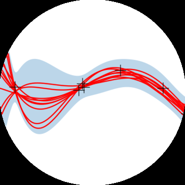
机器学习算法。
当然阅读本书的方式不止两种。 大多数读者
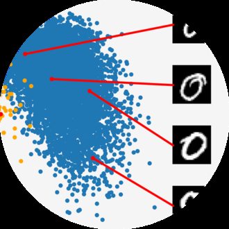
使用自上而下和自下而上方法的结合来学习，有时在尝试更复杂的概念之前建立基础数学技能，但也会根据机器学习的应用来选择主题。
我们在本书中涵盖的机器学习四个支柱（见图1.1）需要坚实的数学基础，这在第一部分中进行了阐述。
我们将数值数据表示为向量，将此类数据的表格表示为矩阵。向量和矩阵的研究称为线性代数，我们在第2章中介绍。向量集合作为矩阵也在那里描述。
给定代表现实世界中两个对象的两个向量，我们想要对它们的相似性做出陈述。其思想是相似的向量应该被我们的机器学习算法（我们的预测器）预测为具有相似的输出。为了形式化向量之间相似性的概念，我们需要引入以两个向量作为输入并返回表示其相似性的数值的运算。相似性和距离的构造是解析几何的核心，在第3章中讨论。
在第4章中，我们介绍了关于矩阵和矩阵分解的一些基本概念。矩阵上的某些运算在机器学习中极其有用，它们允许对数据进行直观的解释和更高效的学习。
我们经常将数据视为某些真实潜在信号的噪声观测。我们希望通过应用机器学习能够从噪声中识别信号。这要求我们有一种量化”噪声”含义的语言。我们通常还希望有允许我们表达某种不确定性的预测器，例如，量化我们对特定测试数据点预测值的置信度。不确定性的量化是概率论的领域，
[Draft (2023-10-18) of “Mathematics for Machine Learning”. Feedback:] [https://mml-book.com][.] [1.2 Two Ways to Read This Book] [15]
在第6章中涵盖。
为了训练机器学习模型，我们通常寻找最大化某种性能指标的参数。许多优化技术需要梯度的概念，它告诉我们搜索解决方案的方向。第5章关于向量微积分，详细介绍了梯度的概念，我们随后在第7章中使用，其中我们讨论寻找函数极大值/极小值的优化。
本书的第二部分介绍了机器学习的四个支柱，如图1.1所示。我们说明了本书第一部分介绍的数学概念如何成为每个支柱的基础。从广义上讲，章节按难度排序（按升序）。
在第8章中，我们以数学方式重述机器学习的三个组成部分（数据、模型和参数估计）。此外，我们提供了一些构建实验设置的指导原则，以防止对机器学习系统过于乐观的评估。回想一下，目标是构建在未见数据上表现良好的预测器。
在第9章中，我们将仔细研究线性回归，其中我们的
目标是找到将输入 [D] x ∈ R 映射到相应观测函数值 y ∈ R 的函数，我们可以将其解释为各自输入的标签。我们将讨论通过最大似然和最大后验估计进行的经典模型拟合（参数估计），以及贝叶斯线性回归，其中我们对参数进行积分而不是优化它们。
ure [1.1] 中的第二个支柱，使用主成分分析。降维的关键目标是找到高维数据 [D] x ∈ R 的紧凑、低维表示，这通常比原始数据更容易分析。与回归不同，降维仅关注对数据进行建模——没有与数据点 x 相关联的标签。
在第 [11] 章中，我们将转向第三个支柱：密度估计。[[density estimation]]
密度估计的目标是找到描述给定数据集的概率分布。我们将专注于高斯混合模型，并讨论找到该模型参数的迭代方案。与降维一样，没有与数据点 [D] x ∈ R 相关联的标签。然而，我们不寻求数据的低维表示。相反，我们对描述数据的密度模型感兴趣。
[©2023 M. P. Deisenroth, A. A. Faisal, C. S. Ong. Published by Cambridge University Press (2020).]
[16] [[引言和动机]]
[classification] 支柱：分类。我们将在支持向量机的背景下讨论分类。与回归（第 9 章）类似，我们有输入 x 和相应的标签 y。然而，与标签为实值的回归不同，分类中的标签是整数，这需要特别注意。
1.3 练习和反馈
我们在第一部分提供了一些练习，大部分可以用纸笔完成。对于第二部分，我们提供编程教程（jupyter notebooks）来探索本书讨论的机器学习算法的一些特性。
我们感谢 Cambridge University Press 强烈支持我们的目标，即通过在以下网址免费提供本书下载来实现教育和学习的民主化：
在那里可以找到教程、勘误表和其他材料。可以使用上述网址报告错误和提供反馈。
[Draft (2023-10-18) of “Mathematics for Machine Learning”. Feedback:] [https://mml-book.com][.]
[2]
线性代数
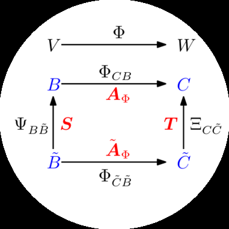
在形式化直观概念时，一种常见的方法是构造一组对象（符号）和一组操作这些对象的规则。这被称为代数。线性代数是研究向量和操作向量的某些规则的学科。我们许多人从学校了解的向量是
被称为”几何向量”的向量，通常用字母上方的小箭头表示，例如 − → − → x 和 y。在本书中，我们讨论更一般的向量概念，并使用粗体字母表示它们，例如 x 和 y。
一般来说，向量是可以相加并与标量相乘以产生同种类型的另一个对象的特殊对象。从抽象数学观点来看，满足这两个性质的任何对象都可以被认为是向量。以下是此类向量对象的一些例子：
几何向量。这种向量的例子可能在高中数学和物理中很熟悉。几何向量——见图 [2.1(a)]——是有向线段，可以绘制（至少在二维中）。两个几何向量 [→] [→] [→] [→] [→] x、y 可以相加，使得 x + y = z 是另一个几何向量。此外，与标量 λ [→] x、λ ∈ R 的乘法也是几何向量。实际上，它是按 λ 缩放的原始向量。因此，几何向量是前面介绍的向量概念的实例。将向量解释为几何向量使我们能够使用关于方向和大小的直觉来推理数学运算。
多项式也是向量；见图 [2.1(b)]：两个多项式可以
[→] [4] [图 2.1] [→]
x [+] [y] [[不同类型的]]
[2] [[向量。向量可以]]
[0] [是令人惊讶的]
[y] [[对象，包括]]
[→] [−][2] [[(a)] 几何] x [→] [向量]
[y] [4]
[和 [(b)] 多项式。]
− [2] [−] [0] [2]
[(a) 几何向量。] [(b) 多项式。]
[17]
[This material is published by Cambridge University Press as] [Mathematics for Machine Learning] [by] [Marc Peter Deisenroth, A. Aldo Faisal, and Cheng Soon Ong (2020). This version is free to view] [and download for personal use only. Not for re-distribution, re-sale, or use in derivative works.]
[©by M. P. Deisenroth, A. A. Faisal, and C. S. Ong, 2023.] [https://mml-book.com][.]
[18] [[线性代数]]
相加，结果是另一个多项式；它们可以与标量 λ ∈ R 相乘，结果也是多项式。因此，多项式是向量的（相当不寻常的）实例。注意多项式与几何向量非常不同。虽然几何向量是具体的”图形”，但多项式是抽象概念。然而，它们都是前面描述意义上的向量。
数字。我们可以将音频信号相加，它们的和是一个新的音频信号。如果我们缩放一个音频信号，我们也会得到一个音频信号。因此，音频信号也是一种向量。
a = [1, 2, 3]^T ∈ R^3 (2.1)
是一个三元数组的例子。将两个向量 a, b ∈ R^n 按分量相加会得到另一个向量：a + b = c ∈ R^n。此外，将 a ∈ R^n 乘以 λ ∈ R 会得到一个缩放向量 λa ∈ R^n。
将向量视为 R^n 的元素还有一个额外的好处，即它大致对应于计算机上的实数数组。许多编程语言支持数组运算，这允许方便地实现涉及向量运算的算法。
线性代数专注于这些向量概念之间的相似性。我们可以将它们相加并乘以标量。我们将主要关注 R^n 中的向量，因为线性代数中的大多数算法都是在 R^n 中制定的。我们将在第8章中看到，我们经常将数据视为 R^n 中的向量。在本书中，我们将专注于有限维向量空间，在这种情况下，任何类型的向量与 R^n 之间存在一一对应关系。当方便时，我们将使用关于几何向量的直觉并考虑基于数组的算法。
数学中的一个主要思想是”闭合”的概念。这是一个问题：我提出的运算可能产生的所有事物的集合是什么？在向量的情况下：从一小组向量开始，将它们相加并缩放它们，可能产生的向量集合是什么？这导致了向量空间（第2.4节）。向量空间的概念及其性质是机器学习的基础。本章介绍的概念总结在图2.2中。
本章主要基于 Drumm 和 Weil (2001)、Strang (2003)、Hogben (2013)、Liesen 和 Mehrmann (2015) 的讲义和书籍，以及 Pavel Grinfeld 的线性代数系列。其他优秀的
图2.2 本章介绍的概念的思维导图，以及它们在本书其他部分中的使用位置。
资源包括 Gilbert Strang 在 MIT 的线性代数课程和 3Blue1Brown 的线性代数系列。
线性代数在机器学习和一般数学中发挥着重要作用。本章介绍的概念在第3章中进一步扩展，包括几何的概念。在第5章中，我们将讨论向量微积分，其中矩阵运算的有原则的知识是必不可少的。在第10章中，我们将使用投影（将在第3.8节中介绍）进行主成分分析(PCA)的降维。在第9章中，我们将讨论线性回归，其中线性代数在解决最小二乘问题中发挥核心作用。
线性方程组是线性代数的核心部分。许多问题可以表述为线性方程组，线性代数为我们提供了解决它们的工具。
例 2.1
一家公司生产产品 N₁, …, Nₙ，需要资源 R₁, …, Rₘ。为了生产一单位产品 Nⱼ，需要 aᵢⱼ 单位资源 Rᵢ，其中 i = 1, …, m 和 j = 1, …, n。
目标是找到一个最优生产计划，即如果总共有 bᵢ 单位资源 Rᵢ 可用且（理想情况下）没有资源剩余，应该生产多少单位 xⱼ 的产品 Nⱼ 的计划。
如果我们生产 x₁, …, xₙ 单位相应的产品，我们需要总共
aᵢ₁x₁ + ··· + aᵢₙxₙ (2.2)
单位资源 Rᵢ。因此，一个最优生产计划 (x₁, …, xₙ) ∈ Rⁿ 必须满足以下方程组：
a₁₁x₁ + ··· + a₁ₙxₙ = b₁ ⋮ aₘ₁x₁ + ··· + aₘₙxₙ = bₘ (2.3)
其中 aᵢⱼ ∈ R 和 bᵢ ∈ R。
方程(2.3)是线性方程组的一般形式，x₁, …, xₙ 是该系统的未知数。满足(2.3)的每个n元组 (x₁, …, xₙ) ∈ Rⁿ 都是线性方程组的解。
例 2.2
线性方程组
x1 + x[2] + x3 = 3 (1) x1 − x[2] + 2x3 = 2 (2) (2.4)
无解：将前两个方程相加得到 2x1+3x3 = 5，这与第三个方程 (3) 矛盾。
让我们看看线性方程组
x1 + x[2] + x3 = 3 (1) x1 − x[2] + 2x3 = 2 (2) . (2.5)
x[2] + x3 = 2 (3)
从第一个和第三个方程，可以得出 x1 = 1。从 (1)+(2)，我们得到 2x1 + 3x3 = 5，即 x3 = 1。从 (3)，我们得到 x[2] = 1。因此，(1, 1, 1) 是唯一可能的唯一解（通过代入验证 (1, 1, 1) 是一个解）。
作为第三个例子，我们考虑
x1 + x[2] + x3 = 3 (1) x1 − x[2] + 2x3 = 2 (2) . (2.6)
由于 (1) +(2)=(3)，我们可以省略第三个方程（冗余）。从 (1) 和 (2)，我们得到 2x1 = 5 −3x3 和 2x[2] = 1+x3。我们定义 x3 = a ∈ R 作为自由变量，这样任何三元组
5/2 − 3a/2, 1/2 + a/2, a , a ∈ R (2.7)
都是线性方程组的解，即我们得到一个包含无穷多解的解集。
一般来说，对于实值线性方程组，我们得到要么无解、恰好一个解，要么无穷多解。线性回归（第9章）在我们无法求解线性方程组时解决例2.1的一个版本。
备注（线性方程组的几何解释）。在有两个变量 x1, x[2] 的线性方程组中，每个线性方程在 x1x[2]-平面上定义一条直线。由于线性方程组的解必须同时满足所有方程，解集是这些直线的交集。这个交集可以是一条直线（如果线性方程描述同一条直线）、一个点，或空集（当直线平行时）。图2.3给出了系统的示例
4x1 + 4x[2] = 5 2x1 − 4x[2] = 1 (2.8)
其中解空间是点 (x1, x[2]) = (1, 1/4)。类似地，对于三个变量，每个线性方程在三维空间中确定一个平面。当我们求这些平面的交集，即同时满足所有线性方程时，我们可以得到一个解集，它是一个平面、一条直线、一个点或空集（当平面没有公共交点时）。♢
为了系统地求解线性方程组，我们将介绍一个有用的紧凑记号。我们将系数 a[ij] 收集到向量中，并将向量收集到矩阵中。换句话说，我们将来自(2.3)的系统写成以下形式：
a[11] a[12] · · · a[1n] b[1]
⋮ ⋮ ⋱ ⋮ · x[1] + x[2] + · · · + x[n] = ⋮ . (2.9)
a[m1] a[m2] · · · a[mn] b[m]⇐⇒ a[11] · · · a[1n] x1 b1 ⋮ ⋱ ⋮ ⋮ = ⋮ . (2.10) a[m1] · · · a[mn] x[n] b[m]
在下面，我们将仔细看看这些矩阵并定义计算规则。我们将在第2.3节回到求解线性方程。
矩阵在线性代数中起着核心作用。它们可以用来紧凑地表示线性方程组，但它们也表示线性函数（线性映射），我们将在第2.7节看到。在我们讨论这些有趣的话题之前，让我们首先定义什么是矩阵以及我们可以对矩阵进行什么样的运算。我们将在第4章看到矩阵的更多性质。
定义2.1（矩阵）。对于 m, n ∈ N，实值 (m, n) 矩阵 A 是元素 a[ij], i = 1, . . . , m, j = 1, . . . , n 的 m ·n-元组，按照由 m 行和 n 列组成的矩形方案排列：
a[11] a[12] · · · a[1n] a[21] a[22] · · · a[2n] A = ⋮ ⋮ ⋱ ⋮ , a[ij] ∈ R . (2.11) a[m1] a[m2] · · · a[mn]
按照惯例，(1, n)-矩阵称为行，(m, 1)-矩阵称为列。这些特殊矩阵也称为行/列向量。R[m×n] 是所有实值 (m, n)-矩阵的集合。A ∈ R[m×n] 可以等价地表示为 a ∈ R[mn]，通过将矩阵的所有 n 列堆叠成一个长向量；见图2.4。

两个矩阵 A ∈ R[m×n], B ∈ R[m×n] 的和定义为逐元素和，即
a[11] + b[11] · · · a[1n] + b[1n] A + B := ⋮ ⋱ ⋮ ∈ R[m×n] . (2.12) a[m1] + b[m1] · · · a[mn] + b[mn]
对于矩阵 A ∈ R[m×n], B ∈ R[n×k]，乘积 C = AB ∈ R[m×k] 的元素 c[ij] 计算为
c[ij] = Σ[l=1 to n] a[il]b[lj], i = 1, . . . , m, j = 1, . . . , k. (2.13)
这意味着，要计算元素 c[ij]，我们将第 i
第[i]行[[A]]和[[B]]的第j列的[[n]]行与求和。稍后在3.2节中，
我们称这为对应行和列的点积。在需要明确表示我们正在执行乘法的情况下，我们使用符号A·B来表示乘法（明确显示”·“）。
备注。矩阵只有在其”相邻”维数匹配时才能相乘。例如，n×k矩阵A可以与k×m矩阵B相乘，但只能从左侧：
A B = C (2.14) |{z} |{z} |{z} n×k k×m n×m
如果m≠n，由于相邻维数不匹配，乘积BA未定义。♢
备注。矩阵乘法不是定义为矩阵元素的逐元素运算，即cij≠aijbij（即使A、B的大小选择得当）。这种逐元素乘法在编程语言中经常出现，当我们将（多维）数组相乘时，称为Hadamard乘积。♢
例2.3
对于A = [1 2 3; 3 2 1] ∈ R^(2×3)，B = [0 2; 1 -1; 0 1] ∈ R^(3×2)，我们得到
AB = [1 2 3; 3 2 1] [0 2; 1 -1; 0 1] = [2 3; 2 5] ∈ R^(2×2)，(2.15)
BA = [0 2; 1 -1; 0 1] [1 2 3; 3 2 1] = [6 4 2; -2 0 2; 3 2 1] ∈ R^(3×3)。(2.16)
图2.5 即使两个矩阵乘法AB和BA都有定义，结果的维数也可能不同。
从这个例子中，我们已经可以看出矩阵乘法不满足交换律，即AB≠BA；也见图2.5的图解。
定义2.2（单位矩阵）。在R^(n×n)中，我们定义单位矩阵
I_n := [1 0 ··· 0 ··· 0; 0 1 ··· 0 ··· 0; … … … … … …; 0 0 ··· 1 ··· 0; … … … … … …; 0 0 ··· 0 ··· 1] ∈ R^(n×n) (2.17)
作为对角线上包含1、其他地方都是0的n×n矩阵。
现在我们定义了矩阵乘法、矩阵加法和单位矩阵，让我们看看矩阵的一些性质：
结合律： ∀A∈R(m×n)，B∈R(n×p)，C∈R^(p×q)：(AB)C = A(BC) (2.18)
分配律： ∀A,B∈R(m×n)，C,D∈R(n×p)：(A+B)C = AC+BC (2.19a) A(C+D) = AC+AD (2.19b)
与单位矩阵的乘法： ∀A∈R^(m×n)：I_m A = AI_n = A (2.20)
注意对于m≠n，I_m≠I_n。
定义2.3（逆矩阵）。考虑方阵A∈R(n×n)。设矩阵B∈R(n×n)具有性质AB = I_n = BA。B称为A的逆矩阵，记作A^(-1)。
不幸的是，并非每个矩阵A都有逆矩阵A^(-1)。如果这个逆矩阵存在，A称为正则/可逆/非奇异的，否则称为奇异/不可逆的。当矩阵逆存在时，它是唯一的。在2.3节中，我们将讨论通过求解线性方程组来计算矩阵逆的一般方法。
备注（2×2矩阵逆矩阵的存在性）。考虑矩阵
A := [a11 a12; a21 a22] ∈ R^(2×2)。(2.21)
如果我们将A与
A’ := [a22 -a12; -a21 a11] (2.22)
相乘，我们得到
AA’ = [a11a22-a12a21 0; 0 a11a22-a12a21] = (a11a22-a12a21)I。(2.23)
因此，
A^(-1) = 1/(a11a22-a12a21) [a22 -a12; -a21 a11] (2.24)
当且仅当a11a22-a12a21≠0。在4.1节中，我们将看到a11a22-
a12a21是2×2矩阵的行列式。此外，我们通常可以使用行列式来检查矩阵是否可逆。♢
例2.4（逆矩阵）
矩阵
A = [1 2 1; 4 4 5; 6 7 7]，B = [-7 -7 6; 2 1 -1; 4 5 -4] (2.25)
互为逆矩阵，因为AB = I = BA。
定义2.4（转置）。对于A∈R(m×n)，矩阵B∈R(n×m)中bij = aji称为A的转置。我们写作B = A^T。
一般来说，AT可以通过将A的列写作AT的行来获得。以下是逆矩阵和转置的重要性质：
矩阵的主对角线（有时称为”主对角线”、“首对角线”、“前导对角线”或”主要对角线”）是矩阵A中i=j的元素Aij的集合。
AA^(-1) = I = A^(-1)A (2.26)
(AB)^(-1) = B(-1)A(-1) (2.27)
(A+B)^(-1) ≠ A(-1)+B(-1) (2.28)
(2.28)的标量情况是1/(2+4) ≠ 1/2 + 1/4 = 6。
(AT)T = A (2.29)
(AB)^T = B^T A^T (2.30)
(A+B)^T = AT+BT (2.31)
定义2.5（对称矩阵）。矩阵A∈R(n×n)是对称的，如果AT = A。
注意只有(n,n)矩阵才能是对称的。一般来说，我们也称(n,n)矩阵为方阵，因为它们具有相同的行数和列数。此外，如果AT可逆，那么A也可逆，且(A(-1))^T = (AT)(-1) =: A^(-T)。
备注（对称矩阵的和与积）：对称矩阵 A, B ∈ R1 的和总是对称的。然而，虽然它们的乘积总是有定义的，但通常不是对称的：
1 0 1 1 1 1 = . (2.32) 0 0 1 1 0 0
♢
让我们看看当矩阵与标量相乘时会发生什么。设 A ∈ R2 和 λ ∈ R。则 λA = K，其中 K_ij = λa_ij。
实际上，λ 缩放 A 的每个元素。对于 λ, ψ ∈ R，以下关系成立：
(λψ)C = λ(ψC)，C ∈ R3 λ(BC) = (λB)C = B(λC) = (BC)λ，B ∈ R4，C ∈ R5 注意这允许我们移动标量值。
(λC)^⊤ = C^⊤λ = C^⊤λ = λC^⊤，因为对于所有 λ ∈ R，λ^⊤ = λ。
(λ + ψ)C = λC + ψC，C ∈ R6 λ(B + C) = λB + λC，B, C ∈ R7
例 2.5（分配律）
如果我们定义
1 2C := 3 4 (2.33)
那么对于任意 λ, ψ ∈ R，我们得到
(λ + ψ)1 (λ + ψ)2 λ + ψ 2λ + 2ψ(λ + ψ)C = (λ + ψ)3 (λ + ψ)4 = 3λ + 3ψ 4λ + 4ψ (2.34a)
λ 2λ ψ 2ψ= 3λ 4λ + 3ψ 4ψ = λC + ψC . (2.34b)
如果我们考虑线性方程组
2x₁ + 3x₂ + 5x₃ = 1 4x₁ - 2x₂ - 7x₃ = 8 (2.35) 9x₁ + 5x₂ - 3x₃ = 2
并使用矩阵乘法的规则，我们可以将这个方程组写成更紧凑的形式：
2 3 5 x₁ 1
4 -2 -7 x₂ = 8 . (2.36)
9 5 -3 x₃ 2注意 x₁ 缩放第一列，x₂ 缩放第二列，x₃ 缩放第三列。
一般来说，线性方程组可以用其矩阵形式紧凑地表示为 Ax = b；参见 (2.3)，乘积 Ax 是 A 的列的（线性）组合。我们将在第 2.5 节中更详细地讨论线性组合。
在 (2.3) 中，我们介绍了方程组的一般形式，即
a₁₁x₁ + ··· + a₁ₙxₙ = b₁ ⋮ (2.37) aₘ₁x₁ + ··· + aₘₙxₙ = bₘ
其中 aᵢⱼ ∈ R 和 bᵢ ∈ R 是已知常数，xⱼ 是未知数，i = 1,…,m，j = 1,…,n。到目前为止，我们看到矩阵可以用作表述线性方程组的紧凑方式，因此我们可以写成 Ax = b，参见 (2.10)。此外，我们定义了基本的矩阵运算，如矩阵的加法和乘法。接下来，我们将专注于求解线性方程组，并提供一个求矩阵逆的算法。
在讨论如何一般性地求解线性方程组之前，让我们看一个例子。考虑方程组
1 0 8 -4 x₁ 42
x₂ = . (2.38)
0 1 2 12 x₃ 8
x₄该系统有两个方程和四个未知数。因此，一般来说我们期望有无穷多个解。这个方程组具有特别简单的形式，其中前两列由 1 和 0 组成。记住我们想要找到标量 x₁,…,x₄，使得 Σ⁴ᵢ₌₁ xᵢcᵢ = b，其中我们定义 cᵢ 为矩阵的第 i 列，b 为 (2.38) 的右端。问题 (2.38) 的解可以通过取第一列的 42 倍和第二列的 8 倍立即找到，使得
42 1 0b = 8 = 42 × 0 + 8 × 1 . (2.39)
因此，一个解是 [42, 8, 0, 0]ᵀ。这个解称为特解或特殊解。但是，这不是该线性方程组的唯一解。为了捕获所有其他解，我们需要巧妙地使用矩阵的列以非平凡的方式生成 0：向我们的特解添加 0 不会改变特解。为此，我们使用前两列（它们具有这种非常简单的形式）来表示第三列
8 1 0= 8 × 0 + 2 × 1 (2.40) 2
因此 0 = 8c₁ + 2c₂ - 1c₃ + 0c₄，即 (x₁, x₂, x₃, x₄) = (8, 2, -1, 0)。实际上，这个解的任意标量倍数 λ₁ ∈ R 都产生 0 向量，即
1 0 8 -4 8
λ₁ 2 = λ₁(8c₁ + 2c₂ - c₃) = 0 . (2.41)
0 1 2 12 -1
0按照同样的推理路线，我们使用前两列来表示 (2.38) 中矩阵的第四列，并生成另一组 0 的非平凡版本
1 0 8 -4 -4
λ₂ 12 = λ₂(-4c₁ + 12c₂ - c₄) = 0 (2.42)
0 1 2 12 0
-1对于任意 λ₂ ∈ R。综合所有内容，我们得到 (2.38) 中方程组的所有解，称为通解，为集合
42 8 -4x ∈ R⁴: x = 8 + λ₁ 2 + λ₂ 12 , λ₁, λ₂ ∈ R . (2.43) 0 -1 0 0 0 -1
备注：我们遵循的一般方法包括以下三个步骤：
通解和特解都不是唯一的。[♢]
前面例子中的线性方程组很容易求解，因为 (2.38) 中的矩阵具有这种特别方便的形式，
这使我们能够通过检查找到特解和通解。然而，一般的方程组并不具有这种简单的形式。
幸运的是，存在一种构造性的算法方法，可以将任何线性方程组转换为这种特别简单的形式：高斯消元法。高斯消元法的关键是线性方程组的基本变换，这些变换将方程组转换为简单形式。然后，我们可以将刚才在[(2.38)]例子中讨论的三个步骤应用到简单形式上。
2.3.2 基本变换
解线性方程组系统的关键是基本变换，这些变换保持解集不变，但将方程组转换为更简单的形式：
[Mathematics for Machine Learning草稿(2023-10-18)。反馈：https://mml-book.com. 2.3 解线性方程组 29]
交换两个方程（表示方程组的矩阵中的行）
用常数λ ∈ R\{0}乘以一个方程（行）
两个方程（行）相加
例2.6
对于a ∈ R，我们求以下方程组的所有解：
−2x1 + 4x[2] − 2x3 − x[4] + 4x[5] = −3
4x1 − 8x[2] + 3x3 − 3x[4] + x[5] = 2 . (2.44) x1 − 2x[2] + x3 − x[4] + x[5] = 0
x1 − 2x[2] − 3x[4] + 4x[5] = a
我们首先将这个方程组转换为紧凑的矩阵记号Ax = b。我们不再明确提及变量x，并构建增广矩阵（形式为A | b）
− 2 4 − 2 − 1 4 − 3 与R3交换 4 − 8 3 − 3 1
2
1 − 2 1 − 1 1 0 与R1交换 1 − 2 0 − 3 4 a
其中我们使用竖线来分隔[(2.44)]中的左边和右边。我们使用⇝来表示使用基本变换对增广矩阵的变换。增广矩阵[A | b]紧凑地表示线性方程组Ax = b。
交换第1行和第3行得到
1 − 2 1 − 1 1 0
4 − 8 3 − 3 1 2 +2R1 − 2 4 − 2 − 1 4 − 3
1 − 2 0 − 3 4 a −R1
当我们现在应用指定的变换（例如，从第2行减去第1行的四倍）时，我们得到
1 − 2 1 − 1 1 0
0 0 − 1 1 − 3 2
0 0 0 − 3 6 − 3
0 0 − 1 − 2 3 a −R[2] − R3
⇝ 1 − 2 1 − 1 1 0
0 0 − 1 1 − 3 2 ·(−1) 0 0 0 3 6 3 ·(−1/3) 0 0 0 0 0 a+ 1
⇝ 1 − 2 1 − 1 1 0
0 0 1 − 1 3 − 2 0 0 0 1 2 1 0 0 0 0 0 a+ 1
[©2023 M. P. Deisenroth, A. A. Faisal, C. S. Ong. Published by Cambridge University Press (2020).]
线性代数
这个（增广）矩阵处于一种方便的形式，即行阶梯形式(REF)。将这种紧凑记号转换回包含我们所求变量的显式记号，我们得到
x1 − 2x[2] + x3 − x[4] + x[5] = 0
x3 − x[4] + 3x[5] = −2 . (2.45) x[4] − 2x[5] = 1
0 = a + 1
只有当a = −1时，这个系统才能被解决。一个特解是
x[1] 2
x[2] 0x = x3 = −1 . (2.46) x[4] 1 x[5] 0
通解，它捕获所有可能解的集合，是
2 2 2
0 1 0x ∈ R : x = −1 + λ1 0 + λ[2] −1 , λ1, λ[2] ∈ R . (2.47) 1 0 2 0 0 1
在下面，我们将详细介绍获得线性方程组特解和通解的构造性方法。
注释（主元和阶梯结构）。一行的首项系数（从左边开始的第一个非零数）称为主元，并且总是严格位于其上一行主元的右侧。因此，任何处于行阶梯形式的方程组总是具有”阶梯”结构。♢
定义2.6（行阶梯形式）。如果矩阵满足以下条件，则称其处于行阶梯形式：
只包含零的所有行都位于矩阵的底部；相应地，至少包含一个非零元素的所有行都位于只包含零的行的上方。
仅看非零行，从左边开始的第一个非零数（也称为主元或首项系数）总是严格位于其上一行主元的右侧。在其他文献中，有时要求主元为1。
注释（基本变量和自由变量）。在行阶梯形式中对应于主元的变量称为基本变量，其他变量是自由变量。例如，在[(2.45)]中，x1、x3、x[4]是基本变量，而x[2]、x[5]是自由变量。♢
注释（获得特解）。当我们需要确定特解时，行阶梯形式使
[Mathematics for Machine Learning草稿(2023-10-18)。反馈：https://mml-book.com. 2.3 解线性方程组 31]
我们的工作变得更容易。为此，我们使用主元列来表示方程组的右边，使得b = Σ[i=1到P] λ[i]p[i]，其中p[i]，i = 1，…，P，是主元列。如果我们从最右边的主元列开始并向左工作，λ[i]最容易确定。
1 1 −1 0
0 1 −1 −2λ1 + λ[2] + λ3 = . (2.48) 0 0 1 1 0 0 0 0
从这里，我们可以相对直接地找到 λ3 = 1，λ[2] = −1，λ1 = 2。当我们把所有内容整合在一起时，我们不能忘记非主元列，对于这些列我们隐式地将系数设为0。因此，我们得到特解 x⊤ = [2, 0, −1, 1, 0]。♢
注释 (简化行阶梯形式)。一个方程组处于简化行阶梯形式(也称为行简化阶梯形式或行标准形式)，当满足以下条件时：
它处于行阶梯形式。
每个主元都是1。
主元是其所在列中唯一的非零项。
♢
简化行阶梯形式在第2.3.3节中将发挥重要作用，因为它允许我们以直接的方式确定线性方程组的通解。
注释 (高斯消元法)。高斯消元法是一种算法，通过执行基本变换将线性方程组转换为简化行阶梯形式。♢
验证以下矩阵处于简化行阶梯形式(主元用粗体标出)：
1 3 0 0 3 A = 0 0 1 0 9 . (2.49) 0 0 0 1 −4
寻找Ax = 0解的关键思想是观察非主元列，我们需要将它们表示为主元列的(线性)组合。简化行阶梯形式使这变得相对简单，我们用左侧主元列的和与倍数来表示非主元列：第二列是第一列的3倍(我们可以忽略第二列右侧的主元列)。因此，为了得到0，我们需要从第一列的三倍中减去第二列。现在，我们观察第五列，这是我们的第二个非主元列。第五列可以表示为第一个主元列的3倍，第二个主元列的9倍，以及第三个主元列的−4倍。我们需要记录主元列的索引，并将其转换为第一列的3倍，第二列的0倍(这是一个非主元列)，第三列的9倍(这是我们的第二个主元列)，以及第四列的−4倍(这是第三个主元列)。然后我们需要减去第五列以得到0。最终，我们仍在求解一个齐次方程组。
总结，Ax = 0，x ∈ R⁵的所有解由以下给出：
3 3
−1 0x ∈ R⁵ : x = λ₁ 0 + λ₂ 9 , λ₁, λ₂ ∈ R . (2.50) 0 −4 0 −1
接下来，我们介绍一个实用技巧来读出齐次线性方程组Ax = 0的解x，其中A ∈ R^(k×n)，x ∈ R^n。
首先，我们假设A处于简化行阶梯形式，没有任何只包含零的行，即：
[ 0 ··· 0 1 ∗ ··· ∗ 0 ∗ ··· ∗ 0 ∗ ··· ∗] [ .. .. .. .. ..] [ . . 0 0 ··· 0 1 ∗ ··· ∗ . . .] A = .. [ .. .. .. .. .. .. .. .. ..] [ . . . . 0 . . . . .] . [ ,] [ .. .. .. .. .. .. .. .. .. ..] [ . . . . . . . . 0 . .] [] 0 ··· 0 0 0 ··· 0 0 0 ··· 0 1 ∗ ··· ∗
(2.51)
其中∗可以是任意实数，约束条件是每行的第一个非零项必须是1，相应列中的所有其他项必须是0。带有主元的列j₁, …, j_k(用粗体标记)是标准单位向量e₁, …, e_k ∈ R^k。我们通过添加n − k行形式为
0 ··· 0 −1 0 ··· 0 (2.52)
的行将此矩阵扩展为Ã n × n矩阵，使得增广矩阵Ã的对角线包含1或−1。
然后，包含−1作为主元的Ã列是齐次方程组Ax = 0的解。更准确地说，这些列形成Ax = 0解空间的基(第2.6.1节)，我们稍后将称其为核或零空间(见第2.7.3节)。
让我们重新审视矩阵(2.49)，它已经处于简化REF形式：
1 3 0 0 3 A = 0 0 1 0 9 . (2.53) 0 0 0 1 −4
我们现在通过在对角线上主元缺失的位置添加形式为(2.52)的行，将此矩阵增广为5 × 5矩阵，得到：
1 3 0 0 3 0 −1 0 0 0 Ã = 0 0 1 0 9 . (2.54) 0 0 0 1 −4
0 0 0 0 −1
从这种形式，我们可以通过取Ã中在对角线上包含−1的列立即读出Ax = 0的解：
3 3
−1 0
x ∈ R⁵ : x = λ₁ 0 + λ₂ 9 , λ₁, λ₂ ∈ R , (2.55) 0 −4 0 −1
这与我们通过”洞察”在(2.50)中得到的解完全相同。
为了计算A ∈ R^(n×n)的逆矩阵A⁻¹，我们需要找到一个满足AX = I_n的矩阵X。那么，X = A⁻¹。我们可以将此写成一组同时线性方程AX = I_n，其中我们求解X = [x₁ | ··· |x_n]。我们使用增广矩阵记号来紧凑表示这组线性方程组，得到：
A | I_n ⇝ ··· ⇝ I_n | A⁻¹ . (2.56)
这意味着如果我们将增广方程组转换为简化行阶梯形式，我们可以在方程组的右侧读出逆矩阵。因此，确定矩阵的逆等同于求解线性方程组。
[©2023 M. P. Deisenroth, A. A. Faisal, C. S. Ong. 由剑桥大学出版社出版 (2020).]
[34] 线性代数
例 2.9 (通过高斯消元法计算逆矩阵)
要确定以下矩阵的逆矩阵：
1 0 2 0 1 1 0 0 A = (2.57) 1 2 0 1 1 1 1 1
我们写出增广矩阵：
1 0 2 0 1 0 0 0 1 1 0 0 0 1 0 0 1 2 0 1 0 0 1 0
1 1 1 1 0 0 0 1
并使用高斯消元法将其化为简化行阶梯形式：
1 0 0 0 − 1 2 − 2 2 0 1 0 0 1 − 1 2 − 2 , − − 0 0 1 0 1 1 1 1 0 0 0 1 −1 0 −1 2
这样所需的逆矩阵就由其右侧给出：
− 1 2 − 2 2 A⁻¹ = 1 − 1 2 − 2 . (2.58) − − 1 1 1 1 −1 0 −1 2
我们可以通过进行A⁻¹A的乘法运算来验证(2.58)确实是逆矩阵，观察到我们恢复了I₄。
在下文中，我们简要讨论求解形如Ax = b的线性方程组的方法。我们假设解存在。如果没有解，我们需要求助于近似解，这在本章中不涉及。解决近似问题的一种方式是使用线性回归的方法，我们将在第9章中详细讨论。
在特殊情况下，我们可能能够确定逆矩阵A⁻¹，这样Ax = b的解就给出为x = A⁻¹b。然而，这只有在A是方阵且可逆时才可能，而这通常不是情况。否则，在温和的假设下（即A需要有线性无关的列），我们可以使用变换：
A⊤Ax = A⊤b ⇔ x = (A⊤A)⁻¹A⊤b (2.59)
[《机器学习数学基础》草稿 (2023-10-18)。反馈：https://mml-book.com] 2.4 向量空间 35
并使用Moore-Penrose伪逆(A⊤A)⁻¹A⊤来确定解(2.59)，它解决了Ax = b，这也对应于最小范数最小二乘解。这种方法的缺点是它需要大量计算来进行矩阵-矩阵乘积和计算A⊤A的逆。此外，出于数值精度的原因，通常不建议计算逆或伪逆。因此，在下文中，我们简要讨论求解线性方程组的替代方法。
高斯消元法在计算行列式（第4.1节）、检查向量集是否线性无关（第2.5节）、计算矩阵的逆（第2.2.2节）、计算矩阵的秩（第2.6.2节）以及确定向量空间的基（第2.6.1节）时起着重要作用。高斯消元法是解决有数千个变量的线性方程组的直观且构造性的方法。然而，对于有数百万变量的系统，它是不实用的，因为所需的算术运算数量与同时方程的数量成三次方关系。
在实践中，许多线性方程的系统是间接求解的，要么通过静态迭代方法，如Richardson方法、Jacobi方法、Gauß-Seidel方法和逐次超松弛方法，要么通过Krylov子空间方法，如共轭梯度法、广义最小残差法或双共轭梯度法。我们参考Stoer和Burlirsch (2002)、Strang (2003)以及Liesen和Mehrmann (2015)的书籍以获得更多细节。
设x*是Ax = b的解。这些迭代方法的关键思想是建立形式为
x^(k+1) = Cx^(k) + d (2.60)
的迭代，对于合适的C和d，它在每次迭代中减少残差误差∥x^(k+1) - x∥并收敛到x。我们将在第3.1节中介绍范数∥·∥，它允许我们计算向量之间的相似性。
到目前为止，我们已经研究了线性方程组以及如何求解它们（第2.3节）。我们看到线性方程组可以用矩阵-向量记号(2.10)紧凑地表示。在下文中，我们将更仔细地研究向量空间，即向量所在的结构化空间。
在本章开始时，我们非正式地将向量描述为可以相加并与标量相乘的对象，并且它们仍然是相同类型的对象。现在，我们准备将此正式化，我们将从引入群的概念开始，群是一组元素和在这些元素上定义的运算，它保持集合的某种结构完整。
[©2023 M. P. Deisenroth, A. A. Faisal, C. S. Ong. 由剑桥大学出版社出版 (2020).]
[36] 线性代数
群在计算机科学中起着重要作用。除了为集合上的运算提供基本框架外，它们在密码学、编码理论和图形学中被大量使用。
定义 2.7 (群)。考虑一个集合G和在G上定义的运算⊗：G × G → G。如果以下条件成立，则G := (G, ⊗)被称为群：
注释。 逆元素是相对于运算⊗定义的，不一定意味着1/x。
如果另外∀x, y ∈ G：x ⊗ y = y ⊗ x，则G = (G, ⊗)是Abel群（可交换的）。
例 2.10 (群)
让我们看一些集合及其相关运算的例子，看看它们是否为群：
(Z, +) 是一个 Abelian group。
[N][0] [:=] [N] [∪ {][0][}] (N[0], +) 不是群：虽然 (N[0], +) 拥有中性元素 (0)，但缺少逆元素。(Z, ·) 不是群：虽然 (Z, ·) 包含中性元素 (1)，但对于任何 z ∈ Z, z ̸= ±1，都缺少逆元素。(R, ·) 不是群，因为 0 没有逆元素。(R \{0}, ·) 是 Abelian 的。
( [n] [n] R , +) , ( Z, +), n ∈ N 是 Abelian 的，如果 + 按分量定义，即：
(x1, · · · , x[n]) + (y1, · · · , y[n]) = (x1 + y1, · · · , x[n] + y[n]). [(2.61)]
那么，− ( x , · · · , x ) := (−x , · · · , −x ) 是逆元素，1 [n] 1 [n] e = (0, · · · , 0) 是中性元素。( [m] [×][n] R, +)，即 m × n 矩阵的集合是 Abelian 的（按 [(2.61)] 中定义的分量加法）。
让我们更仔细地看看 [n] [×][n] ( R, ·)，即具有矩阵乘法（按 [(2.13)] 中定义）的 n × n 矩阵集合。
– 封闭性和结合律直接从矩阵乘法的定义得出。
– 中性元素：单位矩阵 I [n] 是 [n] [×][n] ( R, ·) 中关于矩阵乘法 ” · ” 的中性元素。
[Draft (2023-10-18) of “Mathematics for Machine Learning”. Feedback:] [https://mml-book.com][.] [2.4 Vector Spaces]
– − 逆元素：如果逆元素存在（A 是正则的），那么 A 是 [n][×][n] [n][×][n] A ∈ R 的逆元素，在这种情况下（且仅在这种情况下）( R , ·) 是一个群，称为 general linear group。
Definition 2.8 (General Linear Group). 正则（可逆）矩阵 [n] [×][n] A ∈ R 的集合关于 [(2.13)] 中定义的矩阵乘法构成一个群，称为 general linear group GL(n, R)。然而，由于矩阵乘法不满足交换律，该群不是 Abelian 的。
当我们讨论群时，我们考虑的是集合 G 和 G 上的内运算，即仅对 G 中元素进行运算的映射 G × G → G。在下面的内容中，我们将考虑除了内运算 + 之外还包含外运算 · 的集合，即向量 x ∈ G 与标量 λ ∈ R 的乘法。我们可以将内运算视为一种加法，将外运算视为一种缩放。注意内/外运算与内/外积无关。
Definition 2.9 (Vector Space). 实值 vector space V = ( V , +, ·) 是一个集合 V 具有两个运算
+ : V × V → V (2.62) · : R × V → V (2.63)
其中
1. ( V, +) 是一个 Abelian group
2. 分配律：
1. ∀λ ∈ R, x, y ∈ V : λ · (x + y) = λ · x + λ · y 2. ∀λ, ψ ∈ R, x ∈ V : (λ + ψ) · x = λ · x + ψ · x
3. 结合律（外运算）：∀λ, ψ ∈ R, x ∈ V : λ·(ψ ·x) = (λψ)·x 4. 关于外运算的中性元素：∀x ∈ V : 1 ·x = x
元素 x ∈ V 称为 vectors。(V , +) 的中性元素是零向量 [⊤] 0 = [0 , . . . , 0]，内运算 + 称为 vector addition。元素 λ ∈ R 称为 scalars，外运算 · 是 multiplication by scalars。注意标量积是不同的概念，我们将在第 [3.2] 节中讨论。
Remark. [n] “向量乘法” ab，a , b ∈ R 是未定义的。理论上，我们可以定义分量乘法，使得 c = ab 其中 c [j] = a[j]b[j]。这种”数组乘法”在许多编程语言中很常见，但使用标准矩阵乘法规则在数学上意义有限：通过将向量视为 n × 1 矩阵
[©2023 M. P. Deisenroth, A. A. Faisal, C. S. Ong. Published by Cambridge University Press (2020).]
（我们通常这样做），我们可以使用 [(2.13)] 中定义的矩阵乘法。然而，这样向量的维度不匹配。只有以下向量乘法是定义的：[⊤] [n][×][n] ab ∈ R (outer product)，[⊤] ab ∈ R (inner/scalar/dot product)。♢
Example 2.11 (Vector Spaces)
让我们看一些重要的例子：
V [n] = R, n ∈ N 是一个 vector space，运算定义如下： – 加法：x+y = (x1, . . . , x[n])+(y1, . . . , y[n]) = (x1+y1, . . . , x[n] +y[n]) 对于所有 [n] x , y ∈ R
– 标量乘法：λ x = λ(x 1, . . . , x[n]) = (λx1, . . . , λx[n]) 对于所有 [n] λ ∈ R , x ∈ R
V [m] [×][n] = R, m, n ∈ N 是一个 vector space，具有
a + b · · · a + b [11] [11] [1][n] [1][n] – 加法：A + B = .. .. 对所有 A, B ∈ V 按分量定义。 . am + bm · · · a[mn] + b[mn]
λa · · · λa [11] [1][n] – 标量乘法：λA = .. .. 如第 [2.2] 节中定义。 . λam · · · λa[mn]
记住 [m] [×][n] [mn] R 等价于 R。
V = C，具有复数加法的标准定义。
Remark. 在下面的内容中，当 + 和 · 是标准向量加法和标量乘法时，我们将用 V 来表示 vector space (V , +, ·)。此外，我们将使用记号 x ∈ V 表示 V 中的向量以简化记号。♢
Remark. [n] [n][×]1 [1][×][n] vector spaces R , R , R 只是在向量书写方式上不同。在下面的内容中，我们不区分 [n] [n][×]1 R 和 R，这允许我们将 n 元组写成列向量
x 1
x = .. . [(2.64)] . x[n]
这简化了关于 vector space 运算的记号。然而，我们确实区分 [n][×]1 [1][×][n] R 和 R（行向量）以避免混淆
融合与矩阵乘法。默认情况下，我们用 x 表示列向量，行向量用 x⊤ 表示，即 x 的转置。♢
2.4.3 向量子空间
在下面的内容中，我们将介绍向量子空间。直观地说，它们是包含在原始向量空间中的集合，具有这样的性质：当我们对该子空间内的元素执行向量空间运算时，我们永远不会离开它。从这个意义上说，它们是”封闭的”。向量子空间是机器学习中的一个关键概念。例如，第10章演示了如何使用向量子空间进行降维。
定义 2.10（向量子空间）。设 V = (V, +, ·) 是一个向量空间，U ⊆ V，U ≠ ∅。则 U = (U, +, ·) 称为 V 的向量子空间（或线性子空间），如果 U 是一个向量空间，其向量空间运算 + 和 · 限制在 U × U 和 R × U 上。我们写作 U ⊆ V 来表示 V 的子空间 U。
如果 U ⊆ V 且 V 是向量空间，那么 U 自然地直接从 V 继承许多性质，因为它们对所有 x ∈ V 都成立，特别是对所有 x ∈ U ⊆ V。这包括 Abelian 群的性质、分配律、结合律和零元素。要确定 (U, +, ·) 是否为 V 的子空间，我们仍需证明：
例 2.12（向量子空间）
让我们看一些例子：
对于每个向量空间 V，平凡子空间是 V 本身和 {0}。
图2.6中只有例子 D 是 R² 的子空间（使用通常的内/外运算）。在 A 和 C 中，封闭性质被违反；B 不包含 0。
齐次线性方程组 Ax = 0 的解集，其中有 n 个未知数 x = [x₁, …, xₙ]⊤，是 Rⁿ 的子空间。
非齐次线性方程组 Ax = b，b ≠ 0 的解不是 Rⁿ 的子空间。
任意多个子空间的交集本身也是子空间。
图 2.6 并非 R² 的所有子集都是子空间。在 A 和 C 中，封闭性质被违反；B 不包含 0。只有 D 是子空间。
注记。 每个子空间 U ⊆ (Rⁿ, +, ·) 都是齐次线性方程组 Ax = 0 对 x ∈ Rⁿ 的解空间。♢
在下面的内容中，我们将仔细研究我们可以用向量（向量空间的元素）做什么。特别地，我们可以将向量相加并用标量乘以它们。封闭性质保证我们最终得到同一向量空间中的另一个向量。我们可以找到一组向量，通过将它们相加和缩放，我们可以表示向量空间中的每个向量。这组向量是一个基，我们将在第2.6.1节中讨论它们。在此之前，我们需要引入线性组合和线性无关性的概念。
定义 2.11（线性组合）。考虑向量空间 V 和有限个向量 x₁, …, xₖ ∈ V。则每个形式为
v = λ₁x₁ + ··· + λₖxₖ = Σᵢ₌₁ᵏ λᵢxᵢ ∈ V (2.65)
的 v ∈ V，其中 λ₁, …, λₖ ∈ R，称为向量 x₁, …, xₖ 的线性组合。
零向量总是可以写成 k 个向量 x₁, …, xₖ 的线性组合，因为 0 = Σᵢ₌₁ᵏ 0·xᵢ 总是成立的。在下面的内容中，我们对表示 0 的向量集合的非平凡线性组合感兴趣，即向量 x₁, …, xₖ 的线性组合，其中 (2.65) 中并非所有系数 λᵢ 都为 0。
定义 2.12（线性（无）关性）。让我们考虑向量空间 V，其中 k ∈ N 且 x₁, …, xₖ ∈ V。如果存在非平凡线性组合，使得 0 = Σᵢ₌₁ᵏ λᵢxᵢ 且至少有一个 λᵢ ≠ 0，则向量 x₁, …, xₖ 是线性相关的。如果只有平凡解存在，即 λ₁ = … = λₖ = 0，则向量 x₁, …, xₖ 是线性无关的。
线性无关性是线性代数中最重要的概念之一。直观地说，一组线性无关向量由没有冗余的向量组成，即如果我们从集合中移除任何一个向量，我们将失去某些东西。在接下来的章节中，我们将更正式地阐述这种直觉。
例 2.13（线性相关向量）
一个地理例子可能有助于澄清线性无关性的概念。一个在内罗毕（肯尼亚）的人描述基加利（卢旺达）在哪里可能会说：“你可以先向西北方向走506公里到坎帕拉（乌干达），然后向西南方向走374公里到达基加利。”这是描述基加利位置的充分信息，因为地理坐标系可以被视为一个二维向量空间（忽略海拔和地球的曲面）。这个人可能会补充说：“它距离这里大约751公里向西。”尽管这最后的陈述是正确的，但它对于
在基加利给定的前述信息中找到 基加利（见图[2.7]的说明）。在这个例子中，“506公里西北”向量（蓝色）和”374公里西南”向量（紫色）是线性无关的。这意味着西南向量不能用西北向量来描述，反之亦然。然而，第三个”751公里西”向量（黑色）是其他两个向量的线性组合，它使得向量集合线性相关。等价地，给定”751公里西”和”374公里西南”可以线性组合得到”506公里西北”。

坎帕拉 [图 2.7]
506 [[地理示例]]
w 北 [近似到] 西 公里 [(粗略地)]
南 [西 [[基本方向)]]]
内罗毕 [线性]
公里 [[相关向量]]
374 [在一个] 751 公里 西
西 [[二维]]
w [[空间（平面）。]]
基加利
南
公里
注. 以下性质对于确定向量是否线性无关很有用：
k个向量要么线性相关，要么线性无关。没有第三种选择。
如果向量 x1, . . . , x[k] 中至少有一个是 0，那么它们是线性相关的。如果两个向量相同，情况也是如此。
向量 {x1, . . . , x[k] : x[i] ̸= 0, i = 1, . . . , k}, k ⩾ 2，是线性相关的当且仅当其中（至少）一个是其他向量的线性组合。特别地，如果一个向量是另一个向量的倍数，即 x[i] = λx[j], λ ∈ R，那么集合 {x1, . . . , x[k] : x[i] ̸= 0, i = 1, . . . , k} 是线性相关的。
检查向量 x1, . . . , x[k] ∈ V 是否线性无关的实用方法是使用高斯消元法：将所有向量写成矩阵 A 的列，并执行高斯消元直到矩阵达到行阶梯形式（这里不需要简化行阶梯形式）：
[©2023 M. P. Deisenroth, A. A. Faisal, C. S. Ong. Published by Cambridge University Press (2020).]
[42] [[线性代数]]
– 主元列表示与左侧向量线性无关的向量。注意在构建矩阵时存在向量的排序。
– 非主元列可以表示为其左侧主元列的线性组合。例如，行阶梯形式
1 3 0 (2.66) 0 0 2
告诉我们第一列和第三列是主元列。第二列是非主元列，因为它是第一列的三倍。
所有列向量都线性无关当且仅当所有列都是主元列。如果至少存在一个非主元列，则列（因此相应的向量）是线性相关的。
♢
例 2.14
考虑 R[4] 中的
1 1 − 1 2 1 − 2x1 = , x[2] = , x3 = . (2.67) 3 0 1 4 2 1
为了检查它们是否线性相关，我们遵循一般方法并求解
1 1 − 1 2 1 − 2λ1 x1 + λ[2]x[2] + λ3x3 = λ1 + λ[2] + λ3 = 0 (2.68) 3 0 1 4 2 1
对于 λ1, . . . , λ3。我们将向量 x[i], i = 1, 2, 3 写成矩阵的列，并应用基本行变换直到我们识别出主元列：
1 1 − 1 1 1 − 1
2 1 − 2 0 1 0 · · · ⇝ ⇝ . (2.69)
3 0 1 0 0 14 2 1 0 0 0
这里，矩阵的每一列都是主元列。因此，不存在非平凡解，我们需要 λ1 = 0, λ[2] = 0, λ3 = 0 来求解方程组。因此，向量 x1, x[2], x3 是线性无关的。
[Draft (2023-10-18) of “Mathematics for Machine Learning”. Feedback:] [https://mml-book.com][.] [2.5 线性无关] [[43]]
注. 考虑一个向量空间 V，其中有 k 个线性无关向量 b1, . . . , b[k] 和 m 个线性组合
[k] x X = λ b , 1 i [i] [i][=1]
.. [(2.70) .]
[k] x X = λ b . [m] [im] [i] [i][=1]
定义 B = [b1, . . . , b[k] ] 为列是线性无关向量 b1, . . . , b[k] 的矩阵，我们可以写成
λ [1][j]
x[j] = Bλ[j] , λ[j] = .. , j = 1, . . . , m , (2.71) . λ [kj]
这是一种更紧凑的形式。
我们想要测试 x1, . . . , x[m] 是否线性无关。为此，我们遵循测试 P [m] ψ x = 0 的一般方法。 [j][=1] [j] [j]
用 [(2.71)]，我们得到
[m] [m] [m] X X X ψ x = ψ Bλ = B ψ λ . (2.72) [j] [j] [j] [j] [j] [j] [j][=1] [j][=1] [j][=1]
这意味着 {x1, . . . , x[m]} 线性无关当且仅当列向量 {λ1, . . . , λ[m]} 线性无关。
♢
注. 在向量空间 V 中，如果 m > k，那么 k 个向量 x1, . . . , x[k] 的 m 个线性组合是线性相关的。 [♢]
例 2.15
考虑一组线性无关向量 b1, b[2], b3, b[4] ∈ R[n] 和
x[2] = −4b1 − 2b[2] + 4b[4] . (2.73) x 3 = 2 b 1 + 3 b [2] − b 3 − 3 b [4] x[4] = 17b1 − 10b[2] + 11b3 + b[4]
向量 x1, . . . , x[4] ∈ R[n] 是线性无关的吗？为了回答这个问题，我们研究列向量
1 4 − 2 17
− 2 − 2 3 − 10
, , , (2.74)
1 0 − 1 11
− 1 4 − 3 1[©2023 M. P. Deisenroth, A. A. Faisal, C. S. Ong. Published by Cambridge University Press (2020).]
[44] [[线性代数]]
是否线性无关。对应的线性方程组的系数矩阵的简化行阶梯形式
1 − 4 2 17 − 2 − 2 3 − 10 A = (2.75) 1 0 − 1 11 −1 4 −3 1
给出为
1 0 0 − 7 0 1 0 − 15 . (2.76) 0 0 1 18 0 0 0 0
我们看到对应的线性方程组是非平凡可解
因此，x₁, …, x₄ 线性相关，因为 x₄ 可以表示为 x₁, …, x₃ 的线性组合。
在向量空间 V 中，我们特别关注具有以下性质的向量集合 A：V 中的任何向量 v 都可以通过 A 中向量的线性组合得到。这些向量是特殊的向量，在下面我们将对它们进行刻画。
定义 2.13（生成集和张成）。考虑向量空间 V = (V, +, ·) 和向量集合 A = {x₁, …, xₖ} ⊆ V。如果 V 中的每个向量 v 都可以表示为 x₁, …, xₖ 的线性组合，则称 A 为 V 的生成集。A 中所有向量的线性组合的集合称为 A 的张成。如果 A 张成向量空间 V，我们记作 V = span[A] 或 V = span[x₁, …, xₖ]。
生成集是张成向量（子）空间的向量集，即每个向量都可以表示为生成集中向量的线性组合。现在，我们将更加具体地刻画张成向量（子）空间的最小生成集。
定义 2.14（基）。考虑向量空间 V = (V, +, ·) 和 A ⊆ V。如果不存在更小的集合 Ã ⊊ A ⊆ V 张成 V，则称 V 的生成集 A 是最小的。V 的每个线性无关的生成集都是最小的，称为 V 的基。
设 V = (V, +, ·) 是向量空间，B ⊆ V，B ≠ ∅。则以下陈述等价：
基是最小的生成集和最大的线性无关向量集。
x = Σᵢ₌₁ᵏ λᵢbᵢ = Σᵢ₌₁ᵏ ψᵢbᵢ (2.77)
其中 λᵢ, ψᵢ ∈ ℝ，bᵢ ∈ B，则有 λᵢ = ψᵢ，i = 1, …, k。
例 2.16
在 ℝ³ 中，标准基是
B = {[1;0;0], [0;1;0], [0;0;1]} (2.78)
ℝ³ 中的不同基有
B₁ = {[1;0;0], [1;1;0], [1;1;1]}，B₂ = {[0.5;0.8;0.4], [1.8;0.3;0.3], [-2.2;-1.3;3.5]} (2.79)
集合
A = {[1;3;4], [2;0;2], [1;0;-4]} (2.80)
是线性无关的，但不是 ℝ⁴ 的生成集（也不是基）：例如，向量 [1,0,0,0]ᵀ 不能通过 A 中元素的线性组合得到。
注释。每个向量空间 V 都有一个基 B。前面的例子表明，向量空间 V 可能有许多基，即基不是唯一的。然而，所有基都有相同数量的元素，即基向量。♢
我们只考虑有限维向量空间 V。在这种情况下，V 的维数是 V 的基向量的数量，记作 dim(V)。如果 U ⊆ V 是 V 的子空间，则 dim(U) ≤ dim(V)，且 dim(U) = dim(V) 当且仅当 U = V。直观地，向量空间的维数可以看作该向量空间中独立方向的数量。
注释。向量空间的维数不一定等于向量中元素的数量。例如，向量空间 V = span[[0;1]] 是一维的，尽管基向量有两个元素。♢
注释。子空间 U = span[x₁, …, xₘ] ⊆ ℝⁿ 的基可以通过执行以下步骤找到：
♢
例 2.17（确定基）
对于向量子空间 U ⊆ ℝ⁵，由向量
x₁ = [1;-1;-1;-1], x₂ = [2;1;2;-2], x₃ = [3;3;5;-3], x₄ = [-1;-5;-6;1] ∈ ℝ⁵ (2.81)
张成，我们想要找出哪些向量 x₁, …, x₄ 是 U 的基。
为此，我们需要检查 x₁, …, x₄ 是否线性无关。因此，我们需要求解
Σᵢ₌₁⁴ λᵢxᵢ = 0 (2.82)
这导致齐次线性方程组，其矩阵为
[x₁, x₂, x₃, x₄] = [1 2 3 -1; -1 1 3 -5; -1 2 5 -6; -1 -2 -3 1] (2.83)
通过线性方程组的基本变换规则，我们得到行阶梯形
[1 2 3 -1; -1 1 3 -5; -1 2 5 -6; -1 -2 -3 1] ⟹ … ⟹ [1 2 3 -1; 0 1 2 -2; 0 0 0 1; 0 0 0 0; 0 0 0 0]
由于主元列表示哪一组向量线性无关，从行阶梯形可以看出 x₁, x₂, x₄ 线性无关（因为线性方程组 λ₁x₁ + λ₂x₂ + λ₄x₄ = 0 只能用 λ₁ = λ₂ = λ₄ = 0 求解）。因此，{x₁, x₂, x₄} 是 U 的基。
2.6.2 秩(Rank)
矩阵 A ∈ R^(m×n) 的线性无关列数等于线性无关行数，称为 A 的秩，记作 rk(A)。
备注。 矩阵的秩具有一些重要性质：
rk(A^⊤) = rk(A)，即列秩等于行秩。
A ∈ R^(m×n) 的列张成子空间 U ⊆ R^m，其中 dim(U) = rk(A)。稍后我们将称此子空间为像或值域。通过对 A 应用高斯消元法识别主元列，可以找到 U 的基。
A ∈ R^(m×n) 的行张成子空间 W ⊆ R^n，其中 dim(W) = rk(A)。通过对 A^⊤ 应用高斯消元法，可以找到 W 的基。
对于所有 A ∈ R^(n×n)，A 是正则的(可逆的)当且仅当 rk(A) = n。
对于所有 A ∈ R^(m×n) 和所有 b ∈ R^m，线性方程组 Ax = b 有解当且仅当 rk(A) = rk(A|b)，其中 A|b 表示增广矩阵。
对于 A ∈ R^(m×n)，Ax = 0 的解空间的维数为 n - rk(A)。稍后，我们将称此子空间为核或零空间。
如果矩阵 A ∈ R^(m×n) 的秩等于相同维数矩阵可能的最大秩，则称该矩阵具有满秩。这意味着满秩矩阵的秩是行数和列数中的较小者，即 rk(A) = min(m, n)。如果矩阵不具有满秩，则称其为秩亏缺的。
♢
例 2.18 (秩)
A = [1 0 1] [0 1 1] [0 0 0]
A 有两个线性无关的行/列，所以 rk(A) = 2。
A = [1 2 1] [-2 -3 1] [3 5 0]
我们使用高斯消元法来确定秩：
[1 2 1] [1 2 1] [-2 -3 1] ⇝ ··· ⇝ [0 1 3] (2.84) [3 5 0] [0 0 0]
这里，我们看到线性无关行数和列数是 2，因此 rk(A) = 2。
在接下来的内容中，我们将研究保持向量空间结构的映射，这将使我们能够定义坐标的概念。
在本章开始时，我们说向量是可以相加并与标量相乘的对象，结果对象仍然是向量。我们希望在应用映射时保持这个性质：
考虑两个实向量空间 V, W。如果映射 Φ : V → W 满足
Φ(x + y) = Φ(x) + Φ(y) (2.85) Φ(λx) = λΦ(x) (2.86)
对于所有 x, y ∈ V 和 λ ∈ R，则该映射保持向量空间的结构。我们可以在以下定义中总结这一点：
定义 2.15 (线性映射)。对于向量空间 V, W，映射 Φ : V → W 称为线性映射(或向量空间同态/线性变换)，如果
∀x, y ∈ V, ∀λ, ψ ∈ R : Φ(λx + ψy) = λΦ(x) + ψΦ(y). (2.87)
事实证明，我们可以将线性映射表示为矩阵(第 2.7.1 节)。回想一下，我们也可以将向量集合作为矩阵的列来收集。在处理矩阵时，我们必须记住矩阵代表什么：线性映射还是向量的集合。我们将在第 4 章中看到更多关于线性映射的内容。在继续之前，我们将简要介绍特殊映射。
定义 2.16 (单射、满射、双射)。考虑映射 Φ : V → W，其中 V, W 可以是任意集合。则 Φ 称为
单射，如果 ∀x, y ∈ V : Φ(x) = Φ(y) ⟹ x = y。满射，如果 Φ(V) = W。双射，如果它既是单射又是满射。
如果 Φ 是满射的，那么 W 中的每个元素都可以通过使用 Φ 从 V “到达”。双射的 Φ 可以被”撤销”，即存在映射 Ψ : W → V 使得 Ψ ∘ Φ(x) = x。这个映射 Ψ 称为 Φ 的逆，通常记作 Φ^(-1)。
根据这些定义，我们介绍向量空间 V 和 W 之间线性映射的以下特殊情况：
同构：Φ : V → W 线性且双射自同态：Φ : V → V 线性自同构：Φ : V → V 线性且双射
我们定义 id_V : V → V, x ↦ x 为 V 中的恒等映射或恒等自同构。
例 2.19 (同态)
映射 Φ : R² → C, Φ([x₁; x₂]) = x₁ + ix₂，是一个同态：
Φ([x₁; x₂] + [y₁; y₂]) = (x₁ + y₁) + i(x₂ + y₂) = x₁ + ix₂ + y₁ + iy₂ = Φ([x₁; x₂]) + Φ([y₁; y₂])
Φ(λ[x₁; x₂]) = λx₁ + λix₂ = λ(x₁ + ix₂) = λΦ([x₁; x₂]) (2.88)
这也证明了为什么复数可以表示为 R² 中的元组：存在一个双射线性映射，将 R² 中元组的逐元素加法转换为具有相应加法的复数集合。注意我们只证明了线性性，但没有证明双射性。
定理 2.17 (定理 3.59 在 [Axler (2015)] 中)。有限维向量空间 V 和 W 同构当且仅当 dim(V) = dim(W)。
定理 2.17 表明，在相同维数的两个向量空间之间存在线性双射映射。直观地说，这意味着相同维数的向量空间某种意义上是相同的东西，因为它们可以相互转换而不会产生任何损失。
定理 2.17 也为我们将 R^(m×n)(m × n 矩阵的向量空间)和 R^(mn)(长度为 mn 的向量的向量空间)视为相同提供了理由，因为它们的维数都是 mn，并且存在将一个转换为另一个的线性双射映射。
备注. 考虑向量空间 V, W, X。那么：
对于线性映射 Φ : V → W 和 Ψ : W → X，映射 Ψ ◦ Φ : V → X 也是线性的。
如果 Φ : V → W 是一个同构映射，那么 Φ : W → V 也是一个同构映射。
[©2023 M. P. Deisenroth, A. A. Faisal, C. S. Ong. Published by Cambridge University Press (2020).]
[50] [[Linear Algebra]]
图 2.8 由两组基向量定义的两个不同坐标系。根据选择的坐标系不同，向量 x 具有不同的坐标表示 x_b 和 x_e。
如果 Φ : V → W, Ψ : V → W 是线性的，那么 Φ + Ψ 和 λΦ, λ ∈ R，也是线性的。
♢
任何 n 维向量空间都与 R^n 同构（定理 2.17）。我们考虑 n 维向量空间 V 的一组基 {b₁, . . . , bₙ}。在下面的讨论中，基向量的顺序将很重要。因此，我们写作
B = (b₁, . . . , bₙ) (2.89)
并称这个 n 元组为 V 的有序基。
备注（记号）. 我们现在到了记号变得有些复杂的地方。因此，我们在这里总结一些部分。B = (b₁, . . . , bₙ) 是一个有序基，B = {b₁, . . . , bₙ} 是一个（无序）基，B = [b₁, . . . , bₙ] 是一个以向量 b₁, . . . , bₙ 为列的矩阵。♢
定义 2.18（坐标）. 考虑向量空间 V 和 V 的有序基 B = (b₁, . . . , bₙ)。对于任何 x ∈ V，我们得到唯一的表示（线性组合）
x = α₁b₁ + . . . + αₙbₙ (2.90)
其中 α₁, . . . , αₙ 是 x 关于 B 的坐标，向量
α = [α₁; …; αₙ] ∈ Rⁿ (2.91)
是 x 关于有序基 B 的坐标向量/坐标表示。
[Draft (2023-10-18) of “Mathematics for Machine Learning”. Feedback: https://mml-book.com.] 2.7 Linear Mappings [51]
基实际上定义了一个坐标系。我们熟悉二维中的 Cartesian 坐标系，它由标准基向量 e₁, e₂ 张成。在这个坐标系中，向量 x ∈ R² 有一个表示，告诉我们如何线性组合 e₁ 和 e₂ 来得到 x。但是，R² 的任何基都定义了一个有效的坐标系，之前的同一个向量 x 在 (b₁, b₂) 基中可能有不同的坐标表示。在图 2.8 中，x 关于标准基 (e₁, e₂) 的坐标是 [2, 2]ᵀ。但是，关于基 (b₁, b₂)，同一个向量 x 表示为 [1.09, 0.72]ᵀ，即 x = 1.09b₁ + 0.72b₂。在接下来的章节中，我们将发现如何获得这种表示。
例 2.20
让我们看一个几何向量 x ∈ R²，其关于 R² 的标准基 (e₁, e₂) 的坐标为 [2, 3]ᵀ。这意味着，我们可以写作 x = 2e₁ + 3e₂。但是，我们不必选择标准基来表示这个向量。如果我们使用基向量 b₁ = [1, -1]ᵀ, b₂ = [1, 1]ᵀ，我们将得到坐标 [-1/2, 5/2]ᵀ 来表示关于 (b₁, b₂) 的同一个向量（见图 2.9）。
图 2.9 向量 x 的不同坐标表示，取决于基的选择。 x = 2e₁ + 3e₂ x = -1/2 b₁ + 5/2 b₂
备注. 对于 n 维向量空间 V 和 V 的有序基 B，映射 Φ : Rⁿ → V, Φ(eᵢ) = bᵢ, i = 1, . . . , n 是线性的（并且由于定理 2.17 是一个同构映射），其中 (e₁, . . . , eₙ) 是 Rⁿ 的标准基。♢
现在我们准备好在矩阵和有限维向量空间之间的线性映射之间建立明确的联系。
定义 2.19（变换矩阵）. 考虑向量空间 V, W 及其对应的（有序）基 B = (b₁, . . . , bₙ) 和 C = (c₁, . . . , cₘ)。此外，我们考虑线性映射 Φ : V → W。对于 j ∈ {1, . . . , n}，
Φ(bⱼ) = α₁ⱼc₁ + · · · + αₘⱼcₘ = ∑ᵢ₌₁ᵐ αᵢⱼcᵢ (2.92)
是 Φ(bⱼ) 关于 C 的唯一表示。那么，我们称 m × n 矩阵 A_Φ 为 Φ 的变换矩阵（关于 V 的有序基 B 和 W 的有序基 C），其元素由下式给出：
A_Φ(i, j) = αᵢⱼ, (2.93)
Φ(bⱼ) 关于 W 的有序基 C 的坐标是 A_Φ 的第 j 列。考虑（有限维）向量空间 V, W 及其有序基 B, C 和线性映射 Φ : V → W，其
[©2023 M. P. Deisenroth, A. A. Faisal, C. S. Ong. Published by Cambridge University Press (2020).]
[52] [[Linear Algebra]]
变换矩阵为 A_Φ。如果 x̂ 是 x ∈ V 关于 B 的坐标向量，ŷ 是 y = Φ(x) ∈ W 关于 C 的坐标向量，那么
ŷ = A_Φx̂. (2.94)
这意味着变换矩阵可以用来将关于 V 中有序基的坐标映射到关于 W 中有序基的坐标。
例 2.21（变换矩阵）
考虑同态 Φ : V → W 以及 V 的有序基 B = (b₁, . . . , b₃) 和 W 的有序基 C = (c₁, . . . , c₄)。给定
Φ(b₁) = c₁ − c₂ + 3c₃ − c₄ Φ(b₂) = 2c₁ + c₂ + 7c₃ + 2c₄ (2.95) Φ(b₃) = 3c₂ + c₃ + 4c₄
关于 B 和 C 的变换矩阵 A_Φ 满足 Φ(bₖ) = ∑ᵢ₌₁⁴ αᵢₖcᵢ，k = 1, . . . , 3，并给出为
A_Φ = [α₁, α₂, α₃] = [1 2 0; -1 1 3; 3 7 1; -1 2 4], (2.96)
其中 α[j], j = 1, 2, 3, 是 Φ(b[j]) 相对于基 C 的坐标向量。
例 2.22 (向量的线性变换)
图 2.10 线性变换的三个例子，向量以点的形式显示：(a) 原始数据；(b) 旋转 45°；(c) 沿水平轴拉伸；(d) 一般线性映射。

我们考虑 R² 中一组向量的三种线性变换，变换矩阵为：
A₁ = [cos(π/4) -sin(π/4); sin(π/4) cos(π/4)], A₂ = [2 0; 0 1], A₃ = [1 3; 2 -1] (2.97)
图 2.10 给出了向量集合线性变换的三个例子。图 2.10(a) 显示了 R² 中的 400 个向量，每个向量由对应 (x₁, x₂) 坐标处的点表示。这些向量排列成正方形。当我们使用 (2.97) 中的矩阵 A₁ 对每个向量进行线性变换时，得到图 2.10(b) 中的旋转正方形。如果我们应用矩阵 A₂ 表示的线性映射，我们得到图 2.10(c) 中的矩形，其中每个 x₁ 坐标被拉伸 2 倍。图 2.10(d) 显示了图 2.10(a) 中的原始正方形使用 A₃ 进行线性变换后的结果，这是反射、旋转和拉伸的组合。
在下面的内容中，我们将仔细研究当我们改变 V 和 W 中的基时，线性映射 Φ : V → W 的变换矩阵如何变化。考虑两个有序基：
B = (b₁, …, bₙ), B̃ = (b̃₁, …, b̃ₙ) (2.98)
作为 V 的基，以及两个有序基：
C = (c₁, …, cₘ), C̃ = (c̃₁, …, c̃ₘ) (2.99)
作为 W 的基。此外，A_Φ ∈ Rᵐ×ⁿ 是线性映射 Φ : V → W 相对于基 B 和 C 的变换矩阵，Ã_Φ ∈ Rᵐ×ⁿ 是相对于基 B̃ 和 C̃ 的对应变换映射。
在下面的内容中，我们将研究 Ã 和 A 如何相关，即当我们选择从 B̃, C̃ 到 B, C 进行基变换时，我们如何/是否可以将 Ã_Φ 转换为 A_Φ。
备注. 我们有效地得到了恒等映射 id_V 的不同坐标表示。在图 2.9 的上下文中，这意味着将相对于 (e₁, e₂) 的坐标映射到相对于 (b₁, b₂) 的坐标，而不改变向量 x。通过改变基并相应地改变向量的表示，相对于这个新基的变换矩阵可以具有特别简单的形式，从而允许直接的计算。♢
例 2.23 (基变换)
考虑变换矩阵：
A = [2 1; 1 2] (2.100)
相对于 R² 中的标准基。如果我们定义新基：
B = ([1; 1], [1; -1]) (2.101)
我们得到对角变换矩阵：
à = [3 0; 0 1] (2.102)
相对于基 B，这比 A 更容易处理。
在下面的内容中，我们将研究将相对于一个基的坐标向量转换为相对于不同基的坐标向量的映射。我们将首先陈述主要结果，然后提供解释。
定理 2.20 (基变换). 对于线性映射 Φ : V → W，有序基
B = (b₁, …, bₙ), B̃ = (b̃₁, …, b̃ₙ) (2.103)
属于 V，以及
C = (c₁, …, cₘ), C̃ = (c̃₁, …, c̃ₘ) (2.104)
属于 W，以及 Φ 相对于 B 和 C 的变换矩阵 A_Φ，则相对于基 B̃ 和 C̃ 的对应变换矩阵 Ã_Φ 由下式给出：
Ã_Φ = T⁻¹A_Φ S (2.105)
这里， S ∈ Rⁿ×ⁿ 是 id_V 的变换矩阵，将相对于 B̃ 的坐标映射到相对于 B 的坐标， T ∈ Rᵐ×ᵐ 是 id_W 的变换矩阵，将相对于 C̃ 的坐标映射到相对于 C 的坐标。
证明 根据 Drumm and Weil (2001)，我们可以将 V 的新基 B̃ 的向量写成基 B 的基向量的线性组合，使得：
b̃ⱼ = s₁ⱼb₁ + ··· + sₙⱼbₙ = Σᵢ₌₁ⁿ sᵢⱼbᵢ, j = 1, …, n (2.106)
类似地，我们将 W 的新基向量 C̃ 写成基 C 的基向量的线性组合，得到：
c̃ₖ = t₁ₖc₁ + ··· + tₘₖcₘ = Σₗ₌₁ᵐ tₗₖcₗ, k = 1, …, m (2.107)
我们定义 S = ((sᵢⱼ)) ∈ Rⁿ×ⁿ 为将相对于 B̃ 的坐标映射到相对于 B 的坐标的变换矩阵，T = ((tₗₖ)) ∈ Rᵐ×ᵐ 为将相对于 C̃ 的坐标映射到相对于 C 的坐标的变换矩阵。特别地，S 的第 j 列是 b̃ⱼ 相对于 B 的坐标表示，T 的第 k 列是 c̃ₖ 相对于 C 的坐标表示。注意 S 和 T 都是可逆的。
我们将从两个角度来看 Φ(b̃ⱼ)。首先，应用映射 Φ，对于所有 j = 1, …, n，我们得到：
Φ(b̃ⱼ) = Σₖ₌₁ᵐ ãₖⱼc̃ₖ = Σₖ₌₁ᵐ ãₖⱼ Σₗ₌₁ᵐ tₗₖcₗ = Σₗ₌₁ᵐ (Σₖ₌₁ᵐ tₗₖãₖⱼ)cₗ (2.108)
其中我们首先将新的基向量 ˜c[k] ∈ W 表示为基向量 c[l] ∈ W 的线性组合，然后交换求和顺序。
或者，当我们将 ˜b[j] ∈ V 表示为 b[j] ∈ V 的线性组合时，我们得到
[n] ! [n] [n] [m]
Φ(˜ [[(2.106)]] X X X X b ) = Φ s b = s Φ( b ) = s a c (2.109a) [j] [ij] [i] [ij] [i] [ij] [li] [l]
[i][=1] [i][=1] [i][=1] [l][=1]
[m] ! [n]
= X X a s c , j = 1, . . . , n , [(2.109b)]
[li] [ij] [l]
[l][=1] [i][=1]
其中我们利用了 Φ 的线性性。比较 [(2.108)] 和 [(2.109b),] 对于所有 j = 1, . . . , n 和 l = 1, . . . , m，可得
[m] [n]
X X t ˜ a = a s (2.110) [lk] [kj] [li] [ij]
[k][=1] [i][=1]
因此，
T ˜ [m][×][n] A [Φ] = A [Φ] S ∈ R , (2.111)
使得
A ˜ − [Φ] = TA[Φ]S , (2.112)
这证明了定理 [2.20.]
定理 [2.20] 告诉我们，当 V 中的基改变（B 被替换为 B ˜) 和 W 中的基改变 ( C 被替换为 C ˜) 时，线性映射 Φ : V → W 的变换矩阵 A[Φ] 被等价矩阵 A ˜[Φ] 替换，其中
A ˜ − [Φ] = TA[Φ]S. (2.113)
图 [2.11] 说明了这种关系：考虑同态 Φ : V → W 以及 V 的有序基 B, B ˜ 和 W 的有序基 C, C ˜。映射 Φ[CB] 是 Φ 的一个实例，将 B 的基向量映射到 C 的基向量的线性组合上。假设我们知道关于有序基 B, C 的 Φ[CB] 的变换矩阵 A[Φ]。当我们在 V 中执行从 B 到 B ˜ 的基变换，在 W 中执行从 C 到 C ˜ 的基变换时，我们可以确定
[©2023 M. P. Deisenroth, A. A. Faisal, C. S. Ong. 由 Cambridge University Press 出版 (2020).]
[56] [[Linear Algebra]]
图 2.11 对于同态 Φ : V → W 和有序基 B, B ˜ 的 V 以及 C, C ˜ 的 W（标记为蓝色），我们可以等价地将关于基 B ˜, C ˜ 的映射 Φ[C] [˜][B] [˜] 表示为同态的组合，下标中的基对应的变换矩阵用红色标出。
相应的变换矩阵 A ˜[Φ] 如下：首先，我们找到线性映射 Ψ [B] [B] [˜] : V → V 的矩阵表示，该映射将关于新基 B ˜ 的坐标映射到关于”旧”基 B（在 V 中）的（唯一）坐标。然后，我们使用 Φ[CB] : V → W 的变换矩阵 A[Φ] 将这些坐标映射到关于 W 中 C 的坐标。最后，我们使用线性映射 Ξ [˜] [CC] : W → W 将关于 C 的坐标映射到关于 C ˜ 的坐标。因此，我们可以将线性映射 Φ [C] [˜] [˜] [B] 表示为涉及”旧”基的线性映射的组合：
Φ − [C] [˜] [˜] [˜] [B] [CC] [CB] [˜] [B] [B] [˜] [CB] [C] = Ξ ◦ Φ ◦ Ψ = Ξ Φ Ψ [C] [(2.114) ◦ ◦ [B] [˜] . [B]]
具体地，我们使用 Ψ [˜] 和 [B] [B] = id [V] Ξ [˜] ，即恒等映射，将向量映射到自身，但使用不同的基。 [C] [C] = id [W]
定义 2.21 (等价) 。 两个矩阵 A , A ˜ ∈ R [m][×][n] 是等价的，如果存在正则矩阵 S ∈ R [n] [×][n] 和 T ∈ R [m][×][m]，使得
A ˜ − = TAS.
定义 2.22 (相似) 。 两个矩阵 A , A ˜ ∈ R [n][×][n] 是相似的，如果存在正则矩阵 S ∈ R [n] [×][n] 使得 A ˜ = SAS −
备注。 相似矩阵总是等价的。然而，等价矩阵不一定相似。♢
备注。 考虑向量空间 V, W, X。从定理 [2.17] 后面的备注，我们已经知道对于线性映射 Φ : V → W 和 Ψ : W → X，映射 Ψ ◦ Φ : V → X 也是线性的。有了相应映射的变换矩阵 A[Φ] 和 A[Ψ]，整体变换矩阵是 A[Ψ][◦][Φ] = A[Ψ]A[Φ]。♢
根据这个备注，我们可以从组合线性映射的角度来看基变换：
A[Φ] 是关于基 B, C 的线性映射 Φ[CB] : V → W 的变换矩阵。A ˜[Φ] 是关于基 B ˜, C ˜ 的线性映射 Φ[C] [˜][B] [˜] : V → W 的变换矩阵。S 是线性映射 Ψ[B][B] [˜] : V → V（自同态）的变换矩阵，用 B 来表示 B ˜。通常，Ψ = id[V] 是 V 中的恒等映射。
[Draft (2023-10-18) of “Mathematics for Machine Learning”. Feedback:] [https://mml-book.com][.] [2.7 Linear Mappings] [[57]]
T 是线性映射 Ξ[C][C] [˜] : W → W（自同态）的变换矩阵，用 C 来表示 C ˜。通常，Ξ = id[W] 是 W 中的恒等映射。
如果我们（非正式地）仅用基来写下变换，
那么 A [Φ] : B → C ˜, A ˜ [Φ] : B ˜ → C ˜, S : B ˜ → B, T : C ˜ → C 和 T [−] 1 : C → C ˜，以及
B ˜ → C ˜ = B ˜ → B → C → C ˜ (2.115)
A ˜ − [Φ] = TA[Φ]S . (2.116)
注意 [(2.116)] 中的执行顺序是从右到左，因为向量在右侧相乘，所以 x 7→ Sx 7→ AΦ 7→ T − A ( Sx ) = A ˜ x。 [Φ] [Φ]
例 2.24 (基变换)
考虑线性映射 Φ : R 3 → R [4]，其变换矩阵是
1 2 0 − 1 1 3
A[Φ] = (2.117)
3 7 1
−1 2 4
关于标准基
0 0 0 1
1 0 0
0 1 0 0B = (0 , 1 , 0) , C = ( , , , ). (2.118)
0 0 1 00 0 1
0 0 0 1
我们寻求 Φ 在新基下的变换矩阵 ˜ A[Φ]：
1 0 1 1˜ 1 1 0 1
B = (1 , 1 , 0) ∈ R³, C = ( , , , ) . (2.119) 0 3 ˜ 0 1 0 1 1 0
0 1 1
0 0 0 1
那么，
1 1 0 1
1 0 1
1 0 1 0
S = 1 1 0 , T = , (2.120)
0 1 1 0
0 1 1
0 0 0 1
其中 S 的第 ˜ i 列是 b[i] 用 B 的基向量表示的坐标表示。由于 B 是标准基，坐标表示很容易找到。对于一般的基 B，我们需要求解线性方程组来找到 λ[i]，使得
[©2023 M. P. Deisenroth, A. A. Faisal, C. S. Ong. Published by Cambridge University Press (2020).]
[58] [[Linear Algebra]]
P 3 λ b , j , . . . , . 类似地，T 的第 j 列是 ˜ c[j] 用 C 的基向量表示的坐标表示。= ˜ b = 1 3 j T
[i][=1] [i] [i] [j]
因此，我们得到
1 1 − 1 − 1 3 2 1
A ˜ − 1 1 −1 1 −1 0 4 2 [Φ] = T A [Φ] S = (2.121a) 2 − 1 1 1 1 10 8 4
0 0 0 2 1 6 3
− 4 − 4 − 2
6 0 0
= . (2.121b)
4 8 4
1 6 3
在第 4 章中，我们将能够利用基变换的概念找到一个基，在该基下自同态的变换矩阵具有特别简单的（对角）形式。在第 10 章中，我们将研究数据压缩问题，并找到一个方便的基，我们可以将数据投影到该基上，同时最小化压缩损失。
2.7.3 像和核
线性映射的像和核是具有某些重要性质的向量子空间。接下来，我们将更仔细地描述它们的特征。
定义 2.23（像和核）。 对于 Φ : V → W，我们定义核/零空间
[零空间] − 0 ker(Φ) := Φ ([W] ) = {v ∈ V : Φ(v) = 0[W] } (2.122)
[像] 和像/值域
[值域]
Im(Φ) := Φ(V ) = {w ∈ W |∃v ∈ V : Φ(v) = w} . [(2.123)]
[定义域] 我们也称 V 和 W 分别为 Φ 的定义域和余定义域。 [余定义域]
直观上，核是 Φ 映射到中性元 0[W] ∈ W 的向量 v ∈ V 的集合。像是可以从 V 中的任何向量通过 Φ “到达”的向量 w ∈ W 的集合。图 2.12 给出了示意图。
注记。 考虑线性映射 Φ : V → W，其中 V、W 是向量空间。
总是有 Φ(0[V] ) = 0[W]，因此 0[V] ∈ ker(Φ)。特别地，零空间永远不为空。
Im(Φ) ⊆ W 是 W 的子空间，ker(Φ) ⊆ V 是 V 的子空间。
[Draft (2023-10-18) of “Mathematics for Machine Learning”. Feedback:] [https://mml-book.com][.] [2.7 Linear Mappings] [59]
V [Φ : V → W 图 2.12 线性映射] W [Φ : V → W 的核和像。]
[ker(Φ)] [Im(Φ)]
[0][V] [0][W]
Φ 是单射的（一对一的）当且仅当 ker(Φ) = {0}。
♢
注记（零空间和列空间）。 设 A ∈ R^(m×n)，考虑线性映射 Φ : R^n → R^m, x 7→ Ax。
对于 A = [a1, . . . , a[n]]，其中 a[i] 是 A 的列，我们得到
( n )
Im(Φ) = { Ax : x ∈ R^n } = { Σ x[i] a[i] : x1, . . . , x[n] ∈ R } (2.124a)
[i=1]
= span[a1, . . . , a[n]] ⊆ R^m, (2.124b)
即，像是 A 的列的生成空间，也称为列空间。因此，列空间（像）是 R^m 的一个子空间，其中 m 是矩阵的”高度”。
rk(A) = dim(Im(Φ))。
核/零空间 ker(Φ) 是齐次线性方程组 Ax = 0 的通解，它捕获了 R^n 中产生 0 ∈ R^m 的元素的所有可能线性组合。
核是 R^n 的一个子空间，其中 n 是矩阵的”宽度”。
核关注列之间的关系，我们可以用它来确定是否/如何将一列表示为其他列的线性组合。
♢
例 2.25（线性映射的像和核）
映射
x[1] x[1]x[2] x[2]
Φ : R⁴ → R², [x3] 7→ [x1 + 2x[2] - x3] = [1 2 -1 0] [x3] (2.125a)
x[4] x1 + x[4] [1 0 0 1] [x[4]]
1 2 − 1 0
= x1 + x[2] + x3 + x[4] (2.125b)
1 0 0 1
是线性的。为了确定 Im(Φ)，我们可以取变换矩阵的列的生成空间，得到
1 2 − 1 0
Im(Φ) = span[ , , , ] . (2.126)
1 0 0 1
为了计算 Φ 的核（零空间），我们需要求解 Ax = 0，即我们需要求解齐次方程组。为此，我们使用 Gaussian 消元将 A 变换为简化行阶梯形式：
1 2 − 1 0 1 0 0 1
⇝ · · · ⇝ . (2.127)
1 0 0 1 0 1 − 2 − 1
这个矩阵是简化行阶梯形式，我们可以使用 Minus-1 技巧来计算核的基（见第 2.3.3 节）。或者，我们可以将非主元列（第 3 列和第 4 列）表示为主元列（第 1 列和第 2 列）的线性组合。第三列 a3 等于第二列 a[2] 的 -1/2 倍。因此，0 = a3 + (1/2)a[2]。同样地，我们看到 a[4] = a1 - a[2]，因此 0 = a1 - a[2] - a[4]。
总的来说，这给出了核（零空间）：
0 − 11/2 1
ker(Φ) = span[ , ] . (2.128)
1 0 0 1
定理 2.24（秩-零化度定理）。 对于向量空间 V、W 和线性映射 Φ : V → W，有
dim(ker(Φ)) + dim(Im(Φ)) = dim(V ) . (2.129)
秩-零化度定理也被称为基本定理
线性映射定理（Axler, 2015，定理3.22）。以下是定理2.24的直接推论：
如果 dim(Im(Φ)) < dim(V)，那么 ker(Φ)
是非平凡的，即kernel包含的不仅仅是 0_V，并且 dim(ker(Φ)) ≥ 1。如果 A_Φ
是 Φ 相对于有序基的变换矩阵，且 dim(Im(Φ)) < dim(V)，那么线性方程组
A_Φx = 0 有无穷多个解。如果 dim(V) = dim(W)，那么以下三向等价关系成立：
- Φ 是单射的 - Φ 是满射的
- Φ 是双射的
因为 Im(Φ) ⊆ W。
接下来，我们将仔细研究从原点偏移的空间，即不再是向量子空间的空间。此外，我们将简要讨论这些仿射空间之间映射的性质，这些映射类似于线性映射。
备注。 在机器学习文献中，线性和仿射之间的区别有时不够清晰，因此我们可以找到将仿射空间/映射称为线性空间/映射的参考文献。♢
定义2.25（仿射子空间）。设 V 是向量空间，x_0 ∈ V，U ⊆ V 是子空间。那么子集
L = x_0 + U := {x_0 + u : u ∈ U } (2.130a) = {v ∈ V |∃u ∈ U : v = x_0 + u} ⊆ V (2.130b)
称为 V 的仿射子空间或线性流形。U 称为方向或方向空间，x_0 称为支撑点。在第12章中，我们将这样的子空间称为超平面。
注意，仿射子空间的定义在 x_0 ∉ U 时排除了 0。因此，对于 x_0 ∉ U，仿射子空间不是 V 的（线性）子空间（向量子空间）。
仿射子空间的例子是 R³ 中的点、直线和平面，它们不（必须）通过原点。
备注。 考虑向量空间 V 的两个仿射子空间 L = x_0 + U 和 L̃ = x̃_0 + Ũ。那么，L ⊆ L̃ 当且仅当 U ⊆ Ũ 且 x_0 - x̃_0 ∈ Ũ。
仿射子空间通常用参数来描述：考虑 V 的 k 维仿射空间 L = x_0 + U。如果 (b₁, …, bₖ) 是 U 的有序基，那么 L 中的每个元素 x 都可以唯一地表示为
x = x_0 + λ₁b₁ + … + λₖbₖ , (2.131)
其中 λ₁, …, λₖ ∈ R。这种表示称为 L 的参数方程，具有方向向量 b₁, …, bₖ 和参数 λ₁, …, λₖ。♢
例2.26（仿射子空间）
一维仿射子空间称为直线，可以写成 y = x_0 + λ₁b₁，其中 λ ∈ R，U = span[b₁] ⊆ Rⁿ 是 Rⁿ 的一维子空间。这意味着直线由支撑点 x_0 和定义方向的向量 b₁ 确定。参见图2.13的说明。
Rⁿ 的二维仿射子空间称为平面。平面的参数方程是 y = x_0 + λ₁b₁ + λ₂b₂，其中 λ₁, λ₂ ∈ R，U = span[b₁, b₂] ⊆ Rⁿ。这意味着平面由支撑点 x_0 和两个线性无关的向量 b₁, b₂ 确定，它们张成方向空间。
在 Rⁿ 中，(n-1) 维仿射子空间称为超平面，相应的参数方程是 y = x_0 + Σᵢ₌₁ⁿ⁻¹ λᵢbᵢ，其中 b₁, …, bₙ₋₁ 构成 Rⁿ 的 (n-1) 维子空间 U 的基。这意味着超平面由支撑点 x_0 和 (n-1) 个线性无关的向量 b₁, …, bₙ₋₁ 确定，它们张成方向空间。在 R² 中，直线也是超平面。在 R³ 中，平面也是超平面。
 直线是仿射子空间。直线上的向量 y = x_0 + λb₁ 位于具有支撑点 x_0 和方向
b₁ 的仿射子空间 L 中。
直线是仿射子空间。直线上的向量 y = x_0 + λb₁ 位于具有支撑点 x_0 和方向
b₁ 的仿射子空间 L 中。
备注（非齐次线性方程组和仿射子空间）。对于 A ∈ R^(m×n) 和 x ∈ R^m，线性方程组 Aλ = x 的解要么是空集，要么是 R^n 的维数为 n - rk(A) 的仿射子空间。特别地，线性方程 λ₁b₁ + … + λₙbₙ = x 的解，其中 (λ₁, …, λₙ) ≠ (0, …, 0)，是 R^n 中的超平面。
在 R^n 中，每个 k 维仿射子空间都是非齐次线性方程组 Ax = b 的解，其中 A ∈ R^(m×n)，b ∈ R^m，且 rk(A) = n - k。回忆一下，对于齐次方程组 Ax = 0，解是向量子空间，我们也可以将其视为支撑点 x_0 = 0 的特殊仿射空间。♢
类似于向量空间之间的线性映射（我们在第2.7节中讨论过），我们可以定义两个仿射空间之间的仿射映射。线性映射和仿射映射密切相关。因此，我们已经从线性映射中了解的许多性质，例如线性映射的复合是线性映射，也适用于仿射映射。
定义2.26（仿射映射）。对于两个向量空间 V, W，线性映射 Φ : V → W，以及 a ∈ W，映射
ϕ : V → W (2.132) x ↦ a + Φ(x) (2.133)
是从 V 到 W 的仿射映射。向量 a 称为 ϕ 的平移向量。
每个仿射映射 ϕ : V → W 也是线性映射 Φ : V → W 和 W 中的平移 τ : W → W 的组合，使得
ϕ = τ ◦ Φ。映射 Φ 和 τ 是唯一确定的。
仿射映射 ϕ : V → W，ϕ′ : W → X 的组合 ϕ′ ◦ ϕ 是仿射的。
仿射映射保持几何结构不变。它们也保持维度和平行性。
2.9 延伸阅读
学习线性代数有很多资源，包括 [Strang (2003),] [Golan (2007),] [Axler (2015),] 和 [Liesen and Mehrmann (2015)] 的教科书。还有几个在线资源，我们在本章的介绍中提到过。我们这里只涵盖了高斯消元法，但有许多其他方法可以求解线性方程组，我们推荐 [Stoer and Burlirsch (2002),] [Golub and Van Loan (2012),] 和 [Horn and Johnson (2013)] 的数值线性代数教科书进行深入讨论。
在本书中，我们区分线性代数的主题（如向量、矩阵、线性无关、基）和与向量空间几何相关的主题。在第 3 章中，我们将介绍内积，它诱发一个范数。这些概念允许我们定义角度、长度和距离，我们将用于正交投影。投影在许多机器学习算法中起关键作用，如线性回归和主成分分析，我们将分别在第 9 章和第 [10] 章中涵盖。
[©2023 M. P. Deisenroth, A. A. Faisal, C. S. Ong. Published by Cambridge University Press (2020).]
[64] [[Linear Algebra]]
练习
[2.1] [我们考虑] [(] [R{−1}, ⋆][)][，其中]
[a ⋆ b] [:=] [ab] [+] [a] [+] [b,] [a, b] [∈] [R{−1}] [(2.134)]
[a. 证明] [(] [R{−1}] [, ⋆][)] [是一个阿贝尔群。] [b. 求解]
3 [⋆ x ⋆ x] [= 15]
[在阿贝尔群] [(] [R{−1}][, ⋆][)] [中，其中] [⋆] [定义在 (2.134) 中。]
[2.2] [设] [n] [属于] [N] [{] [0] [}] [。设] [k, x] [属于] [Z] [。我们定义整数] [k] [的同余类] [k] [为集合]
[k] [=] { [∈] [Z | x] [−] [k] [= 0 (mod][n][)][}] [=] { [∈] [Z] [| ∃][a] [∈] [Z] : ( [−] [k] [=] [n] [·] [a][)][}] [.]
[我们现在定义] [Z/nZ] [(有时写作] [Z][n][) 为所有模] [n] [的同余类的集合。欧几里得除法意味着这个集合是包含] [n] [个元素的有限集合：]
[Z][n] [=] [{][0][,] [1][, . . . , n] [−] [1][}]
[对于所有] [a, b] [∈] [Z][n] [，我们定义] [a] [⊕] [b] [:=] [a] [+] [b]
[a. 证明] [(][Z][n][,] [⊕][)] [是一个群。它是阿贝尔的吗？] [b. 我们现在为] [Z][n] [中的所有] [a] [和] [b] [定义另一个运算] [⊗] [：]
[a] [⊗] [b] [=] [a] [×] [b ,] [[(2.135)]]
[其中] [a] [×] [b] [表示] [Z] [中的通常乘法。] [设] [n] [= 5] [。绘制] [Z][5]{0}] [在] [⊗] [下的乘法表，即计算] [Z][5]{0}] [中所有] [a] [和] [b] [的乘积] [a] [⊗] [b] [。] [因此，证明] [Z][5]{0}] [在] [⊗] [下封闭并且对于] [⊗] [拥有中性元素。显示] [Z][5]{0}] [中所有元素在] [⊗] [下的逆。] [得出结论] [(] [Z][5]{0}][,] [⊗][)] [是一个阿贝尔群。]
[c. 证明] [(][Z][8]{0}][,] [⊗][)] [不是一个群。] [d. 我们回顾贝祖定理(Bézout theorem)陈述两个整数] [a] [和] [b] [互质（即] [gcd][(][a, b][) = 1][) 当且仅当存在两个整数] [u] [和] [v] [使得] [au] [+] [bv] [= 1] [。证明] [(] [Z][n]{0}][,] [⊗][)] [是一个群当且仅当] [n] [∈] [N{0}] [是质数。]
[2.3] [考虑如下定义的] 3 [×] 3 [矩阵集合] [G] [：]
G = {[[1 x z], [0 1 y], [0 0 1]] | x, y, z ∈ R}
[我们定义] [·] [为标准矩阵乘法。] [(][G][,] [·][)] [是一个群吗？如果是，它是阿贝尔的吗？证明你的答案。]
[2.4] [如果可能，计算以下矩阵乘积：]
[Draft (2023-10-18) of “Mathematics for Machine Learning”. Feedback:] [https://mml-book.com.] [Exercises] [[65]]
[a.] [[1 2], [7 8]] [[1 1 0], [4 5 0], [1 1 1]]
[b.] [[1 2 3], [4 5 6], [7 8 9]] [[1 1 0], [0 1 1], [1 0 1]]
[c.] [[1 1 0], [0 1 1], [1 0 1]] [[1 2 3], [4 5 6], [7 8 9]]
[d.] [[1 2 1], [4 1 −1]] [[0 3], [1 −1], [−4 2]]
[e.] [[0 3], [1 −1], [−4 2]] [[1 2 1], [4 1 −1]]
[2.5] [求下列非齐次线性系统] [Ax] [=] [b] [中] x [的所有解的集合] [S] [，其中] [A] [和] [b] [定义如下：]
[a.] A = [[1 1 −1 −1], [2 5 −7 −5], [2 −1 1 3], [5 2 −4 2]], b = [1, [−2], [4], 6]
[b.] A = [[1 −1 0 0 1], [1 1 0 −3 0], [2 −1 0 1 −1], [−1 2 0 −2 −1]], b = [3, 6, [5], [−1]]
[2.6] [使用高斯消元法，求非齐次方程组] [Ax] [=] [b] [的所有解，其中]
A = [[0 1 0 0 1], [0 0 0 1 1], [0 1 0 0 0]], b = [[0], [2], [−1], 1]
[©2023 M. P. Deisenroth, A. A. Faisal, C. S. Ong. Published by Cambridge University Press (2020).]
[66] [[Linear Algebra]]
x₁
2.7 求解方程组在 x ∈ R 中的所有解：
2Ax = 12x
其中
A = [6 4 3] [6 0 9] [0 8 0]
且 ∑(i=1 to 3) P_i x_i = 1。
2.8 如果可能，求以下矩阵的逆矩阵：
A = [2 3 4] [3 4 5] [4 5 6]
A = [1 0 1 0] [0 1 1 0] [1 1 0 1] [1 1 1 0]
2.9 以下哪些集合是 R³ 的子空间？
2.10 以下向量集合是否线性无关？
2.11 将 y = 1 [-2] [5]
写成以下向量的线性组合：
x₁ = 1 x₂ = 1 x₃ = [2] 1 [2] [-1] 1 3 1
草稿（2023-10-18）《机器学习数学》。反馈：https://mml-book.com。练习 [67]
2.12 考虑 R⁴ 的两个子空间：
U₁ = span{1, [2], [-1]} U₂ = span{[-1], [2], [-3]} [2] [-1] [-1] 1 [-2] 6 [-3] [0] [-1] [-2] [2] [-2] 1 [-1] 1 1 [0] [-1]
求 U₁ ∩ U₂ 的基。
2.13 考虑两个子空间 U₁ 和 U₂，其中 U₁ 是齐次方程组 A₁x = 0 的解空间，U₂ 是齐次方程组 A₂x = 0 的解空间，其中：
A₁ = [1 0 1 3 -3 0] A₂ = [1 -2 -1 1 2 3] [2 1 3 7 -5 2] [1 0 1 3 -1 2]
2.14 考虑两个子空间 U₁ 和 U₂，其中 U₁ 由 A₁ 的列张成，U₂ 由 A₂ 的列张成，其中：
A₁ = [1 0 1 3 -3 0] A₂ = [1 -2 -1 1 2 3] [2 1 3 7 -5 2] [1 0 1 3 -1 2]
2.15 设 F = {(x, y, z) ∈ R³ | x + y - z = 0} 和 G = {(a - b, a + b, a - 3b) | a, b ∈ R}。
2.16 以下映射是否为线性映射？
Φ : L¹([a, b]) → R f ↦ Φ(f) = ∫ᵇₐ f(x)dx
其中 L¹([a, b]) 表示在 [a, b] 上可积函数的集合。
其中对于 k ≥ 1，Cᵏ 表示 k 次连续可微函数的集合，C⁰ 表示连续函数的集合。
©2023 M. P. Deisenroth, A. A. Faisal, C. S. Ong. 由 Cambridge University Press 出版 (2020)。
68 [线性代数]
Φ : R → R x ↦ Φ(x) = cos(x)
Φ : R³ → R² x ↦ [1 2 3] x [1 4 3]
设 θ ∈ [0, 2π] 且
Φ : R² → R² x ↦ [cos(θ) sin(θ) ] x [-sin(θ) cos(θ)]
2.17 考虑线性映射
Φ : R³ → R⁴
Φ([x₁]) = [3x₁ + 2x₂ + x₃] [x₂] [x₁ + x₂ + x₃] [x₃] [x₁ + 3x₂ - x₃] [2x₁ + 3x₂ + x₃]
求变换矩阵 A_Φ。求 rk(A_Φ)。计算 Φ 的核(kernel)和像(image)。dim(ker(Φ)) 和 dim(Im(Φ)) 是什么？
2.18 设 E 是向量空间。设 f 和 g 是 E 上的两个自同构(automorphism)，使得 f ∘ g = id_E（即，f ∘ g 是恒等映射 id_E）。证明 ker(f) = ker(g ∘ f)，Im(g) = Im(g ∘ f) 且 ker(f) ∩ Im(g) = {0_E}。
2.19 考虑自同态 Φ : R³ → R³，其变换矩阵（相对于 R³ 中的标准基）是
A_Φ = [1 1 0] [1 -1 0] [1 1 1]
的变换矩阵 Ã_Φ。
即执行向基变换向新基[B]。
2.20 让我们考虑R²的向量b₁’, b₂’, b₁, b₂，在R²的标准基中表示为：
b₁’ = [2, 1]ᵀ, b₂’ = [-1, 2]ᵀ, b₁ = [2, -1]ᵀ, b₂ = [1, 1]ᵀ
并且让我们定义两个有序基B’ = (b₁’, b₂’)和B = (b₁, b₂)，它们都是R²的基。
c₁ = [1, 2, -1]ᵀ, c₂ = [0, -1, 2]ᵀ, c₃ = [1, 0, -1]ᵀ
并且我们定义C = (c₁, c₂, c₃)。
证明C是R³的基，例如通过使用行列式（见第4.1节）。
让我们称C’ = (c₁’, c₂’, c₃’)为R³的标准基。确定矩阵P₂C’，该矩阵执行从C’到C的基变换。
Φ(b₁ + b₂) = c₂ + c₃ Φ(b₁ - b₂) = 2c₁ - c₂ + 3c₃
其中B = (b₁, b₂)和C = (c₁, c₂, c₃)分别是R²和R³的有序基。
确定Φ关于有序基B和C的变换矩阵AΦ。
确定A’，即Φ关于基B’和C’的变换矩阵。
让我们考虑向量x ∈ R²，其在B’中的坐标为[2, 3]ᵀ。
换句话说，x = 2b₁’ + 3b₂’。
计算x在B中的坐标。
基于此，计算Φ(x)在C中表示的坐标。
然后，用c₁’, c₂’, c₃’表示Φ(x)。
使用x在B’中的表示和矩阵A’直接找到这个结果。
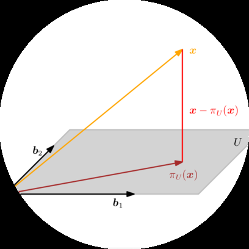
在第2章中，我们在一般但抽象的层面研究了向量、向量空间和线性映射。在本章中，我们将为所有这些概念添加一些几何解释和直觉。特别地，我们将研究几何向量并计算它们的长度和距离，或两个向量之间的角度。为了能够做到这一点，我们为向量空间配备一个内积(inner product)，该内积诱导向量空间的几何结构。内积及其对应的范数(norms)和度量(metrics)捕获了相似性和距离的直观概念，我们在第12章中使用这些概念来开发支持向量机(support vector machine)。然后，我们将使用向量长度和向量间角度的概念来讨论正交投影(orthogonal projections)，这在我们讨论第10章的主成分分析(principal component analysis)和第9章通过最大似然估计的回归时将起核心作用。图3.1概述了本章概念之间的关系以及它们与本书其他章节的联系。
图3.1 本章介绍的概念的思维导图，以及它们在本书其他部分中的使用时机。
内积(Inner product)
诱导
范数(Norm) → 分类(Classification) → 第12章
长度(Lengths) → 正交投影(Orthogonal projection) → 角度(Angles) → 旋转(Rotations)
第9章 → 第4章 → 第10章回归(Regression) → 矩阵分解(Matrix decomposition) → 降维(Dimensionality reduction)
当我们考虑几何向量，即从原点开始的有向线段时，直觉上向量的长度就是这个有向线段的”端点”到原点的距离。在下面的内容中，我们将使用范数(norm)的概念来讨论向量长度的概念。
定义3.1（范数）。向量空间V上的范数是一个函数
∥ · ∥ : V → ℝ, (3.1) x ↦ ∥x∥, (3.2)
它为每个向量x分配其长度 ∥x∥ ∈ ℝ，使得对于所有λ ∈ ℝ和x, y ∈ V，以下条件成立：
绝对齐次性：∥λx∥ = |λ|∥x∥
三角不等式：∥x + y∥ ⩽ ∥x∥ + ∥y∥
正定性：∥x∥ ⩾ 0且∥x∥ = 0 ⇔ x = 0
在几何术语中，三角不等式表明对于任何三角形，任意两边长度之和必须大于或等于
图3.2 三角不等式。
图3.3 对于不同的范数，红线表示范数为1的向量集合。左：Manhattan范数；右：欧几里得距离。
∥x∥₁ = 1 ∥x∥₂ = 1
到剩余边的长度；参见图[3.2]的说明。
定义[3.1]是基于一般向量空间V（第[2.4]节），但在本书中我们只考虑n维向量空间R^n。回忆对于向量x ∈ R^n，我们使用下标表示向量的元素，即x_i是向量x的第i个元素。
例3.1（曼哈顿范数）
R^n上的曼哈顿范数定义为对于x ∈ R^n：
‖x‖₁ := Σ|x_i|, (3.3)
其中|·|是绝对值。图[3.3]的左面板显示了所有满足‖x‖₁ = 1的向量x ∈ R²。曼哈顿范数也称为ℓ₁范数。
例3.2（欧几里得范数）
x ∈ R^n的欧几里得范数定义为：
‖x‖₂ := √(Σx_i²) = √(x^T x) (3.4)
并计算x到原点的欧几里得距离。图[3.3]的右面板显示了所有满足‖x‖₂ = 1的向量x ∈ R²。欧几里得范数也称为ℓ₂范数。
注意。 在本书中，如果没有特别说明，我们将默认使用欧几里得范数[(3.4)]。 ♢
内积允许引入直观的几何概念，如向量的长度以及两个向量之间的角度或距离。内积的主要目的是确定向量之间是否正交。
我们可能已经熟悉一种特殊类型的内积，即R^n中的标量积/点积，其定义为：
x^T y = Σx_i y_i. (3.5)
在本书中我们将此特定内积称为点积。然而，内积是具有特定性质的更一般概念，我们现在将介绍这些概念。
回忆第[2.7]节的线性映射，我们可以重新安排关于加法和标量乘法的映射。双线性映射Ω是具有两个参数的映射，并且在每个参数中都是线性的，即当我们考虑向量空间V时，对于所有x, y, z ∈ V, λ, ψ ∈ R成立：
Ω(λx + ψy, z) = λΩ(x, z) + ψΩ(y, z) [(3.6)] Ω(x, λy + ψz) = λΩ(x, y) + ψΩ(x, z). [(3.7)]
这里，[(3.6)]断言Ω在第一个参数中是线性的，[(3.7)]断言Ω在第二个参数中是线性的（另见[(2.87)]）。
定义3.2. 设V是向量空间，Ω : V × V → R是将两个向量映射到实数的双线性映射。那么
Ω称为对称的，如果对于所有x, y ∈ V，Ω(x, y) = Ω(y, x)，即参数的顺序无关紧要。
Ω称为正定的，如果
∀x ∈ V {0} : Ω(x, x) > 0, Ω(0, 0) = 0. (3.8)
定义3.3. 设V是向量空间，Ω : V × V → R是将两个向量映射到实数的双线性映射。那么
正定的对称双线性映射Ω : V × V → R称为V上的内积。我们通常写作⟨x, y⟩而不是Ω(x, y)。
对(V, ⟨·, ·⟩)称为内积空间或（实）带内积的向量空间。如果我们使用[(3.5)]中定义的点积，我们称(V, ⟨·, ·⟩)为欧几里得向量空间。
在本书中我们将这些空间称为内积空间。
例3.3（非点积的内积） 考虑V = R²。如果我们定义
⟨x, y⟩ := x₁y₁ - (x₁y₂ + x₂y₁) + 2x₂y₂ (3.9)
那么⟨·, ·⟩是内积但不同于点积。证明将作为练习。
对称正定矩阵在机器学习中起重要作用，它们通过内积定义。在第[4.3]节中，我们将在矩阵分解的背景下回到对称正定矩阵。对称正半定矩阵的概念是核函数定义的关键（第[12.4]节）。
考虑具有内积⟨·, ·⟩ : V × V → R（见定义[3.3]）的n维向量空间V和V的有序基B = (b₁, …, bₙ)。回忆第[2.6.1]节，任何向量x, y ∈ V都可以写成基向量的线性组合，使得x = Σψᵢbᵢ ∈ V和y = Σλⱼbⱼ ∈ V，其中ψᵢ, λⱼ ∈ R为合适的参数。由于内积的双线性性，对于所有x, y ∈ V成立：
⟨x, y⟩ = ⟨Σψᵢbᵢ, Σλⱼbⱼ⟩ = ΣΣψᵢ⟨bᵢ, bⱼ⟩λⱼ = x̂ᵀAŷ, (3.10)
其中Aᵢⱼ := ⟨bᵢ, bⱼ⟩，x̂, ŷ是x和y相对于基B的坐标。这意味着内积⟨·, ·⟩通过A唯一确定。内积的对称性也意味着A是对称的。此外，内积的正定性意味着
∀x ∈ V {0} : x̂ᵀAx̂ > 0. (3.11)
定义3.4（对称正定矩阵）。 满足[(3.11)]的对称矩阵A ∈ R^(n×n)称为对称正定，或
[正定] 只是正定的。如果在 [(3.11)] 中只有 ⩾ 成立，那么 A 被称为对称，[正定] 正半定。
[对称，正]
[半定]
例 3.4 (对称正定矩阵)
考虑矩阵
9 6 9 6 A₁ = , A₂ = . (3.12) 6 5 6 3
A₁ 是正定的，因为它是对称的且
9 6 x₁ x⊤A₁x = [x₁ x₂] (3.13a) 6 5 x₂
= 9x₁² + 12x₁x₂ + 5x₂² = (3x₁ + 2x₂)² + x₂² > 0 (3.13b)
对于所有 x ∈ V {0}。相比之下，A₂ 是对称的但不是正定的，因为 x⊤A₂x = 9x₁² + 12x₁x₂ + 3x₂² = (3x₁ + 2x₂)² - x₂²，可能小于 0，例如，对于 x = [2, -3]⊤。
如果 A ∈ R^(n×n) 是对称正定的，那么
⟨x, y⟩ = x̂⊤Aŷ (3.14)
定义了关于有序基 B 的内积，其中 x̂ 和 ŷ 是 x, y ∈ V 关于 B 的坐标表示。
定理 3.5. 对于实值有限维向量空间 V 和 V 的有序基 B，⟨·, ·⟩ : V × V → R 是内积当且仅当存在对称正定矩阵 A ∈ R^(n×n) 使得
⟨x, y⟩ = x̂⊤Aŷ . (3.15)
如果 A ∈ R^(n×n) 是对称正定的，则有以下性质：
A 的零空间(kernel)只包含 0，因为对所有 x ≠ 0 有 x⊤Ax > 0。这意味着如果 x ≠ 0 则 Ax ≠ 0。A 的对角元素 aᵢᵢ 都是正的，因为 aᵢᵢ = eᵢ⊤Aeᵢ > 0，其中 eᵢ 是 Rⁿ 中标准基的第 i 个向量。
[Draft (2023-10-18) of “Mathematics for Machine Learning”. Feedback: https://mml-book.com.] 3.3 长度和距离 75
在第 3.1 节中，我们已经讨论了可以用来计算向量长度的范数。内积和范数密切相关，任何内积都自然地诱导出一个范数 [内积诱导范数。]
∥x∥ := √⟨x, x⟩ (3.16)
这样我们可以使用内积来计算向量的长度。然而，并非每个范数都由内积诱导。Manhattan 范数 [(3.3)] 是一个没有对应内积的范数的例子。在下面，我们将重点关注由内积诱导的范数，并引入几何概念，如长度、距离和角度。
备注 (Cauchy-Schwarz 不等式)。对于内积向量空间 (V, ⟨·, ·⟩)，诱导范数 ∥ · ∥ 满足 Cauchy-Schwarz 不等式 [Cauchy-Schwarz 不等式]
|⟨x, y⟩| ⩽ ∥x∥∥y∥ . (3.17)
♢
例 3.5 (使用内积计算向量长度)
在几何学中，我们经常关心向量的长度。现在我们可以使用内积通过 [(3.16)] 来计算它们。让我们取 x = [1, 1]⊤ ∈ R²。如果我们使用点积作为内积，通过 [(3.16)] 我们得到
∥x∥ = √(x⊤x) = √(1² + 1²) = √2 (3.18)
作为 x 的长度。现在让我们选择一个不同的内积：
⟨x, y⟩ := x⊤[2 -1; -1 1]y = 2x₁y₁ - (x₁y₂ + x₂y₁) + x₂y₂ . (3.19)
如果我们计算向量的范数，那么当 x₁ 和 x₂ 符号相同(且 x₁x₂ > 0)时，这个内积返回比点积更小的值；否则，它返回比点积更大的值。使用这个内积，我们得到
⟨x, x⟩ = 2x₁² - 2x₁x₂ + x₂² = 2·1 - 2·1·1 + 1 = 1 ⇒ ∥x∥ = 1 (3.20)
所以使用这个内积时 x 比使用点积时更”短”。
定义 3.6 (距离和度量)。考虑内积空间 (V, ⟨·, ·⟩)。那么
d(x, y) := ∥x - y∥ = √⟨x - y, x - y⟩ (3.21)
称为 x, y ∈ V 之间的距离。如果我们使用点积作为内积，那么距离称为欧几里得距离。[距离] [欧几里得距离]
[©2023 M. P. Deisenroth, A. A. Faisal, C. S. Ong. Published by Cambridge University Press (2020).] 76 [解析几何]
映射
d : V × V → R (3.22) (x, y) ↦ d(x, y) (3.23)
称为度量。[度量]
备注。 与向量的长度类似，向量之间的距离不需要内积：范数就足够了。如果我们有一个由内积诱导的范数，距离可能会根据内积的选择而变化。♢
度量 d 满足以下性质：
备注。 乍一看，内积和度量的性质列表非常相似。然而，通过比较定义 3.3 和定义 3.6，我们观察到 ⟨x, y⟩ 和 d(x, y) 的行为方向相反。非常相似的 x 和 y 会导致内积的大值和度量的小值。♢
图 3.4 [当限制到 [0, π] 时，f(ω) = cos(ω) 返回区间 [-1, 1] 中的唯一数。] 除了能够定义向量的长度以及两个向量之间的距离外，内积还通过定义两个向量之间的角度 ω 来捕获向量空间的几何性质。我们使用 Cauchy-Schwarz 不等式 [(3.17)] 在内积空间中定义向量 x, y 之间的角度 ω，这个概念与我们在 R¹、R² 和 R³ 中的直觉一致。假设 x ≠ 0, y ≠ 0。那么
-1 ⩽ ⟨x, y⟩/(∥x∥∥y∥) ⩽ 1 . (3.24)
[cos(ω)]
[-1] [0] [π/2] [π] [0] 1
因此，存在唯一的 ω ∈ [0, π]，如图3.4所示，其中
cos ω = ⟨x, y⟩ / (∥x∥ ∥y∥) (3.25)
数值ω是向量x和y之间的角度。直观地说，两个向量之间的角度告诉我们它们的方向有多相似。例如，使用点积，x和y = 4x之间的角度（即y是x的缩放版本）为0：它们的方向相同。
例3.6（向量间的角度）
让我们计算x = [1, 1]⊤ ∈ R²和y = [1, 2]⊤ ∈ R²之间的角度；参见图3.5，其中我们使用点积作为内积。然后我们得到
cos ω = ⟨x, y⟩ / √(⟨x, x⟩⟨y, y⟩) = (x⊤y) / √(x⊤x y⊤y) = 3/√10 (3.26)
两个向量之间的角度是arccos(3/√10) ≈ 0.32 rad，对应约18°。
内积的一个关键特征是它还允许我们描述正交向量的特征。
定义3.7（正交性）。如果且仅当⟨x, y⟩ = 0时，两个向量x和y是正交的，我们记作x ⊥ y。如果另外∥x∥ = 1 = ∥y∥，即这些向量是单位向量，那么x和y是标准正交的。
这个定义的一个含义是零向量与向量空间中的每个向量都正交。
备注。 正交性是垂直概念对不一定是点积的双线性形式的推广。在我们的上下文中，从几何角度来看，我们可以将正交向量视为相对于特定内积成直角。♢
例3.7（正交向量）
考虑两个向量x = [1, 1]⊤，y = [-1, 1]⊤ ∈ R²；参见图3.6。我们有兴趣使用两种不同的内积确定它们之间的角度ω。使用点积作为内积得到x和y之间的角度ω为90°，使得x ⊥ y。但是，如果我们选择内积
⟨x, y⟩ = x⊤[2 0; 0 1]y (3.27)
我们得到x和y之间的角度ω由下式给出
cos ω = ⟨x, y⟩ / (∥x∥∥y∥) = -1/3 ⇒ ω ≈ 1.91 rad ≈ 109.5° (3.28)
并且x和y不正交。因此，相对于一个内积正交的向量不一定相对于不同的内积正交。
定义3.8（正交矩阵）。方阵A ∈ Rⁿˣⁿ是正交矩阵当且仅当其列是标准正交的，使得
AA⊤ = I = A⊤A (3.29)
这意味着
A⁻¹ = A⊤ (3.30)
即逆矩阵通过简单地转置矩阵获得。
正交矩阵的变换是特殊的，因为当使用正交矩阵A变换向量x时，向量x的长度不会改变。对于点积，我们得到
∥Ax∥² = (Ax)⊤(Ax) = x⊤A⊤Ax = x⊤Ix = x⊤x = ∥x∥² (3.31)
此外，任意两个向量x、y之间的角度（由它们的内积测量）在使用正交矩阵A变换它们时也保持不变。假设点积作为内积，图像Ax和Ay的角度由下式给出
cos ω = (Ax)⊤(Ay) / (∥Ax∥∥Ay∥) = (x⊤A⊤Ay) / √((x⊤A⊤Ax)(y⊤A⊤Ay)) = (x⊤y) / (∥x∥∥y∥) (3.32)
这给出了x和y之间的确切角度。这意味着具有A⊤ = A⁻¹的正交矩阵保持角度和距离。事实上，正交矩阵定义了旋转变换（可能带有翻转）。在第3.9节中，我们将讨论关于旋转的更多细节。
在第2.6.1节中，我们描述了基向量的性质，发现在n维向量空间中，我们需要n个基向量，即n个线性无关的向量。在第3.3节和第3.4节中，我们使用内积计算向量的长度和向量之间的角度。在下面，我们将讨论基向量彼此正交且每个基向量的长度为1的特殊情况。我们将这样的基称为标准正交基。
让我们更正式地介绍这一点。
定义3.9（标准正交基）。考虑n维向量空间V和V的基{b₁, …, bₙ}。如果
⟨bᵢ, bⱼ⟩ = 0 对于 i ≠ j (3.33) ⟨bᵢ, bᵢ⟩ = 1 (3.34)
对于所有i, j = 1, …, n成立，那么该基被称为标准正交基（ONB）。
如果只满足(3.33)，那么该基被称为正交基。注意(3.34)意味着每个基向量的长度/范数为1。
回顾第[2.6.1]节，我们可以使用高斯消元法来找到由一组向量张成的向量空间的基。假设我们给定一组非正交且未规范化的基向量{˜b1, . . . , ˜b[n]}。我们将它们连接成矩阵˜B = [˜b1, . . . , ˜b[n]]，并对增广矩阵（第[2.3.2]节）[˜B⊤ ˜B | ˜B]应用高斯消元法来获得标准正交基。这种迭代构建标准正交基{b1, . . . , b[n]}的构造性方法称为Gram-Schmidt过程 [(Strang, 2003).]
欧几里得向量空间R^n的标准基是一个标准正交基，其中内积是向量的点积。
在R^2中，向量
b1 = √(1/2)[1, 1]⊤, b[2] = √(1/2)[1, -1]⊤ (3.35)
构成标准正交基，因为b1⊤b[2] = 0且∥b1∥ = 1 = ∥b[2]∥。
我们将在第[12]章和第[10]章中利用标准正交基的概念，当我们讨论支持向量机和主成分分析时。{#calibre_link-531 .calibre3}
定义了正交性之后，我们现在来看彼此正交的向量空间。这在第[10]章中将起到重要作用，当我们从几何角度讨论线性降维时。
考虑一个D维向量空间V和一个M维子空间U ⊆ V。那么它的正交补U⊥是V的一个(D−M)维子空间，包含V中与U中每个向量都正交的所有向量。此外，U ∩ U⊥ = {0}，因此V中的任何向量x都可以
[©2023 M. P. Deisenroth, A. A. Faisal, C. S. Ong. Published by Cambridge University Press (2020).]
[图3.7] [三维向量空间中的平面U可以用其法向量来描述，该法向量张成其正交补U⊥。]
被唯一分解为
x = Σ(m=1 to M) λm bm + Σ(j=1 to D-M) ψj b⊥j, λm, ψj ∈ R, (3.36)
其中(b1, . . . , bM)是U的基，(b⊥1, . . . , b⊥D-M)是U⊥的基。
因此，正交补也可以用来描述三维向量空间中的平面U（二维子空间）。更具体地说，与平面U正交且∥w∥ = 1的向量w是U⊥的基向量。图[3.7]说明了这种设置。所有与w正交的向量必须（根据构造）位于平面U中。向量w称为U的法向量。
一般来说，正交补可以用来描述n维向量空间和仿射空间中的超平面。
到目前为止，我们研究了内积的性质来计算长度、角度和距离。我们专注于有限维向量的内积。接下来，我们将看一个不同类型向量内积的例子：函数的内积。
我们迄今讨论的内积是为具有有限条目数的向量定义的。我们可以将向量x ∈ R^n看作具有n个函数值的函数。内积的概念可以推广到具有无限条目数的向量（可数无限）以及连续值函数（不可数无限）。然后，对向量各个分量的求和（例如见方程[(3.5)]）转变为积分。
两个函数u : R → R和v : R → R的内积可以定义为定积分
⟨u, v⟩ := ∫[a to b] u(x)v(x)dx (3.37)
对于下限和上限分别为a, b < ∞。与我们通常的内积一样，我们可以通过内积来定义范数和正交性。如果[(3.37)]计算结果为0，则函数u和v是正交的。为了使前述内积在数学上精确，我们需要处理测度和积分的定义，这导致Hilbert空间的定义。此外，与有限维向量上的内积不同，函数上的内积可能发散（具有无限值）。所有这些都需要深入实分析和函数分析的一些更复杂的细节，这些我们在本书中不涉及。
如果我们选择u = sin(x)和v = cos(x)，则[(3.37)]的被积函数f(x) = u(x)v(x)如图[3.8]所示。我们看到这个函数是奇函数，即f(−x) = −f(x)。因此，在限制a = −π, b = π下该乘积的积分计算结果为0。因此，sin和cos是正交函数。
[图3.8] [f(x) = sin(x)cos(x).]
注释。 还成立的是函数集合
{1, cos(x), cos(2x), cos(3x), . . .} (3.38)
如果我们从−π积分到π，是正交的，即任何一对函数彼此正交。[(3.38)]中的函数集合张成在[−π, π)上偶函数和周期函数的一个大子空间，将函数投影到这个子空间是Fourier级数背后的基本思想。 ♢
在第[6.4.6]节中，我们将看一个第二种非常规内积类型：随机变量的内积。
投影是线性变换的一个重要类别（除了旋转和反射），在图形学、编码理论、统计学和机器学习中发挥重要作用。在机器学习中，我们经常处理高维数据。高维数据通常很难分析或可视化。然而，高维数据经常具有这样的性质：只有少数几个维度包含大部分信息，而大多数其他维度对于描述数据的关键属性并不重要。当我们压缩或可视化高维数据时，我们将丢失信息。为了最小化这种压缩损失，我们理想情况下要找到数据中最具信息性的维度。正如第1章中讨论的，数据可以表示为向量，在本章中，我们将讨论数据压缩的一些基本工具。更具体地说，我们可以将原始高维数据投影到低维特征空间，并在这个低维空间中工作，以更多地了解数据集并提取相关模式。例如，机器学习算法，如Pearson (1901)和Hotelling (1933)的主成分分析(PCA)以及深度神经网络（例如，深度自编码器(Deng et al., 2010)），大量利用了降维的思想。在接下来的内容中，我们将专注于正交投影，我们将在第10章中用于线性降维，在第12章中用于分类。甚至我们在第9章中讨论的线性回归，也可以使用正交投影来解释。对于给定的低维子空间，高维数据的正交投影保留尽可能多的信息，并最小化原始数据与相应投影之间的差异/误差。图3.9给出了这种正交投影的示例。在我们详细说明如何获得这些投影之前，让我们定义什么是投影。
定义3.10（投影）。设V是一个向量空间，U ⊆ V是V的子空间。线性映射π : V → U被称为投影，如果 π² = π ◦ π = π。
由于线性映射可以用变换矩阵表示（参见第2.7节），前面的定义同样适用于一种特殊的变换矩阵，即投影矩阵P_π，它具有P²_π = P_π的性质。
接下来，我们将推导内积空间(R^n, ⟨·, ·⟩)中向量到子空间的正交投影。我们将从一维子空间开始，这也被称为直线。如果没有另外提及，我们假设点积⟨x, y⟩ = x^T y作为内积。
假设我们给定一条通过原点的直线（一维子空间），其基向量为b ∈ R^n。直线是由b张成的一维子空间U ⊆ R^n。当我们将x ∈ R^n投影到U时，我们寻找最接近x的向量π_U(x) ∈ U。使用几何论证，让我们描述投影π_U(x)的一些性质（图3.10(a)作为说明）：
投影π_U(x)最接近x，其中”最接近”意味着距离∥x − π_U(x)∥是最小的。由此可知，从π_U(x)到x的线段π_U(x) − x垂直于U，因此也垂直于U的基向量b。正交性条件产生⟨π_U(x) − x, b⟩ = 0，因为向量之间的角度通过内积定义。
x到U的投影π_U(x)必须是U的元素，因此必须是张成U的基向量b的倍数。因此，π_U(x) = λb，对于某个λ ∈ R。
在接下来的三个步骤中，我们确定坐标λ、投影π_U(x) ∈ U，以及将任何x ∈ R^n映射到U的投影矩阵P_π：
寻找坐标λ。正交性条件产生 ⟨x − π_U(x), b⟩ = 0 ⇐⇒ ⟨x − λb, b⟩ = 0 (3.39)
我们现在可以利用内积的双线性性，得到 ⟨x, b⟩ − λ⟨b, b⟩ = 0 ⇐⇒ λ = ⟨x, b⟩/⟨b, b⟩ = ⟨b, x⟩/∥b∥² (3.40)
在最后一步中，我们利用了内积是对称的这一事实。如果我们选择⟨·, ·⟩为点积，我们得到 λ = b^T x/b^T b = b^T x/∥b∥² (3.41)
如果∥b∥ = 1，那么投影的坐标λ由b^T x给出。


π[U] (x) = λb = b = b , (3.42) ∥ b ∥ ∥ b ∥
其中最后的等式仅对点积成立。我们也可以通过定义3.1计算π[U] (x)的长度：
∥π[U] (x)∥ = ∥λb∥ = |λ| ∥b∥ . (3.43)
因此，我们的投影长度是|λ|倍的b的长度。这也提供了直观理解：λ是π[U] (x)相对于张成一维子空间U的基向量b的坐标。
如果我们使用点积作为内积，得到
∥π[U] (x)∥ = ∥b∥ = |cos ω| ∥x∥ ∥b∥ = |cos ω| ∥x∥ . b ∥b∥
这里，ω是x和b之间的夹角。这个方程在三角学中应该很熟悉：如果∥x∥ = 1，那么x位于单位圆上。水平轴是一维子空间，因此投影到由b张成的水平轴上正好是cos ω，对应向量π[U] (x) = |cos ω|的长度。图3.10(b)给出了说明。
π[U] (x) = λb = bλ = b = x , (3.45) ∥ b ∥² ∥b∥²
我们立即看到
P[π] = bb^⊤/∥b∥² . (3.46)
投影矩阵总是对称的。注意bb^⊤（因此P[π]）是对称矩阵（秩为1），而∥b∥² = ⟨b, b⟩是标量。
投影矩阵P[π]将任何向量x ∈ R^n投影到通过原点且方向为b的直线上（等价地，由b张成的子空间U）。
备注。 投影πU ∈ R^n仍然是n维向量而不是标量。然而，如果我们想用张成子空间U的基向量b来表示投影，我们不再需要n个坐标来表示投影，只需要一个：λ。♢
图3.11 投影到二维子空间U，基为b₁,b₂。x ∈ R³到U的投影πU可以表示为b₁,b₂的线性组合，位移向量x - πU与b₁和b₂都正交。
例3.10 (投影到直线)
找到投影矩阵P[π]，投影到通过原点由b = [1 2 2]^⊤张成的直线。b是一维子空间（通过原点的直线）的方向和基。
利用(3.46)，我们得到
P[π] = bb⊤/b⊤b = (1/9)[1 2 2][1 2 2] = (1/9)[1 2 2; 2 4 4; 2 4 4] (3.47)
现在选择特定的x，看它是否位于由b张成的子空间中。对于x = [1 1 1]^⊤，投影是
πU = P[π]x = (1/9)[1 2 2; 2 4 4; 2 4 4][1; 1; 1] = (1/9)[5; 10; 10] ∈ span[2] . (3.48)
注意P[π]应用于πU不会改变任何东西，即P[π]πU = πU。这是预期的，因为根据定义3.10，我们知道投影矩阵P[π]满足P²[π]x = P[π]x对所有x成立。
备注。 利用第4章的结果，我们可以证明πU是P[π]的特征向量，对应的特征值是1。♢
如果U由一组张成向量给出，在不是基的情况下，确保在继续之前确定基b₁,…,b[m]。
接下来，我们考虑向量x ∈ R^n到低维子空间U ⊆ R^n的正交投影，其中dim(U) = m ≥ 1。图3.11给出了说明。
假设(b₁,…,b[m])是U的有序基。任何到U的投影πU必然是U的元素。因此，它们可以表示为U的基向量b₁,…,b[m]的线性组合，使得πU = Σᵢ₌₁ᵐ λᵢbᵢ。
基向量构成B ∈ R^(n×m)的列，其中B = [b₁,…,b[m]]。
如同1D情况，我们遵循三步程序来找到投影πU和投影矩阵P[π]：
πU = Σᵢ₌₁ᵐ λᵢbᵢ = Bλ , (3.49)
B = [b₁,…,b[m]] ∈ R^(n×m) , λ = [λ₁,…,λ[m]]^⊤ ∈ R^m , (3.50)
最接近x ∈ R^n。如同1D情况，“最接近”意味着”最小距离”，这意味着连接πU ∈ U和x ∈ R^n的向量必须与U的所有基向量正交。因此，我们得到m个同时条件（假设点积作为内积）
⟨b₁, x - πU⟩ = b₁^⊤(x - πU) = 0 (3.51)
…
⟨b[m], x - πU⟩ = b[m]^⊤(x - πU) = 0 (3.52)
利用πU = Bλ，可写成
b₁^⊤(x - Bλ) = 0 (3.53)
…
b[m]^⊤(x - Bλ) = 0 (3.54)
从而得到齐次线性方程组
b₁^⊤; …; b[m]^⊤ = B^⊤(x - Bλ) = 0 (3.55)
⇐⇒ B^⊤Bλ = B^⊤x . (3.56)
最后的表达式称为正规方程(normal equation)。由于b₁,…,b[m]是U的基，因此线性无关，B^⊤B ∈ R^(m×m)是正则的且可逆。这允许我们求解系数/坐标
λ = (B⊤B){-1}B^⊤x. (3.57)
伪逆矩阵 矩阵(B⊤B){-1}B⊤也被称为B的伪逆矩阵(pseudo-inverse)，它可以为非方形矩阵B计算。它只要求B⊤B是正定的，当B是满秩的时候就是这种情况。在实际应用中（例如，线性回归），我们经常向B^⊤B添加一个”扰动项”εI来保证增强的数值稳定性和正定性。这个”岭”可以通过贝叶斯推理严格推导得出。详见第9章。
π_U(x) = B(B⊤B){-1}B^⊤x. (3.58)
P_π = B(B⊤B){-1}B^⊤. (3.59)
注释。 投影到一般子空间的解包括1D情况作为特例：如果dim(U) = 1，那么B^⊤B ∈ R是一个标量，我们可以将(3.59)中的投影矩阵P_π = B(B⊤B){-1}B^⊤重写为
P_π = BB⊤/(B⊤B)，这正是(3.46)中的投影矩阵。♢
对于子空间U = span[⎡1⎤ ⎡0⎤] ⊆ R³和x = ⎡6⎤ ∈ R³，找出x关于子空间U的坐标λ、投影点π_U(x)和投影矩阵P_π。 ⎢1⎥ ⎢1⎥ ⎢0⎥ ⎣1⎦ ⎣2⎦ ⎣0⎦
首先，我们看到U的生成集是一个基（线性无关）并将U的基向量写入矩阵B = ⎡1 0⎤ ⎢1 1⎥ ⎣1 2⎦
其次，我们计算矩阵B⊤B和向量B⊤x如下
B^⊤B = ⎡1 1 1⎤ ⎡1 0⎤ = ⎡3 3⎤, B^⊤x = ⎡1 1 1⎤ ⎡6⎤ = ⎡6⎤ (3.60) ⎣0 1 2⎦ ⎢1 1⎥ ⎣3 5⎦ ⎣0 1 2⎦ ⎢0⎥ ⎣0⎦ ⎣1 2⎦ ⎣0⎦
第三，我们求解正规方程B^⊤Bλ = B^⊤x来找到λ：
⎡3 3⎤ ⎡λ₁⎤ = ⎡6⎤ ⟺ λ = ⎡ 5⎤ (3.61) ⎣3 5⎦ ⎣λ₂⎦ ⎣0⎦ ⎣-3⎦
第四，x到U的投影π_U(x)，也就是到B的列空间的投影，可以直接通过以下方式计算
π_U(x) = Bλ = ⎡ 5⎤ (3.62) ⎢ 2⎥ ⎣-1⎦
投影误差 相应的投影误差(projection error)是原向量与其在U上投影之间差向量的范数，即
‖x - π_U(x)‖ = ‖⎡1⎤ - ⎡2⎤ ⎡1⎤‖ = √6. (3.63) ⎣1⎦ ⎣1⎦ ⎣-1⎦
投影误差也被称为重构误差(reconstruction error)。
第五，投影矩阵（对于任何x ∈ R³）由以下给出
P_π = B(B⊤B){-1}B^⊤ = 1/6 ⎡ 5 2 -1⎤ (3.64) ⎢ 2 2 2⎥ ⎣-1 2 5⎦
为了验证结果，我们可以(a)检查位移向量π_U(x) - x是否与U的所有基向量正交，以及(b)验证P_π² = P_π（见定义3.10）。
注释。 投影π_U(x)仍然是R^n中的向量，尽管它们位于m维子空间U ⊆ R^n中。然而，为了表示一个投影向量，我们只需要关于U的基向量b₁,…,b_m的m个坐标λ₁,…,λ_m。♢
注释。 在带有一般内积的向量空间中，我们在计算角度和距离时必须注意，这些是通过内积定义的。♢
我们可以找到无解线性方程组的近似解 投影允许我们处理线性系统Ax = b没有解的情况。回想这意味着b不在A的张成空间中，也就是说，向量b不在由A的列张成的子空间中。使用投影。 给定线性方程不能精确求解，我们可以找到一个近似解。思路是在由A的列张成的子空间中找到最接近b的向量，也就是说，我们计算b到由A的列张成的子空间的正交投影。这个问题在实践中经常出现，其解被称为最小二乘解(least-squares solution)（假设点积作为内积）的超定系统。这在第9.4节中进一步讨论。使用重构误差(3.63)是推导主成分分析的一种可能方法（第10.3节）。
注释。 我们刚刚看了向量x到具有基向量{b₁,…,b_k}的子空间U的投影。如果这个基是标准正交基，也就是说，满足(3.33)和(3.34)，投影方程(3.58)大大简化为
π_U(x) = BB^⊤x (3.65)
因为B^⊤B = I，坐标为
λ = B^⊤x. (3.66)
这意味着我们不再需要计算(3.58)中的逆，这节省了计算时间。♢
投影是Gram-Schmidt方法的核心，该方法允许我们构造性地将n维向量空间V的任何基(b₁,…,b_n)转换为V的正交/标准正交基(u₁,…,u_n)。这个基总是存在的(Liesen and Mehrmann, 2015)，并且span[b₁,…,b_n] = span[u₁,…,u_n]。Gram-Schmidt正交化方法迭代地从V的任何基(b₁,…,b_n)构造正交基(u₁,…,u_n)，如下所示：
u₁ := b₁ (3.67) u_k := b_k - π_{span[u₁,…,u_{k-1}]}(b_k), k = 2,…,n. (3.68)
在公式(3.68)中，第k个基向量b[k]被投影到由前k−1个已构造的正交向量u1, …, u[k−1]张成的子空间上；参见第3.8.2节。然后从b[k]中减去这个投影，得到一个与由u1, …, u[k−1]张成的(k−1)维子空间正交的向量u[k]。对所有n个基向量b1, …, b[n]重复这个过程，得到V的正交基(u1, …, u[n])。如果我们将u[k]标准化，就得到一个ONB(正交标准基)，其中∥u[k]∥ = 1，k = 1, …, n。
示例3.12 (Gram-Schmidt正交化)
图3.12
![Gram-Schmidt正交化。(a)R²的非正交基(b₁,b₂)；(b)第一个构造的基向量u₁和b₂在span[u₁]上的投影π_spanu₁；(c)正交基向量u₁和u₂ = b₂ − π_spanu₁](images/000085.jpg)
考虑R²的基(b1, b[2])，其中
b1 = [2; 0]，b[2] = [1; 1]； (3.69)
另见图3.12(a)。使用Gram-Schmidt方法，我们按以下方式构造R²的正交基(u1, u[2])（假设点积作为内积）：
u[2] := b[2] − π_spanu₁ = b[2] − (b[2]ᵀu1/∥u1∥²)u1 = [1; 1] − (2/4)[2; 0] = [0; 1]。 (3.71)
这些步骤在图3.12(b)和(c)中进行了说明。我们立即看到u1和u[2]是正交的，即u1ᵀu[2] = 0。
到目前为止，我们讨论了如何将向量投影到低维子空间U上。接下来，我们提供将向量投影到仿射子空间的解决方案。
考虑图3.13(a)中的设置。给定仿射空间L = x[0] + U，其中b1, b[2]是U的基向量。为了确定x在L上的正交投影πL，我们将问题转换为我们知道如何解决的问题：向量子空间上的投影。为了达到这个目的，我们从x和L中减去支撑点x[0]，使得L − x[0] = U正好是向量子空间U。现在我们可以使用第3.8.2节中讨论的子空间上的正交投影，得到投影πU，如图3.13(b)所示。现在可以通过加上x[0]将这个投影翻译回L，从而得到仿射空间L上的正交投影为
其中πU是到子空间U上的正交投影，即L的方向空间；见图3.13(c)。
图3.13 仿射空间上的投影。(a)原始设置；(b)通过减去x₀进行平移，使得可以投影到方向空间U = L − x₀上；(c)投影被翻译回x₀ + π_U(x − x₀)，这给出了最终的正交投影π_L(x)。
从图3.13还可以明显看出，x到仿射空间L的距离与x − x[0]到U的距离相同，即
d(x, L) = ∥x − πL∥ = ∥x − (x[0] + πU)∥ (3.73a) = d(x − x[0], πU) = d(x − x[0], U)。 (3.73b)
我们将使用仿射子空间上的投影来推导第12.1节中分离超平面的概念。
长度和角度保持，如第3.4节所讨论的，是具有正交变换矩阵的线性映射的两个特征。接下来，我们将更仔细地看看特定的正交变换矩阵，它们描述旋转。
旋转是一种线性映射（更具体地说，是欧几里得向量空间的自同构），它将平面绕原点旋转角度θ，即原点是一个不动点。对于正角度θ > 0，按照通常的约定，我们按逆时针方向旋转。图3.14中显示了一个例子，其中变换矩阵为
R = [−0.38 −0.92; 0.92 −0.38]。 (3.74)
图3.14 旋转使平面中的物体绕原点旋转。如果旋转角度为正，我们按逆时针方向旋转。
图3.15 机器人手臂需要旋转其关节以拾取物体或正确放置它们。图片取自(Deisenroth等人，2015)。
旋转的重要应用领域包括计算机图形学和机器人学。例如，在机器人学中，了解如何旋转机器人手臂的关节以拾取或放置物体通常很重要，见图3.15。
图3.16 Φ(e₂) = [−sin θ, cos θ] 标准基在R²中按角度θ的旋转。
Φ(e₁) = [cos θ, sin θ]
考虑R²的标准基 e₁ = [1, 0], e₂ = [0, 1]，它定义了R²中的标准坐标系。我们的目标是将此坐标系按角度θ旋转，如图3.16所示。注意旋转后的向量仍然线性无关，因此是R²的一组基。这意味着旋转执行基变换。
旋转Φ是线性映射，因此我们可以用旋转矩阵R(θ)来表示它们。三角学（见图3.16）允许我们确定旋转轴（Φ的像）相对于R²中标准基的坐标。我们得到
Φ(e₁) = [cos θ, sin θ], Φ(e₂) = [−sin θ, cos θ]. (3.75)
因此，执行基变换到旋转坐标的旋转矩阵R(θ)为
R(θ) = [Φ(e₁) Φ(e₂)] = [cos θ −sin θ; sin θ cos θ]. (3.76)
与R²情况不同，在R³中我们可以绕一维轴旋转任何二维平面。指定一般旋转矩阵的最简单方法是指定标准基e₁、e₂、e₃的像应该如何旋转，并确保这些像Re₁、Re₂、Re₃彼此正交规范。然后我们可以通过组合标准基的像来获得一般旋转矩阵R。
为了有一个有意义的旋转角，当我们在超过二维的空间中操作时，我们必须定义”逆时针”的含义。我们采用的约定是，绕轴的”逆时针”（平面）旋转是指当我们”正面”看轴，从末端向原点看时绕轴的旋转。在R³中，因此有三个（平面）绕三个标准基向量的旋转（见图3.17）：
图3.17 在R³中将向量（灰色）绕e₃轴按角度θ旋转。旋转后的向量以蓝色显示。

绕e₁轴的旋转
R₁(θ) = [Φ(e₁) Φ(e₂) Φ(e₃)] = [1 0 0; 0 cos θ −sin θ; 0 sin θ cos θ]. (3.77)
这里，e₁坐标是固定的，逆时针旋转在e₂e₃平面中执行。
绕e₂轴的旋转
R₂(θ) = [cos θ 0 sin θ; 0 1 0; −sin θ 0 cos θ]. (3.78)
如果我们绕e₂轴旋转e₁e₃平面，我们需要从e₂轴的”顶端”向原点看。
绕e₃轴的旋转
R₃(θ) = [cos θ −sin θ 0; sin θ cos θ 0; 0 0 1]. (3.79)
图3.17说明了这一点。
从2D和3D到n维欧几里得向量空间的旋转推广可以直观地描述为固定n−2个维度，并将旋转限制在n维空间中的二维平面上。与三维情况一样，我们可以旋转任何平面（Rⁿ的二维子空间）。
定义3.11（Givens旋转）。设V是n维欧几里得向量空间，Φ : V → V是具有变换矩阵的自同态
Rᵢⱼ(θ) := [Identity matrix with cos θ and sin θ terms] ∈ Rⁿˣⁿ, (3.80)
对于1 ≤ i < j ≤ n和θ ∈ R。那么Rᵢⱼ(θ)称为Givens旋转。
本质上，Rᵢⱼ(θ)是单位矩阵Iₙ，其中
rᵢᵢ = cos θ, rᵢⱼ = −sin θ, rⱼᵢ = sin θ, rⱼⱼ = cos θ. (3.81)
在二维中（即n = 2），我们获得(3.76)作为特殊情况。
旋转表现出许多有用的性质，这些性质可以通过将它们视为正交矩阵来导出（定义3.8）：
旋转保持距离，即‖x−y‖ = ‖Rθ(x)−Rθ(y)‖。换句话说，旋转在变换后保持任意两点之间的距离不变。
旋转保持角度，即Rθx和Rθy之间的角度等于x和y之间的角度。
三维（或更多维）中的旋转通常不是可交换的。因此，应用旋转的顺序很重要，即使它们绕同一点旋转。只有在二维中向量旋转是可交换的，使得对于所有φ, θ ∈ [0, 2π)，R(φ)R(θ) = R(θ)R(φ)。只有当它们绕同一点（例如原点）旋转时，它们才形成一个阿贝尔群（在乘法下）。
在本章中，我们简要概述了解析几何的一些重要概念，这些概念将在本书的后续章节中使用。
对于我们所介绍概念的更广泛和深入的概述，我们推荐以下优秀书籍：Axler (2015)和Boyd and Vandenberghe (2018)。
内积允许我们确定向量（子）空间的特定基，其中每个向量与所有其他向量正交（正交基），使用Gram-Schmidt方法。这些基在优化和求解线性方程组的数值算法中很重要。例如，Krylov子空间方法，如共轭梯度或广义最小残差方法(GMRES)，最小化彼此正交的残差误差(Stoer and Burlirsch, 2002)。
在机器学习中，内积在以下上下文中很重要
kernel methods (Schölkopf and Smola, 2002)。Kernel方法利用了许多线性算法可以纯粹通过内积计算来表达的特点。然后，“kernel trick”允许我们在一个（潜在的无限维）特征空间中隐式地计算这些内积，甚至不需要明确知道这个特征空间。这使得机器学习中使用的许多算法能够”非线性化”，例如
用于降维的kernel-PCA (Schölkopf et al., 1997)。Gaussian processes (Rasmussen and Williams, 2006) 也属于kernel方法的范畴，是概率回归（拟合曲线到数据点）的当前最先进技术。kernel的思想在第12章中进一步探讨。
投影经常用于计算机图形学中，例如生成阴影。在优化中，正交投影经常用于（迭代地）最小化残差误差。这在机器学习中也有应用，例如在线性回归中，我们想要找到一个（线性）函数来最小化残差误差，即数据到线性函数的正交投影的长度 (Bishop, 2006)。我们将在第9章中进一步研究这个问题。PCA (Pearson, 1901; Hotelling, 1933) 也使用投影来降低高维数据的维度。我们将在第10章中更详细地讨论这个问题。
©2023 M. P. Deisenroth, A. A. Faisal, C. S. Ong. Published by Cambridge University Press (2020).
3.1 证明对所有 x = [x₁, x₂]ᵀ ∈ R² 和 y = [y₁, y₂]ᵀ ∈ R² 定义的 ⟨·, ·⟩
⟨x, y⟩ := x₁y₁ - (x₁y₂ + x₂y₁) + 2(x₂y₂)
是一个内积。
3.2 考虑R²，其中对所有x和y在R²中的⟨·, ·⟩定义为
⟨x, y⟩ := xᵀAy，其中A = [2 0; 1 2]
⟨·, ·⟩是内积吗？
3.3 计算距离，其中
x = [1; 2; 3]，y = [-1; -1; 0]
使用
⟨x, y⟩ := xᵀy
⟨x, y⟩ := xᵀAy，A = [2 1 0; 1 3 -1; 0 -1 2]
3.4 计算角度，其中
x = [1; 2]，y = [-1; -1]
使用
⟨x, y⟩ := xᵀy
⟨x, y⟩ := xᵀBy，B = [2 1; 1 3]
3.5 考虑具有点积的欧几里得向量空间R⁵。子空间U ⊆ R⁵和x ∈ R⁵由下式给出
U = span[[0; 2; -1; 2], [1; 1; 2; 2], [-3; 1; 0; 1], [-1; 5; 4; 7], [-1; -3; -9; 1]]，x = [-1; -1; 0; 1]
3.6 考虑R³，其内积为
⟨x, y⟩ := xᵀ[2 1 0; 1 2 -1; 0 -1 2]y
此外，我们将e₁, e₂, e₃定义为R³中的标准/规范基。
确定e₂到U = span[e₁, e₃]的正交投影πᵤ(e₂)。提示：正交性通过内积定义。
计算距离d(e₂, U)。
画出场景：标准基向量和πᵤ(e₂)
3.7 设V是向量空间，π是V的自同态映射。
证明π是投影当且仅当idᵥ - π是投影，其中idᵥ是V上的恒等自同态映射。
现在假设π是投影。计算Im(idᵥ - π)和ker(idᵥ - π)作为Im(π)和ker(π)的函数。
3.8 使用Gram-Schmidt方法，将三维子空间U ⊆ R³的基B = (b₁, b₂)转换为U的ONB C = (c₁, c₂)，其中
b₁ := [1; 1; 1]，b₂ := [-1; 2; 0]
3.9 设n ∈ N，设x₁, …, xₙ > 0是n个正实数，使得x₁ + … + xₙ = 1。使用Cauchy-Schwarz不等式并证明
Σᵢ₌₁ⁿ 1/xᵢ ≥ n²
Σᵢ₌₁ⁿ xᵢ² ≥ 1/n
提示：考虑Rⁿ上的点积。然后选择特定的向量x, y ∈ Rⁿ并应用Cauchy-Schwarz不等式。
3.10 将向量旋转30°
x₁ := [2; 3]，x₂ := [0; -1]
©2023 M. P. Deisenroth, A. A. Faisal, C. S. Ong. Published by Cambridge University Press (2020).
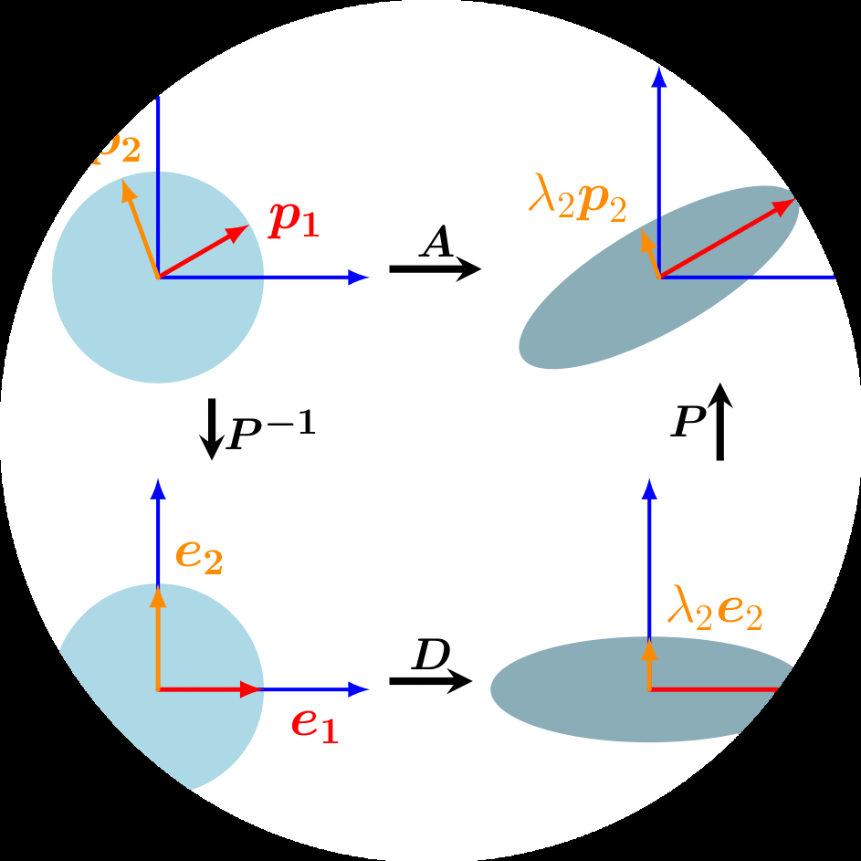
在第2章和第3章中，我们研究了操作和测量向量、向量投影和线性映射的方法。向量的映射和变换可以方便地描述为由矩阵执行的操作。此外，数据通常也以矩阵形式表示，例如，矩阵的行表示不同的人，列
描述人们的不同特征，例如体重、身高和社会经济地位。在本章中，我们将介绍矩阵的三个方面：如何总结矩阵、矩阵如何分解，以及如何使用这些分解进行矩阵近似。
我们首先考虑能够用少数几个数字来描述矩阵整体性质特征的方法。我们将在行列式(Section [4.1])和特征值(Section [4.2])章节中针对方阵这一重要特殊情况进行讨论。这些特征数具有重要的数学意义，使我们能够快速把握矩阵的有用性质。接下来我们将讨论矩阵分解方法：矩阵分解的类比是数字的因式分解，例如将21分解为质数7·3。因此矩阵分解也常被称为矩阵因式分解。矩阵分解用于通过可解释矩阵的因子的不同表示来描述矩阵。
我们首先介绍对称正定矩阵的类似平方根运算，即Cholesky分解(Section [4.3])。然后我们将研究两种将矩阵因式分解为标准形式的相关方法。第一种称为矩阵对角化(Section [4.4])，它使我们能够在选择适当基的情况下使用对角变换矩阵来表示线性映射。第二种方法是奇异值分解(Section [4.5])，它将这种因式分解扩展到非方阵，被认为是线性代数的基本概念之一。这些分解很有用，因为表示数值数据的矩阵通常非常大且难以分析。我们通过系统地概述矩阵类型及其特征性质，以矩阵分类法的形式结束本章(Section [4.7])。
本章介绍的方法在后续的数学章节（如第6章）以及应用章节（如第10章的降维或第11章的密度估计）中都将变得重要。本章的整体结构如图4.1的思维导图所示。
行列式是线性代数中的重要概念。行列式是分析和求解线性方程组的数学对象。行列式仅对方阵A ∈ R^(n×n)定义，即行数和列数相同的矩阵。在本书中，我们将行列式写作det(A)或有时写作|A|，使得
det(A) = |a₁₁ a₁₂ … a₁ₙ| |a₂₁ a₂₂ … a₂ₙ| |… … … …| (4.1) |aₙ₁ aₙ₂ … aₙₙ|
n×n方阵A ∈ Rⁿˣⁿ的行列式是一个将A映射到实数的函数。在为一般n×n矩阵提供行列式定义之前，让我们先看一些激发性的例子，并为一些特殊矩阵定义行列式。
例4.1（矩阵可逆性测试）
让我们从探索方阵A是否可逆开始(见Section [2.2.2])。对于最简单的情况，我们已经知道矩阵何时可逆。如果A是1×1矩阵，即它是一个标量，那么A⁻¹ = 1/a ⇒ A = 1。因此a = 1成立，当且仅当a ≠ 0。
对于2×2矩阵，根据逆矩阵的定义(Definition [2.3])，我们知道AA⁻¹ = I。然后，通过(2.24)，A的逆矩阵是
A⁻¹ = 1/(a₁₁a₂₂ - a₁₂a₂₁) |a₂₂ -a₁₂| (4.2) |-a₂₁ a₁₁|
因此，A可逆当且仅当
a₁₁a₂₂ - a₁₂a₂₁ ≠ 0 (4.3)
这个量就是2×2矩阵A ∈ R²ˣ²的行列式，即
det(|a₁₁ a₁₂|) = a₁₁a₂₂ - a₁₂a₂₁ (4.4) |a₂₁ a₂₂|
例4.1已经指出了行列式与逆矩阵存在性之间的关系。下面的定理对n×n矩阵陈述了相同的结果。
定理4.1. 对于任何方阵A ∈ Rⁿˣⁿ，A可逆当且仅当det(A) ≠ 0。
我们有用矩阵元素表示的小矩阵行列式的显式（闭式）表达式。对于n = 1，
det(A) = det(a₁₁) = a₁₁ (4.5)
对于n = 2，
det(|a₁₁ a₁₂|) = a₁₁a₂₂ - a₁₂a₂₁ (4.6) |a₂₁ a₂₂|
这在前面的例子中我们已经观察到。
对于n = 3（称为Sarrus法则），
|a₁₁ a₁₂ a₁₃| |a₂₁ a₂₂ a₂₃| |a₃₁ a₃₂ a₃₃|
aaa = aaa + aaa + aaa (4.7) [21] [22] [23] [11] [22] [33] [21] [32] [13] [31] [12] [23] aaa
[31] [32] [33]
− a[31]a[22]a[13] − a[11]a[32]a[23] − a[21]a[12]a[33] .
作为Sarrus规则中乘积项的记忆辅助，可以尝试在矩阵中追踪三重乘积的元素。
我们称方阵T为上三角矩阵，如果对于i > j，有T[ij] = 0，即矩阵在对角线以下为零。类似地，我们定义下三角矩阵为对角线以上为零的矩阵。对于n×n三角矩阵T ∈ R，行列式是对角元素的乘积，即
det(T) = ∏[i=1到n] T[ii] . (4.8)
例4.2 (行列式作为体积的度量)
当我们将行列式视为从n个向量张成R^n中对象的集合的映射时，行列式的概念是自然的。事实证明，行列式det(A)是由矩阵A的列向量形成的n维平行六面体的有向体积。
对于n = 2，矩阵的列形成一个平行四边形；见图4.2。当向量之间的夹角变小时，平行四边形的面积也会缩小。考虑两个向量b、g构成矩阵A = [b, g]的列。那么，A的行列式的绝对值就是顶点为0、b、g、b + g的平行四边形的面积。特别地，如果b、g线性相关，使得对某个λ ∈ R有b = λg，它们不再形成二维平行四边形。因此，相应的面积为0。相反，如果b、g线性无关且是标准基向量e₁、e₂的倍数，那么它们可以写成b = [b₁, 0]ᵀ，g = [0, g₂]ᵀ，行列式为b₁g₂ - 0 = b₁g₂。
行列式的符号表示张成向量b、g相对于标准基(e₁, e₂)的方向。在我们的图中，将顺序翻转为g、b会交换A的列并逆转阴影区域的方向。这成为熟悉的公式：面积 = 高度 × 长度。这种直觉扩展到更高维度。在R³中，我们考虑三个向量r、b、g ∈ R³张成平行六面体的边，即具有平行四边形面的实体（见图4.3）。3×3矩阵[r, b, g]的行列式的绝对值是该实体的体积。因此，行列式作为一个函数，测量由矩阵中组成的列向量形成的有向体积。
考虑三个线性无关的向量r、g、b ∈ R³，给定为
r = [2, 0, -8]ᵀ，g = [6, 1, 0]ᵀ，b = [1, 4, -1]ᵀ . (4.9)
将这些向量写成矩阵的列
A = [r, g, b] = [[2, 6, 1], [0, 1, 4], [-8, 0, -1]] (4.10)
允许我们计算所需的体积为
V = |det(A)| = 186 . (4.11)
计算n×n矩阵的行列式需要一个通用算法来解决n > 3的情况，我们将在下面探讨。下面的定理4.2将计算n×n矩阵行列式的问题简化为计算(n-1)×(n-1)矩阵的行列式。通过递归应用Laplace展开（定理4.2），我们因此可以通过最终计算2×2矩阵的行列式来计算n×n矩阵的行列式。
定理4.2 (Laplace展开)。考虑矩阵A ∈ R^(n×n)。那么，对于所有j = 1, …, n：
1. 沿列j展开
det(A) = Σ[k=1到n] (-1)^(k+j) a[kj] det(A[k,j]) . (4.12)
2. 沿行j展开
det(A) = Σ[k=1到n] (-1)^(k+j) a[jk] det(A[j,k]) . (4.13)
这里A[k,j] ∈ R^((n-1)×(n-1))是我们删除第k行和第j列后从A得到的子矩阵。
例4.3 (Laplace展开)
让我们使用沿第一行的Laplace展开来计算行列式
A = [[1, 2, 3], [3, 1, 2], [0, 0, 1]] (4.14)
应用(4.13)得出
det(A) = (-1)^(1+1) · 1 · det([[1, 2], [0, 1]]) + (-1)^(1+2) · 2 · det([[3, 2], [0, 1]]) + (-1)^(1+3) · 3 · det([[3, 1], [0, 0]]) (4.15)
我们使用(4.6)计算所有2×2矩阵的行列式，得到
det(A) = 1(1 - 0) - 2(3 - 0) + 3(0 - 0) = -5 . (4.16)
为了完整性，我们可以将此结果与使用Sarrus规则(4.7)计算行列式进行比较：
det(A) = 1·1·1 + 3·0·3 + 0·2·2 - 0·1·3 - 1·0·2 - 3·2·1 = 1 - 6 = -5 . (4.17)
对于A ∈ R^(n×n)，行列式具有以下性质：
矩阵乘积的行列式是相应行列式的乘积，det(AB) = det(A)det(B)。
行列式对转置不变，即det(A^T) = det(A)。
如果A是正则的（可逆的），那么det(A^(-1)) = 1/det(A)。
相似矩阵（定义[2.22]）具有相同的行列式。因此，对于线性映射Φ : V → V，Φ的所有变换矩阵A[Φ]都具有相同的行列式。因此，行列式对于线性映射的基选择是不变的。
将一列/行的倍数加到另一列/行上不会改变det(A)。
用λ ∈ R乘以一列/行会将det(A)缩放λ倍。特别地，det(λA) = λⁿdet(A)。
交换两行/列会改变det(A)的符号。
由于这后三个性质，我们可以使用高斯消元法（见第[2.1]节）通过将A化为行阶梯形式来计算det(A)。当我们将A化为三角形式（对角线下方的元素全为0）时，就可以停止高斯消元法。回忆公式(4.8)，三角矩阵的行列式等于对角元素的乘积。
定理4.3. 方阵A ∈ Rⁿˣⁿ满足det(A) ≠ 0当且仅当rk(A) = n。换句话说，A可逆当且仅当它是满秩的。
当数学主要靠手工计算时，行列式计算被认为是分析矩阵可逆性的重要方法。然而，机器学习中的现代方法使用直接数值方法，这些方法已经取代了行列式的显式计算。例如，在第[2]章中，我们学到逆矩阵可以通过高斯消元法计算。因此高斯消元法也可以用来计算矩阵的行列式。
行列式在接下来的章节中将发挥重要的理论作用，特别是当我们通过特征多项式学习特征值和特征向量（第[4.2]节）时。
定义4.4. 方阵A ∈ Rⁿˣⁿ的迹定义为
[©2023 M. P. Deisenroth, A. A. Faisal, C. S. Ong. Published by Cambridge University Press (2020).]
tr(A) := Σᵢ₌₁ⁿ aᵢᵢ, (4.18)
即，迹是A的对角元素之和。
迹满足以下性质：
tr(A + B) = tr(A) + tr(B) 对于A, B ∈ Rⁿˣⁿ tr(αA) = αtr(A), α ∈ R
对于A ∈ Rⁿˣⁿ
tr(Iₙ) = n tr(AB) = tr(BA) 对于A ∈ Rⁿˣᵏ, B ∈ Rᵏˣⁿ
可以证明只有一个函数同时满足这四个性质——迹[(Gohberg et al., 2012)]。
矩阵乘积的迹的性质更加一般。具体地，迹在循环置换下不变，即
tr(AKL) = tr(KLA) (4.19)
对于矩阵A ∈ Rᵃˣᵏ, K ∈ Rᵏˣˡ, L ∈ Rˡˣᵃ。这个性质推广到任意个矩阵的乘积。作为(4.19)的特例，对于两个向量x, y ∈ Rⁿ有
tr(xy⊤) = tr(y⊤x) = y⊤x ∈ R. (4.20)
给定线性映射Φ : V → V，其中V是向量空间，我们通过使用Φ的矩阵表示的迹来定义这个映射的迹。对于V的给定基，我们可以用变换矩阵A来描述Φ。那么Φ的迹就是A的迹。对于V的不同基，Φ对应的变换矩阵B可以通过形如S⁻¹AS的基变换得到，其中S合适（见第[2.7.2]节）。对于Φ对应的迹，这意味着
tr(B) = tr(S⁻¹AS) = tr(ASS⁻¹) = tr(A). (4.21)
因此，虽然线性映射的矩阵表示依赖于基，但线性映射Φ的迹与基无关。
在本节中，我们涵盖了行列式和迹作为刻画方阵的函数。结合我们对行列式和迹的理解，我们现在可以定义一个重要的方程，用多项式来描述矩阵A，我们将在接下来的章节中广泛使用它。
定义4.5（特征多项式）。对于λ ∈ R和方阵A ∈ Rⁿˣⁿ
pₐ(λ) := det(A - λI) (4.22a) = c₀ + c₁λ + c₂λ² + ··· + cₙ₋₁λⁿ⁻¹ + (-1)ⁿλⁿ, (4.22b)
其中c₀, …, cₙ₋₁ ∈ R，这是A的特征多项式。特别地，
c₀ = det(A), (4.23) cₙ₋₁ = (-1)ⁿ⁻¹tr(A). (4.24)
特征多项式(4.22a)将允许我们计算特征值和特征向量，这将在下一节中讨论。
我们现在将了解刻画矩阵及其相关线性映射的新方法。回忆第[2.7.1]节，给定有序基，每个线性映射都有唯一的变换矩阵。我们可以通过执行”eigen”分析来解释线性映射及其相关的变换矩阵。正如我们将看到的，线性映射的特征值将告诉我们一组特殊向量——特征向量，是如何被线性映射变换的。
定义4.6. 设A ∈ Rⁿˣⁿ是方阵。那么λ ∈ R是A的特征值，x ∈ Rⁿ{0}是A对应的特征向量，如果
Ax = λx. (4.25)
我们称(4.25)为特征值方程。
备注。 在线性代数文献和软件中，通常会按降序排列特征值，使得最大特征值和关联的特征向量被称为第一特征值及其关联的特征向量，第二大的被称为第二特征值及其关联的特征向量，以此类推。然而，教科书和出版物可能有不同的或没有排序概念。如果没有明确说明，我们不想在本书中假设排序。♢
以下陈述是等价的：
λ 是 A ∈ R^(n×n) 的特征值。
存在 x ∈ R^n{0} 使得 Ax = λx，或等价地，(A − λI_n)x = 0 可以非平凡求解，即 x ≠ 0。
rk(A − λI_n) < n。
det(A − λI_n) = 0。
定义 4.7（共线性和同向性）。 指向同一方向的两个向量称为同向的。如果两个向量指向相同或相反方向，则它们是共线的。
备注（特征向量的非唯一性）。 如果 x 是与特征值 λ 关联的 A 的特征向量，那么对于任何 c ∈ R{0}，都有 cx 是具有相同特征值的 A 的特征向量，因为
A(cx) = cAx = cλx = λ(cx) . (4.26)
因此，所有与 x 共线的向量也是 A 的特征向量。♢
[©2023 M. P. Deisenroth, A. A. Faisal, C. S. Ong. Published by Cambridge University Press (2020).]
[106] [Matrix Decompositions]
定理 4.8。 λ ∈ R 是 A ∈ R^(n×n) 的特征值当且仅当 λ 是 A 的特征多项式 p_A(λ) 的根。
定义 4.9。 设方阵 A 有特征值 λ_i。λ_i 的代数重数是该根在特征多项式中出现的次数。
定义 4.10（特征空间和特征谱）。 对于 A ∈ R^(n×n)，与特征值 λ 关联的所有特征向量的集合张成 R^n 的一个子空间，这个子空间称为 A 关于 λ 的特征空间，记为 E_λ。A 的所有特征值的集合称为特征谱，或简称谱。
如果 λ 是 A ∈ R^(n×n) 的特征值，那么相应的特征空间 E_λ 是齐次线性方程组 (A−λI)x = 0 的解空间。几何上，对应于非零特征值的特征向量指向被线性映射拉伸的方向。特征值是拉伸的倍数。如果特征值为负，拉伸的方向会翻转。
例 4.4（单位矩阵的情况）
单位矩阵 I ∈ R^(n×n) 的特征多项式为 p_I(λ) = det(I_n − λI_n) = (1 − λ)^n = 0，只有一个特征值 λ = 1，出现 n 次。此外，对于所有向量 x ∈ R^n{0}，都有 Ix = λx = 1x。因此，单位矩阵的唯一特征空间 E_1 张成 n 维，R^n 的所有 n 个标准基向量都是 I 的特征向量。
关于特征值和特征向量的有用性质包括：
矩阵 A 及其转置 A^⊤ 具有相同的特征值，但不一定有相同的特征向量。
特征空间 E_λ 是 A − λI 的零空间，因为
Ax = λx ⇐⇒ Ax − λx = 0 (4.27a) ⇐⇒ (A − λI)x = 0 ⇐⇒ x ∈ ker(A − λI). (4.27b)
相似矩阵（见定义 2.22）具有相同的特征值。因此，线性映射 Φ 的特征值独立于其变换矩阵的基的选择。这使得特征值与行列式和迹一起成为线性映射的关键特征参数，因为它们在基变换下都是不变的。对称正定矩阵总是有正的实特征值。
[Draft (2023-10-18) of “Mathematics for Machine Learning”. Feedback: https://mml-book.com. 4.2 Eigenvalues and Eigenvectors] [107]
例 4.5（计算特征值、特征向量和特征空间）
让我们找到 2 × 2 矩阵的特征值和特征向量
A = [4 2] [1 3] . (4.28)
步骤 1：特征多项式。 根据我们对 A 的特征向量 x ≠ 0 和特征值 λ 的定义，存在一个向量使得 Ax = λx，即 (A − λI)x = 0。由于 x ≠ 0，这要求 A − λI 的 kernel（零空间）包含除 0 之外的更多元素。这意味着 A − λI 不可逆，因此 det(A − λI) = 0。因此，我们需要计算特征多项式 (4.22a) 的根来找到特征值。
步骤 2：特征值。 特征多项式为
p_A(λ) = det(A − λI) (4.29a) = det([4 2] - [λ 0]) = det([4-λ 2 ]) (4.29b) ([1 3] [0 λ]) ([1 3-λ]) = (4 − λ)(3 − λ) − 2 · 1 . (4.29c)
我们分解特征多项式，得到
p_A(λ) = (4 − λ)(3 − λ) − 2 · 1 = 10 − 7λ + λ² = (2 − λ)(5 − λ) (4.30)
给出根 λ₁ = 2 和 λ₂ = 5。
步骤 3：特征向量和特征空间。 我们通过寻找向量 x 使得
[4-λ 2 ][x₁] = [0] [1 3-λ][x₂] [0] . (4.31)
对于 λ = 5，我们得到
[4-5 2 ][x₁] = [-1 2][x₁] = [0] [1 3-5][x₂] [1 -2][x₂] [0] . (4.32)
我们求解这个齐次系统，得到解空间
E₅ = span[[2]] [1] . (4.33)
这个特征空间是一维的，因为它只有一个基向量。
类似地，我们通过求解齐次方程组来找到 λ = 2 的特征向量
[4-2 2][x₁] = [2 2][x₁] = [0] [1 3-2][x₂] [1 1][x₂] [0] . (4.34)
[©2023 M. P. Deisenroth, A. A. Faisal, C. S. Ong. Published by Cambridge University Press (2020).]
[108] [Matrix Decompositions]
这意味着任何向量 x = [x₁], 其中 x₂ = −x₁，例如 1，都是特征值为 2 的特征向量。 [x₂] [-1] 相应的特征空间为
E₂ = span[1] [[-1]] . (4.35)
在示例4.5中，两个特征空间E[5]和E[2]都是一维的，因为它们都由单个向量张成。然而，在其他情况下，我们可能有多个相同的特征值(见定义4.9)，特征空间可能具有多于一个维度。
定义4.11. 设λ[i]是方阵A的特征值。那么λ[i]的几何重数是与λ[i]相关联的线性无关特征向量的个数。换句话说，它是由与λ[i]相关联的特征向量张成的特征空间的维数。
注释. 特定特征值的几何重数必须至少是1，因为每个特征值至少有一个相关联的特征向量。特征值的几何重数不能超过其代数重数，但可能更低。♢
示例4.6
矩阵A = 2 1 有两个重复的特征值λ1 = λ[2] = 2，代数重数为2。然而， 0 2
该特征值只有一个不同的单位特征向量x1 = ，因此几何重数为1。
让我们通过不同的线性映射来获得对行列式、特征向量和特征值的一些直觉。图4.4描绘了五个变换矩阵A1, …, A[5]及其对以原点为中心的正方形网格点的影响：
A1 = 2 0 。两个特征向量的方向对应于R²中的标准基向量，即两个基 0 1/2
本坐标轴。垂直轴被扩展了2倍(特征值λ₁ = 2)，水平轴被压缩了1/2倍(特征值λ₂ = 1/2)。该映射是面积保持的(det(A₁) = 1 = 2 · 1/2)。
A[2] = 1 1 对应于剪切映射，即它将点沿水平轴向右剪切(如果它们在正 0 1
图4.4 行列式与特征空间。
五个线性映射及其相关变换矩阵A[i] ∈ R²×²的概述，将400个颜色编码的点x ∈ R²(左列)投影到目标点A[i]x(右列)。中央列描绘了第一个特征向量被其相关特征值λ₁拉伸，以及第二个特征向量被其特征值λ₂拉伸。每一行描绘了五个变换矩阵A[i]中的一个相对于标准基的效果。
垂直轴的一半)，反之向左剪切。该映射是面积保持的(det(A₂) = 1)。特征值λ₁ = 1 = λ₂是重复的，特征向量是共线的(这里为了强调在两个相反方向上绘制)。这表明映射只沿一个方向(水平轴)作用。
矩阵A₃ = √3/2 -1/2 = cos(π/6) -sin(π/6) 将点逆时针旋转π/6弧度 1/2 √3/2 sin(π/6) cos(π/6)
= 30°，并且只有复特征值，反映该映射是旋转(因此，没有绘制特征向量)。旋转必须是体积保持的，所以行列式为1。有关旋转的更多细节，我们参考第3.9节。
A₄ = 1 -1 表示标准基中的映射，将二维域坍缩到一维。由于一个特征 -1 1
值为0，沿对应于λ₁ = 0的(蓝色)特征向量方向的空间坍缩，而正交的(红色)特征向量将空间拉伸λ₂ = 2倍。因此，像的面积为0。
A₅ = 2/3 1/3 是剪切拉伸映射，将空间缩放75%，因为|det(A₅)| = 3/4。 1/3 1/2
它沿λ₂的(红色)特征向量将空间拉伸1.5倍，沿正交的(蓝色)特征向量将其压缩0.5倍。
示例4.7 (生物神经网络的特征谱)
图4.5 秀丽隐杆线虫神经网络
分析和从网络数据中学习的方法是机器学习方法的重要组成部分。理解网络的关键是网络节点之间的连接性，特别是两个节点是否相互连接。在数据科学应用中，研究捕获这种连接数据的矩阵通常是有用的。
我们构建了秀丽隐杆线虫完整神经网络的连接/邻接矩阵A ∈ R²⁷⁷ײ⁷⁷。每行/列代表这个蠕虫大脑的277个神经元中的一个。如果神经元i通过突触与神经元j交流，连接矩阵A的值为a[ij] = 1，
a[ij] = 0 否则。连接矩阵不是对称的，这意味着特征值可能不是实数。因此，我们计算连接矩阵的对称化版本为 A[sym] := A + A⊤。这个新矩阵 A[sym] 如图4.5(a)所示，当且仅当两个神经元连接时（白色像素），不论连接方向如何，都有非零值 a[ij][sym]。在图4.5(b)中，我们展示了 A[sym] 对应的特征谱。横轴显示特征值的索引，按降序排列。纵轴显示对应的特征值。这种特征谱的S型形状在许多生物神经网络中都很典型。导致这种现象的潜在机制是神经科学研究的活跃领域。
[《机器学习数学》草稿 (2023-10-18)。反馈：https://mml-book.com。4.2 特征值和特征向量 111]
矩阵 A ∈ R^(n×n) 的特征向量 x₁, …, xₙ 具有 n 个不同的特征值 λ₁, …, λₙ，它们是线性无关的。
这个定理说明具有 n 个不同特征值的矩阵的特征向量构成 Rⁿ 的一个基。
方矩阵 A ∈ R^(n×n) 是缺陷的(defective)，如果它拥有少于 n 个线性无关的特征向量。
非缺陷矩阵 A ∈ R^(n×n) 不一定需要 n 个不同的特征值，但确实需要特征向量构成 Rⁿ 的一个基。观察缺陷矩阵的特征空间，可以得出特征空间维数之和小于 n。具体地，缺陷矩阵至少有一个特征值 λᵢ，其代数重数 m > 1，几何重数小于 m。
注记。 缺陷矩阵不能有 n 个不同的特征值，因为不同的特征值有线性无关的特征向量（定理4.12）。♢
给定矩阵 A ∈ R^(m×n)，我们总能通过定义 S := A⊤A 得到一个对称的、半正定矩阵 S ∈ R^(n×n)。(4.36)
注记。 如果 rk(A) = n，那么 S := A⊤A 是对称的、正定的。♢
理解定理4.14成立的原因有助于我们了解如何使用对称化矩阵：对称性要求 S = S⊤，通过代入(4.36)我们得到 S⊤ = (A⊤A)⊤ = A⊤(A⊤)⊤ = A⊤A = S。此外，半正定性（第3.2.3节）要求 x⊤Sx ≥ 0，代入(4.36)我们得到 x⊤Sx = x⊤A⊤Ax = (x⊤A⊤)(Ax) = (Ax)⊤(Ax) ≥ 0，因为点积计算的是平方和（本身非负）。
如果 A ∈ R^(n×n) 是对称的，那么存在对应向量空间 V 的一个标准正交基，该基由 A 的特征向量组成，且每个特征值都是实数。
谱定理的直接含义是对称矩阵 A 的特征分解存在（具有实特征值），并且我们可以找到特征向量的标准正交基(ONB)，使得 A = PDP⊤，其中 D 是对角矩阵，P 的列包含特征向量。
考虑矩阵
A = [3 2 2] [2 3 2] (4.37) [2 2 3]
©2023 M. P. Deisenroth, A. A. Faisal, C. S. Ong. 由 Cambridge University Press 出版 (2020)。
112 矩阵分解
A 的特征多项式是
pₐ(λ) = -(λ-1)²(λ-7)，(4.38)
因此我们得到特征值 λ₁ = 1 和 λ₂ = 7，其中 λ₁ 是重根特征值。按照计算特征向量的标准程序，我们得到特征空间
E₁ = span[[-1], [-1]], E₇ = span[1] (4.39) 1 [ 0] 1 [ 0] 1 1 =:x₁ =:x₂ =:x₃
我们看到 x₃ 与 x₁ 和 x₂ 都正交。然而，由于 x₁⊤x₂ = 1 ≠ 0，它们不正交。谱定理（定理4.15）说明存在一个正交基，但我们得到的不是正交的。不过，我们可以构造一个。
为了构造这样的基，我们利用 x₁, x₂ 是与同一特征值 λ 关联的特征向量这一事实。因此，对于任何 α, β ∈ R 都有
A(αx₁ + βx₂) = Ax₁α + Ax₂β = λ(αx₁ + βx₂)，(4.40)
即，x₁ 和 x₂ 的任何线性组合也是 A 与 λ 关联的特征向量。Gram-Schmidt 算法（第3.8.3节）是一种使用这种线性组合从一组基向量迭代构造正交/标准正交基的方法。因此，即使 x₁ 和 x₂ 不正交，我们也可以应用 Gram-Schmidt 算法找到与 λ₁ = 1 关联的特征向量，它们彼此正交（也与 x₃ 正交）。在我们的例子中，我们将得到
x₁’ = [1/√2], x₂’ = [-1/√6] (4.41) [1/√2] [-1/√6] [ 0 ] [ 2/√6]
它们彼此正交，与 x₃ 正交，且是 A 与 λ₁ = 1 关联的特征向量。
在结束对特征值和特征向量的考虑之前，将这些矩阵特征与行列式和迹的概念联系起来是有用的。
矩阵 A ∈ R^(n×n) 的行列式是其特征值的乘积，即
det(A) = ∏ᵢ₌₁ⁿ λᵢ，(4.42)
其中 λᵢ ∈ C 是 A 的（可能重复的）特征值。
[《机器学习数学》草稿 (2023-10-18)。反馈：https://mml-book.com。4.2 特征值和特征向量 113]
特征值的几何解释。A 的特征向量 v₁ 被对应的特征值 λ₁ 拉伸，v₂ 被对应的特征值 λ₂ 拉伸。
定理 4.17. 矩阵 A ∈ R^n×n 的迹是其特征值之和，即
tr(A) = ∑_{i=1}^n λ_i, (4.43)
其中 λ_i ∈ C 是 A 的（可能重复的）特征值。
让我们提供这两个定理的几何直观。考虑一个矩阵 A ∈ R^{2×2}，它拥有两个线性无关的特征向量 x_1, x_2。在这个例子中，我们假设 (x_1, x_2) 是 R^2 的ONB(正交归一基)，因此它们是正交的，并且它们张成的正方形面积为1；见图4.6。
从第4.1节我们知道，行列式计算单位正方形在变换 A 下的面积变化。在这个例子中，我们可以显式计算面积变化：使用 A 映射特征向量给出向量 v_1 = Ax_1 = λ_1x_1 和 v_2 = Ax_2 = λ_2x_2，即新向量 v_i 是特征向量 x_i 的缩放版本，缩放因子是相应的特征值 λ_i。v_1, v_2 仍然正交，它们张成的矩形面积是 |λ_1λ_2|。
给定在我们的例子中 x_1, x_2 是正交归一的，我们可以直接计算单位正方形的周长为 2(1 + 1)。使用 A 映射特征向量创建一个矩形，其周长是 2(|λ_1| + |λ_2|)。因此，特征值绝对值的和告诉我们单位正方形的周长在变换矩阵 A 下如何变化。
例 4.9 (Google的PageRank算法——网页作为特征向量) Google使用对应于矩阵 A 最大特征值的特征向量来确定页面在搜索中的排名。PageRank算法的想法由Larry Page和Sergey Brin于1996年在斯坦福大学开发，即任何网页的重要性都可以通过链接到它的页面的重要性来近似。为此，他们将所有网站写成一个巨大的有向图，显示哪个页面链接到哪个。PageRank通过计算指向 a_i 的页面数量来计算网站 a_i 的权重（重要性）x_i ≥ 0。此外，PageRank考虑链接到 a_i 的网站的重要性。用户的导航行为然后通过该图的转移矩阵 A 建模，该矩阵告诉我们某人以什么（点击）概率最终到达不同的网站。矩阵 A 具有以下性质：对于网站的任何初始排名/重要性向量 x，序列 x, Ax, A^2x, … 收敛到向量 x*。该向量称为PageRank，满足
Ax* = x，即它是 A 的特征向量（对应特征值为1）。在归一化 x 使得 ‖x*‖ = 1 后，我们可以将条目解释为概率。关于PageRank的更多细节和不同观点可以在原始技术报告(Page et al., 1999)中找到。
有许多方法可以分解我们在机器学习中经常遇到的特殊类型矩阵。在正实数中，我们有平方根运算，它给我们数字分解为相同组件，例如 9 = 3 · 3。对于矩阵，我们需要小心在正数量上计算类似平方根的运算。对于对称正定矩阵（见第3.2.3节），我们可以从许多等价的平方根运算中选择。Cholesky分解/Cholesky因式分解在对称正定矩阵上提供等价的平方根运算，在实践中很有用。
定理 4.18 (Cholesky分解). 对称正定矩阵 A 可以因式分解为乘积 A = LL^⊤，其中 L 是具有正对角元素的下三角矩阵：
a₁₁ ··· a₁ₙ l₁₁ ··· 0 l₁₁ ··· lₙ₁
⋮ ⋱ ⋮ = ⋮ ⋱ ⋮ · ⋮ ⋱ ⋮ (4.44)
aₙ₁ ··· aₙₙ lₙ₁ ··· lₙₙ 0 ··· lₙₙL称为 A 的Cholesky因子，且 L 是唯一的。
例 4.10 (Cholesky因式分解)
考虑对称正定矩阵 A ∈ R^{3×3}。我们有兴趣找到其Cholesky因式分解 A = LL^⊤，即
a₁₁ a₂₁ a₃₁ l₁₁ 0 0 l₁₁ l₂₁ l₃₁A = a₂₁ a₂₂ a₃₂ = LL^⊤ = l₂₁ l₂₂ 0 · 0 l₂₂ l₃₂ (4.45) a₃₁ a₃₂ a₃₃ l₃₁ l₃₂ l₃₃ 0 0 l₃₃
展开右侧得到
l₁₁² l₂₁l₁₁ l₃₁l₁₁A = l₂₁l₁₁ l₂₁² + l₂₂² l₃₁l₂₁ + l₃₂l₂₂ (4.46) l₃₁l₁₁ l₃₁l₂₁ + l₃₂l₂₂ l₃₁² + l₃₂² + l₃₃²
比较(4.45)的左侧和(4.46)的右侧表明，对角元素 lᵢᵢ 有一个简单的模式：
l₁₁ = √a₁₁, l₂₂ = √(a₂₂ - l₂₁²), l₃₃ = √(a₃₃ - (l₃₁² + l₃₂²)) (4.47)
类似地，对于对角线以下的元素（lᵢⱼ，其中 i > j），也有重复模式：
l₂₁ = a₂₁/l₁₁, l₃₁ = a₃₁/l₁₁, l₃₂ = (a₃₂ - l₃₁l₂₁)/l₂₂ (4.48)
因此，我们构造了任何对称正定 3 × 3 矩阵的 Cholesky 分解。关键的认识是，给定矩阵 A 的分量 a[ij] 和先前计算的 l[ij] 值，我们可以反向计算 L 矩阵的分量 l[ij] 应该是什么。
Cholesky 分解是机器学习数值计算的重要工具。在这里，对称正定矩阵需要频繁操作，例如，多元 Gaussian 变量的协方差矩阵（见第 [6.5] 节）是对称正定的。这个协方差矩阵的 Cholesky 分解允许我们从 Gaussian 分布中生成样本。它还允许我们对随机变量进行线性变换，这在计算深度随机模型（如变分自编码器）中的梯度时被大量利用 [(Jimenez Rezende et al., 2014;] [Kingma and Welling,] [2014)]。Cholesky 分解还允许我们非常高效地计算行列式。给定 Cholesky 分解 A = LL[⊤]，我们知道 det(A) = det(L)det(L[⊤]) = det(L)[2]。由于 L 是三角矩阵，行列式就是其对角元素的乘积，所以 det(A) = (∏[i] l[ii])[2]。因此，许多数值软件包使用 Cholesky 分解来提高计算效率。
对角矩阵是在所有非对角元素上值为零的矩阵，即它们的形式为
D = [c1 ··· 0; ⋮ ⋱ ⋮; 0 ··· c[n]] (4.49)
它们允许快速计算行列式、幂次和逆矩阵。行列式是其对角元素的乘积，矩阵的 k 次幂 D[k] 由每个对角元素的 k 次幂给出，如果所有对角元素都非零，则逆矩阵 D[−1] 是其对角元素的倒数。
在本节中，我们将讨论如何将矩阵转换为对角形式。这是我们在第 2.7.2 节讨论的基变换和第 4.2 节的特征值的重要应用。
回忆两个矩阵 A、D 是相似的（定义 2.22），如果存在可逆矩阵 P，使得 D = PAP[−1]。更具体地，我们将研究与对角矩阵 D 相似的矩阵 A，其中 D 在对角线上包含 A 的特征值。
定义 4.19（可对角化）。矩阵 A ∈ R[n×n] 是可对角化的，如果它与对角矩阵相似，即如果存在可逆矩阵 P ∈ R[n×n] 使得 D = PAP[−1]。
在下面，我们将看到对角化矩阵 A ∈ R[n×n] 是表达同一个线性映射但在另一个基下的方法（见第 2.6.1 节），这个基将是由 A 的特征向量组成的基。
设 A ∈ R[n×n]，设 λ1, …, λ[n] 为一组标量，设 p1, …, p[n] 为 R[n] 中的一组向量。我们定义 P := [p1, …, p[n]]，设 D ∈ R[n×n] 为对角元素为 λ1, …, λ[n] 的对角矩阵。那么我们可以证明
AP = PD (4.50)
当且仅当 λ1, …, λ[n] 是 A 的特征值，p1, …, p[n] 是 A 的对应特征向量。
我们可以看到这个陈述成立，因为
AP = A[p1, …, p[n]] = [Ap1, …, Ap[n]], (4.51)
PD = [p1, …, p[n]] [λ1 0; ⋮ ⋱; 0 λ[n]] = [λ1p1, …, λ[n]p[n]]. (4.52)
因此，(4.50) 意味着
Ap1 = λ1p1 (4.53) ⋮ Ap[n] = λ[n]p[n]. (4.54)
因此，P 的列必须是 A 的特征向量。
我们对角化的定义要求 P ∈ R[n×n] 是可逆的，即 P 具有满秩（定理 4.3）。这要求我们有 n 个线性无关的特征向量 p1, …, p[n]，即它们形成 R[n] 的基。
定理 4.20（特征分解）。方阵 A ∈ R[n×n] 可以分解为
A = PDP[−1], (4.55)
其中 P ∈ R[n×n] 且 D 是对角元素为 A 的特征值的对角矩阵，当且仅当 A 的特征向量形成 R[n] 的基。
定理 4.20 意味着只有非亏损矩阵可以被对角化，并且 P 的列是 A 的 n 个特征向量。对于对称矩阵，我们可以为特征值分解获得更强的结果。
定理 4.21。 对称矩阵 S ∈ R[n×n] 总是可以被对角化。
定理 4.21 直接从谱定理 4.15 得出。此外，谱定理表明我们可以找到特征向量的 ONB
矩阵 [[n] [⊤] [原坐标] R。这使得 P 成为一个正交矩阵，从而 D = P AP。[框架。]]
注释。 矩阵的Jordan标准形提供了一个分解，适用于缺陷矩阵 [(Lang, 1987)]，但超出了本书的范围。♢
特征分解的几何直觉
我们可以按如下方式解释矩阵的特征分解（另见图 [4.7）：] 设 A 是相对于标准基 − e（蓝色箭头）的线性映射的变换矩阵。P 执行从标准基到特征基的基变换。然后，对角矩阵 D 沿这些轴按特征值 λ[i] 缩放向量。最后，P 将这些缩放后的向量变换回标准/规范坐标，得到 λ[i] p[i]。
例 4.11 (特征分解)
5 − 2
让我们计算 1 A = 的特征分解。
[2] −2 5
步骤 1：计算特征值和特征向量。 特征多项式
[©2023 M. P. Deisenroth, A. A. Faisal, C. S. Ong. Published by Cambridge University Press (2020).]
[118] [[矩阵分解]]
A 的特征多项式为
det(A − [2] 1 [5] − λ λ − I ) = det [5] (4.56a) 1
− [2] − λ
= ( [5] [2] [2] [21] 7 3 + − λ ) − 1 = λ − 5 λ = ( λ λ ) (4.56b) − )( . −
[2] [4] [2] [2]
因此，A 的特征值为 λ = 7 和 λ = 3（特征多项式的根），相关的（标准化）特征向量
1 [2] [2] [2]
通过以下方式获得
7 3
Ap1 = p1 , Ap[2] = p[2] . [(4.57)]
2 2
这产生
p1 = √ , p . (4.58) 1 1 1 1 1 [2] = √
2 1 − 2
步骤 2：检查存在性。 [[2] 特征向量 p , p 构成 R 的基]。
1 [2]
因此，A 可以对角化。
步骤 3：构造矩阵 P 来对角化 A。 我们将 A 的特征向量收集在 P 中，使得
P = [p1, p[2]] = √ . (4.59) 1 1 1 1 1
2 −
然后我们得到
AP = 3 = D . (4.60)
0 [2]
[图 [4.7] 可视化了] 等价地，我们得到（利用 − [⊤] P = P，因为此例中的特征向量
[特征分解] p 和 1 p 形成正交标准基） [2]
[作为] [] [] 7 [5] [−] [2] 1 5 [A] [=] − 2 1 1 1 0 1 1 − 1 [−] [2] [5] = √ [2] 3 √ . (4.61) 2 − 2 5 1 1 [线性变换的] 2 − 0 1 1 [2] 2 [序列。]
[A] − [P] [D] [P]
对角矩阵 D 可以高效地计算幂。因此，我们可以通过特征值分解（如果存在）为矩阵 [n][×][n] A ∈ R 求矩阵幂，使得
A[k] − [k] [k] − = ( P DP ) = P D P . (4.62)
计算 [k] D 是高效的，因为我们对每个对角元素单独应用此操作。
假设特征分解 − A = P DP 存在。那么，
det( − − A ) = det( P DP ) = det( P ) det( D ) det( P) (4.63a)
[Draft (2023-10-18) of “Mathematics for Machine Learning”. Feedback:] [https://mml-book.com][.] [4.5 奇异值分解] [119]
= det( Y D ) = d (4.63b)
允许高效计算 A 的行列式。
特征值分解需要方阵。对一般矩阵执行分解将是有用的。在下一节中，我们介绍一种更一般的矩阵分解技术，即奇异值分解。
矩阵的奇异值分解(SVD)是线性代数中的核心矩阵分解方法。它被称为”线性代数的基本定理” [(Strang, 1993)]，因为它可以应用于所有矩阵，不仅仅是方阵，而且总是存在。此外，正如我们将在下面探讨的，矩阵 A 的 SVD 表示线性映射 Φ : V → W，量化了这两个向量空间之间底层几何的变化。我们推荐 [Kalman (1996)] 和 [Roy and Banerjee (2014)] 的工作，以更深入地了解 SVD 的数学。
[SVD定理]
定理 4.22 [m][×][n] (SVD 定理) 。 设 A ∈ R 是秩为 r ∈ [0, min(m, n)] 的矩形矩阵。A 的 SVD 是形式为 [SVD]
[奇异值]
[n] [m] [n] [分解]
[n]
[m] [m] [m] [A] [=] [U] [Σ] [V] [⊤] [n]
(4.64)
的分解，其中 [m][×][m] U ∈ R 是正交矩阵，列向量为 u ， i = 1, . . . , m， [i]
并且 [n][×][n] V ∈ R 是正交矩阵，列向量为 v ， j = 1, . . . , n。 [j]
此外， Σ 是 m × n 矩阵，其中 Σ[ii] = σ[i] ⩾ 0 且 Σ[ij] = 0, i ̸= j。
Σ 的对角元素 σ[i], i = 1, . . . , r 称为奇异值，[[奇异值]]
u[i] 称为左奇异向量，v[j] 称为右奇异 [[左奇异向量]]
向量。按照惯例，奇异值是有序的，即 σ1 ⩾ σ[2] ⩾ [[右奇异]]
σ [向量] [r] ⩾ 0。
奇异值矩阵 Σ 是唯一的，但需要一些注意。[[奇异值]]
观察到 [m][×][n] [矩阵] Σ ∈ R 是矩形的。特别地，Σ 与 A 大小相同。这意味着 Σ 有一个包含奇异值的对角子矩阵，需要额外的零填充。具体地，如果 m > n，那么矩阵 Σ 在第 n 行之前具有对角结构，然后由
[©2023 M. P. Deisenroth, A. A. Faisal, C. S. Ong. Published by Cambridge University Press (2020).]
[120] [[矩阵分解]]
[图4.8] [矩阵]
[A] [∈] 3 [×][2] [2] [的SVD]
[R] [直觉]
[作为顺序] v [σ][2][u][2] [A] [变换。]
[左上到]
[左下：] [⊤] [V] [σ] [u]
[在] [R] [中执行基] [V] [2] [⊤] [U] [变换。左下到]
[右下：] [Σ]
[缩放并从] [e][2]
[2] 3 [R] [映射到] [R][。] [σ] [e]
[2] [2]
[椭圆位于] [Σ] [右下角的] e σe R[中。第三个]
[维度]
[垂直于]
[椭圆盘的] [⊤] 从 n + 1 到 m 的 0 行向量，使得 [表面。]
[从右下角到] σ 0 0
[右上角：] [U] . .. [进行基] 0 0
[变换在] 3 [R] [内。] 0 0 σ
Σ [n] = . (4.65)
0 . . . 0 .. .. . .
0 . . . 0
如果 m < n，矩阵 Σ 具有对角结构直到第 m 列，从 m + 1 到 n 的列
由 0 组成：
σ 0 0 0 . . . 0
Σ = .. .. 0 . .. . (4.66) 0 . .
0 0 σ[m] 0 . . . 0
备注。 对于任何矩阵 A ∈ R[m][×][n]，SVD 都存在。♢
SVD 提供了几何直观来描述变换矩阵 A。在下文中，我们将讨论 SVD 作为在基上执行的顺序线性变换。在例子 4.12 中，我们将把 SVD 的变换矩阵应用到 R[2] 中的一组向量上，这使我们能够更清楚地可视化每个变换的效果。
矩阵的 SVD 可以解释为相应线性映射的分解（回想第 2.7.1 节）Φ : R[n] → R[m] 为三个操作；见图 4.8。SVD 直观在表面上遵循与我们特征分解直观类似的结构，见图 4.7：广义上说，SVD 通过 V[⊤] 执行基变换，然后通过奇异值
Draft (2023-10-18) of “Mathematics for Machine Learning”. Feedback: https://mml-book.com. 4.5 奇异值分解 121
矩阵 Σ 进行缩放和维度扩充（或降维）。最后，它通过 U 执行第二次基变换。SVD 包含许多重要的细节和注意事项，这就是为什么我们将更详细地回顾我们的直观理解。回顾基变换是有用的
假设我们给定一个线性映射的变换矩阵 Φ : R[n] → R[m]，相对于 R[n] 和 R[m] 的标准基 B 和 C（第 2.7.2 节）。此外，假设第二个基 B̃ 和 C̃ 分别属于 R[n] 和 R[m]。然后正交矩阵（定义 3.8）和正交标准基（第 3.5 节）
矩阵 V 在定义域 R[n] 中执行从 B（由图 4.8 左上角的红色和橙色向量 v1 和 v[2] 表示）到标准基 B̃ 的基变换。V[⊤] = V[-1] 执行从 B̃ 到 B 的基变换。红色和橙色向量现在与图 4.8 左下角的规范基对齐。
将坐标系更改为 B̃ 后，Σ 按奇异值 σ[i] 缩放新坐标（并添加或删除维度），即，Σ 是 Φ 相对于 B̃ 和 C̃ 的变换矩阵，由红色和橙色向量被拉伸并位于 e1-e[2] 平面中表示，该平面现在嵌入在图 4.8 右下角的第三维中。
U 在上域 R[m] 中执行从 C̃ 到 R[m] 规范基的基变换，由红色和橙色向量从 e1-e[2] 平面的旋转表示。这在图 4.8 的右上角显示。
SVD 表达了定义域和上域中的基变换。这与在同一向量空间内操作的特征分解形成对比，其中应用相同的基变换然后撤消。使 SVD 特殊的是这两个不同的基通过奇异值矩阵 Σ 同时连接。
考虑一个向量网格 X ∈ R[2] 的映射，它们适合位于原点的 2 × 2 大小的盒子中。使用标准基，我们使用以下方式映射这些向量
1 − 0 . 8
A = 0 1 = U Σ V[⊤] (4.67a)
1 0
− 0 . 79 0 − 0 . 62 1 . 62 0 −= 0.38 −0.78 −0.49 0 1.0 . (4.67b) 0 0 . 78 0 . 62
− .48 −0.62 0.62 0 0 0 − .62 −0.78
我们从一组向量 X（彩色点；见图 4.9 的左上面板）开始，排列成网格。然后我们应用 V[⊤] ∈ R[2×2]，它旋转 X。旋转后的向量显示在图 4.9 的左下面板中。我们现在使用奇异值矩阵 Σ 将这些向量映射到上域 R3（见图 4.9 中的右下面板）。注意所有向量都位于
©2023 M. P. Deisenroth, A. A. Faisal, C. S. Ong. Published by Cambridge University Press (2020).
122 矩阵分解
x1-x[2] 平面中。第三个坐标总是 0。x1-x[2] 平面中的向量已被奇异值拉伸。
向量 X 通过 A 到上域 R3 的直接映射等于 X 通过 U Σ V[⊤] 的变换，其中 U 在上域 R3 内执行旋转，使得映射的向量不再限制在 x1-x[2] 平面内；如图 4.9 右上面板所示，它们仍在一个平面上。
 SVD
和向量映射（由圆盘表示）。面板遵循图 4.8 的相同逆时针结构。
SVD
和向量映射（由圆盘表示）。面板遵循图 4.8 的相同逆时针结构。
接下来我们将讨论为什么 SVD 存在，并详细展示如何计算它。一般矩阵的 SVD 与
方阵的特征分解。
注释。 比较SPD矩阵的特征分解
S⊤ = S = PDP⊤ (4.68)
[《机器学习数学》草稿 (2023-10-18)。反馈：] [https://mml-book.com][。] [4.5 奇异值分解] [123]
与相应的SVD
S = UΣV⊤。 (4.69)
如果我们设
U = P = V，D = Σ， (4.70)
我们可以看到SPD矩阵的SVD就是它们的特征分解。♢
接下来，我们将探讨为什么定理4.22成立以及SVD是如何构造的。计算m×n矩阵A ∈ R^{m×n}的SVD等价于找到两组标准正交基U = (u₁, . . . , u_m)和V = (v₁, . . . , v_n)，分别属于上域Rm和定义域Rn。从这些有序基中，我们将构造矩阵U和V。
我们的计划是首先构造标准正交的右奇异向量集v₁, . . . , v_n ∈ R^n。然后构造标准正交的左奇异向量集u₁, . . . , u_m ∈ R^m。之后，我们将这两者联系起来，并要求v_i的正交性在A的变换下得以保持。这很重要，因为我们知道像Av_i形成一组正交向量。然后我们通过标量因子对这些像进行归一化，这些标量因子将是奇异值。
让我们从构造右奇异向量开始。谱定理(定理4.15)告诉我们，对称矩阵的特征向量形成一个ONB，这也意味着它可以被对角化。此外，从定理4.14我们知道，总是可以从任何矩形矩阵A ∈ R^{m×n}构造一个对称的半正定矩阵A⊤A ∈ R^{n×n}。因此，我们总是可以对角化A⊤A并得到
A⊤A = PDP⊤ = P [λ₁ ⋯ 0; ⋮ ⋱ ⋮; 0 ⋯ λ_n] P⊤， (4.71)
其中P是一个正交矩阵，由标准正交特征基组成。λ_i ⩾ 0是A⊤A的特征值。让我们假设A的SVD存在并将(4.64)代入(4.71)。这产生
A⊤A = (UΣV⊤)⊤(UΣV⊤) = VΣ⊤U⊤UΣV⊤， (4.72)
其中U⊤，V是正交矩阵。因此，由于UU⊤ = I，我们得到
A⊤A = VΣ²V⊤ = V [σ₁² 0 0; 0 ⋱ 0; 0 0 σ_n²] V⊤。 (4.73)
现在比较(4.71)和(4.73)，我们识别出
V⊤ = P⊤， (4.74) σᵢ² = λᵢ。 (4.75)
[©2023 M. P. Deisenroth, A. A. Faisal, C. S. Ong. Published by Cambridge University Press (2020).]
[124] [矩阵分解]
因此，构成P的A⊤A的特征向量是A的右奇异向量V⊤(见(4.74))。A⊤A的特征值是Σ的平方奇异值(见(4.75))。
为了获得左奇异向量U，我们遵循类似的过程。我们从计算对称矩阵AA⊤ ∈ R^{m×m}的SVD开始(而不是之前的A⊤A ∈ R^{n×n})。A的SVD产生
AA⊤ = (UΣV⊤)(UΣV⊤)⊤ = UΣV⊤VΣ⊤U⊤ (4.76a) = U [σ₁² 0 0; 0 ⋱ 0; 0 0 σ_m²] U⊤。 (4.76b)
谱定理告诉我们AA⊤ = SDS⊤可以被对角化，我们可以找到AA⊤的特征向量的ONB，它们被收集在S⊤中。AA⊤的标准正交特征向量是左奇异向量U，并在SVD的上域中形成标准正交基。
这留下了矩阵Σ结构的问题。由于AA⊤和A⊤A具有相同的非零特征值(见第106页)，在两种情况下SVD中Σ矩阵的非零条目必须相同。
最后一步是连接我们到目前为止涉及的所有部分。我们在V中有一组标准正交的右奇异向量。为了完成SVD的构造，我们将它们与标准正交向量U连接起来。为了达到这个目标，我们使用v_i在A下的像也必须是正交的这一事实。我们可以通过使用第3.4节的结果来证明这一点。我们要求Av_i和Av_j之间的内积对于i ≠ j必须为0。对于任何两个正交特征向量v_i，v_j，i ≠ j，有
(Av_i)⊤(Av_j) = vᵢ⊤(A⊤A)v_j = vᵢ⊤(λ_j v_j) = λ_j vᵢ⊤v_j = 0。 (4.77)
对于m ⩾ r的情况，{Av₁, . . . , Av_r}是R^m的r维子空间的基。
为了完成SVD构造，我们需要标准正交的左奇异向量：我们对右奇异向量的像Av_i进行归一化并得到
uᵢ := Av_i/‖Av_i‖ = (1/√λᵢ)Av_i = (1/σᵢ)Av_i， (4.78)
其中最后的等式从(4.75)和(4.76b)得到，显示A⊤A的特征值使得λᵢ = σᵢ²。
因此，A⊤A的特征向量，我们知道它们是右奇异向量v_i，以及它们在A下的归一化像，即左奇异向量u_i，形成两个自洽的ONB，通过奇异值矩阵Σ连接。
让我们重新整理(4.78)得到奇异值方程
Av_i = σᵢuᵢ，i = 1, . . . , r。 (4.79)
[《机器学习数学》草稿 (2023-10-18)。反馈：] [https://mml-book.com][。] [4.5 奇异值分解] [125]
这个方程与特征值方程(4.25)非常相似，但左边和右边的向量不相同。
对于n < m，(4.79)仅对i ⩽ n成立，但(4.79)对于i > n的u_i没有说明什么。然而，我们通过构造知道它们是标准正交的。相反，对于m < n，(4.79)仅对i ⩽ m成立。对于i > m，我们有Av_i = 0，我们仍然知道v_i形成标准正交集。这意味着SVD还提供了A的核(零空间)的标准正交基，即满足Ax = 0的向量x的集合(见第2.7.3节)。
将 v[i] 作为 V 的列，u[i] 作为 U 的列进行拼接，得到
AV = UΣ , [(4.80)]
其中 Σ 与 A 具有相同的维度，对于第 1, . . . , r 行具有对角结构。因此，右乘 V^⊤ 得到 A = UΣV^⊤，这就是 A 的 SVD。
例题 4.13 (计算 SVD)
让我们求解以下矩阵的奇异值分解
A = [1 0 1; -2 1 0] . (4.81)
SVD 需要我们计算右奇异向量 v[j]、奇异值 σ[k] 和左奇异向量 u[i]。
步骤 1：右奇异向量作为 A^⊤A 的特征基
我们首先计算
A^⊤A = [1 -2; 0 1; 1 0] [1 0 1; -2 1 0] = [5 -2 1; -2 1 0; 1 0 1] . (4.82)
我们通过 A^⊤A 的特征值分解来计算奇异值和右奇异向量 v[j]，结果为
A^⊤A = [5/√30 -1/√6 0; -2/√30 1/√5 -2/√6; 1/√30 2/√5 1/√6] [6 0 0; 0 1 0; 0 0 0] [5/√30 -2/√30 1/√30; -1/√6 1/√5 2/√5; 0 -2/√6 1/√6] = PDP^⊤ ,
(4.83)
我们得到右奇异向量作为 P 的列，因此
V = P = [5/√30 -1/√6 0; -2/√30 1/√5 -2/√6; 1/√30 2/√5 1/√6] . (4.84)
步骤 2：奇异值矩阵
由于奇异值 σ[i] 是 A^⊤A 特征值的平方根，我们直接从 D 中获得它们。由于 rk(A) = 2，只有两个非零奇异值：σ1 = √6 和 σ[2] = 1。奇异值矩阵必须与 A 具有相同的尺寸，我们得到
Σ = [√6 0 0; 0 1 0] . (4.85)
步骤 3：左奇异向量作为右奇异向量的归一化像
我们通过计算右奇异向量在 A 下的像并除以对应的奇异值来归一化，从而找到左奇异向量。我们得到
u1 = (1/σ1)Av1 = (1/√6)[1 0 1; -2 1 0][5/√30; -2/√30; 1/√30] = [1/√5; -2/√5] , (4.86)
u[2] = (1/σ[2])Av[2] = 1[1 0 1; -2 1 0][-1/√6; 1/√5; 2/√5] = [2/√5; 1/√5] , (4.87)
U = [u1, u[2]] = [1/√5 2/√5; -2/√5 1/√5] . (4.88)
注意在计算机上，这里说明的方法具有较差的数值行为，A 的 SVD 通常不通过 A^⊤A 的特征值分解来计算。
让我们考虑特征分解 A = PDP^(-1) 和 SVD A = UΣV^⊤，并回顾前面章节的核心要素。
SVD 对于任何 m×n 的矩阵 A ∈ R^(m×n) 总是存在的。特征分解只对 n×n 的方阵 A ∈ R^(n×n) 定义，并且只有当我们能找到 R^n 的特征向量基时才存在。特征分解矩阵 P 中的向量不一定正交，即基变换不是简单的旋转和缩放。另一方面，SVD 中矩阵 U 和 V 中的向量是标准正交的，因此它们确实表示旋转。
特征分解和 SVD 都是三个线性映射的复合：
定义域中的基变换
每个新基向量的独立缩放以及从定义域到值域的映射
值域中的基变换
图 4.10 三个人对四部电影的评分及其 SVD 分解。
Ali Beatrix Chandra Star Wars [5 4 1] = [-0.6710 0.0236 0.4647] [-0.5774] Blade Runner [5 5 0] [-0.7197 0.2054 -0.4759] [0.4619] Amelie [0 0 5] [-0.0939 -0.7705 -0.5268] [-0.3464] Delicatessen [1 0 4] [-0.1515 -0.6030 0.5293] [-0.5774]
× [9.6438 0 0 ] × [-0.7367 -0.6515 -0.1811] [0 6.3639 0 ] [0.0852 0.1762 -0.9807] [0 0 0.7056] [0.6708 -0.7379 -0.0743]
特征分解和 SVD 的一个关键区别是，在 SVD 中，定义域和值域可以是不同维度的向量空间。
在 SVD 中，左奇异向量矩阵和右奇异向量矩阵 U 和 V 通常不互为逆矩阵（它们在不同的向量空间中执行基变换）。在特征分解中，基变换矩阵 P 和 P^(-1) 互为逆矩阵。
在 SVD 中，对角矩阵 Σ 中的条目都是实数且非负的，而特征分解中的对角矩阵通常不满足这个条件。
SVD 和特征分解通过它们的投影密切相关：
对于对称矩阵 A ∈ R^(n×n)，特征值分解和 SVD 是相同的，这由谱定理 4.15 得出。
让我们通过分析人们及其偏爱电影的数据，为SVD添加一个实际的解释。考虑三个观众（Ali、Beatrix、Chandra）对四部不同电影（星球大战、银翼杀手、天使爱美丽、黑店狂想曲）进行评分。他们的评分是0（最差）到5（最好）之间的值，并且
编码在如图4.10所示的数据矩阵A ∈ R8中。每一行代表一部电影，每一列代表一个用户。因此，电影评分的列向量，每个观众一个，分别是x[Ali]、x[Beatrix]、x[Chandra]。
[©2023 M. P. Deisenroth, A. A. Faisal, C. S. Ong. Published by Cambridge University Press (2020).]
[128] [矩阵分解]
使用SVD对A进行因式分解为我们提供了一种捕捉人们如何对电影评分关系的方法，特别是如果存在一种连接哪些人喜欢哪些电影的结构。将SVD应用于我们的数据矩阵A做出了许多假设：
所有观众都使用相同的线性映射一致地对电影评分。
评分中没有错误或噪声。
我们将左奇异向量u[i]解释为典型电影，将右奇异向量v[j]解释为典型观众。
然后我们假设任何观众的特定电影偏好都可以表示为v[j]的线性组合。类似地，任何电影的受欢迎程度都可以表示为u[i]的线性组合。因此，SVD域中的向量可以解释为”典型观众空间”中的观众，SVD余域中的向量相应地可以解释为”典型电影空间”中的电影。
这两个”空间”只有在相应的观众和电影数据本身涵盖了足够多样性的观众和电影时才有意义。
让我们检查我们的电影-用户矩阵的SVD。第一个左奇异向量u1对两部科幻电影有很大的绝对值，并且有很大的第一个奇异值（图4.10中的红色阴影）。因此，这将一类用户与一组特定的电影（科幻主题）归为一组。类似地，第一个右奇异向量v1对Ali和Beatrix显示很大的绝对值，他们对科幻电影给出高评分（图4.10中的绿色阴影）。这表明v1反映了科幻爱好者的概念。
类似地，u[2]似乎捕获了法国艺术电影主题，v[2]表明Chandra接近这类电影的理想化爱好者。理想化的科幻爱好者是纯粹主义者，只喜欢科幻电影，所以科幻爱好者v1对除科幻主题之外的所有内容都给出零评分——这种逻辑是由奇异值矩阵Σ的对角子结构暗示的。因此，特定电影通过它如何分解（线性地）为典型电影来表示。同样，一个人将通过他们如何分解（通过线性组合）为电影主题来表示。
值得简要讨论SVD术语和约定，因为文献中使用了不同的版本。虽然这些差异可能令人困惑，但数学对它们保持不变。
为了符号表示和抽象的方便，我们使用SVD符号表示，其中SVD被描述为具有两个方形左奇异向量矩阵和右奇异向量矩阵，但具有非方形奇异值矩阵。我们对SVD的定义(4.64)有时被称为完全SVD(full SVD)。
一些作者对SVD的定义稍有不同，专注于方形奇异矩阵。然后，对于A ∈ R9且m ⩾ n，
A^⊤ = UΣV^⊤. (4.89) [m×n] [m×n] [n×n] [n×n]
[Draft (2023-10-18) of “Mathematics for Machine Learning”. Feedback: https://mml-book.com.]
4.6 矩阵近似 [129]
有时这种公式被称为简化SVD(reduced SVD)（例如，Datta (2010)）或SVD（例如，Press et al. (2007)）。这种替代格式仅改变矩阵的构造方式，但保持SVD的数学结构不变。这种替代公式的便利性在于Σ是对角的，就像特征值分解一样。
在第4.6节中，我们将学习使用SVD的矩阵近似技术，这也被称为截断SVD(truncated SVD)。
可以定义秩为r的矩阵A的SVD，使得U是m × r矩阵，Σ是对角矩阵r × r，V是r × n矩阵。这种构造与我们的定义非常相似，并确保对角矩阵Σ在对角线上只有非零条目。这种替代符号表示的主要便利性在于Σ是对角的，就像特征值分解一样。
SVD对A只适用于m > n的m × n矩阵的限制在实践中是不必要的。当m < n时，SVD分解将产生具有比行数更多零列的Σ，因此，奇异值σ[m+1], …, σ[n]为0。
SVD在机器学习的各种应用中被使用，从曲线拟合中的最小二乘问题到求解线性方程组。这些应用利用了SVD的各种重要特性、它与矩阵秩的关系，以及它用低秩矩阵近似给定秩矩阵的能力。用矩阵的SVD替换矩阵通常具有使计算对数值舍入误差更加鲁棒的优势。正如我们将在下一节中探索的，SVD以原则性方式用”更简单”的矩阵近似矩阵的能力开启了从维度降低和主题建模到数据压缩和聚类的机器学习应用。
我们将SVD视为将 A ∈ R^(m×n) 分解为 A = UΣV^⊤ 的方法，即分解为三个矩阵的乘积，其中 U ∈ R^(m×m) 和 V ∈ R^(n×n) 是正交矩阵，Σ 在主对角线上包含奇异值。与其进行完整的SVD分解，我们现在将研究SVD如何允许我们将矩阵A表示为更简单的（低秩）矩阵A_i的和，这有助于建立比完整SVD计算成本更低的矩阵近似方案。
我们构造一个秩-1矩阵 A_i ∈ R^(m×n) 为
A_i := u_i v_i^⊤, (4.90)
它由U和V的第i个正交列向量的外积形成。图4.11显示了巨石阵的图像，可以用矩阵 A ∈ R^(1432×1910) 表示，以及一些外积A_i，如(4.90)中定义的。
©2023 M. P. Deisenroth, A. A. Faisal, C. S. Ong. Published by Cambridge University Press (2020).
130 Matrix Decompositions
图4.11 使用SVD进行图像处理。(a) 原始灰度图像是一个1,432×1,910的矩阵，值在0（黑色）和1（白色）之间。(b)-(f) 秩-1矩阵A_1,…,A_5及其对应的奇异值σ_1,…,σ_5。每个秩-1矩阵的网格状结构是由左奇异向量和右奇异向量的外积产生的。


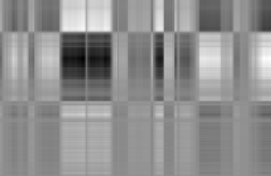
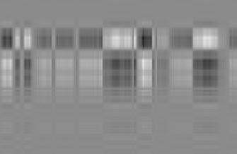
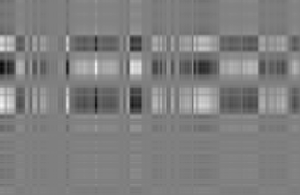
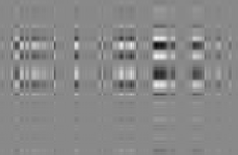
秩为r的矩阵 A ∈ R^(m×n) 可以写成秩-1矩阵A_i的和，使得
A = Σ_{i=1}^r σ_i u_i v_i^⊤ = Σ_{i=1}^r σ_i A_i, (4.91)
其中外积矩阵A_i由第i个奇异值σ_i加权。我们可以看出为什么(4.91)成立：奇异值矩阵Σ的对角结构只将匹配的左奇异向量和右奇异向量 u_i v_i^⊤ 相乘，并用相应的奇异值σ_i缩放它们。所有项 Σ_{ij} u_i v_j^⊤ 在i ≠ j时消失，因为Σ是对角矩阵。任何i > r的项都消失，因为相应的奇异值为0。
在(4.90)中，我们引入了秩-1矩阵A_i。我们将r个独立的秩-1矩阵求和得到秩-r矩阵A；见(4.91)。如果求和不是对所有矩阵A_i, i = 1,…,r进行，而只到中间值k < r，我们得到一个秩-k近似
Â^(k) := Σ_{i=1}^k σ_i u_i v_i^⊤ = Σ_{i=1}^k σ_i A_i (4.92)
A的近似，其中 rk(Â^(k)) = k。图4.12显示了巨石阵原始图像A的低秩近似Â^(k)。在秩-5近似中，岩石的形状变得越来越清晰可见和容易识别。虽然原始图像需要1,432 · 1,910 = 2,735,120个数字，但秩-5近似只需要存储五个奇异值和五个左、右奇异向量（分别为1,432维和1,910维），总共5 · (1,432 + 1,910 + 1) = 16,715个数字——仅占原始数据的0.6%多一点。
要测量A与其秩-k近似Â^(k)之间的差异（误差），我们需要范数的概念。在第3.1节中，我们已经使用了
图4.12 使用SVD进行图像重建。(a) 原始图像。(b)-(f) 使用SVD的低秩近似进行图像重建，其中秩-k近似由 Â^(k) = Σ_{i=1}^k σ_i A_i 给出。
测量向量长度的向量范数。类似地，我们也可以定义矩阵上的范数。
定义4.23（矩阵的谱范数）。对于 x ∈ R^n{0}，矩阵 A ∈ R^(m×n) 的谱范数定义为
‖A‖2 := max{x} ‖Ax‖_2/‖x‖_2 (4.93)
我们在矩阵范数中引入下标记号（左边），类似于向量的欧几里得范数（右边），它有下标2。谱范数(4.93)确定了任何向量x在被A相乘时最多能变得多长。
定理4.24. A的谱范数是其最大奇异值σ_1。
我们将此定理的证明留作练习。
定理4.25（Eckart-Young定理 (Eckart and Young, 1936)）。考虑秩为r的矩阵 A ∈ R^(m×n) ，设 B ∈ R^(m×n) 为秩为k的矩阵。对于任意 k ⩽ r ，其中 Â^(k) = Σ_{i=1}^k σ_i u_i v_i^⊤ ，有
Â^(k) = argmin_{rk(B)=k} ‖A - B‖_2, (4.94)
‖A - Â^(k)‖2 = σ{k+1}. (4.95)
Eckart-Young定理明确说明了通过使用秩-k近似来近似A时我们引入的误差大小。我们可以将用SVD获得的秩-k近似解释为将全秩矩阵A投影到秩不超过k的矩阵的低维空间上。在所有可能的投影中，SVD最小化了A与任何秣-k近似之间的误差（相对于谱范数）。
我们可以回顾一些步骤来理解为什么 [(4.95)] 应该成立。
[©2023 M. P. Deisenroth, A. A. Faisal, C. S. Ong. 剑桥大学出版社出版 (2020).]
[132] [[矩阵分解]]
我们观察到 A − A b(k) 之间的差是一个包含剩余秩-1矩阵之和的矩阵
[r]
A X [⊤] − A ( k ) = σ u v (4.96) . b [i] [i] [i]
[i][=][k][+1]
根据定理 [4.24,] 我们立即得到 σ[k][+1] 作为差矩阵的谱范数。让我们仔细看看 [(4.94).]如果我们假设存在另一个矩阵 B 满足 rk(B) ⩽ k，使得
∥A − B∥ < A [2] − A b ( k ) , [(4.97) [2]]
那么存在一个至少 ( [n] n − k ) 维的零空间 Z ⊆ R，使得 x ∈ Z 意味着 Bx = 0。然后可得
∥Ax∥ = (A x [2] ∥ − B )∥ , (4.98) [2]
通过使用涵盖矩阵范数(norms)的 Cauchy-Schwartz 不等式 [(3.17)] 的一个版本，我们得到
∥Ax∥ A [2] ⩽ ∥ − B∥[2] ∥x∥ < σ[k][+1] . (4.99) [2] ∥ x ∥ [2]
然而，存在一个 (k + 1) 维子空间，其中 ∥Ax∥[2] ⩾ σ[k][+1] ∥x∥ ，该子空间由 A 的右奇异向量 v , j [+ 1 [2] [j] ⩽ k] 张成。将这两个空间的维数相加得到一个大于 n 的数，因为在两个空间中必须存在一个非零向量。这与第 [2.7.3] 节中的秩-零化定理 (Theorem [2.24)] 相矛盾。
Eckart-Young 定理意味着我们可以使用 SVD 以一种有原则的、最优的（在谱范数意义下）方式将秩-r 矩阵 A 降低为秩-k 矩阵 A b。我们可以将用秩-k 矩阵逼近 A 解释为一种有损压缩形式。因此，矩阵的低秩逼近出现在许多机器学习应用中，例如图像处理、噪声滤除以及病态问题的正则化。此外，正如我们将在第 [10] 章中看到的，它在降维和主成分分析中起着关键作用。
例 4.15 (在电影评分和消费者中发现结构（续）)
回到我们的电影评分例子，我们现在可以应用低秩逼近的概念来逼近原始数据矩阵。回想一下，我们的第一个奇异值捕获了电影中的科幻主题概念和科幻爱好者。因此，通过在电影评分矩阵的秩-1分解中仅使用第一个奇异值项，我们得到预测评分
− 0 . 6710
A1 = u1v 1 = −0.7367 −0.6515 −0.1811 (4.100a) − [⊤] − 0 . 7197 0 . 0939
−0.1515
[《机器学习数学》草稿 (2023-10-18)。反馈:] [https://mml-book.com][.] [4.7 矩阵系统发生学] [[133]]
0 . 4943 0 . 4372 0 . 1215
0 . 5302 0 . 4689 0 . 1303
= . (4.100b)
0 . 0692 0 . 0612 0 . 0170
0.1116 0.0987 0.0274
这个第一个秩-1逼近 A1 很有洞察力：它告诉我们 Ali 和 Beatrix 喜欢科幻电影，如 Star Wars 和 Bladerunner （条目值 > 0.4），但未能捕获 Chandra 对其他电影的评分。这并不令人惊讶，因为 Chandra 的电影类型没有被第一个奇异值捕获。第二个奇异值为那些电影主题爱好者提供了更好的秩-1逼近：
0 . 0236
A[2] = u[2]v [2] = 0.0852 0.1762 − [⊤] 0 . 2054
0 . 7705
− [0.9807 [(4.101a)]]
−0.6030
0 . 0020 0 . 0042 − 0 . 0231
0 . 0175 0 . 0362 − 0 . 2014
= . (4.101b) − −
0 . 0656 0 . 1358 0 . 7556
−0.0514 −0.1063 0.5914
在这个第二个秩-1逼近 A[2] 中，我们很好地捕获了 Chandra 的评分和电影类型，但没有捕获科幻电影。这使我们考虑秩-2逼近 A b(2)，其中我们结合前两个秩-1逼近
4 . 7801 4 . 2419 1 . 0244 5 . 2252 4 . 7522 − 0 . 0250
A b(2) = σ 1A1 + σ[2]A[2] = . (4.102) −
0 . 2493 0 . 2743 4 . 9724
0.7495 0.2756 4.0278
A b(2) 与原始电影评分表相似
5 4 1
5 5 0
A = , (4.103)
0 0 5
1 0 4
这表明我们可以忽略 A3 的贡献。我们可以这样解释：在数据表中没有第三个电影主题/电影爱好者类别的证据。这也意味着我们例子中电影主题/电影爱好者的整个空间是一个由科幻和法国艺术电影及其爱好者张成的二维空间。
[©2023 M. P. Deisenroth, A. A. Faisal, C. S. Ong. 剑桥大学出版社出版 (2020).]
[134] [矩阵分解]
[图 4.13] [机器学习中遇到的矩阵的功能系统发生学。]
[实矩阵] [伪逆] [∃] [SVD]
[n] [×][n] [n][×][m] [R] [R] [方阵]
[∃] [行列式] [非方阵]
[∃] [迹]
[无特征向量基] [det = 0] [det] [det]
[缺陷的] [特征向量基] [奇异的] [奇异的] [̸] [=] [̸] [=]
[0] [0]
[非缺陷的]
[(可对角化的)]
[A][⊤] [⊤] [⊤] [⊤] [A] [=] [AA] [A] [A] [̸] [=] [AA]
[正规的] [非正规的]
[A] [⊤]
[A]
[=]
[AA]
[对称的] [=] [I] [正则的] [⊤] [∃] [逆矩阵]
[特征值] [∈] [R] [(可逆的)]
[对角的] [列是正交的]
[正定的] [特征向量]
[Cholesky]
[单位的] [特征值] [>] [0] [旋转] [正交矩阵]
在第 [2] 和 3 章中，我们涵盖了线性代数和解析几何的基础。在本章中，我们研究了矩阵和线性映射的基本特征。图 [4.13] 描绘了不同类型矩阵之间关系的系统发生树（黑色箭头表示
[词语]
[[“系统发生的”]]
[[描述了我们如何]]
[捕获]
[个体或]
[之间的关系]
“是一个子集”)以及我们可以对它们执行的覆盖操作(在[[groups and derived]]
蓝色中)。我们考虑所有来自希腊语的实矩阵 A ∈ R^(n×m)，对于非方矩阵(其中 n ≠ m)，SVD总是存在的，正如我们在本章中看到的。专注于方矩阵 A ∈ R^(n×n)，行列式告诉我们方矩阵是否拥有逆矩阵，即是否属于正则的、可逆矩阵类。如果方矩阵 n × n 拥有 n 个线性无关的特征向量，那么该矩阵是非缺陷的，并且存在特征分解(定理4.12)。我们知道重复的特征值可能导致缺陷矩阵，这些矩阵无法对角化。
非奇异矩阵和非缺陷矩阵不是同一个概念。例如，旋转矩阵是可逆的(行列式非零)，但在实数范围内不可对角化(特征值不保证是实数)。
我们进一步深入非缺陷方矩阵 n × n 的分支。如果满足条件 A^⊤A = AA^⊤，则矩阵是正规的。此外，如果满足更严格的条件 A^⊤A = AA^⊤ = I，则 A 被称为正交的(见定义3.8)。正交矩阵集合是正则(可逆)矩阵的子集，并满足 A^(-1) = A^⊤。
正规矩阵有一个经常遇到的子集，即对称矩阵 S ∈ R^(n×n)，满足 S^⊤ = S。对称矩阵只有实特征值。对称矩阵的一个子集包括正定矩阵 P，满足对所有 x ∈ R^n{0} 都有 x^⊤Px > 0 的条件。在这种情况下，存在唯一的Cholesky分解(定理4.18)。正定矩阵只有正特征值，且总是可逆的(即具有非零行列式)。
对称矩阵的另一个子集包括对角矩阵 D。对角矩阵在乘法和加法下封闭，但不一定形成群(只有当所有对角元素都非零使得矩阵可逆时才是这种情况)。一个特殊的对角矩阵是单位矩阵 I。
本章的大部分内容建立了底层数学基础，并将它们与研究映射的方法联系起来，其中许多方法是机器学习在底层软件解决方案层面的核心，也是几乎所有机器学习理论的构建块。使用行列式、特征谱和特征空间进行矩阵特征化为分类和分析矩阵提供了基本特征和条件。这扩展到数据表示和涉及数据的映射的所有形式，以及判断此类矩阵计算操作的数值稳定性(Press et al., 2007)。
行列式是”手工”计算矩阵逆和特征值的基本工具。然而，对于几乎所有但最小的实例，通过高斯消元法进行数值计算优于行列式方法(Press et al., 2007)。尽管如此，行列式仍然是一个强大的理论概念，例如，根据行列式的符号获得关于基底方向的直觉。特征向量可用于执行基变换，将数据转换为有意义的正交特征向量坐标。类似地，矩阵分解方法，如Cholesky分解，在我们计算或模拟随机事件时经常重新出现(Rubinstein and Kroese, 2016)。因此，Cholesky分解使我们能够计算重参数化技巧，其中我们希望对随机变量执行连续微分，例如在变分自编码器中(Jimenez Rezende et al., 2014; Kingma and Welling, 2014)。
特征分解是使我们能够提取表征线性映射的有意义和可解释信息的基础。因此，特征分解是一类称为谱方法的机器学习算法的基础，这些算法对正定核执行特征分解。这些谱分解方法涵盖了统计数据分析的经典方法，如下所示：
主成分分析(PCA，Pearson, 1901，另见第10章)，其中寻求解释数据中大部分变异性的低维子空间。
Fisher判别分析，旨在确定用于数据分类的分离超平面(Mika et al., 1999)。
多维标度(MDS，Carroll and Chang, 1970)。
这些方法的计算效率通常来自于找到对称正半定矩阵的最佳rank-k近似。谱方法的更现代例子有不同的起源，但每种方法都需要计算正定核的特征向量和特征值，如Isomap(Tenenbaum et al., 2000)、Laplacian特征映射(Belkin and Niyogi, 2003)、Hessian特征映射(Donoho and Grimes, 2003)和谱聚类(Shi and Malik, 2000)。这些方法的核心计算通常由低秩矩阵近似技术支撑(Belabbas and Wolfe, 2009)，正如我们在这里通过SVD遇到的那样。
SVD允许我们发现与某些相同类型的信息
特征分解(eigendecomposition)。然而，SVD 对非方阵和数据表具有更广泛的适用性。每当我们想要识别数据中的异质性、通过近似进行数据压缩（例如，不存储 n×m 个值，而是存储 (n+m)k 个值）或执行数据预处理（例如，去除设计矩阵预测变量的相关性）时，这些矩阵分解方法就变得相关[(Ormoneit et al., 2001).]。SVD 操作矩阵，我们可以将其解释为具有两个索引（行和列）的矩形数组。将类似矩阵的结构扩展到高维数组称为张量(tensors)。事实证明，SVD 是在这些张量上操作的更通用分解族的特殊情况[(Kolda and Bader, 2009).]。张量上的类 SVD 操作和低秩近似例如有 Tucker 分解[(Tucker, 1966)] 或 CP 分解[(Carroll and Chang, 1970).]。SVD 低秩近似在机器学习中经常用于计算效率原因。这是因为它减少了我们需要在可能非常大的数据矩阵上执行的内存量和非零乘法运算[(Trefethen and Bau III, 1997).]。此外，低秩近似用于操作可能包含缺失值的矩阵，以及用于有损压缩和降维[(Moonen and De Moor, 1995; Markovsky, 2011).]。
[Draft (2023-10-18) of “Mathematics for Machine Learning”. Feedback: https://mml-book.com.] 练习 [137]
练习
4.1 使用拉普拉斯展开（使用第一行）和萨吕斯规则计算行列式
$A = \begin{bmatrix} 1 & 3 & 5 \\ 2 & 4 & 6 \\ 0 & 2 & 4 \end{bmatrix}$
4.2 高效计算以下行列式：
$\begin{vmatrix} 2 & 0 & 1 & 2 & 0 \\ 2 & -1 & 0 & 1 & 1 \\ 0 & 1 & 2 & 1 & 2 \\ -2 & 0 & 2 & -1 & 2 \\ 2 & 0 & 0 & 1 & 1 \end{vmatrix}$
4.3 计算特征空间(eigenspaces)
$A := \begin{bmatrix} 1 & 0 \\ 1 & 1 \end{bmatrix}$
$B := \begin{bmatrix} -2 & 2 \\ 2 & 1 \end{bmatrix}$
4.4 计算所有特征空间
$A = \begin{bmatrix} 0 & -1 & 1 & 1 \\ -1 & 1 & -2 & 3 \\ 2 & -1 & 0 & 0 \\ 1 & -1 & 1 & 0 \end{bmatrix}$
4.5 矩阵的可对角化性与其可逆性无关。确定以下四个矩阵是否可对角化和/或可逆
$\begin{bmatrix} 1 & 0 \\ 0 & 1 \end{bmatrix}, \begin{bmatrix} 1 & 0 \\ 0 & 0 \end{bmatrix}, \begin{bmatrix} 1 & 1 \\ 0 & 1 \end{bmatrix}, \begin{bmatrix} 0 & 1 \\ 0 & 0 \end{bmatrix}$
4.6 计算以下变换矩阵的特征空间。它们是否可对角化？
对于 $A = \begin{bmatrix} 2 & 3 & 0 \\ 1 & 4 & 3 \\ 0 & 0 & 1 \end{bmatrix}$
对于 $A = \begin{bmatrix} 1 & 1 & 0 & 0 \\ 0 & 0 & 0 & 0 \\ 0 & 0 & 0 & 0 \\ 0 & 0 & 0 & 0 \end{bmatrix}$
©2023 M. P. Deisenroth, A. A. Faisal, C. S. Ong. Published by Cambridge University Press (2020).
[138] 矩阵分解
4.7 以下矩阵是否可对角化？如果是，确定它们的对角形式和变换矩阵相对于其为对角形式的基。如果不是，说明它们不可对角化的原因。
$A = \begin{bmatrix} 0 & 1 \\ -8 & 4 \end{bmatrix}$
$A = \begin{bmatrix} 1 & 1 & 1 \\ 1 & 1 & 1 \\ 1 & 1 & 1 \end{bmatrix}$
$A = \begin{bmatrix} 5 & 4 & 2 & 1 \\ 0 & 1 & -1 & -1 \\ -1 & -1 & 3 & 0 \\ 1 & 1 & -1 & 2 \end{bmatrix}$
$A = \begin{bmatrix} 5 & -6 & -6 \\ -1 & 4 & 2 \\ 3 & -6 & -4 \end{bmatrix}$
4.8 求矩阵的 SVD
$A = \begin{bmatrix} 3 & 2 & 2 \\ 2 & 3 & -2 \end{bmatrix}$
4.9 求奇异值分解
$A = \begin{bmatrix} 2 & 2 \\ -1 & 1 \end{bmatrix}$
4.10 求秩-1 近似
$A = \begin{bmatrix} 3 & 2 & 2 \\ 2 & 3 & -2 \end{bmatrix}$
4.11 证明对于任何 A ∈ ℝm × n，矩阵 A⊤A 和 AA⊤ 具有相同的非零特征值。
4.12 证明对于 x ≠ 0，定理 4.24 成立，即证明
$\max_{x} \frac{\|Ax\|_2}{\|x\|_2} = σ_1$
其中 σ1 是 A ∈ ℝm × n 的最大奇异值。
[Draft (2023-10-18) of “Mathematics for Machine Learning”. Feedback: https://mml-book.com.]
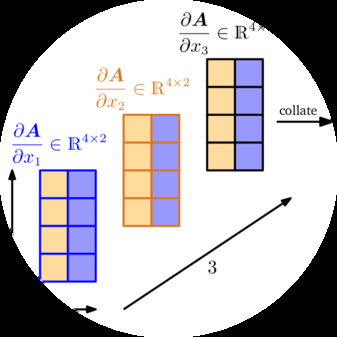
机器学习中的许多算法针对一组期望的模型参数优化目标函数，这些参数控制模型解释数据的好坏程度：寻找好的参数可以表述为优化问题（见第 8.2 和 8.3 节）。例子包括：(i) 线性回归（见第 9 章），我们研究曲线拟合问题并优化线性权重参数以最大化似然；(ii) 用于降维和数据压缩的神经网络自编码器，其中参数是每层的权重和偏置，我们通过链式法则的重复应用来最小化重构误差；以及 (iii) 用于建模数据分布的高斯混合模型（见第 11 章），我们优化每个混合成分的位置和形状参数以最大化模型的似然。图 5.1 说明了这些问题中的一些，我们通常通过使用利用梯度信息的优化算法来解决（第 7.1 节）。图 5.2 概述了本章概念如何相关以及它们如何与本书其他章节相连接。
本章的核心概念是函数。函数f是一个将两个量相互关联的量。在本书中，这些量通常是输入x ∈ RD和目标值（函数值）f(x)，除非另有说明，我们假设它们是实值的。这里RD是f的定义域，函数值f(x)是f的值域/陪域。
图5.1 向量
训练数据微积分在回归（曲线拟合）和密度估计（即数据分布建模）中起着核心作用。
这些材料由剑桥大学出版社出版，书名为《机器学习数学》，作者为Marc Peter Deisenroth、A. Aldo Faisal和Cheng Soon Ong (2020)。此版本仅供个人查看和下载使用。不得重新分发、转售或用于衍生作品。
图5.2 本章介绍概念的思维导图，以及它们在本书其他部分的使用情况。
差商在第9章中定义，在回归中使用；偏导数在第7章的优化中使用，在第10章的降维中使用；雅可比矩阵在第6章的概率中使用，在第11章的密度估计中使用；海塞矩阵；泰勒级数在第12章的分类中使用。
第2.7.3节在线性函数的背景下提供了更详细的讨论。我们经常写作
f : R^D → R (5.1a) x ↦ f(x) (5.1b)
来指定一个函数，其中(5.1a)指定f是从R^D到R的映射，(5.1b)指定将输入x明确分配给函数值f(x)。函数f为每个输入x分配唯一的函数值f(x)。
例5.1
回忆点积作为内积的特例（第3.2节）。在之前的记号中，函数f(x) = x^T x，x ∈ R^2，将被指定为
f : R^2 → R (5.2a) x ↦ x₁² + x₂² (5.2b)
在本章中，我们将讨论如何计算函数的梯度，这对于促进机器学习模型中的学习通常是必要的，因为梯度指向最陡上升的方向。因此，
图5.3 函数f在x₀和x₀ + δx之间的平均斜率是通过f(x₀)和f(x₀ + δx)的割线（蓝色）的斜率，由δy/δx给出。
向量微积分是我们在机器学习中需要的基本数学工具之一。在整本书中，我们假设函数是可微的。通过一些额外的技术定义（我们在此不涉及），所呈现的许多方法可以扩展到次微分（在某些点连续但不可微的函数）。我们将在第7章中讨论有约束函数情况的扩展。
在下面，我们简要回顾单变量函数的微分，这可能在高中数学中已经熟悉。我们从单变量函数y = f(x)，x, y ∈ R的差商开始，随后我们将用它来定义导数。
定义5.1（差商）。差商
δy/δx := [f(x + δx) - f(x)]/δx (5.3)
计算通过f图上两点的割线的斜率。在图5.3中，这些是x坐标为x₀和x₀ + δx的点。
如果我们假设f是线性函数，差商也可以被认为是f在x和x + δx之间的平均斜率。在δx → 0的极限下，如果f是可微的，我们得到f在x处的切线。切线就是f在x处的导数。
定义5.2（导数）。更正式地，对于h > 0，f在x处的导数定义为极限
df/dx := lim[h→0] [f(x + h) - f(x)]/h (5.4)
图5.3中的割线变成切线。
f的导数指向f最陡上升的方向。
例5.2（多项式的导数）
我们想计算f(x) = x^n，n ∈ N的导数。我们可能已经知道答案是nx^(n-1)，但我们想使用导数作为差商极限的定义来推导这个结果。
使用(5.4)中导数的定义，我们得到
df/dx = lim[h→0] [f(x + h) - f(x)]/h (5.5a) = lim[h→0] [(x + h)^n - x^n]/h (5.5b) = lim[h→0] [∑(i=0 to n)(n choose i)x(n-i)hi - x^n]/h (5.5c)
我们看到(n choose 0)x^n = x^n h0。从i=1开始求和，xn项消除，我们得到
df/dx = lim[h→0] [∑(i=1 to n)(n choose i)x(n-i)hi]/h (5.6a) = lim[h→0] ∑(i=1 to n)(n choose i)x(n-i)h(i-1) (5.6b)
[i][=1]
n! ! [n] n
= lim [n] X [−] 1 [n][−][i] [i][−]1 x + x h (5.6c)
[h][→][0] 1 i
[i][=2] | {z }
[→][0] [as] [h][→][0]
= [n! [n][−]1 [n][−]1 (5.6d) x = nx . 1!( n − 1)!]
Taylor级数是将函数f表示为无穷项之和的一种方法。这些项是使用在x[0]处求值的f的导数确定的。
定义5.3（Taylor多项式）。函数f : R → R在x[0]处的n次Taylor多项式定义为
[n] [(][k][)] f(x )
T X [0] [k] ( x ) := ( x − x ) , (5.7)
[n] [0] k !
[k][=0]
其中[(][k][)] f(x )是f在x[0]处的k次导数（我们假设它存在），[0] [f] [(][k][)][(]x [)] 是多项式的系数。[0] [k][!]
定义5.4（Taylor级数）。对于光滑函数f ∈ C[∞], f : R → R，f在x[0]处的Taylor级数定义为
[∞] [(][k][)] f(x )
T X [0] [k] ( x ) = ( x − x ) . (5.8)
[∞] [0] k !
[k][=0]
当x[0] = 0时，我们得到Maclaurin级数作为Taylor级数的特殊情况。如果f ∈ C[∞]（意味着f是无穷次连续可微的），那么f被称为解析的。
注释。 一般来说，n次Taylor多项式是一个函数的近似，该函数不一定是多项式。Taylor多项式在x[0]附近的邻域内与f相似。然而，n次Taylor多项式是次数k ⩽ n的多项式f的精确表示，因为所有导数f[(][i][)]，i > k都为零。♢
例5.3（Taylor多项式）
我们考虑多项式
f [4] ( x ) = x (5.9)
并寻求在x[0] = 1处求值的Taylor多项式T6。我们首先计算k = 0, . . . , 6的系数[(][k][)] f(1)：
f (1) = 1 (5.10)
f ′ = 4 (5.11)
f ′′ = 12 (5.12)
f (3) = 24 (5.13)
f (4) = 24 (5.14)
f (5) = 0 (5.15)
f (6) = 0 (5.16)
因此，所需的Taylor多项式是
6 [(][k][)] f(x )
T X [0] [k] ( x ) = ( x − x ) (5.17a)
6 [0] k !
[k][=0]
= 1 + 4( [2] 3 [4] x − 1) + 6( x − 1) + 4( x − 1) + ( x − 1) + 0 . (5.17b)
展开并重新排列得到
T6 (x) = (1 − 4 + 6 − 4 + 1) + x(4 − 12 + 12 − 4)
+ [2] 3 [4] x (6 − 12 + 6) + x (4 − 4) + x (5.18a)
= [4] x = f(x) , (5.18b)
即，我们得到了原函数的精确表示。
图5.4 Taylor多项式。原函数f [(] x [) =] sin(x) + cos(x)（黑色实线）在x[0] = 0处被Taylor多项式（虚线）近似。高阶Taylor多项式更好地全局近似函数。T[10]在[-4,4]中已经与f相似。
例5.4（Taylor级数）
考虑图5.4中给出的函数
f [∞] ( x ) = sin( x ) + cos( x ) ∈ C . (5.19)
我们寻求f在x[0] = 0处的Taylor级数展开，这是f的Maclaurin级数展开。我们得到以下导数：
f (0) = sin(0) + cos(0) = 1 [(5.20)]
f ′ = cos(0) − sin(0) = 1 [(5.21)]
f ′′ = − sin(0) − cos(0) = −1 [(5.22)]
f (3) = − cos(0) + sin(0) = −1 [(5.23)]
f (4) = sin(0) + cos(0) = f (0) = 1 [(5.24)]
…
我们可以看到一个模式：我们Taylor级数中的系数只有±1（因为sin(0) = 0），每个系数在切换到另一个之前出现两次。此外，[(][k][+4)] [(][k][)] f (0) = f(0)。
因此，f在x[0] = 0处的完整Taylor级数展开为
[∞] [(][k][)] f(x )
T X [0] [k] ( x ) = ( x − )
[∞] [0] x (5.25a) [k] k! [=0]
= 1 + 1 1 1 1 [2] 3 [4] [5] x − x − x + x + x − · · · (5.25b) 2! 3! 4! 5!
= 1 1 1 1 [2] [4] 3 [5] 1 − x + x ∓ · · · + x − x + x ∓ · · · (5.25c) 2! 4! 3! 5!
[∞] [∞] 1 1
= X X [k] [2] [k] [k] [2][k][+1] ( − 1) x + ( − 1) x (5.25d)
[k] (2k)! (2k + 1)! [=0] [k] [=0]
= cos(x) + sin(x) , [(5.25e)]
其中我们使用了power series表示
[∞] 1
cos( X [k] [2][k] x ) = ( − 1) x , (5.26)
[k] (2k)! [=0]
[∞] 1
sin( X [k] [2][k][+1] x ) = ( − 1) x . (5.27)
[k] (2k + 1)! [=0]
图5.4显示了n = 0, 1, 5, 10的相应前几个Taylor多项式T[n]。
注释。 Taylor级数是power series的特殊情况
[∞]
f X [k] ( x ) = a ( x − c ) (5.28) [k]
[k][=0]
其中a[k]是系数，c是常数，它具有定义5.4中的特殊形式。♢
在下面，我们简要说明基本的微分法则，其中我们用f[′]表示f的导数。
乘积法则：[′] [′] [′] ( f ( x ) g ( x )) = f ( x ) g ( x ) + f ( x ) g(x) (5.29)
[′] [′] [′] f ( x ) f ( x ) g ( x ) − f ( x) g (x )
商法则：= (5.30) [2] g ( x ) ( g ( x ))
和法则：[′] [′] [′] ( f ( x ) + g ( x )) = f ( x ) + g(x) (5.31)
链式法则：[′] [′] [′] [′] g ( f ( x )) = ( g ◦
f ) (x) = g (f (x))f (x) (5.32)
这里，g ◦ f表示函数复合x 7→ f (x) 7→ g(f (x))。
例5.5（链式法则）
让我们使用链式法则计算函数[4] h ( x ) = (2 x + 1) 的导数。设
h4 = (2x + 1) = g(f(x)), (5.33) f(x) = 2x + 1, (5.34) g4 = f, (5.35)
我们得到f和g的导数为
f′(x) = 2, (5.36) g′3 = 4f, (5.37)
因此h的导数为
h′′′[3][(5.34)]3(x) = g(f)f(x) = (4f)·2 = 4(2x + 1)·2 = 8(2x + 1), (5.38)
其中我们使用了链式法则(5.32)并将f的定义(5.34)代入g′(f)中。
第5.1节讨论的微分适用于标量变量x ∈ ℝ的函数f。接下来，我们考虑函数f依赖于一个或多个变量x ∈ ℝⁿ的一般情况，例如，f(x) = f(x₁, x₂)。导数对多变量函数的推广就是梯度。
我们通过一次改变一个变量并保持其他变量不变来找到函数f关于x的梯度。梯度就是这些偏导数的集合。
定义5.5 (偏导数)。对于函数f : ℝⁿ → ℝ，x ↦ f(x)，x ∈ ℝⁿ有n个变量x₁, …, xₙ，我们定义偏导数为
∂f/∂x₁ = lim[h→0] [f(x₁ + h, x₂, …, xₙ) - f(x)]/h
… (5.39)
∂f/∂xₙ = lim[h→0] [f(x₁, …, xₙ₋₁, xₙ + h) - f(x)]/h
并将它们收集在行向量中
∇ₓf = grad f = [∂f(x)/∂x₁ ∂f(x)/∂x₂ … ∂f(x)/∂xₙ] ∈ ℝ¹ˣⁿ, (5.40)
其中n是变量的数量，1是f的像/值域/余域的维数。这里，我们定义了列向量x = [x₁, …, xₙ]ᵀ ∈ ℝⁿ。方程(5.40)中的行向量称为f的梯度或Jacobian，是第5.1节导数的推广。
注释。 Jacobian的这个定义是向量值函数Jacobian一般定义的特例，即偏导数的集合。我们将在第5.3节回到这个话题。♢
例5.6 (使用链式法则的偏导数)
对于f(x, y) = (x³ + 2y)²，我们得到偏导数
∂f(x, y)/∂x = 2(x³ + 2y)∂(x³ + 2y)/∂x = 2(x³ + 2y)·3x², (5.41)
∂f(x, y)/∂y = 2(x³ + 2y)∂(x³ + 2y)/∂y = 12(x³ + 2y)y, (5.42)
其中我们使用链式法则(5.32)来计算偏导数。
注释(作为行向量的梯度)。 在文献中，遵循向量通常是列向量的惯例，将梯度向量定义为列向量并不少见。我们将梯度向量定义为行向量的原因有两个：第一，我们可以一致地将梯度推广到向量值函数f : ℝⁿ → ℝᵐ(这时梯度变成矩阵)。第二，我们可以立即应用多元链式法则而不必注意梯度的维数。我们将在第5.3节讨论这两点。♢
例5.7 (梯度)
对于f(x₁, x₂) = x₁²x₂ + x₁x₂³, x ∈ ℝ²，偏导数(即f关于x₁和x₂的导数)为
∂f(x₁, x₂)/∂x₁ = 2x₁x₂ + x₂³ (5.43)
∂f(x₁, x₂)/∂x₂ = x₁² + 3x₁x₂² (5.44)
梯度为
df/dx = [∂f(x₁, x₂)/∂x₁ ∂f(x₁, x₂)/∂x₂] = [2x₁x₂ + x₂³ x₁² + 3x₁x₂²] ∈ ℝ¹ˣ², (5.45)
在多元情况下，其中x ∈ ℝⁿ，我们从学校了解的基本微分规则(例如，和规则、积规则、链式法则；另见第5.1.2节)仍然适用。然而，当我们计算关于向量x ∈ ℝⁿ的导数时，我们需要注意：我们的梯度现在涉及向量和矩阵，而矩阵乘法不满足交换律(第2.2.1节)，即顺序很重要。
以下是一般的积规则、和规则和链式法则：
积规则：∂/∂x [f(x)g(x)] = g(x)∂f/∂x + f(x)∂g/∂x (5.46)
和规则：∂/∂x [f(x) + g(x)] = ∂f/∂x + ∂g/∂x (5.47)
链式法则：∂/∂x [(g ∘ f)(x)] = ∂/∂x [g(f(x))] = ∂g/∂f · ∂f/∂x (5.48)
让我们仔细看看链式法则。链式法则(5.48)在某种程度上类似于矩阵乘法的规则，我们说邻接维数必须匹配才能定义矩阵乘法；见第2.2.1节。如果我们从左到右，链式法则表现出类似的性质：∂f出现在第一个因子的”分母”中和第二个因子的”分子”中。如果我们将因子相乘，乘法被定义，即∂f的维数匹配，∂f”约掉”，使得∂g/∂x保留。
考虑一个二变量函数f : ℝ² → ℝ，变量为x₁, x₂。此外，x₁(t)和x₂(t)本身是t的函数。要计算
关于t的f导数，我们需要应用多元函数的链式法则[(5.48)]：
d " # [∂x] [(] [t] [)] f h 1 i 1 [∂f] ∂f ∂x ∂f ∂x
d = [∂f] [2] [∂t] , [∂x] [∂x] [∂x] [(] [t] [)] = + (5.49) t 1 [2] [2] ∂x 1 ∂t ∂x [2] ∂t [∂t]
其中d表示梯度，∂表示偏导数。
例5.8
考虑[2] f ( x , x ) = x + 2x，其中x = sin t和x = cos t，则
df ∂f ∂x1 ∂f ∂x[2]
= + (5.50a)
dt ∂x 1 ∂t ∂x[2] ∂t
∂ sin t ∂ cos t
= 2 sin t + 2 (5.50b)
∂t ∂t
= 2 sin t cos t − 2 sin t = 2 sin t(cos t − 1) [(5.50c)]
这是f关于t的相应导数。
如果f (x1, x[2])是x1和x[2]的函数，其中x1和x2本身是两个变量s和t的函数，则链式法则产生偏导数
∂f ∂f ∂x1 ∂f ∂x[2]
= + , (5.51)
∂s ∂x1 ∂s ∂x[2] ∂s ∂f ∂f ∂x1 ∂f ∂x[2]
= + , (5.52)
∂t ∂x1 ∂t ∂x[2] ∂t
[《Machine Learning数学基础》草稿(2023-10-18)。反馈：] [https://mml-book.com][.] [5.3 向量值函数的梯度] [149]
梯度通过矩阵乘法获得
d( df ∂f ∂x h ∂f ∂f i = = ∂s ∂t . (5.53) ∂x ∂x s, t ) ∂ x ∂ ( s, t ) 1 [2] ∂x [2] ∂x [2]
| {z } ∂s ∂t ∂f
[=] | {z } ∂x ∂ x
[=] ∂ (s, t)
这种将链式法则写成矩阵乘法的紧凑方式只有在梯度定义为行向量时才有意义。否则，我们需要开始转置梯度以使矩阵维度匹配。[[链式法则可以]]
只要梯度是向量或矩阵，这仍然可能很简单；然而，当梯度变成张量(tensor)时（我们将在下文讨论），转置就不再是小事了。[[写成矩阵乘法。]]
备注（验证梯度实现的正确性）。偏导数作为相应差商极限的定义（见[(5.39)]）可以在数值检查计算机程序中梯度的正确性时加以利用：当我们计算[[梯度检查]]
梯度并实现它们时，我们可以使用有限差分来数值测试我们的计算和实现：我们选择h值很小（例如，[−][4] h = 10），并将[(5.39)]中的有限差分近似与我们的（解析）梯度实现进行比较。如果误差很小，我们的梯度实现可能是正确的。“小”
可能意味着q [P] [2] [(] [dh] [−] [df] [i] [i] [i] [)] − [P] [2] < 10，其中dh[i]是有限差分[(] [dh] [df] [i] [i] [+] [i] [)]
近似，df[i]是f关于第i个变量x[i]的解析梯度。♢
到目前为止，我们讨论了映射到实数的函数f : R[n] → R的偏导数和梯度。接下来，我们将梯度概念推广到向量值函数（向量场）f : R[n] [m] → R，其中n ⩾ 1且m > 1。
对于函数[n] [m] [⊤] [n] f : R → R和向量x = [ x , . . . , x ] ∈ R，1 [n] 相应的函数值向量为
f ( x )
f (x) = .. [m] . ∈ R . (5.54)
f[m] (x)
以这种方式写向量值函数允许我们将向量值函数[n] [m] [⊤] f : R → R视为函数向量[ f , . . . , f ]，1 [m]
f [n] : R → R映射到R。每个f的微分规则[i] [i]
正是我们在第[5.2]节中讨论的那些。
[©2023 M. P. Deisenroth, A. A. Faisal, C. S. Ong. 由Cambridge University Press出版 (2020).]
[150] [[向量微积分]]
因此，向量值函数[[n] f : R →]
R[m]关于x ∈ R, i = 1, . . . n的偏导数，给出为向量[i]
∂f [f] ( 1[,...,x][i]−[,x][i][+][h,x][i][+1][,...x][n][)][−]f([)] [∂x] [h][→][0] [i] lim
∂ [h] f = .. .. [m]
∂x . = . ∈ R .
[i] [∂f][m] [f] ( m[,...,x][i]−[,x][i][+][h,x][i][+1][,...x][n][)][−][f][m]([)] lim
[∂x] [h][→][0] [i] [h]
(5.55)
从[(5.40)]，我们知道f关于向量的梯度是偏导数的行向量。在[(5.55)]中，每个偏导数
∂f /∂x[i]本身是列向量。因此，我们通过收集这些偏导数获得f :
R[n] [m] [n] → R关于x ∈ R的梯度：
[d [] []]f ( x )
[dx ∂x [· · ·]] = [∂] [f] ([)] [∂][f] ([)] (5.56a)
[∂x][n]
[] []
[] [∂x] 1 [∂x][n] []
= [] [] [m] [×][n] [...] [...] [] [] R ∈ . (5.56b) [] []
[] [∂f][m]([)] [∂f][m]([)] [] [· · ·]
[∂x] 1 [∂x][n]
定义5.6（Jacobian）。向量值函数f : R[n] → R[m]的所有一阶偏导[Jacobian] [n] [m] 数的集合称为Jacobian。Jacobian J是一个m × n矩阵，我们定义并排列如下：[函数的梯度]
[n] [m] df (x) ∂f (x) ∂f (x)
[f] [:] [R] [→] [R] [是一个] J = ∇ f = = · · · (5.57) [大小为] x dx ∂x ∂x
1 [n]
[m] [×] [n]的矩阵。 ∂f ( x ) ∂f ( x )
∂x ∂x ..
= .. 1 [n]
. . [ , [(5.58)]]
∂f ( x ) ∂f ( x ) [m] [m] · · ·
∂x1 ∂x[n]
x
x = [i] .. 1 ∂f
∂x . , J (i, j) = . (5.59)
x [j]
[n]
作为[(5.58)]的特殊情况，函数f : [n] 1 R → R，将
向量[n] P[n] x ∈ R映射到标量（例如，f ( x ) = ），拥有一个Jacobian x [i][=1] [i]
即行向量（维度为1 × n的矩阵）；见[(5.40)。] [分子布局] 备注。 在本书中，我们使用导数的分子布局，即
f ∈ R[m]关于x ∈ R[n]的导数d f / d x是一个m ×
n 矩阵，其中 f 的元素定义行，x 的元素定义对应 Jacobian 的列；参见 (5.58)。
图 5.5 f(·) 的 Jacobian 行列式 b 可以用来计算 2 c 1 c 2 b 蓝色区域和橙色区域之间的 1 放大倍数。
还存在分母布局(denominator layout)，它是分子布局的转置。在本书中，我们将使用分子布局。♢
我们将在第 6.7 节中看到如何在概率分布的变量变换方法中使用 Jacobian。变换引起的缩放量由行列式提供。
在第 4.1 节中，我们看到行列式可以用来计算平行四边形的面积。如果给定两个向量 b₁ᵀ = [1, 0]，b₂ᵀ = [0, 1] 作为单位正方形的边（蓝色；见图 5.5），则该正方形的面积为
det |1 0| |0 1| = 1 . (5.60)
如果我们取一个边为 c₁ᵀ = [-2, 1]，c₂ᵀ = [1, 1] 的平行四边形（图 5.5 中的橙色），其面积由行列式的绝对值给出（见第 4.1 节）
det |-2 1| | 1 1| = |-3| = 3 , (5.61)
即，该面积恰好是单位正方形面积的三倍。我们可以通过找到一个将单位正方形变换为另一个正方形的映射来找到这个缩放因子。在线性代数术语中，我们实际上执行了从 (b₁, b₂) 到 (c₁, c₂) 的变量变换。在我们的情况下，映射是线性的，该映射行列式的绝对值给出了我们要寻找的缩放因子。
我们将描述两种识别该映射的方法。首先，我们利用映射是线性的这一事实，因此可以使用第 2 章的工具来识别该映射。其次，我们将使用本章讨论的工具，通过偏导数找到映射。
方法 1 要开始线性代数方法，我们将 {b₁, b₂} 和 {c₁, c₂} 都识别为 R² 的基（参见第 2.6.1 节的回顾）。我们实际执行的是从 (b₁, b₂) 到 (c₁, c₂) 的基变换，我们正在寻找实现基变换的变换矩阵。使用第 2.7.2 节的结果，我们将所需的基变换矩阵识别为
J = |-2 1| | 1 1| , (5.62)
使得 Jb₁ = c₁ 和 Jb₂ = c₂。J 的行列式的绝对值，即我们要寻找的缩放因子，为
|det(J)| = 3，即由 (c₁, c₂) 张成的正方形面积是由 (b₁, b₂) 张成的面积的三倍。
方法 2 线性代数方法适用于线性变换；对于非线性变换（在第 6.7 节中变得相关），我们采用使用偏导数的更一般方法。
对于这种方法，我们考虑一个执行变量变换的函数 f : R² → R²。在我们的例子中，f 将任何向量 x ∈ R² 相对于 (b₁, b₂) 的坐标表示映射到相对于 (c₁, c₂) 的坐标表示 y ∈ R²。我们想要识别映射，以便计算当区域（或体积）被 f 变换时如何变化。为此，我们需要找出如果稍微修改 x，f(x) 如何变化。这个问题正好由 Jacobian 矩阵 ∂f/∂x ∈ R²×² 回答。由于我们可以写成
y₁ = -2x₁ + x₂ (5.63) y₂ = x₁ + x₂ (5.64)
我们得到 x 和 y 之间的函数关系，这允许我们获得偏导数
∂y₁/∂x₁ = -2, ∂y₁/∂x₂ = 1, ∂y₂/∂x₁ = 1, ∂y₂/∂x₂ = 1 (5.65)
并组成 Jacobian 为
J = |∂y₁/∂x₁ ∂y₁/∂x₂| = |-2 1| |∂y₂/∂x₁ ∂y₂/∂x₂| | 1 1| . (5.66)
从几何上讲，Jacobian 表示我们要寻找的坐标变换。如果坐标变换是线性的（如我们的情况），它是精确的，(5.66) 正好恢复了 (5.62) 中的基变换矩阵。如果坐标变换是非线性的，Jacobian 用线性变换局部近似这种非线性变换。Jacobian 行列式的绝对值 |det(J)| 是坐标变换时面积或体积缩放的因子。我们的情况产生 |det(J)| = 3。
Jacobian 行列式和变量变换将在第 6.7 节中变得相关，当我们变换随机变量和概率分布时。这些变换在机器学习中极其相关，特别是在使用重参数化技巧(reparametrization trick)（也称为无限扰动分析(infinite perturbation analysis)）训练深度神经网络的背景下。
在本章中，我们遇到了函数的导数。图 5.6 总结了这些导数的维度。如果 f : R → R，梯度只是一个标量（左上角条目）。对于 f : R^D → R，梯度是一个 1 × D 行向量（右上角条目）。对于 f : R → R^E，梯度是一个 E × 1 列向量，对于 f : R^D → R^E，梯度是一个 E × D 矩阵。
图 5.6 （偏）导数的维度。 x f(x) ∂f/∂x
例 5.9 (向量值函数的梯度)
给定
f [M] [M] [×][N] [N] ( x ) = Ax , f ( x ) ∈ R , A ∈ R , x ∈ R .
为了计算梯度 df /dx，我们首先确定 d [N] [M] [M] [×][N] f / d x 的维度：由于 f : R → R ，因此 d f / d x ∈ R 。其次，为了计算梯度，我们确定 f 对每个 x [j] 的偏导数：
[N] ∂f ⇒
f X [i] ( x ) = A x = = A (5.67)
[i] [ij] [j] [ij] ∂x [j]
[j][=1]
我们将偏导数收集到 Jacobian 中，得到梯度
d [. [ A ∈ R . (5.68) .] x . . [∂f] [M] d ∂x [∂x] [11] 1 [N][N] f = = [M] .. .. .. .. [×][N] =]
[∂x] [M] 1 1 [∂x] [M N] [N] · · · A · · · [∂f][M] A
例 5.10 (链式法则)
考虑函数 h : R → R, h(t) = (f ◦ g)(t)，其中
f [2] : R → R (5.69) g [2] : R → R (5.70)
f [2] ( x ) = exp( x x) , (5.71)
1 [2]
x t cos t
x 1 = = g(t) = (5.72)
x [2] t sin t
并计算 h 对 t 的梯度。由于 f : R → R 且 g [2] : R → R，我们注意到
∂ ∂f 1 ∂g [×] [2] [2][×]1 , ∈ R ∈ R . (5.73) x ∂t
通过应用链式法则计算所需的梯度：
∂x
dh ∂f ∂x ∂f ∂f = = ∂t (5.74a) d t ∂ x ∂t ∂x 1 ∂x ∂x [2] [2]
∂t
cos t − t sin t
= [2] [2] [2] exp( x x ) x 2 exp( x x ) x x (5.74b)
1 [2] [2] 1 [2] 1 [2] sin t + t cos t
= exp( [2] [2] x x ) x (cos t − t sin t ) + 2 x x (sin t + t cos t ) , (5.74c) 1 [2] [2] 1 [2]
其中 x1 = t cos t 且 x[2] = t sin t；见 [(5.72).]
[©2023 M. P. Deisenroth, A. A. Faisal, C. S. Ong. Published by Cambridge University Press (2020).]
向量微积分
例 5.11 (线性模型中最小二乘损失的梯度)
让我们考虑线性模型
[(5.75) y = Φ θ ,]
其中 θ ∈[D] R 是参数向量，Φ ∈ R [N] [×] 是输入特征，y ∈ R [N] 是相应的观测值。我们定义函数
[loss] [, [(5.76)] [L] [2] L ( e ) := ∥ e ∥]
e(θ) := y − Φθ . (5.77)
我们寻求 [∂L] ，为此我们将使用链式法则。L 被称为
[∂][θ]
最小二乘损失函数。
在开始计算之前，我们确定梯度的维度为
∂L [1][×][D] . ∈ R (5.78) ∂ θ
链式法则允许我们计算梯度为
∂L ∂L ∂ e
= , (5.79)
∂θ ∂e ∂θ
其中第 d 个元素由以下给出
[N] ∂L ∂L ∂e [1 X , d ] = [n] [n, d] . (5.80)
∂θ ∂e ∂θ [n] [=1]
我们知道 [2] [⊤] ∥ e ∥ = ee (见第 [3.2] 节) 并确定
∂L [⊤] [1][×][N] (5.81) = 2 e ∈ R . ∂ e
此外，我们得到
∂ e [N] [×][D] = − Φ ∈ R , (5.82) ∂ θ
因此我们所需的导数是
∂L [[(5.77)]] [⊤] [⊤] [⊤] [⊤] [1][×][D] = − 2 e Φ = − 2( y − θ Φ ) Φ ∈ R . (5.83) ∂ θ |{z} | {z } [N] [×] [D] 1 [×] [N]
备注。 我们可以在不使用链式法则的情况下获得相同的结果，直接查看函数
L [2] [⊤] ( θ ) := ∥ y − Φ θ ∥ = ( y − Φ θ )(y − Φθ) . (5.84) [2]
这种方法对于像 L[2] 这样的简单函数仍然实用，但对于深度函数组合则变得不实用。♢
我们会遇到需要计算矩阵对向量(或其他矩阵)的梯度的情况，这会导致多维张量。我们可以将这个张量看作是收集偏导数的多维数组。例如，如果我们计算 m × n 矩阵 A 对 p × q 矩阵 B 的梯度，结果 Jacobian 将是 (m ×n)×(p×q)，即四维张量 J，其条目由 J[ijkl] = ∂A[ij] /∂B[kl] 给出。
由于矩阵表示线性映射，我们可以利用这一事实
存在一个向量空间同构（线性可逆映射），在
m × n 矩阵的空间 R^(m×n) 和 mn 维向量的空间 R^mn 之间。
因此，我们可以将矩阵重新形状为长度为 mn 和 pq 的向量。使用这些 mn 维向量的梯度会产生一个大小为 mn × pq 的 Jacobian 矩阵。图 5.7 可视化了这两种方法。在实际应用中，通常希望将矩阵重新形状为向量并继续使用这个 Jacobian 矩阵：链式法则 (5.48) 简化为简单的矩阵乘法，而在 Jacobian 张量的情况下，我们需要更加注意需要求和的维度。
例 5.12（向量相对于矩阵的梯度）
让我们考虑以下例子，其中
f = Ax, f ∈ R^M, A ∈ R^(M×N), x ∈ R^N (5.85)
我们寻求梯度 df/dA。让我们先确定梯度的维度：
df/dA ∈ R^(M×(M×N)) (5.86)
根据定义，梯度是偏导数的集合：
df/dA = [∂f₁/∂A, …, ∂fᵢ/∂A, …, ∂f_M/∂A] ∈ R^(1×(M×N)) (5.87)
为了计算偏导数，显式写出矩阵向量乘法会很有帮助：
fᵢ = ∑(j=1 to N) Aᵢⱼxⱼ, i = 1, …, M (5.88)
偏导数为：
∂fᵢ/∂Aᵢq = xq (5.89)
这使我们能够计算 fᵢ 相对于 A 的一行的偏导数：
∂fᵢ/∂Aᵢ,: = x^T ∈ R^(1×1×N) (5.90)
∂fᵢ/∂Ak≠i,: = 0 ∈ R^(1×1×N) (5.91)
其中我们必须注意正确的维度。由于 fᵢ 映射到 R，A 的每一行大小为 1 × N，我们得到一个 1 × 1 × N 大小的张量作为 fᵢ 相对于 A 的一行的偏导数。
我们堆叠偏导数 (5.91) 并通过以下方式得到 (5.87) 中的期望梯度：
∂f/∂A = [x^T, 0, …, 0, x^T, 0, …, 0]^T ∈ R^(1×(M×N)) (5.92)
例 5.13（矩阵相对于矩阵的梯度）
考虑矩阵 R ∈ R^(M×N) 和 f: R^(M×N) → R^(N×N)，其中
f(R) = R^T R =: K ∈ R^(N×N) (5.93)
我们寻求梯度 dK/dR。
为了解决这个难题，让我们首先写出我们已知的：梯度的维度为
dK/dR ∈ R^((N×N)×(M×N)) (5.94)
这是一个张量。此外，
dKpq/dR ∈ R^(1×M×N) (5.95)
对于 p, q = 1, …, N，其中 Kpq 是 K = f(R) 的第 (p,q) 个元素。用 rᵢ 表示 R 的第 i 列，K 的每个元素由 R 的两列的点积给出：
Kpq = rp^T rq = ∑(m=1 to M) Rmp Rmq (5.96)
当我们计算偏导数 ∂Kpq/∂Rᵢⱼ 时，我们得到：
∂Kpq/∂Rᵢⱼ = ∂/∂Rᵢⱼ ∑(m=1 to M) Rmp Rmq = ∂pqij (5.97)
∂pqij = { Rᵢq 如果 j = p, p ≠ q Rᵢp 如果 j = q, p ≠ q 2Rᵢq 如果 j = p, p = q 0 其他情况 } (5.98)
从 (5.94) 我们知道期望的梯度维度为 (N × N) × (M × N)，这个张量的每个元素由 (5.98) 中的 ∂pqij 给出，其中 p, q, j = 1, …, N 和 i = 1, …, M。
以下列出了在机器学习中经常需要的一些有用梯度 (Petersen and Pedersen, 2012)。这里我们使用 tr(·) 表示迹（见定义 4.4），det(·) 表示行列式（见第 4.1 节），f(X)^(-1) 表示 f(X) 的逆矩阵，假设它存在。
∂f(X)^T/∂X = (∂f(X)/∂X)^T (5.99)
∂tr(f(X))/∂X = tr(∂f(X)/∂X) (5.100)
∂det(f(X))/∂X = det(f(X))tr(f(X)^(-1) ∂f(X)/∂X) (5.101)
∂f(X)^(-1)/∂X = -f(X)^(-1) ∂f(X)/∂X f(X)^(-1) (5.102)
∂a^T Xb/∂X = -(X(-1))T ab^T (X(-1))T (5.103)
∂x^T a/∂x = a^T (5.104)
∂a^T x/∂x = a^T (5.105)
∂a^T Xb/∂X = ab^T (5.106)
∂x^T Bx/∂x = x^T(B + B^T) (5.107)
∂(x - As)^T W(x - As)/∂s = -2(x - As)^T WA （对于对称 W） (5.108)
备注。 在本书中，我们只涵盖矩阵的迹和转置。然而，我们已经看到导数可以是高维张量，在这种情况下，通常的迹和转置是未定义的。在这些情况下，D×D×E×F 张量的迹将是一个 E×F 维矩阵。这是张量收缩的特殊情况。类似地，当我们”转置”张量时，我们指的是交换前两个维度。具体地，在 (5.99) 到 (5.102) 中，当我们处理多变量函数 f(·) 并计算相对于矩阵的导数时（选择不像第 5.4 节讨论的那样向量化它们），我们需要与张量相关的计算。♢
在许多机器学习应用中，我们通过执行梯度下降（第 7.1 节）来找到好的模型参数，这依赖于我们能够计算学习目标相对于
对于给定的目标函数，我们可以使用微积分和链式法则来获得关于模型参数的梯度；参见第5.2.2节。我们在第5.3节中已经体验过，当时我们研究了平方损失相对于线性回归模型参数的梯度。
考虑函数
f(x) = 2x² + exp(2x) + cos x + exp(x²) (5.109)
通过应用链式法则，并注意到微分是线性的，我们计算梯度
df/dx = 4x + 2exp(2x) - sin x + exp(x²)2x = 4x + 2exp(2x) - sin x + exp(x²)(1 + 2x)/(2√(x² + exp(x²))) (5.110)
以这种明确的方式写出梯度通常是不实际的，因为它经常导致导数的非常冗长的表达式。在实践中，这意味着如果我们不小心，梯度的实现可能比计算函数本身昂贵得多，这会造成不必要的开销。对于训练深度神经网络模型，backpropagation算法(Kelley, 1960; Bryson, 1961; Dreyfus, 1962; Rumelhart et al., 1986)是计算误差函数相对于模型参数梯度的有效方法。
链式法则被极度使用的一个领域是深度学习，其中函数值y被计算为多层函数复合
y = (f^K ∘ f^(K-1) ∘ ··· ∘ f^1)(x) = fK(f(K-1)(···(f^1(x))···)) (5.111)
其中x是输入(例如，图像)，y是观测值(例如，类标签)，每个函数f^i, i = 1,…,K，都有自己的参数。
图5.8 多层神经网络中的前向传播，用于计算损失L作为输入x和参数A_i, b_i的函数
在具有多层的神经网络中，我们有函数fi(x(i-1)) = σ(A(i-1)x(i-1) + b(i-1))在第i层。这里x(i-1)是第i-1层的输出，σ是激活函数，如logistic sigmoid 1/(1+e^(-x))、tanh或rectified linear unit (ReLU)。为了训练这些模型，我们需要损失函数L相对于所有模型参数A_j, b_j (j = 1,…,K)的梯度。这也需要我们计算L相对于每层输入的梯度。例如，如果我们有输入x和观测值y，以及由以下定义的网络结构
f^0 := x (5.112) f^i := σ_i(A(i-1)f(i-1) + b^(i-1)), i = 1,…,K (5.113)
参见图5.8的可视化，我们可能有兴趣找到A_j, b_j (j = 0,…,K-1)，使得平方损失
L(θ) = ||y - f^K(θ,x)||² (5.114)
最小化，其中θ = {A^0, b^0,…, A^(K-1), b^(K-1)}。
为了获得相对于参数集θ的梯度，我们需要L相对于每层j = 0,…,K-1的参数θ_j = {A_j, b_j}的偏导数。链式法则允许我们确定偏导数为
∂L/∂θ^(K-1) = ∂L/∂f^K × ∂fK/∂θ(K-1) (5.115)
∂L/∂θ^(K-2) = ∂L/∂f^K × ∂fK/∂f(K-1) × ∂f(K-1)/∂θ(K-2) (5.116)
∂L/∂θ^(K-3) = ∂L/∂f^K × ∂fK/∂f(K-1) × ∂f(K-1)/∂f(K-2) × ∂f(K-2)/∂θ(K-3) (5.117)
∂L/∂θ_i = ∂L/∂f^K × ∂fK/∂f(K-1) × ··· × ∂f^(i+1)/∂θ_i (5.118)
橙色项是一层输出相对于其输入的偏导数，而蓝色项是一层输出相对于其参数的偏导数。假设我们已经计算了偏导数∂L/∂θ(i+1)，那么大部分计算可以重用来计算∂L/∂θi。我们需要计算的额外项由框中表示。图5.9可视化了梯度通过网络向后传播。
图5.9 多层神经网络中的反向传播，用于计算损失函数的梯度
图5.10 简单图示说明了数据从x通过一些中间变量a, b流向y的过程
事实证明，backpropagation是数值分析中称为automatic differentiation的通用技术的特例。我们可以将automatic differentiation视为一组数值技术(与
符号化地）通过处理中间变量并应用链式法则来评估函数的精确（在机器精度范围内）梯度。自动微分应用一系列基本算术运算，例如加法和乘法以及基本函数，例如 sin、cos、exp、log。通过对这些运算应用链式法则，可以自动计算相当复杂函数的梯度。
自动微分适用于一般的计算机程序，具有前向和反向模式。Baydin等人（2018）对机器学习中的自动微分给出了很好的概述。
图5.10显示了一个简单的图，表示从输入x到输出y通过一些中间变量a、b的数据流。如果我们要计算导数dy/dx，我们会应用链式法则并得到
dy/dx = (dy/db) · (db/da) · (da/dx) (5.119)
直观地说，前向和反向模式在乘法顺序上有所不同。由于矩阵乘法的结合律，我们可以在以下之间选择：
dy/dx = (dy/db) · (db/da) · (da/dx) (5.120)
dy/dx = (dy/db) · (db/da) · (da/dx) (5.121)
方程(5.120)是反向模式，因为梯度通过图向后传播，即与数据流方向相反。方程(5.121)是前向模式，其中梯度与数据从左到右通过图流动。
在以下内容中，我们将专注于反向模式自动微分，即反向传播。在神经网络的背景下，输入维度通常远高于标签的维度，反向模式在计算上比前向模式便宜得多。让我们从一个有指导意义的例子开始。
例5.14
考虑函数
f(x) = √(x² + exp(x²)) + cos(x² + exp(x²)) (5.122)
来自(5.109)。如果我们要在计算机上实现函数f，我们可以通过使用中间变量来节省一些计算：
a = x² (5.123) b = exp(a) (5.124) c = a + b (5.125) d = √c (5.126) e = cos(c) (5.127) f = d + e (5.128)
这与应用链式法则时发生的思维过程相同。注意前面的方程组比直接实现(5.109)中定义的函数f(x)需要更少的运算。图5.11中相应的计算图显示了获得函数值f所需的数据流和计算。
包含中间变量的方程组可以被视为计算图，这种表示在神经网络软件库的实现中被广泛使用。我们可以通过回忆基本函数导数的定义，直接计算中间变量相对于其相应输入的导数。我们得到以下结果：
∂a/∂x = 2x (5.129) ∂b/∂a = exp(a) (5.130) ∂c/∂a = 1 ∂c/∂b = 1 (5.131) ∂d/∂c = 1/(2√c) (5.132) ∂e/∂c = -sin(c) (5.133) ∂f/∂d = 1 ∂f/∂e = 1 (5.134)
通过查看图5.11中的计算图，我们可以通过从输出向后工作来计算∂f/∂x，得到
∂f/∂c = (∂f/∂d)·(∂d/∂c) + (∂f/∂e)·(∂e/∂c) (5.135) ∂f/∂b = (∂f/∂c)·(∂c/∂b) (5.136) ∂f/∂a = (∂f/∂b)·(∂b/∂a) + (∂f/∂c)·(∂c/∂a) (5.137) ∂f/∂x = (∂f/∂a)·(∂a/∂x) (5.138)
注意我们隐式地应用了链式法则来获得∂f/∂x。通过代入基本函数导数的结果，我们得到
∂f/∂c = 1·(1/(2√c)) + 1·(-sin(c)) (5.139) ∂f/∂b = (∂f/∂c)·1 (5.140) ∂f/∂a = (∂f/∂b)·exp(a) + (∂f/∂c)·1 (5.141) ∂f/∂x = (∂f/∂a)·2x (5.142)
通过将上面的每个导数视为一个变量，我们观察到计算导数所需的计算与计算函数本身的复杂度相似。这是相当反直觉的，因为导数∂f/∂x(5.110)的数学表达比(5.109)中函数f(x)的数学表达复杂得多。
自动微分是例5.14的形式化。设x₁,…,x_d为函数的输入变量，x_{d+1},…,x_{D-1}为中间变量，x_D为输出变量。那么计算图可以表示如下：
对于i = d+1,…,D：x_i = g_i(x_{Pa(x_i)}) (5.143)
其中g_i(·)是基本函数，x_{Pa(x_i)}是图中变量x_i的父节点。给定以这种方式定义的函数，我们可以使用链式法则逐步计算函数的导数。回忆根据定义f = x_D，因此
∂f/∂x_D = 1 (5.144)
对于其他变量x_i，我们应用链式法则
∂f/∂x_i = Σ(∂f/∂x_j)·(∂x_j/∂x_i) = Σ(∂f/∂x_i)·(∂g_j/∂x_i) (5.145)
∂x[i] ∂x[j] ∂x[i] ∂x[j] ∂x[i] x [j] [:] x [i] [∈] [Pa(] x [j] [)] x [j] [:] x [i] [∈] [Pa(] x [j] [)]
其中Pa(x[j])是计算图中x[j]的父节点集合。
自动微分方程(5.143)是函数的前向传播，而(5.145)在反向模式中是梯度通过计算图的反向传播。
需要一个解析树。对于神经网络训练，我们反向传播预测的误差
相对于标签。
上述自动微分方法在我们拥有可以表示为计算图的函数时都能工作，其中基本函数是可微的。实际上，函数甚至可能不是数学函数而是计算机程序。然而，并非所有计算机程序都可以自动微分，例如，如果我们找不到可微的基本函数。编程结构，如for循环和if语句，也需要更加小心处理。
到目前为止，我们已经讨论了梯度，即一阶导数。有时，我们对高阶导数感兴趣，例如，当我们想要使用Newton方法进行优化时，这需要二阶导数(Nocedal and Wright, 2006)。在第5.1.1节中，我们讨论了使用多项式近似函数的Taylor级数。在多变量情况下，我们可以做完全相同的事情。在下面，我们将做完全相同的事情。但让我们从一些记号开始。
考虑一个两变量x, y的函数f : R² → R。我们使用以下记号表示高阶偏导数（和梯度）：
∂²f/∂x² 是f关于x的二阶偏导数。
∂ⁿf/∂xⁿ 是f关于x的n阶偏导数。
∂²f/∂y∂x = ∂/∂y(∂f/∂x) 是通过首先关于x偏微分然后关于y偏微分得到的偏导数。
∂²f/∂x∂y 是通过首先关于y偏微分然后关于x偏微分得到的偏导数。
Hessian是所有二阶偏导数的集合。
图5.12 函数的线性近似。原始函数f在x₀ = -2处使用一阶Taylor级数展开进行线性化。
f(x) ≈ f(x₀) + f’(x₀)(x - x₀)
如果f(x, y)是二次（连续）可微函数，那么
∂²f/∂x∂y = ∂²f/∂y∂x，(5.146)
即微分的顺序无关紧要，相应的Hessian矩阵
H = [∂²f/∂x² ∂²f/∂x∂y] [∂²f/∂x∂y ∂²f/∂y²] (5.147)
是对称的。Hessian记为∇²f(x,y)。一般地，对于x ∈ Rⁿ和f : Rⁿ → R，Hessian是一个n × n矩阵。Hessian测量函数在(x, y)周围局部的曲率。
备注（向量场的Hessian）。如果f : Rⁿ → Rᵐ是向量场，Hessian是一个(m × n × n)张量。♢
函数f的梯度∇f通常用于f在x₀周围的局部线性近似：
f(x) ≈ f(x₀) + (∇ₓf)(x₀)(x - x₀)。(5.148)
这里(∇ₓf)(x₀)是f关于x的梯度，在x₀处求值。
图5.12说明了函数f在输入x₀处的线性近似。原始函数被一条直线近似。这种近似在局部是准确的，但我们离x₀越远，近似就越差。方程(5.148)是f在x₀处的多变量Taylor级数展开的特殊情况，其中我们只考虑前两项。我们在下面讨论更一般的情况，这将允许更好的近似。
图5.13 可视化外积。向量的外积使数组的维数每项增加1。(a)给定向量δ ∈ R⁴，我们得到外积δ := δ ⊗ δ = δδᵀ ∈ R⁴ˣ⁴作为矩阵。两个向量的外积产生一个矩阵；(b)三个向量的外积产生一个三阶张量。
(b)外积δ ⊗ δ ⊗ δ := δδδ ∈ R⁴ˣ⁴ˣ⁴产生一个三阶张量（“三维矩阵”），即具有三个索引的数组。
定义5.7（多变量Taylor级数）。我们考虑一个函数
f : Rᴰ → R (5.149) x ↦ f(x)，x ∈ Rᴰ， (5.150)
它在x₀处是光滑的。当我们定义差向量δ := x - x₀时，f在(x₀)处的多变量Taylor级数定义为
f(x) = Σ(k=0 to ∞) (Dₓᵏf(x₀)/k!) δᵏ， (5.151)
其中Dₓᵏf(x₀)是f关于x的k阶（全）导数，在x₀处求值。
定义5.8（Taylor多项式）。f在x₀处的n次Taylor多项式包含级数(5.151)中的前n + 1个分量，定义为
Tₙ(x) = Σ(k=0 to n) (Dₓᵏf(x₀)/k!) δᵏ。 (5.152)
在(5.151)和(5.152)中，我们使用了略微不严格的记号[δᵏ]，
对于向量 x ∈ R^D，D > 1 和 k > 1，这是未定义的。注意向量可以既是 k 阶张量，也是 f_δ 的 k 阶张量，即 k 维数组。
实现为 k 次
数组，矩阵作为二维数组的 k 折外积，∈ 一维数组 z}|{k D × D × … × D 第k阶张量 δ
R^D 作为向量 δ ∈ R^D 的 k 折外积 ⊗ 获得。例如：
δ10 := δ ⊗ δ = δδ^⊤, δ[i,j] = δ[i]δ[j] (5.153)
δ11 := δ ⊗ δ ⊗ δ, δ[i,j,k] = δ[i]δ[j]δ[k] (5.154)
图5.13可视化了两个这样的外积。一般来说，我们在Taylor级数中获得项
D^k_x f(x_0)δ^k = ∑∑…∑ D^k_x f(x_0)[i_1,…,i_k]δ[i_1]…δ[i_k] (5.155)
其中 D^k_x f(x_0)δ^k 包含k阶多项式。
现在我们定义了向量场的Taylor级数，让我们明确写出Taylor级数展开的前几项 D^k_x f(x_0)δ^k，对于 k = 0,…,3 和 δ := x - x_0：
k = 0: D^0_x f(x_0)δ^0 = f(x_0) ∈ R (5.156)
k = 1: D^1_x f(x_0)δ^1 = ∇_x f(x_0)^⊤δ = ∑ ∂f(x_0)/∂x[i] δ[i] ∈ R (5.157)
k = 2: D^2_x f(x_0)δ^2 = tr(H(x_0)δδ^⊤) = δ^⊤H(x_0)δ (5.158) = ∑∑ H[i,j]δ[i]δ[j] ∈ R (5.159)
k = 3: D^3_x f(x_0)δ^3 = ∑∑∑ D^3_x f(x_0)[i,j,k]δ[i]δ[j]δ[k] ∈ R (5.160)
这里，H(x_0)是在x_0处评估的f的Hessian矩阵。
例5.15（两变量函数的Taylor级数展开）
考虑函数
f(x,y) = x^2 + 2xy + y^3 (5.161)
我们想要计算f在(x_0,y_0) = (1,2)处的Taylor级数展开。
在开始之前，让我们讨论一下期望的结果：(5.161)中的函数是一个3次多项式。我们寻找Taylor级数展开，它本身是多项式的线性组合。因此，我们不期望Taylor级数展开包含四次或更高次项来表示三次多项式。这意味着确定(5.151)的前四项应该足以获得(5.161)的精确替代表示。
为了确定Taylor级数展开，我们从常数项和一阶导数开始：
f(1,2) = 13 (5.162)
∂f/∂x = 2x + 2y ⇒ ∂f/∂x(1,2) = 6 (5.163)
∂f/∂y = 2x + 3y^2 ⇒ ∂f/∂y(1,2) = 14 (5.164)
因此，我们得到
D^1_{x,y} f(1,2) = ∇_{x,y} f(1,2) = [∂f/∂x(1,2), ∂f/∂y(1,2)] = [6, 14] ∈ R^{1×2} (5.165)
使得
D^1_{x,y} f(1,2)δ = [6, 14][x-1; y-2] = 6(x-1) + 14(y-2) (5.166)
注意D^1_{x,y} f(1,2)δ只包含线性项，即一阶多项式。
二阶偏导数为：
∂2f/∂x2 = 2 ⇒ ∂2f/∂x2(1,2) = 2 (5.167)
∂2f/∂y2 = 6y ⇒ ∂2f/∂y2(1,2) = 12 (5.168)
∂^2f/∂y∂x = 2 ⇒ ∂^2f/∂y∂x(1,2) = 2 (5.169)
∂^2f/∂x∂y = 2 ⇒ ∂^2f/∂x∂y(1,2) = 2 (5.170)
当我们收集二阶偏导数时，我们得到Hessian矩阵
H = [∂2f/∂x2, ∂^2f/∂x∂y; ∂^2f/∂y∂x, ∂2f/∂y2] = [2, 2; 2, 6y] (5.171)
使得
H(1,2) = [2, 2; 2, 12] ∈ R^{2×2} (5.172)
因此，Taylor级数展开的下一项为：
D^2_{x,y} f(1,2)δ^2/2! = (1/2)δ^⊤H(1,2)δ (5.173a)
= (1/2)[x-1, y-2][2, 2; 2, 12][x-1; y-2] (5.173b)
= (x-1)^2 + 2(x-1)(y-2) + 6(y-2)^2 (5.173c)
这里，D^2_{x,y} f(1,2)δ^2只包含二次项，即二阶多项式。
三阶导数为：
D^3_{x,y} f = [∂H/∂x, ∂H/∂y] ∈ R^{2×2×2} (5.174)
D^3_{x,y} f[:,:,1] = ∂H/∂x = [∂3f/∂x3, ∂3f/∂x2∂y; ∂^3f/∂x∂y∂x, ∂3f/∂x∂y2] (5.175)
D^3_{x,y} f[:,:,2] = ∂H/∂y = [∂3f/∂y∂x2, ∂^3f/∂y∂x∂y; ∂3f/∂y2∂x, ∂3f/∂y3] (5.176)
由于(5.171)中Hessian矩阵的大多数二阶偏导数是常数，唯一非零的三阶偏导数是
∂3f/∂y3 = 6 ⇒ ∂3f/∂y3(1,2) = 6 (5.177)
更高阶导数和3次混合导数（例如∂3f/∂x2∂y）为零，因此
D^3_{x,y} f[:,:,1] = [0, 0; 0, 0], D^3_{x,y} f[:,:,2] = [0, 0; 0, 6] (5.178)
以及
D^3_{x,y} f(1,2)δ^3/3! = (y-2)^3 (5.179)
这收集了Taylor级数的所有三次项。总的来说，f在(x_0,y_0) = (1,2)处的（精确）Taylor级数展开是
f(x) = f(1,2) + D^1_{x,y} f(1,2)δ + D^2_{x,y} f(1,2)δ^2/2! + D^3_{x,y} f(1,2)δ^3/3! (5.180a)
= f(1,2) + ∂f/∂x(1,2)(x-1) + ∂f/∂y(1,2)(y-2) + (1/2!)[∂2f/∂x2(1,2)(x-1)^2 + ∂2f/∂y2(1,2)(y-2)^2] + 2∂^2f/∂x∂y(1,2)(x-1)(y-2) + (1/6)∂3f/∂y3(1,2)(y-2)^3 (5.180b)
= 13 + 6(x − 1) + 14(y − 2)
在这种情况下，我们获得了(5.161)中多项式的精确Taylor级数展开，即(5.180c)中的多项式与(5.161)中的原始多项式相同。在这个特殊例子中，这个结果并不令人惊讶，因为原始函数是一个三阶多项式，我们通过常数项、一阶、二阶和三阶多项式的线性组合来表达它，如(5.180c)所示。
[©2023 M. P. Deisenroth, A. A. Faisal, C. S. Ong. Published by Cambridge University Press (2020).]
[170] 向量微积分
关于矩阵微分的更多细节，以及所需线性代数的简短回顾，可以在Magnus and Neudecker (2007)中找到。自动微分有着悠久的历史，我们参考Griewank and Walther (2003), Griewank and Walther (2008)和Elliott (2009)及其中的参考文献。
在机器学习（和其他学科）中，我们经常需要计算期望，即我们需要求解形式为
∫ E[x][f(x)] = f(x)p(x)dx . (5.181)
的积分。
即使p(x)是方便的形式（例如，高斯分布），这个积分通常也不能解析求解。f的Taylor级数展开是找到近似解的一种方法：假设p(x) = N(μ, Σ)是高斯分布，那么围绕μ的一阶Taylor级数展开局部线性化了非线性函数f。对于线性函数，如果p(x)是高斯分布，我们可以精确计算均值（和协方差）（见第6.5节）。这个性质被扩展Kalman滤波器(Maybeck, 1979)大量用于非线性动态系统（也称为”状态空间模型”）的在线状态估计。近似(5.181)中积分的其他确定性方法有unscented变换(Julier and Uhlmann, 1997)，它不需要任何梯度，或Laplace近似(MacKay, 2003; Bishop, 2006; Murphy, 2012)，它使用二阶Taylor级数展开（需要Hessian矩阵）对p(x)在其模态周围进行局部高斯近似。
5.1 计算f’(x)，其中 f(x) = log(x⁴) sin(x³).
5.2 计算logistic sigmoid的导数f’(x) f(x) = 1/(1 + exp(-x)).
5.3 计算函数的导数f’(x) f(x) = exp(-1/2σ²(x - μ)²), 其中μ, σ ∈ R是常数。
5.4 计算f(x) = sin(x) + cos(x)在x₀ = 0处的Taylor多项式Tₙ，n = 0,…,5。
5.5 考虑以下函数：
f₁(x) = sin(x₁) cos(x₂), x ∈ R² f₂(x,y) = x^T y, x,y ∈ Rⁿ
f₃(x) = x^T x, x ∈ Rⁿ
5.6 对f关于t求导，对g关于X求导，其中
f(t) = sin(log(t^T t)), t ∈ R^D g(X) = tr(AXB), A ∈ R^(D×E), X ∈ R^(E×F), B ∈ R^(F×D),
其中tr(·)表示迹。
5.7 通过使用链式法则计算以下函数的导数df/dx。提供每个偏导数的维度。详细描述你的步骤。
f(z) = log(1 + z^T), z = x^T x, x ∈ R^D
f(z) = sin(z), z = Ax + b, A ∈ R^(E×D), x ∈ R^D, b ∈ R^E
其中sin(·)应用于z的每个元素。
5.8 计算以下函数的导数df/dx。详细描述你的步骤。
f(z) = exp(-1/2 z) z = g(y) = y^T S^(-1) y, y = h(x) = x - μ
其中x, μ ∈ R^D, S ∈ R^(D×D)。
这里tr(A)是A的迹，即对角元素Aᵢᵢ的和。提示：显式写出外积。
f = tanh(z) ∈ R^M z = Ax + b, x ∈ R^N, A ∈ R^(M×N), b ∈ R^M.
这里，tanh应用于z的每个分量。
5.9 我们定义
g(x, z, ν) := log p(x, z) - log q(z, ν) z := t(ε, ν)
对于可微函数p, q, t和x ∈ R^D, z ∈ R^E, ν ∈ R^F, ε ∈ R^G。通过使用链式法则，计算梯度
d/dν g(x, z, ν).
[©2023 M. P. Deisenroth, A. A. Faisal, C. S. Ong. Published by Cambridge University Press (2020).]
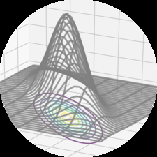
概率，粗略地说，涉及对不确定性的研究。概率可以被视为事件发生的次数分数，或对事件的信念程度。然后我们希望使用这个概率来测量
确定实验中某些事件发生的概率。如第1章所述，我们经常量化数据中的不确定性、machine learning模型中的不确定性，以及模型产生的预测中的不确定性。量化不确定性需要random variable的概念，它是一个将随机实验结果映射到我们感兴趣的一组属性的函数。与random variable相关的是一个函数，用于测量特定结果（或结果集合）发生的概率；这被称为probability distribution。Probability distribution被用作其他概念的构建块，如probabilistic modeling（第[8.4]节）、graphical models（第[8.5]节）和model selection（第[8.6]节）。在下一节中，我们将介绍定义probability space的三个概念（sample space、events和event的probability）以及它们如何与第四个概念random variable相关。这里的介绍有意略显简化，因为过于严格的表述可能会模糊概念背后的直觉。本章所介绍概念的概要如图[6.1]所示。
概率论旨在定义一个数学结构来描述实验的随机结果。例如，在抛掷单枚硬币时，我们无法确定结果，但通过大量抛硬币，我们可以观察到平均结果的规律性。使用概率的这种数学结构，目标是进行自动推理，从这个意义上说，概率概括了逻辑推理[(Jaynes, 2003)]。
在构建自动推理系统时，经典的Boolean logic不允许我们表达某些形式的合理推理。考虑
Mathematics for Machine Learning by Marc Peter Deisenroth, A. Aldo Faisal, and Cheng Soon Ong (2020). https://mml-book.com
图6.1 与random variables和probability distributions相关概念的思维导图，如本章所述。
[Mean] [Variance] [Bayes’ Theorem]
[Summary statistics] [Product rule] [Sum rule] [Regression] [第9章]
[Property]
[Transformations] [Random variable] [Example] [Gaussian] [& distribution]
[Property] [Example] [第[10]章]
[Dimensionality reduction]
[Independence] [Bernoulli]
[Similarity] [Conjugate] [Sufficient statistics]
[Finite] [第[11]章]
[Density estimation]
[Inner product] [Beta]
[Exponential family]
以下场景：我们观察到A是错误的。我们发现B变得不太可信，尽管无法从经典逻辑中得出结论。我们观察到B是真的。似乎A变得更可信了。我们每天都使用这种推理形式。我们在等一个朋友，考虑三种可能性：H1，她准时；H2，她被交通延误了；H3，她被外星人绑架了。当我们观察到朋友迟到时，我们必须从逻辑上排除H1。我们也倾向于认为H2更有可能，尽管我们在逻辑上不需要这样做。最后，我们可能认为H3是可能的，但我们继续认为它相当不可能。我们如何得出H2是最合理答案的结论？以这种方式看，概率论可以被认为是Boolean logic的泛化。在machine learning的背景下，它经常以这种方式应用于形式化自动推理系统的设计。关于概率论如何成为推理系统基础的进一步论据可以在[Pearl (1988)]中找到。
概率的哲学基础以及它应该如何与我们认为应该是真的（在逻辑意义上）相关的问题由Cox[(Jaynes, 2003)]研究。另一种思考方式是，如果我们对常识很精确，我们最终会构建概率。E. T. Jaynes（1922-1998）确定了三个数学标准，必须适用于所有合理性：
“对于合理推理，有必要将离散的真假值扩展到连续的可能性”[(Jaynes, 2003)]
©2023 M. P. Deisenroth, A. A. Faisal, C. S. Ong. Published by Cambridge University Press (2020).
Probability and Distributions
一致性或无矛盾性：当通过不同方式可以达到相同结果时，在所有情况下都必须找到相同的可能性值。
诚实性：必须考虑所有可用数据。
可重现性：如果我们对两个问题的知识状态相同，那么我们必须为它们分配相同的可能性程度。
Cox-Jaynes定理证明这些可能性足以定义适用于可能性p的通用数学规则，直到通过任意单调函数进行变换。至关重要的是，这些规则就是概率规则。
备注。 在machine learning和统计学中，概率有两种主要解释：Bayesian和frequentist解释[(Bishop, 2006; Efron and Hastie, 2016)]。Bayesian解释使用概率
描述事件不确定性程度的能力。它有时被称为”主观概率”或”信念程度”。
频率派解释考虑感兴趣事件相对于发生的事件总数的相对频率。事件的概率被定义为当拥有无限数据时事件的相对频率极限。[♢]
一些关于概率模型的机器学习教科书使用懒惰记号和术语，这令人困惑。本文也不例外。多个不同的概念都被称为”概率分布”，读者必须经常从上下文中理解其含义。帮助理解概率分布的一个技巧是检查我们是否试图建模某些分类的东西（离散随机变量）或某些连续的东西（连续随机变量）。我们在机器学习中处理的问题类型与我们是否考虑分类或连续模型密切相关。
在讨论概率时，有三个不同的概念经常被混淆。首先是概率空间的概念，它允许我们量化概率的概念。然而，我们大多数时候不直接使用这个基本概率空间。相反，我们使用随机变量（第二个概念），它将概率转移到一个更方便（通常是数值）的空间。第三个概念是与随机变量相关的分布或定律的概念。我们将在本节中介绍前两个概念，并在第6.2节中扩展第三个概念。
现代概率基于Kolmogorov提出的一套公理
《机器学习数学》草稿(2023-10-18)。反馈： 6.1 概率空间的构造 175
[(Grinstead and Snell, 1997; Jaynes, 2003)]，引入了样本空间、事件空间和概率测度三个概念。概率空间建模具有随机结果的现实世界过程（称为实验）。
样本空间是实验所有可能结果的集合，通常用Ω表示。例如，连续两次抛硬币的样本空间为{hh, tt, ht, th}，其中”h”表示”正面”，“t”表示”反面”。
事件空间是实验潜在结果的空间。样本空间Ω的子集A在事件空间A中，如果在实验结束时我们可以观察到特定结果ω ∈ Ω是否在A中。事件空间A通过考虑Ω的子集的集合获得，对于离散概率分布（第6.2.1节），A通常是Ω的幂集。
对于每个事件A ∈ A，我们关联一个数字P(A)，它测量事件将发生的概率或信念程度。P(A)被称为A的概率。
单个事件的概率必须在区间[0, 1]内，样本空间Ω中所有结果的总概率必须为1，即P(Ω) = 1。给定概率空间(Ω, A, P)，我们想用它来建模某些现实世界现象。在机器学习中，我们经常避免明确引用概率空间，而是引用感兴趣量的概率，我们用T表示。在本书中，我们将T称为目标空间，将T的元素称为状态。我们引入一个函数X : Ω → T，它取Ω的一个元素（结果）并返回一个特定的感兴趣量x，即T中的一个值。这种从Ω到T的关联/映射被称为随机变量。例如，在抛两枚硬币并计算正面数量的情况下，随机变量X映射到三个可能的结果：X(hh) = 2, X(ht) = 1, X(th) = 1, 和X(tt) = 0。在这个特定情况下，T = {0, 1, 2}，我们感兴趣的是T元素上的概率。对于有限样本空间Ω和有限T，对应于随机变量的函数本质上是一个查找表。对于任何子集S ⊆ T，我们关联PX ∈ [0, 1]（概率）到对应于随机变量X的特定事件发生。例6.1提供了术语的具体说明。
备注。 上述样本空间Ω不幸地在不同书籍中被称为不同的名称。Ω的另一个常见名称是”状态空间”[(Jacod and Protter, 2004)]，但状态空间有时保留用于指代动力系统中的状态[(Hasselblatt and Katok, 2003)]。有时用来描述Ω的其他名称包括：“样本描述空间”、“可能性空间”和”事件空间”。[♢]
我们假设读者已经熟悉计算事件集合的交集和并集的概率。可以在[Walpole et al. (2011)]第2章中找到对概率的更温和介绍，其中包含许多例子。
考虑一个统计实验，我们建模一个游乐场游戏，包括从袋子中抽取两枚硬币（有替换）。袋子里有来自美国（表示为）和英国（表示为£）的硬币，由于我们从袋子中抽取两枚硬币，总共有四种结果。这个实验的状态空间或样本空间Ω是(, ), (, £), (£, $), (£, £)。让我们假设硬币袋的组成是
使得抽取随机返回一个 $ 的概率为 0.3。
我们感兴趣的事件是重复抽取返回 $ 的总次数。让我们定义一个随机变量 X，它将样本空间 Ω 映射到 T，表示我们从袋子中抽取 $ 的次数。从前面的样本空间可以看出，我们可以得到零个 $、一个 $ 或两个 $，因此 T = {0, 1, 2}。随机变量 X（一个函数或查找表）可以表示为如下表格：
X (($, $)) = 2 [(6.1)]
X (($, £)) = 1 [(6.2)]
X ((£, $)) = 1 [(6.3)]
X((£, £)) = 0 . [(6.4)]
由于我们在抽取第二个硬币之前要归还第一个硬币，这意味着两次抽取彼此独立，我们将在第 [6.4.5] 节中讨论这一点。注意有两个实验结果映射到同一个事件，即只有一次抽取返回 $。
因此，X 的概率质量函数（第 [6.2.1] 节）由下式给出：
P (X = 2) = P (($, $))
= P () · P() = 0.3 · 0.3 = 0.09 [(6.5)]
P (X = 1) = P (($, £) ∪ (£, $))
= P (($, £)) + P ((£, $))
= 0.3 · (1 − 0.3) + (1 − 0.3) · 0.3 = 0.42 [(6.6)]
P (X = 0) = P ((£, £))
= P (£) · P(£) = (1 − 0.3) · (1 − 0.3) = 0.49 . [(6.7)]
[《机器学习数学》草稿（2023-10-18）。反馈：] [https://mml-book.com] [6.1 概率空间的构造] [177]
在计算中，我们等同了两个不同的概念：X 输出的概率和 Ω 中样本的概率。例如，在 [(6.7)] 中我们说 P (X = 0) = P ((£, £))。考虑随机变量 X : Ω → T 和子集 S ⊆ T（例如，T 的单个元素，如投掷两枚硬币时获得一个正面的结果）。设 X^(-1)(S) 为 S 在 X 下的原像，即 Ω 中在 X 下映射到 S 的元素集合；{ω ∈ Ω : X(ω) ∈ S}。理解概率从 Ω 中的事件通过随机变量 X 转换的一种方法是将其与 S 的原像的概率关联起来 [(Jacod and Protter, 2004)]。对于 S ⊆ T，我们有记号
P_{X^(-1)}(S) = P(X ∈ S) = P(X(S)) = P({ω ∈ Ω : X(ω) ∈ S}) . (6.8)
[(6.8)] 的左边是我们感兴趣的可能结果集合的概率（例如，$ 的数量 = 1）。通过将状态映射到结果的随机变量 X，我们在 [(6.8)] 的右边看到这是具有该属性的状态集合（在 Ω 中）的概率（例如，£, £）。我们说随机变量 X 根据特定的概率分布 P_X 分布，它定义了事件与随机变量结果概率之间的概率映射。换句话说，函数 P_{X^(-1)} 或等价地 P ◦ X^(-1) 是随机变量 X 的规律或分布。
备注。 目标空间，即随机变量 X 的范围 T，用于表示概率空间的类型，即 T 随机变量。当 T 是有限的或可数无限的时，这被称为离散随机变量（第 [6.2.1] 节）。对于连续随机变量（第 [6.2.2] 节），我们只考虑 T = R 或 T = R^D。♢
概率论和统计学经常一起出现，但它们涉及不确定性的不同方面。对比它们的一种方法是通过所考虑的问题类型。使用概率论，我们可以考虑某个过程的模型，其中潜在的不确定性被随机变量捕获，我们使用概率规则来推导发生的情况。在统计学中，我们观察到某事已经发生，并试图找出解释观察结果的潜在过程。从这个意义上说，机器学习在其构建充分代表生成数据过程的模型的目标方面更接近统计学。我们可以使用概率规则来获得某些数据的”最佳拟合”模型。
机器学习系统的另一个方面是我们对泛化误差感兴趣（见第 [8] 章）。这意味着我们实际上对系统在未来观察到的实例上的性能感兴趣，这些实例与我们迄今为止看到的实例不相同。对未来性能的这种分析依赖于概率和统计学，其中大部分内容超出了本章将要介绍的范围。鼓励感兴趣的读者查看 [Boucheron et al. (2013)] 和 [Shalev-Shwartz and Ben-David (2014)] 的书籍。我们将在第 [8] 章中看到更多关于统计学的内容。
让我们将注意力集中在描述第 [6.1] 节中介绍的事件概率的方法上。根据目标空间是离散的还是连续的，引用分布的自然方式是不同的。当目标空间 T 是离散的时，我们可以指定随机变量 X 取特定值 x ∈ T 的概率，记作 P(X = x)。离散随机变量 X 的表达式 P(X = x) 被称为概率质量函数。当目标空间 T 是连续的，例如实数线 R 时，更自然的是指定随机变量 X 在区间内的概率，对于 a < b，记作 P(a ⩽ X ⩽ b)。按照惯例，我们指定随机变量 X 小于特定值 x 的概率，记作 P(X ⩽ x)。连续随机变量 X 的表达式 P(X ⩽ x) 被称为累积分布函数。我们将在第 [6.2.2] 节中讨论连续随机变量。
我们将重新审视术语并对比离散和连续
随机变量在第6.2.3节中。
备注。 我们将使用单变量分布这一短语来指代单个随机变量的分布（其状态用非粗体x表示）。我们将把超过一个随机变量的分布称为多变量分布，通常会考虑随机变量向量（其状态用粗体x表示）。[♢]
当目标空间是离散的时，我们可以将多个随机变量的概率分布想象为填充一个（多维）数字数组。图6.2展示了一个例子。联合概率的目标空间是每个随机变量目标空间的笛卡尔积。我们将联合概率定义为两个值联合的条目
P(X = x_i, Y = y_j) = n_ij/N, (6.9)
其中n_ij是状态为x_i和y_j的事件数量，N是事件总数。联合概率是两个事件交集的概率，即P(X = x_i, Y = y_j) = P(X = x_i ∩ Y = y_j)。
图6.2说明了离散概率分布的概率质量函数(pmf)。对于两个随机变量X和Y，概率
图6.2 离散双变量概率质量函数的可视化，包含随机变量X和Y。该图改编自Bishop (2006)。
X = x且Y = y的概率（简写为）p(x, y)，称为联合概率。可以将概率视为一个函数，它接受状态x和y并返回一个实数，这就是我们写成p(x, y)的原因。X取值x而不考虑随机变量Y的值的边际概率（简写为）p(x)。我们写X ~ p(x)表示随机变量X按照p(x)分布。如果我们只考虑X = x的实例，那么Y = y的实例比例（条件概率）写成（简写为）p(y | x)。
考虑两个随机变量X和Y，其中X有五个可能状态，Y有三个可能状态，如图6.2所示。我们用n_ij表示状态X = x_i和Y = y_j的事件数量，用N表示事件总数。值c_i是第i列单个频率的和，即c_i = Σ(j=1到3) n_ij。类似地，值r_j是行和，即r_j = Σ(i=1到5) n_ij。使用这些定义，我们可以紧凑地表达X和Y的分布。
每个随机变量的概率分布，即边际概率，可以看作是行或列的和
P(X = x_i) = c_i/N = (Σ(j=1到3) n_ij)/N (6.10)
和
P(Y = y_j) = r_j/N = (Σ(i=1到5) n_ij)/N (6.11)
其中c_i和r_j分别是概率表的第i列和第j行。按照惯例，对于具有有限事件数的离散随机变量，我们假设概率之和为一，即
Σ(i=1到5) P(X = x_i) = 1 且 Σ(j=1到3) P(Y = y_j) = 1. (6.12)
条件概率是特定单元格中行或列的比例。例如，给定X的Y的条件概率是
P(Y = y_j | X = x_i) = n_ij/c_i, (6.13)
给定Y的X的条件概率是
P(X = x_i | Y = y_j) = n_ij/r_j. (6.14)
在机器学习中，我们使用离散概率分布来建模分类变量，即取有限无序值集合的变量。它们可能是分类特征，如预测人员薪资时使用的大学学位，或分类标签，如手写识别中的字母表字母。离散分布也经常用于构建结合有限数量连续分布的概率模型（第11章）。
在本节中我们考虑实值随机变量，即我们考虑实数线R区间的目标空间。在本书中，我们假装可以对实随机变量执行操作，就像我们有具有有限状态的离散概率空间一样。然而，这种简化在两种情况下不够精确：当我们无限次重复某事时，以及当我们想要从区间中抽取一个点时。第一种情况出现在我们讨论机器学习中的泛化误差时（第8章）。第二种情况出现在我们想要讨论连续分布时，如Gaussian（第6.5节）。对于我们的目的，精度的缺乏允许对概率进行更简洁的介绍。
备注。 在连续空间中，还有两个反直觉的技术性问题。首先，所有子集的集合（用于定义第6.1节中的事件空间A）不够良好。A需要被限制为在集合补集、集合交集和集合并集下表现良好。其次，集合的大小（在离散空间中可以通过计算元素获得）变得复杂。集合的大小称为其测度(measure)。例如，离散集合的基数，
[d]维区间在R中的长度，以及R中区域的体积都是测度。在集合运算下表现良好并且具有拓扑结构的集合称为Borel σ-代数。Betancourt详细介绍了从集合论构造概率空间的仔细方法，而不会陷入技术细节；见https://tinyurl.com/yb3t6mfd. 更精确的构造，我们参考[Billingsley (1995)]和[Jacod and Protter][(2004).]
在本书中，我们考虑实值随机变量及其相应的Borel σ-代数。我们将取值在R[D]中的随机变量视为实值随机变量的向量。♢
定义 6.1 (概率密度函数)。函数f : R → R称为概率密度函数(pdf)，如果
∀ x ∈ R : f (x) ⩾ 0
其积分存在且
Z f (x)dx = 1 . (6.15) [R][D]
对于离散随机变量的概率质量函数(pmf)，[(6.15)]中的积分用求和[(6.12)]替代。
观察到概率密度函数是任何非负且积分为1的函数f。我们通过以下方式将随机变量X与此函数f相关联：
Z [b] P (a ⩽ X ⩽ b) = f(x)dx , (6.16) [a]
其中a, b ∈ R，x ∈ R是连续随机变量X的结果。状态x ∈ R通过考虑x ∈ R的向量来类似定义。这种关联[(6.16)]称为随机变量X的律或分布。
注释。 与离散随机变量相比，连续随机变量X取特定值的概率P(X = x)为零。这就像试图在[(6.16)]中指定a = b的区间。♢
定义 6.2 (累积分布函数)。多元实值随机变量X的累积分布函数(cdf)，其状态x ∈ R[D]由下式给出：
FX (x) = P (X1 ⩽ x1, . . . , X[D] ⩽ x[D]) , (6.17)
其中X = [ X1, . . . , X[D] ][⊤]，x = [ x1, . . . , x[D] ][⊤]，右侧表示随机变量X[i]取值小于或等于x[i]的概率。
cdf也可以表示为概率密度函数f(x)的积分，使得
Z x Z [x][D] FX (x) = · · · f (z1, . . . , z[D])dz1 · · · dz[D] . (6.18) [−∞] [−∞]
注释。 我们重申，谈论分布时实际上有两个不同的概念。首先是pdf的概念(用f(x)表示)，它是一个非负函数且积分为1。其次是随机变量X的律，即随机变量X与pdf f(x)的关联。♢
图 6.3 离散和连续均匀分布的示例。详见例6.3。
对于本书的大部分内容，我们不会使用记号f(x)和FX，因为我们通常不需要区分pdf和cdf。但是，在第6.7节中我们需要小心处理pdf和cdf。
回顾第6.1.2节，概率是正的，总概率和为1。对于离散随机变量(见[(6.12)])，这意味着每个状态的概率必须在区间[0, 1]内。但是，对于连续随机变量，归一化(见[(6.15)])并不意味着密度值对于所有值都小于或等于1。我们在图6.3中使用均匀分布来说明离散和连续随机变量的这一点。
例 6.3
我们考虑均匀分布的两个例子，其中每个状态出现的可能性相等。这个例子说明了离散和连续概率分布之间的一些差异。
设Z是具有三个状态{z = -1.1, z = 0.3, z = 1.5}的离散均匀随机变量。概率质量函数可以表示为概率值表：
| z | -1.1 | 0.3 | 1.5 |
|---|---|---|---|
| P(Z = z) | 1/3 | 1/3 | 1/3 |
或者，我们可以将此视为图形(图6.3(a))，其中我们使用状态可以位于x轴上的事实，y轴表示特定状态的概率。图6.3(a)中的y轴故意延长，使其与图6.3(b)相同。
设X是在范围0.9 ⩽ X ⩽ 1.6内取值的连续随机变量，如图6.3(b)所示。观察到
表 6.1 点概率和区间概率的术语
离散 P(X = x) 不适用 概率
概率质量函数 分布
连续 p(x) P(X ⩽ x)
概率密度函数 累积分布函数
密度可以大于1。然而，需要满足
∫[0.9 to 1.6] p(x)dx = 1 . (6.19)
备注。 关于离散概率分布还有一个额外的微妙之处。状态z₁, …, z_d原则上没有任何结构，即通常没有办法比较它们，例如z₁ = 红色，z₂ = 绿色，z₃ = 蓝色。然而，在许多machine learning应用中，离散状态取数值，例如z₁ = -1.1，z₂ = 0.3，z₃ = 1.5，我们可以说z₁ < z₂ < z₃。取数值的离散状态特别有用，因为我们经常考虑随机变量的期望值（第6.4.1节）。♢
不幸的是，machine learning文献使用的记号和术语隐藏了样本空间Ω、目标空间T和随机变量X之间的区别。对于随机变量X可能结果集合的值x，即x ∈ T，p(x)表示随机变量X有结果x的概率。对于离散随机变量，这写作P(X = x)，称为概率质量函数。pmf通常被称为”分布”。对于连续变量，p(x)称为概率密度函数（通常称为密度）。更令人困惑的是，累积分布函数P(X ⩽ x)也经常被称为”分布”。在本章中，我们将使用记号X来指代单变量和多变量随机变量，并分别用x和x表示状态。我们在表6.1中总结了术语。
备注。 我们将使用”概率分布”这个表达不仅用于离散概率质量函数，也用于连续概率密度函数，尽管这在技术上是不正确的。与大多数machine learning文献一致，我们也依赖上下文来区分概率分布这个短语的不同用法。♢
我们将概率论视为逻辑推理的扩展。正如我们在第6.1.1节中讨论的，这里提出的概率规则自然地从满足要求中产生（Jaynes, 2003, 第2章）。概率建模（第8.4节）为设计machine learning方法提供了原理性基础。一旦我们定义了对应于数据和问题不确定性的概率分布（第6.2节），事实证明只有两个基本规则：和规则和积规则。
回忆从(6.9)可知p(x, y)是两个随机变量x, y的联合分布。分布p(x)和p(y)是对应的边际分布，p(y | x)是给定x时y的条件分布。根据第6.2节中离散和连续随机变量的边际和条件概率定义，我们现在可以提出概率论中的两个基本规则。
第一个规则，和规则，表明
p(x) = { ∑[y∈Y] p(x, y) 如果y是离散的 ∫[Y] p(x, y)dy 如果y是连续的 } (6.20)
其中Y是随机变量Y的目标空间的状态。这意味着我们对随机变量Y的状态集合y求和（或积分）。和规则也称为边际化性质。
和规则将联合分布与边际分布联系起来。一般来说，当联合分布包含两个以上随机变量时，和规则可以应用于随机变量的任何子集，产生可能包含多个随机变量的边际分布。更具体地，如果x = [x₁, …, x_D]ᵀ，我们通过重复应用和规则得到边际分布
p(x_i) = ∫ p(x₁, …, x_D)dx(6.21)
其中我们对除x_i之外的所有随机变量进行积分/求和，这由，读作”除i之外的所有”。
备注。 概率建模的许多计算挑战都源于和规则的应用。当有许多变量或有许多状态的离散变量时，和规则归结为执行高维求和或积分。执行高维求和或积分在计算上通常是困难的，即没有已知的多项式时间算法来精确计算它们。♢
第二个规则，称为积规则，通过以下方式将联合分布与条件分布联系起来
p(x, y) = p(y | x)p(x) . (6.22)
积规则可以解释为每个两个随机变量的联合分布都可以因式分解（写成乘积）为两个其他分布的乘积这一事实。两个因子是第一个随机变量的边际分布p(x)，和给定第一个随机变量时第二个随机变量的条件分布p(y | x)。由于随机变量在p(x, y)中的顺序是任意的，积规则也意味着
p(x, y) = p(x | y)p(y)。确切地说，[(6.22)] 是用离散随机变量的概率质量函数表示的。对于连续随机变量，乘积规则用概率
密度函数表示（第 [6.2.3] 节）。
在机器学习和贝叶斯统计中，我们经常对在观察到其他随机变量的情况下对未观察到的（潜在）随机变量进行推断感兴趣。让我们假设我们对未观察到的随机变量 x 有一些先验知识 p(x)，以及 x 和第二个随机变量 y 之间的某种关系 p(y | x)，我们可以观察到 y。如果我们观察到 y，我们可以使用贝叶斯定理根据观察到的 y 值对 x 得出一些结论。贝叶斯定理（也称为 [[Bayes’ theorem]]
贝叶斯规则 或 贝叶斯定律）[[Bayes’ rule]]
[likelihood] [[Bayes’ law] [prior]]
z }| { z }| {
p p(y | x) p(x) ( x | y ) = (6.23) p | {z } ( y )
[posterior] | {z }
[evidence]
是 [(6.22)] 中乘积规则的直接结果，因为
p(x, y) = p(x | y)p(y) (6.24)
并且
p(x, y) = p(y | x)p(x) (6.25)
所以
p p(y | x)p(x) ( x | y ) p ( y ) = p ( y | x ) p ( x ) ⇐⇒ p ( x | y ) = . (6.26) p ( y )
在 [(6.23)] 中，p(x) 是 先验，它封装了我们在观察任何数据之前对未观察到的（潜在）变量 x 的主观先验 [prior] 知识。我们可以选择任何对我们有意义的先验，但确保先验在所有合理的 x 上具有非零 pdf（或 pmf）是至关重要的，即使它们非常罕见。
似然 p(y | x) 描述了 x 和 y 是如何相关的，在 [[likelihood]]
离散概率分布的情况下，如果我们知道潜在变量 [似然] x，它是数据 y 的概率 [[有时也] 。注意似然不是 x 中的]
分布 [[称为] ，而只是 y 中的分布。我们称 p(y | x) 为”x 的似然 [[“测量]]]
（给定 y）“或”给定 x 的 y 的概率”，但从不称为 y 的似然 [模型”.]
[(MacKay, 2003).]
后验 p(x | y) 是贝叶斯统计中感兴趣的量 [posterior]，因为它准确地表达了我们感兴趣的内容，即在观察到 y 后我们对 x 的了解。
[©2023 M. P. Deisenroth, A. A. Faisal, C. S. Ong. Published by Cambridge University Press (2020).]
[[概率和分布]]
量
Z
p(y) := p(y | x)p(x)dx = E[X][p(y | x)] (6.27)
[marginal likelihood] 是 边际似然/证据。[(6.27)] 的右侧使用了
[evidence] [期望算子，我们在第 [6.4.1] 节中定义。根据定义，边际]
似然对 [(6.23)] 的分子关于
潜在变量 x 进行积分。因此，边际似然与
x 无关，它确保后验 p(x | y) 被归一化。边际
似然也可以解释为期望似然，其中我们
相对于先验 p(x) 取期望。除了后验的归一化之外，
边际似然在
贝叶斯模型选择中也起着重要作用，正如我们将在第 [8.6] 节中讨论的。由于
[贝叶斯定理也] [(8.44)] 中的积分，证据通常很难计算。
[称为] [贝叶斯定理 [(6.23)] 允许我们反转似然给出的 x]
[“概率] 和 y 之间的关系。因此，贝叶斯定理有时 [逆.”]]
[概率逆] [称为 概率逆。我们将在]
第 [8.4] 节中进一步讨论贝叶斯定理。
备注。 在贝叶斯统计中，后验分布是感兴趣的量，
因为它封装了来自先验和
数据的所有可用信息。与其携带后验，不如专注于
后验的某些统计量，例如后验的最大值，
我们将在第 [8.3] 节中讨论。然而，专注于后验的某些统计量
会导致信息丢失。如果我们从更大的背景来思考，
那么后验可以在决策系统中使用，
拥有完整的后验可能非常有用，并导致对
干扰具有鲁棒性的决策。例如，在基于模型的强化学习背景下，
[Deisenroth et al. (2015)] 表明使用合理转换函数的完整
后验分布导致非常快速的
（数据/样本高效）学习，而专注于
后验的最大值会导致一致的失败。因此，拥有完整的后验
对于下游任务可能非常有用。在第 9 章中，我们将
在线性回归的背景下继续这个讨论。[♢]
我们经常对汇总随机变量集合和比较
随机变量对感兴趣。随机变量的统计量是该
随机变量的确定性函数。分布的汇总统计提供了随机变量行为的一个有用视图，
顾名思义，提供了汇总和特征化
分布的数字。我们描述均值和方差这两个众所周知的汇总统计。然后我们讨论比较一对
随机变量的两种方法：首先，如何说两个随机变量是独立的；
其次，如何计算它们之间的内积。
[Draft (2023-10-18) of “Mathematics for Machine Learning”. Feedback:] [https://mml-book.com][.] [6.4 汇总统计和独立性]
均值和（协）方差通常用于描述概率分布的性质（期望值和展开）。我们将在第 [6.6] 节中看到有一个有用的分布族（称为指数族），其中随机变量的统计量捕获所有可能的信息。
期望值概念是机器学习的中心概念，概率论本身的基础概念都可以从期望值中推导出来[(Whittle, 2000).]
定义 6.3（期望值）。对于服从分布p(x)的单变量连续随机变量X，函数g : R → R的期望值由下式给出：
Z
E[X][g(x)] = g(x)p(x)dx . (6.28)
相应地，对于服从分布p(x)的离散随机变量X，函数g的期望值由下式给出：
E[X][g(x)] = ∑ g(x)p(x) , (6.29) x∈X
其中X是随机变量X的可能结果集合（目标空间）。
在本节中，我们认为离散随机变量具有数值结果。这可以通过观察函数g以实数作为输入来理解。
备注。 我们将多变量随机变量X视为单变量随机变量的有限向量[X₁, …, X_D]^⊤。对于多变量随机变量，我们按元素定义期望值：
⎡E[X₁][g(x₁)]⎤E[X][g(x)] = ⎢ ⋮ ⎥ ∈ R^D , (6.30) ⎣E[X_D][g(x_D)]⎦
其中下标E[X_d]表示我们对向量x的第d个元素取期望值。♢
定义6.3定义了记号EX的含义，作为操作符表示我们应该对概率密度进行积分（对于连续分布）或对所有状态求和（对于离散分布）。均值的定义（定义6.4）是期望值的特殊情况，通过选择g为恒等函数获得。
定义 6.4（均值）。状态为x_D ∈ R^D的随机变量X的均值是一个平均值，定义为：
⎡E[X₁][x₁]⎤EX = ⎢ ⋮ ⎥ ∈ R^D , (6.31) ⎣E[X_D][x_D]⎦
其中
E[X_d][x_d] := { ∫ x_d p(x_d)dx_d 如果X_d是连续随机变量 ∑ x_i p(x_d = x_i) 如果X_d是离散随机变量 x_i∈X } (6.32)
对于d = 1, …, D，其中下标d表示x的相应维度。积分和求和是对随机变量X目标空间的状态X进行的。
在一维情况下，还有两个其他的直观”平均”概念，即中位数和众数。中位数是排序后的”中间”值，即50%的值大于中位数，50%的值小于中位数。通过考虑累积分布函数(cdf)（定义6.2）为0.5的值，这个概念可以推广到连续值。对于不对称或具有长尾的分布，中位数提供的典型值估计比均值更接近人类直觉。此外，中位数比均值对异常值更鲁棒。中位数向高维的推广是非平凡的，因为在多于一个维度中没有明显的”排序”方法[(Hallin et al., 2010; Kong and Mizera, 2012)]。众数是最频繁出现的值。对于离散随机变量，众数定义为具有最高出现频率的x值。对于连续随机变量，众数定义为密度p(x)中的峰值。特定密度p(x)可能有多个众数，而且在高维分布中可能有非常大量的众数。因此，找到分布的所有众数在计算上可能是具有挑战性的。
例 6.4
考虑图6.4所示的二维分布：
p(x) = 0.4N(x; [1 0]^⊤, [0.8 0; 0 4.2]) + 0.6N(x; [0 0]^⊤, [2.0 0; 0 2.0 1.7]) . (6.33)
我们将在第6.5节中定义高斯分布N(μ, σ²)。还显示了每个维度中相应的边际分布。观察到该分布是双峰的（有两个众数），但其中一个边际分布是单峰的（有一个众数）。水平双峰单变量分布说明了均值和中位数可能彼此不同。虽然将二维中位数定义为每个维度中位数的连接很诱人，但我们无法定义二维点的排序这一事实使其变得困难。当我们说”无法定义排序”时，我们意思是有多种方式定义关系<，使得[3 2]^⊤ < [0 3]^⊤。
图 6.4 二维数据集的均值、众数和中位数的说明，以及其边际密度。
备注。 期望值（定义6.3）是线性算子。例如，给定实值函数f(x) = ag(x) + bh(x)，其中a, b ∈ R且x ∈ R^D，我们得到：
E[X][f(x)] = ∫ f(x)p(x)dx (6.34a) = ∫ [ag(x) + bh(x)]p(x)dx (6.34b) = a∫ g(x)p(x)dx + b∫ h(x)p(x)dx (6.34c) = aE[X][g(x)] + bE[X][h(x)] . (6.34d)
♢
对于两个随机变量，我们可能希望描述它们彼此之间的对应关系。协方差直观地表示随机变量彼此依赖程度的概念。
定义 6.5（协方差（单变量））。两个单变量随机变量 X, Y ∈ R 之间的协方差由它们偏离各自均值的期望乘积给出，即
Cov[X,Y][x, y] := E[X,Y][(x − EX)(y − E[Y][y])] . (6.35)
备注。 当与期望或协方差相关的随机变量从其参数中明确时，下标通常会被省略（例如，EX通常写成Ex）。♢
通过使用期望的线性性质，定义6.5中的表达式可以重写为乘积的期望值减去期望值的乘积，即
Cov[x, y] = E[xy] − ExE[y] . (6.36)
变量与自身的协方差Cov[x, x]称为方差，记为VX。方差的平方根称为标准差，通常记为σ(x)。协方差的概念可以推广到多元随机变量。
定义 6.6（协方差（多元））。如果我们考虑两个多元随机变量X和Y，其状态分别为x ∈ R^D和y ∈ R^E，则X和Y之间的协方差定义为
Cov[x, y] = E[xy^⊤] − ExE[y]^⊤ = Cov[y, x]^⊤ ∈ R^(D×E) . (6.37)
定义6.6可以应用于两个参数中的同一个多元随机变量，这产生了一个有用的概念，它直观地捕获了随机变量的”离散程度”。对于多元随机变量，方差描述了随机变量各个维度之间的关系。
定义 6.7（方差）。具有状态x ∈ R^D和均值向量μ ∈ R^D的随机变量X的方差定义为
VX = Cov[X][x, x] (6.38a)
= E[X][(x − μ)(x − μ)^⊤] = E[X][xx^⊤] − ExEx^⊤ (6.38b)
= [ Cov[x₁, x₁] Cov[x₁, x₂] … Cov[x₁, x_D] Cov[x₂, x₁] Cov[x₂, x₂] … Cov[x₂, x_D] ⋮ ⋮ ⋱ ⋮ Cov[x_D, x₁] … … Cov[x_D, x_D]] . (6.38c)
(6.38c)中的D × D矩阵称为多元随机变量X的协方差矩阵。协方差矩阵是对称且正半定的，它告诉我们数据分布的信息。在其对角线上，协方差矩阵包含边际的方差
图6.5

p(x_i) = ∫ p(x₁, …, x_D)dx_{\i} , (6.39)
其中”\i”表示”除i之外的所有变量”。非对角线项是交叉协方差项Cov[x_i, x_j]，其中i, j = 1, …, D, i ≠ j。
备注。 在本书中，我们通常假设协方差矩阵是正定的，以便更好地建立直觉。因此我们不讨论导致正半定（低秩）协方差矩阵的特殊情况。♢
当我们想要比较不同随机变量对之间的协方差时，发现每个随机变量的方差会影响协方差的值。协方差的标准化版本称为相关系数。
定义 6.8（相关系数）。两个随机变量X, Y之间的相关系数由下式给出
corr[x, y] = Cov[x, y] / √(VxV[y]) ∈ [-1, 1] . (6.40)
相关矩阵是标准化随机变量x/σ(x)的协方差矩阵。换句话说，在相关矩阵中，每个随机变量都除以其标准差（方差的平方根）。
协方差（和相关系数）表明两个随机变量是如何相关的；见图6.5。正相关corr[x, y]意味着当x增长时，y也期望增长。负相关意味着当x增加时，y减少。
第6.4.1节中的定义通常也称为总体均值和协方差，因为它指的是总体的真实统计量。在机器学习中，我们需要从数据的经验观察中学习。考虑一个随机变量X。从总体统计到经验统计实现有两个概念步骤。首先，我们利用有限数据集（大小为N）这一事实，构造一个有限数量相同随机变量X₁, …, X_N的函数的经验统计量。其次，我们观察数据，即查看每个随机变量的实现x₁, …, x_N并应用经验统计量。
具体来说，对于均值（定义6.4），给定特定数据集，我们可以获得均值的估计，称为经验均值或样本均值。经验协方差也是如此。
定义 6.9（经验均值和协方差）。 经验均值向量是每个变量观测值的算术平均，定义为
$$\bar{\mathbf{x}} := \frac{1}{N} \sum_{n=1}^{N} \mathbf{x}_n, \quad (6.41)$$
其中 xn ∈ ℝD。
与经验均值类似，经验协方差矩阵是一个 D × D 矩阵
$$\boldsymbol{\Sigma} := \frac{1}{N} \sum_{n=1}^{N} (\mathbf{x}_n - \bar{\mathbf{x}})(\mathbf{x}_n - \bar{\mathbf{x}})^{\top}. \quad (6.42)$$
为了计算特定数据集的统计量，我们使用实现值（观测值）x1, …, xN 并使用公式 (6.41) 和 (6.42)。经验协方差矩阵是对称的、正半定的（见第 3.2.3 节）。
现在我们专注于单个随机变量 X，并使用前面的经验公式推导方差的三种可能表达式。以下推导对于总体方差是相同的，只是我们需要处理积分。方差的标准定义对应于协方差的定义（定义 6.5），是随机变量 X 与其期望值 μ 的平方偏差的期望，即
𝕍[X] := 𝔼[(X − μ)2]. (6.43)
公式 (6.43) 中的期望和均值 μ = 𝔼[X] 使用公式 (6.32) 计算，取决于 X 是离散还是连续随机变量。公式 (6.43) 表示的方差是新随机变量 Z := (X − μ)2 的均值。
当经验估计公式 (6.43) 中的方差时，我们需要使用双遍算法：第一遍遍历数据使用公式 (6.41) 计算均值 μ，然后第二遍使用这个估计值 μ̂ 计算方差。结果表明，我们可以通过重新排列项来避免两次遍历。公式 (6.43) 可以转换为所谓的原始分数方差公式：
𝕍[X] = 𝔼[X2] − (𝔼[X])2. (6.44)
公式 (6.44) 中的表达式可以记忆为”平方的均值减去均值的平方”。它可以在一次数据遍历中经验计算，因为我们可以同时累积 xi（计算均值）和 xi2，其中 xi 是第 i 个观测值。不幸的是，如果以这种方式实现，它可能在数值上不稳定。方差的原始分数版本在机器学习中很有用，例如，在推导偏差-方差分解时（Bishop, 2006）。
理解方差的第三种方式是它是所有观测值对之间成对差异的和。考虑随机变量 X 的实现样本 x1, …, xN，我们计算 xi 和 xj 对之间的平方差。通过展开平方，我们可以证明 N2 个成对差异的和是观测值的经验方差：
$$\frac{1}{N^2} \sum_{i,j=1}^{N} (x_i - x_j)^2 = \frac{2}{N} \sum_{i=1}^{N} x_i^2 - \frac{2}{N^2} \left(\sum_{i=1}^{N} x_i\right)^2. \quad (6.45)$$
我们看到公式 (6.45) 是原始分数表达式 (6.44) 的两倍。这意味着我们可以将成对距离的和（其中有 N2 个）表示为与均值的偏差和（其中有 N 个）。几何上，这意味着成对距离和点集中心的距离之间存在等价性。从计算角度来看，这意味着通过计算均值（求和中的 N 项），然后计算方差（求和中又是 N 项），我们可以得到一个有 N2 项的表达式（公式 (6.45) 的左边）。
我们可能想要建模一种无法用教科书分布很好解释的现象（我们将在第 6.5 节和 6.6 节介绍一些），因此可能对随机变量进行简单操作（如两个随机变量相加）。
考虑两个随机变量 X, Y，状态为 x, y ∈ ℝD。那么：
𝔼[x + y] = 𝔼[x] + 𝔼[y] (6.46)
𝔼[x − y] = 𝔼[x] − 𝔼[y] (6.47)
𝕍[x + y] = 𝕍[x] + 𝕍[y] + Cov[x, y] + Cov[y, x] (6.48)
𝕍[x − y] = 𝕍[x] + 𝕍[y] − Cov[x, y] − Cov[y, x]. (6.49)
当涉及随机变量的仿射变换时，均值和（协）方差表现出一些有用的性质。考虑一个随机变量 X，均值为 μ，协方差矩阵为 Σ，以及 x 的（确定性）仿射变换 y = Ax + b。那么 y 本身是一个随机变量，其均值向量和协方差矩阵分别为
𝔼[Y] = 𝔼[Ax + b] = A𝔼[x] + b = Aμ + b, (6.50)
𝕍[Y] = 𝕍[Ax + b] = 𝕍[Ax] = A𝕍[x]A⊤ = AΣA⊤. (6.51)
此外，
Cov[x, y] = 𝔼[x(Ax + b)⊤] − 𝔼[x]𝔼[(Ax + b)⊤] (6.52a)
= 𝔼[x]b⊤ + 𝔼[xx⊤]A⊤ − μb⊤ − μμ⊤A⊤ (6.52b)
= μb⊤ − μb⊤ + (𝔼[xx⊤] − μμ⊤)A⊤ (6.52c)
= ΣA⊤. (6.52d)
其中 Σ = E[xx⊤] − µµ⊤ 是 X 的协方差。
定义 6.10（独立性）。两个随机变量 X, Y 是统计独立的，当且仅当
p(x, y) = p(x)p(y) . (6.53)
直观地说，两个随机变量 X 和 Y 是独立的，如果 y 的值（一旦已知）不会提供关于 x 的任何额外信息（反之亦然）。如果 X, Y 是（统计）独立的，那么
p(y | x) = p(y) p(x | y) = p(x) V[x + y] = Vx + V[y] Cov[x, y] = 0
最后一点的逆命题可能不成立，即两个随机变量可以具有零协方差但不是统计独立的。要理解原因，回想协方差只衡量线性依赖关系。因此，非线性依赖的随机变量可能具有零协方差。
考虑一个零均值的随机变量 X（Ex = 0）并且 E[x³] = 0。设 y = x²（因此，Y 依赖于 X）并考虑 X 和 Y 之间的协方差 (6.36)。但这给出
Cov[x, y] = E[xy] − ExE[y] = E[x³] = 0 . (6.54)
在机器学习中，我们经常考虑可以建模为独立同分布 (i.i.d.) 随机变量的问题，X₁, . . . , Xₙ。对于两个以上的随机变量，“独立”一词（定义 6.10）通常指相互独立的随机变量，其中所有子集都是独立的（参见 Pollard (2002, 第4章) 和 Jacod and Protter (2004, 第3章)）。短语”同分布”意味着所有随机变量都来自同一分布。
在机器学习中另一个重要的概念是条件独立性。
两个随机变量 X 和 Y 在给定 Z 的条件下条件独立，当且仅当
p(x, y | z) = p(x | z)p(y | z) 对于所有 z ∈ Z , (6.55)
其中 Z 是随机变量 Z 的状态集合。我们写 X ⊥⊥ Y | Z 来表示 X 在给定 Z 的条件下独立于 Y。
定义 6.11 要求关系式 (6.55) 必须对 z 的每个值都成立。(6.55) 的解释可以理解为”给定关于 z 的知识，x 和 y 的分布可以因式分解”。如果我们写 X ⊥⊥ Y | ∅，独立性可以看作条件独立性的特殊情况。通过使用概率的乘积法则 (6.22)，我们可以展开 (6.55) 的左边得到
p(x, y | z) = p(x | y, z)p(y | z) . (6.56)
通过比较 (6.55) 的右边与 (6.56)，我们看到 p(y | z) 出现在两者中，所以
p(x | y, z) = p(x | z) . (6.57)
方程 (6.57) 提供了条件独立性的另一种定义，即 X ⊥⊥ Y | Z。这种替代表示提供了解释”给定我们知道 z，关于 y 的知识不会改变我们对 x 的知识”。
回顾第 3.2 节中内积的定义。我们可以定义随机变量之间的内积，我们在本节中简要描述。如果我们有两个不相关的随机变量 X, Y，那么
V[x + y] = Vx + V[y] . (6.58)
由于方差以平方单位测量，这看起来非常像直角三角形的勾股定理 c² = a² + b²。
在下面，我们看看是否可以找到 (6.58) 中不相关随机变量方差关系的几何解释。
图 6.6 随机变量的几何。如果随机变量 X 和 Y 不相关，它们是相应向量空间中的正交向量，勾股定理适用。
随机变量可以被视为向量空间中的向量，我们可以定义内积来获得随机变量的几何性质 (Eaton, 2007)。如果我们定义
⟨X, Y⟩ := Cov[x, y] (6.59)
对于零均值随机变量 X 和 Y，我们得到一个内积。我们看到协方差是对称的、正定的，并且在任一变量中都是线性的。随机变量的长度是
∥X∥ = √Cov[x, x] = √Vx = σₓ , (6.60)
即其标准差。随机变量越”长”，它就越不确定；长度为 0 的随机变量是确定性的。
如果我们查看两个随机变量 X, Y 之间的角度 θ，我们得到
cos θ = ⟨X, Y⟩/(∥X∥∥Y∥) = Cov[x, y]/√(VxV[y]) , (6.61)
这是两个随机变量之间的相关性（定义 6.8）。这意味着当我们从几何角度考虑时，我们可以将相关性视为两个随机变量之间角度的余弦。我们从定义 3.7 知道 X ⊥ Y ⇐⇒ ⟨X, Y⟩ = 0。在我们的情况下，这意味着 X 和 Y 正交当且仅当 Cov[x, y] = 0，即它们不相关。图 6.6 说明了这种关系。
备注。 虽然使用欧几里得距离（构造
图6.7
两个随机变量 x₁ 和 x₂ 的 Gaussian 分布。
从前面关于内积的定义）来比较概率分布，遗憾的是这并不是获得分布间距离的最佳方法。回想一下，概率质量（或密度）是正的，并且需要加和为1。这些约束意味着分布存在于称为统计流形的东西上。对这个概率分布空间的研究称为信息几何。计算分布间的距离通常使用Kullback-Leibler散度，这是考虑统计流形性质的距离的泛化。正如Euclidean距离是度量的特例（第3.3节），Kullback-Leibler散度是两个更一般的散度类别的特例，称为Bregman散度和f-散度。散度的研究超出了本书的范围，我们推荐读者参考信息几何领域创始人之一Amari (2016)的最新著作获取更多细节。♢
Gaussian分布是连续值随机变量最被广泛研究的概率分布。它也被称为正态分布。其重要性源于它具有许多计算上便利的性质，我们将在下文中讨论这些性质。特别地，我们将使用它来定义线性回归的似然和先验（第9章），并考虑Gaussian混合用于密度估计（第11章）。
机器学习的许多其他领域也受益于使用Gaussian分布，例如Gaussian过程、变分推理和强化学习。它在其他应用领域也被广泛使用，如信号处理（例如Kalman滤波器）、控制（例如线性二次调节器）和统计学（例如假设检验）。
当我们考虑独立且同分布的随机变量的和时，Gaussian分布自然出现。这被称为中心极限定理(Grinstead and Snell, 1997)。
图6.8
Gaussian分布叠加100个样本。(a) 一维情况；(b) 二维情况。
单变量（一维）Gaussian；红十字表示均值，红线表示方差的范围。
多变量（二维）Gaussian，从顶部查看。红十字表示均值，彩色线表示密度的等高线。
对于单变量随机变量，Gaussian分布的密度由下式给出
p(x | µ, σ²) = 1/(√(2πσ²)) exp(-(x-µ)²/(2σ²)) (6.62)
多变量Gaussian分布完全由均值向量µ和协方差矩阵Σ特征化，定义为
p(x | µ, Σ) = (2π)(-D/2)|Σ|(-1/2) exp(-1/2(x-µ)ᵀΣ⁻¹(x-µ)) (6.63)
其中 x ∈ R^D。我们写作 p(x) = N(x | µ, Σ) 或 X ~ N(µ, Σ)。图6.7显示了二元Gaussian（网格），及其相应的等高线图。图6.8显示了单变量Gaussian和二元Gaussian及相应的样本。Gaussian的特例是零均值和单位协方差，即µ = 0和Σ = I，被称为标准正态分布。
Gaussian在统计估计和机器学习中被广泛使用，因为它们对边际和条件分布具有闭式表达式。在第9章中，我们将广泛使用这些闭式表达式进行线性回归。使用Gaussian随机变量建模的主要优势是通常不需要变量变换（第6.7节）。由于Gaussian分布完全由其均值和协方差指定，我们通常可以通过将变换应用于随机变量的均值和协方差来获得变换后的分布。
在下文中，我们展示多变量随机变量一般情况下的边际化和条件化。如果初次阅读时感到困惑，建议读者考虑两个单变量随机变量。设X和Y是两个多变量随机变量，可能具有不同的维度。为了考虑应用概率的和规则和条件化的效果，我们明确地用连接状态[xᵀ, yᵀ]来写Gaussian分布，
p(x, y) = N([µₓ/µᵧ], [Σₓₓ Σₓᵧ/Σᵧₓ Σᵧᵧ]) (6.64)
其中 Σ[xx] = Cov[x, x] 和 Σ[yy] = Cov[y, y] 分别是 x 和 y 的边际协方差矩阵，Σ[xy] = Cov[x, y] 是 x 和 y 之间的交叉协方差矩阵。
条件分布 p(x | y) 也是 Gaussian 分布（如图 6.9(c) 所示），由下式给出（在 [Bishop, 2006] 第 2.3 节中推导）：
p ( x | y ) = N µ , Σ (6.65) x [|] [y] x [|][y]
µ − = µ + Σ Σ (6.66) ( y − µ ) x [|] [y] x [xy] [yy] [y]
Σ − = Σ − Σ ΣΣ . (6.67) x [|] [y] [xx] [xy] [yy] [yx]
注意，在 (6.66) 中均值的计算中，y 值是一个观测值，不再是随机的。
注释. 条件 Gaussian 分布出现在许多地方，我们对后验分布感兴趣：
Kalman filter [(Kalman, 1960)] 是信号处理中状态估计最核心的算法之一，它只是计算联合分布的 Gaussian 条件分布 [(Deisenroth and Ohlsson, 2011; S¨ arkk¨ a, 2013)]。
Gaussian processes [(Rasmussen and Williams, 2006)] 是函数分布的实际实现。在 Gaussian process 中，我们假设随机变量的联合 Gaussianity。通过对观测数据的（Gaussian）条件化，我们可以确定函数的后验分布。
潜在线性 Gaussian 模型 [(Roweis and Ghahramani, 1999; Murphy, 2012)] 包括概率主成分分析 (PPCA) [(Tipping and Bishop, 1999)]。我们将在第 10.7 节中更详细地研究 PPCA。
♢
联合 Gaussian 分布 p(x, y)（见 (6.64)）的边际分布 p(x) 本身是 Gaussian 的，通过应用求和法则 (6.20) 计算，由下式给出：
∫ p ( x ) = p ( x , y )d y = N x | µ , Σ . (6.68) x [xx]
相应的结果对 p(y) 也成立，通过对 x 积分得到。直观地说，查看 (6.64) 中的联合分布，我们忽略（即积分掉）我们不感兴趣的所有内容。这在图 6.9(b) 中有所说明。
[©2023 M. P. Deisenroth, A. A. Faisal, C. S. Ong. Published by Cambridge University Press (2020).]
[200] [Probability and Distributions]
例 6.6
[图 6.9] [(a) 二元] [8] [Gaussian；] 6 [(b) 联合] [4] [Gaussian 分布的] [边际是] [2] [2] x [Gaussian；[(c)] 的] [0] [x][2] [=] − [条件分布] [2] [−] [Gaussian 也是] [Gaussian。] [−][4] − [0] 1 x
[(a) 二元 Gaussian。]
[p][(]x [1][.][2] [p][(]x |[2] [=] [−][1)] 1 [)] [0][.]6 1 [均值] [均值] [.] [0] [2] [2][σ] [σ] [0][.][8] [0][.][4] [0][.]6 [0][.][4] [0][.][2] [0][.][2] [0][.][0] [0][.][0] −[.][5] −[.][0] [−][0][.][5] [0][.][0] [0][.][5] [1][.][0] [1][.][5] −[.][5] −[.][0] [−][0][.][5] [0][.][0] [0][.][5] [1][.][0] [1][.][5] x x
[(b) 边际分布。] [(c) 条件分布。]
考虑二元 Gaussian 分布（如图 6.9 所示）：
p (x1, x[2]) = N , . (6.69) 2 0 0 . 3 − 1 −1 5
我们可以通过应用 (6.66) 和 (6.67) 分别获得均值和方差，从而计算在 x[2] = −1 条件下的单变量 Gaussian 参数。数值上，这是：
µx |[2][=]− = 0 + (−1) · 0.2 · (−1 − 2) = 0.6 (6.70)
和
σ [2] = 0.3 − (−1) · 0.2 · (−1) = 0.1 . (6.71) x |[2][=]−
因此，条件 Gaussian 由下式给出：
p ( x | x = − 1) = N 0 . 6 , 0 . 1 . (6.72) 1 [2]
相比之下，边际分布 p (x1) 可以通过应用 (6.68) 获得，本质上是使用随机变量 x1 的均值和方差，给出我们：
p ( x ) = N 0 , 0 . 3 . (6.73) 1
[Draft (2023-10-18) of “Mathematics for Machine Learning”. Feedback:] [https://mml-book.com] [6.5 Gaussian Distribution] [201]
对于线性回归（第 9 章），我们需要计算 Gaussian likelihood。此外，我们可能希望假设 Gaussian 先验（第 9.3 节）。我们应用 Bayes 定理来计算后验，这导致 likelihood 和先验的乘法，即两个 Gaussian 密度的乘法。两个 Gaussian N x | a , A N x | b , B [推导是] 的乘积是一个按 [ [本章末尾的] c ∈ R 缩放的 Gaussian 分布，由 c N x | c , C 给出，其中] [练习。]
[D] 1 c [−] [−] 1 [⊤] − = (2 π ) | A + B | exp − ( a ) A + ) a − b ( B ( − b ) . (6.76) [2] [2] [2]
缩放常数 c 本身可以写成 a 或 b 中的 Gaussian 密度形式，具有”膨胀”的协方差矩阵 A + B，即 c = N a | b , A + B = N b | a , A + B。
注释. 为了符号方便，我们有时会使用 N x | m , S 来描述 Gaussian 密度的函数形式，即使 x 不是随机变量。我们在前面的演示中就是这样做的，当我们写：
c = N a | b , A + B = N b | a , A + B . (6.77)
这里，a 和 b 都不是随机变量。然而，以这种方式写 c 比 (6.76) 更紧凑。♢
如果 X, Y 是独立的 Gaussian 随机变量（即联合分布由 p ( x , y ) = p ( x ) p ( y ) 给出），其中 p ( x ) = N x | µ , Σ 和 x x
p ( y ) = N y | µ , Σ，那么 x + y 也是 Gaussian 分布的，由下式给出： [y] [y]
p ( x + y ) = N µ + µ , Σ + Σ . (6.78) x [y] x [y]
知道 p(x + y) 是 Gaussian 的，均值和协方差矩阵可以使用 (6.46) 到 (6.49) 的结果立即确定。当我们考虑作用于随机变量的 i.i.d. Gaussian 噪声时，这个性质将很重要，如线性回归的情况（第 9 章）。
例 6.7
由于期望是线性运算，我们可以得到独立高斯随机变量的加权和
p(ax + by) = N(aμₓ + bμᵧ, a²Σₓ + b²Σᵧ) (6.79)
[©2023 M. P. Deisenroth, A. A. Faisal, C. S. Ong. Published by Cambridge University Press (2020).]
[202] [[概率与分布]]
注记. 在第11章中有用的一个情况是高斯密度的加权和。这与高斯随机变量的加权和不同。[♢]
在定理6.12中，随机变量x来自一个密度，该密度是两个密度p₁(x)和p₂(x)的混合，由α加权。该定理可以推广到多元随机变量的情况，因为期望的线性性也适用于多元随机变量。然而，平方随机变量的概念需要被x⊤x替代。
定理 6.12. 考虑两个单变量高斯密度的混合
p(x) = αp₁(x) + (1 - α)p₂(x), (6.80)
其中标量 0 < α < 1 是混合权重， p₁(x) 和 p₂(x) 是具有不同参数的单变量高斯密度（方程 (6.62)），即 (μ₁, σ₁²) ≠ (μ₂, σ₂²)。
那么混合密度 p(x) 的均值由每个随机变量均值的加权和给出：
Ex = αμ₁ + (1 - α)μ₂. (6.81)
混合密度 p(x) 的方差由以下给出
Vx = ασ₁² + (1 - α)σ₂² + α(1 - α)[μ₁ - μ₂]². (6.82)
证明 混合密度p(x)的均值由每个随机变量均值的加权和给出。我们应用均值的定义（定义6.4），并代入我们的混合(6.80)，得到
Ex = ∫₋∞^∞ xp(x)dx (6.83a) = ∫₋∞^∞ (αxp₁(x) + (1 - α)xp₂(x))dx (6.83b) = α∫₋∞^∞ xp₁(x)dx + (1 - α)∫₋∞^∞ xp₂(x)dx (6.83c) = αμ₁ + (1 - α)μ₂. (6.83d)
为了计算方差，我们可以使用方差的原始分数版本(6.44)，这需要平方随机变量的期望表达式。这里我们使用随机变量函数（平方）的期望定义（定义6.3），
E[x²] = ∫₋∞^∞ x²p(x)dx (6.84a) = ∫₋∞^∞ (αx²p₁(x) + (1 - α)x²p₂(x))dx (6.84b)
[Draft (2023-10-18) of “Mathematics for Machine Learning”. Feedback:] [https://mml-book.com.] [6.5 高斯分布] [203]
= α∫₋∞^∞ x²p₁(x)dx + (1 - α)∫₋∞^∞ x²p₂(x)dx (6.84c)
= α(μ₁² + σ₁²) + (1 - α)(μ₂² + σ₂²), (6.84d)其中在最后的等式中，我们再次使用了方差的原始分数版本(6.44)，给出σ² = E[x²] - μ²。这被重新整理，使得平方随机变量的期望是平方均值和方差的和。
因此，方差由(6.84d)减去(6.83d)给出，
Vx = E[x²] - (Ex)² (6.85a) = α(μ₁² + σ₁²) + (1 - α)(μ₂² + σ₂²) - (αμ₁ + (1 - α)μ₂)² (6.85b) = ασ₁² + (1 - α)σ₂² + αμ₁² + (1 - α)μ₂² - [αμ₁ + (1 - α)μ₂]². (6.85c)
注记. 前面的推导对任何密度都成立，但由于高斯分布完全由均值和方差确定，混合密度可以以封闭形式确定。♢
对于混合密度，各个成分可以被视为条件分布（以成分身份为条件）。
方程(6.85c)是条件方差公式的一个例子，也称为全方差定律，它一般陈述对于两个随机变量X和Y，有Vx = E_Y[V_X[x|y]] + V_Y[E_X[x|y]]，即X的（总）方差是期望条件方差加上条件均值的方差。
我们在例6.17中考虑了一个二元标准高斯随机变量X，并对其执行线性变换Ax。结果是一个均值为零、协方差为AA⊤的高斯随机变量。观察到添加一个常数向量将改变分布的均值，而不影响其方差，即随机变量x + μ是均值为μ、协方差为单位矩阵的高斯分布。因此，高斯随机变量的任何线性/仿射变换都是高斯分布的。
考虑一个高斯分布的随机变量X ~ N(μ, Σ)。对于给定的适当形状的矩阵A，设Y是一个随机变量，使得y = Ax是x的变换版本。我们可以通过利用期望是线性算子(6.50)来计算y的均值：
E[y] = E[Ax] = AEx = Aμ. (6.86)
类似地，y的方差可以通过使用(6.51)找到：
V[y] = V[Ax] = AVxA⊤ = AΣA⊤. (6.87)
这意味着随机变量y按照以下分布：
p(y) = N(y|Aμ, AΣA⊤). (6.88)
[©2023 M. P. Deisenroth, A. A. Faisal, C. S. Ong. Published by Cambridge University Press (2020).]
[204] [[概率与分布]]
现在让我们考虑逆变换：当我们知道一个随机变量的均值是另一个随机变量的线性变换时。对于给定的满秩矩阵A ∈ R^(M×N)，其中M ≥ N，设y ∈ R^M是一个高斯随机变量，均值为Ax，即
p(y) = N(y|Ax, Σ). (6.89)
相应的概率分布p(x)是什么？如果A是可逆的，那么我们可以写x = A⁻¹y并应用前一段中的变换。然而，一般来说A不可逆，我们使用
一种类似于伪逆的方法[(3.57)。]也就是说，我们将两边同时左乘以[⊤][⊤]A，然后求逆AA，它是对称且正定的，给出关系式
y[⊤][−][1][⊤] = Ax ⇐⇒ (A A)Ay = x . (6.90)
因此，x是y的线性变换，我们得到
p[⊤][−][1][⊤][⊤][−][1][⊤][⊤][−]1 = N x | (A A)A y , (A A)A Σ A (A A) . (6.91)
我们不会解释在计算机上随机采样的细节，感兴趣的读者可以参考[Gentle (2004)。]对于多元Gaussian，这个过程包含三个阶段：首先，我们需要一个伪随机数源，在区间[0,1]内提供均匀采样；其次，我们使用非线性变换，如Box-Müller变换[(Devroye, 1986)]来获得单变量Gaussian的样本；第三，我们将这些样本的向量组合起来，获得多元标准正态分布N 0 , I的样本。
对于一般的多元Gaussian，即均值非零且协方差不是单位矩阵的情况，我们使用Gaussian随机变量线性变换的性质。假设我们想要从具有均值µ和协方差矩阵Σ的多元[为了计算]Gaussian分布中生成样本x[i], i = 1, . . . , n。我们希望[Cholesky][从提供多元标准正态分布N 0 , I样本的采样器构造样本。][分解]
[矩阵，需要] [矩阵是]为了从多元正态分布N µ, Σ获得样本，我们可以使用[对称且][Gaussian随机变量线性变换的性质：]
[正定的] [(第3.2.3节)。]如果x ∼ N 0 , I，那么y = Ax + µ，其中AA⊤ = Σ服从Gaussian分布，均值为µ，协方差矩阵为Σ。A的一个方便选择[协方差矩阵][具有这一]是使用协方差矩阵Σ = AA⊤的Cholesky分解(第4.3节)。Cholesky分解的好处是A是[性质。]三角矩阵，计算效率高。
统计学教科书中许多”有名称的”概率分布都是为了建模特定类型的现象而发现的。例如，我们在第6.5节看到了Gaussian分布。这些分布之间也以复杂的方式相互关联[(Leemis and McQueston, 2008)。]对于该领域的初学者来说，弄清楚使用哪种分布可能会让人不知所措。此外，许多这些分布是在统计和计算需要纸笔完成的时代发现的。自然要问的是，在计算时代什么是有意义的概念[(Efron and Hastie, 2016)。]在前一节中，我们看到当分布是Gaussian时，推理所需的许多操作都可以方便地计算。此时值得回顾一下在机器学习背景下操作概率分布的期望条件：
在应用概率规则(如Bayes定理)时存在某种”封闭性质”。封闭性是指应用特定操作返回相同类型的对象。
随着我们收集更多数据，我们不需要更多参数来描述分布。
由于我们对从数据中学习感兴趣，我们希望参数估计表现良好。
事实证明，称为指数族的分布类提供了一般性的正确平衡，同时保持了有利的计算和推理性质。在我们介绍指数族之前，让我们看看”命名”概率分布的另外三个成员：Bernoulli分布(例6.8)、Binomial分布(例6.9)和Beta分布(例6.10)。
Bernoulli分布是单个二元随机变量X的分布，状态x ∈ {0, 1}。它由单个连续参数µ ∈ [0, 1]控制，表示X = 1的概率。Bernoulli分布Ber(µ)定义为
p(x | µ) = µ^x (1 − µ)^(1−x), x ∈ {0, 1}, (6.92)
Ex = µ, (6.93)
Vx = µ(1 − µ), (6.94)
Bernoulli分布可以使用的一个例子是当我们想要建模抛硬币时”正面”的概率。

注释。上面Bernoulli分布的重写，其中我们将布尔变量作为数值0或1使用并在指数中表达它们，是机器学习教科书中经常使用的技巧。另一个出现这种情况的例子是表达Multinomial分布。♢
Binomial分布是Bernoulli分布对整数分布的推广(如图6.10所示)。特别地，
Binomial分布可以用来描述在来自Bernoulli分布的N个样本集合中观察到m次X = 1的概率，其中p(X = 1) = µ ∈ [0, 1]。Binomial分布Bin(N, µ)定义为
!
p(m | N, µ) = (N choose m) µ^m (1 − µ)^(N−m) , (6.95)
E[m] = Nµ , (6.96)
V[m] = Nµ(1 − µ) , (6.97)
其中E[m]和V[m]分别是m的均值和方差。
一个可以使用Binomial分布的例子是，如果我们想要描述在N次抛硬币实验中观察到m次”正面”的概率，其中单次实验中观察到正面的概率是µ。
例6.10 (Beta分布)
我们可能希望对有限区间上的连续随机变量建模。Beta分布是连续随机变量µ ∈ [0, 1]上的分布，通常用来表示某些二元事件的概率（例如，控制Bernoulli分布的参数）。Beta分布Beta(α, β)（如图6.11所示）本身由两个参数α > 0, β > 0控制，定义为
p(µ | α, β) = (Γ(α + β))/(Γ(α)Γ(β)) µ^(α−1) (1 − µ)^(β−1) (6.98)
E[µ] = α/(α + β) , V[µ] = αβ/((α + β)^2 (α + β + 1)) (6.99)
其中Γ(·)是Gamma函数，定义为
Γ(t) := ∫₀^∞ x^(t−1) exp(−x)dx, t > 0 . (6.100)
Γ(t + 1) = tΓ(t) . (6.101)
注意(6.98)中Gamma函数的分数使Beta分布标准化。
图6.11
直觉上，α将概率质量向1移动，而β将概率质量向0移动。有一些特殊情况：
备注. 有很多有名字的分布，它们以不同方式相互关联。值得记住的是，每个命名分布都是为特定原因而创建的，但可能有其他应用。了解特定分布创建背后的原因通常能够洞察如何最好地使用它。我们介绍前面三个分布是为了能够说明共轭性（第6.6.1节）和指数族（第6.6.3节）的概念。
根据Bayes定理(6.23)，后验与先验和似然的乘积成正比。先验的设定可能因为两个原因而棘手：首先，先验应该封装我们在看到任何数据之前对问题的知识。这通常很难描述。其次，通常无法解析地计算后验分布。然而，有一些在计算上便利的先验：共轭先验。
定义6.13（共轭先验）。 如果后验与先验具有相同的形式/类型，则先验对于似然函数是共轭的。
共轭性特别方便，因为我们可以通过更新先验分布的参数来代数地计算后验分布。
备注. 当考虑概率分布的几何时，共轭先验保持与似然相同的距离结构。
为了介绍共轭先验的具体例子，我们在例6.11中描述Binomial分布（定义在离散随机变量上）和Beta分布（定义在连续随机变量上）。
例6.11 (Beta-Binomial共轭性)
考虑一个Binomial随机变量x ∼ Bin(N, µ)，其中
p(x | N, µ) = (N choose x) µ^x (1 − µ)^(N−x) , x = 0, 1, . . . , N , (6.102)
是在N次抛硬币中找到x次”正面”结果的概率，其中µ是”正面”的概率。我们对参数µ设置Beta先验，即µ ∼ Beta(α, β)，其中
p(µ | α, β) = (Γ(α + β))/(Γ(α)Γ(β)) µ^(α−1) (1 − µ)^(β−1) . (6.103)
如果我们现在观察到某个结果x = h，即我们在N次抛硬币中看到h次正面，我们计算µ上的后验分布为
p(µ | x = h, N, α, β) ∝ p(x | N, µ)p(µ | α, β) (6.104a)
∝ µ^h (1 − µ)^(N−h) µ^(α−1) (1 − µ)^(β−1) (6.104b)
= µ^(h+α−1) (1 − µ)^((N−h)+β−1) (6.104c)
表6.2 常见似然函数的共轭先验示例
| 似然 | 共轭先验 | 后验 |
|---|---|---|
| Bernoulli | Beta | Beta |
| Binomial | Beta | Beta |
| Gaussian | Gaussian/inverse Gamma | Gaussian/inverse Gamma |
| Gaussian | Gaussian/inverse Wishart | Gaussian/inverse Wishart |
| Multinomial | Dirichlet | Dirichlet |
∝ Beta(h + α, N − h + β) , (6.104d)
即，后验分布是一个Beta分布，就像先验一样，即，Beta先验对于二项似然函数中的参数μ是共轭的。
在以下示例中，我们将推导出与Beta-二项共轭结果类似的结果。这里我们将展示Beta分布是伯努利分布的共轭先验。
设x ∈ {0, 1}按照参数为θ ∈ [0, 1]的伯努利分布分布，即p(x = 1 | θ) = θ。这也可以表示为p(x | θ) = θ^x(1 − θ)^(1−x)。设θ按照参数为α, β的Beta分布分布，即p(θ | α, β) ∝ θ^(α−1)(1 − θ)^(β−1)。
将Beta分布和伯努利分布相乘，我们得到
p(θ | x, α, β) = p(x | θ)p(θ | α, β) (6.105a)
∝ θ^x(1 − θ)^(1−x) θ^(α−1)(1 − θ)^(β−1) (6.105b)
= θ^(α+x−1)(1 − θ)^(β+(1−x)−1) (6.105c)
∝ p(θ | α + x, β + (1 − x)) . (6.105d)
最后一行是参数为(α + x, β + (1 − x))的Beta分布。
表6.2列出了概率建模中使用的一些标准似然参数的共轭先验示例。多项式、逆Gamma、逆Wishart和Dirichlet等分布可以在任何统计文本中找到，例如在Bishop (2006)中有描述。Beta分布是二项和伯努利似然中参数μ的共轭先验。对于高斯似然函数，我们可以在均值上放置共轭高斯先验。高斯似然在表中出现两次的原因是我们需要区分单变量和多变量情况。在单变量(标量)情况下，逆Gamma是方差的共轭先验。在多变量情况下，我们使用共轭逆Wishart分布作为协方差矩阵的先验。Dirichlet分布是多项式似然函数的共轭先验。更多细节，我们参考Bishop (2006)。
回忆一下，随机变量的统计量是该随机变量的确定性函数。例如，如果x = [x₁, …, xₙ]ᵀ是单变量高斯随机变量的向量，即xₙ ~ N(μ, σ²)，那么样本均值μ̂ = 1/N(x₁ + … + xₙ)是一个统计量。罗纳德·费雪爵士发现了充分统计量的概念：有一些统计量包含了从对应于所考虑分布的数据中可以推断出的所有可用信息。换句话说，充分统计量携带了对总体进行推断所需的所有信息，即它们是足以表示分布的统计量。
对于由θ参数化的一组分布，设X是在未知θ₀给定情况下具有分布p(x | θ₀)的随机变量。如果统计量向量φ(x)包含关于θ₀的所有可能信息，则称其为θ₀的充分统计量。为了更正式地表述”包含所有可能信息”，这意味着给定θ的x的概率可以分解为不依赖于θ的部分和仅通过φ(x)依赖于θ的部分。Fisher-Neyman分解定理形式化了这个概念，我们在定理6.14中不加证明地陈述这个定理。
[定理6.5在Lehmann and Casella (1998)中] 设X具有概率密度函数p(x | θ)。那么统计量φ(x)对θ是充分的，当且仅当p(x | θ)可以写成如下形式
p(x | θ) = h(x)g_θ(φ(x)) , (6.106)
其中h(x)是独立于θ的分布，g_θ通过充分统计量φ(x)捕获所有对θ的依赖性。
如果p(x | θ)不依赖于θ，那么对于任何函数φ，φ(x)都是平凡的充分统计量。更有趣的情况是p(x | θ)仅依赖于φ(x)而不是x本身。在这种情况下，φ(x)是θ的充分统计量。
在机器学习中，我们考虑来自分布的有限数量样本。人们可以想象，对于简单分布(如例6.8中的伯努利分布)，我们只需要少量样本来估计分布的参数。我们也可以考虑相反的问题：如果我们有一组数据(来自未知分布的样本)，哪个分布给出了最佳拟合？一个自然的问题是，当我们观察到更多数据时，我们是否需要更多参数θ来描述分布？事实证明，一般来说答案是肯定的，这在非参数统计学中有研究(Wasserman, 2007)。一个相反的问题是考虑哪类分布具有有限维充分统计量，即描述它们所需的参数数量不会任意增加。答案是指数族分布，在下一节中描述。
当考虑分布（离散或连续随机变量的分布）时，我们可以有三个可能的抽象层次。在第一层次（频谱的最具体端），我们有一个具有固定参数的特定命名分布，例如零均值和单位方差的单变量Gaussian N(0,1)。在机器学习中，我们经常使用第二层次的抽象，即我们固定参数形式（单变量Gaussian）并从数据中推断参数。例如，我们假设一个单变量Gaussian N(μ,σ²)具有未知均值μ和未知方差σ²，并使用最大似然拟合来确定最佳参数(μ,σ)。当我们在第9章考虑线性回归时，我们将看到这个例子。第三层次的抽象是考虑分布族，在本书中，我们考虑指数族。单变量Gaussian是指数族成员的一个例子。许多广泛使用的统计模型，包括表6.2中的所有”命名”模型，都是指数族的成员。它们都可以统一为一个概念(Brown, 1986)。
备注。 一个简短的历史轶事：像数学和科学中的许多概念一样，指数族是由不同的研究者在同一时间独立发现的。在1935-1936年间，塔斯马尼亚的Edwin Pitman、巴黎的Georges Darmois和纽约的Bernard Koopman独立证明了指数族是在重复独立采样下享有有限维充分统计量的唯一族(Lehmann and Casella, 1998)。♢
指数族是一个概率分布族，由θ ∈ R^D参数化，形式为
p(x | θ) = h(x) exp (⟨θ, φ(x)⟩ − A(θ)) , (6.107)
其中φ(x)是充分统计量的向量。一般来说，任何内积（第3.2节）都可以在(6.107)中使用，为了具体起见，我们这里将使用标准点积(⟨θ, φ(x)⟩ = θ^T φ(x))。注意指数族的形式本质上是Fisher-Neyman定理（定理6.14）中g_θ(φ(x))的特定表达。
因子h(x)可以通过将另一个条目(log h(x))添加到充分统计量向量φ(x)中，并约束相应的参数θ_0 = 1，从而被吸收到点积项中。项A(θ)是确保分布求和或积分为1的归一化常数，称为对数配分函数。通过忽略这两项，可以获得指数族的良好直观概念
©2023 M. P. Deisenroth, A. A. Faisal, C. S. Ong. Published by Cambridge University Press (2020).
212 概率和分布
并将指数族视为以下形式的分布
p(x | θ) ∝ exp(θ^T φ(x)) . (6.108)
对于这种参数化形式，参数θ被称为自然参数。乍一看，指数族似乎是通过将指数函数添加到点积结果中的平凡变换。然而，有许多含义允许基于我们可以在φ(x)中捕获数据信息这一事实进行方便的建模和高效的计算。
例6.13 (Gaussian作为指数族)
考虑单变量Gaussian分布N(μ,σ²)。设φ(x) = [x, x²]^T。然后通过使用指数族的定义，
p(x | θ) ∝ exp(θ₁x + θ₂x²) . (6.109)
设置
θ = [μ/σ², -1/(2σ²)]^T (6.110)
并代入(6.109)，我们得到
p(x | θ) ∝ exp(μx/σ² - x²/(2σ²)) ∝ exp(-1/(2σ²)(x - μ)²) . (6.111)
因此，单变量Gaussian分布是指数族的成员，具有充分统计量φ(x) = [x, x²]^T，以及由(6.110)中的θ给出的自然参数。
例6.14 (Bernoulli作为指数族)
回顾例6.8中的Bernoulli分布
p(x | μ) = μˣ(1 − μ)¹⁻ˣ, x ∈ {0, 1}. (6.112)
这可以写成指数族形式
p(x | μ) = exp(log(μˣ(1 − μ)¹⁻ˣ)) (6.113a) = exp[x log μ + (1 − x) log(1 − μ)] (6.113b) = exp[x log μ − x log(1 − μ) + log(1 − μ)] (6.113c) = exp[x log(μ/(1−μ)) + log(1 − μ)] . (6.113d)
最后一行(6.113d)可以通过观察以下内容被识别为指数族形式(6.107)：
h(x) = 1 (6.114)
Draft (2023-10-18) of “Mathematics for Machine Learning”. Feedback: https://mml-book.com.
6.6 共轭性和指数族 213
θ = log(μ/(1−μ)) (6.115)
φ(x) = x (6.116)
A(θ) = − log(1 − μ) = log(1 + exp(θ)). (6.117)
θ和μ之间的关系是可逆的，因此
μ = 1/(1 + exp(−θ)). (6.118)
关系(6.118)用于获得(6.117)的右等式。
备注。 原始Bernoulli参数μ和自然参数θ之间的关系被称为sigmoid或logistic函数。观察到μ ∈ (0, 1)但θ ∈ R，因此sigmoid函数将实值压缩到范围(0, 1)内。这个性质在机器学习中很有用，例如它在logistic回归中使用(Bishop, 2006, 第4.3.2节)，以及作为神经网络中的非线性激活函数(Goodfellow et al., 2016, 第6章)。♢
通常不明显如何找到特定分布的共轭分布的参数形式（例如，表6.2中的那些）。指数族提供了一种方便的方法来找到分布的共轭对。考虑随机变量X是指数族(6.107)的成员：
p(x | θ) = h(x) exp (⟨θ, φ(x)⟩ − A(θ)) . (6.119)
指数族的每个成员都有一个共轭先验(Brown,
[1986)]
γ θ
p 1 ( θ | γ ) = h ( θ ) exp , − A (γ) , (6.120)
[c] [c] γ − A ( θ ) [2]
其中 γ = 具有维度 dim(θ) + 1。共轭先验的充分统计量是 γ[2]
θ 。通过使用指数族共轭先验的一般形式的知识，我们可以推导出对应于特定分布的共轭先验的函数形式。 − A(θ)
例 6.15
回顾伯努利分布的指数族形式 [(6.113d)]
p (x | µ) = exp x log + log(1 − µ) . (6.121) 1 µ − µ
[©2023 M. P. Deisenroth, A. A. Faisal, C. S. Ong. 由剑桥大学出版社出版 (2020).]
[214] [[概率与分布]]
典型共轭先验具有以下形式
p(µ | α, β) = exp α log + (β + α) log(1 − µ) − Ac , 1 µ [ [] µ] − µ 1 − µ
(6.122)
其中我们定义 [⊤] γ := [ α, β + α ] 和 h (µ) := µ/(1 − µ)。方程[c] [(6.122)] 随后简化为
p(µ | α, β) = exp [(α − 1) log µ + (β − 1) log(1 − µ) − Ac] .
(6.123)
将其写成非指数族形式得到
p [α][−]1 [β][−]1 ( µ | α, β ) ∝ µ (1 − µ ) , (6.124)
我们将其识别为Beta分布 [(6.98).]。在例 [6.12] 中，我们假设Beta分布是伯努利分布的共轭先验，并证明了它确实是共轭先验。在这个例子中，我们通过查看伯努利分布在指数族形式中的典型共轭先验来推导Beta分布的形式。
如前一节所述，指数族的主要动机是它们具有有限维充分统计量。此外，共轭分布易于写下，共轭分布也来自指数族。从推理角度来看，最大似然估计表现良好，因为充分统计量的经验估计是充分统计量总体值的最优估计（回忆高斯分布的均值和协方差）。从优化角度来看，对数似然函数是凹函数，允许应用高效的优化方法（第 7 章）。
看似有很多已知分布，但实际上我们命名的分布集合相当有限。因此，理解变换随机变量如何分布通常很有用。例如，假设X是根据单变量正态分布N 0 , 1分布的随机变量，[2] X的分布是什么？另一个在机器学习中很常见的例子是，给定X1和X[2]是单变量标准正态分布， 1 (X + X )的分布是什么？ [2] 1 [2]
计算 1 (X + X ) 分布的一个选择是计算 [2] 1 [2]
X 1 和 X[2] 的均值和方差，然后将它们结合起来。正如我们在第 [6.4.4] 节中看到的，当我们考虑随机变量的仿射变换时，我们可以计算结果随机变量的均值和方差。
[草稿 (2023-10-18) “机器学习数学”。反馈：] [https://mml-book.com][.] [6.7 变量变换/逆变换] [215]
然而，我们可能无法在变换下获得分布的函数形式。此外，我们可能对随机变量的非线性变换感兴趣，对此不容易获得闭式表达式。
注释（记号）。 在本节中，我们将明确区分随机变量和它们取的值。因此，回忆我们使用大写字母X, Y表示随机变量，使用小写字母x, y表示随机变量在目标空间T中取的值。我们将明确地将离散随机变量X的pmf写为P (X = x)。对于连续随机变量X（第 [6.2.2] 节），pdf写为f (x)，cdf写为F X (x)。♢
我们将看两种获得随机变量变换分布的方法：一种是使用累积分布函数定义的直接方法，另一种是使用微积分链式法则的变量变换方法（第 [5.2.2] 节）。变量变换方法[[矩生成]] 被广泛使用，因为它为尝试计算由于变换而产生的分布提供了一个”配方”。我们将[[函数也可以]] 解释单变量随机变量的技术，并且只简要[[用于研究]] 提供多变量随机变量一般情况的结果。[随机] [变量的变换] [[（Casella]] 离散随机变量的变换可以直接理解。假设有一个离散随机变量[[[和Berger, 2002,]]] X，其pmf为P ( X =[第2章）。] x)（第 [6.2.1] 节），以及一个可逆函数U (x)。考虑变换后的随机变量Y := U (X)，其pmf为P (Y = y)。那么
P (Y = y) = P (U (X) = y) 感兴趣的变换 (6.125a) = − P ( X = U(y)) 逆变换 (6.125b)
其中我们可以观察到 − x = U(y)。因此，对于离散随机变量，变换直接改变个别事件（概率相应地变换）。
分布函数技术回到第一原理，使用累积分布函数FX (x) = P(X ⩽ x)的定义以及其微分是pdf f (x) [(Wasserman, 2004,] 第2章) 的事实。对于随机变量X和函数U，我们通过以下步骤找到随机变量Y := U (X)的pdf：
F[Y] (y) = P (Y ⩽ y) (6.126)
d f (y) = F[Y] (y) . (6.127) dy
[©2023 M. P. Deisenroth, A. A. Faisal, C. S. Ong. 由 Cambridge University Press (2020) 出版.]
我们还需要记住，由于变换 U 的作用，随机变量的定义域可能已经发生了变化。
例 6.16
设 X 是一个连续随机变量，在 0 ⩽ x ⩽ 1 上有概率密度函数
f2 = 3x² . (6.128)
我们有兴趣找到 Y = X² 的 pdf。
函数 f 是 x 的递增函数，因此得到的 y 值位于区间 [0, 1] 内。我们得到
FY = P(Y ⩽ y) cdf 的定义 (6.129a) = P(X² ⩽ y) 所关注的变换 (6.129b) = P(X ⩽ y^(1/2)) 反函数 (6.129c) = FX cdf 的定义 (6.129d)
∫[0 to y^(1/2)] 3t²dt 作为定积分的 cdf (6.129e)
= [t³]|[t=0 to y^(1/2)] 积分结果 (6.129f)
= (3/2)y , 0 ⩽ y ⩽ 1 . (6.129g)
因此，Y 的 cdf 是
FY = (3/2)y (6.130)
对于 0 ⩽ y ⩽ 1。为了得到 pdf，我们对 cdf 求导
fY = d/dy FY = (3/2)y^(1/2) (6.131)
对于 0 ⩽ y ⩽ 1。
在例 6.16 中，我们考虑了一个严格单调递增函数 f(x) = 3x²。这意味着我们可以计算一个反函数。一般来说，我们要求所关注的函数 y = U(x) 有一个反函数 x = U^(-1)(y)。通过考虑随机变量 X 的累积分布函数 FX，并将其用作变换 U(x)，可以得到一个有用的结果。这导致了以下定理。
定理 6.15. [Casella and Berger (2002) 中的定理 2.1.10] 设 X 是一个具有严格单调累积分布函数 FX 的连续随机变量。那么定义为
Y := FX (6.132)
的随机变量 Y 具有均匀分布。
定理 6.15 被称为概率积分变换，它用于通过变换从均匀随机变量采样的结果来导出从分布中采样的算法 (Bishop, 2006)。该算法的工作原理是首先从均匀分布中生成一个样本，然后通过反 cdf（假设这是可用的）对其进行变换，以获得所需分布的样本。概率积分变换也用于假设检验，以确定样本是否来自特定分布 (Lehmann and Romano, 2005)。cdf 的输出给出均匀分布的想法也构成了 copulas 的基础 (Nelsen, 2006)。
第 6.7.1 节中的分布函数技术是从第一性原理推导出来的，基于 cdf 的定义并使用反函数、微分和积分的性质。这个来自第一性原理的论证依赖于两个事实：
让我们逐步分解推理，目标是理解定理 6.16 中更一般的变量变换方法。
备注. “变量变换”这个名称来自于在面对困难积分时改变积分变量的想法。对于一元函数，我们使用积分的替换法则，
∫ f(g(x))g’(x)dx = ∫ f(u)du , 其中 u = g(x) . (6.133)
这个法则的推导基于微积分的链式法则 (5.32) 并通过两次应用微积分基本定理。微积分基本定理形式化了积分和微分在某种程度上是彼此”逆运算”的事实。通过考虑方程 u = g(x) 的小变化（微分），即考虑 Δu = g’(x)Δx 作为 u = g(x) 的微分，可以获得对该法则的直观理解。通过替换 u = g(x)，(6.133) 右侧积分内的参数变为 f(g(x))。通过假设项 du 可以用 du ≈ Δu = g’(x)Δx 近似，并且 dx ≈ Δx，我们得到 (6.133)。♢
考虑一个一元随机变量 X，以及一个可逆函数 U，它给我们另一个随机变量 Y = U(X)。我们假设随机变量 X 有状态 x ∈ [a, b]。根据 cdf 的定义，我们有
FY = P(Y ⩽ y) . (6.134)
我们对随机变量的函数 U 感兴趣
P(Y ⩽ y) = P(U(X) ⩽ y) , (6.135)
其中我们假设函数 U 是可逆的。区间上的可逆函数要么严格递增，要么严格递减。在 U 严格递增的情况下，它的反函数 U^(-1) 也是严格递增的。通过对 P(U(X) ⩽ y) 的参数应用反函数 U^(-1)，我们得到
P(U(X) ⩽ y) = P(U^(-1)(U(X)) ⩽ U^(-1)(y)) = P(X ⩽ U^(-1)(y)) . (6.136)
(6.136) 中最右边的项是 X 的 cdf 的表达式。回忆用 pdf 表示的 cdf 定义
P(X ⩽ U^(-1)(y)) = ∫[a to U^(-1)(y)] fXdx . (6.137)
现在我们有了用 x 表示的 Y 的 cdf 的表达式：
FY = ∫[a to U^(-1)(y)] fXdx . (6.138)
为了得到 pdf，我们对 (6.138) 关于 y 求导：
fY = d/dy FY = d/dy ∫[a to U^(-1)(y)] fXdx . (6.139)
注意右边的积分是关于x的，但我们需要关于y的积分，因为我们要对y求微分。特别地，我们使用[(6.133)]得到替换
Z Z [′]
f − − − ( U ( y )) U ( y )d y = f ( x )d x 其中 x = U(y) . (6.140)
在[(6.139)]的右边使用[(6.140)]给出
d − [(][y] Z [U] [)]
f [−] [′] 1 [−] 1 ( y ) = f ( U ( y )) U(y)dy . (6.141)
d x y
[a]
然后我们回想起微分是一个线性算子，我们使用下标 − x 来提醒自己 f ( U(y)) 是x的函数而不是
y的函数。再次调用微积分基本定理给出
d
f − − ( y ) = f ( U ( y )) · U(y) . (6.142)
x dy
回想我们假设U是严格递增函数。对于递减函数，当我们遵循相同的推导时，我们会有一个负号。我们引入微分的绝对值，对递增和递减的U都有相同的表达式：
d
f − − ( y ) = f ( U ( y )) · U ( y ) . (6.143)
x d y
[Mathematics for Machine Learning草稿 (2023-10-18)。反馈：] [https://mml-book.com][.] [6.7 变量变换/逆变换] [219]
这被称为变量变换技术。[(6.143)]中的项 [d] − U(y) 测量应用U时单位体积的变化量（另见第[5.3]节中Jacobian的定义）。
备注。 与[(6.125b)]中的离散情况相比，我们有一个额外的因子 [d] − U(y)。连续情况需要更加小心，因为对所有y，P (Y = y) = 0。概率密度函数f (y)没有涉及y的事件概率的描述。 ♢
到目前为止在本节中，我们一直在研究单变量变量变换。多变量随机变量的情况是类似的，但由于绝对值不能用于多变量函数而变得复杂。相反，我们使用Jacobian矩阵的行列式。回想[(5.58)]中Jacobian是偏导数矩阵，非零行列式的存在表明我们可以求Jacobian的逆。回想第[4.1]节中的讨论，行列式出现是因为我们的微分（体积立方）被Jacobian变换为平行六面体。让我们在以下定理中总结前面的讨论，它给出了多变量变量变换的方法。
定理 6.16. [Billingsley (1995)中的定理17.2] 设 f (x) 是多变量连续随机变量 X的概率密度值。如果向量值函数 y = U (x) 在 x的定义域内的所有值都是可微且可逆的，那么对于 y的相应值， Y = U (X) 的概率密度由下式给出
∂
f − − ( y ) = f ( U ( y )) · det U ( y ) . (6.144)
x ∂ y
这个定理乍看起来令人生畏，但关键点是多变量随机变量的变量变换遵循单变量变量变换的过程。首先我们需要求出逆变换，并将其代入x的密度。然后我们计算Jacobian的行列式并将结果相乘。以下例子说明了二元随机变量的情况。
例 6.17
考虑一个二元随机变量 1 X，状态为 x = 且概率密度函数为
x[2]
[⊤] x 1 1 x x!
x [2] 2π 2 x[2] x[2]
我们使用定理[6.16]中的变量变换技术推导
[©2023 M. P. Deisenroth, A. A. Faisal, C. S. Ong. 由Cambridge University Press出版 (2020).]
[220] [[概率与分布]]
随机变量线性变换（第[2.7]节）的效果。
考虑定义为的矩阵 [2] [×][2] A ∈ R
a b
A = . (6.146)
c d
我们想要找到变换后的二元随机变量Y的概率密度函数，其状态为 y = Ax。
回想对于变量变换，我们需要x作为y函数的逆变换。由于我们考虑线性变换，逆变换由矩阵逆（见第[2.2.2]节）给出。对于2 × 2矩阵，我们可以明确写出公式，由下式给出
x y 1 d − b y
x[2] y[2] ad − bc −c a y[2]
观察到 ad − bc 是A的行列式（第[4.1]节）。相应的概率密度函数由下式给出
[−] 1 1
f 1 [⊤] [−⊤] − ( x ) = f ( A y ) = exp − y A Ay . (6.148)
2 [2] π
矩阵乘以向量对向量的偏导数就是矩阵本身（第[5.5]节），因此
A y = A . [(6.149)]
∂y
回想第[4.1]节中逆矩阵的行列式是行列式的逆，所以Jacobian矩阵的行列式是
∂ 1
det − Ay = . (6.150)
∂y ad − bc
现在我们能够通过将[(6.148)]与[(6.150)]相乘来应用定理[6.16]中的变量变换公式，得到
∂
f − ( y ) = f ( x ) det A y (6.151a)
y ∂
= 1 1 [⊤] [−⊤] [−] 1 − exp − y A A y . (6.151b) 2 [2] ad bc π
虽然例[6.17]基于二元随机变量，这使我们能够轻松计算矩阵逆，但前述关系对更高维度也成立。
备注。 我们在第[6.5]节中看到[(6.148)]中的密度f (x)实际上是标准Gaussian分布，变换后的密度f (y)是协方差为 [⊤] Σ = AA 的二元Gaussian分布。 ♢
我们将使用本章中的思想来描述概率建模
[《机器学习数学基础》草稿（2023-10-18）。反馈：] [https://mml-book.com][.] [6.8 进一步阅读] [[221]]
在第8.4节中，以及在第8.5节中引入图形语言。我们将在第9章和第11章中看到这些思想在机器学习中的直接应用。
本章有时相当简洁。[Grinstead and Snell (1997)]和[Walpole et al. (2011)]提供了更轻松的介绍，适合自学。对概率的哲学方面感兴趣的读者应该考虑[Hacking (2001)]，而更与软件工程相关的方法由[Downey (2014)]提出。指数族的概述可以在[Barndorff-Nielsen (2014)]中找到。我们将在第8章中看到更多关于如何使用概率分布来建模机器学习任务的内容。讽刺的是，最近对神经网络兴趣的激增导致了对概率模型更广泛的认识。例如，normalizing flows的思想[(Jimenez Rezende and Mohamed, 2015)]依赖于变换随机变量的变量变换。[Goodfellow et al. (2016)]一书的第16到20章描述了应用于神经网络的变分推理方法概述。
我们通过避免测度论问题[(Billingsley, 1995; Pollard, 2002)]，以及假设我们有实数和在实数上定义集合的方法以及它们适当的出现频率而无需构造，从而回避了连续随机变量中的大部分困难。这些细节确实很重要，例如，在连续随机变量x, y的条件概率p(y | x)的规范中[(Proschan and Presnell, 1998)]。懒惰的记号隐藏了这样一个事实：我们想要指定X = x（这是一个测度为零的集合）。此外，我们对y的概率密度函数感兴趣。更精确的记号必须说E[y][f(y) | σ(x)]，其中我们取y在测试函数f上的期望，条件是x的σ代数。对概率论细节感兴趣的更技术性读者有很多选择[(Jaynes, 2003; MacKay, 2003; Jacod and Protter, 2004; Grimmett and Welsh, 2014)]，包括一些非常技术性的讨论[(Shiryayev, 1984; Lehmann and Casella, 1998; Dudley, 2002; Bickel and Doksum, 2006; Çinlar, 2011)]。处理概率的另一种方法是从期望的概念开始，然后”向后工作”推导概率空间的必要性质[(Whittle, 2000)]。随着机器学习允许我们在越来越复杂的数据类型上建模更复杂的分布，概率机器学习模型的开发者必须理解这些更技术性的方面。专注于概率建模的机器学习教材包括[MacKay (2003); Bishop (2006); Rasmussen and Williams (2006); Barber (2012); Murphy (2012)]的书籍。
[©2023 M. P. Deisenroth, A. A. Faisal, C. S. Ong. Published by Cambridge University Press (2020).] [222] [[概率与分布]]
6.1 考虑两个离散随机变量X和Y的以下二元分布p(x,y)。
| x₁ | x₂ | x₃ | x₄ | x₅ | |
|---|---|---|---|---|---|
| y₁ | 0.01 | 0.02 | 0.03 | 0.1 | 0.1 |
| y₂ | 0.05 | 0.1 | 0.05 | 0.07 | 0.2 |
| y₃ | 0.1 | 0.05 | 0.03 | 0.05 | 0.04 |
计算： a. 边际分布p(x)和p(y)。 b. 条件分布p(x|Y = y₁)和p(y|X = x₃)。
6.2 考虑两个Gaussian分布的混合（如图6.4所示）：
0.4 N([10/1], [0 8/8 4]) + 0.6 N([0/2], [2.0 1.7/1.7 1])
6.3 你写了一个计算机程序，有时编译成功，有时不成功（代码不变）。你决定使用参数为μ的Bernoulli分布来建模编译器的明显随机性（成功vs不成功）x：
p(x|μ) = μˣ(1-μ)¹⁻ˣ, x ∈ {0,1}。
为Bernoulli似然选择一个共轭先验，并计算后验分布p(μ|x₁,…,xₙ)。
6.4 有两个袋子。第一个袋子装有四个芒果和两个苹果；第二个袋子装有四个芒果和四个苹果。
我们还有一个有偏的硬币，显示”正面”的概率是0.6，显示”反面”的概率是0.4。如果硬币显示”正面”，我们从袋子1中随机选择一个水果；否则我们从袋子2中随机选择一个水果。
你的朋友抛硬币（你看不到结果），从相应的袋子中随机选择一个水果，然后给你一个芒果。
芒果是从袋子2中选出的概率是多少？
提示：使用Bayes定理。
6.5 考虑时间序列模型
xₜ₊₁ = Axₜ + w, w ∼ N(0, Q) yₜ = Cxₜ + v, vₜ ∼ N(0, R),
其中w, v是i.i.d. Gaussian噪声变量。进一步假设p(x₀) = N(μ₀, Σ₀)。
[《机器学习数学基础》草稿（2023-10-18）。反馈：] [https://mml-book.com][.] [练习] [[223]]
p(x₀, x₁, …, xₜ)的形式是什么？证明你的答案（你不必显式计算联合分布）。
假设 p(x_t | y_1, …, y_t) = N(μ_t, Σ_t)。
计算 p(x_{t+1} | y_1, …, y_t)。
计算 p(x_{t+1}, y_{t+1} | y_1, …, y_t)。
在时间 t+1，我们观察到值 y = ŷ_{t+1}。计算条件分布 p(x_{t+1} | y_1, …, y_{t+1})。
6.6 证明(6.44)中的关系，该关系将方差的标准定义与方差的原始分数表达式联系起来。
6.7 证明(6.45)中的关系，该关系将数据集中样本之间的成对差异与方差的原始分数表达式联系起来。
6.8 将Bernoulli分布表示为指数族的自然参数形式，见(6.107)。
6.9 将二项分布表示为指数族分布。同时将Beta分布表示为指数族分布。证明Beta分布和二项分布的乘积也是指数族的成员。
6.10 用两种方法推导第6.5.2节中的关系：
两个Gaussians N(x | a, A) N(x | b, B)的乘积是一个未归一化的Gaussian分布 c N(x | c, C)，其中
C^{-1} = A^{-1} + B^{-1} c = C(A^{-1}a + B^{-1}b)
c = (2π)^{D/2} |A + B|^{-1/2} exp[-1/2(a - b)^T(A + B)^{-1}(a - b)]
注意归一化常数c本身可以被认为是a或b的(归一化)Gaussian分布，具有”膨胀的”协方差矩阵A + B，即，c = N(a | b, A + B) = N(b | a, A + B)。
6.11 迭代期望
考虑两个随机变量x, y，具有联合分布p(x, y)。证明
E_Xx = E_Y[E_X[x | y]]
这里，E_X[x | y]表示在条件分布p(x | y)下x的期望值。
6.12 Gaussian随机变量的操作
考虑Gaussian随机变量x ∼ N(x | μ_x, Σ_x)，其中x ∈ R^D。
此外，我们有
y = Ax + b + w，
其中y ∈ R^E，A ∈ R^{E×D}，b ∈ R^E，w ∼ N(w | 0, Q)是独立的Gaussian噪声。“独立”意味着x和w是独立随机变量，并且Q是对角的。
写出似然p(y | x)。
分布p(y) = ∫ p(y | x)p(x)dx是Gaussian。计算均值μ_y和协方差Σ_y。详细推导你的结果。
©2023 M. P. Deisenroth, A. A. Faisal, C. S. Ong. Published by Cambridge University Press (2020).
224 概率与分布
z = Cy + v，
其中z ∈ R^F，C ∈ R^{F×E}，v ∼ N(v | 0, R)是独立的Gaussian(测量)噪声。
写出p(z | y)。计算p(z)，即均值μ_z和协方差Σ_z。详细推导你的结果。
解答提示：这个后验也是Gaussian，即我们只需要确定其均值和协方差矩阵。从显式计算联合Gaussian p(x, y)开始。这也需要我们计算交叉协方差Cov[x, y]和Cov[y, x]。然后应用Gaussian条件化的规则。
6.13 概率积分变换
给定连续随机变量X，具有cdf F_X(x)，证明随机变量Y := F_X(X)是均匀分布的(定理6.15)。
Draft (2023-10-18) of “Mathematics for Machine Learning”. Feedback: https://mml-book.com.
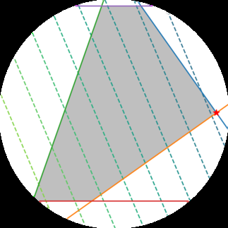
由于机器学习算法是在计算机上实现的，数学公式被表达为数值优化方法。本章描述了训练机器学习模型的基本数值方法。训练机器学习模型通常归结为找到一组好的参数。“好”的概念由目标函数或概率模型确定，我们将在本书第二部分看到相关示例。给定目标函数，使用优化算法找到最佳值。由于我们考虑R^D中的数据和模型，我们面临的问题是连续优化问题，而不是组合优化问题。
本章涵盖连续优化的两个主要分支(图7.1)：无约束优化和约束优化。我们在本章中假设我们的目标函数是可微的(见第5章)，因此我们可以在空间中的每个位置访问梯度来帮助我们找到最优值。按照惯例，机器学习中的大多数目标函数都是要被最小化的，即最佳值是最小值。直观地说，找到最佳值就像找到最小值一样。
目标函数的谷，梯度指向我们上坡的方向。优化的思想是向下坡方向移动（与梯度相反）并希望找到最深的点。对于无约束优化，这是我们需要的唯一概念，但有几种设计选择，我们将在第7.1节中讨论。对于约束优化，我们需要引入其他概念来管理约束（第7.2节）。我们还将介绍一类特殊的问题（第7.3节中的凸优化问题），在这类问题中我们可以对达到全局最优做出陈述。
考虑图7.2中的函数。该函数在x = −4.5附近有一个全局最小值，函数值约为−47。由于函数是”光滑的”，梯度可以通过指示我们应该向右还是向左迈步来帮助找到最小值。这假设我们在正确的谷中，因为在x = 0.7附近还存在另一个局部最小值。回想一下，我们可以通过计算函数的导数并将其设为零来求解函数的所有驻点。
对于
ℓ(x) = x⁴ + 7x³ + 5x² − 17x + 3 , (7.1)
我们得到相应的梯度为
dℓ(x)/dx = 4x³ + 21x² + 10x − 17 . (7.2)
图7.1 本章中与优化相关概念的思维导图。有两个主要思想：梯度下降和凸优化。
[图7.1显示了一个思维导图，包含以下概念分支： - 连续优化 - 无约束优化 - 梯度下降 - 步长 - 动量 - 随机梯度下降 - 约束优化 - 拉格朗日乘数 - 凸优化 - 凸优化与对偶 - 凸共轭 - 线性规划 - 二次规划 - 连接到第10章（降维） - 连接到第11章（密度估计） - 连接到第12章（分类）]
由于这是一个三次方程，当设为零时通常有三个解。在这个例子中，其中两个是最小值，一个是最大值（在x = −1.4附近）。要检查一个驻点是最小值还是最大值，我们需要对其求二阶导数，并检查二阶导数在驻点处是正还是负。在我们的情况下，二阶导数是
d²ℓ(x)/dx² = 12x² + 42x + 10 . (7.3)
通过代入我们目测估计的值x = −4.5, −1.4, 0.7，我们将观察到正如预期的那样，中间的点是一个最大值（d²ℓ(x)/dx² < 0），其他两个驻点是最小值。
注意，在前面的讨论中我们避免了解析求解x的值，尽管对于像前面这样的低阶多项式我们可以这样做。一般来说，我们无法找到解析解，因此我们需要从某个值开始，比如x₀ = −6，然后沿着负梯度方向前进。负梯度表明我们应该
图7.2 示例目标函数。负梯度用箭头表示，全局最小值用蓝色虚线表示。
[图7.2显示了函数ℓ(x) = x⁴ + 7x³ + 5x² − 17x + 3的图像，x轴从-6到2，y轴从-60到60，显示了函数的形状和梯度方向]
向右走，但不知道走多远（这被称为步长）。此外，如果我们从右侧开始（例如，x₀ = 0），负梯度会将我们引导到错误的最小值。图7.2说明了这样一个事实：对于x > −1，负梯度指向图中右侧的最小值，该最小值具有更大的目标值。
根据Abel-Ruffini定理，一般来说5次或更高次的多项式没有代数解（Abel, 1826）。
在第7.3节中，我们将学习一类称为凸函数的函数，这类函数不会表现出这种对优化算法起始点的复杂依赖性。对于凸函数，所有局部最小值都是全局最小值。事实证明，许多机器学习目标函数都设计成凸函数，我们将在第12章中看到一个例子。
本章到目前为止的讨论是关于一维函数的，在这里我们能够可视化梯度、下降方向和最优值的概念。在本章的其余部分，我们将在高维中发展相同的思想。不幸的是，我们只能在一维中可视化这些概念，但有些概念不能直接推广到高维，因此在阅读时需要小心。
我们现在考虑求解实值函数最小值的问题
min f(x) , (7.4) x
其中f : Rᵈ → R是一个目标函数，它捕获了机器
learning problem at hand. 我们假设函数f是可微的，并且无法通过解析方法找到闭式解。
梯度下降是一种一阶优化算法。为了使用梯度下降找到函数的局部最小值，我们沿着当前点处函数梯度的负方向按比例步进。
[我们使用] [回顾第[5.1]节，梯度指向] [行向量的] [最陡上升方向。另一个有用的直觉是考虑函数值为某个常数（f(x) = c，其中c ∈ R）的等高线集合，] [约定来表示] [这些线被称为等高线。梯度指向垂直于我们希望优化的函数等高线的方向。] [梯度。]
让我们考虑多变量函数。想象一个由函数f(x)描述的曲面，上面有一个球从特定位置x[0]开始。当球被释放时，它会沿最陡下降方向向下滚动。梯度下降利用了这样一个事实：如果从x[0]沿负梯度方向−(∇f)(x[0])移动，f(x[0])下降最快。我们在本书中假设函数是可微的，并在第[7.4]节中介绍更一般的情况。那么，如果
x[1][⊤] = x[0] − γ((∇f)(x[0]))⊤ (7.5)
对于小的步长γ ⩾ 0，则f(x1) ⩽ f(x[0])。注意我们对梯度使用转置，否则维度不匹配。
这个观察使我们能够定义一个简单的梯度下降算法：如果我们要找到函数f : R^n → R，x ↦ f(x)的局部最优解x*，我们从要优化参数的初始猜测x[0]开始，然后按照以下方式迭代：
x[i+1][⊤] = x[i] − γi⊤ (7.6)
对于合适的步长γ[i]，序列f(x[0]) ⩾ f(x1) ⩾ … 收敛到局部最小值。
例 7.1
考虑二维二次函数
f([x1/x[2]]) = [x1 x[2]] [2 1; 1 20] [x1/x[2]] - [5] [x1/x[2]] + 3 (7.7)
其梯度为
∇f([x1/x[2]]) = [x1 x[2]] [2 1; 1 20] - [5] (7.8)
从初始位置x[0][⊤] = [-3, -1]开始，我们迭代应用(7.6)得到收敛到最小值的估计序列
（如图7.3所示）。我们可以看到（从图中和将x[0]代入(7.8)，γ = 0.085），x[0]处的负梯度指向北方和东方，导致x[1][⊤] = [-1.98, 1.21]。重复这个过程得到x[2][⊤] = [-1.32, -0.42]，依此类推。
备注。 梯度下降在接近最小值时可能相对较慢：其渐近收敛速度不如许多其他方法。使用球滚下山的类比，当曲面是一个狭长的山谷时，问题是病态的(Trefethen and Bau III, 1997)。对于病态凸问题，梯度下降逐渐”之字形”前进，因为梯度几乎垂直于到最小值点的最短方向；见图7.3。♢
如前所述，在梯度下降中选择合适的步长很重要。如果步长太小，梯度下降可能很慢。如果步长选择得太大，梯度下降可能会超调、无法收敛，甚至发散。我们将在下一节讨论momentum的使用。这是一种平滑梯度更新不稳定行为并阻尼震荡的方法。
自适应梯度方法根据函数的局部性质在每次迭代时重新调整步长。有两个简单的启发式方法(Toussaint, 2012)：
当梯度步进后函数值增加时，步长太大。撤销该步并减小步长。
当函数值减少时，步长本可以更大。尝试增加步长。
虽然”撤销”步骤似乎是资源浪费，但使用这种启发式方法保证单调收敛。
例 7.2（求解线性方程组）
当我们求解形式为Ax = b的线性方程时，在实践中我们通过找到最小化平方误差的x*来近似求解Ax - b = 0
∥Ax - b∥² = (Ax - b)⊤(Ax - b) (7.9)
如果我们使用欧几里得范数。(7.9)关于x的梯度是
∇x = 2(Ax - b)⊤A (7.10)
我们可以在梯度下降算法中直接使用这个梯度。然而，对于这个特殊情况，事实证明存在解析解，可以通过将梯度设为零来找到。我们将在第9章看到更多关于求解平方误差问题的内容。
备注。 当应用于求解线性方程组Ax = b时，梯度下降可能收敛缓慢。梯度下降的收敛速度依赖于条件数κ = σmax(A)/σmin(A)，这是A的最大奇异值与最小奇异值的比值（第4.5节）。条件数本质上度量了最
曲线方向与最不曲线方向相比，这对应于我们对病态问题的形象化理解，即它们是长而细的山谷：它们在一个方向上非常弯曲，但在另一个方向上非常平坦。与其直接求解 Ax = b，不如求解 P(Ax - b) = 0，其中 P^{-1} 称为预条件器(preconditioner)。目标是设计 P 使得 PA 具有更好的条件数，但同时 P^{-1} 易于计算。有关梯度下降、预条件和收敛的更多信息，我们参考 [Boyd and Vandenberghe (2004), 第9章]。♢
如图 7.3 所示，如果优化表面的曲率使得存在缩放不良的区域，梯度下降的收敛可能非常缓慢。曲率使得梯度下降步骤在山谷壁之间跳跃，并以小步长接近最优值。为改善收敛而提出的调整是给梯度下降一些记忆。
[Goh (2017) 写了一篇关于带动量梯度下降的直观博客文章] 带动量的梯度下降 [(Rumelhart et al., 1986)] 是一种引入额外项来记住前一次迭代中发生了什么的方法。这种记忆抑制振荡并平滑梯度更新。继续使用球的类比，动量项模拟了一个不愿改变方向的重球现象。其思想是通过记忆来实现梯度更新，以实现移动平均。基于动量的方法记住每次迭代 i 时的更新 Δx_i，并将下一次更新确定为当前和先前梯度的线性组合
x_{i+1} = x_i - γ((∇f)(x_i)) + αΔx_i (7.11)
Δx_i = x_i - x_{i-1} = α Δx_{i-1} - γ((∇f)(x_{i-1})) , (7.12)
其中 α ∈ [0, 1]。有时我们只能近似知道梯度。在这种情况下，动量项很有用，因为它平均了梯度的不同噪声估计。获得近似梯度的一种特别有用的方法是使用随机近似，我们接下来讨论这个问题。
计算梯度可能非常耗时。然而，通常可以找到梯度的”便宜”近似。只要近似梯度大致指向与真实梯度相同的方向，近似梯度仍然有用。
随机梯度下降(stochastic gradient descent)（通常简称为SGD）是梯度下降方法的随机近似，用于最小化写成可微函数和的目标函数。这里的随机指的是我们承认我们不能精确知道梯度，而只知道它的噪声近似。通过约束近似梯度的概率分布，我们仍然可以在理论上保证SGD会收敛。
在机器学习中，给定 n = 1, …, N 个数据点，我们通常考虑目标函数是每个样本 n 产生的损失 L_n 的和。在数学记号中，我们有形式
L(θ) = Σ_{n=1}^N L_n(θ) , (7.13)
其中 θ 是感兴趣的参数向量，即我们想找到最小化 L 的 θ。回归（第9章）中的一个例子是负对数似然，它表示为各个样本对数似然的和
L(θ) = -Σ_{n=1}^N log p(y_n|x_n, θ) , (7.14)
其中 x_n ∈ R^D 是训练输入，y_n 是训练目标，θ 是回归模型的参数。
如前所述，标准梯度下降是一种”批量”优化方法，即使用完整训练集进行优化，通过以下方式更新参数向量
θ_{i+1} = θ_i - γ_i(∇L(θ_i)) = θ_i - γ_i Σ_{n=1}^N (∇L_n(θ_i)) (7.15)
对于合适的步长参数 γ_i。评估和梯度可能需要昂贵地评估所有单个函数 L_n 的梯度。当训练集庞大和/或不存在简单公式时，评估梯度和变得非常昂贵。
考虑 (7.15) 中的项 Σ_{n=1}^N (∇L_n(θ_i))。我们可以通过对较小的 L_n 集合求和来减少计算量。与使用所有 n = 1, …, N 的 L_n 的批量梯度下降相比，我们随机选择 L_n 的子集进行小批量梯度下降。在极端情况下，我们随机选择只有一个 L_n 来估计梯度。
为什么取数据子集是合理的，关键洞察是意识到为了梯度下降收敛，我们只需要梯度是真实梯度的无偏估计。实际上，(7.15) 中的项 Σ_{n=1}^N (∇L_n(θ_i)) 是梯度期望值（第6.4.1节）的经验估计。因此，期望值的任何其他无偏经验估计，例如使用数据的任何子样本，都足以保证梯度下降的收敛。
备注。 当学习率以适当的速度递减，并且在相对温和的假设下，随机梯度下降几乎必然收敛到局部最小值 [(Bottou, 1998)]。♢
为什么要考虑使用近似梯度？一个主要原因是实际实现约束，例如中央
处理单元 (CPU)/图形处理单元 (GPU) 内存或计算时间的限制。我们可以用与估算经验均值时考虑样本大小相同的方式来思考用于估计梯度的子集大小（第6.4.1节）。大的mini-batch大小将提供准确的梯度估计，减少参数更新中的方差。此外，大的mini-batch利用了成本和梯度向量化实现中高度优化的矩阵运算。方差的减少导致更稳定的收敛，但每次梯度计算将更加昂贵。
相比之下，小的mini-batch估计速度快。如果我们保持mini-batch大小较小，梯度估计中的噪声将允许我们摆脱一些糟糕的局部最优解，否则我们可能会陷入其中。
在机器学习中，优化方法通过最小化训练数据上的目标函数来用于训练，但总体目标是提高泛化性能（第8章）。由于机器学习中的目标不一定需要目标函数最小值的精确估计，使用mini-batch方法的近似梯度已被广泛使用。随机梯度下降在大规模机器学习问题中非常有效 (Bottou et al., 2018)，
图7.4 约束优化的说明。无约束问题（由等高线表示）在右侧有一个最小值（由圆圈表示）。边界约束（-1 ≤ x ≤ 1 和 -1 ≤ y ≤ 1）要求最优解在边界框内，导致最优值由星号表示。
例如在数百万图像上训练深度神经网络 (Dean et al., 2012)，主题模型 (Hoffman et al., 2013)，强化学习 (Mnih et al., 2015)，或大规模Gaussian过程模型的训练 (Hensman et al., 2013; Gal et al., 2014)。
在前一节中，我们考虑了求解函数最小值的问题
min f(x) , (7.16)
其中 f : R^D → R。
在本节中，我们有额外的约束。也就是说，对于实值函数 g_i : R^D → R，i = 1, …, m，我们考虑约束优化问题（见图7.4的说明）
min f(x) (7.17) subject to g_i(x) ≤ 0 for all i = 1, …, m .
值得指出的是，函数f和g_i一般情况下可能是非凸的，我们将在下一节考虑凸情况。
将约束问题(7.17)转换为无约束问题的一种显而易见但不太实用的方法是使用指示函数
J(x) = f(x) + ∑(i=1 to m) 1(g_i(x)) , (7.18)
其中 1(z) 是无限阶跃函数
1(z) = { 0 if z ≤ 0 { ∞ otherwise (7.19)
如果不满足约束条件，这将给出无限惩罚，因此将提供相同的解。然而，这个无限阶跃函数同样难以优化。我们可以通过引入Lagrange乘数来克服这个困难。Lagrange乘数的思想是用线性函数替换阶跃函数。
我们通过引入对应于每个不等式约束的Lagrange乘数 λ_i ≥ 0，将问题(7.17)关联到Lagrangian (Boyd and Vandenberghe, 2004, 第4章)，使得
L(x, λ) = f(x) + ∑(i=1 to m) λ_i g_i(x) (7.20a) = f(x) + λ^⊤ g(x) , (7.20b)
其中在最后一行中，我们将所有约束 g_i(x) 连接成向量 g(x)，将所有Lagrange乘数连接成向量 λ ∈ R^m。
我们现在引入Lagrangian对偶性的概念。一般来说，优化中的对偶性是将一组变量x（称为原始变量）中的优化问题转换为另一组不同变量λ（称为对偶变量）中的另一个优化问题的思想。我们介绍两种不同的对偶性方法：在本节中，我们讨论Lagrangian对偶性；在第7.3.3节中，我们讨论Legendre-Fenchel对偶性。
定义7.1. 问题(7.17)中的
min f(x) (7.21) subject to g_i(x) ≤ 0 for all i = 1, …, m
被称为原始问题，对应于原始变量x。相关的Lagrangian对偶问题为
max D(λ) (7.22) λ∈R^m subject to λ ≥ 0 ,
其中λ是对偶变量，D(λ) = min L(x, λ)。 x∈R^D
备注. 在定义7.1的讨论中，我们使用了两个独立感兴趣的概念 (Boyd and Vandenberghe, 2004)。首先是minimax不等式，它说对于任何具有两个参数的函数φ(x, y)，maximin小于minimax，即
max min φ(x, y) ≤ min max φ(x, y) . (7.23) y x x y
这个不等式可以通过考虑不等式来证明
对于所有x, y：min φ(x, y) ≤ max φ(x, y) . (7.24) x y
注意，对[(7.24)]左侧取y的最大值保持了不等式成立，因为该不等式对所有y都成立。类似地，我们可以对[(7.24)]右侧取x的最小值来得到[(7.23)。]
第二个概念是弱对偶性，它使用[(7.23)]来表明[[weak duality]]原问题的值总是大于或等于对偶问题的值。这在[(7.27)]中有更详细的描述。♢
回忆[(7.18)]中的J(x)和[(7.20b)]中的拉格朗日函数的区别在于我们将指示函数松弛为线性函数。因此，当λ ⩾ 0时，拉格朗日函数L(x, λ)是J(x)的下界。因此，L(x, λ)关于λ的最大值为
J(x) = max L(x, λ) . (7.25) [λ][⩾][0]
回忆原问题是最小化J(x)，
min max L(x, λ) . (7.26) [x][∈][R][d] [λ][⩾][0]
根据minimax不等式[(7.23)，]交换最小值和最大值的顺序会得到更小的值，即
min max L(x, λ) ⩾ max min L(x, λ) . (7.27) [x][∈][R][d] [λ][⩾][0] [λ][⩾][0] [x][∈][R][d]
这也被称为弱对偶性。注意右侧的内部是对偶目标函数D(λ)，定义如下。[[weak duality]]
与有约束的原优化问题相比，min[x][∈][R][d] L(x, λ)对于给定的λ值是一个无约束优化问题。如果求解min[x][∈][R][d] L(x, λ)很容易，那么整个问题就容易求解。我们可以从[(7.20b)]观察到L(x, λ)关于λ是仿射的。因此min[x][∈][R][d] L(x, λ)是λ的仿射函数的逐点最小值，因此D(λ)是凹函数，即使f(·)和gi可能是非凸的。外层问题，关于λ的最大化，是凹函数的最大值，可以高效计算。
假设f(·)和gi是可微的，我们通过对拉格朗日函数关于x求微分，设微分为零，并求解最优值来找到拉格朗日对偶问题。我们将在第[7.3.1]节和第[7.3.2]节中讨论两个具体例子，其中f(·)和gi是凸函数。
备注（等式约束）。考虑[(7.17)]带有额外等式约束
min f(x) ### x {#x-15 .calibre66}
subject to (7.28) gi ⩽ 0 for all i = 1, . . . , m hj = 0 for all j = 1, . . . , n .
[©2023 M. P. Deisenroth, A. A. Faisal, C. S. Ong. Published by Cambridge University Press (2020).]
[236] [[连续优化]]
我们可以通过将等式约束替换为两个不等式约束来建模等式约束。也就是说，对于每个等式约束hj = 0，我们等价地将其替换为两个约束hj ⩽ 0和hj ⩾ 0。结果表明，相应的拉格朗日乘数是无约束的。
因此，我们约束[(7.28)]中对应不等式约束的拉格朗日乘数为非负，而让对应等式约束的拉格朗日乘数保持无约束。♢
我们将注意力集中在一类特别有用的优化问题上，在该类问题中我们可以保证全局最优性。当f(·)是凸函数，且涉及g(·)和h(·)的约束是凸集时，[convex optimization]这被称为凸优化问题。在这种情况下，我们有强对偶性：对偶问题的最优解与[problem]原问题的最优解相同。凸函数和凸集之间的区别在机器学习文献中通常没有严格[strong duality]表述，但人们往往可以从上下文推断出隐含的含义。
定义7.2. 集合C是凸集，如果对于任意x, y ∈ C和任意标量θ，其中0 ⩽ θ ⩽ 1，我们有[convex set]
θx + (1 − θ)y ∈ C . [(7.29)]
图7.5 凸集的例子。凸集是这样的集合：连接集合中任意两个元素的直线都位于集合内部。图[7.5]和[7.6]分别说明了凸集和非凸集。
凸函数是这样的函数：函数上任意两点之间的直线都位于函数上方。图[7.2]显示了一个非凸函数，图[7.3]显示了一个凸函数。另一个凸函数显示在图[7.7]中。
图7.6 非凸集的例子。
定义7.3. 设函数f : R^D → R是一个定义域为凸集的函数。如果对于f定义域中的所有x, y，以及任意标量θ，其中0 ⩽ θ ⩽ 1，我们有
f(θx + (1 − θ)y) ⩽ θf(x) + (1 − θ)f(y) . [(7.30)]
则函数f是凸函数。
备注。 凹函数是凸函数的负值。♢ [convex function]
[(7.28)]中涉及g(·)和h(·)的约束在标量值处截断函数，产生集合。凸函数和[concave function]凸集之间的另一个关系是考虑通过”填充”凸函数得到的集合。凸函数是一个碗状物体，我们想象向其中倒水将其填满。这个填充后的集合，称为凸函数的上图，是一个凸集。[epigraph]
如果函数f : R^n → R是可微的，我们可以用
[Draft (2023-10-18) of “Mathematics for Machine Learning”. Feedback: https://mml-book.com.] [7.3 凸优化] [237]
图7.7 凸函数的例子。
y = 3x^5 − x + 2
其梯度∇xf(x)（第[5.2]节）来刻画凸性。函数f(x)是凸的当且仅当对于任意两点x, y都有
f(y) ⩾ f(x) + ∇xf(x)^⊤(y − x) . (7.31)
如果我们进一步知道函数 f (x) 是二次可微的，即 Hessian [(5.147)] 对于 x 域中的所有值都存在，那么函数 f (x) 是凸函数当且仅当 ∇[2] xf (x) 是正半定的 [(Boyd and Vandenberghe, 2004).]
示例 7.3
负熵函数 f (x) = x log [2] x 在 x > 0 时是凸函数。该函数的可视化如图 [7.8] 所示，我们可以看到该函数是凸的。为了说明凸性的先前定义，让我们检查两个点 x = 2 和 x = 4 的计算。注意，要证明 f (x) 的凸性，我们需要检查所有点 x ∈ R。
回顾定义 [7.3]。考虑两点中间的一点（即 θ = 0.5）；那么左边是 f (0.5 · 2 + 0.5 · 4) = 3 log[2] 3 ≈ 4.75。右边是 0.5(2 log [2] 2) + 0.5(4 log[2] 4) = 1 + 4 = 5。因此满足定义。
由于 f (x) 是可微的，我们可以另外使用 [(7.31)]。计算 f (x) 的导数，我们得到
∇x = 1 · log[2] x + x · = log (7.32) [2] x + . x 1 1
log[e] 2 log[e] 2
使用相同的两个测试点 x = 2 和 x = 4，[(7.31)] 的左边由 f (4) = 8 给出。右边是
f [⊤] ( x ) + ∇(y − x) = f (2) + ∇f (2) · (4 − 2) (7.33a) x
= 2 + (1 + ) · 2 ≈ 6.9 . (7.33b) log 1 [e] 2
[©2023 M. P. Deisenroth, A. A. Faisal, C. S. Ong. Published by Cambridge University Press (2020).]
图 7.8 负熵函数 x log x 2（该函数是凸的）及其在 x = 2 处的切线。
我们可以通过回顾定义从第一原理检查函数或集合是否为凸。在实践中，我们经常依靠保持凸性的操作来检查特定函数或集合是否为凸。尽管细节差异很大，这又是我们在第 [2] 章中为向量空间引入的闭包思想。
示例 7.4
凸函数的非负加权和是凸的。观察到如果 f 是凸函数，α ⩾ 0 是非负标量，那么函数 αf 是凸的。我们可以通过将 α 乘以定义 [7.3] 中等式的两边来看到这一点，并回忆乘以非负数不会改变不等式。
如果 f1 和 f[2] 是凸函数，那么根据定义我们有
f1 (θx + (1 − θ)y) ⩽ θf1 + (1 − θ)f1 [(7.34)] f[2] (θx + (1 − θ)y) ⩽ θf2 + (1 − θ)f2 . [(7.35)]
将两边相加得到
f1 + f2 ⩽ θf1 (x) + (1 − θ)f1 + θf2 + (1 − θ)f2 , [(7.36)]
其中右边可以重新排列为
θ(f1 + f2) + (1 − θ)(f1 + f2) , [(7.37)]
完成了凸函数之和是凸的证明。
结合前面的两个事实，我们看到对于 α, β ⩾ 0，αf1 + βf2 是凸的。这个闭包性质可以使用类似的论证扩展到两个以上凸函数的非负加权和。
备注。 [(7.30)] 中的不等式有时称为 Jensen不等式。实际上，一整类关于凸函数非负加权和的不等式都称为Jensen不等式。♢
总之，如果约束优化问题被称为凸优化问题
minf (x) ### x
约束条件为 (7.38) g [i] ( x ) ⩽ 0 对于所有 i = 1 , . . . , m h[j] (x) = 0 对于所有 j = 1, . . . , n ,
其中所有函数 f(x) 和 gi 都是凸函数，所有 hj = 0 都是凸集合。下面，我们将描述两类广泛使用且被充分理解的凸优化问题。
考虑当所有前述函数都是线性的特殊情况，即
min [⊤] cx (7.39) x [d] [∈] [R]
约束条件为 Ax ⩽ b ,
其中 A ∈ R[m][×][d] 和 b ∈ R[m]。这被称为线性规划。它有 d 个变量和 m 个线性约束。Lagrangian由以下给出
L [⊤] [⊤] ( x , λ ) = c x + λ(Ax − b) , (7.40)
其中 λ ∈ R[m] 是非负Lagrange乘数向量。重新排列对应于 x 的项得到
L [⊤] [⊤] [⊤] ( x , λ ) = ( c + A λ ) x − λb . (7.41)
对 L(x, λ) 关于 x 求导并设为零得到
c [⊤] + Aλ = 0 . (7.42)
因此，对偶Lagrangian是 D ( λ ) = − λ[⊤]b。回忆我们想要最大化 D (λ)。除了由于 L(x, λ) 的导数为零的约束外，我们还有 λ ⩾ 0 的事实，产生以下对偶优化问题
max [⊤] − bλ (7.43) [λ] [m] [∈] [R]
约束条件为 [⊤] c + A λ = 0 λ ⩾ 0 .
这也是一个线性规划，但有 m 个变量。我们可以选择求解原问题 [(7.39)] 或对偶问题 [(7.43)]，这取决于 m 或 d 哪个更大。回忆 d 是变量数，m 是原线性规划中的约束数。
示例 7.5 (线性规划)
考虑线性规划
min [⊤] 5 x1 − 3 x [2] x [2] [∈] [R]
约束条件为 2 2 33 x1 2 [(7.44) − 4 8] − x[2] ⩽ 5 0 − 1 − 1 0 1 8
使用两个变量。该program也显示在图[7.9]中。目标
函数是线性的，产生线性等高线。标准形式的约束集在
图例中被翻译。最优值必须位于
阴影（可行）区域内，并用星号表示。
图7.9 2[2] [≤] [33] [−][2]x 线性program的图解。 4 [10][2] [≥] 21 [−] [8] 无约束 [x][2] [≤] 21 [−][5] 问题（由等高线 [x][2] [≥] 1 表示）在右侧 [x][2] [≤] [8] 有一个最小值。
给定约束的
最优值用星号
显示。
[Draft (2023-10-18) of “Mathematics for Machine Learning”. Feedback:] [https://mml-book.com][.] 7.3 Convex Optimization [241]
考虑凸二次目标函数的情况，其中约束是仿射的，即
x min 1 [⊤] [⊤] x Qx + cx (7.45) 2 [∈] [d] [R]
受约束 Ax ⩽ b ,
其中 [m][×][d] [m] [d] A ∈ R , b ∈ R , 和 c ∈ R。对称方阵 Q ∈ R[d] [×][d] 是正定的，因此目标函数是凸的。这被称为二次program。注意它有d个变量和m个线性约束。
例7.6（二次program）
考虑二次program
x min 1 [⊤] [⊤] x 1 2 1 x 1 5 x 1 + (7.46) 2 [2] [∈] [R] x [2] 1 4 x [2] 3 x [2]
1 0 1受约束 ⩽ (7.47) 0 1 − 1 0 x 1 [2] 1 x 1
0 −1 1
包含两个变量。该program也在图[7.4]中有说明。目标函数是带有正半定矩阵Q的二次函数，产生椭圆等高线。最优值必须位于阴影（可行）区域内，并用星号表示。
Lagrangian给出为
L 1 [⊤] [⊤] [⊤] (7.48a) ( x , λ ) = x Qx + c x + λ ( Ax − b ) 2
= 1 [⊤] [⊤] [⊤] [⊤] x Qx + ( c + A λ ) x − λb , (7.48b) 2
其中我们再次重新排列了项。对L(x, λ)关于x求导并设为零，得到
Qx [⊤] + ( c + Aλ) = 0 . (7.49)
假设Q是可逆的，我们得到
x − [⊤] = − Q ( c + Aλ) . (7.50)
将[(7.50)]代入原始Lagrangian L (x, λ)，我们得到对偶Lagrangian
D 1 [⊤] [⊤] − [⊤] [⊤] ( λ ) = − ( c + A λ ) Q ( c + A λ ) − λb . (7.51) 2
[©2023 M. P. Deisenroth, A. A. Faisal, C. S. Ong. Published by Cambridge University Press (2020).]
[连续优化]
因此，对偶优化问题给出为
[λ] max 1 [⊤] [⊤] − [⊤] [⊤] ( − c + A λ ) Q ( c + A λ ) [∈] [m] − λb [R] 2 (7.52)
受约束 λ ⩾ 0 .
我们将在第[12]章看到二次规划在机器学习中的应用。
让我们重新审视第[7.2]节中的对偶思想，不考虑约束。关于凸集的一个有用事实是，它可以通过其支撑超平面等价地描述。如果一个超平面与凸集相交，且凸集包含在超平面的一侧，则称该超平面为凸集的支撑超平面。回想一下，我们可以填充一个凸函数得到上图(epigraph)，它是一个凸集。因此，我们也可以用支撑超平面来描述凸函数。此外，观察到支撑超平面刚好与凸函数相切，实际上是函数在该点的切线。回想一下，函数f (x)在给定点x[0]处的切线是该函数在该点的梯度的计算值 [d] [f] [(] x [)] 。总结来说，因为凸集可以通过其支撑超平面等价地描述，凸函数可以通过其梯度的函数等价地描述。Legendre变换将这个概念形式化。
[x][=][x][0]
我们从最一般的定义开始，遗憾的是它有一个反直觉的形式，然后看特殊情况将定义与前段描述的直觉联系起来。Legendre-Fenchel变换是从凸可微函数f (x)到依赖于切线s(x) = ∇ f (x)的函数的变换（在Fourier变换的意义上）。值得强调的是，这是函数f ( )的变换，而不是变量x或在x处求值的函数的变换。
·
Legendre-Fenchel变换也被称为凸共轭（原因我们很快会看到），并且与对偶密切相关[(Hiriart-Urruty和Lemar´ echal, 2001,]第5章)。
[D] 定义7.4. 函数f : R → R的凸共轭是一个函数[∗] f ，定义为
f ∗ = sup ( ⟨s, x⟩ − f (x)) . [(7.53)]
x [D] [∈] [R]
注意前面的凸共轭定义不需要函数f是凸的或可微的。在定义[7.4]中，我们使用了一般内积（第[3.2]节），但在本节的其余部分我们
[Draft (2023-10-18) of “Mathematics for Machine Learning”. Feedback:] [https://mml-book.com][.] 7.3 Convex Optimization
将考虑有限维向量之间的标准点积( [⊤] ⟨ s , x ⟩ = sx)以避免过多的技术细节。
为了以几何方式理解定义[7.4]，考虑一个良好的
简单的一维凸可微函数，例如最容易理解的 f(x) = x²。注意由于我们考虑的是一维问题，超平面简化为一条直线。考虑直线 y = sx+c。回想一下，我们能够通过支撑超平面来描述凸函数，所以让我们尝试通过支撑直线来描述这个函数 f(x)。固定直线的梯度 s ∈ R，对于 f 图像上的每个点 (x₀, f(x₀))，找到使直线仍然与 (x₀, f(x₀)) 相交的 c 的最小值。注意 c 的最小值是斜率为 s 的直线”刚好接触”函数 f(x) = x² 的位置。通过 (x₀, f(x₀)) 且梯度为 s 的直线由下式给出：
y − f(x₀) = s(x − x₀) . (7.54)
这条直线的 y 截距是 −sx₀ + f(x₀)。因此，使 y = sx + c 与 f 的图像相交的 c 的最小值为
inf_{x₀} −sx₀ + f(x₀) . (7.55)
按照惯例，上述凸共轭定义为这个值的负数。本段的推理并不依赖于我们选择了一维凸可微函数这个事实，对于 f : R^D → R 的非凸和不可微函数同样成立。
备注. 凸可微函数如例子 f(x) = x² 是一个很好的特殊情况，这里不需要上确界，并且函数与其 Legendre 变换之间存在一一对应关系。让我们从第一性原理推导这一点。对于凸可微函数，我们知道在 x₀ 处切线接触 f(x₀)，使得
f(x₀) = sx₀ + c . (7.56)
回想我们想要用梯度 ∇ₓf(x) 来描述凸函数 f(x)，且 s = ∇ₓf(x₀)。我们重新整理得到 −c 的表达式：
−c = sx₀ − f(x₀) . (7.57)
注意 −c 随 x₀ 变化，因此也随 s 变化，这就是为什么我们可以将其视为 s 的函数，我们称之为
f*(s) := sx₀ − f(x₀) . (7.58)
比较 (7.58) 与定义 7.4，我们看到 (7.58) 是一个特殊情况（没有上确界）。♢
共轭函数具有良好的性质；例如，对于凸函数，再次应用 Legendre 变换会让我们回到原函数。就像 f(x) 的斜率是 s 一样，f*(s) 的斜率是 x。以下两个例子展示了凸共轭在机器学习中的常见用途。
Example 7.7（凸共轭）
为了说明凸共轭的应用，考虑二次函数
f_λ(y) = (1/2)y^T K^{-1} y (7.59)
基于正定矩阵 K ∈ R^{n×n}。我们将原变量记为 y ∈ R^n，对偶变量记为 α ∈ R^n。
应用定义 7.4，我们得到函数
f*λ(α) = sup{y∈R^n} ⟨y, α⟩ − (1/2)y^T K^{-1} y . (7.60)
由于函数是可微的，我们可以通过求导并将其设为零来找到最大值。
∂/∂y [⟨y, α⟩ − (λ/2)y^T K^{-1} y] = α − λK^{-1} y (7.61)
因此，当梯度为零时，我们有 y = (1/λ)Kα。代入 (7.60) 得到
f*_λ(α) = α^T Kα/λ − (1/2λ²)α^T KK^{-1} Kα = (1/2λ)α^T Kα . (7.62)
Example 7.8
在机器学习中，我们经常使用函数的和；例如，训练集的目标函数包括训练集中每个样本的损失之和。在下文中，我们推导损失和 L(t) = Σᵢ₌₁ⁿ ℓᵢ(tᵢ) 的凸共轭，其中 ℓ : R → R。这也说明了凸共轭在向量情况下的应用。那么，
L*(z) = sup_{t∈R^n} ⟨z, t⟩ − Σᵢ₌₁ⁿ ℓᵢ(tᵢ) (7.63a)
= sup_{t∈R^n} Σᵢ₌₁ⁿ zᵢtᵢ − ℓᵢ(tᵢ) 点积的定义 (7.63b)
= Σᵢ₌₁ⁿ sup_{tᵢ∈R} zᵢtᵢ − ℓᵢ(tᵢ) (7.63c)
= Σᵢ₌₁ⁿ ℓᵢ*(zᵢ) . 共轭的定义 (7.63d)
回想在第 7.2 节中，我们使用 Lagrange 乘数推导了对偶优化问题。此外，对于凸优化问题，我们有强对偶性，即原问题和对偶问题的解匹配。这里描述的 Legendre-Fenchel 变换也可以用来推导对偶优化问题。此外，当函数是凸且可微时，上确界是唯一的。为了进一步研究这两种方法之间的关系，让我们考虑一个线性等式约束凸优化问题。
Example 7.9
设 f(y) 和 g(x) 是凸函数，A 是适当维数的实矩阵，使得 Ax = y。那么
min_x f(Ax) + g(x) = min_{Ax=y} f(y) + g(x). (7.64)
通过为约束 Ax = y 引入 Lagrange 乘数 u，
min_{Ax=y} f(y) + g(x) = min_{x,y} max_u f(y) + g(x) + (Ax − y)^T u (7.65a)
= max_u min_{x,y} f(y) + g(x) + (Ax − y)^T u , (7.65b)
其中交换 max 和 min 的最后一步是由于 f(y) 和 g(x) 是凸函数。通过分解点积项并收集 x 和 y，
max_u min_{x,y} f(y) + g(x) + (Ax − y)^T u (7.66a)
= max_u [min_y {−y^T u + f(y)} + min_x {(Ax)^T u + g(x)}] (7.66b)
= max_u [min_y {−y^T u + f(y)} + min_x {x^T A^T u + g(x)}] (7.66c)
回忆凸共轭的定义（定义7.4）以及内积的对称性，
max u^⊤y + f*(y) + min x^⊤Au + g(x) (7.67a) u,y x
= max -f(u) - g(-A^⊤u). (7.67b) u
因此，我们已经证明了
min f(Ax) + g(x) = max -f(u) - g(-A^⊤u). (7.68) x u
©2023 M. P. Deisenroth, A. A. Faisal, C. S. Ong. 由Cambridge University Press出版 (2020).
246 连续优化
Legendre-Fenchel共轭对于可以表达为凸优化问题的机器学习问题非常有用。特别是对于独立应用于每个样本的凸损失函数，共轭损失是推导对偶问题的便捷方法。
连续优化是一个活跃的研究领域，我们并不试图提供最新进展的全面描述。
从梯度下降的角度来看，有两个主要缺陷，每个都有自己的一套文献。第一个挑战是梯度下降是一阶算法，不使用关于曲面曲率的信息。当存在长谷时，梯度垂直于感兴趣的方向。动量的想法可以推广到一般的加速方法类别(Nesterov, 2018)。共轭梯度方法通过考虑之前的方向来避免梯度下降面临的问题(Shewchuk, 1994)。二阶方法如Newton方法使用Hessian来提供关于曲率的信息。许多选择步长和动量等想法的选择都是通过考虑目标函数的曲率而产生的(Goh, 2017; Bottou et al., 2018)。准Newton方法如L-BFGS尝试使用更便宜的计算方法来近似Hessian(Nocedal and Wright, 2006)。最近人们对计算下降方向的其他度量产生了兴趣，导致了诸如镜像下降(Beck and Teboulle, 2003)和自然梯度(Toussaint, 2012)等方法。
第二个挑战是处理不可微函数。当函数中存在折痕时，梯度方法没有很好的定义。在这些情况下，可以使用子梯度方法(Shor, 1985)。有关优化不可微函数的更多信息和算法，我们参考Bertsekas (1999)的书。关于数值求解连续优化问题的不同方法有大量文献，包括约束优化问题的算法。欣赏这些文献的良好起点是Luenberger (1969)和Bonnans et al. (2006)的书。Bubeck (2015)提供了连续优化的最新综述。机器学习的现代应用通常意味着数据集的大小禁止使用批量梯度下降，因此随机梯度下降是大规模机器学习方法的当前主力。最近的文献综述包括Hazan (2015)和Bottou et al. (2018)。
对于对偶性和凸优化，Boyd and Vandenberghe (2004)的书包括在线讲座和幻灯片。Bertsekas (2009)提供了更数学化的处理，优化领域关键研究者之一的最新著作是Nesterov (2018)。凸优化基于凸分析，对凸函数基础结果感兴趣的读者可参考Rockafellar (1970)、Hiriart-Urruty and Lemaréchal (2001)和Borwein and Lewis (2006)。Legendre-Fenchel变换也在上述凸分析书籍中涵盖，但Zia et al. (2009)提供了更适合初学者的介绍。Legendre-Fenchel变换在凸优化算法分析中的作用在Polyak (2016)中进行了综述。
草稿 (2023-10-18) “机器学习数学”。反馈：https://mml-book.com。练习 247
7.1 考虑单变量函数
f(x) = x³ + 6x² - 3x - 5.
找出其驻点并指出它们是最大值、最小值还是鞍点。
7.2 考虑随机梯度下降的更新方程（方程(7.15)）。
写出当我们使用大小为1的mini-batch时的更新。
7.3 考虑以下陈述是否为真或假：
任意两个凸集的交集是凸的。
任意两个凸集的并集是凸的。
一个凸集A与另一个凸集B的差是凸的。
7.4 考虑以下陈述是否为真或假：
任意两个凸函数的和是凸的。
任意两个凸函数的差是凸的。
任意两个凸函数的积是凸的。
任意两个凸函数的最大值是凸的。
7.5 将以下优化问题表达为矩阵记号的标准线性规划
max p⊤x + ξ x∈R², ξ∈R
受约束条件ξ ≥ 0, x₀ ≤ 0和x₁ ≤ 3。
7.6 考虑图7.9中所示的线性规划，
min -5/3 x₁ x∈R² x₂
受约束条件 [-2 1] x ≤ [8] [2 -4] [5]
使用Lagrange对偶性推导对偶线性规划。
©2023 M. P. Deisenroth, A. A. Faisal, C. S. Ong. 剑桥大学出版社出版 (2020)。
7.7 考虑图7.4中所示的二次规划问题，
$\min_{x \in \mathbb{R}^2} \frac{1}{2} \begin{bmatrix} x_1 \\ x_2 \end{bmatrix}^{\top} \begin{bmatrix} 2 & 1 \\ 1 & 4 \end{bmatrix} \begin{bmatrix} x_1 \\ x_2 \end{bmatrix} + \begin{bmatrix} 5 \\ 3 \end{bmatrix}^{\top} \begin{bmatrix} x_1 \\ x_2 \end{bmatrix}$
$\text{subject to} \begin{bmatrix} -1 & 0 \\ 0 & -1 \end{bmatrix} \begin{bmatrix} x_1 \\ x_2 \end{bmatrix} \leq \begin{bmatrix} 0 \\ 0 \end{bmatrix}, \begin{bmatrix} 1 & 1 \end{bmatrix} \begin{bmatrix} x_1 \\ x_2 \end{bmatrix} \leq 1$
使用Lagrange对偶性推导对偶二次规划。
7.8 考虑以下凸优化问题
$\min_{w \in \mathbb{R}^D} \frac{1}{2} w^{\top} w$
subject to w⊤x ≥ 1
通过引入Lagrange乘数λ推导Lagrangian对偶。
7.9 考虑x ∈ ℝD的负熵，
$f(x) = \sum_{d=1}^D x_d \log x_d$
通过假设标准点积，推导凸共轭函数f*(s)。
提示：对适当的函数求梯度并令梯度为零。
7.10 考虑函数
$f(x) = \frac{1}{2} x^{\top} A x + b^{\top} x + c$
其中A是严格正定的，这意味着它是可逆的。推导f(x)的凸共轭。提示：对适当的函数求梯度并令梯度为零。
7.11 hinge损失（支持向量机使用的损失）由下式给出
L(α) = max {0, 1 − α}
如果我们有兴趣应用梯度方法如L-BFGS，并且不想诉诸于次梯度方法，我们需要平滑hinge损失中的拐点。计算hinge损失的凸共轭L*(β)，其中β是对偶变量。添加一个ℓ2近似项，并计算结果函数的共轭
$L^*(\beta) + \frac{\gamma}{2} \beta^2$
其中γ是给定的超参数。
草稿 (2023-10-18) “机器学习数学”。反馈：https://mml-book.com
这些材料由剑桥大学出版社作为《机器学习数学》出版，作者Marc Peter Deisenroth, A. Aldo Faisal, 和 Cheng Soon Ong (2020)。此版本免费供个人查看和下载。不得重新分发、转售或用于衍生作品。 ©by M. P. Deisenroth, A. A. Faisal, and C. S. Ong, 2023. https://mml-book.com
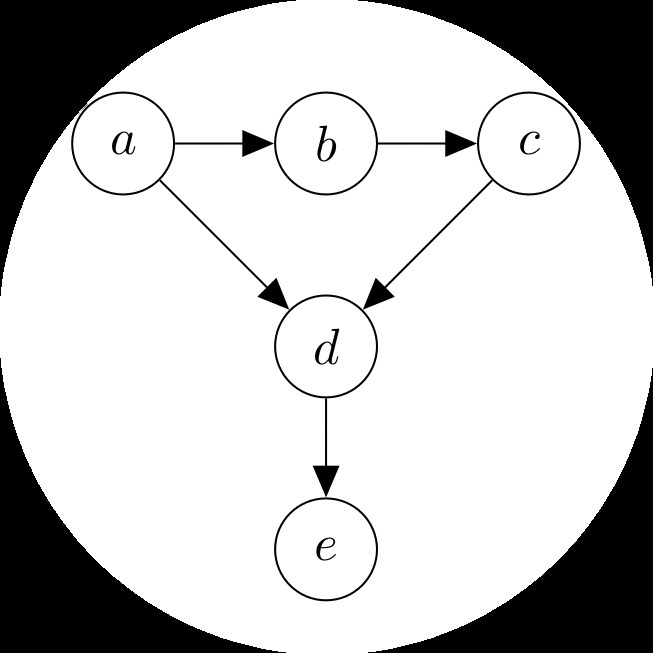
在本书的第一部分中，我们介绍了构成许多机器学习方法基础的数学。希望读者能够从第一部分学习数学语言的基本形式，我们现在将使用这些来描述和讨论机器学习。本书的第二部分介绍了机器学习的四大支柱：
回归（第9章）
降维（第10章）
密度估计（第11章）
分类（第12章）
本书这一部分的主要目标是说明第一部分介绍的数学概念如何用于设计机器学习算法，这些算法可以用来解决四大支柱范围内的任务。我们不打算介绍高级机器学习概念，而是提供一套实用方法，让读者能够应用从第一部分获得的知识。它还为已经熟悉数学的读者提供了通往更广泛机器学习文献的门户。
此时值得停下来考虑机器学习算法要解决的问题。如第1章所讨论的，机器学习系统有三个主要组成部分：数据、模型和学习。机器学习的主要问题是”我们所说的好模型是什么意思？“。模型这个词有很多微妙之处，我们将在本章中多次重新审视它。如何客观地定义”好”这个词也不是完全显而易见的。机器学习的指导原则之一是好的模型应该在未见过的数据上表现良好。这要求我们定义一些性能指标，如准确性或与真实值的距离，以及找出在这些性能指标下表现良好的方法。本章涵盖了一些必要的数学和统计语言片段，这些通常用于
表8.1 来自虚构人力资源数据库的示例数据，不是数值格式
| 姓名 | 性别 | 学位 | 邮编 | 年龄 | 年薪 |
|---|---|---|---|---|---|
| Aditya | M | MSc | W21BG | 36 | 89563 |
| Bob | M | PhD | EC1A1BA | 47 | 123543 |
| Chloé | F | BEcon | SW1A1BH | 26 | 23989 |
| Daisuke | M | BSc | SE207AT | 68 | 138769 |
| Elisabeth | F | MBA | SE10AA | 33 | 113888 |
用于讨论机器学习模型。通过这样做，我们简要概述了训练模型的当前最佳实践，使得结果预测器在我们尚未见过的数据上表现良好。
这些材料由剑桥大学出版社作为《机器学习数学》出版，作者Marc Peter Deisenroth, A. Aldo Faisal, 和 Cheng Soon Ong (2020)。此版本免费供个人查看和下载。不得重新分发、转售或用于衍生作品。 ©by M. P. Deisenroth, A. A. Faisal, and C. S. Ong, 2023. https://mml-book.com
正如第1章所述，我们使用”机器学习算法”这个短语有两种不同的含义：训练和预测。我们将在本章中描述这些概念，以及在不同模型中进行选择的思想。我们将在第[8.2]节介绍经验风险最小化框架，在第[8.3]节介绍最大似然原理，在第[8.4]节介绍概率模型的概念。我们在第[8.5]节简要概述了用于指定概率模型的图形语言，最后在第[8.6]节讨论模型选择。本节的其余部分将详细阐述机器学习的三个主要组成部分：数据、模型和学习。
我们假设我们的数据可以被计算机读取，并且能够在数值格式中得到充分表示。数据被假设为表格形式（图[8.1]），其中我们将表格的每一行视为表示特定实例或样本，每一列为特定特征。近年来，机器学习已被应用于许多类型的数据，这些数据并不明显以表格数值格式出现，例如基因组序列、文本和网页的图像内容，以及社交媒体图谱。
我们不讨论识别良好特征的重要且具有挑战性的方面。这些方面中的许多取决于领域专业知识并需要仔细的工程设计，近年来，它们被归入数据科学的范畴[(Stray, 2016; Adhikari and DeNero, 2018)]。
即使当我们有表格格式的数据时，仍然需要做出选择来获得数值表示。例如，在表[8.1]中，性别列（分类变量）可以转换为数字0表示”男性”，1表示”女性”。或者，性别可以分别用数字-1、+1表示（如表[8.2]所示）。此外，在构建表示时使用领域知识通常很重要，例如知道大学学位从学士到硕士再到博士的递进关系，或者意识到提供的邮政编码不仅仅是字符串，而是实际编码了伦敦的一个区域。在表[8.2]中，我们将表[8.1]的数据转换为数值格式，每个邮政编码表示为两个数字，
[Draft (2023-10-18) of “Mathematics for Machine Learning”. Feedback:] [https://mml-book.com] [8.1 Data, Models, and Learning] [253]
[Gender ID] [Degree] [Latitude] [Longitude] [Age] [Annual Salary] [表8.2] [来自虚构人力] [(纬度)] [(经度)] [(以千为单位)] [资源数据库的] [-1] [2] [51.5073] [0.1290] [36] [89.563] [示例数据] [-1] 3 [51.5074] [0.1275] [47] [123.543] [（见表[8.1]），] [+1] 1 [51.5071] [0.1278] [26] [23.989] [转换为数值格式。] [-1] 1 [51.5075] [0.1281] [68] [138.769] [+1] [2] [51.5074] [0.1278] [33] [113.888]
纬度和经度。即使是可能可以直接读入机器学习算法的数值数据，也应该仔细考虑单位、缩放和约束。在没有额外信息的情况下，应该对数据集的所有列进行平移和缩放，使它们的经验均值为0，经验方差为1。为了本书的目的，我们假设领域专家已经适当地转换了数据，即每个输入x[n]是一个D维实数向量，这些被称为特征、属性或协变量。我们认为数据集的形式如表[8.2]所示。注意我们在新的数值表示中删除了表[8.1]的姓名列。这样做有两个主要原因：(1)我们不期望标识符（姓名）对机器学习任务具有信息性；(2)我们可能希望匿名化数据以帮助保护员工的隐私。
在本书的这一部分中，我们将使用N来表示数据集中样本的数量，并用小写n = 1, . . . , N来索引样本。我们假设给定一组数值数据，表示为向量数组（表[8.2]）。每一行是一个特定的个体x[n]，在机器学习中通常被称为样本或数据点。下标n指的是这是总共N个样本中的第n个样本。每一列表示关于样本的特定关注特征，我们将特征索引为d = 1, . . . , D。回想一下数据表示为向量，这意味着每个样本（每个数据点）是一个D维向量。表格的方向来源于数据库社区，但对于一些机器学习算法（例如，在第[10]章中），将样本表示为列向量更方便。
让我们考虑基于表[8.2]中的数据从年龄预测年薪的问题。这被称为监督学习问题，其中我们有一个与每个样本x[n]（年龄）相关联的标签y[n]（薪水）。标签y[n]有各种其他名称，包括目标、响应变量和注释。数据集写作一组样本-标签对{(x1, y1), . . . , (x[n], y[n]), . . . , (x[N], y[N])}。样本表{x1, . . . , x[N]}经常被连接，写作X ∈ R[N×D]。图[8.1]展示了由表[8.2]最右两列组成的数据集，其中x = 年龄，y = 薪水。
我们使用本书第一部分介绍的概念来形式化
[©2023 M. P. Deisenroth, A. A. Faisal, C. S. Ong. Published by Cambridge University Press (2020).]
[254] [When Models Meet Data]
[图8.1] [玩具数据]
线性回归的训练数据以(x_n, y_n)配对形式来自表8.2最右边两列。我们对一个60岁的人(x = 60)的工资y感兴趣，如垂直红色虚线所示，这不是训练数据的一部分。
像前一段落中的机器学习问题。
将数据表示为向量x_n允许我们使用线性代数的概念(在第2章介绍)。在许多机器学习算法中，我们还需要能够比较两个向量。正如我们将在第9章和第12章中看到的，计算两个示例之间的相似性或距离使我们能够形式化这样的直觉：具有相似特征的示例应该具有相似的标签。两个向量的比较需要我们构建一个几何(在第3章解释)，并允许我们使用第7章的技术优化所得的学习问题。
由于我们有数据的向量表示，我们可以操作数据来找到它的潜在更好表示。我们将讨论以两种方式寻找好的表示：找到原始特征向量的低维近似，以及使用原始特征向量的非线性高维组合。在第10章中，我们将看到通过找到主成分来寻找原始数据空间的低维近似的例子。寻找主成分与第4章介绍的特征值和奇异值分解概念密切相关。对于高维表示，我们将看到一个明确的特征映射φ(·)，它允许我们使用高维表示φ(x_n)来表示输入x_n。高维表示的主要动机是我们可以构造新特征作为原始特征的非线性组合，这进而可能使学习问题变得更容易。我们将在第9.2节讨论特征映射，并在第12.4节展示这个特征映射如何导致核。近年来，深度学习方法(Goodfellow et al., 2016)在使用数据本身学习新的好特征方面显示出前景，并在计算机视觉、语音识别和自然语言处理等领域非常成功。我们不会在本书的这一部分涵盖神经网络，但读者可以参考
图8.2 示例函数(黑色实对角线)及其在x = 60处的预测，即f(60) = 100。
第5.6节了解反向传播的数学描述，这是训练神经网络的关键概念。
8.1.2 作为函数的模型
一旦我们有了合适的向量表示的数据，我们就可以着手构建预测函数(称为预测器)。
在第1章中，我们还没有语言来精确描述模型。使用本书第一部分的概念，我们现在可以介绍”模型”的含义。我们在本书中介绍两种主要方法：作为函数的预测器，和作为概率模型的预测器。我们在这里描述前者，在下一小节描述后者。
预测器是一个函数，当给定特定输入示例(在我们的情况下，是特征向量)时，产生输出。现在，考虑输出为单个数字，即实值标量输出。这可以写为
f: R^D → R, (8.1)
其中输入向量x是D维的(有D个特征)，函数f然后应用于它(写作f(x))返回一个实数。图8.2说明了一个可用于计算输入值x的预测值的可能函数。
在本书中，我们不考虑所有函数的一般情况，这将涉及需要泛函分析。相反，我们考虑线性函数的特殊情况
f(x) = θ^⊤x + θ_0 (8.2)
对于未知的θ和θ_0。这种限制意味着第2章和第3章的内容足以精确陈述非概率(与下面描述的概率观点相对)机器学习观点的预测器概念。
图8.3 示例函数(黑色实对角线)及其在x = 60处的预测不确定性(绘制为高斯分布)。
线性函数在可以解决的问题的通用性和所需背景数学的数量之间取得了良好的平衡。
8.1.3 作为概率分布的模型
我们经常认为数据是某些真实潜在效应的噪声观测，并希望通过应用机器学习我们能够从噪声中识别信号。这要求我们有一种量化噪声影响的语言。我们也经常希望有表达某种不确定性的预测器，例如，量化我们对特定测试数据点预测值的信心。正如我们在第6章中看到的，概率论提供了量化不确定性的语言。图8.3说明了预测的不确定性
function作为Gaussian分布。
我们不是将预测器视为单一函数，而是可以将预测器视为概率模型，即描述可能函数分布的模型。在本书中，我们将自己限制在具有有限维参数的分布这一特殊情况，这使我们能够在不需要随机过程和随机测度的情况下描述概率模型。对于这种特殊情况，我们可以将概率模型看作多元概率分布，这已经允许丰富的模型类别。
我们将介绍如何使用概率概念（第6章）在第[8.4]节中定义机器学习模型，并在第[8.5]节中介绍一种图形语言，以紧凑的方式描述概率模型。
[Draft (2023-10-18) of “Mathematics for Machine Learning”. Feedback:] [https://mml-book.com][.] [8.1 Data, Models, and Learning] [257]
学习的目标是找到一个模型及其相应参数，使得产生的预测器在未见过的数据上表现良好。在讨论机器学习算法时，概念上有三个不同的算法阶段：
预测或推理
训练或参数估计
超参数调优或模型选择
预测阶段是当我们在之前未见过的测试数据上使用训练好的预测器时。换句话说，参数和模型选择已经固定，预测器被应用于表示新输入数据点的新向量。如第1章和前一小节所述，我们将在本书中考虑机器学习的两个学派，对应于预测器是函数还是概率模型。当我们有概率模型时（在第[8.4]节中进一步讨论），预测阶段称为推理。
注释。 不幸的是，对于不同的算法阶段没有统一的命名约定。“推理”一词有时也用于指概率模型的参数估计，较少情况下也可能用于指非概率模型的预测。♢
训练或参数估计阶段是我们基于训练数据调整预测模型的时候。我们希望根据训练数据找到好的预测器，有两种主要策略：基于某种质量度量找到最佳预测器（有时称为找到点估计），或使用Bayesian推理。找到点估计可以应用于两种类型的预测器，但Bayesian推理需要概率模型。
对于非概率模型，我们遵循经验风险最小化原理，我们在第[8.2]节中描述。经验风险最小化直接提供了一个优化问题来找到好的参数。对于统计模型，使用maximum likelihood原理来找到一组好的参数（第[8.3]节）。我们还可以使用概率模型对参数的不确定性建模，我们将在第[8.4]节中更详细地研究这一点。
我们使用数值方法来找到”拟合”数据的好参数，大多数训练方法可以被认为是爬山方法，用于找到目标的最大值，例如likelihood的最大值。为了应用爬山方法，我们使用第[5]章中描述的梯度，并实现第7章中的数值优化方法。
如第1章所述，我们有兴趣基于数据学习一个模型，使其在未来数据上表现良好。仅仅让模型在训练数据上拟合良好是不够的，预测器需要在未见过的数据上表现良好。我们使用交叉验证（第[8.2.4]节）来模拟我们的预测器在未来未见数据上的行为。正如我们将在本章中看到的，为了实现在未见数据上表现良好的目标，我们需要在训练数据上拟合良好和找到现象的”简单”解释之间取得平衡。这种权衡通过正则化（第[8.2.3]节）或添加先验（第[8.3.2]节）来实现。在哲学中，这被认为既不是归纳也不是演绎，而是称为溯因。根据斯坦福哲学百科全书，溯因是推理到最佳解释的过程(Douven, 2017)。
我们经常需要对预测器的结构做出高层次的建模决策，比如要使用的组件数量或要考虑的概率分布类别。组件数量的选择是超参数的一个例子，这个选择可以显著影响模型的性能。在不同模型中进行选择的问题称为模型选择，我们在第[8.6]节中描述。对于非概率模型，模型选择通常使用嵌套交叉验证来完成，这在第[8.6.1]节中描述。我们也使用模型选择来选择我们模型的超参数。
注释。 参数和超参数之间的区别在某种程度上是任意的，主要是由可以数值优化的东西与需要使用搜索技术的东西之间的区别驱动的。考虑这种区别的另一种方式是将参数视为
[©2023 M. P. Deisenroth, A. A. Faisal, C. S. Ong. Published by Cambridge University Press (2020).]
[258] [When Models Meet Data]
参数概率模型的显式参数，并将超参数(hyperparameters)（更高级别的参数）视为控制这些显式参数分布的参数。[♢]
在接下来的章节中，我们将研究机器学习的三种类型：经验风险最小化（第8.2节），最大似然原理（第8.3节），以及概率建模（第8.4节）。
在掌握了所有数学知识之后，我们现在可以介绍学习的含义了。机器学习的”学习”部分归结为基于训练数据估计参数。
在本节中，我们考虑预测器是一个函数的情况，并在第8.3节中考虑概率模型的情况。我们描述经验风险最小化的思想，这最初因支持向量机(support vector machine)的提出而广受欢迎（在第12章中描述）。然而，其一般原理广泛适用，并允许我们在不显式构建概率模型的情况下询问什么是学习的问题。有四个主要的设计选择，我们将在以下小节中详细介绍：
假设我们得到D维的N个样本x_n ∈ R^D和相应的标量标签y_n ∈ R。我们考虑监督学习设置，其中我们获得对(x_1, y_1), …, (x_N, y_N)。给定这些数据，我们希望估计一个由θ参数化的预测器f(·, θ): R^D → R。我们希望能够找到一个好的参数θ*，使得我们很好地拟合数据，即
f(x_n, θ*) ≈ y_n 对所有 n = 1, …, N。 (8.3)
在本节中，我们使用记号ŷ_n = f(x_n, θ*)来表示预测器的输出。
备注。 为了便于表述，我们将用监督学习（其中我们有标签）来描述经验风险最小化。这简化了假设类和损失函数(loss function)的定义。在机器学习中，选择参数化的函数类也很常见，例如仿射函数。♢
示例 8.1
我们介绍普通最小二乘回归问题来说明经验风险最小化。回归的更全面描述见第9章。当标签y_n是实值时，预测器函数类的流行选择是仿射函数集合。我们通过将附加的单位特征连接到x_n = [1, x_n^(1), x_n^(2), …, x_n^(D)]^⊤来为仿射函数选择更紧凑的记号。参数向量相应地为θ = [θ_0, θ_1, θ_2, …, θ_D]^⊤，允许我们将预测器写作线性函数
f(x_n, θ) = θ^⊤x_n。 (8.4)
这个线性预测器等价于仿射模型
f(x_n, θ) = θ_0 + Σ_{d=1}^D θ_d x_n^(d)。 (8.5)
预测器将表示单个样本x_n的特征向量作为输入并产生实值输出，即f: R^{D+1} → R。本章前面的图形有一条直线作为预测器，这意味着我们假设了一个仿射函数。
除了线性函数，我们可能希望考虑非线性函数作为预测器。神经网络的最新进展允许高效计算更复杂的非线性函数类。
给定函数类，我们想要搜索一个好的预测器。我们现在转向经验风险最小化的第二个要素：如何衡量预测器对训练数据的拟合程度。
考虑特定样本的标签y_n；以及我们基于x_n做出的相应预测ŷ_n。为了定义很好地拟合数据意味着什么，我们需要指定一个损失函数ℓ(y_n, ŷ_n)，它将真实标签和预测作为输入，并产生一个非负数（称为损失），表示我们在这个特定预测上犯了多少错误。我们寻找好参数向量θ*的目标是最小化N个训练样本集合上的平均损失。
在机器学习中通常做的一个假设是样本集合(x_1, y_1), …, (x_N, y_N)是独立同分布的。独立(independent)一词（第6.4.5节）意味着两个数据点(x_i, y_i)和(x_j, y_j)在统计上不相互依赖，这意味着经验均值是总体均值的良好估计（第6.4.1节）。这意味着我们可以使用训练数据上损失的经验均值。对于给定的训练集{(x_1, y_1), …, (x_N, y_N)}，我们引入样本矩阵X := [x_1, …, x_N]^⊤ ∈ R^{N×D}和标签向量y := [y_1, …, y_N]^⊤ ∈ R^N的记号。使用这个矩阵
notation表示平均损失为
1 [N] R[emp] ( X f, X , y ) = ℓ(y , y ˆ ) , (8.6) N [n] [n] [n][=1]
其中 y ˆ[n] = f(x[n], θ)。方程[(8.6)]被称为经验风险，它依赖于三个参数：预测器f和数据X，y。这种通用的学习策略被称为经验风险最小化。
例8.2（最小二乘损失）
继续最小二乘回归的例子，我们指定在训练过程中使用平方损失来衡量出错的代价ℓ ( y , y ˆ ) = ( y − y ˆ )²。我们希望最小化经验风险[(8.6),] [n] [n] [n] [n]
这是数据上损失的平均值
1 [N] min X [2] ( y − f ( x , θ )), (8.7) [θ] [D] [∈] [R] N [n] [n] [n][=1]
其中我们替换了预测器 y ˆ[n] = f(x[n], θ)。通过使用我们选择的线性预测器f ( x , θ ) = θ⊤x ，我们得到优化问题 [n] [n]
1 [N] min X [⊤] [2] ( y − θ x ) . (8.8) [θ][∈][R][D] N [n] [n] [n][=1]
这个方程可以等价地表示为矩阵形式
[θ] min ∥y − Xθ∥ . (8.9) [D] 1 [2] [∈][R] N
这被称为最小二乘问题。通过求解正规方程，存在一个闭式解析解，我们将在第9.2节讨论。
我们对仅在训练数据上表现良好的预测器不感兴趣。相反，我们寻求在未见测试数据上表现良好（风险较低）的预测器。更正式地说，我们有兴趣找到一个预测器f（参数固定），使期望风险最小化
R[true] (f ) = E[x][,y][ℓ(y, f (x))] , (8.10)
其中y是标签，f (x)是基于样本x的预测。符号Rtrue表示如果我们有无限量的数据时的真实风险。期望是在所有可能数据和标签的（无限）集合上。从我们最小化期望风险的愿望中产生了两个实际问题，我们在以下两个小节中解决：
我们应该如何改变训练程序以更好地泛化？我们如何从（有限）数据中估计期望风险？
备注。 许多机器学习任务都指定了相关的性能度量，例如预测准确率或均方根误差。性能度量可能更复杂、对成本敏感，并捕获特定应用的细节。原则上，经验风险最小化的损失函数设计应该直接对应于机器学习任务指定的性能度量。在实践中，损失函数的设计和性能度量之间经常存在不匹配。这可能是由于实现的便利性或优化的效率等问题。♢
本节描述了对经验风险最小化的补充，使其能够很好地泛化（近似最小化期望风险）。回想一下，训练机器学习预测器的目标是在未见数据上表现良好，即预测器泛化良好。我们通过保留整个数据集的一部分来模拟这些未见数据。这个保留集被称为测试集。给定预测器f的足够丰富的函数类别，我们基本上可以记住训练数据以获得零经验风险。虽然这对于最小化训练数据上的损失（因此风险）很好，但我们不会期望预测器能很好地泛化到未见数据。在实践中，我们只有有限的数据集，因此我们将数据分为训练集和测试集。训练集用于拟合模型，测试集（在训练期间机器学习算法看不到）用于评估泛化性能。重要的是，用户在观察测试集后不要循环回到新一轮的训练。我们使用下标[train]和[test]分别表示训练集和测试集。我们将在第8.2.4节重新讨论使用有限数据集评估期望风险的想法。
事实证明，经验风险最小化可能导致过拟合，即预测器过于紧密地拟合训练数据，无法很好地泛化到新数据[(Mitchell, 1997)]。在训练集上平均损失很小但在测试集上平均损失很大的这种一般现象，往往在我们数据很少且假设类复杂时发生。对于特定的预测器f（参数固定），当来自训练数据Remp的风险估计低估了期望风险Rtrue时，就会发生过拟合现象。由于我们通过使用测试集上的经验风险Remp来估计期望风险R[true] (f)，如果测试风险远大于训练风险，这就是过拟合的一个指示。我们在第8.3.3节重新讨论过拟合的概念。
因此，我们需要通过引入惩罚项来以某种方式偏向经验风险最小化器的搜索，这使得
优化器返回过度灵活的预测器。在机器学习中，惩罚项被称为 regularization。Regularization 是一种在经验风险最小化的准确解和解的大小或复杂性之间进行折衷的方法。
例 8.3 (正则化最小二乘法)
Regularization 是一种阻止优化问题产生复杂或极端解的方法。最简单的正则化策略是
[数学机器学习草稿 (2023-10-18)。反馈：] [https://mml-book.com] [8.2 经验风险最小化] [263]
将最小二乘问题
min ∥y − Xθ∥ . (8.11) θ 1 2 N
替换为”正则化”问题，通过添加一个仅涉及θ的惩罚项：
min ∥y − Xθ∥ + λ ∥θ∥ . (8.12) θ 1 2 2 N
附加项 ∥θ∥ 称为 regularizer，参数λ是 regularization parameter。Regularization parameter 在最小化训练集损失和参数θ的量级之间进行权衡。如果我们遇到过拟合，参数值的量级通常会变得相对较大 [(Bishop, 2006).]
Regularization 项有时被称为 penalty term，它使向量θ偏向更接近原点。Regularization 的思想也出现在概率模型中作为参数的先验概率。回顾第 6.6 节，为了使后验分布与先验分布具有相同的形式，先验和似然需要是共轭的。我们将在第 8.3.2 节重新讨论这个想法。我们将在第 12 章看到，regularizer 的思想等价于大间隔(large margin)的思想。
我们在前一节中提到，我们通过将预测器应用于测试数据来估计泛化误差。这些数据有时也被称为 validation set。Validation set 是我们保留的可用训练数据的子集。这种方法的一个实际问题是数据量有限，理想情况下我们希望使用尽可能多的可用数据来训练模型。这需要我们保持 validation set V 较小，这会导致预测性能的估计产生噪声(高方差)。解决这些矛盾目标(大训练集、大 validation set)的一个解决方案是使用 cross-validation。K-fold cross-validation 有效地将数据分成 K 块，其中 K-1 块形成训练集 R，最后一块作为 validation set V(类似于之前概述的想法)。Cross-validation 遍历(理想情况下)所有将块分配给 R 和 V 的组合；见图 8.4。这个过程对所有 K 个 validation set 选择重复进行，并对 K 次运行的模型性能进行平均。
我们将数据集分成两个集合 D = R ∪ V，使它们不重叠(R ∩ V = ∅)，其中 V 是 validation set，我们在 R 上训练模型。训练后，我们评估预测器 f 在
[©2023 M. P. Deisenroth, A. A. Faisal, C. S. Ong. 由剑桥大学出版社出版 (2020).]
[264] [当模型遇到数据]
validation set V 上的性能(例如，通过计算训练模型在 validation set 上的均方根误差(RMSE))。更精确地，对于每个分区 k，训练数据 R^(k) 产生一个预测器 f^(k)，然后将其应用于 validation set V^(k) 来计算经验风险 R(f^(k), V^(k))。我们循环遍历所有可能的 validation 和 training sets 分区，并计算预测器的平均泛化误差。Cross-validation 近似期望泛化误差
1 K E [ R(f^(k), V^(k)) ] ≈ ∑ R(f^(k), V^(k)) , (8.13) V K k=1
其中 R(f^(k), V^(k)) 是预测器 f^(k) 在 validation set V^(k) 上的风险(例如，RMSE)。近似有两个来源：首先，由于有限的训练集，导致不是最好的可能 f^(k)；其次，由于有限的 validation set，导致对风险 R(f^(k), V^(k)) 的不准确估计。K-fold cross-validation 的一个潜在缺点是训练模型 K 次的计算成本，如果训练成本在计算上昂贵，这可能是负担。在实践中，仅查看直接参数通常是不够的。例如，我们需要探索多个复杂性参数(例如，多个 regularization parameters)，这些可能不是模型的直接参数。根据这些超参数评估模型质量，可能会导致训练运行次数与模型参数数量呈指数关系。可以使用嵌套交叉验证(第 8.6.1 节)来搜索良好的超参数。
然而，cross-validation 是一个 embarrassingly parallel 问题，即只需要很少的努力就可以将问题分解为许多并行任务。给定足够的计算资源(例如，云计算、服务器集群)，cross-validation 不需要比单次性能评估更长的时间。
在本节中，我们看到经验风险最小化基于以下概念：函数的假设类、损失函数和
正则化。在第8.3节中，我们将看到使用概率分布来替代损失函数和正则化概念的效果。
由于经验风险最小化的原始发展 (Vapnik, 1998) 使用了大量理论语言，许多后续发展都是理论性的。这个研究领域被称为统计学习理论 (Vapnik, 1999; Evgeniou et al., 2000; Hastie et al., 2001; von Luxburg and Schölkopf, 2011)。最近一本基于理论基础并开发高效学习算法的机器学习教科书是 Shalev-Shwartz and Ben-David (2014)。
正则化概念起源于病态逆问题的解法 (Neumaier, 1998)。这里介绍的方法被称为Tikhonov正则化，还有一个密切相关的约束版本称为Ivanov正则化。Tikhonov正则化与偏差-方差权衡和特征选择有着深刻的关系 (Bühlmann and Van De Geer, 2011)。交叉验证的替代方法是bootstrap和jackknife (Efron and Tibshirani, 1993; Davidson and Hinkley, 1997; Hall, 1992)。
将经验风险最小化(第8.2节)视为”无概率”是不正确的。存在一个潜在的未知概率分布p(x, y)控制着数据生成。然而，经验风险最小化的方法对分布的选择是不可知的。这与明确要求p(x, y)知识的标准统计方法形成对比。此外，由于该分布是样本x和标签y的联合分布，标签可以是非确定性的。与标准统计学相比，我们不需要为标签y指定噪声分布。
在第8.2节中，我们没有明确使用概率分布建模我们的问题。在本节中，我们将看到如何使用概率分布来建模由于观测过程产生的不确定性以及预测器参数的不确定性。在第8.3.1节中，我们介绍似然函数(likelihood)，它类似于经验风险最小化中的损失函数概念(第8.2.2节)。先验概念(第8.3.2节)类似于正则化概念(第8.2.3节)。
最大似然估计(MLE)背后的思想是定义一个参数函数，使我们能够找到适合数据的模型。估计问题专注于似然函数，或更精确地说是其负对数。对于由随机变量x表示的数据和由θ参数化的概率密度族p(x | θ)，负对数似然由下式给出：
L_x(θ) = -log p(x | θ) . (8.14)
符号L_x(θ)强调了参数θ是变化的而数据x是固定的这一事实。在写负对数似然时，我们经常省略对x的引用，因为它实际上是θ的函数，当表示数据不确定性的随机变量从上下文中清楚时，我们写作L(θ)。
让我们解释一下对于固定的θ值，概率密度p(x | θ)建模的是什么。它是一个分布，为给定参数设置建模数据的不确定性。对于给定数据集x，似然函数允许我们表达对参数θ不同设置的偏好，我们可以选择更”可能”生成数据的设置。
从互补的角度来看，如果我们认为数据是固定的(因为已经被观测到)，而我们改变参数θ，L(θ)告诉我们什么？它告诉我们对于观测x，θ的特定设置有多可能。基于这第二种观点，最大似然估计器给出了对于数据集最可能的参数θ。
我们考虑监督学习设置，其中我们获得对(x₁, y₁), …, (x_N, y_N)，其中x_n ∈ R^D，标签y_n ∈ R。我们有兴趣构建一个预测器，它以特征向量x_n作为输入并产生预测y_n(或接近它的东西)，即给定向量x_n，我们想要标签y_n的概率分布。换句话说，我们为特定参数设置θ指定给定样本的标签的条件概率分布。
经常使用的第一个例子是指定给定样本的标签的条件概率是高斯分布。换句话说，我们假设可以通过独立高斯噪声(参见第6.5节)来解释观测不确定性，该噪声具有零均值，ε_n ~ N(0, σ²)。我们进一步假设线性模型x_n^⊤θ用于预测。这意味着我们为每个样本标签对(x_n, y_n)指定高斯似然函数，
p(y_n | x_n, θ) = N(y_n | x_n^⊤θ, σ²) . (8.15)
图8.3显示了给定参数θ的高斯似然函数的图解。我们将在第9.2节中看到如何根据高斯分布明确展开前面的表达式。
我们假设样本集(x₁, y₁), …, (x_N, y_N)是独立的
[independently] 并且同分布 (i.i.d.)。“独立”一词（第6.4.5节）[distributed] 意味着涉及整个数据集的似然（Y = {y₁, . . . , yₙ}和X = {x⁽¹⁾, . . . , x⁽ᴺ⁾}）分解为每个单独样本似然的乘积
[机器学习数学草稿（2023-10-18）。反馈：] [https://mml-book.com][.] [8.3 参数估计] [267]
每个单独例子
p_Y(Y | X, θ) = ∏ᴺₙ₌₁ p(yₙ | xₙ, θ) , (8.16)
其中p(yₙ | xₙ, θ)是一个特定的分布（在例8.4中是高斯分布）。“同分布”这个表达意味着乘积(8.16)中的每一项都是同一种分布，并且它们都共享相同的参数。从优化角度来看，计算可以分解为更简单函数之和的函数通常更容易。因此，在机器学习中我们经常考虑负对数似然[回忆log(ab) = log(a) + log(b)]
L_X(θ) = -log p(Y | X, θ) = -∑ᴺₙ₌₁ log p(yₙ | xₙ, θ) . (8.17)
虽然容易解释θ在p(yₙ | xₙ, θ) (8.15)条件符号右边的事实，因此应该被解释为观测到的和固定的，但这种解释是不正确的。负对数似然L(θ)是θ的函数。因此，为了找到一个能很好解释数据(x⁽¹⁾, y⁽¹⁾), . . . , (x⁽ᴺ⁾, y⁽ᴺ⁾)的好参数向量θ，要最小化关于θ的负对数似然L(θ)。
注记。 (8.17)中的负号是一个历史遗迹，这是由于我们想要最大化似然的约定，但数值优化文献倾向于研究函数的最小化。♢
例8.5
继续我们的高斯似然例子(8.15)，负对数似然可以重写为
L_X(θ) = -∑ᴺₙ₌₁ log p(yₙ | xₙ, θ) = -∑ᴺₙ₌₁ log N(yₙ | xₙᵀθ, σ²) (8.18a)
= ∑ᴺₙ₌₁ [(yₙ - xₙᵀθ)²/(2σ²) - log(1/√(2πσ²)) exp(-(yₙ - xₙᵀθ)²/(2σ²))] (8.18b)
= ∑ᴺₙ₌₁ [(yₙ - xₙᵀθ)²/(2σ²)] - ∑ᴺₙ₌₁ log exp(-(yₙ - xₙᵀθ)²/(2σ²)) - ∑ᴺₙ₌₁ log(1/√(2πσ²)) (8.18c)
= (1/(2σ²))∑ᴺₙ₌₁(yₙ - xₙᵀθ)² - ∑ᴺₙ₌₁ log(1/√(2πσ²)) . (8.18d)
由于σ是给定的，(8.18d)中的第二项是常数，最小化L(θ)对应于求解第一项中表达的最小二乘问题（与(8.8)比较）。
事实证明，对于高斯似然，得到的优化
©2023 M. P. Deisenroth, A. A. Faisal, C. S. Ong. 由Cambridge University Press出版 (2020).
[268] [[当模型遇到数据]]
图8.5 对于给定数据，参数的最大似然估计产生黑色对角线。橙色方块显示x = 60处最大似然预测的值。
图8.6 比较x = 60处最大似然估计和MAP估计的MLE预测。先验使斜率偏向不那么陡峭，截距偏向更接近零。在这个例子中，使截距更接近零的偏差实际上增加了斜率。
对应于最大似然估计的问题有闭式解。我们将在第9章看到更多细节。图8.5显示了一个回归数据集和由最大似然参数产生的函数。最大似然估计可能遭受过拟合（第8.3.3节），类似于未正则化的经验风险最小化（第8.2.3节）。对于其他似然函数，即如果我们用非高斯分布建模噪声，最大似然估计可能没有闭式解析解。在这种情况下，我们采用第7章讨论的数值优化方法。
如果我们对参数θ的分布有先验知识，我们可以在似然上乘以一个额外项。这个额外项是参数上的先验概率分布p(θ)。对于给定的先验，在
[机器学习数学草稿（2023-10-18）。反馈：] [https://mml-book.com][.] [8.3 参数估计] [269]
观测到一些数据x后，我们应该如何更新θ的分布？换句话说，在观测到数据x后，我们应该如何表示我们对θ有了更具体的知识这一事实？贝叶斯定理，如第6.3节所讨论的，给了我们一个有原则的工具来更新随机变量的概率分布。它允许我们从一般的先验陈述（先验分布）p(θ)和链接参数θ和观测数据x的函数p(x | θ)（称为似然）计算参数θ上的后验分布p(θ | x)（更具体的知识）：
p(θ | x) = p(x | θ)p(θ)/p(x) . (8.19)
回忆我们有兴趣找到最大化后验的参数θ。由于分布p(x)不依赖于θ，我们可以在优化中忽略分母的值并获得
p(θ | x) ∝ p(x | θ)p(θ) . (8.20)
前面的比例关系隐藏了数据的密度p(x)，这可能难以估计。我们现在不是估计负对数似然的最小值，而是估计负对数后验的最小值，这被称为最大后验估计（MAP estimation）。添加零均值的效果的图示
在图8.6中显示了高斯先验。[[estimation]]
[MAP estimation]
例8.6
除了在前面例子中假设高斯似然之外，我们假设参数向量分布为零均值的多元高斯分布，即 p(θ) = N(0, Σ)，其中 Σ 是协方差矩阵（第6.5节）。注意高斯分布的共轭先验也是高斯分布（第6.6.1节），因此我们期望后验分布也是高斯分布。我们将在第9章中看到最大后验估计的详细内容。
在机器学习中，包含关于良好参数位置的先验知识这一想法是广泛存在的。我们在第8.2.3节中看到的另一种观点是正则化的思想，它引入了一个额外项，使得结果参数偏向于接近原点。最大后验估计可以被认为是连接非概率和概率世界的桥梁，因为它明确承认了先验分布的必要性，但仍然只产生参数的点估计。
备注。 最大似然估计 θ_ML 具有以下性质 [(Lehmann and Casella, 1998; Efron and Hastie, 2016)]：
渐近一致性：MLE 在无限多观测的极限下收敛到真实值，加上一个近似正态的随机误差。
[©2023 M. P. Deisenroth, A. A. Faisal, C. S. Ong. Published by Cambridge University Press (2020).]
[270] [[When Models Meet Data]]
图8.7 模型拟合。在参数化模型类 M_θ 中，我们优化模型参数 θ* 来最小化与真实（未知）模型 M* 的距离。
达到这些性质所需的样本大小可能相当大。
误差的方差以 1/N 的速度衰减，其中 N 是数据点的数量。
特别是在”小”数据情况下，最大似然估计可能导致过拟合。
♢
最大似然估计（和最大后验估计）的原理使用概率建模来推理数据和模型参数中的不确定性。然而，我们还没有将概率建模发挥到极致。在本节中，结果训练过程仍然产生预测器的点估计，即训练返回代表最佳预测器的一组参数值。在第8.4节中，我们将采用参数值也应被视为随机变量的观点，而不是估计该分布的”最佳”值，我们将在进行预测时使用完整的参数分布。
考虑我们给定一个数据集，并且我们有兴趣将参数化模型拟合到数据的情况。当我们谈论”拟合”时，我们通常指优化/学习模型参数，使它们最小化某个损失函数，例如负对数似然。通过最大似然（第8.3.1节）和最大后验估计（第8.3.2节），我们已经讨论了两种常用的模型拟合算法。
模型的参数化定义了一个我们可以操作的模型类 M_θ。例如，在线性回归设置中，我们可以定义输入 x 和（无噪声）观测 y 之间的关系为 y = ax + b，其中 θ := {a, b} 是模型参数。在这种情况下，模型参数 θ 描述了仿射函数族，即斜率为 a 的直线，从 0 偏移 b。假设数据来自
[Draft (2023-10-18) of “Mathematics for Machine Learning”. Feedback:] [https://mml-book.com][.] [8.3 Parameter Estimation] [271]
(a) 过拟合 (b)
欠拟合 (c) 拟合良好
一个未知的模型 M。对于给定的训练数据集，我们优化 θ 使得 M_θ* 尽可能接近 M，其中”接近程度”由我们优化的目标函数定义（例如，训练数据上的平方损失）。图8.7 说明了一个设置，其中我们有一个小的模型类（由圆圈 M_θ 表示），而数据生成模型 M 位于所考虑的模型集合之外。我们从 M_θ0 开始参数搜索。在优化之后，即当我们获得最佳可能参数 θ* 时，我们区分三种不同情况：(i) 过拟合，(ii) 欠拟合，和 (iii) 拟合良好。我们将给出这三个概念含义的高层直觉。
粗略地说，过拟合指的是参数化模型类过于丰富而无法对由 M* 生成的数据集进行建模的情况，即 M_θ 可以建模更复杂的数据集。例如，如果数据集由线性函数生成，而我们将 M_θ 定义为七阶多项式类，我们不仅可以建模线性函数，还可以建模二次、三次等多项式。过拟合的模型通常具有大量参数。我们经常观察到的是，过度灵活的模型类 M_θ 使用其所有建模能力来减少训练误差。如果训练数据有噪声，它因此会在噪声本身中找到一些有用的信号。这将在我们远离训练数据进行预测时造成巨大问题。图8.8(a) 给出了
[[在实践中检测过拟合的一种方法是观察模型具有低训练风险但高]]
过度拟合(overfitting)在回归上下文中的例子，其中模型参数通过最大似然估计学习(参见第8.3.1节)。
我们将在第9.2.2节更详细地讨论回归中的过度拟合。
当我们遇到欠拟合(underfitting)时，我们遇到了相反的问题，即模型类M[θ]不够丰富。例如，如果我们的数据集是由正弦函数生成的，但θ只参数化直线，那么最佳优化程序不会让我们接近真实模型。然而，我们仍然优化参数并找到最好的直线来建模数据集。图8.8(b)显示了一个模型欠拟合的例子，因为它的灵活性不够。欠拟合的模型通常参数较少。
第三种情况是参数化模型类大致正确。然后，我们的模型拟合良好，即它既不过拟合也不欠拟合。这意味着我们的模型类刚好足够丰富来描述给定的数据集。
图8.8(c)显示了一个相当好地拟合给定数据集的模型。理想情况下，
©2023 M. P. Deisenroth, A. A. Faisal, C. S. Ong. Published by Cambridge University Press (2020).
当模型遇见数据
这是我们想要使用的模型类，因为它具有良好的泛化特性。
在实践中，我们经常定义非常丰富的模型类M[θ]，具有许多参数，如深度神经网络。为了缓解过拟合问题，我们可以使用正则化(第8.2.3节)或先验(第8.3.2节)。
我们将在第8.6节讨论如何选择模型类。
当考虑概率模型时，最大似然估计原理推广了线性模型的最小二乘回归思想，我们将在第9章详细讨论。当将预测器限制为具有线性形式，并在输出上应用额外的非线性函数φ时，即，
p(y[n] | x[n], θ) = φ(θ⊤x[n])， (8.21)
我们可以考虑其他预测任务的其他模型，如二元分类或建模计数数据(McCullagh and Nelder, 1989)。另一种观点是考虑来自指数族的似然(第6.6节)。参数与数据之间具有线性依赖关系，并且具有潜在非线性变换φ(称为链接函数(link function))的这类模型，被称为广义线性模型(generalized linear models)(Agresti, 2002, 第4章)。
最大似然估计有着丰富的历史，最初由Ronald Fisher爵士在1930年代提出。我们将在第8.4节扩展概率模型的思想。使用概率模型的研究人员之间的一个争论是Bayesian和频率统计学之间的讨论。如第6.1.1节所述，这归结为概率的定义。回想第6.1节，人们可以认为概率是逻辑推理的推广(通过允许不确定性)(Cheeseman, 1985; Jaynes, 2003)。最大似然估计方法本质上是频率主义的，感兴趣的读者可以参考Efron and Hastie (2016)以获得Bayesian和频率统计学的平衡观点。
有一些概率模型可能无法进行最大似然估计。读者可以参考更高级的统计教科书，例如Casella and Berger (2002)，了解诸如矩方法、M估计和估计方程等方法。
在机器学习中，我们经常关注数据的解释和分析，例如，用于预测未来事件和决策制定。为了使这项任务更易处理，我们经常构建描述生成观察数据的生成过程(generative process)的模型。
Draft (2023-10-18) of “Mathematics for Machine Learning”. Feedback: https://mml-book.com. 8.4 概率建模与推断 273
例如，我们可以用两个步骤来描述抛硬币实验的结果(“正面”或”反面”)。首先，我们定义一个参数µ，它描述”正面”的概率作为Bernoulli分布的参数(第6章)；其次，我们可以从Bernoulli分布p(x | µ) = Ber(µ)中采样一个结果x ∈ {正面, 反面}。参数µ产生特定的数据集X，并依赖于所使用的硬币。由于µ事先未知且永远无法直接观察到，我们需要机制来根据抛硬币实验的观察结果学习关于µ的一些信息。接下来，我们将讨论如何使用概率建模来实现这个目的。
概率模型将实验的不确定方面表示为概率分布。使用概率模型的好处是它们为建模、推断、预测和模型选择提供了来自概率论(第6章)的统一且一致的工具集。
在概率建模中，观察变量x和隐藏参数θ的联合分布p(x, θ)至关重要：它封装了以下信息：
先验和似然(乘积规则，第6.3节)。
边际似然p(x)，在模型选择中起重要作用(第8.6节)，可以通过取联合分布并积分出参数来计算(求和规则，第6.3节)。
后验，可以通过将联合分布除以边际似然来获得。
只有联合分布具有这个性质。因此，概率模型由其所有随机变量的联合分布来指定。
机器学习的一个关键任务是根据模型和数据来揭示模型隐藏变量θ在给定观测变量x的值。在第8.3.1节中，我们已经讨论了使用最大似然或最大后验估计来估计模型参数θ的两种方法。在这两种情况下，我们获得θ的单一最佳值，因此参数估计的关键算法问题是求解优化问题。一旦这些点估计θ已知，我们就使用它们进行预测。更具体地说，预测分布将是p(x|θ)，其中我们在似然函数中使用θ*。
如第6.3节所讨论的，仅关注后验分布的某些统计量（如最大化后验的参数θ）会导致信息丢失，这在使用预测p(x|θ)进行决策的系统中可能是关键的。这些决策系统通常具有与似然不同的目标函数，如平方误差损失或错误分类误差。因此，拥有完整的后验分布会极其有用，并能做出更稳健的决策。Bayesian推理就是要找到这个后验分布(Gelman et al., 2004)。对于数据集X、参数先验p(θ)和似然函数，后验为
p(θ|X) = p(X|θ)p(θ)/p(X), p(X) = ∫p(X|θ)p(θ)dθ, (8.22)
通过应用Bayes定理获得。关键思想是利用Bayes定理来逆转参数θ和数据X之间的关系（由似然给出），以获得后验分布p(θ|X)。
拥有参数后验分布的含义是它可以用来将不确定性从参数传播到数据。更具体地说，对于参数上的分布p(θ)，我们的预测将是
p(x) = ∫p(x|θ)p(θ)dθ = E_θ[p(x|θ)], (8.23)
它们不再依赖于已被边际化/积分掉的模型参数θ。方程(8.23)揭示了预测是所有合理参数值θ上的平均值，其中合理性由参数分布p(θ)封装。
在第8.3节讨论了参数估计，这里讨论了Bayesian推理之后，让我们比较这两种学习方法。通过最大似然或MAP估计的参数估计产生参数的一致点估计θ*，需要解决的关键计算问题是优化。相比之下，Bayesian推理产生一个（后验）分布，需要解决的关键计算问题是积分。使用点估计进行预测很直接，而Bayesian框架中的预测需要解决另一个积分问题；见(8.23)。然而，Bayesian推理为我们提供了一种原则性的方式来融入先验知识、考虑辅助信息和融入结构知识，这些在参数估计的上下文中都不容易做到。此外，将参数不确定性传播到预测在决策系统中对风险评估和数据高效学习上下文中的探索可能很有价值(Deisenroth et al., 2015; Kamthe and Deisenroth, 2018)。
虽然Bayesian推理是学习参数和进行预测的数学原则性框架，但由于我们需要解决的积分问题，它也带来了一些实际挑战；见(8.22)和(8.23)。更具体地说，如果我们不选择参数的共轭先验（第6.6.1节），(8.22)和(8.23)中的积分在解析上不可处理，我们无法以封闭形式计算后验、预测或边际似然。在这些情况下，我们需要求助于近似方法。这里，我们可以使用随机近似，如Markov链Monte Carlo (MCMC) (Gilks et al., 1996)，或确定性近似，如Laplace近似(Bishop, 2006; Barber, 2012; Murphy, 2012)、变分推理(Jordan et al., 1999; Blei et al., 2017)或期望传播(Minka, 2001a)。
尽管存在这些挑战，Bayesian推理已成功应用于各种问题，包括大规模主题建模(Hoffman et al., 2013)、点击率预测(Graepel et al., 2010)、控制系统中的数据高效强化学习(Deisenroth et al., 2015)、在线排名系统(Herbrich et al., 2007)和大规模推荐系统。有一些通用工具，如Bayesian优化(Brochu et al., 2009; Snoek et al., 2012; Shahriari et al., 2016)，是高效搜索模型或算法元参数的非常有用的组件。
注释. 在机器学习文献中，（随机）“变量”和”参数”之间可能存在某种程度上任意的分离。虽然参数是被估计的（例如，通过maximum likelihood），变量通常是被边际化处理的。在本书中，我们对这种分离并不那么严格，因为原则上，我们可以对任何参数放置一个prior并将其积分出去，这样根据前述分离，参数就会变成一个随机变量。♢
8.4.3 Latent-Variable模型
在实践中，有时在模型中引入额外的latent variables z（除了模型参数θ之外）是有用的[(Moustaki et al., 2015)]。这些latent variables与模型参数θ不同，因为它们不会显式地参数化模型。Latent variables可能描述数据生成过程，从而有助于模型的可解释性。它们还经常简化模型的结构，并允许我们定义更简单和更丰富的模型结构。模型结构的简化通常与较少的模型参数数量密切相关[(Paquet, 2008; Murphy, 2012)]。在latent-variable模型中的学习（至少通过maximum likelihood）可以使用expectation maximization (EM)算法以原则性的方式完成[(Dempster et al., 1977; Bishop, 2006)]。这种latent variables有用的例子包括：用于降维的principal component analysis（第10章），用于密度估计的Gaussian mixture models（第11章），hidden Markov models [(Maybeck, 1979)]或用于时间序列建模的dynamical systems [(Ghahramani and Roweis, 1999; Ljung, 1999)]，以及meta learning和任务泛化[(Hausman et al., 2018; Sæmundsson et al., 2018)]。尽管引入这些latent variables可能会使模型结构和生成过程更容易理解，但在latent-variable模型中的学习通常是困难的，正如我们将在第11章中看到的那样。
由于latent-variable模型也允许我们定义从参数生成数据的过程，让我们来看看这个生成过程。用x表示数据，用θ表示模型参数，用z表示latent variables，我们得到条件分布
p (x | z, θ) (8.24)
它允许我们为任何模型参数和latent variables生成数据。鉴于z是latent variables，我们在它们上放置一个prior p(z)。
如同我们之前讨论的模型一样，具有latent variables的模型可以在我们在第8.3节和第8.4.2节中讨论的框架内用于参数学习和推理。为了促进学习（例如，通过maximum likelihood estimation或Bayesian inference），我们遵循一个两步过程。首先，我们计算模型的likelihood p(x | θ)，它不依赖于latent variables。其次，我们使用这个likelihood进行参数估计或Bayesian inference，其中我们使用与第8.3节和第8.4.2节中完全相同的表达式。
由于likelihood函数p(x | θ)是给定模型参数的数据的预测分布，我们需要将latent variables边际化出去，使得
∫ p(x | θ) = p(x | z, θ)p(z)dz , (8.25)
其中p(x | z, θ)在(8.24)中给出，p(z)是latent variables上的prior。注意likelihood不能依赖于latent variables z，它只是数据x和模型参数θ的函数。
(8.25)中的likelihood直接允许通过maximum likelihood进行参数估计。MAP estimation在第8.3.2节中讨论的模型参数θ上的额外prior下也是直接的。此外，使用likelihood (8.25)，在latent-variable模型中的Bayesian inference（第8.4.2节）以通常的方式工作：我们在模型参数上放置一个prior p(θ)，并使用Bayes定理获得后验分布
p(θ | X) = p(X | θ)p(θ) / p(X) (8.26)
给定数据集X的模型参数上的后验分布。(8.26)中的后验可以在Bayesian inference框架内用于预测；见(8.23)。
我们在这个latent-variable模型中面临的一个挑战是likelihood p(X | θ)需要根据(8.25)对latent variables进行边际化。除非我们为p(x | z, θ)选择一个共轭prior p(z)，否则(8.25)中的边际化在解析上是不可处理的，我们需要求助于近似方法[(Bishop, 2006; Paquet, 2008; Murphy, 2012; Moustaki et al., 2015)]。
类似于参数后验(8.26)，我们可以根据以下方式计算latent variables上的后验
p(z | X) = p(X | z)p(z) / p(X) , p(X | z) = ∫ p(X | z, θ)p(θ)dθ , (8.27)
其中p(z)是latent variables上的prior，p(X | z)需要我们积分出模型参数θ。
鉴于解析求解积分的困难，很明显，同时边际化latent variables和模型参数在一般情况下是不可能的[(Bishop, 2006; Murphy, 2012)]。一个更容易计算的量是latent variables上的后验分布，但以模型参数为条件，即
p(z | X, θ) = p(X | z, θ)p(z) / p(X | θ) , (8.28)
其中p(z)是latent variables上的prior，p(X | z, θ)在(8.24)中给出。
在第[10]章和第[11]章中，我们分别推导了PCA和高斯混合模型的似然函数。此外，我们还计算了PCA和高斯混合模型中潜在变量的后验分布[(8.28)]。
注释：在接下来的章节中，我们可能不会在潜在变量z和不确定的模型参数θ之间做出如此明确的区分，也会将模型参数称为”潜在”或”隐藏”变量，因为它们是不可观测的。在第[10]章和第[11]章中，当我们使用潜在变量z时，我们会注意这种差异，因为我们将有两种不同类型的隐藏变量：模型参数θ和潜在变量z。[♢]
我们可以利用概率模型的所有元素都是随机变量这一事实来定义一种统一的语言来表示它们。在第[8.5]节中，我们将看到一种简洁的图形语言来表示概率模型的结构。我们将使用这种图形语言来描述后续章节中的概率模型。
机器学习中的概率模型[(Bishop, 2006; Barber, 2012; Murphy, 2012)]为用户提供了一种以原则性方式捕获数据和预测模型不确定性的方法。[Ghahramani (2015)]对机器学习中的概率模型进行了简短回顾。给定一个概率模型，我们可能足够幸运能够分析地计算感兴趣的参数。然而，一般来说，分析解很少见，需要使用计算方法，如采样[(Gilks et al., 1996; Brooks et al., 2011)]和变分推断[(Jordan et al., 1999; Blei et al., 2017)]。[Moustaki et al. (2015)]和[Paquet (2008)]对潜在变量模型中的贝叶斯推断提供了很好的概述。
近年来，出现了几种编程语言，旨在将软件中定义的变量视为对应于概率分布的随机变量。目标是能够编写概率分布的复杂函数，同时编译器在底层自动处理贝叶斯推断的规则。这个快速变化的领域被称为概率编程(probabilistic programming)。
在本节中，我们介绍一种用于指定概率模型的图形语言，称为有向图模型(directed graphical model)。它提供了一种紧凑简洁的方式来指定概率模型，并允许读者可视化地解析随机变量之间的依赖关系。图模型可视化地捕获了所有随机变量上的联合分布如何分解为仅依赖于这些变量子集的因子乘积的方式。在第[8.4]节中，我们确定了概率模型的联合分布是关键的感兴趣量，因为它包含了关于先验、似然和后验的信息。然而，联合分布本身可能非常复杂，并且它没有告诉我们概率模型结构特性的任何信息。例如，联合分布p(a, b, c)没有告诉我们任何关于独立性关系的信息。这就是图模型发挥作用的地方。本节依赖于第[6.4.5]节中描述的独立性和条件独立性概念。
在图模型(graphical model)中，节点是随机变量。在图[8.9(a)]中，节点表示随机变量a、b、c。边表示变量之间的概率关系，例如条件概率。
注释：并非每个分布都可以用特定选择的图模型来表示。相关讨论可以在[Bishop (2006)]中找到。[♢]
概率图模型具有一些便利的特性：
有向图模型(directed graphical model)/贝叶斯网络(Bayesian network)是一种表示概率模型中条件依赖关系的方法。它们提供了条件概率的可视化描述，因此为描述复杂的相互依赖关系提供了一种简单的语言。模块化描述也带来了计算简化。两个节点(随机变量)之间的有向链接(箭头)表示条件概率。例如，图[8.9(a)]中a和b之间的箭头给出了给定a的b的条件概率p(b | a)。
(a) 完全连接 (b) 非完全连接
如果我们知道联合分布的某些分解信息，就可以从联合分布导出有向图模型。
例8.7
考虑三个随机变量a、b、c的联合分布
p(a, b, c) = p(c | a, b)p(b | a)p(a) (8.29)
联合分布的分解
在[(8.29)]中告诉我们随机变量之间的关系：
c直接依赖于a和b。
b直接依赖于a。
a既不依赖于b也不依赖于c。
对于[(8.29)]中的因式分解，我们得到图[8.9(a)]中的有向图模型。
一般来说，我们可以从因式分解的联合分布构造相应的有向图模型，步骤如下：
图的布局取决于联合分布的因式分解选择。
我们讨论了如何从已知的联合分布因式分解得到相应的有向图模型。现在，我们将做完全相反的事情，描述如何从给定的图模型中提取一组随机变量的联合分布。
例8.8
观察图[8.9(b)]中的图模型，我们利用两个性质：
我们寻求的联合分布p(x₁, …, x₅)是一组条件概率的乘积，图中每个节点对应一个条件概率。在这个特定例子中，我们需要五个条件概率。
每个条件概率只依赖于图中相应节点的父节点。例如，x₄将以x₂为条件。
这两个性质产生了联合分布的期望因式分解
p(x₁, x₂, x₃, x₄, x₅) = p(x₁)p(x₅)p(x₂ | x₅)p(x₃ | x₁, x₂)p(x₄ | x₂) . (8.30)
一般来说，联合分布p(x) = p(x₁, …, xₖ)给出为
p(∏ᵏₖ₌₁ xₖ) = ∏ᵏₖ₌₁ p(xₖ | Paₖ) , (8.31)
其中Paₖ表示”xₖ的父节点”。xₖ的父节点是指向xₖ的节点。
我们用抛硬币实验的具体例子来结束这个小节。考虑一个Bernoulli实验(例[6.8])，其中这个实验结果x为”正面”的概率是
p(x | µ) = Ber(µ) . (8.32)
现在我们重复这个实验N次，观察结果x₁, …, xₙ，从而得到联合分布
p(x₁, …, xₙ | µ) = ∏ᴺₙ₌₁ p(xₙ | µ) . (8.33)
右边的表达式是每个单独结果上Bernoulli分布的乘积，因为实验是独立的。回忆第[6.4.5]节，统计独立意味着分布可以因式分解。为了写出这种设置的图模型，我们区分未观测的/潜在变量和观测变量。在图形上，观测变量用阴影节点表示，因此我们得到图[8.10(a)]中的图模型。我们看到单个参数µ对所有xₙ, n = 1, …, N都是相同的，因为结果xₙ是同分布的。这种设置的更紧凑但等价的图模型如图[8.10(b)]所示，其中我们使用
重复Bernoulli实验的图模型
板记号(plate notation)。板(盒子)重复内部的所有内容(在这种情况下是观测xₙ) N次。因此，两个图模型是等价的，但板记号更紧凑。图模型立即允许我们在µ上放置超先验。超先验(hyperprior)是先验分布第一层参数上的第二层先验分布。图[8.10(c)]在潜在变量µ上放置了Beta(α, β)先验。如果我们将α和β视为确定参数，即不是随机变量，我们省略它周围的圆圈。
有向图模型允许我们仅通过观察图就找到联合分布的条件独立(第[6.4.5]节)关系性质。称为d-分离(Pearl, 1988)的概念是关键。
考虑一个一般的有向图，其中A、B、C是任意非相交的节点集合(它们的并集可能小于图中节点的完整集合)。我们希望确定一个特定的条件独立语句”A在给定C的条件下与B条件独立”，记为
A ⊥⊥ B | C , (8.34)
是否由给定的有向无环图暗示。为此，我们考虑从A中任何节点到B中任何节点的所有可能路径(忽略箭头方向的路径)。如果任何此类路径包含满足以下任一条件的节点，则称该路径被阻塞：
路径上的箭头在该节点处头尾相接或尾尾相接，且该节点在集合C中。
箭头在该节点处头头相接，且该节点及其任何后代都不在集合C中。
如果所有路径都被阻塞，则称A被C d-分离于B，图中所有变量的联合分布将满足A ⊥⊥ B | C。
三种类型的图模型：(a)有向图模型(Bayesian网络)；(b)无向图
[图形模型] [(a) 有向图形模型] [(b)] [无向] [图形] [(c) 因子图] [(马尔可夫随机] [模型]
[域); [(c)] 因子]
[图.]
[图 8.11] [a] [b] [c] [D-分离]
[例子.]
[d]
[e]
考虑图 8.11 中的图形模型。通过视觉检查我们得到
b ⊥⊥ d | a, c [(8.35)]
a ⊥⊥ c | b [(8.36)]
b ̸⊥⊥ d | c [(8.37)]
a ̸⊥⊥ c | b, e [(8.38)]
有向图形模型允许对概率模型进行紧凑表示，我们将在第 9、10 和 11 章中看到有向图形模型的例子。这种表示以及条件独立的概念，使我们能够将相应的概率模型分解为更容易优化的表达式。
概率模型的图形表示使我们能够直观地看到我们对模型结构所做的设计选择的影响。我们经常需要对模型的结构做出高层次的假设。这些建模假设（超参数）会影响预测性能，但不能直接使用我们迄今为止所见的方法来选择。我们将在第 8.6 节中讨论选择结构的不同方法。
[Draft (2023-10-18) of “Mathematics for Machine Learning”. Feedback:] [https://mml-book.com][.](https://mml-book.com) [8.6 Model Selection] [283]
概率图形模型的介绍可以在 Bishop (2006, 第8章) 中找到，不同应用的详细描述和相应的算法含义可以在 Koller and Friedman (2009) 的书中找到。概率图形模型主要有三种类型：
[有向图形]
有向图形模型 (贝叶斯网络); 见图 8.12(a) [模型]
无向图形模型 [贝叶斯网络] ( 马尔可夫随机域 ); 见图 8.12(b)
因子图 [无向图形] ; 见图 8.12(c)
[模型]
图形模型允许基于图的推理和学习算法，例如通过局部消息传递。应用范围从在线游戏排名 (Herbrich et al., 2007) 和计算机视觉（例如图像分割、语义标记、图像去噪、图像恢复 (Kittler and Föglein, 1984; Sucar and Gillies, 1994; Shotton et al., 2006; Szeliski et al., 2008)）到编码理论 (McEliece et al., 1998)、求解线性方程组 (Shental et al., 2008)，以及信号处理中的迭代贝叶斯状态估计 (Bickson et al., 2007; Deisenroth and Mohamed, 2012)。
在实际应用中特别重要但我们在本书中不讨论的一个主题是结构化预测 (Bakir et al., 2007; Nowozin et al., 2014) 的思想，它允许机器学习模型处理结构化的预测，例如序列、树和图。神经网络模型的流行使得更灵活的概率模型得以使用，导致结构化模型的许多有用应用 (Goodfellow et al., 2016, 第16章)。近年来，由于图形模型在因果推理中的应用，人们对图形模型重新产生了兴趣 (Pearl, 2009; Imbens and Rubin, 2015; Peters et al., 2017; Rosenbaum, 2017)。
在机器学习中，我们经常需要做出高层次的建模决策，这些决策会对模型的性能产生关键影响。我们所做的选择（例如，似然的函数形式）会影响模型中自由参数的数量和类型，从而也影响模型的灵活性和表达能力。更复杂的模型在某种意义上更灵活，因为它们可以用来描述更多的数据集。例如，[多项式] 2次多项式 y = a₀ + a₁x + a₂x² [也可以描述] 1次多项式（直线 y = a₀ + a₁x）只能用来描述输入x和观测y之间的线性关系。2次多项式还可以额外描述输入和观测之间的二次关系。[通过设置] [线性函数] [a₂ = 0，即] [它严格比] [一阶] [多项式更具表达力。]
现在人们可能会认为非常灵活的模型通常比简单模型更可取，因为它们更具表达力。一个普遍的问题
[©2023 M. P. Deisenroth, A. A. Faisal, C. S. Ong. Published by Cambridge University Press (2020).]
[284] [When Models Meet Data]
[图 8.13] [嵌套]
[交叉验证。我们] [所有标记数据] [执行两个层次]
[的] [K][-折]
[所有训练数据] [测试数据]
[交叉验证。]
[训练模型用] [验证]
是在训练时我们只能使用训练集来评估模型的性能并学习其参数。然而，训练集上的性能并不是我们真正感兴趣的。在第 8.3 节中，我们已看到最大似然估计可能导致过拟合，特别是当训练数据集很小时。理想情况下，我们的模型在测试集上（训练时不可用）也能表现良好。因此，我们需要一些机制来评估模型如何泛化到未见的测试数据。Model selection 正是关注这个问题。
我们已经看到了一种可用于model selection的方法（第 8.2.4 节中的交叉验证）。回想一下，交叉验证通过反复将数据集分割为训练和验证集来提供泛化误差的估计。我们可以再次应用这个思想，即对于每次分割，我们可以执行另一轮交叉验证。这就是
[嵌套] 有时被称为嵌套交叉验证；见图[8.13]。内层[交叉验证][层级用于估计在内部validation set上特定模型选择]或超参数的性能。外层用于估计内层循环选择的最佳模型的泛化性能。我们可以在内层循环中测试不同的模型和超参数选择。为了区分这两个层级，用于估计[test set]泛化性能的集合通常被称为test set，用于[validation set]选择最佳模型的集合被称为validation set。内层循环通过使用validation set上的经验误差来近似估计给定模型泛化误差的期望值[(8.39)]，[标准误差][定义为][√][σ][,][K][K]
[实验数量] E[V][R(V | M)] ≈ R(V | M)，(8.39) K [其中][K][是] X [(][k][)] 1]
[和][k][=1] [σ]
[是模型的标准] 其中R(V | M)是[validation set] M上的经验风险（例如，均方根误差）。我们对所有模型V重复此过程，[每个实验的风险][偏差]
选择表现最佳的模型。注意cross-validation不仅给出了期望泛化误差，我们还可以获得高阶统计量，例如标准误差，即对
图8.14
[Evidence] [[贝叶斯推断]]
[体现了Occam’s]
[razor。]
[横轴]
p([ [描述了所有可能] [D |]]
M[)]
[数据集的空间]
[datasets] [D]。[Evidence（纵]
[轴）评估模型]
[预测可用]
p(][D |] [M][2][)] [[数据的能力。由于]]
[p][(][D |] [M] [i][)] [需要] [积分为] [1][，我们]
D [[应该选择]]
C [[evidence最大的]]
[模型。]
[改编]
意味着不确定性的估计。一旦选择了模型，我们可以在test set上评估最终[[自[MacKay]]]
性能。[[(2003)。]]
有许多模型选择的方法，本节涵盖了其中一些。一般来说，它们都试图在模型复杂性和数据拟合之间进行权衡。我们假设简单模型比复杂模型更不容易过拟合，因此模型选择的目标是找到能够合理解释数据的最简单模型。这个概念也被称为Occam’s razor。[[Occam’s razor]]
注释。 如果我们将模型选择视为假设检验问题，我们正在寻找与数据一致的最简单假设[(Mur-]
[phy, 2012)]。♢
人们可能考虑在模型上放置一个偏向简单模型的先验。然而，这样做并不必要：一个”自动的Occam’s Razor”在贝叶斯概率的应用中得到了定量体现[(Smith]
[and Spiegelhalter, 1980;] [Jefferys and Berger, 1992;] [MacKay, 1992)]。图[8.14]，改编自[MacKay (2003)]，给出了为什么复杂且表达能力很强的模型对于建模给定数据集D可能是不太可能选择的基本直觉。让我们将横轴[[这些预测]]
表示所有可能数据集的空间[[通过一个] D。如果我们对给定数据D的模型M[i]的后验概率p(M[i] | D)感兴趣[归一化]，我们可以[概率]使用贝叶斯定理。假设所有模型的均匀先验p(M)[分布在][D][，]]
贝叶斯定理根据模型对发生数据的预测程度来奖励模型。给定模型[[即，它需要]]
M[i]对数据的这种预测，p(D | M[i])，被称为M[i]的evidence。简单模型M1只能[[积分/求和为] 1]
预测少量数据集，这由p(D | M1)所示；更强大的模型M[2]，例如，比M1有更多自由参数，能够[evidence]
当模型遇见数据
预测更大variety的数据集。然而，这意味着M[2]
在区域C中预测数据集的能力不如M1。假设两个模型被分配了相等的先验概率。那么，如果数据集落在区域C中，能力较弱的模型M1是更可能的模型。
在本章前面，我们论证了模型需要能够解释数据，即应该有一种从给定模型生成数据的方法。
此外，如果模型已经从数据中适当学习，那么我们期望生成的数据应该与经验数据相似。为此，将模型选择表述为分层推断问题是有帮助的，这允许我们计算模型上的后验分布。
让我们考虑有限数量的模型M = {M1, . . . , M[K]}，其中[贝叶斯模型]每个模型M[k]具有参数θ[k]。在贝叶斯模型选择中，我们[选择]在模型集合上放置先验p(M)。允许我们从此模型生成数据的相应generative [generative process] process是[图8.15]
[分层的图示] M[k] ∼ p(M) (8.40) [generative process] θ (8.41) ∼ p(θ | M) [在贝叶斯模型] [k] [k]
[选择中。我们在] p D ∼(D | θ[k]) (8.42) [模型集合上放置]
[先验] [p][(][M][)]。[对于] 并在图[8.15]中说明。给定训练集D，我们应用贝叶斯[每个模型，都有] 定理并计算模型上的后验分布为[相应的]
[分布] p(M[k] | D) ∝ p(M[k])p(D | M[k])。(8.43) [p][(][θ] [|] [M][)]
[注意这个后验不再依赖于模型参数θ][k]
[模型参数，]因为它们已经在贝叶斯设置中被积分出去了，[用于]
[生成数据] Z [D] [.] p (D | M[k] ) = p(D | θ [k] )p(θ[k] | M [k] )dθ[k] , [(8.44)]
其中 p(θ[k] | M[k]) 是模型 M[k] 的模型参数 θ[k] 的先验分布。术语 [(8.44)] 被称为模型证据或边际似然。从后验 [(8.43)] 中，我们确定 MAP 估计
θ[∗] = arg max p(M[k] | D) . [(8.45)] M[k]
使用均匀先验 p(M[k]) = 1/K，它给每个模型相等的（先验）概率，在模型上确定 MAP 估计相当于选择使模型证据 [(8.44)] 最大化的模型。
备注（似然和边际似然）。似然和边际似然（证据）之间存在一些重要差异：虽然似然倾向于过拟合，但边际似然通常不会，因为模型参数已被边际化（即，我们不再需要拟合参数）。此外，边际似然自动体现了模型复杂性和数据拟合之间的权衡（奥卡姆剃刀）。♢
[Draft (2023-10-18) of “Mathematics for Machine Learning”. Feedback:] [https://mml-book.com.] [8.6 Model Selection] [287]
考虑比较两个概率模型 M1、M[2] 在给定数据集 D 的问题。如果我们计算后验 p(M1 | D) 和 p(M[2] | D)，我们可以计算后验的比值
p(M1 | D) / p(M[2] | D) = [p(D | M1)p(M1) / p(D)] / [p(D | M[2])p(M[2]) / p(D)] = [p(D | M1)p(M1)] / [p(D | M[2])p(M[2])] . (8.46)
|{z} |{z} |{z} [后验几率] [先验几率] [Bayes 因子]
后验的比值也称为后验几率。[(8.46)] 右侧的第一个分数，先验几率，衡量我们的先验（初始）信念对 M1 相对于 M[2] 的偏好程度。边际似然的比值（右侧第二个分数）称为 Bayes 因子，衡量数据 D 被 M1 预测得比 M[2] 好的程度。
备注。Jeffreys-Lindley 悖论指出”Bayes 因子总是偏向更简单的模型，因为在具有扩散先验的复杂模型下数据的概率会非常小” [(Murphy, 2012)]。这里，扩散先验指的是不偏向特定模型的先验，即在此先验下许多模型先验上都是合理的。♢
如果我们对模型选择均匀先验，[(8.46)] 中的先验几率项为 1，即后验几率是边际似然的比值（Bayes 因子）
p(D | M1) / p(D | M[2]) . (8.47)
如果 Bayes 因子大于 1，我们选择模型 M1，否则选择模型 M[2]。与频率统计类似，在考虑结果的”显著性”之前，对比值的大小有指导原则 [(Jeffreys, 1961)]。
备注（计算边际似然）。边际似然在模型选择中起重要作用：我们需要计算 Bayes 因子 [(8.46)] 和模型上的后验分布 [(8.43)]。
不幸的是，计算边际似然需要我们求解积分 [(8.44)]。这种积分通常在解析上是不可解的，我们必须求助于近似技术，例如数值积分 [(Stoer and Burlirsch, 2002)]、使用 Monte Carlo 的随机近似 [(Murphy, 2012)]，或 Bayesian Monte Carlo 技术 [(O’Hagan, 1991; Rasmussen and Ghahramani, 2003)]。
然而，在特殊情况下我们可以求解它。在第 6.6.1 节中，我们讨论了共轭模型。如果我们选择共轭参数先验 p(θ)，我们可以以封闭形式计算边际似然。在第 9 章中，我们将在线性回归的背景下准确地做到这一点。♢
我们在本章中简要介绍了机器学习的基本概念。在本书这一部分的其余部分，我们将看到第 8.2、8.3 和 8.4 节中三种不同风格的学习如何应用于机器学习的四大支柱（回归、降维、密度估计和分类）。
我们在本节开始时提到，有高级建模选择会影响模型的性能。例子包括：
[在参数模型中，参数的数量通常与模型类的复杂性相关。] [Rasmussen and Ghahramani (2001)] 表明，自动奥卡姆剃刀不一定惩罚模型中参数的数量，但它在函数复杂性方面是活跃的。他们还表明，自动奥卡姆剃刀也适用于具有许多参数的 Bayesian 非参数模型，例如 Gaussian 过程。
如果我们专注于最大似然估计，存在许多阻止过拟合的模型选择启发式方法。它们被称为信息准则，我们选择具有最大值的模型。Akaike 信息准则 (AIC) [(Akaike, 1974)]
log p(x | θ) − M (8.48)
通过添加惩罚项来补偿具有大量参数的更复杂模型的过拟合，从而纠正了最大似然估计器的偏差。这里，M 是模型参数的数量。AIC 估计给定模型丢失的相对信息。
[贝叶斯] 贝叶斯信息准则 (BIC) [(Schwarz, 1978)]
[准则] [(8.49) log p ( x ) = log p ( x | θ ) p ( θ )d θ ≈ log p ( x | θ ) − M log N 2 [信息] Z 1]
可用于指数族分布。这里，N 是数据点的数量，M 是参数的数量。BIC 比 AIC 更严厉地惩罚模型复杂性。
[《机器学习数学》草稿 (2023-10-18)。反馈：] https://mml-book.com

在接下来的内容中，我们将应用第2、5、6和7章的数学概念来解决线性回归（曲线拟合）问题。在回归中，我们旨在找到一个函数f，将输入x ∈ R映射到相应的函数值f(x) ∈ R。我们假设给定了一组训练输入x[n]和相应的噪声观测值y[n] = f(x[n])+ϵ，其中ϵ是一个独立同分布的随机变量，描述了测量/观测噪声和可能未建模的过程（我们在本章中不会进一步考虑）。在整个章节中，我们假设零均值高斯噪声。我们的任务是找到一个不仅能建模训练数据，而且能很好地泛化到预测不属于训练数据的输入位置处的函数值的函数（见第8章）。这种回归问题的示例如图9.1所示。典型的回归设置如图9.1(a)所示：对于某些输入值x[n]，我们观察到（噪声）函数值y[n] = f(x[n]) + ϵ。任务是推断生成数据的函数f，并能很好地泛化到新输入位置的函数值。可能的解决方案如图9.1(b)所示，我们还显示了以函数值f(x)为中心的三个分布，它们代表数据中的噪声。
回归是机器学习中的一个基本问题，回归问题出现在各种研究领域和应用中
0.4 0.4 [(a) 数据集；] [(b) 回归问题的可能解决方案] 0.2 0.2 y 0.0 y 0.0 −0.2 −0.2 −0.4 −0.4 −4 −2 0 2 4 −4 −2 0 2 4 x x
[此材料由Cambridge University Press出版，作为Marc Peter Deisenroth、A. Aldo Faisal和Cheng Soon Ong (2020)的《机器学习数学》。此版本仅供个人使用免费查看和下载。不得重新分发、转售或用于衍生作品。] [©by M. P. Deisenroth, A. A. Faisal, and C. S. Ong, 2023.] https://mml-book.com
[线性回归]
中，包括时间序列分析（例如，系统辨识）、控制和机器人学（例如，强化学习、前向/逆向模型学习）、优化（例如，线搜索、全局优化）和深度学习应用（例如，计算机游戏、语音到文本翻译、图像识别、自动视频注释）。回归也是分类算法的关键组成部分。寻找回归函数需要解决各种问题，包括以下几个：
模型（类型）的选择和回归函数的参数化。 给定数据集，什么函数类（例如，多项式）是建模数据的好候选，我们应该选择什么特定的参数化（例如，多项式的次数）？如第8.6节所讨论的，模型选择允许我们比较各种模型，以找到能够合理解释训练数据的最简单模型。
寻找好的参数。 选择了回归函数的模型后，我们如何找到好的模型参数？在这里，我们需要查看不同的损失/目标函数（它们决定什么是”好的”拟合）和允许我们最小化这种损失的优化算法。
过拟合和模型选择。 当回归函数拟合训练数据”太好”但不能泛化到未见的测试数据时，过拟合就是一个问题。当潜在模型（或其参数化）过于灵活和表达力强时，通常会发生过拟合；见
我们将研究其深层原因，并讨论在线性回归背景下缓解过拟合(overfitting)效应的方法。
损失函数与参数先验的关系。 损失函数(优化目标)通常由概率模型激发和诱导。我们将研究损失函数与产生这些损失的潜在先验假设之间的联系。
不确定性建模。 在任何实践环境中，我们只能获得有限的、可能很大的(训练)数据量来选择模型类别和相应参数。由于这有限的训练数据并不能覆盖所有可能的场景，我们可能希望描述剩余的参数不确定性，以获得模型在测试时预测的置信度度量；训练集越小，不确定性建模就越重要。一致的不确定性建模为模型预测配备了置信区间。
接下来，我们将使用第3、5、6和7章的数学工具来解决线性回归问题。我们将讨论最大似然估计和最大后验(MAP)估计来寻找最优模型参数。使用这些参数估计，我们将简要了解泛化误差和过拟合。在本章末尾，我们将讨论贝叶斯线性回归，它允许我们在更高层次上推理模型参数，从而消除最大似然和MAP估计中遇到的一些问题。
由于观测噪声的存在，我们将采用概率方法，并使用似然函数显式建模噪声。更具体地说，在本章中，我们考虑具有似然函数的回归问题
p(y|x) = N(y|f(x), σ²) (9.1)
这里，x ∈ R^D 是输入，y ∈ R 是噪声函数值(目标)。
根据(9.1)，x和y之间的函数关系给出为
y = f(x) + ϵ (9.2)
其中 ϵ ~ N(0, σ²) 是独立同分布(i.i.d.)高斯测量噪声，均值为0，方差为σ²。我们的目标是找到一个接近(相似)于生成数据的未知函数f并且泛化良好的函数。
在本章中，我们专注于参数化模型，即我们选择一个参数化函数并找到”适用于”建模数据的参数θ。目前，我们假设噪声方差σ²已知，并专注于学习模型参数θ。在线性回归中，我们考虑参数θ在模型中线性出现的特殊情况。线性回归的一个例子由以下给出
p(y|x,θ) = N(y|x^⊤θ, σ²) (9.3) ⇔ y = x^⊤θ + ϵ, ϵ ~ N(0, σ²) (9.4)
其中θ ∈ R^D 是我们寻求的参数。(9.4)描述的函数类是通过原点的直线。在(9.4)中，我们选择了参数化 f(x) = x^⊤θ。
(9.3)中的似然是y在x^⊤θ处评估的概率密度函数。注意，不确定性的唯一来源来自观测噪声(因为在(9.3)中假设x和θ已知)。没有观测噪声，x和y之间的关系将是确定性的，(9.3)将是狄拉克δ函数。
例9.1
对于x, θ ∈ R，(9.4)中的线性回归模型描述直线(线性函数)，参数θ是直线的斜率。图9.2(a)显示了不同θ值的一些示例函数。
(9.3)-(9.4)中的线性回归模型不仅在参数上是线性的，在输入x上也是线性的。图9.2(a)显示了此类函数的示例。我们稍后会看到，对于非线性变换ϕ，y = ϕ(x)^⊤θ也是线性回归模型，因为”线性回归”
 线性回归示例。(a)属于此类别的示例函数；(b)训练集；(c)最大似然估计。
线性回归示例。(a)属于此类别的示例函数；(b)训练集；(c)最大似然估计。
(a)可以使用(9.4)中线性模型描述的示例函数(直线)。(b)训练集。(c)最大似然估计。
指的是”在参数上线性”的模型，即通过输入特征的线性组合描述函数的模型。这里，“特征”是输入x的表示ϕ(x)。
接下来，我们将更详细地讨论如何找到好的参数θ以及如何评估参数集是否”工作良好”。目前，我们假设噪声方差σ²已知。
考虑线性回归设置(9.4)，假设我们给定一个训练集D := {(x₁, y₁), …, (x_N, y_N)}，由N个输入x_n ∈ R^D和相应的观测/目标y_n ∈ R组成，n = 1, …, N。

对应的图形模型如图 [9.3] 所示。注意 y[i] 和 y[j] 在给定各自输入 x[i], x[j] 的条件下是条件独立的，因此似然函数按如下方式分解：
p(Y | X, θ) = p(y1, . . . , y[N] | x1, . . . , x[N], θ) (9.5a)
= ∏[n=1 to N] p(y[n] | x[n], θ) = ∏[n=1 to N] N(y[n] | x[n]⊤θ, σ²) (9.5b)
其中我们定义 X := {x1, . . . , x[N]} 和 Y := {y1, . . . , y[N]} 分别为训练输入和对应目标值的集合。似然函数和因子 p(y[n] | x[n], θ) 由于噪声分布而呈高斯分布；参见 (9.3)。
在下文中，我们将讨论如何为线性回归模型 (9.4) 找到最优参数 θ* ∈ R^D。一旦找到参数 θ，我们可以通过在 (9.4) 中使用此参数估计来预测函数值，使得在任意测试输入 x 处，对应目标 y* 的分布为
p(y* | x, θ) = N(y* | x⊤θ, σ²)。 (9.6)
在下文中，我们将通过最大化似然函数来研究参数估计，这是我们在第 8.3 节已经在某种程度上涵盖的主题。
找到所需参数 θML 的一种广泛使用的方法是最大似然估计，其中我们找到最大化似然函数 (9.5b) 的参数 θML。直观地说，最大化似然函数意味着最大化给定模型参数下训练数据的预测分布。我们获得最大似然参数为
θML ∈ arg max p(Y | X, θ)。 (9.7) θ
备注。 似然函数 p(y | x, θ) 在 θ 中不是概率分布：它只是参数 θ 的函数，但不积分为 1（即，它是未归一化的），甚至可能在 θ 上不可积分。然而，(9.7) 中的似然函数在 y 中是归一化的概率分布。♢
为了找到最大化似然函数的所需参数 θML，我们通常执行梯度上升（或在负似然函数上进行梯度下降）。然而，在我们这里考虑的线性回归情况下，存在闭式解，这使得迭代梯度下降变得不必要。在实践中，我们不是直接最大化似然函数，而是对似然函数应用对数变换并最小化负对数似然函数。
备注（对数变换）。由于似然函数 (9.5b) 是 N 个高斯分布的乘积，对数变换是有用的，因为 (a) 它不会遭受数值下溢，(b) 微分规则将变得更简单。更具体地说，当我们乘以 N 个概率时，数值下溢将是一个问题，其中 N 是数据点的数量，因为我们无法表示非常小的数字，如 10^-256。此外，对数变换将乘积转化为对数概率的和，使得相应的梯度是各个梯度的和，而不是重复应用乘积规则 (5.46) 来计算 N 项乘积的梯度。♢
为了找到线性回归问题的最优参数 θML，我们最小化负对数似然函数
-log p(Y | X, θ) = -∑[n=1 to N] log p(y[n] | x[n], θ) = -∑[n=1 to N] log p(y[n] | x[n], θ)， (9.8)
其中我们利用了似然函数 (9.5b) 由于我们对训练集的独立性假设而在数据点数量上分解。
在线性回归模型 (9.4) 中，似然函数是高斯的（由于高斯加性噪声项），使得我们得到
log p(y[n] | x[n], θ) = -1/(2σ²)(y[n] - x[n]⊤θ)² + const， (9.9)
其中常数包括所有与 θ 无关的项。在负对数似然函数 (9.8) 中使用 (9.9)，我们得到（忽略常数项）
L(θ) := 1/(2σ²) ∑[n=1 to N] (y[n] - x[n]⊤θ)² (9.10a)
= 1/(2σ²)(y - Xθ)⊤(y - Xθ) = 1/(2σ²)||y - Xθ||²， (9.10b)
其中我们定义设计矩阵 X := [x1⊤, . . . , x[N]⊤] ∈ R^(N×D) 为训练输入的集合，y := [y1, . . . , y[N]]⊤ ∈ R^N 为收集所有训练目标的向量。注意设计矩阵 X 中的第 n 行对应于训练输入 x[n]。在 (9.10b) 中，我们使用了观测值 y[n] 和相应模型预测 x[n]⊤θ 之间的平方误差和等于 y 和 Xθ 之间的平方距离这一事实。
通过 (9.10b)，我们现在有了需要优化的负对数似然函数的具体形式。我们立即看到 (9.10b) 是关于 θ 的二次函数
在mini-θ的情况下。这意味着如果我们选择点积作为内积，我们可以找到一个唯一的全局解θ_ML，通过最小化负对数似然L。我们可以通过计算L的梯度、将其设置为0并求解θ来找到全局最优解。
使用第5章的结果，我们计算L关于参数的梯度为
dL/dθ = (1/2σ²)d/dθ(y - Xθ)^⊤(y - Xθ) (9.11a)
= (1/2σ²)d/dθ(y^⊤y - 2y^⊤Xθ + θ⊤X⊤Xθ) (9.11b)
= (1/σ²)(-y^⊤X + θ⊤X⊤X) ∈ R^(1×D) (9.11c)
最大似然估计量θ_ML解决dL/dθ = 0（必要最优性条件），忽略重复数据点的可能性，如果rk(X) = D，即N ≥ D时，我们没有比数据点更多的参数，我们得到
dL/dθ = 0 ⟺ θ_ML⊤X⊤X = y^⊤X (9.12a) ⟺ θ_ML = y⊤X(X⊤X)^(-1) (9.12b) ⟺ θ_ML = (X⊤X)(-1)X^⊤y (9.12c)
我们可以在第一个方程右乘(X⊤X)(-1)，因为如果rk(X) = D，其中rk(X)表示X的秩，则X^⊤X是正定的。
备注。 设置梯度为0是必要充分条件，我们得到全局最小值，因为Hessian ∇²_θL(θ) = X^⊤X ∈ R^(D×D)是正定的。♢
备注。 (9.12c)中的最大似然解要求我们求解形式为Aθ = b的线性方程组，其中A = (X^⊤X)，b = X^⊤y。♢
例9.2（直线拟合）
让我们看看图9.2，我们的目标是将直线f(x) = θx（其中θ是未知斜率）使用最大似然估计拟合到数据集上。该模型类（直线）中的函数示例如图9.2(a)所示。对于图9.2(b)所示的数据集，我们使用(9.12c)找到斜率参数θ的最大似然估计，并在图9.2(c)中得到最大似然线性函数。
到目前为止，我们考虑了(9.4)中描述的线性回归设置，它允许我们使用最大似然估计将直线拟合到数据。然而，当涉及拟合更有趣的数据时，直线的表达能力不够。幸运的是，线性回归为我们提供了在线性回归框架内拟合非线性函数的方法：由于”线性回归”仅指”参数线性”，而输入可以进行任何非线性变换，我们可以对输入x执行任意非线性变换φ(x)，然后线性组合该变换的组件。相应的线性回归模型是
p(y|x,θ) = N(y|φ(x)^⊤θ, σ²) (9.13) ⟺ y = φ(x)^⊤θ + ε = Σ(k=0 to K-1) θ_k φ_k(x) + ε,
其中φ : R^D → R^K是输入x的（非线性）变换，φ_k : R^D → R是特征向量φ的第k个分量。注意模型参数θ仍然只是线性出现。
例9.3（多项式回归）
我们关注回归问题y = φ(x)^⊤θ + ε，其中x ∈ R，θ ∈ R^K。在此情况下经常使用的变换是
φ(x) = [1, x, x², …, x^(K-1)]^⊤ ∈ R^K (9.14)
这意味着我们将原始一维输入空间”提升”到由所有单项式x^k（k = 0,…,K-1）组成的K维特征空间。通过这些特征，我们可以在线性回归框架内建模次数≤K-1的多项式：次数K-1的多项式是
f(x) = Σ(k=0 to K-1) θ_k x^k = φ(x)^⊤θ (9.15)
其中φ在(9.14)中定义，θ = [θ₀,…,θ_(K-1)]^⊤ ∈ R^K包含（线性）参数θ_k。
现在让我们看看线性回归模型(9.13)中参数θ的最大似然估计。我们考虑训练输入x_n ∈ R^D和目标y_n ∈ R，n = 1,…,N，并定义特征矩阵（设计矩阵）为
Φ := [φ(x₁)^⊤; φ(x₂)^⊤; …; φ(x_N)^⊤] = [φ₀(x₁) φ₁(x₁) … φ_(K-1)(x₁); φ₀(x₂) φ₁(x₂) … φ_(K-1)(x₂); …; φ₀(x_N) φ₁(x_N) … φ_(K-1)(x_N)] ∈ R^(N×K) (9.16)
其中Φ_ij = φ_j(x_i)，φ_j : R^D → R。
例9.4（二阶多项式的特征矩阵）
对于二阶多项式和N个训练点x_n ∈ R，n = 1,…,N，特征矩阵是
Φ = [1 x₁ x₁²; 1 x₂ x₂²; …; 1 x_N x_N²] (9.17)
使用(9.16)中定义的特征矩阵Φ，线性回归模型(9.13)的负对数似然可以写成
-log p(Y|X,θ) = (1/2σ²)(y - Φθ)^⊤(y - Φθ) + const (9.18)
将(9.18)与”无特征”模型的负对数似然(9.10b)比较，我们立即看到只需要用Φ替换X。由于X和Φ都独立于我们希望优化的参数θ，我们立即得到最大似然估计
θ_ML = (Φ⊤Φ)(-1)Φ^⊤y (9.19)
针对在 (9.13) 中定义的具有非线性特征的线性回归问题。
备注。 当我们不使用特征时，我们要求 X⊤X 是可逆的，这在 rk(X) = D 时成立，即 X 的列线性无关。在 (9.19) 中，我们因此要求 Φ⊤Φ ∈ R^(K×K) 是可逆的。当且仅当 rk(Φ) = K 时成立。♢
示例 9.5（最大似然多项式拟合）
图 9.4
考虑图 9.4(a) 中的数据集。该数据集由 N = 10 对 (x_n, y_n) 组成，其中 x_n ∼ U[-5, 5] 且 y_n = -sin(x_n/5) + cos(x_n) + ϵ，其中 ϵ ∼ N(0, 0.2²)。
我们使用最大似然估计拟合 4 次多项式，即参数 θ_ML 在 (9.19) 中给出。最大似然估计在任何测试位置 x* 处产生函数值 ϕ(x*)⊤θ_ML。结果如图 9.4(b) 所示。
估计噪声方差
到目前为止，我们假设噪声方差 σ² 是已知的。然而，我们也可以使用最大似然估计原理来获得噪声方差的最大似然估计器 σ²_ML。为此，我们遵循标准程序：写出对数似然，计算其对 σ² > 0 的导数，设为 0，然后求解。对数似然为
log p(Y|X, θ, σ²) = log ∏(n=1 to N) N(y_n|ϕ(x_n)⊤θ, σ²) (9.20a)
= ∑(n=1 to N) [-1/2 log(2π) - 1/2 log σ² - 1/(2σ²)(y_n - ϕ(x_n)⊤θ)²] (9.20b)
= -N/2 log σ² - 1/(2σ²) ∑(n=1 to N) (y_n - ϕ(x_n)⊤θ)² + const. (9.20c) └─────────────────┘ =:s
对数似然对 σ² 的偏导数为
∂/∂σ² log p(Y|X, θ, σ²) = -N/(2σ²) + s/(2σ⁴) = 0 (9.21a)
⟺ N/(2σ²) = s/(2σ⁴) (9.21b)
因此我们识别出
σ²_ML = s/N = 1/N ∑(n=1 to N) (y_n - ϕ(x_n)⊤θ)² (9.22)
因此，噪声方差的最大似然估计是无噪声函数值 ϕ(x_n)⊤θ 与输入位置 x_n 处对应的有噪声观测 y_n 之间平方距离的经验均值。
我们刚刚讨论了如何使用最大似然估计将线性模型（例如多项式）拟合到数据。我们可以通过计算产生的误差/损失来评估模型的质量。一种方法是计算负对数似然 (9.10b)，我们最小化它来确定最大似然估计器。或者，鉴于噪声参数 σ² 不是自由模型参数，我们可以忽略 1/σ² 的缩放，这样我们最终得到平方误差损失函数 ∥y - Φθ∥²。我们通常使用均方根误差 (RMSE) 而不是使用这种平方损失
RMSE = 1/√N ∥y - Φθ∥ = √(1/N ∑(n=1 to N) (y_n - ϕ(x_n)⊤θ)²) (9.23)
它 (a) 允许我们比较不同大小数据集的误差，(b) 与观测函数值 y_n 具有相同的尺度和相同的单位。例如，如果我们拟合一个将邮政编码（x 以纬度、经度给出）映射到房价（y 值为欧元）的模型，那么 RMSE 也以欧元为单位，而平方误差以欧元² 为单位。如果我们选择包含原始负对数似然 (9.10b) 中的因子 σ²，那么我们最终得到一个无单位的目标，即在前面的例子中，我们的目标不再是欧元或欧元²。
对于模型选择（见第 8.6 节），我们可以使用 RMSE（或负对数似然）通过找到最小化目标的多项式次数 M 来确定多项式的最佳次数。鉴于多项式次数是自然数，我们可以执行暴力搜索并枚举 M 的所有（合理）值。对于大小为 N 的训练集，测试 0 ≤ M ≤ N - 1 就足够了。对于 M < N，最大似然估计器是唯一的。对于 M ≥ N，我们有更多参数
图 9.5 不同多项式次数 M 的最大似然拟合。
比数据点多，需要解决一个欠定系统
线性方程组（[⊤] ΦΦ 在 [(9.19)] 中也不再可逆），因此存在无限多个可能的最大似然估计器。
图 [9.5] 显示了使用最大似然法为来自图 [9.4(a)] 的数据集（N = 10 个观测值）确定的多项式拟合。我们注意到低次多项式（例如，常数项 (M = 0) 或线性项 (M = 1)）对数据拟合较差，因此是真实潜在函数的较差表示。对于 M = 3, . . . , 6 次，拟合看起来合理并平滑地插值数据。当我们转向更高次多项式时，我们注意到它们越来越好地拟合数据。在 M = N − 1 = 9 的极端情况下，函数将通过每个数据点。然而，这些高次多项式剧烈振荡，是生成数据的潜在函数的较差表示，因此我们遭受过拟合。
记住目标是通过对新的（未见过的）数据进行准确预测来达到良好的泛化。我们通过考虑包含 200 个数据点的独立测试集，获得对 M 次多项式泛化性能依赖性的一些定量洞察，该测试集使用与生成训练集完全相同的程序生成。作为测试输入，我们选择了区间 [−5, 5] 内 200 个点的线性网格。对于 M 的每个选择，我们评估训练数据和测试数据的 RMSE [(9.23)]。注意噪声方差 σ² > 0。
现在看测试误差，这是相应多项式泛化特性的定性衡量，我们注意到最初测试误差降低；见图 [9.6]（橙色）。对于四阶多项式，测试误差相对较低，并在 5 次以下保持相对恒定。然而，从 6 次开始，测试误差显著增加，高阶多项式具有非常差的泛化特性。在这个特定例子中，这也从图 [9.5] 中相应的最大似然拟合中明显看出。
[©2023 M. P. Deisenroth, A. A. Faisal, C. S. Ong. Published by Cambridge University Press (2020).]
[300] 线性回归
图 9.6 训练和测试误差。训练误差（蓝色曲线）在多项式次数增加时从不增加。测试误差（橙色曲线）在度数 6 之后显著增加。
注意训练误差（图 [9.6] 中的蓝色曲线）在多项式次数增加时从不增加。在我们的例子中，最佳泛化（最小测试误差的点）是通过 M = 4 次多项式获得的。
我们刚刚看到最大似然估计容易产生过拟合。我们经常观察到，如果我们遇到过拟合，参数值的大小会变得相对较大 [(Bishop, 2006)]。
为了减轻巨大参数值的影响，我们可以在参数上放置先验分布 p(θ)。先验分布明确编码哪些参数值是合理的（在看到任何数据之前）。例如，单个参数 θ 上的高斯先验 p(θ) = N(0, 1) 编码参数值预期位于区间 [−2, 2]（围绕均值的两个标准差）。一旦数据集 X, Y 可用，我们不是最大化似然性，而是寻求最大化后验分布 p(θ | X, Y) 的参数。这个程序称为最大后验 (MAP) 估计。
给定训练数据 X, Y 的参数 θ 上的后验通过应用贝叶斯定理（第 [6.3] 节）获得：
p(θ | X, Y) = p(Y | X, θ)p(θ) / p(Y | X) (9.24)
由于后验明确依赖于参数先验 p(θ)，先验将对我们找到的作为后验最大化器的参数向量产生影响。我们将在下面更明确地看到这一点。最大化后验 [(9.24)] 的参数向量 θ^MAP 是 MAP 估计。
为了找到 MAP 估计，我们遵循与最大似然估计类似的步骤。我们从对数变换开始，计算对数后验：
log p(θ | X, Y) = log p(Y | X, θ) + log p(θ) + const (9.25)
[Draft (2023-10-18) of “Mathematics for Machine Learning”. Feedback: https://mml-book.com] 9.2 参数估计 [301]
其中常数包含与 θ 无关的项。我们看到 [(9.25)] 中的对数后验是对数似然 p(Y | X, θ) 和对数先验 log p(θ) 的和，因此 MAP 估计将是先验（我们在观察数据之前对合理参数值的建议）和数据依赖似然之间的”折中”。
为了找到 MAP 估计 θ^MAP，我们最小化关于 θ 的负对数后验分布，即我们求解：
θ^MAP ∈ arg min{− log p(Y | X, θ) − log p(θ)} (9.26)
关于 θ 的负对数后验的梯度是：
−d log p(θ | X, Y)/dθ = −d log p(Y | X, θ)/dθ − d log p(θ)/dθ (9.27)
其中我们将右侧的第一项识别为来自 [(9.11c)] 的负对数似然的梯度。
对于参数 θ 上的（共轭）高斯先验 p(θ) = N(0, b²I)，线性回归设置 [(9.13)] 的负对数后验，我们获得负对数后验：
−log p(θ | X, Y) = 1/(2σ²)(y − Φθ)ᵀ(y − Φθ) + 1/(2b²)θᵀθ + const (9.28)
这里，第一项对应来自对数似然的贡献，第二项源于对数先验。对数后验关于参数 θ 的梯度为
− d log p(θ | X , Y) 1 [⊤] [⊤] 1 [⊤] [⊤] = ( θ Φ Φ − y Φ ) + θ . (9.29) d θ σ [2] b [2]
我们将通过将该梯度设为 0 并求解 θ[MAP] 来找到 MAP 估计 θ[MAP]。我们得到
σ 1 [⊤] [⊤] 1 [⊤] [⊤] [⊤] ( θ Φ Φ − y Φ ) + θ = 0 (9.30a) [2] b [2]
1 1 1
⇐⇒ [⊤] [⊤] [⊤] [⊤] θ Φ Φ + I y Φ = 0 (9.30b) −
σ[2] b[2] σ[2]
[2] σ
⇐⇒ [⊤] [⊤] [⊤] θ Φ Φ + I = yΦ (9.30c)
b[2]
1 [2] [−] σ
⇐⇒ [⊤] [⊤] [⊤] θ = y Φ ΦΦ + I (9.30d)
b[2]
因此 MAP 估计为（通过转置最后等式的两边）[⊤] [Φ][Φ] [是对称的，]
[2] 1 [⊤] [⊤] [正定的。] σ [−] [[正半]]
θ [MAP] = Φ Φ + I Φ y . (9.31) [2] [额外项] b
[在 [(9.31)] 中是严格]
将 [(9.31)] 中的 MAP 估计与 [(9.19)] 中的最大似然估计进行比较，[[正定的，因此]]
我们看到两个解之间的唯一区别是逆矩阵中的额外项 [σ][2] [[逆矩阵]]
[b][2] I。这一项确保了 [[存在。]]
[©2023 M. P. Deisenroth, A. A. Faisal, C. S. Ong. Published by Cambridge University Press (2020).]
[302] [[Linear Regression]]
Φ [⊤] [2] [σ] Φ + I 是对称且严格正定的（即，其逆
[b][2]
存在且 MAP 估计是线性方程组的唯一解）。此外，它反映了正则化器的影响。
示例 9.6（多项式回归的 MAP 估计）
在第 [9.2.1] 节的多项式回归示例中，我们对参数 θ 设置高斯先验 p ( θ ) = N 0 , I 并根据 [(9.31)] 确定 MAP 估计。在图 [9.7] 中，我们展示了 6 次（左）和 8 次（右）多项式的最大似然和 MAP 估计。对于低次多项式，先验（正则化器）并不起重要作用，但对于高次多项式，它保持函数相对平滑。尽管 MAP 估计可以推进过拟合的边界，但它并不是解决这个问题的通用方案，所以我们需要更有原则的方法来处理过拟合。
图 9.7
[多项式] [4] [4] [训练数据] [回归：] [MLE] [最大似然] [2] [2] [MAP] [和 MAP 估计。]
[[(a)] 6 次多项式] [y] [0] [y] [0] [；]
[[(b)] 8 次多项式] [−] [训练数据] [2] [−][2]
[MLE]
[。] [MAP] [−] [4] [−][4]
[−][4] [−][2] [0] [2] [4] [−][4] [−][2] [0] [2] [4]
[(a) 6 次多项式。] [(b) 8 次多项式。]
除了对参数 θ 设置先验分布外，还可以通过正则化手段惩罚参数的幅度来减轻过拟合的影响。在正则化最小二乘中，我们考虑损失函数
[regularization] [regularized least squares]
∥y − Φθ∥ + λ ∥θ∥ , (9.32) [2] [2]
我们关于 θ 最小化该函数（见第 [8.2.3] 节）。这里，第一项是数据拟合项（也称为误差项），它与负对数似然成正比；见 [(9.10b)]。第二项称为正则化器，正则化参数 λ ⩾ 0 控制正则化的”严格程度”。
[data-fit term] [misfit term] [regularizer] [regularization parameter]
备注。 除了欧几里得范数 ∥·∥ [2]，我们可以在 [(9.32)] 中选择任何 p-范数 ∥·∥ [p]。在实践中，p 的较小值会导致更稀疏的解。这里，“稀疏”意味着许多参数值 θ[d] = 0，这对于变量选择也很有用。对于 p = 1，正则化器称为 LASSO（最小绝对收缩和选择算子），由 [Tibshirani (1996)] 提出。♢
[(9.32)] 中的正则化器 λ [2] ∥ θ ∥ [2] 可以解释为负对数高斯先验，我们在 MAP 估计中使用；见 [(9.26)]。更具体地，使用高斯先验 [2] p ( θ ) = N 0 , b I，我们得到负对数高斯先验
− log p(θ) = θ + (9.33) 2 1 [2] [2] [2] ∥ ∥ const
b
因此对于 1 λ = ，正则化项和负对数高斯先验是相同的。
[2][b][2]
给定 [(9.32)] 中的正则化最小二乘损失函数由与负对数似然加负对数先验密切相关的项组成，当我们最小化该损失时，我们得到与 [(9.31)] 中 MAP 估计非常相似的解也就不奇怪了。更具体地，最小化正则化最小二乘损失函数产生
θ [⊤] − [⊤] = ( Φ Φ + λ I ) Φy , (9.34)
[RLS]
这与 [(9.31)] 中的 MAP 估计在 [σ][2] [2] λ = 时是相同的，其中 σ 是
[b][2]
噪声方差，[2] b 是（各向同性）高斯先验 p [2] ( θ ) = N 0 , b I 的方差。
[点估计是一个] [单一特定的]
到目前为止，我们已经涵盖了使用最大似然和 MAP 估计的参数估计，其中我们找到了优化目标函数（似然或后验）的点估计 [[∗] [[参数值，]] θ。我们看到最大似然和 MAP 估计都可能导致过拟合。在下一节中，我们将讨论贝叶斯线性回归，其中我们使用贝叶斯推断（第 [8.4] 节）来找到未知参数的后验分布，随后我们用它来进行预测。更具体地，对于预测，我们将对所有合理的参数集合进行平均，而不是专注于点估计。
[[不像分布]] [[在合理的]] [[参数设置上。]]
之前，我们研究了线性回归模型，通过最大似然估计或MAP估计等方法来估计模型参数θ。我们发现MLE可能导致严重的过拟合，特别是在小数据情况下。MAP通过在参数上放置先验来解决这个问题，先验起到正则化器的作用。
贝叶斯线性回归将参数先验的思想推进了一步，甚至不尝试计算参数的点估计，而是在进行预测时考虑参数的完整后验分布。这意味着我们不拟合任何参数，而是计算所有合理参数设置的均值（根据后验）。
[©2023 M. P. Deisenroth, A. A. Faisal, C. S. Ong. Published by Cambridge University Press (2020).]
[304] 线性回归
在贝叶斯线性回归中，我们考虑模型
先验 p(θ) = N(m₀, S₀), (9.35)
似然 p(y|x, θ) = N(y|ϕ(x)ᵀθ, σ²),
图9.8 其中我们现在明确地在θ上放置高斯先验p(θ) = N(m₀, S₀)，
贝叶斯线性回归的图模型。这将参数向量转换为随机变量。这使我们能够写出图9.8中相应的图模型，其中我们明确了θ上高斯先验的参数。完整的概率模型，即观测和未观测随机变量y和θ的联合分布，分别为
p(y, θ|x) = p(y|x, θ)p(θ). (9.36)
在实践中，我们通常对参数值θ本身不那么感兴趣。相反，我们的重点往往在于用这些参数值进行预测。在贝叶斯设置中，我们采用参数分布，并在进行预测时对所有合理的参数设置求平均。更具体地说，要在输入x*处进行预测，我们积分掉θ并得到
p(y|x) = ∫ p(y|x, θ)p(θ)dθ = E_θ[p(y|x, θ)], (9.37)
我们可以将其解释为对于根据先验分布p(θ)的所有合理参数θ，y|x, θ的平均预测。请注意，使用先验分布的预测只需要我们指定输入x*，而不需要训练数据。
在我们的模型(9.35)中，我们在θ上选择了共轭（高斯）先验，使得预测分布也是高斯的（并且可以以闭式形式计算）：使用先验分布p(θ) = N(m₀, S₀)，我们得到预测分布为
p(y|x) = N(ϕ(x)ᵀm₀, ϕ(x)ᵀS₀ϕ(x*) + σ²), (9.38)
其中我们利用了（i）由于共轭性（见第6.6节）和高斯的边际化性质（见第6.5节），预测是高斯的，（ii）高斯噪声是独立的，因此
V[y*] = V_θ[ϕ(x*)ᵀθ] + V_ε[ε], (9.39)
以及（iii）y是θ的线性变换，因此我们可以分别使用(6.50)和(6.51)分析地应用计算预测均值和协方差的规则。在(9.38)中，预测方差中的项ϕ(x)ᵀS₀ϕ(x*)明确地考虑了与参数θ相关的不确定性，而σ²是由于测量噪声造成的不确定性贡献。
[Draft (2023-10-18) of “Mathematics for Machine Learning”. Feedback: https://mml-book.com. 9.3 贝叶斯线性回归 305]
如果我们有兴趣预测无噪声函数值f(x) = ϕ(x)ᵀθ而不是噪声损坏的目标y*，我们得到
p(f(x)) = N(ϕ(x)ᵀm₀, ϕ(x)ᵀS₀ϕ(x)), (9.40)
这与(9.38)仅在预测方差中省略噪声方差σ²方面不同。
注释（函数上的分布） 由于我们可以使用一组样本来表示参数分布p(θ)，并且每个样本θᵢ产生一个函数fᵢ(·) = θᵢᵀϕ(·)，因此参数分布p(θ)诱导出函数上的分布p(f(·))。这里我们使用符号(·)来明确表示函数关系。♢
例9.7（函数上的先验）
图9.9 函数上的先验。
(a) 函数上的分布由均值函数（黑线）和边际不确定性（阴影）表示，分别代表67%和95%的置信界限；(b) 来自先验分布的样本，这些样本由参数先验的样本诱导。
让我们考虑一个5次多项式的贝叶斯线性回归问题。我们选择参数先验p(θ) = N(0, 4I)。图9.9可视化了由这个参数先验诱导的函数上的诱导先验分布（阴影区域：深灰色：67%置信界限；浅灰色：95%置信界限），包括来自这个先验的一些函数样本。
函数样本通过首先从p(θ)采样参数向量θᵢ，然后计算fᵢ(·) = θᵢᵀϕ(·)得到。我们使用了200个输入位置x* ∈ [-5, 5]，对其应用特征函数ϕ(·)。图9.9中的不确定性（由阴影区域表示）完全由于参数不确定性，因为我们考虑了无噪声预测分布(9.40)。
到目前为止，我们已经了解了如何使用参数先验p(θ)来计算预测。然而，当我们有参数后验分布(给定一些训练数据X, Y)时，预测和推断的相同原理仍然适用，如[(9.37)]所示——我们只需要用后验分布p(θ | X, Y)替换先验分布p(θ)。在下面的内容中，我们将详细推导后验分布，然后使用它来进行预测。
给定训练集输入x[n] ∈ R^D和对应的观测值y[n] ∈ R，n = 1, . . . , N，我们使用贝叶斯定理计算参数的后验分布：
p(θ | X, Y) = p(Y | X, θ)p(θ) / p(Y | X), (9.41)
其中X是训练输入的集合，Y是对应训练目标的集合。此外，p(Y | X, θ)是likelihood，p(θ)是参数先验，而
p(Y | X) = ∫ p(Y | X, θ)p(θ)dθ = E[θ][p(Y | X, θ)] (9.42)
是marginal likelihood/evidence，它独立于参数θ并确保后验分布被归一化，即积分为1。我们可以将marginal likelihood视为在所有可能参数设置上(相对于先验分布p(θ))平均的likelihood。
定理9.1 (Parameter Posterior)。在我们的模型(9.35)中，参数后验分布(9.41)可以以闭合形式计算为
p(θ | X, Y) = N(θ | m_N, S_N), (9.43a)
S_N^(-1) = (S_0^(-1) + σ(-2)Φ⊤Φ), (9.43b)
m_N = S_N(S_0^(-1)m_0 + σ(-2)Φ⊤y), (9.43c)
其中下标N表示训练集的大小。
证明 贝叶斯定理告诉我们后验分布p(θ | X, Y)与likelihood p(Y | X, θ)和先验p(θ)的乘积成正比：
p(θ | X, Y) = p(Y | X, θ)p(θ) / p(Y | X) (9.44a)
Likelihood p(Y | X, θ) = N(y | Φθ, σ^2I) (9.44b)
Prior p(θ) = N(θ | m_0, S_0). (9.44c)
我们可以将问题转换到对数空间，通过配方(completing the squares)来求解后验分布的均值和协方差，而不是直接处理先验和likelihood的乘积。
对数先验和对数likelihood的和为
log N(y | Φθ, σ^2I) + log N(θ | m_0, S_0) (9.45a)
= -1/2 σ^(-2)(y - Φθ)^⊤(y - Φθ) + (θ - m_0)⊤S_0(-1)(θ - m_0) + const (9.45b)
其中常数项包含与θ无关的项。在接下来的推导中我们将忽略常数项。现在我们对(9.45b)进行因式分解，得到
-1/2 σ(-2)y⊤y - 2σ(-2)y⊤Φθ + θ⊤σ(-2)Φ^⊤Φθ + θ⊤S_0(-1)θ - 2m_0⊤S_0(-1)θ + m_0⊤S_0(-1)m_0 (9.46a)
= -1/2 θ⊤(σ(-2)Φ^⊤Φ + S_0^(-1))θ - 2(σ(-2)Φ⊤y + S_0(-1)m_0)⊤θ + const, (9.46b)
其中常数项包含(9.46a)中与θ无关的黑色项。橙色项是θ的线性项，蓝色项是θ的二次项。检查(9.46b)，我们发现这个方程关于θ是二次的。未归一化对数后验分布是(负)二次形式这一事实意味着后验分布是Gaussian，即
p(θ | X, Y) = exp(log p(θ | X, Y)) ∝ exp(log p(Y | X, θ) + log p(θ)) (9.47a)
∝ exp{-1/2 θ⊤(σ(-2)Φ^⊤Φ + S_0^(-1))θ - 2(σ(-2)Φ⊤y + S_0(-1)m_0)⊤θ}, (9.47b)
其中我们在最后的表达式中使用了(9.46b)。
剩下的任务是将这个(未归一化的)Gaussian带入与N(θ | m_N, S_N)成正比的形式，即我们需要识别均值m_N和协方差矩阵S_N。为此，我们使用配方的概念。期望的对数后验为
log N(θ | m_N, S_N) = -1/2 (θ - m_N)⊤S_N(-1)(θ - m_N) + const (9.48a)
= -1/2 θ⊤S_N(-1)θ - 2m_N⊤S_N(-1)θ + m_N⊤S_N(-1)m_N. (9.48b)
在这里，我们将二次形式(θ - m_N)⊤S_N(-1)(θ - m_N)因式分解为仅关于θ的二次项(蓝色)、关于θ的线性项(橙色)和常数项(黑色)。这现在允许我们通过匹配(9.46b)和(9.48b)中的彩色表达式来找到S_N和m_N，得到
S_N^(-1) = Φ⊤σ(-2)IΦ + S_0^(-1) (9.49a)
⇐⇒ S_N = (σ(-2)Φ⊤Φ + S_0(-1))(-1) (9.49b)
和
m_N⊤S_N(-1) = (σ(-2)Φ⊤y + S_0(-1)m_0)⊤ (9.50a)
⇐⇒ m_N = S_N(σ(-2)Φ⊤y + S_0^(-1)m_0). (9.50b)
备注 (配方的一般方法)。如果我们给定一个方程
x^⊤Ax - 2a^⊤x + const_1, (9.51)
其中A是对称正定的，我们希望将其转换为形式
(x - µ)⊤Σ(-1)(x - µ) + const_2, (9.52)
我们可以通过设置
Σ^(-1) := A, (9.53) µ := Σa (9.54)
和const_2 = const_1 - µ⊤Σ(-1)µ来实现。♢
我们可以看到(9.47b)中指数项内的项具有(9.51)的形式，其中
A := σ(-2)Φ⊤Φ + S_0^(-1), (9.55) a := σ(-2)Φ⊤y + S_0^(-1)m_0. (9.56)
由于在像(9.46a)这样的方程中识别A, a可能很困难，
将这些方程转换为形式[(9.51)]是有帮助的，该形式将
二次项、线性项和常数项解耦，这简化了寻找
期望解的过程。
9.3.4 后验预测
在[(9.37)]中，我们使用参数先验p(θ)计算了测试输入
x[∗]处y[∗]的预测分布。原则上，使用参
数后验p(θ | X, Y)进行预测在本质上并没有根本不同，因为
在我们的共轭模型中，先验和后验都是高斯分布（具有
不同的参数）。因此，通过遵循[9.3.2]节中的相同推理，我们得到（后验）预测分布
Z
p(y[∗] | X, Y, x[∗]) = p(y[∗] | x[∗], θ)p(θ | X, Y)dθ (9.57a)
Z
= [⊤] [2] N y | ϕ ( x ) θ , σ N θ | m , Sdθ (9.57b) [∗] [∗] [N] [N]
= [⊤] [⊤] [2] N y | ϕ ( x ) m , ϕ ( x ) S ϕ ( x ) + σ . (9.57c) [∗] [∗] [N] [∗] [N] [∗]
[E][[][y][∗] [| X] [⊤] [,] [Y][,] [x][∗][] =] 项ϕ(x )S ϕ(x )反映了与
[∗] [N] [∗]
[ϕ][⊤]([∗][)][m] [=] 参数θ相关的后验不确定性。注意S依赖于训练输入
[N] [N]
[ϕ][⊤]([∗][)][θ] [⊤] [MAP] [.] 通过Φ；见[(9.43b)。]预测均值ϕ(x )m [∗] [N]与
使用MAP估计θ[MAP]做出的预测一致。
[《机器学习数学》草稿（2023-10-18）。反馈：] [https://mml-book.com][.] [9.3 贝叶斯线性回归] [309]
注释（边际似然和后验预测分布）.通过
替换[(9.57a)]中的积分，预测分布可以等价地写为期望E[θ] [| X] [,][Y] [p(y[∗] | x[∗], θ)]，其中期望
是关于参数后验p(θ | X, Y)计算的。
以这种方式写出后验预测分布突出了与
边际似然[(9.42)]的密切相似性。边际似然和后验预测分布之间的关键区别是（i）边际似然可以被认为是预测训练目标y而不是测试目标y[∗]，以及（ii）边际似然关于参数先验而不是参数后验进行平均。♢
注释（无噪声函数值的均值和方差）.在许多情况下，我们对（有噪声的）观测y[∗]的预测分布p(y[∗] | X, Y, x[∗])不感兴趣。相反，我们希望得到
（无噪声的）函数值[⊤] f ( x ) = ϕ(x )θ的分布。我们通过利用均值和
[∗] [∗]
方差的性质来确定相应的矩，得到
E [⊤] [⊤] [ f ( x ) | X , Y ] = E [ ϕ ( x ) θ | X , Y ] = ϕ(x )E [θ | X , Y ]
[∗] [θ] [∗] [∗] [θ] (9.58)
= [⊤] [⊤] ϕ ( x ) m = m ϕ(x ) ,
[∗] [N] [N] [∗]
V [⊤] [ f ( x ) | X , Y ] = V [ ϕ(x )θ | X , Y]
[θ] [∗] [θ] [∗]
= [⊤] ϕ(x ) V [θ | X , Y]ϕ(x ) (9.59) [∗] [θ] [∗]
= [⊤] ϕ(x )S ϕ(x ) .
[∗] [N] [∗]
我们看到预测均值与有噪声观测的预测均值相同，因为噪声的均值为0，预测方差仅相差[2] σ，这是测量噪声的方差：当我们预测有噪声的函数值时，我们需要包含[2] σ作为不确定性的来源，但对于无噪声预测则不需要这一项。这里，
唯一剩余的不确定性来自参数后验。♢
[积分掉] 注释（函数上的分布）.我们积分掉 [[参数导致]]
参数[[函数上的分布：] θ导致函数上的分布：如果我们从参数后验p ( θ | X , Y )中采样θ [i] ∼ [函数。] 我们得到单个函数实
现[⊤] θϕ(·)。这个函数分布的均值函数，即所有期望函数 [i] [[均值函数]]
值[⊤] E [ f ( · ) | θ , X , Y ]的集合，是m ϕ(·)。 [θ] [N]
（边际）方差，即函数f (·)的方差，由ϕ⊤S ϕ(·)给出。♢ [N]
例9.8（函数上的后验）
让我们重新审视具有
度数1 5的多项式的贝叶斯线性回归问题。我们选择参数先验p ( θ ) = N 0 , I。图[9.9]
[4]
可视化了由参数先验导致的函数先验以及从该先验中采样的函数。
[©2023 M. P. Deisenroth, A. A. Faisal, C. S. Ong. 由Cambridge University Press出版 (2020).]
[310] [[线性回归]]
图[9.10]显示了我们通过
贝叶斯线性回归获得的函数后验。训练数据集显示在面板[(a)]中；
面板[(b)]显示了函数上的后验分布，包括
我们通过最大似然和MAP估计得到的函数。
我们使用MAP估计得到的函数也对应于
贝叶斯线性回归设置中的后验均值函数。面板[(c)]
显示了在该函数后验下的一些合理实现（样本）。
[图9.10]
[贝叶斯线性] [4] [4] [4] [回归和] [2] [2] [2] [函数上的后验] [y] [0] [y] [0] [y] [0] [函数。] [训练数据]
[[(a)] 训练数据；] [−][2] [−][2] [MLE] [−][2]
[MAP]
[[(b)] 函数上的] [−][4] [−][4] [BLR] [−][4] [后验] [−][4] [−][2] [0] [2] [4] [−][4] [−][2] [0] [2] [4] [−][4] [−][2] [0] [2] [4] x x x [分布；]
[(a) 训练数据。] [(b) 由边际不确定性（阴影）表示的函数后验，显示67%和95%的预测置信区间、最大似然估计(MLE)和MAP估计(MAP)，后者与后验均值函数相同。][(c) 从函数后验中采样，这些是由参数后验中的样本导致的。]
[[(c)] 从函数后验]
[中采样。]
图[9.11]显示了一些函数上的后验分布
根据参数后验分布。对于不同的多项式阶数M，左侧面板显示了最大似然函数θ_ML⊤ϕ(·)、MAP函数θ_MAP⊤ϕ(·)（与后验均值函数相同），以及通过Bayesian线性回归获得的67%和95%预测置信区间，用阴影区域表示。
右侧面板显示了函数后验分布的样本：在这里，我们从参数后验分布中采样参数θ12，并计算函数ϕ(x*)⊤θ[i]，这是函数在后验分布下的单次实现。对于低阶多项式，参数后验分布不允许参数变化太大：采样的函数几乎相同。当我们通过添加更多参数（即得到更高阶的多项式）使模型更加灵活时，这些参数没有被后验分布充分约束，采样的函数在视觉上可以轻易区分。我们还可以在左侧相应的面板中看到不确定性如何增加，特别是在边界处。
尽管对于七阶多项式，MAP估计产生了合理的拟合，但Bayesian线性回归模型还告诉我们
阶数M = 3的多项式的后验分布（左）和从函数后验分布中的采样（右）。
阶数M = 5的多项式的后验分布（左）和从函数后验分布中的采样（右）。
阶数M = 7的多项式的后验分布（左）和从函数后验分布中的采样（右）。
后验不确定性是巨大的。当我们在决策系统中使用这些预测时，这些信息可能至关重要，因为错误的决策可能会产生重大后果（例如，在强化学习或机器人技术中）。
在第8.6.2节中，我们强调了边际似然对于Bayesian模型选择的重要性。在下面，我们计算具有参数conjugate Gaussian先验的Bayesian线性回归的边际似然，即正是我们在本章中一直讨论的设置。
回顾一下，我们考虑以下生成过程：
θ ~ N(m₀, S₀) (9.60a) yₙ | xₙ, θ ~ N(xₙ⊤θ, σ²), (9.60b)
n = 1, …, N。边际似然由以下给出：
p(Y|X) = ∫ p(Y|X,θ)p(θ)dθ (9.61a) = ∫ N(y|Xθ, σ²I)N(θ|m₀, S₀)dθ, (9.61b)
其中我们积分掉模型参数θ。我们分两步计算边际似然：首先，我们证明边际似然是Gaussian分布（作为y的分布）；其次，我们计算这个Gaussian分布的均值和协方差。
边际似然是Gaussian分布：从第6.5.2节，我们知道(i)两个Gaussian随机变量的乘积是一个（非标准化的）Gaussian分布，(ii)Gaussian随机变量的线性变换是Gaussian分布。在(9.61b)中，我们需要一个线性变换将N(y|Xθ, σ²I)转换为N(θ|μ, Σ)的形式，对于某些μ, Σ。一旦完成，积分可以以闭合形式求解。结果是两个Gaussian分布乘积的标准化常数。标准化常数本身具有Gaussian形状；见(6.76)。
均值和协方差。我们通过利用随机变量仿射变换的均值和协方差的标准结果来计算边际似然的均值和协方差矩阵；见第6.4.4节。边际似然的均值计算为
E[Y|X] = E_{θ,ε}[Xθ + ε] = XE_θ[θ] = Xm₀. (9.62)
注意ε ~ N(0, σ²I)是i.i.d.随机变量的向量。协方差矩阵由以下给出：
Cov[Y|X] = Cov_{θ,ε}[Xθ + ε] = Cov_θ[Xθ] + σ²I (9.63a) = XCov_θ[θ]X⊤ + σ²I = XS₀X⊤ + σ²I. (9.63b)
因此，边际似然是
p(Y|X) = (2π)^{-N/2}det(XS₀X⊤ + σ²I)^{-1/2} (9.64a) · exp[-1/2(y - Xm₀)⊤(XS₀X⊤ + σ²I)^{-1}(y - Xm₀)]
在通过大量代数运算推导出最大似然和MAP估计之后，我们现在将提供最大似然估计的几何解释。让我们考虑一个简单的线性回归设置
y = xθ + ϵ, ϵ ∼ N(0, σ²), (9.65)
其中我们考虑通过原点的线性函数 f : R → R（为了清晰起见，我们在这里省略特征）。参数θ决定直线的斜率。图9.12(a)显示了一个一维数据集。
给定训练数据集{(x₁, y₁), …, (xₙ, yₙ)}，我们回顾第9.2.1节的结果，得到斜率参数的最大似然估计量为
θ_ML = (X^T X)⁻¹ X^T y = (X^T y)/(X^T X) ∈ R (9.66)
其中 X = [x₁, …, xₙ]^T ∈ R^N, y = [y₁, …, yₙ]^T ∈ R^N。
这意味着对于训练输入X，我们得到训练目标的最优（最大似然）重建为
X θ_ML = X (X^T y)/(X^T X) = (XX^T y)/(X^T X) (9.67)
即，我们得到y和Xθ之间最小二乘误差最小的近似。
由于我们在寻找y = Xθ的解，我们可以将线性回归视为求解线性方程组的问题。因此，我们可以联系到第2章和第3章讨论的线性代数和解析几何概念。特别是，仔细观察(9.67)，我们看到在我们的示例(9.65)中，最大似然估计量θ_ML实际上是将y正交投影到由X张成的一维子空间上。回顾第3.8节关于正交投影的结果，我们将XXT/(XT X)识别为投影矩阵，θ_ML作为投影到由X张成的一维子空间的坐标，Xθ_ML作为y到该子空间的正交投影。
因此，最大似然解还通过找到由X张成的子空间中”最接近”相应观测值y的向量，提供了几何上的最优解，其中”最接近”意味着函数值yₙ到xₙθ的最小（平方）距离。这通过正交投影实现。图9.12(b)显示了噪声观测值投影到最小化原始数据集与其投影之间平方距离的子空间上（注意x坐标是fixed），这对应于最大似然解。
在一般线性回归情况下，其中
y = φ(x)^T θ + ϵ, ϵ ∼ N(0, σ²) (9.68)
具有向量值特征φ(x) ∈ R^K，我们再次可以将最大似然结果解释为
y ≈ Φθ_ML, (9.69) θ_ML = (Φ^T Φ)⁻¹ Φ^T y (9.70)
作为投影到R^N的K维子空间，该子空间由特征矩阵Φ的列张成；参见第3.8.2节。
如果我们用来构造特征矩阵Φ的特征函数φₖ是正交归一的（参见第3.7节），我们得到一个特殊情况，其中Φ的列形成正交归一基（参见第3.5节），使得Φ^T Φ = I_K。这将导致投影
(Φ^T Φ)⁻¹ Φ^T y = Φ^T y = Σₖ₌₁^K φₖ φₖ^T y (9.71)
因此最大似然投影简单地是y到各个基向量φₖ（即Φ的列）的投影之和。此外，由于基的正交性，不同特征之间的耦合消失了。信号处理中许多流行的基函数，如小波(wavelets)和傅里叶(Fourier)基，都是正交基函数。
当基不是正交的时候，可以使用Gram-Schmidt过程将一组线性无关的基函数转换为正交基；参见第3.8.3节和(Strang, 2003)。
在本章中，我们讨论了Gaussian似然和模型参数的共轭Gaussian先验的线性回归。这允许闭式Bayesian推断。然而，在某些应用中，我们可能希望选择不同的似然函数。例如，在二元分类设置中，我们只观察到两种可能的（分类）结果，在这种设置下Gaussian似然是不合适的。相反，我们可以选择Bernoulli似然，它将返回
预测标签为1（或0）。我们参考[Barber (2012),] [Bishop (2006),] 和[Murphy (2012)]的书籍来深入了解分类问题。非高斯似然重要的另一个例子是计数数据。计数是非负整数，在这种情况下，二项分布或泊松似然比高斯分布是更好的选择。所有这些例子都属于generalized linear models（广义线性模型）的范畴，这是线性回归的灵活推广，允许响应变量具有高斯分布以外的误差分布。GLM通过允许线性模型通过光滑可逆函数σ(·)与观测值相关联来推广线性回归，该函数可能是非线性的，使得y = σ(f(x))，其中f(x) = θ⊤ϕ(x)是来自(9.13)的线性回归模型。因此，我们可以将generalized linear model视为函数复合y = σ ◦ f，其中f是线性回归模型，σ是activation function。请注意，尽管我们谈论”generalized linear models”，但输出y不再是参数θ的线性函数。
在logistic regression中，我们选择logistic sigmoid σ(f) = 1/(1+exp(-f)) ∈ [0,1]，它可以解释为观察到伯努利随机变量y ∈ {0,1}的y = 1的概率。函数σ(·)称为transfer function或activation function，其逆函数称为canonical link function。从这个角度来看，很明显generalized linear models是（深度）前馈神经网络的构建块：如果我们考虑generalized linear model y = σ(Ax + b)，其中A是权重矩阵，b是偏置向量，我们将此generalized linear model识别为具有activation function σ(·)的单层神经网络。
对于普通线性回归，activation function只是恒等函数。我们现在可以通过以下方式递归地组合这些函数：
f(x^(k+1)) = fk(xk) = σ(A^k x^k + b^k) (9.72)
对于k = 0, …, K-1，其中x0是输入特征，xK = y是观测输出，使得f = f^(K-1) ◦ ··· ◦ f^0是K层深度神经网络。因此，这个深度神经网络的构建块是在(9.72)中定义的generalized linear models。
神经网络[(Bishop, 1995; Goodfellow et al., 2016)]比线性回归模型显著更具表达力和灵活性。然而，最大似然参数估计是非凸优化问题，在完全贝叶斯设置中参数的边际化在分析上是难以处理的。
我们简要提到了参数分布诱导回归函数分布的事实。Gaussian processes [(Rasmussen and Williams, 2006)]是回归模型，其中函数分布的概念是核心。Gaussian process不是在参数上放置分布，而是直接在函数空间上放置分布，无需通过参数的”绕行”。为此，Gaussian process利用kernel trick [(Schölkopf and Smola, 2002)]，它允许我们仅通过查看相应的输入x_i, x_j来计算两个函数值f(x_i), f(x_j)之间的内积。Gaussian process与贝叶斯线性回归和支持向量回归密切相关，但也可以解释为具有单个隐藏层的贝叶斯神经网络，其中单元数趋于无穷大[(Neal, 1996; Williams, 1997)]。Gaussian processes的优秀介绍可以在[MacKay (1998)]和[Rasmussen and Williams (2006)]中找到。
我们在本章的讨论中专注于高斯参数先验，因为它们允许在线性回归模型中进行闭式推断。然而，即使在具有高斯似然的回归设置中，我们也可以选择非高斯先验。考虑一个设置，其中输入是x ∈ R^D，我们的训练集很小，大小为N ≪ D。这意味着回归问题是欠定的。在这种情况下，我们可以选择强制稀疏性的参数先验，即试图将尽可能多的参数设置为0的先验（variable selection）。这种先验提供了比高斯先验更强的正则化器，这通常导致预测精度的提高和模型的可解释性。拉普拉斯先验是经常用于此目的的一个例子。参数上带有拉普拉斯先验的线性回归模型等价于带有L1正则化的线性回归（LASSO）[(Tibshirani, 1996)]。拉普拉斯分布在零处尖锐达到峰值（其一阶导数不连续），它将概率质量集中在比高斯分布更接近零的地方，这鼓励参数为0。因此，非零参数与回归问题相关，这就是我们也谈论”variable selection”的原因。

直接处理高维数据（如图像）会遇到一些困难：难以分析、解释困难、可视化几乎不可能，而且（从实用角度来看）数据向量的存储可能很昂贵。一个640×480像素的彩色图像是一个百万维空间中的数据点，其中每个像素对应三个维度，分别对应三个颜色通道（红、绿、蓝）。然而，高维数据通常具有我们可以利用的属性。例如，高维数据通常是过完备的，即许多维度是冗余的，可以通过其他维度的组合来解释。此外，高维数据中的维度通常是相关的，因此数据具有内在的低维结构。降维利用结构和相关性，使我们能够使用更紧凑的数据表示，理想情况下不会丢失信息。我们可以将降维视为一种压缩技术，类似于jpeg或mp3，它们是图像和音乐的压缩算法。
在本章中，我们将讨论主成分分析（PCA），这是一种线性降维算法。PCA由Pearson (1901)和Hotelling (1933)提出，已经存在100多年，至今仍是数据压缩和数据可视化最常用的技术之一。它还用于识别简单模式、潜在因子和高维数据的结构。在信号处理社区中，PCA也被称为Karhunen-Loève变换。在本章中，我们从第一原理推导PCA，借鉴我们对基和基变换（第2.6.1节和第2.7.2节）、投影（第3.8节）、特征值（第4.2节）、高斯分布（第6.5节）和约束优化（第7.2节）的理解。
降维通常利用高维数据（如图像）的一个属性，即它通常位于低维子空间上。图10.1给出了二维的说明性示例。虽然图10.1(a)中的数据并不完全位于一条线上，但数据在x2方向上变化不大，因此我们可以将其表示为好像在一条线上——几乎没有损失；见图10.1(b)。要描述图10.1(b)中的数据，只需要x1坐标，数据位于R²的一维子空间中。
在PCA中，我们感兴趣的是找到数据点xn的投影x̃n，这些投影尽可能与原始数据点相似，但具有显著较低的内在维度。图10.1给出了这可能的样子的说明。
更具体地说，我们考虑一个独立同分布数据集X = {x1, …, xN}，xn ∈ RD，均值为0，具有数据协方差矩阵
SX = (1/N) Σ(n=1 to N) xnxnᵀ (10.1)
此外，我们假设存在一个低维压缩表示（编码）
zn = Bᵀxn ∈ RM (10.2)
其中xn，我们定义投影矩阵
B := [b1, …, bM] ∈ RD×M (10.3)
我们假设B的列是标准正交的（定义3.7），使得biᵀbj = 0当且仅当i ≠ j，且biᵀbi = 1。我们寻求一个M维子空间U ⊆ RD，dim(U) = M < D，将数据投影到其上。B的列b1, …, bM形成投影数据所在M维子空间的基。我们用x̃n ∈ U表示投影数据，用zn表示它们的坐标（相对于U的基向量b1, …, bM）。我们的目标是找到投影x̃n ∈ RD（或等价地找到编码zn和基向量b1, …, bM），使得它们与原始数据xn尽可能相似，并最小化由于压缩造成的损失。
考虑R²与标准基e1 = [1, 0]ᵀ，e2 = [0, 1]ᵀ。
= 5e₁ + 3e₂ . (10.4)
然而，当我们考虑形式为
x̃ = ∈ R²，z ∈ R，(10.5) z
的向量时，它们总是可以写成 0e₁ + ze₂。为了表示这些向量，记住/存储 x̃ 相对于 e₂ 向量的 坐标/代码 z 就足够了。向量空间的维数
更精确地说，x̃ 向量的集合（具有标准向量加法和标量乘法）形成一个向量子空间 U（参见第 2.4 节），其中 dim(U) = 1，因为 U = span[e₂]。对应于其基向量的数量（参见第 2.6.1 节）。
在第 10.2 节中，我们将找到保留尽可能多信息并最小化压缩损失的低维表示。
PCA 的另一种推导在第 10.3 节中给出，我们将寻求最小化原始数据 xₙ 和其投影 x̃ₙ 之间的平方重构误差 ∥xₙ - x̃ₙ∥²。
图 10.2 说明了我们在 PCA 中考虑的设置，其中 z 表示压缩数据 x̃ 的低维表示，并起到瓶颈的作用，控制 x 和 x̃ 之间可以流动多少信息。在 PCA 中，我们考虑原始数据 x 和其低维代码 z 之间的线性关系，使得 z = B⊤x 和 x̃ = Bz，其中 B 是合适的矩阵。基于将 PCA 视为数据压缩技术的动机，我们可以将图 10.2 中的箭头解释为表示编码器和解码器的操作对。由 B 表示的线性映射可以被视为解码器，它将低维代码 z ∈ R^M 映射回原始数据空间 R^D。类似地，B⊤ 可以被视为编码器，它将原始数据 x 编码为低维（压缩）代码 z。
在本章中，我们将使用 MNIST 数字数据集作为经
©2023 M. P. Deisenroth, A. A. Faisal, C. S. Ong. 由剑桥大学出版社出版 (2020)。
图 10.3
MNIST 数据集中手写数字的示例。
[手写数字]
[来自 MNIST]

[数据集。] http://yann.lecun.com/exdb/mnist/
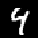
//yann.lecun.
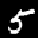
com/exdb/mnist/.
常出现的例子，包含 60,000 个手写数字 0 到 9 的示例。每个数字是大小为 28×28 的灰度图像，即包含
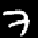
784 个像素，因此我们可以将此数据集中的每个图像解释为向量
x ∈ R^784。这些数字的示例如图 10.3 所示。
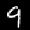
图 10.1 给出了如何使用单一坐标表示二维数据集的示例。在图 10.1(b) 中，我们选择忽略数据的 x₂ 坐标，因为它没有增加太多信息，所以压缩数据与图 10.1(a) 中的原始数据相似。我们本可以选择忽略 x₁ 坐标，但那样压缩数据就会与原始数据非常不同，数据中的大量信息会丢失。
如果我们将数据中的信息内容解释为数据集的”空间填充”程度，那么我们可以通过查看数据的分布来描述数据中包含的信息。从第 6.4.1 节中，我们知道方差是数据分布的指标，我们可以将 PCA 推导为一种降维算法，该算法最大化数据的低维表示中的方差，以保留尽可能多的信息。图 10.4 说明了这一点。
考虑第 10.1 节中讨论的设置，我们的目标是找到一个矩阵 B（参见 (10.3)），在通过将数据投影到由 B 的列 b₁, …, b_M 张成的子空间上来压缩数据时，保留尽可能多的信息。数据压缩后保留最多信息等价于在低维代码中捕获最大方差量 (Hotelling, 1933)。
备注。（中心化数据）对于 (10.1) 中的数据协方差矩阵，我们假设数据已中心化。我们可以在不失一般性的情况下做这个假设：假设 μ 是数据的均值。使用我们在第 6.4.4 节中讨论的方差性质，我们得到
V[z] = V[B⊤(x - μ)] = V[B⊤x - B⊤μ] = V[B⊤x]，(10.6)
即，低维代码的方差不依赖于数据的均值。因此，我们在本节的剩余部分假设数据的均值为 0，不失一般性。在这个假设下，低维代码的均值也是 0，因为 E[z] = E[B⊤x] = B⊤Ex = 0。♢
《机器学习数学》草稿 (2023-10-18)。反馈：https://mml-book.com。10.2 最大方差视角 321
图 10.4 PCA 找到一个低维子空间（直线），当数据（蓝色）投影到该子空间（橙色）时，保持尽可能多的方差（数据的分布）。
我们使用序列方法最大化低维编码的方差。我们首先寻找一个向量 b1 ∈ ℝD，使投影数据的方差最大化，即我们的目标是最大化
$$V_1 := \frac{1}{N}\sum_{n=1}^N z_{1n}^2$$
的方差，其中我们利用了数据的独立同分布假设，并将 z1n 定义为 xn ∈ ℝD 的低维表示 zn ∈ ℝM 的第一个坐标。注意 z 的第一个分量由下式给出：
z1n = b1⊤xn
即，它是 xn 在由 b1 张成的一维子空间上的正交投影的坐标（第3.8节）。我们将方程 (10.8) 代入方程 (10.7)，得到
$$V_1 = \frac{1}{N}\sum_{n=1}^N (b_1^\top x_n)^2 = \frac{1}{N}b_1^\top \sum_{n=1}^N x_n x_n^\top b_1$$
$$= b_1^\top \left(\frac{1}{N}\sum_{n=1}^N x_n x_n^\top\right) b_1 = b_1^\top S b_1$$
其中 S 是在方程 (10.1) 中定义的数据协方差矩阵。在方程 (10.9a) 中，我们使用了两个向量的点积对其参数是对称的这一事实，即 b1⊤xn = xn⊤b1。
注意任意增加向量 b1 的大小会增加 V1，即一个两倍长的向量 b1 可能导致 V1 增大四倍。因此，我们将所有解限制为 ∥b1∥2 = 1，这导致一个约束优化问题，其中我们寻找数据变化最大的方向。
在将解空间限制为单位向量的情况下，指向最大方差方向的向量 b1 可以通过以下约束优化问题找到：
maxb1b1⊤Sb1 subject to ∥b1∥22 = 1
遵循第7.2节，我们得到拉格朗日函数
L(b1, λ1) = b1⊤Sb1 + λ1(1 − b1⊤b1)
来解决这个约束优化问题。L 对 b1 和 λ1 的偏导数分别为
$$\frac{\partial L}{\partial b_1} = 2Sb_1 - 2\lambda_1 b_1, \quad \frac{\partial L}{\partial \lambda_1} = 1 - b_1^\top b_1$$
将这些偏导数设为0，我们得到关系式
Sb1 = λ1b1 b1⊤b1 = 1
通过与特征值分解的定义（第4.4节）比较，我们看到 b1 是数据协方差矩阵 S 的特征向量，拉格朗日乘子 λ1 扮演相应特征值的角色。这个特征向量性质 (10.13) 允许我们将方差目标 (10.10) 重写为
V1 = b1⊤Sb1 = λ1b1⊤b1 = λ1
即，投影到一维子空间上的数据方差等于与张成该子空间的基向量 b1 相关的特征值。因此，为了最大化低维编码的方差，我们选择与数据协方差矩阵的最大特征值相关的基向量。这个特征向量称为第一个主成分(principal component)。我们可以通过将坐标 z1n 映射回数据空间来确定主成分 b1 在原始数据空间中的影响/贡献，这给出了投影的数据点
x̃n = b1z1n = b1b1⊤xn ∈ ℝD
在原始数据空间中。
备注。 虽然 x̃n 是一个 D 维向量，但它只需要一个坐标 z1n 来相对于基向量 b1 ∈ ℝD 表示它。♢
假设我们已经找到了前 m − 1 个主成分，作为与前 m − 1 个最大特征值相关的 S 的 m − 1 个特征向量。由于 S 是对称的，谱定理（定理4.15）表明我们可以使用这些特征向量来构造 ℝD 的一个 (m − 1) 维子空间的正交归一化特征基。通常，第 m 个主成分可以通过从数据中减去前 m − 1 个主成分 b1, …, bm − 1 的影响来找到，从而试图找到压缩剩余信息的主成分。然后我们得到新的数据矩阵
$$\hat{X} := X - \sum_{i=1}^{m-1} b_i b_i^\top X = X - B_{m-1} X$$
其中 X = [x1, …, xN] ∈ ℝD × N 包含作为列向量的数据点，X̂ = [x̂1, …, x̂N] ∈ ℝD × N 在 (10.17) 中包含尚未被压缩的数据中的信息。矩阵 $I - B_{m-1} = I - \sum_{i=1}^{m-1} b_i b_i^\top$ 是一个投影矩阵，投影到由 b1, …, bm − 1 张成的子空间上。
备注（记号）。 在本章中，我们不遵循将数据 x1, …, xN 收集为数据矩阵的行的惯例，而是将它们定义为 X 的列。这意味着我们的数据矩阵
矩阵 X 是一个 D × N 矩阵，而不是传统的 N × D 矩阵。我们这样选择的原因是代数运算可以顺利进行，无需转置矩阵或将向量重新定义为左乘到矩阵上的行向量。♢
为了找到第 m 个主成分，我们最大化方差
1 [N] [N] 1 V X X [2] [⊤] [2] [⊤] ˆ = V [ z ] = z (10.18) = ( b x ˆ ) = b Sb , [m] [m] [mn] [m] [n] [m] [m] N N [n][=1] [n][=1]
受约束 [2] ∥ b ∥ = 1，其中我们遵循了与 [(10.9b)] 中相同的步骤 [m]
并定义 ˆ S 为变换数据集 X ˆ := {x ˆ1, . . . , x ˆ[N] } 的数据协方差矩阵。如前所述，当我们单独考虑第一个主成分时，我们解决一个约束优化问题并发现最优解 ˆ b [m] 是与 ˆ S 的最大特征值相关联的 S 的特征向量。
事实证明 b[m] 也是 S 的特征向量。更一般地，ˆ ˆ S 和 S 的特征向量集合是相同的。由于 S 和 S 都是对称的，我们可以找到特征向量的 ONB (谱定理 [4.15])，即，对于 S 和 ˆ S 都存在 ˆ D 个不同的特征向量。接下来，我们表明 ˆ S 的每个特征向量都是 S 的特征向量。假设我们已经找到了 S 的特征向量 ˆ b 1 , . . . , b [m] [−] 1。考虑 S 的特征向量 b[i]，即 Sb [i] = λ[i]b[i]。一般来说，
Sb ˆ 1 [⊤] 1 ˆ ˆ [⊤] [i] = X X b [i] = ( X − B [m] [−] 1 X )( X − B [m] [−] 1 X )b[i] (10.19a) N N = (S − SB[m][−]1 − B[m][−]1S + B[m][−]1SB[m][−]1)b[i] . (10.19b)
我们区分两种情况。如果 i ⩾ m，即 b[i] 是不在前 m − 1 个主成分中的特征向量，那么 b[i] 与前 m −1 个主成分正交，且 B[m][−]1b[i] = 0。如果 i < m，即 b[i] 在前 m − 1 个主成分中，那么 b[i] 是主子空间的基向量，B [m][−]1 投影到该子空间上。由于 b1, . . . , b[m][−]1 是这个主子空间的 ONB，我们得到 B[m] −b[i] = b[i]。这两种情况可以总结如下：
B [m][−]1b[i] = b[i] 如果 i < m , B[m][−]1b[i] = 0 如果 i ⩾ m . (10.20)
在情况 ˆ i ⩾ m 中，通过在 [(10.19b)] 中使用 [(10.20)]，我们得到 Sb[i] = (S − B ˆ [m] [−] 1 S ) b [i] = Sb [i] = λ [i] b [i]，即 b [i] 也是 S 的特征向量，特征值为 λ[i]。具体地，
Sb ˆ [m] = Sb[m] = λ[m]b[m] . [(10.21)]
方程 [(10.21)] 显示 b [m] 不仅是 S 的特征向量，也是 ˆ ˆ S 的特征向量。具体地，λ [m] 是 S 的最大特征值，λ[m] 是 S 的第 m 大特征值，两者都有相关联的特征向量 b[m]。
在情况 i < m 中，通过在 [(10.19b)] 中使用 [(10.20)]，我们得到
Sb ˆ[i] = (S − SB[m][−]1 − B[m][−]1S + B[m][−]1SB[m][−]1)b[i] = 0 = 0b[i] (10.22)
这意味着 ˆ b 1 , . . . , b [m] [−] 1 也是 S 的特征向量，但它们与特征值 [ˆ 0 相关联，所以 b 1 , . . . , b [m] [−] 1 张成 S 的零空间]。
总的来说，ˆ S 的每个特征向量也是 S 的特征向量。然而，如果 S 的特征向量是 (m − 1) 维主子空间的一部分，那么 ˆ S 的相关特征值为 0。
[这个推导表明在] [具有最大方差的] 通过关系 [(10.21)] 和 b [m][⊤]b[m] = 1，投影到第 m 个主成分上的数据方差为 [M 维子空间与]
[特征值分解之间] V = b [⊤] Sb = λ b [⊤] b = λ . (10.23) [存在密切联系] [m] [m] [m] [m] [m] [m] [m] [我们将在]
[这意味着当数据投影到 M 维子空间时，数据的方差等于与数据协方差矩阵相应特征向量相关联的特征值之和。] [第 10.4 节中] [重新讨论这种] [联系]
图 10.5 [MNIST “8” 训练] [数据的性质。(a)] [按降序排列的] [特征值；(b) 由] [与最大特征值] [相关联的主成分] [捕获的方差。]
50 500 40 400 [按降序排列的特征值] 30 值 [方差] 300 20 [特征] 200 [捕获的] 10 [主成分] 100 0 0 50 100 150 200 0 50 100 150 200 索引 [主成分数量]
图 10.6 [投影方法的] [图解：找到一个] [子空间（直线）] [使投影后（橙色）] [和原始（蓝色）] [数据之间差向量] [的长度最小化。]
取 MNIST 训练数据中的所有数字 “8”，我们计算数据协方差矩阵的特征值。图 [10.5(a)] 显示了数据协方差矩阵的 200 个最大特征值。我们看到只有少数特征值与 0 显著不同。因此，当将数据投影到由相应特征向量张成的子空间时，大部分方差仅由少数主成分捕获，如图 [10.5(b)] 所示。
总的来说，为了找到保留尽可能多信息的 R^D 的 M 维子空间，PCA 告诉我们选择 [(10.3)] 中矩阵 B 的列为与 M 个最大特征值相关联的数据协方差矩阵 S 的 M 个特征向量。PCA 用前 M 个主成分能够捕获的最大方差量为
[M] V[M] = X λ , (10.24) [m]
其中 λ[m] 是数据协方差矩阵 S 的 M 个最大特征值。因此，通过 PCA 数据压缩丢失的方差为
J := X λ = V − V . (10.25) [j] [D] [M] j=M+1
与这些绝对量不同，我们可以定义相对方差捕获率为 V[M]/V[D]，压缩丢失的相对方差为 1 − V[M]/V[D]。
在下文中，我们将推导 PCA 作为直接最小化平均重构误差的算法。这种视角允许我们将 PCA 解释为实现最优线性自编码器。我们将大量借鉴第 2 章和第 3 章的内容。
在上一节中，我们通过最大化投影空间中的方差来推导 PCA，以保留尽可能多的信息。在
©2023 M. P. Deisenroth, A. A. Faisal, C. S. Ong. Published by Cambridge University Press (2020).
326 主成分分析降维
图 10.7 简化投影设置。(a) 向量 x ∈ R²（红色十字）将被投影到由 b 张成的一维子空间 U ⊆ R²。(b) 显示 x 与一些候选向量 x̃ 之间的差异向量。
下文中，我们将研究原始数据 x[n] 与其重构 x̃[n] 之间的差异向量，并最小化这个距离，使得 x[n] 和 x̃[n] 尽可能接近。图 10.6 说明了这种设置。
假设一个（有序）正交标准基(ONB) B = (b₁, …, b[D]) of R[D]，即，b[i]ᵀb[j] = 1 当且仅当 i = j，否则为 0。
从第 2.5 节我们知道，对于 R[D] 的基 (b₁, …, b[D})，任何 x ∈ R[D] 都可以写成基向量的线性组合，即，
x = Σ(d=1 to D) ζ[d]b[d] = Σ(m=1 to M) ζ[m]b[m] + Σ(j=M+1 to D) ζ[j]b[j] (10.26)
对于合适的坐标 ζ[d] ∈ R。
我们有兴趣找到向量 x̃ ∈ R[D]，它们位于低维子空间 U ⊆ R[D] 中，dim(U) = M，使得
x̃ = Σ(m=1 to M) z[m]b[m] ∈ U ⊆ R[D] (10.27)
尽可能与 x 相似。注意此时我们需要假设 x̃ 的坐标 z[m] 和 x 的坐标 ζ[m] 不相同。
在下文中，我们确切地使用 x̃ 的这种表示来找到最优坐标 z 和基向量 b₁, …, b[M]，使得 x̃ 与原始数据点 x 尽可能相似，即，我们目标是最小化(欧几里得)距离 ‖x - x̃‖。图 10.7 说明了这种设置。
不失一般性，我们假设数据集 X = {x₁, …, x[N]}，x[n] ∈ R[D]，以 0 为中心，即，EX = 0。如果没有零均值假设，我们会得到完全相同的解，但符号会变得相当复杂。
我们有兴趣找到 X 到低维子空间 U ⊆ R[D] 的最佳线性投影，其中 dim(U) = M 且正交标准基向量为 b₁, …, b[M]。我们将这个子空间 U 称为主子空间。
数据点的投影表示为
x̃[n] := Σ(m=1 to M) z[mn]b[m] = Bz[n] ∈ R[D], (10.28)
其中 z[n] := [z₁[n], …, z[M][n]]ᵀ ∈ R[M] 是 x̃[n] 相对于基 (b₁, …, b[M]) 的坐标向量。更具体地说，我们有兴趣让 x̃[n] 与 x[n] 尽可能相似。
我们在下文中使用的相似性度量是 x 和 x̃ 之间的平方距离(欧几里得范数) ‖x - x̃‖²。因此我们定义目标为最小化平均平方欧几里得距离(重构误差)(Pearson, 1901)
J[M] := (1/N) Σ(n=1 to N) ‖x[n] - x̃[n]‖², (10.29)
其中我们明确表示投影数据的子空间维度为 M。为了找到这个最优线性投影，我们需要找到主子空间的正交标准基和投影相对于这个基的坐标 z[n] ∈ R[M]。
为了找到坐标 z[n] 和主子空间的 ONB，我们采用两步方法。首先，对于给定的 ONB (b₁, …, b[M])，我们优化坐标 z[n]；其次，我们找到最优的 ONB。
让我们首先找到投影 x̃[n] 的最优坐标 z₁[n], …, z[M][n]，其中 n = 1, …, N。考虑图 10.7(b)，其中主子空间由单个向量 b 张成。从几何角度讲，找到最优坐标 z 对应于找到线性投影 x̃ 相对于 b 的表示，该表示最小化 x̃ - x 之间的距离。从图 10.7(b) 可以清楚地看出，这将是正交投影，在下文中我们将确切地展示这一点。
我们假设 U ⊆ R[D] 的 ONB (b₁, …, b[M])。为了找到最优坐标
关于这个基，我们需要坐标 z[m] 的偏导数
∂J [M] ∂J[M] ∂ x ˜[n] = , (10.30a) ∂z[in] ∂x ˜[n] ∂z[in]
∂J [M] 2 [⊤] [1][×][D] = − ( x [n] − x ˜ [n] ) ∈ R , (10.30b) ∂ x ˜ [n] N
图 10.8 向量 x ∈ R² 到一维子空间的最优投影（接图 10.7）。 (a) 对于某个 x ˜ ∈ U，距离 ∥x − x ˜∥； (b) 最小化面板 (a) 中距离的向量 x ˜ 是其在 U 上的正交投影。投影 x ˜ 相对于张成 U 的基向量 b 的坐标是我们需要缩放 b 以”到达” x ˜ 的因子。
∂ [M] ! x ˜ ∂ X [n] [(10.28)] = z b = b (10.30c) ∂z [mn] [m] [i] ∂z [in] [in] [m][=1]
对于 i = 1, . . . , M，使得我们得到
∂J [M] [⊤] [[(10.30b)]] ! [M] [[(10.30c)]] [[(10.28)]] X [⊤] 2 2 = − (x[n] − x ˜[n] ) b[i] = − x[n] − z[mn]b[m] b[i] ∂z N [in] N [m] =1
(10.31a)
[ONB] [⊤] 2 [⊤] 2 [⊤] = − ( x [n] b [i] − z [in] b [i] b [i] ) = − ( x [n]b[i] − z[in]) . (10.31b) N N
由于 b[i]⊤b[i] = 1。将此偏导数设为 0 立即得到最优坐标
z [in] = x [n]⊤ b [i] = b [i]⊤x[n] (10.32)
对于 i = 1, . . . , M 和 n = 1, . . . , N。这意味着投影 x ˜[n] 的最优坐标 z[in] 是原始数据点 x[n] 在由 b[i] 张成的一维子空间上的正交投影（见第 3.8 节）的坐标。因此：
x[n] 的最优线性投影 x ˜[n] 是正交投影。x ˜[n] 相对于基 (b1, . . . , b[M]) 的坐标是 x[n] 在主子空间上的正交投影的坐标。
给定目标函数 (10.29)，正交投影是最佳线性映射。
(10.26) 中 x 的坐标 ζ[m] 和 (10.27) 中 x ˜ 的坐标 z[m] 对于 m = 1, . . . , M 必须相同，因为 U⊥ = span[b[M+1], . . . , b[D]] 是 U = span[b1, . . . , b[M]] 的正交补（见第 3.6 节）。
备注（具有标准正交基向量的正交投影）。让我们简要回顾第 3.8 节中的正交投影。如果 (b1, . . . , b[D]) 是 R^D 的标准正交基，那么
x ˜ = b[j] ( b[j]⊤b[j] )^{−1} b[j]⊤ x = b[j]b[j]⊤ x ∈ R^D (10.33)
是 x 在由第 j 个基向量张成的子空间上的正交投影，而 z[j] = b[j]⊤ x 是此投影相对于张成该子空间的基向量 b[j] 的坐标，因为 z[j]b[j] = x ˜。图 10.8(b) 说明了这种设置。
更一般地，如果我们想要投影到 R^D 的 M 维子空间上，我们得到 x 在具有标准正交基向量 b1, . . . , b[M] 的 M 维子空间上的正交投影为
x ˜ = B ( B⊤B )^{−1} B⊤ x = BB⊤x , (10.34)
其中我们定义了 B := [ b1, . . . , b[M] ] ∈ R^{D×M}。此投影相对于有序基 (b1, . . . , b[M]) 的坐标是 z := B⊤x，如第 3.8 节所讨论的。
我们可以将坐标视为投影向量在由 (b1, . . . , b[M]) 定义的新坐标系中的表示。注意，尽管 x ˜ ∈ R^D，我们只需要 M 个坐标 z1, . . . , z[M] 来表示这个向量；相对于基向量 (b[M+1], . . . , b[D]) 的其他 D − M 个坐标总是 0。♢
到目前为止，我们已经展示了对于给定的 ONB，我们可以通过正交投影到主子空间来找到 x ˜ 的最优坐标。接下来，我们将确定什么是最佳基。
为了确定主子空间的基向量 b1, . . . , b[M]，我们使用迄今为止的结果重新表述损失函数 (10.29)。这将使寻找基向量变得更容易。为了重新表述损失函数，我们利用之前的结果并得到
x ˜[n] = Σ[m=1]^M z[mn]b[m] = Σ[m=1]^M ( x[n]⊤b[m] )b[m] . (10.35)
我们现在利用点积的对称性，得到
x ˜[n] = Σ[m=1]^M b[m]b[m]⊤ x[n] . (10.36)
图 10.9 正交投影和位移向量。当将数据投影
[点] [x][n] [(蓝色)] [2] x [0] [到子空间] [U] 1 [,] [U] [上，我们得到] x [˜][n] [−][2]
[(橙色)。]
位移向量 [4] [−] x [˜] [n] [−] x [n] [完全位于]
补空间 [−][5] [0] [5] [U] [正交]
[2] [的]
由于我们通常可以将原始数据点 x[n] 写成所有基向量的线性组合，有
[D] ! [D] [D]
x X [[(10.32)]] X X [⊤] [⊤] = z b = ( x b ) b = b b x (10.37a)
[n] [dn] [d] [n] [d] [d] [d] [d] [n]
[d][=1] [d][=1] [d][=1]
[M] ! [D] !
= X [⊤] X [⊤] b b x + b b x , (10.37b)
[m] [m] [n] [j] [j] [n]
[m][=1] [j][=][M][+1]
其中我们将有 D 项的和分解为 M 项的和与 D − M 项的和。根据这个结果，我们发现位移向量 x [n] − x ˜[n]，即原始数据点与其投影之间的差向量，为
[D] !
x X [⊤] − x ˜ = b b x (10.38a) [n] [n] [j] [j] [n]
[j][=][M] [+1]
[D]
= X [⊤] ( x b )b . [(10.38b)]
[n] [j] [j]
[j][=][M][+1]
这意味着该差向量恰好是数据点在主子空间正交补上的投影：我们将 [(10.38a)] 中的矩阵 P [D] [⊤] 识别为执行此投影的投影矩阵 b b
[j][=][M] [+1] [j] [j]
。因此位移向量 x[n] − x ˜[n] 位于与主子空间正交的子空间中，如图 [10.9] 所示。
备注（低秩近似）。 在 [(10.38a)] 中，我们看到将 x 投影到 x ˜ 的投影矩阵为
[M]
X [⊤] [⊤] b b (10.39) = BB .
[m] [m]
[m][=1]
通过作为秩一矩阵 [[⊤] [[⊤]] b b 的和的构造，我们看到 BB 是]
[m] [m]
[《机器学习数学》草稿 (2023-10-18)。反馈：] [https://mml-book.com][.] [10.3 投影视角] [331]
对称的且具有秩 M。因此，平均平方重构误差也可以写成
N ∥x[n] − x ˜[n] ∥ = [⊤] x [n] − BB x [n] (10.40a) N 1 [N] [N] X [2] X [2] 1
[n][=1] [n][=1]
1 [N]
= [⊤] X [2] (I (10.40b) − BB )x[n] .
N [n][=1]
寻找正交标准基向量 b1, . . . , b[M]，使原始数据 x [n] 与其投影 x ˜[n] 之间的差最小，等价于寻找单位矩阵 I 的最佳秩-M 近似 [[⊤] [[近似]] BB
[[PCA 找到最佳]] [秩-] [M] [[单位矩阵的]]
（见第 [4.6 节]）。♢
现在我们有了重新表述损失函数 [(10.29)] 的所有工具。
[N] [2]
J X X [⊤] [M] = ∥ x [n] − x ˜ [n] ∥ = ( bx [n] ) b [j] . (10.41) [j] N 1 [N] [D] X [2] [[(10.38b)]] 1
[n] N [=1] [n] [=1] [j] [=] [M] [+1]
现在我们显式计算平方范数并利用 b[j] 构成 ONB 的事实，得到
1 [N] [D] [N] [D] 1
J X X [⊤] X X [2] [⊤] [⊤] = ( b x ) = b x bx (10.42a)
[M] [j] [n] [j] [n] [j] [n] N N
[n][=1] [j][=][M] [+1] [n][=1] [j][=][M][+1]
1 [N] [D]
= X X [⊤] [⊤] b x xb , (10.42b)
N [j] [n] [n] [j]
[n][=1] [j][=][M] [+1]
其中在最后一步我们利用了点积的对称性来写成 [⊤] [⊤] b x = xb。现在我们交换求和顺序并得到
[j] [n] [n] [j]
[D] ! [N] [D] 1
J X X X [⊤] [⊤] [⊤] = b x x b = bSb (10.43a)
[M] [j] [n] [n] [j] [j] [j] N
[j][=][M][+1] [n][=1] [j][=][M][+1]
| {z }
[=:][S]
[D] [D] [D]
= X X X [⊤] [⊤] [⊤] tr ( b tr Sb ) = tr ( Sb b ) = b b S ,
[j] [j] [j] [j] [j] [j]
[j][=][M][+1] [j][=][M] [+1] [j][=][M] [+1]
| {z }
[投影矩阵]
(10.43b)
其中我们利用了迹算子 tr(·)（见 [(4.18)]）是线性的且对其参数的循环置换不变的性质。由于我们假设数据集是中心化的，即 E[ X ] = 0，我们将 S 识别为数据协方差矩阵。由于 [(10.43b)] 中的投影矩阵被构造为秩一矩阵 [⊤] b b 的和，它本身具有秩 D − M。
[j] [j]
方程 [(10.43a)] 表明我们可以等价地将平均平方重构误差表述为数据的协方差矩阵，
[©2023 M. P. Deisenroth, A. A. Faisal, C. S. Ong. 由 Cambridge University Press 于 2020 年出版。]
[332] [[主成分分析的降维]]
投影到主子空间的正交补上。因此，最小化平均平方重构误差等价于最小化数据投影到我们忽略的子空间（即主子空间的正交补）上时的方差。等价地，我们最大化在主子空间中保留的投影的方差，这将投影损失直接链接到第 [10.2] 节讨论的 PCA 的最大方差表述。但这也意味着我们将得到与最大方差视角所得到的相同解。因此，我们略去与第 [10.2] 节中相同的推导，并从投影视角的角度总结前面的结果。
当投影到 M 维主子空间时，平均平方重构误差为
[最小化平均平方] [重构误差等价于] [最小化数据协方差] [矩阵投影到主子空间] [正交补上。] [最小化平均平方] [重构误差等价于] [最大化投影数据的] [方差。]
[D]
J X = λ , (10.44)
[M] [j]
[j][=][M] [+1]
其中 λ[j] 是数据协方差矩阵的特征值。因此，为了最小化 [(10.44)]，我们需要选择最小的 D − M 个特征值，这意味着它们对应的特征向量是主子空间正交补的基。因此，这意味着主子空间的基包含特征向量
b1, . . . , b[M] 是与数据协方差矩阵最大M个特征值相关联的特征向量。
示例 10.3 (MNIST数字嵌入)
图 10.10
[MNIST数字嵌入] [0]
[(蓝色) 和] 1
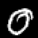
[(橙色) 在一个]
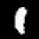
[二维]
[主子空间中]
[使用PCA。四个]
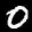
[数字”0”和”1”的嵌入在]
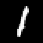
[主子空间中以红色突出显示]
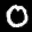
[以及它们]
[对应的]
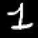
[原始数字。]
图10.10可视化了MNIST数字”0”和”1”的训练数据，这些数据嵌入在由前两个主成分张成的向量子空间中。我们观察到”0”(蓝点)和”1”(橙点)之间相对清晰的分离，并且可以看到每个单独簇内的变化。
图中以红色突出显示了数字”0”和”1”在主子空间中的四个嵌入，并显示了它们对应的原始数字。该图显示”0”集合内的变化明显大于”1”集合内的变化。
在前面的章节中，我们获得了主子空间的基，它是与数据协方差矩阵最大特征值相关联的特征向量：
1 [N] 1 S = X⊤X⊤ = Σ xnxn⊤, (10.45) N [n=1] N
X = [x1, . . . , xN] ∈ R^(D×N). (10.46)
注意X是一个D × N矩阵，即它是”典型”数据矩阵的转置(Bishop, 2006; Murphy, 2012)。为了获得S的特征值(和对应的特征向量)，我们可以采用两种方法：
使用特征分解或SVD来计算特征向量。
我们执行特征分解(参见第4.2节)并直接计算S的特征值和特征向量。
我们使用奇异值分解(参见第4.5节)。由于S是对称的且可以分解为1/N XX⊤(忽略因子1/N)，S的特征值是X的奇异值的平方。
更具体地，X的SVD为：
X⊤ = UΣV⊤, (10.47) |{z} |{z} |{z} |{z} D×N D×D D×N N×N
其中U ∈ R^(D×D)和V ∈ R^(N×N)是正交矩阵，Σ ∈ R^(D×N)是一个矩阵，其唯一非零项是奇异值σii ≥ 0。因此有：
S = 1/N XX⊤ = 1/N UΣV⊤VΣ⊤U⊤ = 1/N UΣΣ⊤U⊤. (10.48) |{z} =IN
根据第4.5节的结果，我们得到U的列是XX⊤(因此也是S)的特征向量。此外，S的特征值λd与X的奇异值通过以下关系相关联：
λd = σd²/N. (10.49)
S的特征值与X的奇异值之间的这种关系提供了最大方差观点(第10.2节)与奇异值分解之间的联系。
为了最大化投影数据的方差(或最小化平均平方重构误差)，PCA选择(10.48)中U的列作为与数据协方差矩阵S的M个最大特征值相关联的特征向量，这样我们将U识别为(10.3)中的投影矩阵B，它将原始数据投影到维度为M的低维子空间上。Eckart-Young定理(第4.6节中的定理4.25)提供了估计低维表示的直接方法。考虑最佳秩-M近似：
X̃M := argmin ||X - A||2 ∈ R^(D×N) (10.50) rk(A)≤M
其中||·||2是在(4.93)中定义的谱范数。Eckart-Young定理指出X̃M是通过在前M个奇异值处截断SVD得到的。换句话说，我们得到：
X̃M⊤ = UMΣMVMᵀ ∈ R^(D×N) (10.51) |{z} |{z} |{z} D×M M×M M×N
其中正交矩阵UM := [u1, . . . , uM] ∈ R^(D×M)和VM := [v1, . . . , vM] ∈ R^(N×M)，以及对角矩阵ΣM ∈ R^(M×M)，其对角项是X的M个最大奇异值。
寻找特征值和特征向量在其他需要矩阵分解的基础机器学习方法中也很重要。理论上，正如我们在第4.2节中讨论的，我们可以将特征值作为特征多项式的根来求解。然而，对于大于4×4的矩阵，这是不可能的，因为我们需要找到5次或更高次多项式的根。然而，Abel-Ruffini定理(Ruffini, 1799; Abel, 1826)指出，对于5次或更高次的多项式，不存在这个问题的代数解。因此，在实践中，我们使用迭代方法求解特征值或奇异值，这些方法在所有现代线性代数包中都有实现(如np.linalg.eigh或np.linalg.svd)。
在许多应用中(如本章介绍的PCA)，我们只需要少数几个特征向量。计算完整分解然后丢弃前几个之外所有特征值对应的特征向量是浪费的。事实证明，如果我们只对前几个特征向量(具有最大特征值)感兴趣，那么迭代过程
直接优化这些特征向量，在计算上比完整的特征分解（或 SVD）更高效。在只需要第一个特征向量的极端情况下，一种称为 幂迭代 的简单方法非常高效。幂迭代选择一个不在 S 的零空间中的随机向量 x[0]，然后按照以下迭代：
Sx[k] x[k+1] = ————————, k = 0, 1, . . . . (10.52) ∥Sx[k]∥
这意味着向量 x[k] 在每次迭代中都被 S 相乘，然后被归一化，即我们总是有 ∥x[k]∥ = 1。如果 S 是可逆的，只需确保 x[0] ≠ 0 就足够了。这个向量序列收敛到与 S 的最大特征值相关联的特征向量。原始的 Google PageRank 算法（Page et al., 1999）使用这样的算法基于超链接对网页进行排名。
为了执行 PCA，我们需要计算数据协方差矩阵。在 D 维度中，数据协方差矩阵是一个 D × D 矩阵。计算这个矩阵的特征值和特征向量在计算上是昂贵的，因为它与 D 成三次方比例缩放。因此，如我们之前讨论的，PCA 在非常高的维度中将是不可行的。例如，如果我们的 x[n] 是具有 10,000 个像素的图像（例如，100 × 100 像素图像），我们需要计算一个 10,000 × 10,000 协方差矩阵的特征分解。在下文中，我们为数据点数量远少于维度的情况（即 N ≪ D）提供了解决这个问题的方案。
假设我们有一个中心化的数据集 x1, . . . , x[N], x[n] ∈ R^D。那么数据协方差矩阵为：
S = (1/N)XX⊤ ∈ R^(D×D), (10.53)
其中 X = [x1, . . . , x[N]] 是一个 D × N 矩阵，其列是数据点。
我们现在假设 N ≪ D，即数据点的数量小于数据的维度。如果没有重复的数据点，协方差矩阵 S 的秩是 N，所以它有 D − N + 1 个值为 0 的特征值。直观上，这意味着存在一些冗余。在下文中，我们将利用这一点，将 D × D 协方差矩阵转换为一个所有特征值都为正的 N × N 协方差矩阵。
在 PCA 中，我们得到特征向量方程：
Sb[m] = λ[m]b[m], m = 1, . . . , M, (10.54)
其中 b[m] 是主子空间的基向量。让我们稍微重写这个方程：使用在 (10.53) 中定义的 S，我们得到：
Sb[m] = (1/N)XX⊤b[m] = λ[m]b[m]. (10.55)
我们现在从左侧乘以 X⊤ ∈ R^(N×D)，得到：
(1/N)X⊤XX⊤b[m] = λ[m]X⊤b[m] ⇐⇒ (1/N)X⊤Xc[m] = λ[m]c[m], (10.56) ⏟ ⏟ N×N =:c[m]
我们得到一个新的特征向量/特征值方程：λ[m] 仍然是特征值，这证实了我们在第 4.5.3 节的结果，即 XX⊤ 的非零特征值等于 X⊤X 的非零特征值。我们得到与 λ[m] 相关联的矩阵 (1/N)X⊤X ∈ R^(N×N) 的特征向量为：
c[m] := X⊤b[m]。假设我们没有重复的数据点，这个矩阵的秩为 N 且是可逆的。这也意味着 (1/N)X⊤X 具有与数据协方差矩阵 S 相同的（非零）特征值。但这现在是一个 N × N 矩阵，所以我们可以比原始的 D × D 数据协方差矩阵更高效地计算特征值和特征向量。
现在我们有了 (1/N)X⊤X 的特征向量，我们将恢复原始的特征向量，这些对于 PCA 仍然需要。目前，我们知道 (1/N)X⊤X 的特征向量。如果我们用 X 左乘我们的特征值/特征向量方程，我们得到：
(1/N)XX⊤Xc[m] = λ[m]Xc[m] (10.57) ⏟ S
我们再次恢复数据协方差矩阵。这现在也意味着我们恢复了 Xc[m] 作为 S 的特征向量。
备注。 如果我们想应用在第 10.6 节中讨论的 PCA 算法，我们需要将 S 的特征向量 Xc[m] 归一化，使它们的范数为 1。♢
在下文中，我们将通过一个运行示例来详细介绍 PCA 的各个步骤，这在图 10.11 中总结。我们给定一个二维数据集（图 10.11(a)），我们想使用 PCA 将其投影到一维子空间。
均值减法 我们首先通过计算数据集的均值 µ 并从每个数据点中减去它来中心化数据。这确保数据集的均值为 0（图 10.11(b)）。均值减法不是严格必要的，但减少了数值问题的风险。
标准化 将数据点除以数据集在每个维度 d = 1, . . . , D 上的标准差 σ[d]。现在数据是无单位的，并且沿每个轴的方差为 1，这由图 10.11(c) 中的两个箭头表示。这一步完成了数据的标准化。
协方差矩阵的特征分解 计算数据协方差矩阵及其特征值和相应的特征向量。由于协方差矩阵是对称的，谱定理（定理 4.15）表明我们可以找到特征向量的 ONB。在图 10.11(d) 中，特征向量按相应特征值的大小进行缩放。
图 10.11 PCA 的步骤。(a) 原始数据集；
x [[2] [[2][.][5] [2][.][5] [2][.][5] [(b) 居中;] [2] [2]] x x [(c) 除以] [0] [.] [0] [0] [.] [0] [0] [.] [0]]
[标准差;]
[−][2][.][5] [−][2][.][5] [−][2][.][5] [(d) 特征值分解-]
[0] [[；(e) 投影;] [5] [0] [5] [0] [5]]
[(a) 原始数据集。] [[原始数据空间。] [(b) 步骤1：通过从每个] [(c) 步骤2：除以标准差]]
[数据点减去均值进行居中。] [使数据变为无量纲。数据在] [每个轴上的方差为1。]
5[.][0] [5][.][0] [5][.][0]
[2][.][5] [2][.][5] [2][.][5]
[0][.][0] [0][.][0] [0][.][0]
[−][2][.][5] [−][2][.][5] [−][2][.][5]
[0] [5] [0] [5] [0] [5]
[(d) 步骤3：计算特征值] [(e) 步骤4：将数据投影到] [(f) 撤销标准化并将投影数据] [和特征向量（箭头）] [主子空间上。] [移回到原始数据空间] [数据协方差矩阵的] [从(a)中。]
对应的特征值。较长的向量跨越主子空间，我们用U表示。数据协方差矩阵由椭圆表示。
我们可以将任何数据点x ∈ R投影到主子空间：为了正确做到这一点，我们需要使用训练数据在第d维的均值µ[d]和标准差σ[d]对x进行标准化，使得
x[(][d][)] µ − x [(][d][)] [∗] [d] ← = 1 [∗] , d , . . . , D , (10.58) σ[d]
其中[(][d][)]x是x的第d个分量。我们获得投影为
x [⊤] ˜ = BBx (10.59) [∗] [∗]
坐标为
z [⊤] = Bx (10.60) [∗] [∗]
相对于主子空间的基。这里，B是包含与数据协方差矩阵最大特征值相关的特征向量作为列的矩阵。PCA返回坐标[(10.60),]而不是投影x[∗]。
[©2023 M. P. Deisenroth, A. A. Faisal, C. S. Ong. Published by Cambridge University Press (2020).]
标准化我们的数据集后，[(10.59)]只在标准化数据集的上下文中产生投影。为了在原始数据空间（即标准化之前）中获得我们的投影，我们需要撤销标准化[(10.58)]并在加上均值之前乘以标准差，使得我们获得
x[(][d][)] [(][d][)] ˜σ ← x ˜ µ , . . . , D . (10.61) + , d = 1 [∗] [∗] [d] [d]
图[10.11(f)]显示了在原始数据空间中的投影。
示例10.4（MNIST数字：重构）
接下来，我们将PCA应用于MNIST数字数据集，该数据集包含60,000个手写数字0到9的样本。每个数字是一个28×28大小的图像，即包含784个像素，因此我们可以将此数据集中的每个图像解释为向量[784] x ∈ R。这些数字的示例显示在图[10.3]中。
图10.12 [效果]
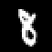
[增加主成分] [原始] [数量对重构的影响。]
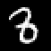
[PC: 1]
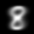
[PC: 10]
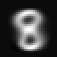
[PC: 100]

[PC: 500]
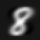
为了说明目的，我们将PCA应用于MNIST数字的一个子集，
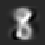
并且我们专注于数字”8”。我们使用了5,389个数字”8”的训练图像，
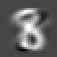
并按照本章详述的方法确定了主子空间。然后我们使用学习到的
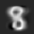
投影矩阵来重构一组测试图像，如图[10.12]所示。图[10.12]的第一行
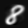
显示了测试集中四个原始数字的集合。下面的行显示了当使用
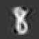
维度为1、10、100和500的主子空间时这些确切数字的重构。
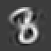
我们看到即使使用一维主子空间，我们也能得到原始数字相当
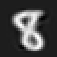
不错的重构，但是模糊且通用。随着主成分(PC)数量的增加，
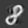
重构变得更清晰，更多细节得到体现。使用500个主成分，

我们有效地获得了近乎完美的重构。如果我们选择784个PC，
我们将恢复精确的数字而没有任何压缩损失。
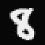
图[10.13]显示了平均平方重构误差，即
1 [N] [D] X [2] X ∥ x − x ˜ ∥ = λ , (10.62) N [n] [n] [i] [n][=1] [i][=][M] [+1]
作为主成分数量M的函数。我们可以看到主成分的重要性迅速下降，通过添加更多PC只能获得边际收益。这完全符合我们在图[10.5]中的观察，我们发现投影数据的大部分方差仅由少数几个主成分捕获。使用大约550个PC，我们基本上可以完全重构包含数字”8”的训练数据（边界周围的一些像素没有变化，因为它们始终是黑色的）。
图10.13
[误差] [500] [平均平方]
[重构误差]
[400]
[作为主成分]
[数量的函数。]
[300]
[重构的]
[平均平方]
[200]
[重构误差]
[平方] [[是正交] [100]]
[特征值的和]
[平均] [0]
[Av] [[complement of the] [0] [200] [400] [600] [800]]
[PC数量] [[主子空间。]]
10.7 潜变量视角
在前面的章节中，我们没有使用任何概率模型的概念来推导PCA，而是使用了最大方差和投影视角。一方面，这种方法可能很有吸引力，因为它允许我们回避概率理论带来的所有数学困难，但另一方面，概率模型将为我们提供更多的灵活性和有用的见解。更具体地说，概率模型将
配备一个似然函数，我们可以明确处理噪声观测（我们之前甚至没有讨论过）
允许我们通过边际似然进行贝叶斯模型比较，如第[8.6]节所讨论的
将PCA视为生成模型，这允许我们模拟新数据
[©2023 M. P. Deisenroth, A. A. Faisal, C. S. Ong. Published by Cambridge University Press (2020).]
[340] [[主成分分析降维]]
允许我们与相关算法建立直接联系通过应用贝叶斯定理处理随机缺失的数据维度
给我们一个新数据点新颖性的概念
给我们一个有原则的方式来扩展模型，例如，扩展到PCA模型的混合
将我们在前面章节中推导的PCA作为特殊情况允许通过边际化模型参数进行完全贝叶斯处理
通过引入连续值潜变量[M] z ∈ R，可能将PCA表述为概率潜变量模型。[Tipping and Bishop] [概率PCA] [(1999)]提出了这种潜变量模型作为概率PCA(PPCA)。[PPCA] [PPCA解决了上述大部分问题，我们通过最大化投影空间中的方差或通过最小化重构误差获得的PCA解]
是在无噪声设置中最大似然估计的特殊情况。
10.7.1 生成过程和概率模型
在PPCA中，我们明确写出线性降维的概率模型。为此我们假设一个连续潜变量
z ∈ [M] R具有标准正态先验p(z) = N(0, I)和潜变量与观测x数据之间的线性关系，其中
x [D] = Bz + µ + ϵ ∈ R , (10.63)
其中ϵ ∼ N [[2] [[D][×][M]] (0, σ I)是高斯观测噪声，B ∈ R]
和[D] µ ∈ R描述从潜变量到观测变量的线性/仿射映射。因此，PPCA通过以下方式连接潜变量和观测变量：
p [2] [2] ( x | z , B , µ , σ ) = N (x | Bz + µ , σ I) . (10.64)
总体上，PPCA诱导以下生成过程：
z[n] ∼ N (z | 0 , I) (10.65)
x [2] | z ∼ N (x | Bz + µ , σ I) (10.66) [n] [n] [n]
为了生成在给定模型参数下典型的数据点，我们[祖先采样]遵循祖先采样方案：我们首先从p(z)中采样一个潜变量z[n]。然后我们在[(10.64)]中使用z[n]来采样一个条件于
采样的z[n]的数据点，即x[n] ∼ [2] p ( x | z [n] , B , µ , σ)。
这个生成过程允许我们写出概率模型（即，所有随机变量的联合分布；见第[8.4]节）为
p [2] [2] ( x , z | B , µ , σ ) = p ( x | z , B , µ , σ)p(z) , (10.67)
这立即给出了图[10.14]中的图形模型，使用第[8.5]节的结果。
[Draft (2023-10-18) of “Mathematics for Machine Learning”. Feedback:] [https://mml-book.com][.] [10.7 潜变量视角] [341]
[图10.14]
[z][n] [[概率PCA的]]
[图形模型。]
[观测] [x][n]
[B] [µ] [明确依赖于]
[相应的]
x [[潜变量] [σ]]
[n] [[] [z] [n] [0] [∼ N] [,] [I]][。]
[模型参数]
[n] [= 1][, . . . , N]
[B][,][µ] [和] [似然]
[参数] [σ] [在]
备注。 注意连接潜变量[[数据集中共享。]] z和观测数据x的箭头方向：箭头从z指向x，这意味着PPCA模型假设高维观测x有一个低维潜在原因z。最终，我们显然有兴趣在给定一些观测的情况下找出关于z的一些信息。为了达到这个目标，我们将应用贝叶斯推理来隐式地”反转”箭头，从观测到潜变量。♢
例10.5（使用潜变量生成新数据）
[图10.15]
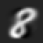
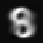
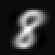
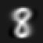
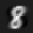
图[10.15]显示了使用二维主子空间时PCA找到的MNIST数字”8”的潜坐标（蓝点）。我们可以查询这个潜空间中的任何向量z[∗]并生成一个类似数字”8”的图像x ˜[∗] = Bz[∗]。我们展示了八个这样的生成图像及其相应的潜空间表示。根据我们查询潜空间的位置，生成的图像看起来不同（形状、旋转、大小等）。如果我们查询远离训练数据的地方，我们会看到越来越多的伪影，例如左上角和右上角的数字。注意这些生成图像的内在维度只有二。
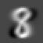
[©2023 M. P. Deisenroth, A. A. Faisal, C. S. Ong. Published by Cambridge University Press (2020).]
[342] [[主成分分析降维]]
10.7.2 似然和联合分布
[似然确实]
不依赖于潜在变量z。利用第6章的结果，我们通过积分去除潜在变量z来获得这个概率模型的likelihood（见8.4.3节）
因此
Z
p(x|B,µ,σ²) = p(x|z,B,µ,σ²)p(z)dz (10.68a)
Z
= N(x|Bz + µ, σ²I)N(z|0,I)dz . (10.68b)
从6.5节我们知道，这个积分的解是一个Gaussian分布，其均值为
Ex = E[Bz + µ] + E[ϵ] = µ (10.69)
协方差矩阵为
Vx = V[Bz + µ] + V[ϵ] = V[Bz] + σ²I (10.70a)
= BV[z]B⊤ + σ²I = BB⊤ + σ²I . (10.70b)
(10.68b)中的likelihood可以用于模型参数的maximum likelihood或MAP估计。
注释. 我们不能使用(10.64)中的条件分布进行maximum likelihood估计，因为它仍然依赖于潜在变量。我们进行maximum likelihood（或MAP）估计所需的likelihood函数应该只是数据x和模型参数的函数，但不能依赖于潜在变量。◊
从6.5节我们知道，Gaussian随机变量z和它的线性/仿射变换x = Bz是联合Gaussian分布的。我们已经知道边际分布p(z) = N(z|0,I)和p(x) = N(x|µ, BB⊤ + σ²I)。缺失的交叉协方差由下式给出
Cov[x,z] = Cov[Bz + µ,z] = BCov[z,z] = B . (10.71)
因此，PPCA的概率模型，即潜在和观测随机变量的联合分布明确由下式给出
p(x,z|B,µ,σ²) = N([x/z], [µ/0], [BB⊤ + σ²I B/B⊤ I]), (10.72)
其中均值向量长度为D + M，协方差矩阵大小为(D + M) × (D + M)。
(10.72)中的联合Gaussian分布p(x,z|B,µ,σ²)允许我们通过应用6.5.1节的Gaussian条件化规则来立即确定后验分布p(z|x)。给定观测x的潜在变量的后验分布为
p(z|x) = N(z|m,C), (10.73)
m = B⊤(BB⊤ + σ²I)⁻¹(x - µ), (10.74)
C = I - B⊤(BB⊤ + σ²I)⁻¹B . (10.75)
注意后验协方差不依赖于观测数据x。对于数据空间中的新观测x，我们使用(10.73)来确定相应潜在变量z的后验分布。协方差矩阵C允许我们评估embedding的置信度。具有小行列式（测量体积）的协方差矩阵C告诉我们潜在embedding z相当确定。如果我们获得一个具有很大方差的后验分布p(z|x*)，我们可能面临一个outlier。然而，我们可以探索这个后验分布来理解在这个后验下其他什么数据点x是合理的。为此，我们利用PPCA底层的生成过程，它允许我们通过生成在这个后验下合理的新数据来探索潜在变量上的后验分布：
从潜在变量上的后验分布(10.73)中采样一个潜在变量z* ∼ p(z|x*)。
从(10.64)中采样一个重构向量x̃* ∼ p(x|z*,B,µ,σ²)。
如果我们多次重复这个过程，我们可以探索潜在变量z*上的后验分布(10.73)及其对观测数据的影响。采样过程有效地假设了在后验分布下合理的数据。
我们从两个角度推导了PCA：(a) 最大化投影空间中的方差；(b) 最小化平均重构误差。然而，PCA也可以从不同的角度解释。让我们回顾一下我们所做的：我们取高维数据x ∈ R^D，使用矩阵B⊤找到低维表示z ∈ R^M。B的列是与最大特征值相关联的数据协方差矩阵S的特征向量。一旦我们有了低维表示z，我们可以得到它的高维版本（在原始数据空间中）为x ≈ x̃ = B⊤z = B⊤Bx ∈ R^D，其中B⊤B是一个投影矩阵。
我们也可以将PCA视为线性auto-encoder，如图10.16所示。auto-encoder将数据x^(n) ∈ R^D编码为code z^(n) ∈ RM，并将其解码为类似于x(n)的x̃^(n)。从数据到code的映射称为encoder，从code回到原始数据空间的映射称为decoder。如果我们考虑线性映射，其中
code由z^(n) = B⊤x^(n) ∈ RM给出，我们有兴趣最小化数据x(n)和其重构x̃^(n) = Bz^(n), n = 1,…,N之间的平均平方误差，我们得到
1/N ∑(n=1 to N) ||x^(n) - x̃^(n)||² = 1/N ∑(n=1 to N) ||x^(n) - B⊤Bx^(n)||² . (10.76)
这意味着我们最终得到与[(10.29)]中相同的目标函数，我们在第[10.3]节中讨论过，因此当我们最小化平方自编码损失时，我们得到PCA解。如果我们用非线性映射替换PCA的线性映射，我们就得到一个非线性自编码器(auto-encoder)。
这方面的一个突出例子是深度自编码器(deep auto-encoder)，其中线性函数被深度神经网络所替代。在这种情况下，编码器[recognition network]也被称为识别网络(recognition network)或推理网络(inference network)，而[inference network]解码器也被称为生成器(generator)。[generator] [PCA的另一种解释与信息论相关。我们可以]
将代码视为原始数据点的较小或压缩版本。当我们使用代码重构原始数据时，我们无法得到完全相同的数据点，而是得到一个略微失真或有噪声的版本[代码是][它的。这意味着我们的压缩是”有损的”。直观上，我们希望]
[原始数据的][最大化原始数据和低维]
[压缩版本。][代码之间的相关性。更正式地说，这与互信息(mutual information)有关。]
然后，我们将通过最大化互信息(mutual information)得到我们在第[10.3]节中讨论的PCA的相同解，互信息是信息论中的核心概念[(MacKay, 2003).]
在我们对PPCA的讨论中，我们假设模型的参数，即[2] B、µ和似然参数σ是已知的。[Tipping]
[and Bishop (1999)]描述了如何在PPCA设置中推导这些参数的最大似然估计(注意我们在本章中使用不同的记号)。当将D维数据投影到M维子空间时，最大似然参数为
1 [N]
µ X = x , (10.77)
[ML] [n] N
[n][=1]
B [2] 1 [ML] [2] = T ( Λ − σ I ) R , (10.78)
1 [D]
σ [2] X = λ , (10.79)
[ML] [j] D − M
[j][=][M][+1]
其中T ∈ [D][×][M] R包含数据协方差矩阵的M个特征向量，[[2] [矩阵] [Λ] [−] [σ]][I]
Λ [M] [×][M] [在[(10.78)]中] = diag( λ 1 , . . . , λ [M] ) ∈ R是一个对角矩阵，其对角线上有与主轴相关的特征值[保证是] [M] [×] [M]，R ∈ R是[正半定的][一个任意的正交矩阵。最大似然解B [ML]在任意正交变换下是] [因为最小的]唯一的，例如，我们可以将B [[数据协方差的]][ML]右乘以任何旋转矩阵R，使得[(10.78)]本质上是一个] [特征值]
奇异值分解(参见第[4.5]节)。证明的概要由[Tipping and Bishop (1999).]给出。[[矩阵从下方]]
[[被噪声方差]] [[2] [σ]][限定。]
在[(10.77)]中给出的µ的最大似然估计是数据的样本均值。在[(10.79)]中给出的观测噪声方差[2] σ的最大似然估计量是主子空间正交补中的平均方差，即，我们无法用前M个主成分捕获的平均剩余方差被视为观测噪声。
在无噪声极限σ → 0的情况下，PPCA和PCA提供相同的解：由于数据协方差矩阵S是对称的，它可以被对角化(参见第[4.4]节)，即，存在S的特征向量矩阵T使得
S − = T Λ T . (10.80)
在PPCA模型中，数据协方差矩阵是Gaussian似然[2] [⊤] [2] p ( x | B , µ , σ )的协方差矩阵，即BB + σI，参见[(10.70b).]对于[⊤] σ → 0，我们得到BB，因此这个数据协方差必须等于PCA数据协方差(及其在[(10.80)]中给出的因式分解)，使得
Cov[ [−] 1 1 [⊤] X ] = T ΛT = BB ⇐⇒ B = T Λ [2] R , (10.81)
即，我们得到σ = 0时[(10.78)]中的最大似然估计。
从[(10.78)]和[(10.80),]可以清楚地看出，(P)PCA执行数据协方差矩阵的分解。
在流式设置中，数据按顺序到达，建议使用迭代期望最大化(EM)算法进行最大似然估计[(Roweis, 1998).]
为了确定潜在变量的维数(代码的长度，我们投影数据的低维子空间的维数)，[Gavish and Donoho (2014)]建议使用启发式方法，如果我们能估计数据的噪声方差[2] σ，我们应该
[√]
丢弃所有小于[4][σ] [D]的奇异值。或者，我们可以使用[√]
(嵌套)交叉验证(第[8.6.1]节)或贝叶斯模型选择准则(在第[8.6.2]节中讨论)来确定数据固有维数的良好估计[(Minka, 2001b).]
类似于我们在第9章中对线性回归的讨论，我们可以在模型参数上放置先验分布并将它们积分出去。通过这样做，我们(a)避免了参数的点估计以及这些点估计带来的问题(参见第[8.6]节)，并且(b)允许自动选择潜在空间的适当维数M。在这种贝叶斯PCA(Bayesian PCA)中，由[Bishop (1999),]提出，
[Bayesian PCA]在模型参数上放置先验[2] p ( µ , B , σ)。生成过程允许我们积分出模型参数而不是基于它们进行条件化，这解决了过拟合问题。由于这种积分在解析上是难以处理的，[Bishop (1999)]提议使用近似推理方法，如MCMC或变分推理。我们参考
的工作以及[Blei et al. (2017)]的工作获取这些近似推理技术的更多细节。
在PPCA中，我们考虑了线性模型p(x[n] | z[n]) = N(x[n] | Bz[n] + μ, σ²I)，先验为p(z[n]) = N(0, I)，其中所有观测维度都受到相同噪声量的影响。如果我们允许每个观测维度d具有不同的方差σ²[d]，我们就得到了因子分析(FA) [(Spearman, 1904; Bartholomew et al., 2011)]。这意味着FA比PPCA为似然函数提供了更多的灵活性，但仍然强制数据通过模型参数B、μ来解释。然而，FA不再允许闭式最大似然解，因此我们需要使用迭代方案，如期望最大化算法来估计模型参数。虽然在PPCA中所有驻点都是全局最优解，但这在FA中不再成立。与PPCA相比，FA在我们缩放数据时不会改变，但如果我们旋转数据，它会返回不同的解。
一个与PCA密切相关的算法是独立成分分析(ICA [(Hyvarinen et al., 2001)])。再次从潜变量视角开始p(x[n] | z[n]) = N(x[n] | Bz[n] + μ, σ²I)，我们现在将z[n]的先验改为非高斯分布。ICA可用于盲源分离。想象你在一个繁忙的火车站，有很多人在说话。你的耳朵扮演麦克风的角色，它们线性混合火车站中的不同语音信号。盲源分离的目标是识别混合信号的组成部分。
如前所述，在PPCA最大似然估计的背景下，原始PCA解对任何旋转都是不变的。因此，PCA可以识别信号所在的最佳低维子空间，但不能识别信号本身[(Murphy, 2012)]。ICA通过修改潜在源上的先验分布p(z)来解决这个问题，要求非高斯先验p(z)。我们参考[Hyvarinen et al. (2001)]和[Murphy (2012)]的书籍获取ICA的更多细节。
PCA、因子分析和ICA是使用线性模型进行维度约简的三个例子。[Cunningham and Ghahramani (2015)]提供了线性维度约简的更广泛调查。
我们在这里讨论的(P)PCA模型允许几个重要的扩展。在第10.5节中，我们解释了当输入维度D明显大于数据点数量N时如何进行PCA。通过利用PCA可以通过计算(多个)内积来执行的洞察，这个想法可以通过考虑无限维特征推向极端。核技巧是核PCA的基础，允许我们隐式计算无限维特征之间的内积[(Schölkopf et al., 1998; Schölkopf and Smola, 2002)]。
有从PCA派生的非线性维度约简技术[(Burges (2010)提供了良好的概述)]。我们之前在本节中讨论的PCA的自编码器视角可以用来将PCA呈现为深度自编码器的特殊情况。在深度自编码器中，编码器和解码器都由多层前馈神经网络表示，它们本身是非线性映射。如果我们将这些神经网络中的激活函数设置为恒等函数，模型就等价于PCA。非线性维度约简的不同方法是[Lawrence (2005)]提出的高斯过程潜变量模型(GP-LVM)。GP-LVM从我们用来推导PPCA的潜变量视角开始，用高斯过程(GP)替换潜变量z和观测值x之间的线性关系。GP-LVM不是估计映射的参数(如我们在PPCA中所做的)，而是边际化模型参数并对潜变量z进行点估计。类似于贝叶斯PCA，[Titsias and Lawrence (2010)]提出的贝叶斯GP-LVM在潜变量z上维持分布，并使用近似推理将它们也积分出来。

在前面的章节中，我们已经涵盖了机器学习中的两个基本问题：回归(第9章)和维度约简(第10章)。在本章中，我们将看看机器学习的第三个支柱：密度估计。在我们的旅程中，我们介绍重要概念，如期望最大化(EM)算法和混合模型密度估计的潜变量视角。
当我们将机器学习应用于数据时，我们经常旨在以某种方式表示数据。一种直接的方法是将数据点本身作为数据的表示；参见图11.1的例子。然而，如果数据集很大或者我们对表示数据的特征感兴趣，这种方法可能没有帮助。在密度估计中，我们使用参数族的密度(例如高斯分布或Beta分布)紧凑地表示数据。例如，我们可能
寻找数据集的均值和方差，以便使用 Gaussian 分布紧凑地表示数据。均值和方差可以使用我们在第 8.3 节中讨论的工具找到：maximum likelihood 或 maximum a posteriori 估计。然后我们可以使用这个 Gaussian 的均值和方差来表示数据背后的分布，即，如果我们从该分布中采样，我们认为数据集是该分布的典型实现。
图 11.1 无法用 Gaussian 有意义表示的二维数据集。
在实践中，Gaussian（或类似地，我们迄今为止遇到的所有其他分布）具有有限的建模能力。例如，对图 11.1 中生成数据的密度进行 Gaussian 近似将是一个糟糕的近似。在下面，我们将研究一个更具表达力的分布族，我们可以用它进行密度估计：mixture models。
Mixture models 可以用来通过 K 个简单（基础）分布的凸组合来描述分布 p(x)
$$p(x) = \sum_{k=1}^{K} \pi_k p_k(x) \quad (11.1)$$
$$0 \leq \pi_k \leq 1, \quad \sum_{k=1}^{K} \pi_k = 1 \quad (11.2)$$
其中组件 p_k 是基础分布族的成员，例如 Gaussians、Bernoullis 或 Gammas，π_k 是 mixture weights。
Mixture models 比相应的基础分布更具表达力，因为它们允许多模态数据表示，即它们可以描述具有多个”聚类”的数据集，如图 11.1 中的示例。
我们将专注于 Gaussian mixture models (GMMs)，其中基础分布是 Gaussians。对于给定的数据集，我们的目标是最大化模型参数的 likelihood 来训练 GMM。为此，我们将使用第 5 章、第 6 章和第 7.2 节的结果。然而，与我们之前讨论的其他应用（线性回归或 PCA）不同，我们不会找到封闭形式的 maximum likelihood 解。相反，我们将得到一组相互依赖的联立方程，只能迭代求解。
Gaussian mixture model 是一个密度模型，我们将有限数量的 K 个 Gaussian 分布 N(x|μ_k, Σ_k) 组合起来，使得
$$p(x|\theta) = \sum_{k=1}^{K} \pi_k N(x|\mu_k, \Sigma_k) \quad (11.3)$$
$$0 \leq \pi_k \leq 1, \quad \sum_{k=1}^{K} \pi_k = 1 \quad (11.4)$$
其中我们定义 θ := {μ_k, Σ_k, π_k : k = 1, …, K} 作为模型所有参数的集合。这种 Gaussian 分布的凸组合为我们建模复杂密度提供了比简单 Gaussian 分布（我们从 (11.3) 中对 K = 1 恢复）显著更多的灵活性。图 11.2 给出了一个插图，显示了加权
图 11.2 Gaussian mixture model。Gaussian mixture 分布（黑色）由 Gaussian 分布的凸组合组成，比任何单个组件更具表达力。虚线表示加权的 Gaussian 组件。
组件和 mixture 密度，给出为
p(x|θ) = 0.5N(x|−2, 2) + 0.2N(x|1, 3) + 0.3N(x|4, 1) (11.5)
假设我们得到一个数据集 X = {x_1, …, x_N}，其中 x_n, n = 1, …, N，从未知分布 p(x) 中独立同分布地抽取。我们的目标是通过具有 K 个 mixture 组件的 GMM 找到这个未知分布 p(x) 的良好近似/表示。GMM 的参数是 K 个均值 μ_k、协方差 Σ_k 和 mixture weights π_k。我们将所有这些自由参数总结为 θ := {π_k, μ_k, Σ_k : k = 1, …, K}
图 11.3 初始设置：具有三个 mixture 组件（虚线）和七个数据点（圆盘）的 GMM（黑色）。

在本章中，我们将有一个简单的运行示例来帮助我们说明和可视化重要概念。
我们考虑一个一维数据集 X = {−3, −2.5, −1, 0, 2, 4, 5}，包含七个数据点，希望找到一个具有 K = 3 个组件的 GMM 来建模数据的密度。我们将 mixture 组件初始化为
p1(x) = N(x|−4, 1) (11.6)
p2(x) = N(x|0, 0.2) (11.7)
p3(x) = N(x|8, 3) (11.8)
并为它们分配相等的权重 π_1 = π_2 = π_3 = 1/3。
模型（和数据点）如图11.3所示。
在下文中，我们详细说明如何获得模型参数θ的最大似然估计θ_ML。我们首先写出似然函数，即给定参数的训练数据的预测分布。我们利用独立同分布假设，这导致因子化的似然函数
p(X|θ) = ∏[n=1 to N] p(x_n|θ), p(x_n|θ) = ∑[k=1 to K] π_k N(x_n|μ_k, Σ_k), (11.9)
其中每个单独的似然项p(x_n|θ)都是一个Gaussian mixture密度。然后我们得到对数似然函数为
log p(X|θ) = ∑[n=1 to N] log p(x_n|θ) = ∑[n=1 to N] log ∑[k=1 to K] π_k N(x_n|μ_k, Σ_k). (11.10)
我们的目标是找到使(11.10)中定义的对数似然函数L最大化的参数θ*_ML。我们的”常规”程序是计算对数似然函数相对于模型参数θ的梯度dL/dθ，将其设为0，并求解θ。然而，与我们之前的最大似然估计示例（例如，当我们在第9.2节讨论线性回归时）不同，我们无法获得封闭形式的解。但是，我们可以利用迭代方案来找到良好的模型参数θ_ML，这将证明是GMM的EM算法。关键思想是在保持其他参数固定的同时，一次更新一个模型参数。
备注。 如果我们考虑单个Gaussian作为期望密度，(11.10)中对k的求和消失，对数可以直接应用于Gaussian分量，从而得到
log N(x|μ,Σ) = -D/2 log(2π) - 1/2 log det(Σ) - 1/2 (x-μ)^⊤ Σ^(-1) (x-μ). (11.11)
这种简单形式允许我们找到μ和Σ的封闭形式最大似然估计，如第8章所讨论的。在(11.10)中，我们不能将对数移入对k的求和中，因此无法获得简单的封闭形式最大似然解。♢
函数的任何局部最优值都具有相对于参数的梯度必须消失的性质（必要条件）；见第7章。在我们的情况下，当我们相对于GMM参数μ_k, Σ_k, π_k优化(11.10)中的对数似然函数时，我们得到以下必要条件：
∂L/∂μ_k = ∑[n=1 to N] ∂log p(x_n|θ)/∂μ_k = 0, (11.12)
∂L/∂Σ_k = ∑[n=1 to N] ∂log p(x_n|θ)/∂Σ_k = 0, (11.13)
∂L/∂π_k = ∑[n=1 to N] ∂log p(x_n|θ)/∂π_k = 0. (11.14)
对于所有三个必要条件，通过应用链式法则（见第5.2.2节），我们需要以下形式的偏导数
∂log p(x_n|θ)/∂θ = 1/p(x_n|θ) × ∂p(x_n|θ)/∂θ, (11.15)
其中θ = {μ_k, Σ_k, π_k, k = 1,…,K}是模型参数，
p(x_n|θ) = ∑[j=1 to K] π_j N(x_n|μ_j, Σ_j). (11.16)
在下文中，我们将计算偏导数(11.12)到(11.14)。但在此之前，我们引入一个将在本章剩余部分发挥核心作用的量：responsibilities。
我们定义量
r_nk := π_k N(x_n|μ_k, Σ_k) / ∑[j=1 to K] π_j N(x_n|μ_j, Σ_j) (11.17)
作为第k个mixture分量对第n个数据点的responsibility。
第k个mixture分量对数据点x_n的responsibility r_nk与给定数据点的mixture分量的似然
p(x_n|π_k, μ_k, Σ_k) = π_k N(x_n|μ_k, Σ_k) (11.18)
成正比。因此，当数据点可能是该mixture分量的合理样本时，mixture分量对数据点具有高responsibility。注意r_n := [r_n1,…,r_nK]^⊤ ∈ R^K是一个（归一化的）概率向量，即
∑_k r_nk = 1，其中r_nk ≥ 0。这个概率向量在K个mixture分量之间分配概率质量，我们可以将r_n视为x_n到K个mixture分量的”软分配”。因此，来自(11.17)的responsibility r_nk表示x_n由第k个mixture分量生成的概率。
例11.2 (Responsibilities)
对于图11.3中的例子，我们计算responsibilities r_nk
[THIS IS MATRIX: 1.0 0.0 0.0 1.0 0.0 0.0
0.057 0.943 0.0 0.001 0.999 0.0 ∈ R^(N×K). (11.19) 0.0 0.066 0.934 0.0
0.0 1.0 0.0 0.0 1.0]
这里第n行告诉我们所有mixture分量对x_n的responsibilities。数据点的所有K个responsibilities的和（每行的和）为1。第k列给出了第k个mixture分量的responsibility概述。我们可以看到第三个mixture分量（第三列）对前四个数据点不负责任，但对其余数据点承担很大责任。列的所有条目的和给出了值N_k，即第k个mixture分量的总responsibility。在我们的例子中，我们得到N_1 = 2.058，N_2 = 2.008，N_3 = 2.934。
在下文中，我们确定给定责任度(responsibilities)时模型参数µ[k], Σ[k], π[k]的更新。我们将看到更新方程都依赖于责任度，这使得最大似然估计问题无法得到闭式解。然而，对于给定的责任度，我们将一次更新一个模型参数，同时保持其他参数固定。之后，我们将重新计算责任度。迭代这两个步骤最终将收敛到局部最优解，这是EM算法的一个特定实例。我们将在第[11.3]节中更详细地讨论这一点。
定理11.1（GMM均值的更新）。GMM均值参数µ[k], k = 1, . . . , K的更新由下式给出：
P [N] r x µ [new] [n][=1] [nk] [n] = , (11.20) [k] P[N] r [n][=1] [nk]
其中责任度r[nk]在[(11.17)]中定义。
[©2023 M. P. Deisenroth, A. A. Faisal, C. S. Ong. Published by Cambridge University Press (2020).]
[354] [[使用Gaussian混合模型进行密度估计]]
备注。单个混合分量均值µ[k]在[(11.20)]中的更新依赖于通过[(11.17)]中给出的r[nk]的所有均值、协方差矩阵Σ[k]和混合权重π[k]。因此，我们无法一次获得所有µ[k]的闭式解。[♢]
证明 [从[(11.15)]中，我们看到log-likelihood对于均值参数µ[k], k = 1, . . . , K的梯度需要我们计算偏导数]
∂p [K] ( x | θ ) N x | µ N x | µ [n] X [n] [j] [j] [n] [k] [k] ∂ , Σ ∂ , Σ = π [j] = π[k] (11.21a) ∂ µ[k] ∂µ[k] ∂µ[k] [j] [=1]
= [⊤] − π ( x − µ ) Σ N x | µ , Σ , (11.21b) [k] [n] [k] [k] [n] [k] [k]
这里我们利用了只有第k个混合分量依赖于µ[k]。
我们在[(11.15)]中使用[(11.21b)]的结果并将所有内容整合在一起，以便L对µ[k]的所需偏导数给出为：
∂ [N] [N] L ∂ log p ( x | θ ) 1 ∂p(x | θ) = X [n] X [n] = (11.22a) ∂ µ [k] ∂µ[k] p(x[n] θ) ∂µ[k] [n] [=1] [n] [=1] |
[N] π N x | µ , Σ = X [−] ⊤ [k] [n] [k] [k] ( x − µ ) [n] [k] [k] P[K] Σ (11.22b) [n][=1] [j][=1] [j] [n] [j] [j] π x , Σ N | µ
| {z } [=][r] [nk]
[N] = X 1 [⊤] [−] r ( x − µ ) Σ . (11.22c) [nk] [n] [k] [k] [n][=1]
这里我们使用了[(11.16)]的恒等式和[(11.21b)]中偏导数的结果来得到[(11.22b)]。值r[nk]是我们在[(11.17)]中定义的责任度。
我们现在求解[(11.22c)]使得[new] [∂] [new] [L] [(] [µ][)] [⊤] µ = 0并得到：[k] [k] [∂][µ][k]
[N] [N] P[N] [N] r x 1 X X [nk] [new] [new] [n] [=1] [n] X r x = r µ ⇐⇒ µ = = r x , [nk] [n] [nk] [k] [k] [nk] [n] [n][=1] [n][=1] [k] [n][=1] [nk] r P[N] N [n][=1]
(11.23)
其中我们定义：
[N] N X := r (11.24) [k] [nk] [n][=1]
作为第k个混合分量对整个数据集的总责任度。这完成了定理[11.1]的证明。
直观上，[(11.20)]可以解释为均值的重要性加权Monte Carlo估计，其中数据点x[n]的重要性权重是第k个聚类对x[n]的责任度r[nk], k = 1, . . . , K。
[Draft (2023-10-18) of “Mathematics for Machine Learning”. Feedback:] [https://mml-book.com][.] [11.2 通过最大似然进行参数学习] [355]
因此，均值µ[k]被拉向数据点x[n]，拉力强度由r[nk]给出。图11.4 [GMM中混合分量均值参数的更新。]均值被更强地拉向对应混合分量具有高责任度（即高似然度）的数据点。图[11.4]说明了这一点。我们也可以将[(11.20)]中的均值更新解释为所有数据点在由以下分布给出的条件下的期望值：[均值µ被拉向具有相应责任度权重的各个数据点。]
r [⊤] := [ r , . . . , r ]/N , (11.25) [k] [1][k] [N k] [k]
这是一个归一化的概率向量，即：
µ ← X [k] [r][k] E [ ] . (11.26) [x][2] [x] [r][2]
示例11.3（均值更新） [[r] [r]][3 1 x 1] [µ]
图11.5 [在GMM中更新均值的效果。]
[0][.][30] π[N][(][x][|]µ[, σ][2] [1][)] [π] [N] [0] [.] [30] 1 ([|][µ] [2] 1 [, σ] [1][)] [0][.][25] π[N][(][x][|]µ[, σ][2] [3][)] [π] [0] [.] 25[N] ([|][µ][3][, σ][2] [3][)] [(a) 更新均值前的GMM] [π][2][N][(][x][|][µ][2][, σ][2] [2][)] [π][2][N] ([|][µ][2][, σ][2] [2][)]
[GMM density] [GMM density] [(b) 更新均值µk后的GMM，同时保持方差和混合权重不变。] [0][.][20] [0][.][20]
( [0][.][15] ( [p] [)] [p] [0][.][15]
[0][.][10] [0][.][10]
[0][.][05] [0][.][05]
[0] [.] [00] [0] [.] [00] [−][5] [0] [5] [10] [15] [−][5] [0] [5] [10] [15] x x
[(a) 更新均值前的GMM密度和各分量] [(b) 更新均值后的GMM密度和各分量]
在图[11.3]的示例中，均值按如下方式更新：
µ1 : −4 → −2.7 (11.27) µ[2] : 0 → −0.4 (11.28) µ3 : 8 → 3.7 (11.29)
这里我们看到第一和第三个混合分量的均值向数据范围移动，而第二个分量的均值变化不那么剧烈。图[11.5]说明了这种变化，其中图[11.5(a)]显示了更新均值前的GMM密度，图[11.5(b)]显示了更新均值µ[k]后的GMM密度。
[(11.20)]中均值参数的更新看起来相当直观。然而，注意责任度r[nk]是的函数
π[j], µ[j], Σ[j] 对于所有 j = 1, . . . , K，使得 [(11.20)] 中的更新依赖于 GMM 的所有参数，因此无法获得我们在第 [9.2] 节的线性回归或第 [10] 章的 PCA 中得到的闭式解。
[©2023 M. P. Deisenroth, A. A. Faisal, C. S. Ong. Published by Cambridge University Press (2020).]
[356] [[使用高斯混合模型进行密度估计]]
定理 11.2（GMM 协方差的更新）。GMM 协方差参数 Σ[k]， k = 1, . . . , K 的更新由下式给出：
1 [N] Σ[new] X [⊤] = r ( x − µ )( x − µ ) , (11.30) [k] [nk] [n] [k] [n] [k] N [k] [n][=1]
其中 r[nk] 和 N[k] 分别在 [(11.17)] 和 [(11.24)] 中定义。
证明 [为了证明定理 [11.2]，我们的方法是计算对数似然 L 关于协方差 Σ[k] 的偏导数，令其等于 0，然后求解 Σ[k]。我们从一般方法开始：]
∂ [N] [N] L ∂ log p ( x | θ ) 1 ∂p(x | θ) = X [n] X [n] = . (11.31) ∂Σ[k] ∂Σ[k] p(x[n] θ) [n] [=1] [n] [=1] | ∂Σ[k]
我们已经从 [(11.16)] 知道了 1/p(x[n] | θ)。为了得到剩余的偏导数 ∂p(x[n] | θ)/∂Σ[k]，我们写出高斯分布 p(x[n] | θ) 的定义（见 [(11.9)]）并删除除第 k 项之外的所有项。然后我们得到：
∂p (x[n] | θ) [(11.32a) ∂ Σ [k]]
∂ [] = π[k] (2π) det(Σ[k]) [2] exp − [−] [−] 1 [⊤] − [2] [D] 1 [2] (x[n] µ x − − [k] [k] [n] [k] ) Σ ( µ) ∂Σ[k] (11.32b)
[D] ∂ − (x µ ) Σ (x − − µ ) 1 = [[−] [−] 1 [⊤] − π [k] [2] (2 π ) det( Σ [k] [2] ) exp] ∂ [2] [n] [k] [k] [n] [k] Σ [k]
∂ + det(Σ [k]) exp − (x[n] [2] − µ[k] ) Σ[k] (x[n] − µ[k]) . (11.32c) ∂ [−] 1 [⊤] − [2] 1 Σ [k]
我们现在使用恒等式：
∂ ∂ 1 1 [−] [[(5.101)]] 1 [−] − [2] det( Σ [k] ) = − det( Σ [k] ) [2] Σ [k] , (11.33) Σ [k] 2
∂ ∂ [⊤] − [[(5.103)]] − [⊤] − ( x [n] − µ [k] ) Σ [k] ( x [n] − µ [k] ) = − Σ [k] ( x [n] − µ [k] )( x [n] − µ [k] ) Σ [k] Σ [k] (11.34)
经过一些重新整理后，我们得到 [(11.31)] 中所需的偏导数：
∂p (x[n] | θ) = π [k] N x [n] | µ [k] , Σ [k] ∂ Σ [k]
· 1 − − [⊤] − − ( Σ x [2] [k] − Σ [k] ( [n] − µ [k] )( x [n] − µ [k] ) Σ [k] ) . (11.35)
将所有内容组合在一起，对数似然关于 Σ[k] 的偏导数为：
[Draft (2023-10-18) of “Mathematics for Machine Learning”. Feedback:] [https://mml-book.com][.] [11.2 通过最大似然进行参数学习] [[357]]
∂ [N] [N] L log ( x | θ ) 1 (x | θ) X [n] X [n] ∂ p ∂p = = (11.36a) ∂Σ[k] ∂Σ[k] p (x[n] θ) ∂Σ [n] [=1] [n] [=1] |[k]
[N] π N x | µ , Σ = X [k] [n] [k] [k] P [K] π x µ , Σ N | [n][=1] [j][=1] [j] [n] [j] [j]
| {z } [=][r] [nk]
· 1 − − [⊤] − − ( Σ − Σ ( x − µ )( x − µ ) Σ ) (11.36b) [2] [k] [k] [n] [k] [n] [k] [k]
1 [N] = X − − [⊤] − − r ( Σ − Σ ( x − µ )( x − µ ) Σ (11.36c) ) 2 [nk] [k] [k] [n] [k] [n] [k] [k] [n][=1]
1 [N] [N] ! 1 = [− X X [−] 1 [⊤] − − Σ r + Σ r ( x − µ )( x − µ ) Σ .] 2 [k] [nk] [k] [nk] [n] [k] [n] [k] [k] 2 [n][=1] [n][=1]
| {z } [=][N][k] (11.36d)
我们看到责任度(responsibilities) r[nk] 也出现在这个偏导数中。将此偏导数设为 0，我们得到必要的最优性条件：
[N] ! N [−] X 1 [−] 1 [⊤] − Σ Σ r = ( x − µ )( x − µ (11.37a) ) Σ [k] [k] [k] [nk] [n] [k] [n] [k] [k] [n][=1]
[N] ! ⇐⇒ X [−] ⊤ N I = r ( x − µ )( x − µ ) Σ . (11.37b) [k] [nk] [n] [k] [n] [k] [k] [n][=1]
通过求解 Σ[k]，我们得到：
1 [N] Σ[new] X [⊤] = r ( x − µ )( x − µ (11.38) ) , [k] [nk] [n] [k] [n] [k] N [k] [n][=1]
其中 r[k] 是在 [(11.25)] 中定义的概率向量。这给出了 k = 1, . . . , K 时 Σ[k] 的简单更新规则，并证明了定理 [11.2]。
类似于 [(11.20)] 中 µ[k] 的更新，我们可以将 [(11.30)] 中协方差的更新解释为中心化数据 ˜ X [k] := {x1 − µ[k] , . . . , x[N] − µ[k]} 平方的重要性加权期望值。
示例 11.4（方差更新）
在我们图 [11.3] 的示例中，方差按如下方式更新：
σ [2] : 1 → 0.14 [(11.39)] 1
σ [2] : 0.2 → 0.44 [(11.40)] [2]
σ [2] [(11.41) : 3 → 1 . 53] 3
[©2023 M. P. Deisenroth, A. A. Faisal, C. S. Ong. Published by Cambridge University Press (2020).]
[358] [[使用高斯混合模型进行密度估计]]
在这里我们看到第一个和第三个分量的方差显著收缩，而第二个分量的方差略有增加。
图 [11.6] 说明了这种情况。图 [11.6(a)] 与图 [11.5(b)] 相同（但放大了），显示了更新方差之前的 GMM 密度及其各个分量。图 [11.6(b)] 显示了更新方差后的 GMM 密度。
[π] [2] [0] [.] [30] 1 [N] x [|] [µ] 1 [, σ] [1][)] [0][.][35] [π] [2] 1 [N] [(] x [|] [µ] 1 [, σ] [1][)]
[[π] [2][N]([|][µ][2][, σ] [2] [2][)] [π] [2] [2] [N] [(] x [|] [µ] [2] [, σ] [2][)] [0]
[π] [0][.][30] [(] [.]]
[25] 3 [N] [x][|]µ[, σ] [2] [3][)] π[N][(][x][|]µ[, σ][2] [3][)]
[GMM 密度] [GMM 密度] [0] [.] [25]
[0][.][20] [)] [)] [0][.][20] x x [(]
[p] [0] [(] [.] [15][p] [0][.][15]
[0][.][10] [0][.][10]
[0][.][05] [0][.][05]
[0][.][00] [0][.][00]
[−][4] [−][2] [0] [2] [4] 6 [8] [−][4] [−][2] [0] [2] [4] 6 [8]
[(a) 更新方差前的 GMM；(b) 更新方差后的 GMM，同时保持均值和混合权重不变。] [[(a) GMM 密度和各个分量]] [[(b) GMM 密度和各个分量]]
[在更新方差之前。] [在更新方差之后。]
与均值参数的更新类似，我们可以将[(11.30)]解释为与第k个混合分量相关联的数据点x[n]的加权协方差的Monte Carlo估计，其中权重是responsibility r[nk]。与均值参数的更新一样，这个更新通过responsibility r[nk]依赖于所有π[j]、µ[j]、Σ[j]，j = 1, . . . , K，这阻止了闭式解的存在。
定理11.3（GMM混合权重的更新）。 GMM的混合权重更新为
π[k][new] = N[k]/N，k = 1, . . . , K，(11.42)
其中N是数据点的数量，N[k]在[(11.24)]中定义。
证明 [为了找到log-likelihood关于权重参数π[k]，k = 1, . . . , K的偏导数，我们通过使用Lagrange乘数来考虑约束∑π[k] = 1（见第[7.2]节）。]Lagrangian是
L = ∑[k=1][K] L + λ(∑[k=1][K] π[k] - 1) (11.43a)
= ∑[n=1][N] ∑[k=1][K] log π[k]N(x[n]|µ[k], Σ[k]) + λ(∑[k=1][K] π[k] - 1)，(11.43b)
其中L是来自[(11.10)]的log-likelihood，第二项编码了所有混合权重需要和为1的等式约束。我们获得关于π[k]的偏导数为
∂L/∂π[k] = ∑[n=1][N] N(x[n]|µ[k], Σ[k])/(∑[j=1][K] π[j]N(x[n]|µ[j], Σ[j])) + λ (11.44a)
= 1/π[k] ∑[n=1][N] π[k]N(x[n]|µ[k], Σ[k])/(∑[j=1][K] π[j]N(x[n]|µ[j], Σ[j])) + λ = N[k]/π[k] + λ，(11.44b)
以及关于Lagrange乘数λ的偏导数为
∂L/∂λ = ∑[k=1][K] π[k] - 1。[(11.45)]
将两个偏导数都设置为0（最优的必要条件）得到方程组
π[k] = -N[k]/λ，(11.46) 1 = ∑[k=1][K] π[k]。[(11.47)]
在[(11.47)]中使用[(11.46)]并求解π[k]，我们得到
∑[k=1][K] π[k] = 1 ⟺ -∑[k=1][K] N[k]/λ = 1 ⟺ -∑[k=1][K] N[k]/λ = 1 ⟺ -N/λ = 1。(11.48)
这允许我们在[(11.46)]中用-N替换λ来获得
π[k][new] = N[k]/N，(11.49)
这给出了权重参数π[k]的更新并证明了定理[11.3]。
我们可以将[(11.42)]中的混合权重识别为第k个聚类的总responsibility与数据点数量的比值。由于∑[k] N[k] = N，数据点的数量也可以解释为所有混合分量一起的总responsibility，因此π[k]是第k个混合分量对数据集的相对重要性。
注释。 由于N[k] = ∑[i=1][N] r[nk]，混合权重π[k]的更新方程[(11.42)]也通过responsibility r[nk]依赖于所有π[j]、µ[j]、Σ[j]，j = 1, . . . , K。♢
示例11.5（权重参数更新）
图11.7 在GMM中更新混合权重的效果。(a) 更新混合权重前的GMM密度和各个分量；(b) 更新混合权重后的GMM密度和各个分量。注意垂直轴的不同尺度。
在我们来自图[11.3]的运行示例中，混合权重更新如下：
π1 : 1/3 → 0.29 (11.50) π[2] : 1/3 → 0.29 (11.51) π3 : 1/3 → 0.42 (11.52)
这里我们看到第三个分量获得了更多的权重/重要性，而其他分量变得稍微不那么重要。图[11.7]说明了更新混合权重的效果。图[11.7(a)]与图[11.6(b)]相同，显示了更新混合权重前的GMM密度及其各个分量。图[11.7(b)]显示了更新混合权重后的GMM密度。
总的来说，在更新了均值、方差和权重一次后，我们获得了图[11.7(b)]中显示的GMM。与图[11.3]中显示的初始化相比，我们可以看到参数更新使得GMM密度将一些质量向数据点移动。
在更新均值、方差和权重一次后，图[11.7(b)]中的GMM拟合已经比图[11.3]的初始化显著更好。这也被log-likelihood值所证实，它从28.3（初始化）增加到一个完整更新周期后的14.4。
不幸的是，[(11.20)]、[(11.30)]和[(11.42)]中的更新并不构成混合模型参数µ[k]、Σ[k]、π[k]更新的闭式解，因为responsibility r[nk]以复杂的方式依赖于这些参数。然而，结果建议了一个简单的迭代
参数估计问题的方案，通过[EM算法]最大似然求解。期望最大化算法(EM算法)由[Dempster et al. (1977)]提出，是一种在混合模型以及更一般的潜变量模型中学习参数（最大似然或MAP）的通用迭代方案。
在我们的Gaussian混合模型示例中，我们为µ[k], Σ[k], π[k]选择初始值并交替进行直到收敛：
E步： 评估责任r[nk]（数据点n属于混合分量k的后验概率）。
M步： 使用更新的责任重新估计参数µ[k], Σ[k], π[k]。
EM算法的每一步都会增加对数似然函数[(Neal and Hinton, 1999)]。对于收敛性，我们可以直接检查对数似然或参数。用于估计GMM参数的EM算法的具体实例如下：
初始化µ[k], Σ[k], π[k]。
E步： 使用当前参数π[k], µ[k], Σ[k]评估每个数据点x[n]的责任r[nk]：
π[k] N(x[n] | µ[k], Σ[k]) r[nk] = ───────────────────────── . (11.53) ∑[j] π[j] N(x[n] | µ[j], Σ[j])
1 N µ[k] = ── ∑ r[nk]x[n] , (11.54) N[k] n=1
1 N Σ[k] = ── ∑ rnk(x[n] - µ[k])⊤ , (11.55) N[k] n=1
N[k] π[k] = ── . (11.56) N
示例11.6 (GMM拟合)
图11.8
应用于图11.2 GMM的EM算法。(a) 最终GMM拟合；(b)
负对数似然作为EM迭代的函数。
当我们在图11.3的示例上运行EM时，经过五次迭代后获得图11.8(a)所示的最终结果，图11.8(b)显示了负对数似然如何作为EM迭代的函数演化。最终的GMM为：
p(x) = 0.29 N(x | -2.75, 0.06) + 0.28 N(x | -0.50, 0.25) + 0.43 N(x | 3.64, 1.63) . (11.57)
我们将EM算法应用于图11.1所示的二维数据集，使用K = 3个混合分量。图11.9展示了EM算法的一些步骤，并显示负对数似然作为EM迭代的函数（图11.9(b)）。图11.10(a)显示
图11.9
用EM算法拟合三分量Gaussian混合模型到二维数据集的说明。(a) 数据集；(b)
负对数似然（越低越好）作为EM迭代的函数。红点表示显示相应GMM拟合的混合分量的迭代，如(c)到(f)所示。黄色圆盘表示Gaussian混合分量的均值。图11.10(a)显示最终的GMM拟合。
图11.10
EM收敛时的GMM拟合和责任。(a) EM收敛时的GMM拟合；(b)
每个数据点根据混合分量的责任着色。
相应的最终GMM拟合。图[11.10(b)]可视化了数据点混合成分的最终responsibilities。数据集根据EM收敛时混合成分的responsibilities进行着色。虽然单个混合成分明显负责左侧的数据，但右侧两个数据聚类的重叠可能由两个混合成分生成。很明显，有些数据点不能唯一地分配给单个成分（蓝色或黄色），因此这两个聚类对这些点的responsibilities约为0.5。
我们可以从离散潜变量模型的角度来看GMM，即潜变量z只能取有限的值集合。这与PCA形成对比，在PCA中潜变量是[M] R中的连续值数字。
概率视角的优势在于：(i) 它将证明我们在前面章节中做出的一些临时决定的合理性，(ii) 它允许将responsibilities具体解释为后验概率，(iii) 更新模型参数的迭代算法可以作为潜变量模型中最大似然参数估计的EM算法以原则性方式推导出来。
为了推导GMM的概率模型，考虑生成过程是有用的，即允许我们使用概率模型生成数据的过程。
我们假设一个具有K个成分的混合模型，并且数据点x可以由恰好一个混合成分生成。我们引入一个
二进制指示变量z[k] ∈ {0, 1}具有两个状态（见第[6.2]节），它指示第k个混合成分是否生成了该数据点
[©2023 M. P. Deisenroth, A. A. Faisal, C. S. Ong. Published by Cambridge University Press (2020).]
[364] [[使用高斯混合模型的密度估计]]
因此
p ( x | z = 1) = N x | µ , Σ . (11.58) [k] [k] [k]
我们定义[⊤] [K] z := [ z , . . . , z ] ∈ R为由K − 1个0和恰好一个1组成的概率向量。例如，对于K = 3，一个有效的z将是1 [K]
[⊤] [⊤] z = [ z , z , z ] = [0 , 1 , 0]，这将选择第二个混合成分，因为z[2] = 1。1 [2] 3
备注。 有时这种概率分布被称为”多努利分布”(multinoulli)，是伯努利分布对超过两个值的推广[(Murphy, 2012).]♢
z的性质意味着P [K] [k] [=1] z[k] = 1。因此，z是一个one-hot编码（也称：1-of-K表示）。到目前为止，我们假设指示变量z[k]是已知的。然而，在实践中并非如此，我们在潜变量z上放置一个先验分布
[K]
p [⊤] X ( z ) = π = [ π , . . . , π ] , π = 1 , (11.59)
1 [K] [k]
[k][=1]
这个概率向量的第k个条目
π [k] = p(z[k] = 1) [(11.60)]
描述了第k个混合成分生成数据点x的概率。图11.11 [图形模型]
备注（从GMM采样）。这个潜变量模型的构建（见图[11.11]中相应的图形模型）使其[具有单个数据点的GMM]
[π] 适合一个非常简单的采样过程（生成过程）来生成数据：
[z] [(][i][)] 1. 采样z ∼ p(z)。
2. 采样[(][i][)] [(][i][)] x ∼ p ( x | z = 1)。
[µ][k] 在第一步中，我们根据p(z) = π随机选择一个混合成分i（通过one-hot编码z）；在第二步中，我们从相应的混合成分中抽取一个样本。当我们丢弃潜变量的样本，只保留[(][i][)] x时，我们得到GMM的有效样本。这种采样方式，其中随机变量的样本依赖于图形模型中该变量父节点的样本，称为祖先采样。♢
[Σ][k] x
[k] [= 1][, . . . , K]
[ancestral sampling]
一般来说，概率模型由数据和潜变量的联合分布定义（见第[8.4]节）。通过在[(11.59)]和[(11.60)]中定义的先验p(z)以及来自[(11.58)]的条件p (x | z)，我们通过以下方式获得这个联合分布的所有K个成分：
p ( x , z = 1) = p ( x | z = 1) p ( z = 1) = π N x | µ , Σ (11.61) [k] [k] [k] [k] [k] [k]
[Draft (2023-10-18) of “Mathematics for Machine Learning”. Feedback:] [https://mml-book.com][.](https://mml-book.com) [11.4 潜变量视角] [[365]]
对于k = 1, . . . , K，因此
p ( x , z = 1) π N x | µ , Σ [1] [1] [1] [1]p(x, z) = .. = .. , (11.62) . .
p ( x , z = 1) π N x | µ , Σ [K] [K] [K] [K]
这完全指定了概率模型。
为了在潜变量模型中获得似然p(x | θ)，我们需要边缘化掉潜变量（见第[8.4.3]节）。在我们的情况下，这可以通过从[(11.62)]中的联合p (x, z)中求和所有潜变量来完成，因此
p X ( x | θ ) = p(x | θ, z)p(z | θ) , θ := {µ , Σ , π : k = 1, . . . , K } . [k] [k] [k]
[z]
(11.63)
我们现在明确地对概率模型的参数θ进行条件化，这在之前被省略了。在[(11.63)]中，我们对z的所有K个可能的one-hot编码求和，用P表示。由于每个z中只有一个非零条目，z只有K种可能的配置/设置。例如，如果K = 3，那么z可以有以下配置：[z]
1 0 0
0 , 1 , 0 . [(11.64)]0 0 1
在[(11.63)]中对z的所有可能配置求和等价于查看z向量的非零条目并写成
p X ( x | θ ) = p(x | θ, z)p(z | θ) (11.65a)
[z]
[K]
= X p(x | θ, z = 1)p(z = 1 | θ) [(11.65b)]
[k] [k]
[k][=1]
使得所需的边际分布为
[K]
p [[(11.65b)]] X ( x | θ ) = p(x | θ, z[k] = 1)p(z[k] = 1|θ) (11.66a)
[k][=1]
[K]
= X π N x | µ , Σ , (11.66b) [k] [k] [k]
[k][=1]
我们将其识别为来自[(11.3)]的GMM模型。给定数据集X，我们立即得到似然函数
[N] [N] [K]
p Y [[(11.66b)]] Y X ( X | θ) = p(x[n] | θ) = π [k] N x[n] | µ [k] , Σ [k] , [(11.67)]
[n][=1] [n][=1] [k][=1]
[©2023 M. P. Deisenroth, A. A. Faisal, C. S. Ong. Published by Cambridge University Press (2020).]
[366] [[使用高斯混合模型进行密度估计]]
图11.12 [π] [包含N个数据点的GMM图形模型]
[z][n]
[µ] [k]
[Σ] [x][n] [k]
[k] [= 1][, . . . , K]
[n] [= 1][, . . . , N]
这正是来自[(11.9)]的GMM似然函数。因此，具有潜在指示器z[k]的潜变量模型是思考高斯混合模型的等价方式。
让我们简要看一下潜变量z的后验分布。根据贝叶斯定理，第k个分量生成数据点x的后验为
p p(z [k] = 1)p(x | z[k] = 1) ( z [k] = 1 | x ) = , (11.68) p ( x )
其中边际p(x)在[(11.66b)]中给出。这产生了第k个指示变量z[k]的后验分布
p [p(z[k] = 1)p(x | z[k] = 1) π[k] N x | µ [k] , Σ [k] ( z [k] = 1 | x ) = = , P [K] [K] p ( z = 1) p [j] [=1] [j] ( x | P z [j] = 1) π x , Σ [j] [=1] [j] N | µ [j] [j]]
(11.69)
我们将其识别为第k个混合分量对数据点x的责任度(responsibility)。注意我们省略了对GMM参数π[k], µ[k], Σ[k]（其中k = 1, . . . , K）的显式条件。
到目前为止，我们只讨论了数据集仅包含单个数据点x的情况。然而，先验和后验的概念可以直接扩展到N个数据点X := {x1, . . . , x[N]}的情况。
在GMM的概率解释中，每个数据点x[n]都有自己的潜变量
z [⊤] [K] = [ z , . . . , z ] ∈ R . (11.70) [n] n [nK]
之前（当我们只考虑单个数据点x时），我们省略了索引n，但现在这变得很重要。
[Draft (2023-10-18) of “Mathematics for Machine Learning”. Feedback:] [https://mml-book.com][.] [11.4 潜变量视角] [[367]]
我们在所有潜变量z[n]上共享相同的先验分布π。相应的图形模型如图[11.12]所示，其中我们使用了板符号(plate notation)。
条件分布p(x1, . . . , x[N] | z1, . . . , z[N])在数据点上分解，并给出为
[N]
p Y ( x , . . . , x | z , . . . , z ) = p(x | z ) . (11.71) 1 [N] 1 [N] [n] [n]
[n][=1]
为了获得后验分布p(z[nk] = 1 | x[n])，我们遵循第[11.4.3]节中相同的推理并应用贝叶斯定理得到
p p(x[n] | z[nk] = 1)p(z[nk] = 1) ( z [nk] = 1 | x [n] ) = (11.72a) P [K] p z [j] [=1] ( x [n] | [nj] = 1) p ( z [nj] = 1)
π N x | µ , Σ
= [k] [n] [k] [k] = r . (11.72b)
P [nk] [K] π x µ , Σ N |
[j][=1] [j] [n] [j] [j]
这意味着p(z[k] = 1 | x[n])是第k个混合分量生成数据点x[n]的（后验）概率，对应于我们在[(11.17)]中引入的责任度r[nk]。现在责任度不仅具有直观解释，还具有数学上合理的后验概率解释。
我们作为最大似然估计迭代方案引入的EM算法可以从潜变量视角以原则性方式推导出来。给定模型参数的当前设置θ[(t)]，E步计算期望对数似然函数
Q [(t)] ( θ | θ) = E [log p(x, z | θ)] (11.73a) [z] [(t)] [|] x [,] [θ]
Z
= [(t)] log p ( x , z | θ ) p ( z | x , θ)dz , (11.73b)
其中log p(x, z | θ)的期望是关于潜变量的后验p(z | x, θ[(t)])求取的。M步通过最大化[(11.73b)]选择更新的模型参数集θ[(t+1)]。
虽然EM迭代确实会增加对数似然函数，但不能保证EM收敛到最大似然解。EM算法可能收敛到对数似然函数的局部最大值。可以在多次EM运行中使用参数θ的不同初始化来降低陷入糟糕局部最优的风险。我们这里不深入更多细节，但参考[Rogers and Girolami (2016)]和[Bishop (2006)]的优秀阐述。
[©2023 M. P. Deisenroth, A. A. Faisal, C. S. Ong. Published by Cambridge University Press (2020).]
[368] [[使用高斯混合模型进行密度估计]]
GMM可以被认为是生成模型，因为使用祖先采样[(Bishop, 2006)]生成新数据是直接的。对于给定的GMM参数π[k], µ[k], Σ[k], k = 1, . . . , K，我们从概率向量[π1, . . . , π[K]]⊤中采样一个索引k，然后采样一个数据点x ∼ N(µ[k], Σ[k])。如果我们重复这个过程N次，就得到了由GMM生成的数据集。图[11.1]就是使用这个过程生成的。
在本章中，我们假设分量数K是已知的。在实践中，这通常不是这种情况。然而，我们可以使用第[8.6.1]节讨论的嵌套交叉验证来找到好的模型。
高斯混合模型与K-means聚类算法密切相关。K-means也使用EM算法将数据点分配到
聚类。如果我们将GMM中的均值视为聚类中心并忽略协方差（或将其设置为I），我们就得到了K-means。正如[MacKay (2003)]很好地描述的那样，K-means对数据点到聚类中心µ[k]进行”硬”分配，而GMM通过责任度进行”软”分配。
我们只是简单介绍了GMM的潜变量视角和EM算法。注意EM可以用于一般潜变量模型的参数学习，例如非线性状态空间模型[Ghahramani and Roweis, 1999; Roweis and Ghahramani, 1999]以及[Barber (2012)]讨论的强化学习。因此，GMM的潜变量视角对于以原则性方式推导相应的EM算法很有用[Bishop, 2006; Barber, 2012; Murphy, 2012]。
我们只讨论了通过EM算法进行最大似然估计来寻找GMM参数。最大似然的标准批评也适用于此：
与线性回归一样，最大似然可能遭受严重的过拟合。在GMM情况下，当混合分量的均值与数据点相同且协方差趋向于0时就会发生这种情况。然后，似然趋向于无穷大。[Bishop (2006)]和[Barber (2012)]详细讨论了这个问题。
我们只获得参数π[k], µ[k], Σ[k] (k = 1, …, K)的点估计，这并不能给出参数值不确定性的任何指示。Bayesian方法会在参数上放置先验，可以用来获得参数的后验分布。这个后验使我们能够计算模型证据（边际似然），可以用于模型比较，这给了我们确定混合分量数量的原则性方法。不幸的是，在这种设置下不可能进行闭式推理，因为该模型没有共轭先验。然而，诸如variational inference等近似方法可以用来获得近似后验[Bishop, 2006]。
图11.13 数据直方图（橙色条）和核密度估计（蓝线）。核密度估计器产生底层密度的平滑估计，而直方图是有多少数据点（黑色）落入单个bin的非平滑计数测量。
在本章中，我们讨论了用于密度估计的混合模型。有大量可用的密度估计技术。在实践中，我们经常使用直方图和核密度估计。
直方图提供了表示连续密度的非参数方法，由[Pearson (1895)]提出。直方图通过对数据空间进行”分箱”并计算有多少数据点落入每个bin来构建。然后在每个bin的中心绘制一个条形，条形的高度与该bin内数据点的数量成正比。bin大小是一个关键的超参数，糟糕的选择可能导致过拟合和欠拟合。如第8.2.4节所讨论的，交叉验证可以用来确定好的bin大小。
核密度估计由[Rosenblatt (1956)]和[Parzen (1962)]独立提出，是密度估计的非参数方法。给定N个i.i.d.样本，核密度估计器将底层分布表示为
p_X(x) = (1/Nh) Σ(n=1 to N) k((x - x_n)/h), (11.74)
其中k是核函数，即积分为1的非负函数，h > 0是平滑/带宽参数，它的作用类似于直方图中的bin大小。注意我们在数据集中的每个数据点x_n上放置一个核。常用的核函数是均匀分布和Gaussian分布。核密度估计与直方图密切相关，但通过选择合适的核，我们可以保证密度估计的平滑性。图11.13说明了对于给定的250个数据点数据集，直方图和核密度估计器（使用Gaussian形核）之间的差异。
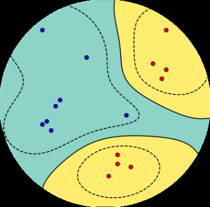
在许多情况下，我们希望机器学习算法预测若干（离散）结果中的一个。例如，电子邮件客户端将邮件分类为个人邮件和垃圾邮件，这有两个结果。另一个例子是望远镜识别夜空中的物体是星系、恒星还是行星。通常有少数几个结果，更重要的是这些结果通常没有额外的结构。在本章中，我们考虑输出二进制值的预测器，即只有两个可能的结果。这种机器学习任务称为二分类。这与第9章形成对比，在第9章中我们考虑了具有连续值输出的预测问题。
对于二分类，标签/输出可以取的可能值集合是二进制的，在本章中我们用{+1, -1}表示它们。换句话说，我们考虑形式为
f: R^D → {+1, -1} (12.1)
的预测器。
结构的一个例子是如果结果是有序的，比如小号、中号和大号T恤的情况。
回顾第8章，我们将每个样本（数据点）x[n]表示为由D个实数组成的特征向量。标签通常分别称为正类和负类。需要注意的是，不应该从+1类中推断出直观的正面属性。例如，在癌症检测任务中，患有癌症的患者通常被标记为+1。原则上，可以使用任何两个不同的值，例如{True, False}、{0, 1}或{red, blue}。二元分类问题已经得到了充分的研究，我们将其他方法的综述推迟到第12.6节。
我们介绍一种称为支持向量机(support vector machine, SVM)的方法，它解决二元分类任务。与回归类似，我们有一个监督学习任务，其中我们有一组样本x ∈ R^D以及相应的（二元）标签y[n] ∈ {+1, −1}。给定由样本-标签对{(x1, y1), …, (xN, yN)}组成的训练数据集，我们希望估计模型的参数，以获得最小的分类误差。类似于第9章，我们考虑线性模型，并将非线性隐藏在样本的变换ϕ中。我们将在第12.4节重新讨论ϕ。
SVM在许多应用中提供了最先进的结果，具有可靠的理论保证。我们选择使用SVM来说明二元分类有两个主要原因。首先，SVM允许以几何方式思考监督机器学习。虽然在第9章中我们从概率模型的角度考虑机器学习问题，并使用最大似然估计和贝叶斯推理来解决它，但在这里我们将考虑一种替代方法，从几何角度推理机器学习任务。它严重依赖于内积和投影等概念，我们在第3章中讨论过这些概念。我们发现SVM具有指导意义的第二个原因是，与第9章相比，SVM的优化问题没有解析解，因此我们需要使用第7章介绍的各种优化工具。
SVM的机器学习观点与第9章的最大似然观点略有不同。最大似然观点基于数据分布的概率视图提出模型，从中导出优化问题。相比之下，SVM观点从设计在训练期间要优化的特定函数开始，基于几何直觉。我们在第10章中已经看到了类似的东西，我们从几何原理导出了PCA(主成分分析)。在SVM的情况下，我们首先设计一个要在训练数据上最小化的损失函数，遵循经验风险最小化的原则。
让我们推导出对应于在样本-标签对上训练SVM的优化问题。直观上，我们想象二元分类数据，可以通过超平面分离，如图12.1所示。这里，每个样本x[n]（2维向量）是一个二维位置(x[n](1)和x[n](2))，相应的二元标签yn是两个不同符号之一（橙色十字或蓝色圆盘）。“超平面”是机器学习中常用的词汇，我们在第2.8节已经遇到过超平面。超平面是维度为D−1的仿射子空间（如果相应的向量空间的维度为D）。样本由两个类组成（有两个可能的标签），其特征（表示样本的向量的分量）以这样的方式排列，使我们能够通过画一条直线来分离/分类它们。
给定两个表示为向量x[i]和x[j]的样本，计算它们之间相似性的一种方法是使用内积⟨x[i], x[j]⟩。回顾第3.2节，内积与向量之间的角度密切相关。
在下面，我们将形式化找到两个类的线性分离器的想法。我们引入边距(margin)的概念，然后扩展线性分离器以允许样本落在”错误”的一边，产生分类误差。我们提出了形式化SVM的两种等价方法：几何视图（第12.2.4节）和损失函数视图（第12.2.5节）。我们使用拉格朗日乘数法推导SVM的对偶版本（第7.2节）。对偶SVM允许我们观察形式化SVM的第三种方法：根据每个类的样本的凸包(convex hulls)（第12.3.2节）。我们最后简要描述核函数(kernels)以及如何数值求解非线性核SVM优化问题。
两个向量的内积值取决于每个向量的长度（范数）。此外，内积允许我们严格定义几何概念，如正交性和投影。
许多分类算法背后的主要思想是在 R^D 中表示数据，然后对这个空间进行分割，理想情况下，具有相同标签（且没有其他示例）的示例位于同一分割中。
在二元分类的情况下，空间将被分为两部分，分别对应正类和负类。我们考虑一种特别方便的分割方式，即使用超平面（hyperplane）将空间（线性地）分割成两半。设示例 x ∈ R^D 是数据空间的一个元素。考虑函数
f : R^D → R (12.2a) x 7→ f(x) := ⟨w, x⟩ + b , (12.2b)
由 w ∈ R^D 和 b ∈ R 参数化。回忆第2.8节，超平面是仿射子空间。因此，我们将在二元分类问题中分离两个类别的超平面定义为
x ∈ R^D : f(x) = 0 . (12.3)
超平面的图示如图12.2所示，其中向量w是超平面的法向量，b是截距。我们可以通过选择超平面上的任意两个示例x_a和x_b，并证明它们之间的向量与w正交，来推导出w是方程(12.3)中超平面的法向量。用方程的形式表示：
f(x_a) − f(x_b) = ⟨w, x_a⟩ + b − (⟨w, x_b⟩ + b) (12.4a) = ⟨w, x_a − x_b⟩ , (12.4b)
图12.2 分离超平面方程(12.3)的标准表示方式。(a) 3D中的标准表示方式。(b) 为便于绘制，我们查看超平面在平面上的投影。
其中第二行通过内积的线性性（第3.2节）得到。由于我们选择x_a和x_b在超平面上，这意味着f(x_a) = 0和f(x_b) = 0，因此⟨w, x_a − x_b⟩ = 0。回忆当两个向量的内积为零时，它们是正交的。因此，我们得出w与超平面上的任何向量都正交。
备注。 回忆第2章，我们可以用不同的方式思考向量。在本章中，我们将参数向量w视为指示方向的箭头，即我们将w视为几何向量。相反，我们将示例向量x视为数据点（由其坐标表示），即我们将x视为相对于标准基的向量坐标。♢
当给出测试示例时，我们根据示例所在的超平面的哪一侧将其分类为正类或负类。注意方程(12.3)不仅定义了一个超平面；它还定义了一个方向。换句话说，它定义了超平面的正侧和负侧。因此，为了对测试示例x_test进行分类，我们计算函数f(x_test)的值，如果f(x_test) ≥ 0则将示例分类为+1，否则分类为−1。从几何角度思考，正示例位于超平面的”上方”，负示例位于超平面的”下方”。
在训练分类器时，我们希望确保具有正标签的示例位于超平面的正侧，即
⟨w, x_n⟩ + b ≥ 0 当 y_n = +1 (12.5)
具有负标签的示例位于负侧，即
⟨w, x_n⟩ + b < 0 当 y_n = −1 . (12.6)
参考图12.2了解正负示例的几何直觉。这两个条件通常用单一方程表示
y_n(⟨w, x_n⟩ + b) ≥ 0 . (12.7)
当我们将方程(12.5)和(12.6)的两边分别乘以y_n = 1和y_n = −1时，方程(12.7)等价于(12.5)和(12.6)。
图12.3 可能的分离超平面。有许多线性分类器（绿线）可以将橙色叉号与蓝色圆盘分开。
基于点到超平面距离的概念，我们现在可以讨论支持向量机。对于线性可分的数据集{(x_1, y_1), . . . , (x_N, y_N)}，我们有无限多个候选超平面（参考图12.3），因此有无限多个分类器可以解决我们的分类问题而不出现任何（训练）错误。为了找到唯一解，一个想法是选择能够最大化正负示例之间margin（间隔）的分离超平面。换句话说，我们希望正负示例被大的margin分离（第12.2.1节）。在下文中，我们计算示例与超平面之间的距离以推导margin。回忆到超平面上距离给定点（示例x_n）最近的点是通过正交投影（第3.8节）获得的。
margin的概念直观上很简单：它是分离超平面到数据集中最近示例的距离，假设数据集是线性可分的。然而，当试图形式化这个concept时，
考虑一个超平面 ⟨w, x⟩ + b，以及一个样本 x[a]，如图12.4所示。不失一般性，我们可以认为样本 x[a] 位于超平面的正侧，即 ⟨w, x[a]⟩ + b > 0。我们希望计算 x[a] 到超平面的距离 r > 0。我们通过考虑 x[a] 到超平面的正交投影(第3.8节)来实现这一点，记为 x’[a]。由于 w 垂直于超平面，我们知道距离 r 就是这个向量 w 的一个缩放。如果已知 w 的长度，那么我们可以使用这个缩放因子 r 来计算 x’[a] 和 x[a] 之间的绝对距离。为了方便，我们选择使用单位长度的向量(其范数为1)，通过将 w 除以其范数 ∥w∥ 来获得。使用向量加法(第2.4节)，我们得到
x’[a] = x[a] + r (w/∥w∥) (12.8)
另一种理解 r 的方式是，它是 x[a] 在由 w/∥w∥ 张成的子空间中的坐标。现在我们已经将 x[a] 到超平面的距离表示为 r，如果我们选择 x[a] 为最接近超平面的点，这个距离 r 就是间隔(margin)。
回想一下，我们希望正样本到超平面的距离超过 r，负样本到超平面的距离(在负方向上)超过 r。类似于将(12.5)和(12.6)合并成(12.7)，我们将这个目标表述为
y[n] (⟨w, x[n]⟩ + b) ≥ r (12.9)
换句话说，我们将样本至少距离超平面 r(在正负方向上)的要求合并成一个不等式。
由于我们只对方向感兴趣，我们在模型中添加一个假设，即参数向量 w 具有单位长度，即 ∥w∥ = 1，其中我们使用欧几里得范数 ∥w∥ = √(w⊤w)(第3.1节)。这个假设也允许对距离(12.8)有更直观的解释，因为它是长度为1的向量的缩放因子。
注释. 熟悉间隔其他表述的读者会注意到，我们定义的 ∥w∥ = 1 与SVM的标准表述不同，例如Schölkopf和Smola(2002)提供的表述。在第12.2.3节中，我们将展示两种方法的等价性。♢
将三个要求收集到一个约束优化问题中，我们得到目标
max r w,b,r
subject to yn ≥ r, ∥w∥ = 1, r > 0 (12.10)
这意味着我们希望最大化间隔 r，同时确保数据位于超平面的正确一侧。
注释. 间隔的概念在机器学习中极其普遍。Vladimir Vapnik和Alexey Chervonenkis使用它来证明，当间隔很大时，函数类的”复杂度”很低，因此学习是可能的(Vapnik, 2000)。事实证明，这个概念对于理论上分析泛化误差的各种不同方法都很有用(Steinwart and Christmann, 2008; Shalev-Shwartz and Ben-David, 2014)。♢
在前一节中，我们通过观察到我们只对 w 的方向而不是其长度感兴趣，导致假设 ∥w∥ = 1，从而推导出(12.10)。在本节中，我们通过做不同的假设来推导间隔最大化问题。我们不选择参数向量被归一化，而是为数据选择一个尺度。
我们选择这个尺度，使得预测器 ⟨w, x⟩ + b 在最接近的样本处的值为1。让我们也将数据集中最接近超平面的样本记为 x[a]。
图12.5与图12.4相同，除了现在我们重新缩放了坐标轴，使得样本 x[a] 恰好位于间隔上，即 ⟨w, x[a]⟩ + b = 1。由于 x’[a] 是 x[a] 到超平面的正交投影，根据定义它必须位于超平面上，即
⟨w, x’[a]⟩ + b = 0 (12.11)
将(12.8)替换到(12.11)中，我们得到
⟨w, x[a] - r(w/∥w∥)⟩ + b = 0 (12.12)
利用内积的双线性(见第3.2节)，我们得到
我们当前考虑线性可分数据。
回想我们希望正样本到超平面的距离超过 r，负样本到超平面的距离(在负方向上)超过 r。
⟨w, x[a]⟩ + b − r = 0 . (12.13) ∥w∥
观察到第一项根据我们的比例假设为1，即⟨w, x[a]⟩ + b = 1。从第[3.1]节的[(3.16)]我们知道⟨w, w⟩ = ∥w∥[2]。因此，第二项简化为r∥w∥。使用这些简化，我们得到
r = 1/∥w∥ . (12.14)
这意味着我们用超平面的法向量w推导出了距离r。乍一看，这个方程式是反直觉的，因为我们似乎用向量w的长度推导出了到超平面的距离，但我们还不知道这个向量。思考这个问题的一种方法是将距离r视为一个临时变量，我们只在这个推导中使用它。因此，在本节的其余部分，我们将用1/∥w∥表示到超平面的距离。在第[12.2.3]节中，我们将看到边距等于1的选择等价于我们在第[12.2.1]节中之前的假设∥w∥ = 1。
类似于获得[(12.9)]的论证，我们希望正例和负例距离超平面至少为1，这产生了条件
y[n] (⟨w, x[n]⟩ + b) ⩾ 1 . (12.15)
将边距最大化与样本需要在超平面正确一侧（基于其标签）的事实相结合，我们得到
max 1/∥w∥ (12.16) w,b
受约束 y[n] (⟨w, x[n]⟩ + b) ⩾ 1 对于所有 n = 1, . . . , N. (12.17)
我们通常不是像[(12.16)]中那样最大化范数的倒数，而是最小化平方范数。我们还经常包含一个常数1/2，它不影响最优的w, b，但在我们计算梯度时产生更整洁的形式。然后，我们的目标变为
min 1/2 ∥w∥[2] (12.18) w,b
受约束 yn ⩾ 1 对于所有 n = 1, . . . , N . (12.19)
方程[(12.18)]被称为hard margin SVM。表达式”hard”的原因是因为该公式不允许任何违反边距条件的情况。我们将在第[12.2.4]节中看到，如果数据不是线性可分的，这个”hard”条件可以放宽以适应违规情况。
在第[12.2.1]节中，我们论证了我们想要最大化某个值r，它表示最近样本到超平面的距离。在第[12.2.2]节中，我们缩放数据使得最近样本到超平面的距离为1。在本节中，我们关联这两个推导，并证明它们是等价的。
定理 12.1. 最大化边距r，其中我们考虑如[(12.10)]中的归一化权重，
max r (12.20) w,b,r |{z} 边距
受约束 y[n] (⟨w, x[n]⟩ + b) ⩾ r , ∥w∥ = 1 , r > 0 , |{z} |{z} 数据拟合 归一化
等价于缩放数据，使得边距为单位：
min 1/2 ∥w∥[2] (12.21) w,b |{z} 边距
受约束 yn ⩾ 1 . |{z} 数据拟合
证明 考虑[(12.20)]。由于平方对于非负参数是严格单调变换，如果我们在目标中考虑r[2]，最大值保持不变。由于∥w∥ = 1，我们可以用一个未归一化的新权重向量w’重新参数化方程，通过显式使用w’/∥w’∥。我们得到
max r[2] (12.22) w’,b,r
受约束 y[n] ⟨w’/∥w’∥, x[n]⟩ + b ⩾ r, r > 0 .
方程[(12.22)]明确声明距离r是正的。因此，我们可以将第一个约束除以r，这产生
max r[2] (12.23) w’,b,r
受约束 y[n] ⟨w’/r∥w’∥, x[n]⟩ + b/r ⩾ 1, r > 0 |{z} |{z} w’’ b’’
重命名参数为w’‘和b’‘。由于w’’ = w’/r∥w’∥，重新排列r得到
∥w’‘∥ = 1/(r∥w’∥) = 1/r · 1/∥w’∥ . (12.24)
通过将此结果代入[(12.23)]，我们得到
max 1/∥w’‘∥[2] (12.25) w’‘,b’’
受约束 y[n] (⟨w’‘, x[n]⟩ + b’’) ⩾ 1 .
最后一步是观察到最大化1/∥w’‘∥[2]产生与最小化1/2∥w’’∥[2]相同的解，这完成了定理[12.1]的证明。
在数据不是线性可分的情况下，我们可能希望允许一些样本落在边距区域内，甚至在超平面的错误一侧，如图[12.6]所示。
允许一些分类错误的模型称为soft margin SVM。在本节中，我们使用几何论证推导出结果优化问题。在第[12.2.5]节中，我们将使用loss function的思想推导出等价的优化问题。使用Lagrange乘数（第[7.2]节），我们将推导出对偶优化
图12.6 (a) 线性可分和 (b) 非线性可分数据。
x[(2)] x[(2)]
x[(1)] x[(1)] (a) 线性可分数据，具有大边距 (b) 非线性可分数据
SVM的问题在第12.3节中讨论。这个对偶优化问题使我们能够观察到SVM的第三种解释：作为一个超平面，它平分对应于正样本和负样本的凸包之间的线段（第12.3.2节）。
关键的几何思想是引入一个松弛变量 ξ[n]，对应每个样本-标签对 (x[n], y[n])，允许特定样本位于边界内或甚至在超平面的错误一侧（参见
©2023 M. P. Deisenroth, A. A. Faisal, C. S. Ong. Published by Cambridge University Press (2020).
380 支持向量机分类
图12.7 软边界SVM允许样本位于边界内或超平面的错误一侧。松弛变量ξ衡量正样本x+到正边界超平面⟨w,x⟩+b=1的距离，当x+位于错误一侧时为0。
图12.7）。我们从边界中减去ξ[n]的值，约束ξ[n]为非负。为了鼓励样本的正确分类，我们将ξ[n]添加到目标函数中
min[w,b,ξ] (1/2)∥w∥² + C∑[n=1 to N]ξ[n] (12.26a)
subject to yn ⩾ 1 − ξ[n] (12.26b) ξ[n] ⩾ 0 (12.26c)
对于n = 1, . . . , N。与硬边界SVM的优化问题(12.18)相比，这个被称为软边界SVM。参数C > 0权衡边界大小和松弛总量。这个参数被称为正则化参数，因为正如我们将在下一节中看到的，目标函数(12.26a)中的边界项是一个正则化项。边界项∥w∥²被称为正则化项，在许多数值优化书籍中，正则化参数与此项相乘（第8.2.3节）。这与我们在本节中的公式化形成对比。这里C的大值意味着低正则化，因为我们给松弛变量更大的权重，因此对不位于边界正确一侧的例子给予更多优先级。
备注。 在软边界SVM的公式化(12.26a)中，w被正则化，但b没有被正则化。我们可以通过观察正则化项不包含b来看到这一点。未正则化的项b使理论分析复杂化(Steinwart and Christmann, 2008, 第1章)并降低计算效率(Fan et al., 2008)。有这种正则化的替代参数化，这就是为什么(12.26a)也经常被称为C-SVM。♢
让我们考虑推导SVM的不同方法，遵循经验风险最小化原则（第8.2节）。对于SVM，我们
Mathematics for Machine Learning草稿（2023-10-18）。反馈：https://mml-book.com 12.2 原始支持向量机 381
选择超平面作为假设类，即
f(x) = ⟨w, x⟩ + b. (12.27)
我们将在本节中看到边界对应于正则化项。剩下的问题是，什么是损失函数？与第9章不同，我们考虑回归问题（预测器的输出是实数），在本章中，我们考虑二元分类问题（预测器的输出是两个标签{+1, −1}中的一个）。因此，每个单独样本-标签对的误差/损失函数需要适合二元分类。例如，用于回归的平方损失(9.10b)不适合二元分类。
备注。 二元标签之间的理想损失函数是计算预测和标签之间不匹配的数量。这意味着对于应用于样本x[n]的预测器f，我们将输出f(x[n])与标签y[n]进行比较。如果它们匹配，我们定义损失为零，如果不匹配则为一。这表示为1(f(x[n]) ≠ y[n])，称为零一损失。不幸的是，零一损失导致寻找最佳参数w, b的组合优化问题。组合优化问题（与第7章讨论的连续优化问题相比）通常更难解决。♢
对应于SVM的损失函数是什么？考虑预测器f(x[n])的输出与标签y[n]之间的误差。损失描述了在训练数据上产生的误差。推导(12.26a)的等价方法是使用合页损失
ℓ(t) = max{0, 1 − t} 其中 t = yf(x) = y(⟨w, x⟩ + b). (12.28)
如果f(x)在超平面的正确一侧（基于对应标签y），并且距离超过1，这意味着t ⩾ 1，合页损失返回零值。如果f(x)在正确一侧但太靠近超平面（0 < t < 1），样本x在边界内，合页损失返回正值。当样本在超平面的错误一侧（t < 0）时，合页损失返回更大的值，并线性增加。换句话说，一旦我们比边界更接近超平面，即使预测是正确的，我们也要付出惩罚，并且惩罚线性增加。表达合页损失的另一种方式是将其视为两个线性片段
ℓ(t) = { 0 if t ⩾ 1 { 1 − t if t < 1 (12.29)
如图12.8所示。对应于硬边界SVM 12.18的损失定义为
ℓ(t) = { 0 if t ⩾ 1 { ∞ if t < 1 (12.30)
[©2023 M. P. Deisenroth, A. A. Faisal, C. S. Ong. Published by Cambridge University Press (2020).]
[382] [[支持向量机分类]]
图 12.8
hinge损失是零一损失的凸上界。这种损失可以解释为不允许任何样本出现在边界内部(margin)。
对于给定的训练集 {(x1, y1), . . . , (x[N] , y[N] )}，我们寻求最小化总损失，同时用ℓ[2]正则化对目标函数进行正则化（参见第8.2.3节）。使用hinge损失(12.28)给出无约束优化问题
1/2 ∥w∥² + C Σ[n=1 to N] max{0, 1 − yn} . (12.31)
第一项在(12.31)中称为正则化项或正则化器（参见第8.2.3节），第二项称为损失项或误差项。回顾第12.2.4节，项1/2∥w∥²直接来源于边界(margin)。换句话说，边界最大化可以解释为正则化。
原则上，(12.31)中的无约束优化问题可以直接用第7.1节描述的（次）梯度下降方法求解。要看到(12.31)和(12.26a)是等价的，观察到hinge损失(12.28)本质上由两个线性部分组成，如(12.29)所表达的。考虑单个样本-标签对的hinge损失(12.28)。我们可以等价地用一个松弛变量ξ和两个约束来替换对t的hinge损失最小化。用方程形式表示：
min max{0, 1 − t} (12.32)
等价于
min ξ (12.33) ξ,t
subject to ξ ⩾ 0, ξ ⩾ 1 − t .
通过将此表达式代入(12.31)并重新排列其中一个约束，我们正好得到软边界SVM (12.26a)。
备注。 让我们将本节中损失函数的选择与第9章线性回归的损失函数进行对比。回顾第9.2.1节，为了寻找最大似然估计器，我们通常最小化负对数似然。此外，由于具有高斯噪声的线性回归的似然项是高斯的，每个样本的负对数似然是平方误差函数。平方误差函数是寻找最大似然解时最小化的损失函数。♢
前面几节中以变量w和b表示的SVM描述被称为原始SVM。回顾我们考虑输入x ∈ R^D，有D个特征。由于w与x具有相同的维度，这意味着优化问题的参数数量（w的维度）随特征数量线性增长。
在下面，我们考虑一个等价的优化问题（所谓的对偶视图），它独立于特征数量。相反，参数数量随训练集中样本数量增加。我们在第10章中看到了类似的想法，其中我们以不随特征数量缩放的方式表达学习问题。这对于特征数量多于训练数据集中样本数量的问题很有用。对偶SVM还有一个额外的优势，即可以轻松应用核(kernel)，正如我们将在本章末尾看到的。“对偶”一词经常出现在数学文献中，在这个特定情况下，它指的是凸对偶性。以下小节本质上是凸对偶性的应用，我们在第7.2节中讨论过。
回顾原始软边界SVM (12.26a)。我们称对应于原始SVM的变量w、b和ξ为原始变量。我们使用α[n] ⩾ 0作为对应于约束(12.26b)的拉格朗日乘数，即样本被正确分类，使用γ[n] ⩾ 0作为对应于松弛变量非负约束的拉格朗日乘数；参见(12.26c)。拉格朗日函数为
L(w, b, ξ, α, γ) = 1/2∥w∥² + C Σ[n=1 to N] ξ[n] (12.34) − Σ[n=1 to N] αn − Σ[n=1 to N] γ[n]ξ[n].
通过分别对三个原始变量w、b和ξ对拉格朗日函数(12.34)求偏导数，我们得到
∂L/∂w = w − Σ[n=1 to N] α[n]y[n]x[n], (12.35)
∂L/∂b = −Σ[n=1 to N] α[n]y[n], (12.36)
∂L/∂ξ[n] = C − α[n] − γ[n]. (12.37)
我们现在通过将这些偏导数设为零来寻找拉格朗日函数的最大值。通过将(12.35)设为零，我们发现
w = Σ[n=1 to N] α[n]y[n]x[n], (12.38)
这是表示定理(representer theorem)的一个特例(Kimeldorf and Wahba, 1970)。方程(12.38)表明原始问题中的最优权重向量是样本x[n]的线性组合。回顾第2.6.1节，这意味着优化问题的解
[解的位置] [在训练数据的生成空间内。此外，通过]
[最小化] [将 [(12.36)] 设为零获得的约束意味着最优权重向量是一个仿射]
[经验风险位于] [样本的组合。表示定理对于正则化经验风险最小化的非常一般的设置都成立 [(Hof-]]
[子空间] [[mann et al., 2008;] [Argyriou and Dinuzzo, 2014)。] 该定理有更]
[(第 [2.4.3 节)]] [由示例定义的]
[示例。] 一般的版本 [(Sch¨] [olkopf et al., 2001)，] 以及其存在的必要充分
条件可以在 [Yu et al. (2013)] 中找到。
注释。 表示定理 [(12.38)] 也为”支持向量机”这个名称提供了解释。
对应参数 α[n] = 0 的示例 x[n] 对解 w 没有任何贡献。其他 α[n] > 0 的示例被称为支持向量，因为它们”支持”超平面。[♢]
[支持向量]
通过将 w 的表达式代入拉格朗日函数 [(12.34)]，我们得到对偶形式
1 [N] [* [+] [N] [N] [N]] D( X X X X ξ, α, γ ) = y y α α ⟨ x , x ⟩ − y α y α x , x 2 [[i] [j] [i] [j] [i] [j] [i] [i] [j] [j] [j] [i]] [i][=1] [j][=1] [i][=1] [j][=1]
[N] [N] [N] [N] [N] + X X X X X C ξ − b y α + α − α ξ − γ ξ . [i] [i] [i] [i] [i] [i] [i] [i] [i][=1] [i][=1] [i][=1] [i][=1] [i][=1]
(12.39)
注意这里不再有涉及原始变量 w 的项。
通过将 [(12.36)] 设为零，我们得到 P[N] [。因此，涉及 b 的项也消失了。y α = 0] [n][=1] [n] [n]
回想内积是对称的且
[《机器学习数学基础》草稿 (2023-10-18)。反馈：] [https://mml-book.com][。] [12.3 对偶支持向量机] [385]
双线性的（见第 [3.2 节）。] 因此，[(12.39)] 中的前两项针对相同的对象。这些项（蓝色部分）可以简化，我们得到拉格朗日函数
1 [N] [N] [N] [N] D( X X X X ξ, α, γ ) = − y y α α ⟨ x , x ⟩ + α +(C − α − γ )ξ . 2 [i] [j] [i] [j] [i] [j] [i] [i] [i] [i] [i][=1] [j][=1] [i][=1] [i][=1]
(12.40)
该方程的最后一项是包含松弛变量 ξ[i] 的所有项的集合。通过将 [(12.37)] 设为零，我们看到 [(12.40)] 中的最后一项也为零。此外，通过使用相同的方程并回忆拉格朗日乘数 γ[i] 是非负的，我们得出 α[i] ⩽ C。我们现在得到 SVM 的对偶优化问题，它完全用拉格朗日乘数 α[i] 表示。根据拉格朗日对偶性（定义 [7.1]），我们最大化对偶问题。这等价于最小化负对偶问题，这样我们得到对偶 SVM
[对偶 SVM]
1 [N] [N] [N] min X X X y y α α ⟨ x , x ⟩ − α [α] 2 [i] [j] [i] [j] [i] [j] [i] [i][=1] [j][=1] [i][=1]
[N] (12.41) subject to X y α = 0 [i] [i] [i][=1]
0 ⩽ α[i] ⩽ C for all i = 1, . . . , N .
[(12.41)] 中的等式约束是通过将 [(12.36)] 设为零得到的。不等式约束 α[i] ⩾ 0 是对不等式约束的拉格朗日乘数施加的条件（第 [7.2 节）。] 不等式约束 α[i] ⩽ C 在前面的段落中讨论过。
SVM 中的不等式约束集合被称为”盒约束”，因为它们将拉格朗日乘数向量 [⊤] [N] α = [ α , · · · , α ] ∈ R 限制在由每个轴上的 0 和 C 定义的盒子内。这些轴对齐的盒子在数值求解器中特别有效 [(Dost´ al, 2009,] 第5章)。
[[事实证明]]
一旦我们得到对偶参数 [[位于边界上的样本] α，我们可以通过使用表示定理 [(12.38)] 恢复原始参数 w。让我们称最优原始参数为 w。然而，仍然存在如何获得参数 [∗] b 的问题。考虑一个恰好位于]
[[其对偶参数位于] [边界上的]]
边界上的样本 x[n]，即 [[∗] [[盒约束严格内部的]] ⟨ w , x [n] ⟩ + b = y [n]。回忆 y [n] 要么是 +1 要么是 -1。因此，唯一的未知数是 b，它可以通过以下方式计算 [0] [< α] [i] [< C。这是]
b[∗] [∗] [使用 Karush Kuhn Tucker] = y − ⟨ ⟩ [n] [n] [条件推导的，例如] w , x . (12.42) [在]
注释。 原则上，可能没有恰好位于边界上的样本。在这种情况下，我们应该对所有支持向量计算 [∗] | y [n] [[[Sch¨] [olkopf and]] w − ⟨ , x ⟩ |，并取这个绝对值差的中位数作为 [n]
[[[Smola (2002).]]]
[©2023 M. P. Deisenroth, A. A. Faisal, C. S. Ong. 由 Cambridge University Press 出版 (2020).]
[386] [[支持向量机分类]]
图 12.9 [凸包]
凸包。[(a)] 点的凸包，其中一些点位于边界内；[(b)] 正样本和负样本周围的凸包。
[c]
[d]
[(a) 凸包。] [[(b) 正样本（蓝色）和负样本（橙色）周围的凸包。两个凸集之间的距离是差向量] [c] [−] [d] [的长度。]
b[∗] 的值。相关推导可以在 http://fouryears.eu/2012/06/07/the-svm-bias-term-conspiracy/ 中找到。[♢]
获得对偶 SVM 的另一种方法是考虑替代的几何论证。考虑具有相同标签的样本集合 x[n]。我们希望构建一个包含所有样本的凸集，使其是可能的最小集合。这被称为凸包，如图 [12.9] 所示。
让我们首先建立关于点的凸组合的一些直觉。
考虑两个点 x1 和 x[2] 以及对应的非负权重
α1, α[2] ⩾ 0，使得 α1+α[2] = 1。方程 α1x1+α[2]x[2] 描述了
x1 和 x[2] 之间直线上的每个点。考虑当我们添加
第三个点 P3 x 以及权重 α ⩾ 0 使得 α = 1 时会发生什么。
这三个点 x1, x[2], x3 的凸组合跨越一个二维区域。这个区域的 凸包(convex hull) 是由
对应于每对点的边形成的三角形。当我们添加更多点时，
当点的数量变得大于维数时，一些点将位于凸包内部，正如我们在
图 [12.9(a)] 中看到的那样。
一般来说，构建凸包可以通过引入
对应于每个样本 x[n] 的非负权重 α [n] ⩾ 0 来完成。然后
凸包可以描述为集合
( ) [N] [N]
conv ( X X X ) = α x 其中 α = 1 且 α ⩾ 0, (12.43) [n] [n] [n] [n]
[n][=1] [n][=1]
[《机器学习数学》草稿（2023-10-18）。反馈：] [https://mml-book.com][.] [12.3 对偶支持向量机] [[387]]
对于所有 n = 1, . . . , N。如果对应于正类和负类的两个点云是分离的，那么凸包不重叠。给定训练数据 (x1, y1), . . . , (x[N] , y[N])，我们形成两个凸包，分别对应于正类和负类。我们选择一个点 c，它在正样本集合的凸包中，并且最接近负类分布。类似地，我们在负样本集合的凸包中选择一个点 d，并且最接近
正类分布；见图 [12.9(b)]。我们定义 d 和 c 之间的差向量为
w := c − d . [(12.44)]
如前述情况选择点 c 和 d，并要求它们彼此最接近，这等价于最小化 w 的长度/范数，因此我们得到相应的优化问题
arg min ∥w∥ = arg min ∥w∥ . (12.45) [w] 1 [2]
[w] 2
由于 c 必须在正凸包中，它可以表示为正样本的凸组合，即，对于非负系数 α [+]
[n]
c X [+] = αx . (12.46)
[n] [n]
[n][:][y][n][=+1]
在 [(12.46)] 中，我们使用记号 n : y[n] = +1 来表示 y[n] = +1 的索引 n 的集合。类似地，对于负标签的样本，我们得到
d X [−] = αx . (12.47)
[n] [n]
[n][:][y][n][=][−]1
通过将 [(12.44), (12.46),] 和 [(12.47)] 代入 [(12.45)]，我们得到目标函数
[2]
min 1 X X [+] [−] α x [n] [n] − α [n] x [n] . (12.48) [α] 2 [n] [:] [y] [n] [=+1] [n] [:] [y] [n] [=] [−] 1
设 [[+] [[−]] α 为所有系数的集合，即 α 和 α] 的连接。
回想我们要求对于每个凸包，它们的系数和为一，
X X [+] [−] α = 1 和 α = 1 . (12.49)
[n] [n]
[n][:][y][n][=+1] [n][:][y][n][=][−]1
这意味着约束
[N]
X y[n]α[n] = 0 . [(12.50)]
[n][=1]
[©2023 M. P. Deisenroth, A. A. Faisal, C. S. Ong. 由剑桥大学出版社出版 (2020).]
[388] [[支持向量机分类]]
这个结果可以通过展开各个类别看到
[N]
X X X [+] [−] y α = (+1) α + ( − 1) α (12.51a) [n] [n] [n] [n]
[n][=1] [n][:][y] [n][=+1] [n][:][y][n][=] −
= X X [+] [−] α − α = 1 − 1 = 0 . (12.51b) [n] [n]
[n][:][y] [n][=+1] [n][:][y][n][=][−]1
目标函数 [(12.48)] 和约束 [(12.50)]，连同
α ⩾ 0 的假设，给出了一个约束（凸）优化问题。这个优化问题可以证明与
硬间隔 SVM 的对偶问题相同 [(Bennett and Bredensteiner, 2000a)]。
备注。 为了得到软间隔对偶，我们考虑 缩减包(reduced hull)。缩减包 类似于凸包，但对系数 α 的大小有上界。α 元素的最大可能值
限制了凸包可以取的大小。换句话说，
α 的界限将凸包缩小到更小的体积 [(Bennett and]
[Bredensteiner, 2000b)]。[♢]
考虑对偶 SVM 的表述 [(12.41)]。注意目标函数中的内积只发生在样本 x[i] 和 x[j] 之间。
样本和参数之间没有内积。
因此，如果我们考虑一组特征 ϕ(x[i]) 来表示 x[i]，对偶 SVM 中唯一的
变化将是替换内积。这种模块化，即分类方法（SVM）的选择和
特征表示 ϕ(x) 的选择可以分别考虑，
为我们独立探索这两个问题提供了灵活性。在
本节中，我们讨论表示 ϕ(x) 并简要介绍
核函数的概念，但不深入技术细节。
由于 ϕ(x) 可能是非线性函数，我们可以使用 SVM（它
假设线性分类器）来构造在
样本 x[n] 中非线性的分类器。这提供了第二条途径，除了软
间隔之外，让用户处理非线性可分的数据集。事实证明，有许多算法和统计方法具有
我们在对偶 SVM 中观察到的这种性质：唯一的内积
是发生在样本之间的那些。我们不是 显式 定义
非线性特征映射 ϕ( ·) 并计算样本 x[i] 和 x[j] 之间的结果内积，而是定义 x[i] 和 x[j] 之间的相似性函数 k(x[i], x[j])。对于某类相似性函数，称为 核函数(kernels)，
相似性函数 隐式 定义非线性特征映射 ϕ(·)。核函数根据定义是函数 k : X × X → R，对于这些函数存在
kernel function can] 一个Hilbert空间H和ϕ : X → H一个特征映射，使得[be very general and]
[are not necessarily] k(x[i], x[j]) = ⟨ϕ(x[i]), ϕ(x[j])⟩ . (12.52) [H] [D] [restricted to] [R] [.]
[Draft (2023-10-18) of “Mathematics for Machine Learning”. Feedback:] [https://mml-book.com][.] [12.4 Kernels] [389]
图12.10 使用不同kernels的SVM。注意虽然决策边界是非线性的，但[underlying problem]正在解决的是线性分离的[feature]问题[Second] [Second] [hyperplane (albeit with a nonlinear kernel).]
[First feature] [First feature]
[feature] [feature]
[Second] [Second]
[First feature] [First feature]
每个kernel k都有一个唯一的reproducing kernel Hilbert space与之关联[(Aronszajn, 1950;] [Berlinet and Thomas-Agnan, 2004).]在这种唯一关联中，ϕ(x) = k(·, x)被称为canonical feature map。
从内积到kernel函数[(12.52)]的推广被称为kernel trick [(Sch¨] [olkopf and Smola, 2002; Shawe-Taylor and] [Cristianini, 2004),]因为它隐藏了显式的非线性特征映射。
从内积或将k(·, ·)应用到数据集得到的矩阵K ∈ R[N×N]被称为Gram matrix，通常简称为kernel matrix。Kernels必须是对称且正半定函数，以便每个kernel matrix K都是对称且正半定的(Section [3.2.3):]
∀ z ∈ R[N] : z[⊤]Kz ⩾ 0 . (12.53)
对于多变量实值数据x[i] ∈ R[D]的一些流行kernel示例包括polynomial kernel、Gaussian radial basis function kernel和rational quadratic kernel [(Sch¨] [olkopf and Smola, 2002;] [Rasmussen]
[©2023 M. P. Deisenroth, A. A. Faisal, C. S. Ong. Published by Cambridge University Press (2020).]
[and Williams, 2006).] 图[12.10]展示了不同kernels对示例数据集上分离超平面的影响。注意我们仍在求解超平面，也就是说，函数的假设类仍然是线性的。非线性表面是由于kernel函数造成的。
备注。 不幸的是，对于机器学习初学者来说，“kernel”这个词有多重含义。在本章中，“kernel”一词来自reproducing kernel Hilbert space (RKHS)的概念[(Aronszajn, 1950;] [Saitoh, 1988).]我们已经讨论了线性代数中kernel的概念(Section [2.7.3),]其中kernel是null space的另一种说法。在机器学习中”kernel”的第三种常见用法是kernel density estimation中的smoothing kernel (Section [11.5).]♢
由于显式表示ϕ(x)在数学上等价于kernel表示k(x[i], x[j])，实践者通常会设计kernel函数，使其比显式特征映射之间的内积计算更高效。例如，考虑polynomial kernel [(Sch¨ olkopf and Smola, 2002),]当输入维度很大时，显式展开中的项数增长得非常快(即使对于低次多项式)。kernel函数每个输入维度只需要一次乘法，这可以提供显著的计算节省。另一个例子是Gaussian radial basis function kernel [(Sch¨] [olkopf and Smola, 2002;] [Rasmussen and] [Williams, 2006),]其对应的特征空间是无限维的。在这种情况下，我们无法显式表示特征空间，但[The choice of]仍可以使用kernel计算一对样本之间的相似性。
kernel trick的另一个有用方面是不需要[kernel, as well as]原始数据已经表示为多变量实值[the parameters of]数据。注意内积定义在函数[the kernel, is often]ϕ( ·)的输出上，但不限制输入为实数。因此，函数[chosen using nested]ϕ( ·)和kernel函数k(·, ·)可以定义在任何对象上，例如[cross-validation]集合、序列、字符串、图和分布[(Ben-Hur et al., 2008;] [(Section [8.6.1).]][G¨] [artner, 2008;] [Shi et al., 2009;] [Sriperumbudur et al., 2010; Vishwanathan] [et al., 2010).]
我们通过研究如何根据第7章提出的概念来表达本章中导出的问题来结束对SVM的讨论。我们考虑两种不同的方法来找到SVM的最优解。首先我们考虑SVM的损失函数观点[8.2.2]并将其表达为无约束优化问题。然后我们将primal和dual SVM的约束版本表达为标准形式的二次规划[7.3.2.]
考虑SVM的损失函数观点[(12.31).]这是一个凸无约束优化问题，但hinge loss [(12.28)]不可
[Draft (2023-10-18) of “Mathematics for Machine Learning”. Feedback:] [https://mml-book.com][.] [12.5 Numerical Solution] [391]
微分。因此，我们应用subgradient方法来解决它。然而，hinge loss几乎在所有地方都可微分，除了在hinge t = 1的单一点。在这一点上，梯度是位于0和-1之间的一组可能值。因此，hinge loss的subgradient g由下式给出：
g(t) = { 1 if t < -1 [-1, 0] if t = 1 . (12.54) 0 if t > 1 }
使用这个子梯度，我们可以应用第7.1节中介绍的优化方法。
原始SVM和对偶SVM都导致凸二次规划问题（约束优化）。注意(12.26a)中的原始SVM具有与输入样本维数D大小相同的优化变量。(12.41)中的对偶SVM具有与样本数量N大小相同的优化变量。
为了将原始SVM表示为二次规划的标准形式(7.45)，我们假设使用点积(3.5)作为内积。我们重新整理原始SVM的方程(12.26a)，使得优化变量都在右边，约束的不等式符合标准形式。这产生了优化问题：
回忆第3.2节中我们使用点积这个术语来表示欧几里得向量空间上的内积。
$\min_{w,b,\xi} \frac{1}{2}\|w\|^2 + C\sum_{n=1}^N \xi_n$ (12.55)
约束条件：−ynxnTw − ynb − ξn ≤ −1 −ξn ≤ 0
n = 1, …, N。通过将变量w, b, x_n连接成单个向量，并仔细收集项，我们得到软间隔SVM的以下矩阵形式：
$\min_{w,b,\xi} \frac{1}{2} \begin{bmatrix} w \\ b \\ \xi \end{bmatrix}^T \begin{bmatrix} I_{D,D} & 0_{D,1} & 0_{D,N} \\ 0_{1,D} & 0 & 0_{1,N} \\ 0_{N,D} & 0_{N,1} & 0_{N,N} \end{bmatrix} \begin{bmatrix} w \\ b \\ \xi \end{bmatrix} + \begin{bmatrix} 0_{D+1,1} \\ C1_{N,1} \end{bmatrix}^T \begin{bmatrix} w \\ b \\ \xi \end{bmatrix}$
约束条件：$\begin{bmatrix} -YX_{N,D} & -y & -I_N \\ 0_{N,D+1} & & -I_N \end{bmatrix} \begin{bmatrix} w \\ b \\ \xi \end{bmatrix} \leq \begin{bmatrix} -1_{N,1} \\ 0_{N,1} \end{bmatrix}$ (12.56)
在前面的优化问题中，最小化是关于参数[wT, b, ξT] ∈ ℝD + 1 + N，我们使用记号：Im表示大小为m × m的单位矩阵，0m, n表示大小为m × n的零矩阵，1m, n表示大小为m × n的全一矩阵。此外，y是标签向量[y1, ⋯, yN]T，Y = diag(y)
© 2023 M. P. Deisenroth, A. A. Faisal, C. S. Ong. Published by Cambridge University Press (2020).
是一个N × N矩阵，其对角线元素来自y，XN × D ∈ ℝ是通过连接所有样本得到的矩阵。
我们可以类似地对SVM的对偶版本(12.41)进行项的收集。为了将对偶SVM表示为标准形式，我们首先必须表达kernel矩阵K，使得每个元素为Kij = k(xi, xj)。如果我们有显式的特征表示xi，那么我们定义Kij = ⟨xi, xj⟩。
为了记号方便，我们引入一个除对角线外都为零的矩阵，在其对角线上存储标签，即Y = diag(y)。
对偶SVM可以写为：
$\min_\alpha \frac{1}{2}\alpha^T YKY\alpha - 1_{N,1}^T\alpha$ (12.57)
约束条件：$\begin{bmatrix} y^T \\ I_N \\ -I_N \end{bmatrix} \alpha \leq \begin{bmatrix} 0 \\ C1_{N,1} \\ 0_{N,1} \end{bmatrix}$
备注。 在第7.3.1节和第7.3.2节中，我们介绍了约束的标准形式为不等式约束。我们将对偶SVM的等式约束表示为两个不等式约束，即
Ax = b 被替换为 Ax ≤ b 和 Ax ≥ b (12.58)
凸优化方法的特定软件实现可能提供表达等式约束的能力。◊
由于SVM有许多不同的可能视角，因此有许多方法来解决所得的优化问题。这里提出的方法，即将SVM问题表示为标准凸优化形式，在实践中并不经常使用。SVM求解器的两个主要实现是Chang and Lin (2011)（开源）和Joachims (1999)。由于SVM有清晰且定义良好的优化问题，许多基于数值优化技术的方法(Nocedal and Wright, 2006)都可以应用(Shawe-Taylor and Sun, 2011)。
SVM是研究二元分类的许多方法之一。其他方法包括perceptron、logistic回归、Fisher判别、最近邻、naive Bayes和random forest (Bishop, 2006; Murphy, 2012)。关于离散序列上SVM和kernel的简短教程可以在Ben-Hur et al. (2008)中找到。SVM的发展与第8.2节讨论的经验风险最小化密切相关。
因此，SVM具有强理论性质(Vapnik, 2000; Steinwart and Christmann, 2008)。关于kernel方法的书籍(Schölkopf and Smola, 2002)包含了support vector machine的许多细节以及
Draft (2023-10-18) of “Mathematics for Machine Learning”. Feedback: https://mml-book.com. 12.6 Further Reading 393
如何优化它们。一本关于kernel方法的更广泛的书籍(Shawe-Taylor and Cristianini, 2004)也包含了不同机器学习问题的许多线性代数方法。
对偶SVM的另一种推导可以使用Legendre-Fenchel变换的思想(第7.3.3节)来获得。该推导分别考虑SVM无约束公式(12.31)的每一项，并计算它们的凸共轭(Rifkin and Lippert, 2007)。对SVM的泛函分析视角（也是正则化方法视角）感兴趣的读者可参考Wahba (1990)的工作。kernel的理论阐述(Aronszajn, 1950; Schwartz, 1964; Saitoh, 1988; Manton and Amblard, 2015)需要线性算子的基本基础(Akhiezer and Glazman, 1993)。kernel的思想已被推广到Banach空间(Zhang et al., 2009)和Kreĭn空间(Ong et al., 2004; Loosli et al., 2016)。
观察到hinge损失有三种等价表示，如(12.28)和(12.29)所示，以及(12.33)中的约束优化问题。公式(12.28)在比较时经常使用
ing the SVM loss function with other loss functions [(Steinwart, 2007).]
两段式表述 [(12.29)] 便于计算子梯度，因为每一段都是线性的。第三种表述 [(12.33)]，如第 [12.5] 节所示，能够使用凸二次规划（第 [7.3.2] 节）工具。
由于二元分类是机器学习中一个被深入研究的任务，有时也会使用其他术语，如discrimination、separation和decision。此外，二元分类器可以产生三种不同的输出。首先是线性函数本身的输出（通常称为score），可以取任何实数值。这个输出可以用于对样本进行排序，二元分类可以被视为在排序样本中选择一个阈值 [(Shawe-Taylor and Cristianini, 2004)]。二元分类器输出的第二种量通常被认为是经过非线性函数处理后确定的输出，将其值约束到有界范围内，例如区间 [0, 1]。常见的非线性函数是sigmoid函数 [(Bishop, 2006)]。当非线性处理产生校准良好的概率时 [(Gneiting and Raftery, 2007; Reid and Williamson, 2011)]，这称为类概率估计。二元分类器的第三种输出是最终的二元决策 {+1, −1}，这是最常被假定为分类器输出的形式。
SVM是一种二元分类器，本质上不容易进行概率解释。有几种方法可以将线性函数的原始输出（score）转换为校准的类概率估计 (P (Y = 1|X = x))，这些方法涉及额外的校准步骤 [(Platt, 2000; Zadrozny and Elkan, 2001; Lin et al., 2007)]。从训练的角度来看，有许多相关的概率方法。我们在第 [12.2.5] 节末尾提到了损失函数与似然函数之间的关系（也可比较第 [8.2] 和 [8.3] 节）。
[©2023 M. P. Deisenroth, A. A. Faisal, C. S. Ong. Published by Cambridge University Press (2020).]
[394] [[Classification with Support Vector Machines]]
训练期间对应于校准良好转换的maximum likelihood方法称为logistic regression，它来自于一类称为generalized linear models的方法。从这个角度来看logistic regression的细节可以在 [Agresti (2002, chapter 5)] 和 [McCullagh and Nelder (1989, chapter 4)] 中找到。
自然地，我们可以采用更加Bayesian的分类器输出观点，通过使用Bayesian logistic regression估计后验分布。Bayesian观点还包括先验的规定，其中包括诸如与似然函数共轭（第 [6.6.1] 节）等设计选择。此外，还可以考虑将潜在函数作为先验，这会产生Gaussian process classification [(Rasmussen and Williams, 2006, chapter 3)]。
[Draft (2023-10-18) of “Mathematics for Machine Learning”. Feedback: https://mml-book.com.]
[Abel, Niels H. 1826.] [Démonstration de l’Impossibilité de la Résolution Algébrique des Équations Générales qui Passent le Quatrième Degré. Grøndahl and Søn.]
[Adhikari, Ani, and DeNero, John. 2018.] [Computational and Inferential Thinking: The Foundations of Data Science. Gitbooks.]
[Agarwal, Arvind, and Daumé III, Hal. 2010. A Geometric View of Conjugate Priors. Machine Learning, 81(1), 99–113.]
[Agresti, A. 2002.] [Categorical Data Analysis. Wiley.]
[Akaike, Hirotugu. 1974. A New Look at the Statistical Model Identification. IEEE Transactions on Automatic Control, 19(6), 716–723.]
[Akhiezer, Naum I., and Glazman, Izrail M. 1993.] [Theory of Linear Operators in Hilbert Space. Dover Publications.]
[Alpaydin, Ethem. 2010.] [Introduction to Machine Learning. MIT Press.]
[Amari, Shun-ichi. 2016.] [Information Geometry and Its Applications. Springer.]
[Argyriou, Andreas, and Dinuzzo, Francesco. 2014. A Unifying View of Representer Theorems. In: Proceedings of the International Conference on Machine Learning.]
[Aronszajn, Nachman. 1950. Theory of Reproducing Kernels. Transactions of the American Mathematical Society, 68, 337–404.]
[Axler, Sheldon. 2015.] [Linear Algebra Done Right. Springer.]
[Bakir, Gökhan, Hofmann, Thomas, Schölkopf, Bernhard, Smola, Alexander J., Taskar, Ben, and Vishwanathan, S. V. N. (eds). 2007.] [Predicting Structured Data. MIT Press.]
[Barber, David. 2012.] [Bayesian Reasoning and Machine Learning. Cambridge University Press.]
[Barndorff-Nielsen, Ole. 2014.] [Information and Exponential Families: In Statistical Theory. Wiley.]
[Bartholomew, David, Knott, Martin, and Moustaki, Irini. 2011.] [Latent Variable Models and Factor Analysis: A Unified Approach. Wiley.]
[Baydin, Atılım G., Pearlmutter, Barak A., Radul, Alexey A., and Siskind, Jeffrey M. 2018. Automatic Differentiation in Machine Learning: A Survey. Journal of Machine Learning Research, 18, 1–43.]
[Beck, Amir, and Teboulle, Marc. 2003. Mirror Descent and Nonlinear Projected Subgradient Methods for Convex Optimization. Operations Research Letters, 31(3), 167–175.]
[Belabbas, Mohamed-Ali, and Wolfe, Patrick J. 2009. Spectral Methods in Machine Learning and New Strategies for Very Large Datasets. Proceedings of the National Academy of Sciences, 0810600105.]
[Belkin, Mikhail, and Niyogi, Partha. 2003. Laplacian Eigenmaps for Dimensionality
Reduction and Data Representation. [Neural Computation][,] [15][(6), 1373–1396.] [Ben-Hur, Asa, Ong, Cheng Soon, Sonnenburg, S¨] [oren, Sch¨] [olkopf, Bernhard, and R¨] [atsch,]
[Gunnar. 2008. Support Vector Machines and Kernels for Computational Biology.]
[PLoS Computational Biology][,] [4][(10), e1000173.]
395
本材料由Cambridge University Press出版，书名为Mathematics for Machine Learning，作者为Marc Peter Deisenroth, A. Aldo Faisal, and Cheng Soon Ong (2020)。此版本仅供个人使用免费查看和下载。不得重新分发、转售或用于衍生作品。
©by M. P. Deisenroth, A. A. Faisal, and C. S. Ong, 2023. https://mml-book.com.
396 [参考文献]
Bennett, Kristin P., and Bredensteiner, Erin J. 2000a. SVM分类器中的对偶性和几何。在：机器学习国际会议论文集。
Bennett, Kristin P., and Bredensteiner, Erin J. 2000b. 学习中的几何。第132–145页：几何在工作中。美国数学协会。
Berlinet, Alain, and Thomas-Agnan, Christine. 2004. 概率与统计中的再生核Hilbert空间。Springer。
Bertsekas, Dimitri P. 1999. 非线性规划。Athena Scientific。
Bertsekas, Dimitri P. 2009. 凸优化理论。Athena Scientific。
Bickel, Peter J., and Doksum, Kjell. 2006. 数理统计：基本思想和精选主题。第1卷。Prentice Hall。
Bickson, Danny, Dolev, Danny, Shental, Ori, Siegel, Paul H., and Wolf, Jack K. 2007. 通过置信传播的线性检测。在：通信、控制和计算年度Allerton会议论文集。
Billingsley, Patrick. 1995. 概率与测度。Wiley。
Bishop, Christopher M. 1995. 模式识别神经网络。Clarendon Press。
Bishop, Christopher M. 1999. 贝叶斯PCA。在：神经信息处理系统进展。
Bishop, Christopher M. 2006. 模式识别与机器学习。Springer。
Blei, David M., Kucukelbir, Alp, and McAuliffe, Jon D. 2017. 变分推断：统计学家的综述。美国统计协会杂志，112(518)，859–877。
Blum, Arvim, and Hardt, Moritz. 2015. 阶梯：机器学习竞赛的可靠排行榜。在：国际机器学习会议。
Bonnans, J. Frédéric, Gilbert, J. Charles, Lemaréchal, Claude, and Sagastizábal, Claudia A. 2006. 数值优化：理论与实践方面。Springer。
Borwein, Jonathan M., and Lewis, Adrian S. 2006. 凸分析与非线性优化。第2版。加拿大数学学会。
Bottou, Léon. 1998. 在线算法和随机逼近。第9–42页：在线学习与神经网络。Cambridge University Press。
Bottou, Léon, Curtis, Frank E., and Nocedal, Jorge. 2018. 大规模机器学习的优化方法。SIAM评论，60(2)，223–311。
Boucheron, Stephane, Lugosi, Gabor, and Massart, Pascal. 2013. 集中不等式：独立性的非渐近理论。Oxford University Press。
Boyd, Stephen, and Vandenberghe, Lieven. 2004. 凸优化。Cambridge University Press。
Boyd, Stephen, and Vandenberghe, Lieven. 2018. 应用线性代数导论。Cambridge University Press。
Brochu, Eric, Cora, Vlad M., and de Freitas, Nando. 2009. 昂贵成本函数的贝叶斯优化教程，及其在主动用户建模和分层强化学习中的应用。技术报告TR-2009-023。不列颠哥伦比亚大学计算机科学系。
Brooks, Steve, Gelman, Andrew, Jones, Galin L., and Meng, Xiao-Li (eds). 2011. Markov链Monte Carlo手册。Chapman and Hall/CRC。
Brown, Lawrence D. 1986. 统计指数族基础：在统计决策理论中的应用。数理统计研究所。
Bryson, Arthur E. 1961. 优化多阶段分配过程的梯度方法。在：哈佛大学数字计算机及其应用研讨会论文集。
Bubeck, Sébastien. 2015. 凸优化：算法与复杂性。机器学习基础与趋势，8(3-4)，231–357。
Bühlmann, Peter, and Van De Geer, Sara. 2011. 高维数据统计。Springer。
“Mathematics for Machine Learning”草稿(2023-10-18)。反馈：https://mml-book.com. 参考文献 [397]
Burges, Christopher. 2010. 降维：导览。机器学习基础与趋势，2(4)，275–365。
Carroll, J Douglas, and Chang, Jih-Jie. 1970. 通过”Eckart-Young”分解的N向泛化分析多维标度中的个体差异。心理测量学，35(3)，283–319。
Casella, George, and Berger, Roger L. 2002. 统计推断。Duxbury。
Çinlar, Erhan. 2011. 概率与随机过程。Springer。
Chang, Chih-Chung, and Lin, Chih-Jen. 2011. LIBSVM：支持向量机库。ACM智能系统与技术汇刊，2，27:1–27:27。
Cheeseman, Peter. 1985. 为概率辩护。在：国际人工智能联合会议论文集。
Chollet, Francois, and Allaire, J. J. 2018. R语言深度学习。Manning Publications。
Codd, Edgar F. 1990. 数据库管理的关系模型。Addison-Wesley Longman Publishing。
[Cunningham, John P., and Ghahramani, Zoubin. 2015. Linear Dimensionality Reduc-]
[tion: Survey, Insights, and Generalizations.] [机器学习研究期刊][,]
[16][, 2859–2900.]
[Datta, Biswa N. 2010.] [数值线性代数及其应用][. SIAM.] [Davidson, Anthony C., and Hinkley, David V. 1997.] [Bootstrap方法及其应用]
[Cambridge University Press.]
[Dean, Jeffrey, Corrado, Greg S., Monga, Rajat, and Chen, et al. 2012. Large Scale]
[Distributed Deep Networks. In:] [神经信息处理系统进展][.] [Deisenroth, Marc P., and Mohamed, Shakir. 2012. Expectation Propagation in Gaus-]
[sian Process Dynamical Systems. Pages 2618–2626 of:] [神经信息处理系统进展][.]
[Deisenroth, Marc P., and Ohlsson, Henrik. 2011. A General Perspective on Gaussian]
[Filtering and Smoothing: Explaining Current and Deriving New Algorithms. In:]
[美国控制会议论文集][.]
[Deisenroth, Marc P., Fox, Dieter, and Rasmussen, Carl E. 2015. Gaussian Processes]
[for Data-Efficient Learning in Robotics and Control.] [IEEE模式分析与机器智能汇刊][,] [37][(2), 408–423.] [Dempster, Arthur P., Laird, Nan M., and Rubin, Donald B. 1977. Maximum Likelihood]
[from Incomplete Data via the EM Algorithm.] [皇家统计学会期刊][,]
[39][(1), 1–38.]
[Deng, Li, Seltzer, Michael L., Yu, Dong, Acero, Alex, Mohamed, Abdel-rahman, and]
[Hinton, Geoffrey E. 2010. Binary Coding of Speech Spectrograms Using a Deep]
[Auto-Encoder. In:] [Interspeech会议论文集][.]
[Devroye, Luc. 1986.] [非均匀随机变量生成][. Springer.] [Donoho, David L., and Grimes, Carrie. 2003.] [[Hessian特征映射：高维数据的局部线性]]
[嵌入技术.] [美国国家科学院院刊][,] [100][(10), 5591–5596.]
[Dostál, Zdeněk. 2009.] [最优二次规划算法：变分不等式应用][. Springer.]
[Douven, Igor. 2017. Abduction. In:] [斯坦福哲学百科全书][. Meta-]
[physics Research Lab, Stanford University.]
[Downey, Allen B. 2014.] [统计思维：探索性数据分析][. 2nd edn. O’Reilly]
[Media.]
[Dreyfus, Stuart. 1962. The Numerical Solution of Variational Problems.] [数学分析与应用期刊][,] [5][(1), 30–45.] [Drumm, Volker, and Weil, Wolfgang. 2001.] [线性代数与解析几何][.]
[Lecture Notes, Universität Karlsruhe (TH).]
[Dudley, Richard M. 2002.] [实分析与概率][. Cambridge University Press.]
[©2023 M. P. Deisenroth, A. A. Faisal, C. S. Ong. Published by Cambridge University Press (2020).]
[[参考文献]]
[Eaton, Morris L. 2007.] [多元统计：向量空间方法][. Institute of]
[Mathematical Statistics Lecture Notes.]
[Eckart, Carl, and Young, Gale. 1936. The Approximation of One Matrix by Another of]
[Lower Rank.] [心理计量学][,] [1][(3), 211–218.]
[Efron, Bradley, and Hastie, Trevor. 2016.] [计算机时代的统计推断：算法、证据与数据科学][. Cambridge University Press.]
[Efron, Bradley, and Tibshirani, Robert J. 1993.] [Bootstrap方法导论][. Chap-]
[man and Hall/CRC.]
[Elliott, Conal. 2009. Beautiful Differentiation. In:] [函数式编程国际会议][.]
[Evgeniou, Theodoros, Pontil, Massimiliano, and Poggio, Tomaso. 2000. Statistical]
[Learning Theory: A Primer.] [国际计算机视觉期刊][,] [38][(1), 9–13.]
[Fan, Rong-En, Chang, Kai-Wei, Hsieh, Cho-Jui, Wang, Xiang-Rui, and Lin, Chih-Jen.]
[2008. LIBLINEAR: A Library for Large Linear Classification.] [机器学习研究期刊][,] [9][, 1871–1874.]
[Gal, Yarin, van der Wilk, Mark, and Rasmussen, Carl E. 2014. Distributed Variational]
[Inference in Sparse Gaussian Process Regression and Latent Variable Models. In:] [神经信息处理系统进展][.]
[Gärtner, Thomas. 2008.] [结构化数据的核方法][. World Scientific.]
[Gavish, Matan, and Donoho, David L. 2014. The Optimal Hard Threshold for Singular] [√]
[Values is] [4] [3][.] [IEEE信息论汇刊][,] [60][(8), 5040–5053.]
[Gelman, Andrew, Carlin, John B., Stern, Hal S., and Rubin, Donald B. 2004.] [贝叶斯数据分析][. Chapman and Hall/CRC.]
[Gentle, James E. 2004.] [[随机数生成与Monte Carlo方法]][.]
[Springer.]
[Ghahramani, Zoubin. 2015. Probabilistic Machine Learning and Artificial Intelligence.]
[自然][,] [521][, 452–459.]
[Ghahramani, Zoubin, and Roweis, Sam T. 1999. Learning Nonlinear Dynamical Sys-]
[tems Using an EM Algorithm. In:] [神经信息处理系统进展][.] [MIT Press.]
[Gilks, Walter R., Richardson, Sylvia, and Spiegelhalter, David J. 1996.] [Markov链Monte Carlo实践][. Chapman and Hall/CRC.]
[Gneiting, Tilmann, and Raftery, Adrian E. 2007. Strictly Proper Scoring Rules, Pre-]
[diction, and Estimation.] [美国统计协会期刊][,] [102][(477),] [359–378.]
[Goh, Gabriel. 2017. Why Momentum Really Works.] [Distill][.]
[Gohberg, Israel, Goldberg, Seymour, and Krupnik, Nahum. 2012.] [线性算子的迹与行列式][. Birkhäuser.]
[Golan, Jonathan S. 2007.] [研究生应掌握的线性代数][. Springer.]
[Golub, Gene H., and Van Loan, Charles F. 2012.] [矩阵计算][. JHU Press.]
[Goodfellow, Ian, Bengio, Yoshua, and Courville, Aaron. 2016.] [深度学习][. MIT]
[Press.]
[Graepel, Thore, Candela, Joaquin Quiñonero-Candela, Borchert, Thomas, and Her-]
Brich, Ralf. 2010. Web-Scale Bayesian Click-through Rate Prediction for Sponsored Search Advertising in Microsoft’s Bing Search Engine. In: Proceedings of the International Conference on Machine Learning.
Griewank, Andreas, and Walther, Andrea. 2003. Introduction to Automatic Differentiation. In: Proceedings in Applied Mathematics and Mechanics.
Griewank, Andreas, and Walther, Andrea. 2008. Evaluating Derivatives, Principles and Techniques of Algorithmic Differentiation. SIAM.
Grimmett, Geoffrey R., and Welsh, Dominic. 2014. Probability: An Introduction. Oxford University Press.
Draft (2023-10-18) of “Mathematics for Machine Learning”. Feedback: https://mml-book.com. References [399]
Grinstead, Charles M., and Snell, J. Laurie. 1997. Introduction to Probability. American Mathematical Society.
Hacking, Ian. 2001. Probability and Inductive Logic. Cambridge University Press.
Hall, Peter. 1992. The Bootstrap and Edgeworth Expansion. Springer.
Hallin, Marc, Paindaveine, Davy, and Šiman, Miroslav. 2010. Multivariate Quantiles and Multiple-Output Regression Quantiles: From ℓ₁ Optimization to Halfspace Depth. Annals of Statistics, 38, 635–669.
Hasselblatt, Boris, and Katok, Anatole. 2003. A First Course in Dynamics with a Panorama of Recent Developments. Cambridge University Press.
Hastie, Trevor, Tibshirani, Robert, and Friedman, Jerome. 2001. The Elements of Statistical Learning – Data Mining, Inference, and Prediction. Springer.
Hausman, Karol, Springenberg, Jost T., Wang, Ziyu, Heess, Nicolas, and Riedmiller, Martin. 2018. Learning an Embedding Space for Transferable Robot Skills. In: Proceedings of the International Conference on Learning Representations.
Hazan, Elad. 2015. Introduction to Online Convex Optimization. Foundations and Trends in Optimization, 2(3–4), 157–325.
Hensman, James, Fusi, Nicolò, and Lawrence, Neil D. 2013. Gaussian Processes for Big Data. In: Proceedings of the Conference on Uncertainty in Artificial Intelligence.
Herbrich, Ralf, Minka, Tom, and Graepel, Thore. 2007. TrueSkill(TM): A Bayesian Skill Rating System. In: Advances in Neural Information Processing Systems.
Hiriart-Urruty, Jean-Baptiste, and Lemaréchal, Claude. 2001. Fundamentals of Convex Analysis. Springer.
Hoffman, Matthew D., Blei, David M., and Bach, Francis. 2010. Online Learning for Latent Dirichlet Allocation. Advances in Neural Information Processing Systems.
Hoffman, Matthew D., Blei, David M., Wang, Chong, and Paisley, John. 2013. Stochastic Variational Inference. Journal of Machine Learning Research, 14(1), 1303–1347.
Hofmann, Thomas, Schölkopf, Bernhard, and Smola, Alexander J. 2008. Kernel Methods in Machine Learning. Annals of Statistics, 36(3), 1171–1220.
Hogben, Leslie. 2013. Handbook of Linear Algebra. Chapman and Hall/CRC.
Horn, Roger A., and Johnson, Charles R. 2013. Matrix Analysis. Cambridge University Press.
Hotelling, Harold. 1933. Analysis of a Complex of Statistical Variables into Principal Components. Journal of Educational Psychology, 24, 417–441.
Hyvarinen, Aapo, Oja, Erkki, and Karhunen, Juha. 2001. Independent Component Analysis. Wiley.
Imbens, Guido W., and Rubin, Donald B. 2015. Causal Inference for Statistics, Social and Biomedical Sciences. Cambridge University Press.
Jacod, Jean, and Protter, Philip. 2004. Probability Essentials. Springer.
Jaynes, Edwin T. 2003. Probability Theory: The Logic of Science. Cambridge University Press.
Jefferys, William H., and Berger, James O. 1992. Ockham’s Razor and Bayesian Analysis. American Scientist, 80, 64–72.
Jeffreys, Harold. 1961. Theory of Probability. Oxford University Press.
Jimenez Rezende, Danilo, and Mohamed, Shakir. 2015. Variational Inference with Normalizing Flows. In: Proceedings of the International Conference on Machine Learning.
Jimenez Rezende, Danilo, Mohamed, Shakir, and Wierstra, Daan. 2014. Stochastic Backpropagation and Approximate Inference in Deep Generative Models. In: Proceedings of the International Conference on Machine Learning.
Joachims, Thorsten. 1999. Advances in Kernel Methods – Support Vector Learning. MIT Press. Chap. Making Large-Scale SVM Learning Practical, pages 169–184.
Jordan, Michael I., Ghahramani, Zoubin, Jaakkola, Tommi S., and Saul, Lawrence K. 1999. An Introduction to Variational Methods for Graphical Models. Machine Learning, 37, 183–233.
©2023 M. P. Deisenroth, A. A. Faisal, C. S. Ong. Published by Cambridge University Press (2020).
References [400]
Julier, Simon J., and Uhlmann, Jeffrey K. 1997. A New Extension of the Kalman Filter to Nonlinear Systems. In: Proceedings of AeroSense Symposium on Aerospace/Defense Sensing, Simulation and Controls.
Kaiser, Marcus, and Hilgetag, Claus C. 2006. Nonoptimal Component Placement, but Short Processing Paths, Due to Long-Distance Projections in Neural Systems. PLoS Computational Biology, 2(7), e95.
Kalman, Dan. 1996. A Singularly Valuable Decomposition: The SVD of a Matrix. College Mathematics Journal, 27(1), 2–23.
Kalman, Rudolf E. 1960. A New Approach to Linear Filtering and Prediction Problems. Transactions of the ASME – Journal of Basic Engineering, 82(Series D), 35–45.
Kamthe, Sanket, and Deisenroth, Marc P. 2018. Data-Efficient Reinforcement Learning with Probabilistic Model Predictive Control. In: Proceedings of the International Conference on Artificial Intelligence and Statistics.
[Katz, Victor J. 2004.] [数学史][. Pearson/Addison-Wesley.]
[Kelley, Henry J. 1960. 最优飞行路径的梯度理论.] [Ars Journal][,] [30][(10),]
[947–954.]
[Kimeldorf, George S., and Wahba, Grace. 1970. Bayesian估计在随机过程中的对应关系]
[和样条平滑.] [数学统计年鉴][,] [41][(2), 495–502.]
[Kingma, Diederik P., and Welling, Max. 2014. Auto-Encoding Variational Bayes. 载于:]
[学习表示国际会议论文集][.]
[Kittler, Josef, and Föglein, Janos. 1984. 多光谱像素的上下文分类]
[数据.] [图像与视觉计算][,] [2][(1), 13–29.]
[Kolda, Tamara G., and Bader, Brett W. 2009. 张量分解及其应用.]
[SIAM评论] [,] [51][(3), 455–500.]
[Koller, Daphne, and Friedman, Nir. 2009.] [概率图模型][. MIT Press.]
[Kong, Linglong, and Mizera, Ivan. 2012. 分位数层析成像：在多变量数据中使用分位数]
[数据.] [中国统计学][,] [22][, 1598–1610.]
[Lang, Serge. 1987.] [线性代数][. Springer.]
[Lawrence, Neil D. 2005. 使用Gaussian过程潜变量模型的概率非线性主成分分析]
[Gaussian过程潜变量模型.] [机器学习研究期刊][,] [6][(Nov.), 1783–1816.]
[Leemis, Lawrence M., and McQueston, Jacquelyn T. 2008. 单变量分布]
[关系.] [美国统计学家][,] [62][(1), 45–53.]
[Lehmann, Erich L., and Romano, Joseph P. 2005.] [[统计假设检验]][.]
[Springer.]
[Lehmann, Erich Leo, and Casella, George. 1998.] [点估计理论][. Springer.]
[Liesen, Jörg, and Mehrmann, Volker. 2015.] [线性代数][. Springer.]
[Lin, Hsuan-Tien, Lin, Chih-Jen, and Weng, Ruby C. 2007. 关于Platt的概率性的注记]
[支持向量机的输出.] [机器学习][,] [68][, 267–276.]
[Ljung, Lennart. 1999.] [系统辨识：用户理论][. Prentice Hall.]
[Loosli, Gaëlle, Canu, Stéphane, and Ong, Cheng Soon. 2016. 在Kreĭn空间中学习SVM]
[空间.] [IEEE模式分析与机器智能汇刊][,] [38][(6), 1204–] [1216.]
[Luenberger, David G. 1969.] [向量空间方法优化][. Wiley.]
[MacKay, David J. C. 1992. Bayesian插值.] [神经计算][,] [4][, 415–447.]
[MacKay, David J. C. 1998. Gaussian过程介绍. 第133–165页载于:]
[Bishop, C. M. (编),] [神经网络与机器学习][. Springer.]
[MacKay, David J. C. 2003.] [信息论、推理和学习算法][.]
[Cambridge University Press.]
[Magnus, Jan R., and Neudecker, Heinz. 2007.] [矩阵微分学及其应用]
[统计学和计量经济学中的应用][. Wiley.]
[《机器学习数学》草稿 (2023-10-18). 反馈:] [https://mml-book.com][.] [参考文献] [[401]]
[Manton, Jonathan H., and Amblard, Pierre-Olivier. 2015. 再生入门]
[核Hilbert空间.] [信号处理基础与趋势][,] [8][(1–2), 1–126.]
[Markovsky, Ivan. 2011.] [低秩近似：算法、实现、应用]
[应用][. Springer.]
[Maybeck, Peter S. 1979.] [随机模型、估计与控制][. Academic Press.]
[McCullagh, Peter, and Nelder, John A. 1989.] [广义线性模型][. CRC Press.]
[McEliece, Robert J., MacKay, David J. C., and Cheng, Jung-Fu. 1998. Turbo解码]
[作为Pearl的”置信传播”算法的实例.] [IEEE通信选定领域期刊]
[通信领域][,] [16][(2), 140–152.]
[Mika, Sebastian, Rätsch, Gunnar, Weston, Jason, Schölkopf, Bernhard, and Müller,]
[Klaus-Robert. 1999. 使用核的Fisher判别分析. 第41–48页载于:]
[神经网络信号处理研讨会论文集][.]
[Minka, Thomas P. 2001a.] [近似Bayesian推理算法族][.]
[博士论文, 麻省理工学院.]
[Minka, Tom. 2001b. PCA维度的自动选择. 载于:] [神经信息处理系统进展]
[神经信息处理系统][.]
[Mitchell, Tom. 1997.] [机器学习][. McGraw-Hill.]
[Mnih, Volodymyr, Kavukcuoglu, Koray, and Silver, David, et al. 2015. 人类水平]
[通过深度强化学习进行控制.] [自然][,] [518][, 529–533.]
[Moonen, Marc, and De Moor, Bart. 1995.] [SVD与信号处理, III: 算法,]
[架构与应用][. Elsevier.]
[Moustaki, Irini, Knott, Martin, and Bartholomew, David J. 2015.] [潜变量建模]
[建模][. American Cancer Society. 第1–10页.]
[Müller, Andreas C., and Guido, Sarah. 2016.] [Python机器学习入门]
[Python: 数据科学家指南][. O’Reilly Publishing.]
[Murphy, Kevin P. 2012.] [机器学习：概率视角][. MIT Press.]
[Neal, Radford M. 1996.] [神经网络的Bayesian学习][. 博士论文, 多伦多大学计算机科学系.]
[Neal, Radford M., and Hinton, Geoffrey E. 1999. EM算法的一种观点]
[证明增量、稀疏和其他变体的合理性. 第355–368页载于:] [图模型中的学习]
[图形模型][. MIT Press.]
[Nelsen, Roger. 2006.] [Copulas介绍][. Springer.]
[Nesterov, Yuri. 2018.] [凸优化讲义][. Springer.]
[Neumaier, Arnold. 1998. 求解病态和奇异线性系统：正则化教程]
[正则化教程.] [SIAM评论][,] [40][, 636–666.]
[Nocedal, Jorge, and Wright, Stephen J. 2006.] [数值优化][. Springer.]
[Nowozin, Sebastian, Gehler, Peter V., Jancsary, Jeremy, and Lampert, Christoph H.]
[(eds). 2014.] [Advanced Structured Prediction][. MIT Press.] [O’Hagan, Anthony. 1991. Bayes-Hermite Quadrature.] [Journal of Statistical Planning]
[and Inference][,] [29][, 245–260.]
[Ong, Cheng Soon, Mary, Xavier, Canu, St´] [ephane, and Smola, Alexander J. 2004. 使用非正定核学习. 见:] [国际机器学习会议论文集][.]
[Ormoneit, Dirk, Sidenbladh, Hedvig, Black, Michael J., and Hastie, Trevor. 2001.]
[学习和跟踪循环人体运动. 见:] [神经信息处理系统进展] [.]
[Page, Lawrence, Brin, Sergey, Motwani, Rajeev, and Winograd, Terry. 1999.] [[PageRank引用排名：为Web带来秩序]][. 技术报告. Stanford Info-]
[Lab.]
[Paquet, Ulrich. 2008.] [潜变量模型的贝叶斯推断][. 博士论文, 剑桥大学.]
[Parzen, Emanuel. 1962. 关于概率密度函数和模态的估计.]
[数理统计年鉴] [,] [33][(3), 1065–1076.]
[©2023 M. P. Deisenroth, A. A. Faisal, C. S. Ong. Published by Cambridge University Press (2020).]
[402] [[参考文献]]
[Pearl, Judea. 1988.] [智能系统中的概率推理：似然推断网络][. Morgan Kaufmann.]
[Pearl, Judea. 2009.] [因果关系：模型、推理和推断][. 第2版. Cambridge]
[University Press.]
[Pearson, Karl. 1895. 对进化数学理论的贡献. II. 均匀材料中的偏态变异.] [皇家学会哲学学报] [A：数学、物理和工程科学][,] [186][, 343–414.]
[Pearson, Karl. 1901. 关于空间点系统最佳拟合的直线和平面.]
[哲学杂志][,] [2][(11), 559–572.]
[Peters, Jonas, Janzing, Dominik, and Sch¨] [olkopf, Bernhard. 2017.] [因果推断要素：基础和学习算法][. MIT Press.]
[Petersen, Kaare B., and Pedersen, Michael S. 2012.] [矩阵手册][. 技术报告]
[丹麦技术大学.]
[Platt, John C. 2000. 支持向量机的概率输出及与正则化似然方法的比较. 见:] [大边距分类器进展][.]
[Pollard, David. 2002.] [测度论概率用户指南][. Cambridge]
[University Press.]
[Polyak, Roman A. 2016. 现代优化中的Legendre变换. 第]
[437–507页: Goldengorin, B. (ed),] [控制和数据科学中的优化及其应用][. Springer.]
[Press, William H., Teukolsky, Saul A., Vetterling, William T., and Flannery, Brian P.]
[2007.] [数值算法：科学计算的艺术][. Cambridge University] [Press.]
[Proschan, Michael A., and Presnell, Brett. 1998. 从条件期望中预料意外.]
[美国统计学家][,] [52][(3), 248–252.]
[Raschka, Sebastian, and Mirjalili, Vahid. 2017.] [Python Machine Learning：使用Python、scikit-learn和TensorFlow进行机器学习和深度学习][. Packt出版社.]
[Rasmussen, Carl E., and Ghahramani, Zoubin. 2001. Occam剃刀原理. 见:] [神经信息处理系统进展][.]
[Rasmussen, Carl E., and Ghahramani, Zoubin. 2003. 贝叶斯Monte Carlo. 见:] [神经信息处理系统进展] [.]
[Rasmussen, Carl E., and Williams, Christopher K. I. 2006.] [机器学习的Gaussian过程][. MIT Press.]
[Reid, Mark, and Williamson, Robert C. 2011. 二元实验的信息、散度和风险.]
[机器学习研究期刊][,] [12][, 731–817.]
[Rifkin, Ryan M., and Lippert, Ross A. 2007. 值正则化和Fenchel对偶性.]
[机器学习研究期刊][,] [8][, 441–479.]
[Rockafellar, Ralph T. 1970.] [凸分析][. Princeton University Press.]
[Rogers, Simon, and Girolami, Mark. 2016.] [机器学习第一课程][. Chapman and Hall/CRC.]
[Rosenbaum, Paul R. 2017.] [观察与实验：因果推断导论][. Harvard University Press.]
[Rosenblatt, Murray. 1956. 关于密度函数某些非参数估计的评论.]
[数理统计年鉴][,] [27][(3), 832–837.]
[Roweis, Sam T. 1998. PCA和SPCA的EM算法. 第626–632页:] [神经信息处理系统进展][.]
[Roweis, Sam T., and Ghahramani, Zoubin. 1999. 线性Gaussian模型的统一综述.]
[神经计算][,] [11][(2), 305–345.]
[Roy, Anindya, and Banerjee, Sudipto. 2014.] [统计学的线性代数和矩阵分析][. Chapman and Hall/CRC.]
[Rubinstein, Reuven Y., and Kroese, Dirk P. 2016.] [仿真和Monte Carlo方法][. Wiley.]
[《机器学习数学》草稿 (2023-10-18). 反馈:] [https://mml-book.com][.] [参考文献] [[403]]
[Ruffini, Paolo. 1799.] [方程的一般理论，其中证明了四次以上一般方程代数解的不可能性][. S. Tommaso d’Aquino印刷厂.]
[Rumelhart, David E., Hinton, Geoffrey E., and Williams, Ronald J. 1986. 通过反向传播误差学习表示.] [自然][,] [323][(6088), 533–536.]
[Sæmundsson, Steind´] [or, Hofmann, Katja, and Deisenroth, Marc P. 2018. 使用潜变量Gaussian过程的元强化学习. 见:] [人工智能不确定性会议论文集][.]
[Saitoh, Saburou. 1988.] [再生核理论及其应用][. Longman Scientific and Technical.]
[S¨] [arkk¨] [a, Simo. 2013.] [贝叶斯滤波和平滑][. Cambridge University Press.]
[Sch¨] [olkopf, Bernhard, and Smola, Alexander J. 2002.] [核学习——支持]
Vector Machines, Regularization, Optimization, and Beyond. MIT Press.
Schölkopf, Bernhard, Smola, Alexander J., and Müller, Klaus-Robert. 1997. Kernel Principal Component Analysis. In: Proceedings of the International Conference on Artificial Neural Networks.
Schölkopf, Bernhard, Smola, Alexander J., and Müller, Klaus-Robert. 1998. Nonlinear Component Analysis as a Kernel Eigenvalue Problem. Neural Computation, 10(5), 1299–1319.
Schölkopf, Bernhard, Herbrich, Ralf, and Smola, Alexander J. 2001. A Generalized Representer Theorem. In: Proceedings of the International Conference on Computational Learning Theory.
Schwartz, Laurent. 1964. Sous Espaces Hilbertiens d’Espaces Vectoriels Topologiques et Noyaux Associés. Journal d’Analyse Mathématique, 13, 115–256.
Schwarz, Gideon E. 1978. Estimating the Dimension of a Model. Annals of Statistics, 6(2), 461–464.
Shahriari, Bobak, Swersky, Kevin, Wang, Ziyu, Adams, Ryan P., and De Freitas, Nando. 2016. Taking the Human out of the Loop: A Review of Bayesian Optimization. Proceedings of the IEEE, 104(1), 148–175.
Shalev-Shwartz, Shai, and Ben-David, Shai. 2014. Understanding Machine Learning: From Theory to Algorithms. Cambridge University Press.
Shawe-Taylor, John, and Cristianini, Nello. 2004. Kernel Methods for Pattern Analysis. Cambridge University Press.
Shawe-Taylor, John, and Sun, Shiliang. 2011. A Review of Optimization Methodologies in Support Vector Machines. Neurocomputing, 74(17), 3609–3618.
Shental, Ori, Siegel, Paul H., Wolf, Jack K., Bickson, Danny, and Dolev, Danny. 2008. Gaussian Belief Propagation Solver for Systems of Linear Equations. Pages 1863–1867 of: Proceedings of the International Symposium on Information Theory.
Shewchuk, Jonathan R. 1994. An Introduction to the Conjugate Gradient Method without the Agonizing Pain.
Shi, Jianbo, and Malik, Jitendra. 2000. Normalized Cuts and Image Segmentation. IEEE Transactions on Pattern Analysis and Machine Intelligence, 22(8), 888–905.
Shi, Qinfeng, Petterson, James, Dror, Gideon, Langford, John, Smola, Alexander J., and Vishwanathan, S. V. N. 2009. Hash Kernels for Structured Data. Journal of Machine Learning Research, 2615–2637.
Shiryayev, Albert N. 1984. Probability. Springer.
Shor, Naum Z. 1985. Minimization Methods for Non-Differentiable Functions. Springer.
Shotton, Jamie, Winn, John, Rother, Carsten, and Criminisi, Antonio. 2006. TextonBoost: Joint Appearance, Shape and Context Modeling for Multi-Class Object Recognition and Segmentation. In: Proceedings of the European Conference on Computer Vision.
Smith, Adrian F. M., and Spiegelhalter, David. 1980. Bayes Factors and Choice Criteria for Linear Models. Journal of the Royal Statistical Society B, 42(2), 213–220.
©2023 M. P. Deisenroth, A. A. Faisal, C. S. Ong. Published by Cambridge University Press (2020).
参考文献
Snoek, Jasper, Larochelle, Hugo, and Adams, Ryan P. 2012. Practical Bayesian Optimization of Machine Learning Algorithms. In: Advances in Neural Information Processing Systems.
Spearman, Charles. 1904. “General Intelligence,” Objectively Determined and Measured. American Journal of Psychology, 15(2), 201–292.
Sriperumbudur, Bharath K., Gretton, Arthur, Fukumizu, Kenji, Schölkopf, Bernhard, and Lanckriet, Gert R. G. 2010. Hilbert Space Embeddings and Metrics on Probability Measures. Journal of Machine Learning Research, 11, 1517–1561.
Steinwart, Ingo. 2007. How to Compare Different Loss Functions and Their Risks. Constructive Approximation, 26, 225–287.
Steinwart, Ingo, and Christmann, Andreas. 2008. Support Vector Machines. Springer.
Stoer, Josef, and Burlirsch, Roland. 2002. Introduction to Numerical Analysis. Springer.
Strang, Gilbert. 1993. The Fundamental Theorem of Linear Algebra. The American Mathematical Monthly, 100(9), 848–855.
Strang, Gilbert. 2003. Introduction to Linear Algebra. Wellesley-Cambridge Press.
Stray, Jonathan. 2016. The Curious Journalist’s Guide to Data. Tow Center for Digital Journalism at Columbia’s Graduate School of Journalism.
Strogatz, Steven. 2014. Writing about Math for the Perplexed and the Traumatized. Notices of the American Mathematical Society, 61(3), 286–291.
Sucar, Luis E., and Gillies, Duncan F. 1994. Probabilistic Reasoning in High-Level Vision. Image and Vision Computing, 12(1), 42–60.
Szeliski, Richard, Zabih, Ramin, and Scharstein, Daniel, et al. 2008. A Comparative Study of Energy Minimization Methods for Markov Random Fields with Smoothness-Based Priors. IEEE Transactions on Pattern Analysis and Machine Intelligence, 30(6), 1068–1080.
Tandra, Haryono. 2014. The Relationship between the Change of Variable Theorem and the Fundamental Theorem of Calculus for the Lebesgue Integral. Teaching of Mathematics, 17(2), 76–83.
Tenenbaum, Joshua B., De Silva, Vin, and Langford, John C. 2000. A Global Geometric Framework for Nonlinear Dimensionality Reduction. Science, 290(5500), 2319–2323.
Tibshirani, Robert. 1996. Regression Selection and Shrinkage via the Lasso. Journal of the Royal Statistical Society B, 58(1), 267–288.
Tipping, Michael E., and Bishop, Christopher M. 1999. Probabilistic Principal Component Analysis. Journal of the Royal Statistical Society: Series B, 61(3), 611–622.
Titsias, Michalis K., and Lawrence, Neil D. 2010. Bayesian Gaussian Process Latent
[可变模型。见：] [人工智能与统计国际会议论文集]
[Toussaint, Marc. 2012.] [梯度下降的一些笔记]. https://ipvs.informatik.uni-stuttgart.de/mlr/marc/notes/gradientDescent.pdf.
[Trefethen, Lloyd N., and Bau III, David. 1997.] [数值线性代数]. SIAM.
[Tucker, Ledyard R. 1966. 三模因子分析的一些数学笔记.] [心理测量学], [31][(3), 279–311.]
[Vapnik, Vladimir N. 1998.] [统计学习理论]. Wiley.
[Vapnik, Vladimir N. 1999. 统计学习理论概述.] [IEEE神经网络学报], [10][(5), 988–999.]
[Vapnik, Vladimir N. 2000.] [统计学习理论的本质]. Springer.
[Vishwanathan, S. V. N., Schraudolph, Nicol N., Kondor, Risi, and Borgwardt, Karsten M. 2010. 图核(Graph Kernels).] [机器学习研究杂志], [11], 1201–1242.
[von Luxburg, Ulrike, and Schölkopf, Bernhard. 2011. 统计学习理论：模型、概念和结果. 651–706页: D. M. Gabbay, S. Hartmann,] [J. Woods (编),] [逻辑史手册], 第10卷. Elsevier.
[《机器学习数学》草稿 (2023-10-18). 反馈：] [https://mml-book.com][.] [参考文献] [[405]]
[Wahba, Grace. 1990.] [观测数据的样条模型]. 工业与应用数学学会.
[Walpole, Ronald E., Myers, Raymond H., Myers, Sharon L., and Ye, Keying. 2011.] [工程师和科学家的概率与统计]. Prentice Hall.
[Wasserman, Larry. 2004.] [统计学全览]. Springer.
[Wasserman, Larry. 2007.] [非参数统计学全览]. Springer.
[Whittle, Peter. 2000.] [通过期望理解概率]. Springer.
[Wickham, Hadley. 2014. 整洁数据.] [统计软件杂志], [59], 1–23.
[Williams, Christopher K. I. 1997. 无限网络计算. 见：] [神经信息处理系统进展].
[Yu, Yaoliang, Cheng, Hao, Schuurmans, Dale, and Szepesváari, Csaba. 2013. 表示定理的特征化. 见：] [国际机器学习会议论文集].
[Zadrozny, Bianca, and Elkan, Charles. 2001. 从决策树和朴素贝叶斯分类器获得校准概率估计. 见：] [国际机器学习会议论文集].
[Zhang, Haizhang, Xu, Yuesheng, and Zhang, Jun. 2009. 机器学习的再生核Banach空间.] [机器学习研究杂志], [10], 2741–2775.
[Zia, Royce K. P., Redish, Edward F., and McKay, Susan R. 2009. 理解Legendre变换.] [美国物理学杂志], [77][(614), 614–622.]
[©2023 M. P. Deisenroth, A. A. Faisal, C. S. Ong. 剑桥大学出版社出版 (2020).]
[1][-of-][K] [表示, [364]] [标准基, [45]]
ℓ [范数, [71]] [标准特征映射, [389]]
[ℓ][2] [范数, [72]] [标准链接函数, [315]]
[溯因推理, [258]] [类别变量, [180]]
[Abel-Ruffini定理, [334]] [Cauchy-Schwarz不等式, [75]]
[阿贝尔群, [36]] [变量变换技术, [219]]
[绝对齐次, [71]] [特征多项式, [104]]
[激活函数, [315]] [Cholesky分解, [114]]
[仿射映射, [63]] [Cholesky因子, [114]]
[仿射子空间, [61]] [Cholesky分解, [114]]
[赤池信息准则, [288]] [类, [370]]
[代数, [17]] [分类, [315]]
[代数重数, [106]] [闭包, [36]]
[解析的, [143]] [代码, [343]]
[祖先采样, [340,] [364]] [同向, [105]]
[角度, [76]] [余域, [58,] [139]]
[结合律, [24,] [26,] [36]] [共线, [105]]
[属性, [253]] [列, [22]]
[增广矩阵, [29]] [列空间, [59]]
[自编码器, [343]] [列向量, [22,] [38]]
[自动微分, [161]] [配方, [307]]
[自同构, [49]] [凹函数, [236]]
[条件数, [230]]
[反向传播, [159]]
[条件概率, [179]]
[贝叶斯规则, [185]] [凸函数, [236]]
[凸包, [386]]
[贝叶斯定理, [185]] [凸优化问题, [236,] [239]]
[贝叶斯GP-LVM, [347]] [凸集, [236]]
[贝叶斯推理, [274]] [坐标, [50]]
[贝叶斯信息准则, [288]] [坐标表示, [50]]
[贝叶斯线性回归, [303]] [坐标向量, [50]]
[贝叶斯模型选择, [286]] [相关性, [191]]
[贝叶斯网络, [278,] [283]] [协方差, [190]]
[贝叶斯PCA, [346]] [共轭, [208]]
[基向量, [45]] [共轭先验, [208]]
[贝叶斯因子, [287]] [凸共轭, [242]]
[贝叶斯定律, [185]] [基, [44]]
[条件独立, [195]]
[基本变量, [30]]
[伯努利分布, [205]] [协方差矩阵, [190,] [198]]
[协变量, [253]]
[Beta分布, [206]] [CP分解, [136]]
[双线性映射, [72]] [交叉协方差, [191]]
[双射, [48]] [交叉验证, [258,] [263]]
[二元分类, [370]] [累积分布函数, [178,] [181]]
[二项分布, [206]]
[盲源分离, [346]]
[Borel σ-代数, [180]]
[d-分离, [281]]
[407]
[本材料由剑桥大学出版社出版为] [机器学习数学] [作者] [Marc Peter Deisenroth, A. Aldo Faisal, 和 Cheng Soon Ong (2020). 本版本仅供个人使用免费查看和下载。不得重新分发、转售或用于衍生作品.]
[©M. P. Deisenroth, A. A. Faisal, 和 C. S. Ong, 2023.] [https://mml-book.com][.]
[408] [索引]
[数据协方差矩阵, [318]] [特征, [253]]
[数据点, [253]] [特征映射, [254]]
[数据拟合项, [302]] [特征矩阵, [296]]
[解码器, [343]] [特征向量, [295]]
[深度自编码器，[347]] [Fisher判别分析，[136]]
[缺陷的，[111]] [Fisher-Neyman定理，[210]]
[分母布局，[151]] [前向模式，[161]]
[导数，[141]] [自由变量，[30]]
[设计矩阵，[294，] [296]] [满秩，[47]]
[行列式，[99]] [完整SVD，[128]]
[对角矩阵，[115]] [线性映射基本定理，[60]]
[可对角化的，[116]] [高斯消元法，[31]]
[对角化，[116]] [高斯混合模型，[349]]
[差商，[141]] [高斯过程，[316]]
[维数，[45]] [高斯过程潜变量模型，[347]]
[有向图模型，[278，] [283]] [一般线性群，[37]]
[方向，[61]] [通解，[28，] [30]]
[方向空间，[61]] [广义线性模型，[272，] [315]]
[距离，[75]] [生成集，[44]]
[分布，[177]] [生成过程，[272，] [286]]
[分配律，[24，] [26]] [生成器，[344]]
[定义域，[58，] [139]] [几何重数，[108]]
[点积，[72]] [Givens旋转，[94]]
[对偶SVM，[385]] [全局最小值，[225]]
[Eckart-Young定理，[131，] [334]] [GP-LVM，[347]]
[特征分解，[116]] [梯度，[146]]
[特征空间，[106]] [Gram矩阵，[389]]
[特征谱，[106]] [Gram-Schmidt正交化，[89]]
[特征值，[105]] [图模型，[278]]
[特征值方程，[105]] [群，[36]]
[特征向量，[105]] [Hadamard乘积，[23]]
[初等变换，[28]] [硬间隔SVM，[377]]
[EM算法，[360]] [Hessian矩阵，[164]]
[尴尬并行(embarrassingly parallel)，[264]] [Hessian特征映射，[136]]
[经验协方差，[192]] [Hessian矩阵，[165]]
[经验均值，[192]] [铰链损失，[381]]
[经验风险，[260]] [直方图，[369]]
[经验风险最小化，[257，] [260]] [超参数，[258]]
[编码器，[343]] [超平面，[61，] [62]]
[自同态，[49]] [超先验，[281]]
[上图(epigraph)，[236]] [i.i.d.，[195]]
[等价的，[56]] [ICA，[346]]
[误差函数，[294]] [恒等自同态，[49]]
[误差项，[382]] [恒等映射，[49]]
[欧几里得距离，[72，] [75]] [单位矩阵，[23]]
[欧几里得范数，[72]] [像，[58，] [139]]
[欧几里得向量空间，[73]] [独立同分布，[195，] [260，] [266]]
[事件空间，[175]] [独立成分分析，[346]]
[证据，[186，] [285，] [306]] [推理网络，[344]]
[样本，[253]] [单射的，[48]]
[期望风险，[261]] [内积，[73]]
[期望值，[187]] [内积空间，[73]]
[指数族，[205，] [211]] [中间变量，[162]]
[扩展卡尔曼滤波器，[170]] [逆，[24]]
[因子分析，[346]] [逆元，[36]]
[因子图，[283]] [可逆的，[24]]
[草稿（2023-10-18）《机器学习数学》。反馈：] [https://mml-book.com] 索引 [409]
[Isomap，[136]] [间隔，[374]]
[同构，[49]] [边际，[190]]
[Jacobian矩阵，[146，] [150]] [边际似然，[186，] [286，] [306]]
[Jacobian行列式，[152]] [边际概率，[179]]
[Jeffreys-Lindley悖论，[287]] [边际化性质，[184]]
[Jensen不等式，[239]] [马尔可夫随机场，[283]]
[联合概率，[178]] [矩阵，[22]]
[矩阵分解，[98]]
[Karhunen-Loève变换，[318]] [最大后验，[300]]
[核，[33，] [47，] [58，] [254，] [388]] [最大后验估计，[269]]
[核密度估计，[369]] [最大似然，[257]]
[核矩阵，[389]] [最大似然估计，[296]]
[核PCA，[347]] [最大似然估计，[265，] [293]]
[核技巧，[316，] [347，] [389]] [均值，[187]]
[标签，[253]] [均值函数，[309]]
[拉格朗日乘数，[234]] [均值向量，[198]]
[拉格朗日函数，[234]] [测度，[180]]
[拉格朗日对偶问题，[234]] [中位数，[188]]
[拉普拉斯近似，[170]] [度量，[76]]
[拉普拉斯展开，[102]] [最小的，[44]]
[拉普拉斯特征映射，[136]] [极小极大不等式，[234]]
[LASSO，[303，] [316]] [失拟项，[302]]
[潜变量，[275]] [混合模型，[349]]
[定律，[177，] [181]] [混合权重，[349]]
[全方差定律，[203]] [众数，[188]]
[首项系数，[30]] [模型，[251]]
[最小二乘问题，[261]] [模型证据，[286]]
[最小二乘解，[88]] [Moore-Penrose伪逆，[35]]
[最小二乘损失，[154]] [多维标度，[136]]
[左奇异向量，[119]] [模型选择，[258]]
[勒让德变换，[242]] [标量乘法，[37]]
[勒让德-芬切尔变换，[242]] [多元的，[178]]
[长度，[71]] [多元高斯分布，[198]]
[似然，[185，] [265，] [269，] [291]] [多元泰勒级数，[166]]
[直线，[61，] [82]] [自然参数，[212]]
[线性组合，[40]] [负对数似然，[265]]
[线性流形，[61]] [嵌套交叉验证，[258，] [284]]
[线性映射，[48]] [中性元，[36]]
[线性规划，[239]] [不可逆的，[24]]
[线性子空间，[39]] [非奇异的，[24]]
[线性变换，[48]] [范数，[71]]
[线性相关，[40]] [正态分布，[197]]
[线性无关，[40]] [正规方程，[86]]
[链接函数，[272]] [法向量，[80]]
[载荷，[322]] [零空间，[33，] [47，] [58]]
[局部最小值，[225]] [分子布局，[150]]
[对数配分函数，[211]] [奥卡姆剃刀，[285]]
[逻辑回归，[315]] [ONB，[79]]
[逻辑sigmoid函数，[315]] [独热编码，[364]]
[损失函数，[260，] [381]] [有序基，[50]]
[损失项，[382]] [正交的，[77]]
[下三角矩阵，[101]] [正交基，[79]]
[麦克劳林级数，[143]] [正交补，[79]]
[曼哈顿范数，[71]] [正交矩阵，[78]]
[MAP，[300]] [标准正交的，[77]]
[MAP估计，[269]] [标准正交基，[79]]
©2023 M. P. Deisenroth, A. A. Faisal, C. S. Ong. 剑桥大学出版社出版（2020）。
[410] 索引
[外积, [38]] [[正则化参数, [263,] [302,] [380]]]
[过拟合, [262,] [271,] [299]] [正则化最小二乘, [302]]
[PageRank, [114]] [正则化器, [263,] [302,] [380,] [382]]
[参数, [61]] [representer theorem, [384]]
[参数方程, [61]] [责任, [352]]
[偏导数, [146]] [反向模式, [161]]
[特解, [27,] [30]] [右奇异向量, [119]]
[PCA, [317]] [RMSE, [298]]
[pdf, [181]] [均方根误差, [298]]
[惩罚项, [263]] [旋转, [91]]
[主元, [30]] [旋转矩阵, [92]]
[平面, [62]] [行, [22]]
[plate, [281]] [行向量, [22,] [38]]
[总体均值和协方差, [191]] [行阶梯形式, [30]]
[正定, [71,] [73,] [74,] [76]] [样本均值, [192]]
[后验, [185,] [269]] [样本空间, [175]]
[后验比, [287]] [标量, [37]]
[幂迭代, [334]] [标量积, [72]]
[幂级数表示, [145]] [sigmoid, [213]]
[PPCA, [340]] [相似, [56]]
[预条件子, [230]] [奇异, [24]]
[预测器, [12,] [255]] [奇异值分解, [119]]
[原问题, [234]] [奇异值方程, [124]]
[主成分, [322]] [奇异值矩阵, [119]]
[主成分分析, [136,] [317]] [奇异值, [119]]
[主子空间, [327]] [松弛变量, [379]]
[先验, [185,] [269]] [软间隔SVM, [379,] [380]]
[先验比, [287]] [解, [20]]
[概率逆, [186]] [张成, [44]]
[概率PCA, [340]] [特解, [27]]
[概率编程, [278]] [谱聚类, [136]]
[概率, [175]] [谱范数, [131]]
[概率密度函数, [181]] [谱定理, [111]]
[概率分布, [172]] [谱, [106]]
[概率积分变换, [217]] [方阵, [25]]
[概率质量函数, [178]] [标准基, [45]]
[乘积规则, [184]] [标准差, [190]]
[投影, [82]] [标准正态分布, [198]]
[投影误差, [88]] [标准化, [336]]
[投影矩阵, [82]] [统计独立性, [194]]
[伪逆, [86]] [统计学习理论, [265]]
[随机变量, [172,] [175]] [随机梯度下降, [231]]
[值域, [58]] [强对偶性, [236]]
[秩, [47]] [充分统计量, [210]]
[秩亏, [47]] [和规则, [184]]
[秩-] [支撑点, [61]] [k] [近似, [130]]
[秩-零化子定理, [60]] [支持向量, [384]]
[方差原始分数公式, [193]] [支撑超平面, [242]]
[识别网络, [344]] [满射, [48]]
[重构误差, [88,] [327]] [SVD, [119]]
[简化凸包, [388]] [SVD定理, [119]]
[简化行阶梯形式, [31]] [对称, [73,] [76]]
[简化SVD, [129]] [对称矩阵, [25]]
[REF, [30]] [对称正定, [74]]
[回归, [289]] [[对称半正定, [74]]]
[正则, [24]] [线性方程组, [20]]
[正则化, [262,] [302,] [382]] [目标空间, [175]]
[《机器学习数学基础》草稿(2023-10-18)。反馈：] [https://mml-book.com][.] [索引] [411]
[Taylor多项式, [142,] [166]]
[Taylor级数, [142]]
[测试误差, [300]]
[测试集, [262,] [284]]
[Tikhonov正则化, [265]]
[迹, [103]]
[训练, [12]]
[训练误差, [300]]
[训练集, [260,] [292]]
[传递函数, [315]]
[变换矩阵, [51]]
[平移向量, [63]]
[转置, [25,] [38]]
[三角不等式, [71,] [76]]
[截断SVD, [129]]
[Tucker分解, [136]]
[欠拟合, [271]]
[无向图模型, [283]]
[均匀分布, [182]]
[单变量, [178]]
[无迹变换, [170]]
[上三角矩阵, [101]]
[验证集, [263,] [284]]
[变量选择, [316]]
[方差, [190]]
[向量, [37]]
[向量加法, [37]]
[向量空间, [37]]
[向量空间同态, [48]]
[带内积的向量空间, [73]]
[向量子空间, [39]]
[弱对偶性, [235]]
[零一损失, [381]]
[©2023 M. P. Deisenroth, A. A. Faisal, C. S. Ong. 由Cambridge University Press出版 (2020).]